Câu lệnh if có lẽ là cấu trúc quyết định được sử dụng nhiều nhất trong Java. Nó cho phép bạn thực thi một câu lệnh đơn hoặc một khối lệnh nếu một điều kiện cụ thể là true.
Mục tiêu Kỳ thi được Đề cập
if/else
câu lệnh và biểu thức switch
2
Chương 12 Luồng điều khiển chương trình
Mục tiêu kỳ thi
Tạo các cấu trúc luồng điều khiển chương trình bao gồm -
if/else
các câu lệnh và biểu thức switch
12.1 Tạo các cấu trúc if và if/else
12.1.1 Cú pháp cơ bản của if và if-else☝
Câu lệnh if có lẽ là cấu trúc quyết định được sử dụng nhiều nhất trong Java. Nó cho phép bạn thực thi một câu lệnh đơn lẻ hoặc một khối các câu lệnh nếu một điều kiện cụ thể là true. Nếu điều kiện đó là false, câu lệnh (hoặc khối các câu lệnh) sẽ không được thực thi. Sau đây là hai cách bạn có thể viết một câu lệnh if:
if( booleanExpression ) single_statement;
Lưu ý rằng không có dấu ngoặc nhọn cho câu lệnh. Câu lệnh if kết thúc bằng dấu chấm phẩy. Nếu bạn có nhiều câu lệnh muốn thực thi thay vì chỉ một, bạn có thể đặt tất cả chúng vào trong một khối như sau:
if ( booleanExpression ) {
zero or more statements;
}
Quan sát thấy rằng không có dấu chấm phẩy sau dấu ngoặc nhọn đóng. Sẽ không phải là lỗi nếu
3
tuy nhiên vẫn hiện diện.
Câu lệnh if-else☝
Câu lệnh if-else tương tự như câu lệnh if, ngoại trừ việc nó cũng có phần else nơi bạn
có thể viết câu lệnh mà mình muốn thực thi nếu điều kiện if được đánh giá là false:
if( booleanExpression ) single statement; //semi-colon required here
else single statement; //semi-colon required here, if-else statement
ends with this semi-colon.
Một lần nữa, nếu bạn có nhiều câu lệnh cần thực thi thay vì chỉ một, bạn có thể đặt chúng bên trong một
khối:
if ( booleanExpression ) single statement; //semi-colon is required here
else {
zero or more statements;
}//no semi-colon required here, but not an error if it exists.
hoặc, nếu cả hai phần if và else đều có nhiều câu lệnh:
if ( booleanExpression ) {
zero or more statements;
} //must NOT have a semi-colon here, error if it exists.
else {
zero or more statements;
}//no semi-colon required here, but not an error if it exists.
4
Nếu booleanExpression được đánh giá là true, câu lệnh (hoặc khối câu lệnh) liên kết với if sẽ được thực thi, và nếu booleanExpression được đánh giá là false, phần else sẽ được thực thi.
Hãy nhớ rằng một câu lệnh trống (tức là chỉ có một dấu chấm phẩy) là một câu lệnh hợp lệ và do đó, các cấu trúc if và if-else sau đây là hợp lệ:
boolean flag = true;
if(flag); //does nothing, but valid
if(flag); else; //does nothing, but valid
if(flag);else System.out.println(true); //does nothing because flag is
true
if(flag) System.out.println(true); else; //prints true
Bên cạnh đó, bạn có thể thấy các câu lệnh if/if-else được gọi là câu lệnh if-then/if-then-else. Điều này không hoàn toàn chính xác. Trong một số ngôn ngữ chẳng hạn như Pascal, “then” là một phần của cú pháp nhưng trong Java thì không. Tuy nhiên, “then” không phải là một từ khóa trong Java và không có “then” nào liên quan đến cú pháp của if/if-else.
12.1.2 Cách sử dụng if và if-else trong kỳ thi☝
Bây giờ, chúng ta hãy cùng xem qua một vài cách thú vị mà if/if-else được sử dụng trong kỳ thi có thể khiến bạn nhầm lẫn.
Cú pháp sai☝
5
boolean flag = true;
if( flag )
else System.out.println("false"); //compilation error
Trong đoạn mã trên, không có câu lệnh hoặc khối câu lệnh nào cho phần if. Nếu bạn không muốn thực thi bất kỳ mã nguồn nào khi điều kiện là true nhưng lại muốn có mã nguồn cho phần else, bạn cần đặt một khối mã nguồn trống cho phần if như thế này:
boolean flag = false;
if( flag ) {
}
else System.out.println("false");
hoặc
boolean flag = false;
if( flag ) ; else System.out.println("false");
Thay vì sử dụng một khối if trống, tốt hơn là nên phủ định điều kiện if và đặt mã nguồn vào trong khối if. Như thế này:
boolean flag = false;
if( !flag ) {
System.out.println("false");
}
Thụt lề không đúng cách☝
Không giống như một số ngôn ngữ chẳng hạn như Python, việc thụt lề (và cả các khoảng trắng thừa) không mang ý nghĩa đặc biệt nào trong Java. Việc thụt lề chỉ được sử dụng duy nhất nhằm nâng cao khả năng đọc hiểu của mã nguồn. Hãy xem xét hai đoạn mã sau:
Hai đoạn mã trên là tương đương nhau. Tuy nhiên, vì đoạn mã thứ hai được thụt lề chính xác, nên rất dễ hiểu rằng khối mã cuối cùng thực sự không liên quan đến câu lệnh if/else. Nó là một khối mã độc lập và sẽ được thực thi bất kể giá trị của flag là gì. Do đó, đoạn mã này sẽ in ra true và false.
Dưới đây là một ví dụ khác về việc thụt lề sai:
boolean flag = false;
int i = 0;
if(flag)
i = i +1;
System.out.println("true");
7
else
i = i + 2;
System.out.println("false");
Đoạn mã trên đang cố gắng làm bạn nhầm tưởng rằng có hai câu lệnh trong phần if và hai câu lệnh trong phần else. Nhưng, khi được thụt lề đúng cách, chúng ta có thể thấy rõ mục đích thực sự của đoạn mã này:
boolean flag = false;
int i = 0;
if(flag) i = i +1;
System.out.println("true");
else i = i + 2;
System.out.println("false");
Hóa ra ba dòng mã cuối cùng là các câu lệnh độc lập. Câu lệnh else ở sai vị trí vì nó hoàn toàn không được liên kết với câu lệnh if và do đó, sẽ gây ra lỗi biên dịch.
Thiếu else☝
Như đã thấy trước đó, phần else không bắt buộc trong câu lệnh if. Bạn có thể chỉ có câu lệnh if. Nhưng khi đi kèm với việc thụt lề không chuẩn, câu lệnh if có thể trở nên khó hiểu như trong đoạn mã sau:
boolean flag = true;
if(flag)
System.out.println("true");
{
8
System.out.println("false");
}
Đoạn mã trên in ra true và false vì không có phần else trong đoạn mã này. Câu lệnh println thứ hai nằm trong một khối độc lập và không phải là một phần của câu lệnh if.
Dangling else (Else lơ lửng)☝
“Dangling else” (else lơ lửng) là một vấn đề quen thuộc trong các ngôn ngữ lập trình có cả câu lệnh if cũng như if-else. Điều này được minh họa trong đoạn mã dưới đây với hai phần if nhưng chỉ có một phần else:
int value = 3;
if(value == 0)
if(value == 1) System.out.println("b");
else System.out.println("c");
Câu hỏi đặt ra ở đây là phần else nên được liên kết với câu lệnh if nào? Có hai câu trả lời hợp lý như nhau cho câu hỏi này như được trình bày dưới đây:
int value = 3;
if(value == 0) {
if(value == 1) System.out.println("b");
}
else System.out.println("c");
Trong cách hiểu thứ nhất, else được liên kết với if đầu tiên, trong khi ở cách hiểu thứ hai, else được liên kết với if thứ hai. Nếu chúng ta đi theo cách hiểu thứ nhất, mã nguồn sẽ in ra c, và nếu đi theo cách hiểu thứ hai, mã nguồn sẽ không in ra bất kỳ kết quả nào. Đối với trình biên dịch, cả hai đều là những cách diễn giải hợp lệ về mặt cú pháp, điều này làm cho đoạn mã trở nên mơ hồ.
Vì không có cách hiểu nào là chính xác hơn cách hiểu còn lại, các nhà thiết kế ngôn ngữ Java đã giải quyết tranh chấp bằng cách quyết định chọn cách hiểu thứ hai, tức là else sẽ được liên kết với if gần nhất. Đó là lý do tại sao mã nguồn ở trên không in ra bất kỳ kết quả nào do không có phần else nào được liên kết với if đầu tiên. Dựa trên cuộc thảo luận ở trên, bây giờ bạn đã có thể cho biết kết quả đầu ra của đoạn mã sau:
int value = 3;
if(value == 0)
if(value == 1)
System.out.println("b");
else
System.out.println("c");
else
System.out.println("d");
Chỉ cần tuân theo quy tắc rằng một else phải được liên kết với if gần nhất. Dưới đây là cách câu lệnh trên sẽ được nhóm lại:
int value = 3;
if(value == 0){
if(value == 1)
System.out.println("b");
Hãy nhớ rằng bản thân mỗi câu lệnh gán là một biểu thức hợp lệ và có giá trị riêng của nó. Kiểu
và giá trị của nó giống với kiểu và giá trị của biến đích. Thực tế này có thể được sử dụng để viết một
câu lệnh if rất lắt léo như được chỉ ra bên dưới:
Quan sát thấy rằng flag không được so sánh với true ở đây. Nó đang được gán giá trị
true . Do đó, giá trị của biểu thức flag = true là true và đó là lý do tại sao phần if của câu
lệnh được thực thi thay vì phần else. Mặc dù kiểu viết code này không được khuyến khích trong một
môi trường chuyên nghiệp, một cấu trúc tương tự lại khá phổ biến:
String data = null;
if( (data = readData()) != null ) //assuming that readData() returns a
String
{
//do something
}
11
Đoạn mã trên hoàn toàn ổn vì phép gán được phân tách rõ ràng với phép so sánh. Giá trị của biểu thức data = readData() đang được so sánh với null. Hãy nhớ rằng giá trị của biểu thức này giống với giá trị đang được gán cho data. Do đó, phần thân của lệnh if sẽ chỉ được truy cập nếu data được gán một giá trị khác null.
Sử dụng các phép toán tăng trước và tăng sau trong điều kiện if☝
Bạn sẽ bắt gặp các điều kiện sử dụng các toán tử tăng và giảm trước (pre) và sau (post) trong kỳ thi. Ví dụ như sau:
int x = 0;
if(x++ > 0){ //line 2
x--; //line 3
}
if (++x == 2){ //line 6
x++; //line 7
}
System.out.println(x);
Bạn có thể dễ dàng nhận ra mẹo này nếu đã hiểu rõ sự khác biệt giữa giá trị của một biểu thức và giá trị của biến được sử dụng trong biểu thức đó (tôi đã giải thích điều này trong chương “Sử dụng toán tử”). Tại dòng 2, x sẽ được tăng lên thành 1 nhưng giá trị của biểu thức x++ là 0 và do đó, điều kiện sẽ được đánh giá là false. Vì vậy, dòng 3 sẽ không được thực thi.
Tại dòng 6, x được tăng lên thành 2 và giá trị của biểu thức ++x cũng là 2. Do đó, điều kiện sẽ được đánh giá là true và dòng 7 sẽ được thực thi, qua đó tăng giá trị của x lên thành 3. Vì vậy, đoạn mã trên sẽ in ra 3.
Hãy nhớ rằng các điều kiện cũng được sử dụng trong biểu thức ba ngôi và vòng lặp, vì vậy bạn cũng cần phải lưu ý mẹo này ở đó nữa.
12
12.2 Tạo các cấu trúc ba ngôi
12.2.1 Toán tử điều kiện ba ngôi ?:☝
Toán tử ba ngôi không được đề cập trực tiếp trong mục tiêu kỳ thi (mặc dù nó đã được đề cập rõ ràng trong các mục tiêu của OCA 8). Chúng tôi cũng chưa thấy ai gặp câu hỏi về phần này. Tuy nhiên, đây là một trong những toán tử được sử dụng phổ biến trong Java và từ góc độ đó, nó thuộc phạm vi mục tiêu của kỳ thi. Bạn chỉ nên đọc qua phần thảo luận sau đây nếu có thời gian.
Cú pháp của toán tử ba ngôi như sau:
operand 1 ? operand 2 : operand 3;
Toán hạng 1 phải là một biểu thức trả về giá trị boolean. Giá trị boolean của biểu thức này được sử dụng để quyết định xem toán hạng nào trong hai toán hạng còn lại sẽ được đánh giá. Nói cách khác, việc toán hạng 2 hay 3 được đánh giá phụ thuộc vào giá trị trả về của toán hạng 1. Nếu biểu thức boolean trong toán hạng 1 trả về true, toán tử ba ngôi sẽ đánh giá và trả về giá trị của toán hạng 2, còn nếu trả về false, nó sẽ đánh giá và trả về giá trị của toán hạng 3. Dưới góc độ này, nó cũng là một “toán tử điều kiện” (trái ngược với &, |, !, và ^, thực chất chỉ là các toán tử “logic”).
Toán tử điều kiện ba ngôi thường được coi là một dạng rút gọn của câu lệnh if/else, nhưng nó chỉ tương tự câu lệnh if/else ở phần đánh giá điều kiện của hai toán hạng còn lại. Sự khác biệt cơ bản của chúng nằm ở thực tế là biểu thức ba ngôi chỉ là một biểu thức trong khi câu lệnh if/else là một câu lệnh. Như đã thảo luận trước đó, mọi biểu thức đều phải có một giá trị và biểu thức ba ngôi cũng không ngoại lệ. Vì giá trị của biểu thức ba ngôi là giá trị được trả về bởi toán hạng thứ hai hoặc thứ ba, nên toán hạng thứ hai và thứ ba của toán tử ba ngôi có thể bao gồm bất kỳ biểu thức nào. Như ví dụ trên cho thấy, chúng cũng có thể bao gồm các lời gọi phương thức non-void. Không có sự hạn chế nào như vậy đối với câu lệnh if/else. Ví dụ sau đây làm nổi bật sự khác biệt này:
boolean flag = true;
if(flag) System.out.println("true");
else System.out.println("false");
Câu lệnh if/else trên biên dịch bình thường và in ra true, nhưng đoạn mã tương tự sử dụng biểu thức ba ngôi sẽ không biên dịch được.
flag ? System.out.println("true") : System.out.println("false");
Lý do đoạn mã trên không biên dịch được gồm hai nguyên nhân. Thứ nhất là bản thân biểu thức ba ngôi không phải là một câu lệnh hợp lệ, nghĩa là bạn không thể chỉ viết một biểu thức ba ngôi đứng độc lập. Nó chỉ có thể là một phần của một câu lệnh hợp lệ, ví dụ như phép gán. Ví dụ,
int x = flag ? System.out.println("true")
14
: System.out.println("false");
Điều này dẫn chúng ta đến lý do thứ hai. Toán hạng thứ hai và thứ ba trong ví dụ này là các lệnh gọi phương thức trả về void. Rõ ràng, bạn không thể gán void cho một biến int. Trên thực tế, bạn không thể gán void cho bất kỳ loại biến nào. Do đó, chương trình bị lỗi biên dịch.
Kiểu của biểu thức điều kiện ba ngôi☝
Bây giờ khi chúng ta đã xác định rằng một biểu thức điều kiện ba ngôi phải trả về một giá trị, điều duy nhất còn lại cần thảo luận là kiểu của giá trị mà nó có thể trả về. Nó có thể trả về các giá trị thuộc ba kiểu:
boolean, numeric, và reference. (Thực tế thì không còn kiểu nào khác cả!)
Nếu toán hạng thứ hai và thứ ba là các biểu thức thuộc kiểu boolean (hoặc Boolean), thì kiểu trả về của biểu thức ba ngôi là boolean. Ví dụ:
int a = 1, b = 2;
boolean flag = a == b? true : false; //ternary expression that
returns a boolean
Nếu toán hạng thứ hai và thứ ba là các biểu thức thuộc kiểu số (hoặc các lớp wrapper của chúng), thì kiểu trả về của biểu thức ba ngôi là kiểu rộng hơn trong hai kiểu số. Ví dụ, double d = a == b? 5 : 10.0; . Quan sát ở đây rằng toán hạng thứ hai có kiểu là int trong khi toán hạng thứ ba có kiểu là double . Vì double rộng hơn int , kiểu của biểu thức ba ngôi này là double . Do đó, bạn không thể thực hiện int d = a == b? 5 : 10.0; vì bạn không thể gán một giá trị double cho một biến int mà không ép kiểu (cast).
Nếu toán hạng thứ hai và thứ ba không thuộc các trường hợp trên, thì kiểu trả về của biểu thức ba ngôi là tham chiếu (reference). Ví dụ,
Object str = a == b? "good bye" : "hello"; Ở đây toán hạng 2 và 3 là
15
đều không phải kiểu số hay kiểu boolean. Do đó, kiểu trả về của biểu thức tam phân này là một kiểu tham chiếu.
Hai kiểu đầu tiên khá đơn giản nhưng kiểu thứ ba cần thảo luận chi tiết hơn một chút. Hãy xem xét dòng mã sau:
Object obj = a == b? 5 : "hello"; .
Tại đây, toán hạng thứ hai thuộc kiểu số trong khi toán hạng thứ ba thuộc kiểu String . Vì trường hợp này rơi vào nhóm thứ ba, kiểu trả về của biểu thức a == b? 5 : "hello"; phải là một kiểu tham chiếu. Câu hỏi đặt ra cho trình biên dịch lúc này là kiểu tham chiếu nào sẽ được trả về bởi biểu thức. Một toán hạng là int , có thể được đóng hộp thành một đối tượng Integer , và toán hạng còn lại là một đối tượng String . Nếu điều kiện boolean được đánh giá là true , biểu thức sẽ trả về một đối tượng Integer , và nếu điều kiện được đánh giá là false , biểu thức sẽ trả về một đối tượng String . Hãy nhớ rằng trình biên dịch không thể thực thi bất kỳ đoạn mã nào, và do đó, nó không thể xác định biểu thức sẽ trả về kết quả gì khi chạy (run time). Do đó, nó cần chọn một kiểu dữ liệu tương thích với cả hai loại giá trị. Trình biên dịch giải quyết vấn đề này bằng cách quyết định chọn lớp cha (Superclass) chung cụ thể nhất (về mặt kỹ thuật được gọi là “least upper bound”) của hai kiểu dữ liệu làm kiểu của biểu thức. Trong trường hợp này, lớp đó là java.lang.Object . Bằng cách chọn lớp cha (Superclass) chung cụ thể nhất, trình biên dịch đảm bảo rằng bất kể kết quả của điều kiện là gì, giá trị được trả về bởi biểu thức này sẽ luôn có cùng một kiểu, tức là java.lang.Object , trong trường hợp này. Dưới đây là một ví dụ mà lớp cha (Superclass) chung cụ thể nhất không phải là Object :
Double d = 10.0;
Byte by = 1;
Number n = a == b? d : by;
Tại đây, lớp cha (Superclass) chung cụ thể nhất của Double và Byte là Number . (Hãy nhớ lại rằng tất cả các wrapper class cho các kiểu số nguyên đều kế thừa từ java.lang.Number , lớp này đến lượt nó lại kế thừa từ java.lang.Object ). Do đó, bạn có thể gán giá trị của biểu thức cho một biến thuộc kiểu Number .
16
Giờ đây bạn đã có thể cho biết kết quả của hai dòng mã sau:
int value = a == b? 10 : "hello"; //1
System.out.println(a == b? 10 : "hello"); //2
Như đã thảo luận ở trên, kiểu của biểu thức a == b? 10 : "hello"; là Object. Bạn có thể gán một Object cho một biến int không? Không, đúng không? Do đó, dòng đầu tiên sẽ không biên dịch. Bạn có thể truyền một Object vào phương thức println không? Tất nhiên là được. Do đó, dòng thứ hai sẽ biên dịch và chạy tốt.
Đặc tính ngắn mạch của ?:☝
Tùy thuộc vào việc giá trị của toán hạng thứ nhất là true hay false, toán hạng 2 hoặc toán hạng 3 sẽ được đánh giá. Nói cách khác, nếu điều kiện là true, toán hạng 3 sẽ không được đánh giá; còn nếu điều kiện là false, toán hạng 2 sẽ không được đánh giá. Về mặt này, toán tử điều kiện ba ngôi tương tự như hai toán tử ngắn mạch khác, cụ thể là && và ||. Tuy nhiên, có một sự khác biệt quan trọng giữa hai bên. Trong khi với && và ||, việc đánh giá cả hai toán hạng có thể xảy ra trong một số tình huống nhất định, thì điều đó không bao giờ xảy ra với toán tử ?:. Toán tử ?: luôn đánh giá chính xác một trong hai toán hạng trong mọi tình huống.
Đặc tính ngắn mạch của ?: tạo cơ hội tốt cho các câu hỏi mẹo trong kỳ thi. Ví dụ, đoạn mã sau đây sẽ in ra kết quả gì?
int x = 0;
int y = 1;
System.out.println(x>y? ++x : y++);
System.out.println(x+" "+y);
Đoạn mã này in ra:
1
0 2
17
Vì giá trị của x không lớn hơn y, x>y được đánh giá là false và do đó, biểu thức tam phân trả về giá trị của toán hạng thứ ba, tức là y++. Vì y++ sử dụng toán tử tăng sau (post-increment), giá trị trả về của y++ sẽ là giá trị hiện tại của y, tức là 1. y sau đó sẽ được tăng lên thành 2. Hãy quan sát rằng việc đánh giá toán hạng thứ hai đã bị ngắn mạch (short-circuit) do toán hạng đầu tiên có kết quả là false. Do đó, ++x không bao giờ được thực thi. Vì vậy, câu lệnh in thứ hai hiển thị 0 2.
12.3 Sử dụng câu lệnh switch
12.3.1 Tạo câu lệnh switch☝
Một câu lệnh switch cho phép bạn sử dụng giá trị của một biến để lựa chọn khối mã (hoặc các khối mã) nào trong số nhiều khối mã sẽ được thực thi. Một câu lệnh switch có thể được viết theo hai cách - cách cũ và cách mới (kể từ Java 14). Về mặt cú pháp, sự khác biệt duy nhất giữa hai cách là cách cũ sử dụng dấu hai chấm ( : ) để phân tách nhãn case với khối case, trong khi cách mới sử dụng ký tự mũi tên ( -> ).
Viết câu lệnh switch sử dụng dấu hai chấm☝
Dưới đây là một câu lệnh switch đơn giản sử dụng cú pháp cũ:
void main(String[] args){
switch(args.length) { //switch block starts here
case 0 : System.out.println("No argument");
break;
case 1 : {
System.out.println("Only one argument");
break;
}//enclosing code within { } is optional
//associating multiple case labels with the same block
case 2, 3 : System.out.println("Two or three
18
arguments");
break;
//another way of associating multiple case labels with the same block
case 4: case 5 : System.out.println("Four or five arguments");
break;
default : System.out.println("Too many arguments!");
break;
}//switch block ends here
System.out.println("All done.");
}
12.3.2 Các thành phần của một câu lệnh switch☝
Có năm khối mã trong câu lệnh switch trên. Bốn khối mã đầu tiên, mỗi khối được liên kết với một nhãn case và khối cuối cùng được liên kết với nhãn default.
Tập hợp lại, các nhãn case và default được gọi là “nhãn switch” và mã liên kết với mỗi nhãn switch được gọi là các khối switch. Tùy thuộc vào giá trị của biểu thức lựa chọn args.length, luồng điều khiển sẽ đi vào khối mã liên kết với nhãn switch cụ thể đó và tiếp tục thực thi các câu lệnh cho đến khi nó tìm thấy một
19
câu lệnh break. Ví dụ, nếu giá trị là 0, luồng điều khiển sẽ đi vào khối mã đầu tiên. Nó sẽ in ra No argument và sau đó gặp câu lệnh break. Câu lệnh break sẽ khiến luồng điều khiển thoát khỏi câu lệnh switch và chuyển đến câu lệnh tiếp theo sau khối switch, câu lệnh in ra “All done”.
Nếu giá trị của biểu thức không khớp với bất kỳ nhãn case nào, luồng điều khiển sẽ tìm một khối được gắn nhãn default và đi vào khối đó. Nếu cũng không có khối default, luồng điều khiển sẽ hoàn toàn không đi vào khối switch. Vì việc “chuyển mạch” này được thực hiện dựa trên biểu thức được chỉ định trong câu lệnh switch (chỉ là args.length trong ví dụ này), biểu thức này được gọi một cách chính xác là “selector expression” (biểu thức chọn).
Về mặt vận hành, điều này có vẻ khá giống với một câu lệnh if/else phân cấp. Thực vậy, đoạn mã trên hoàn toàn có thể được viết bằng cách sử dụng câu lệnh if/else như sau:
void main(String[] args){
int i = args.length; //using i here just for convenience
if(i == 0) {
System.out.println("No argument");
} else if (i == 1) {
System.out.println("Only one argument");
} else if (i == 2 || i == 3) {
System.out.println("Two or three arguments");
} else {
System.out.println("Too many arguments!");
}
System.out.println("All done.");
}
Vậy thì, tại sao bạn lại cần một câu lệnh switch, bạn có thể tự hỏi. Trước hết, như bạn có thể thấy, một câu lệnh if/else dài dòng hơn nhiều so với một câu lệnh switch. Phiên bản switch cũng dễ hiểu hơn một chút so với phiên bản if/else. Nhưng bên dưới sự tinh giản cú pháp này ẩn chứa một cơ chế phức tạp. Điều này thể hiện rõ khi chúng ta xem xét kỹ hơn các thành phần vận hành liên quan đến một câu lệnh switch.
20
Biểu thức selector☝
Biểu thức được viết bên trong switch(<expression>) được gọi là biểu thức selector. Giá trị
của nó quyết định khối case nào sẽ được thực thi. Trước Java 21, biểu thức selector
của switch bị giới hạn chỉ trong một vài kiểu dữ liệu (cụ thể là byte, short, char, int và các
kiểu wrapper tương ứng của chúng, String, và enum), nhưng với Java 21, hạn chế duy nhất còn lại là
biểu thức selector không được phép trả về long, float, double, hoặc boolean. Để
rõ ràng hơn, kể từ Java 21, các kiểu dữ liệu sau được cho phép:
1. một tập hợp giới hạn các kiểu số nguyên ( byte, char, short, int ), và các lớp wrapper của chúng.
Lưu ý rằng mặc dù long là một kiểu số nguyên, nó không thể là kiểu của một biến switch.
boolean, float, và double dù sao cũng không phải là các kiểu số nguyên và do đó,
cũng không thể là kiểu của một biến switch.
2. kiểu enum
3. java.lang.String - Kể từ Java 7, bạn có thể sử dụng một biểu thức String làm biểu thức selector.
4. Trước Java 21, không thể sử dụng null làm hằng số case trong câu lệnh
switch. Nếu biểu thức selector trả về null, một NullPointerException sẽ
bị ném ra. Hạn chế này đã được bãi bỏ trong Java 21, vì vậy hiện tại bạn có thể làm như sau:
String str = null;
switch(str){
case null -> System.out.println("str is null!");//valid in Java 21
default -> System.out.println(str);
//the above two lines can also be combined into one line:
//case null, default -> System.out.println("null or default");
}
Nhưng nếu bạn sử dụng null trong một nhãn switch, bạn cần sử dụng nó trước nhãn default
21
4. (nếu có nhãn default) và câu lệnh switch phải exhaustive (bao quát mọi trường hợp). Tôi sẽ giải thích ý nghĩa của exhaustive ngay sau đây khi thảo luận về các biểu thức switch.
Lưu ý rằng, để duy trì tính tương thích ngược, giá trị null vẫn không khớp với nhãn default. Nó chỉ khớp với nhãn null. Nếu không có khối case null, một câu lệnh switch vẫn sẽ khiến NullPointerException bị ném ra nếu biểu thức selector trả về null.
5. Bất kỳ kiểu tham chiếu nào - Với Java 21, câu lệnh switch (và biểu thức switch) đã được cải tiến đáng kể. Cải tiến này thường được gọi là “pattern matching cho switch”. Ngoài ra, cải tiến này còn cho phép biểu thức selector trả về bất kỳ kiểu tham chiếu nào (bao gồm tất cả các kiểu wrapper). Vì có một số quy tắc bổ sung áp dụng trong trường hợp này, tôi sẽ thảo luận chi tiết về nó trong một phần riêng biệt.
Hãy so sánh điều này với một câu lệnh if/else, nơi việc rẽ nhánh được thực hiện dựa trên giá trị của một biểu thức boolean. Điều này giới hạn một câu lệnh if/else tối đa chỉ có hai nhánh. Tất nhiên, như chúng ta đã thấy trước đó, bạn có thể xếp chồng nhiều câu lệnh if/else để đạt được nhiều nhánh.
Các nhãn switch☝
Các nhãn case phải bao gồm một hoặc nhiều hằng số compile-time có thể gán được cho kiểu của biểu thức selector. Ví dụ: nếu biểu thức selector của bạn thuộc kiểu byte, bạn không thể có một nhãn case với giá trị lớn hơn kiểu byte. Tương tự, nếu biểu thức selector của bạn thuộc kiểu String, các nhãn case phải là các giá trị chuỗi hằng số như được minh họa trong đoạn mã sau:
void main(String[] args){
switch(args[0]){
case "1", "2" : System.out.println("one or two"); //valid because "1" and "2" are compile time constants
case "1"+"2" : System.out.println("one plus two"); //valid because "1"+"2" is a compile time constant
case args[1] : System.out.println("same args");//will not
22
compile because args[1] is not a compile time constant
case "abc".toUpperCase() : System.out.println("ABC");//will not compile
because "abc".toUpperCase() is not a compile time constant
}
}
Lưu ý rằng “1” và “1”+“2” là các hằng số compile-time vì giá trị của các biểu thức này đã được biết tại thời điểm biên dịch, trong khi args[1] và "abc".toUpperCase() không phải là các hằng số compile-time vì giá trị của chúng chỉ có thể được xác định tại runtime khi mã nguồn được thực thi.
Điều thú vị về các nhãn case là chúng không bắt buộc (optional). Nói cách khác, một câu lệnh switch không nhất thiết phải có nhãn case hoặc nhãn default. Do đó, các câu lệnh switch dưới đây tuy dư thừa nhưng vẫn hợp lệ.
switch(i){
default : System.out.println("This will always be printed");
}
switch(i){
//empty block. useless but valid.
}
Một điểm khác cần nhắc lại ở đây là mặc dù việc sử dụng một biến đơn lẻ làm biểu thức lựa chọn (selector expression) là rất phổ biến, nhưng bạn có thể sử dụng bất kỳ biểu thức nào bên trong switch. Và khi nói về một biểu thức, tất cả các yếu tố đi kèm như quảng bá kiểu số (numeric promotion), ép kiểu (casting), và thứ tự ưu tiên của toán tử (operator precedence) mà chúng ta đã thấy trước đây, đều đi kèm theo nó. Bạn cần cân nhắc tất cả những điều đó khi kiểm tra tính hợp lệ của các nhãn case. Ví dụ, trong khi đoạn mã sau đây không biên dịch được:
byte b = 10;
switch(b){ //type of the selector expression here is byte
case 1000 : //1000 is too large to fit into a byte
23
System.out.println("hello!");
}
đoạn mã sau đây biên dịch bình thường:
byte b = 10;
switch(b+1){ //type of the selector expression here is now int due
to numeric promotion
case 1000 : //1000 can fit into an int
System.out.println("hello!");
}
Khối default☝
Có tối đa một khối default trong một câu lệnh switch. Mục đích của khối default là
chỉ định một khối mã cần được thực thi nếu giá trị của biểu thức switch không
khớp với bất kỳ nhãn case nào. Giống như các nhãn case, khối này cũng là không bắt buộc.
Thứ tự của các khối case và default☝
Java không áp đặt bất kỳ thứ tự cụ thể nào cho các câu lệnh case và khối default (ngoại
trừ các trường hợp đặc biệt liên quan đến null và khớp mẫu (pattern matching), điều mà tôi sẽ đề cập sau). Do đó,
mặc dù theo thói quen khối default thường được đặt ở cuối khối switch, bạn thậm chí có thể đặt nó
ngay ở đầu. Tương tự, Java không quan tâm đến thứ tự của các nhãn case.
Tuy nhiên, “không quan tâm” không có nghĩa là “không quan trọng”! Thứ tự của các khối case và default
trở nên rất quan trọng khi kết hợp với việc sử dụng câu lệnh break như chúng ta sẽ thấy
tiếp theo.
Câu lệnh break☝
Tôi đã đề cập ở phần đầu rằng các nhãn switch xác định điểm bắt đầu đi vào một
24
câu lệnh switch và câu lệnh break quyết định lối thoát. Điều đó đúng nhưng điều thú vị
là ngay cả câu lệnh break cũng là tùy chọn. Một khối case không nhất thiết phải kết thúc
bằng một break. Hãy để tôi sửa đổi chương trình mà tôi đã giới thiệu với bạn ở phần đầu:
void main(String[] args){
switch(args.length) { //switch block starts here
case 0 : System.out.println("No argument");
//break;
case 1 : System.out.println("Only one argument");
//break;
case 2 : System.out.println("Two arguments");
//break;
default : System.out.println("Too many arguments!");
//break;
}//switch block ends here
System.out.println("All done.");
}
Tôi đã chú thích hóa tất cả các câu lệnh break. Bây giờ, nếu bạn chạy chương trình này mà không có bất kỳ
đối số nào, bạn sẽ thấy kết quả đầu ra như sau:
No argument
Only one argument
Two arguments
Too many arguments!
All done.
Luồng điều khiển đã đi vào khối được gắn nhãn case 0 (bởi vì args.length là 0), và thực thi
tất cả các câu lệnh của khối switch... ngay cả các câu lệnh liên kết với các khối case khác
không khớp với giá trị của args.length. Điều này được gọi là hành vi “fall through” của một
câu lệnh switch. Khi không có câu lệnh break, luồng điều khiển sẽ trôi tuột xuống khối case
tiếp theo và khối case tiếp theo nữa, và cứ thế cho đến khi nó
25
chạm tới điểm cuối của câu lệnh switch. Tính năng này được sử dụng khi bạn muốn có một khối mã
thực thi cho nhiều giá trị của biểu thức switch. Dưới đây là một ví dụ:
char ch = 0;
int noOfVowels = 0;
while( (ch = readCharFromStream()) > 0) {
switch(ch) {
case 'a' :
case 'e' :
case 'i' :
case 'o' :
case 'u' :
noOfVowels++;
default : logCharToWhatever(ch);
}
}
System.out.println("Number of vowels received "+noOfVowels);
Đoạn mã trên ghi log mỗi ký tự nó nhận được nhưng chỉ tăng noOfVowels nếu
ký tự nhận được là một nguyên âm viết thường.
Bạn sẽ bắt gặp các câu hỏi trong kỳ thi về hành vi này của câu lệnh switch. Vì vậy, hãy chú ý
kỹ vào vị trí mà luồng điều khiển đi vào và đi ra trong khối switch. Luôn kiểm tra các
câu lệnh break bị thiếu khiến luồng điều khiển bị trôi tuột xuống (fall through) khối case tiếp theo.
Dưới đây là một đoạn mã điển hình mà bạn có thể gặp trong kỳ thi. Hãy thử chạy nó với các
đối số khác nhau và quan sát kết quả đầu ra trong từng trường hợp:
public class TestClass {
public static void main(String[] args){
int i = 0;
26
switch(args[0]) {
default : i = i + 3;
case "2" : i = i + 2;
case "0" : break;
case "1" : i = i + 1;
}
System.out.println("i is "+i);
}
}
Hành vi fall-through (trôi qua) của một câu lệnh switch không được sử dụng nhiều trong Java. Trên thực tế, hành vi này không được khuyến khích vì nó làm giảm khả năng đọc hiểu của mã nguồn, nhưng nó đã được sử dụng theo những cách thú vị để tối ưu hóa mã nguồn trong các ngôn ngữ khác. Nếu có thời gian, bạn có thể muốn tìm kiếm trên Google cụm từ “duff’s device” để xem một cách sử dụng như vậy. Điều này, dĩ nhiên, không được yêu cầu trong kỳ thi.
Các khối switch☝
Các khối mã liên kết với các nhãn switch được gọi là khối switch (switch block). Trong một câu lệnh switch được viết bằng cú pháp cũ, các quy tắc cho một khối switch là khá linh hoạt. Nó có thể để trống, có thể chứa không hoặc nhiều “câu lệnh biểu thức (expression statement)”, chứa không hoặc nhiều khối mã, hoặc có thể ném ra một Exception (Ngoại lệ). Như đã giải thích trong chương Toán tử (Operators), các câu lệnh biểu thức là loại biểu thức đặc biệt có thể được sử dụng làm các câu lệnh độc lập (chúng là các biểu thức tăng/giảm trước/sau (pre/post increment/decrement), gán, gọi phương thức, và tạo thực thể (instance creation)). Vì vậy, dưới đây là một vài khối switch hợp lệ:
int i = 0;
switch(i){
case 0 : m1(); //single expression statement
case 1 : m1(); m2(); //multiple expression statements
case 2 : { m1(); i++; } //single code block
case 3 : { m1(); } { --i; }//multiple code blocks
27
case 4: //empty
case 5: throw new RuntimeException("Invalid value for i");
}
12.3.3 Viết câu lệnh switch sử dụng cú pháp mới☝
Nếu bạn không muốn hành vi fall-through trong một khối switch, có một cú pháp mới khả dụng kể từ Java 14. Dưới đây là ví dụ đã trình bày trước đó nhưng được viết lại bằng cú pháp mới:
void main(String[] args){
switch(args.length) {
case 0 -> System.out.println("No argument");
//break; //invalid
case 1 -> {
System.out.println("Only one argument");
break; //valid, but redundant
}//enclosing code within { } is optional
case 2, 3 -> System.out.println("Two or three arguments");
//cannot do this
//case 4 -> case 5 -> System.out.println("Four or five
arguments");//invalid
//cannot mix -> and : in the same switch
//case 6 : System.out.println("Six arguments");//invalid
default -> System.out.println("Too many arguments!");
28
}
System.out.println("All done.");
}
Đoạn mã trên sử dụng -> thay vì :. Nó chỉ in ra No argument nếu chạy mà không truyền đối số.
Các khối case khác sẽ bị bỏ qua mặc dù không có câu lệnh break ở cuối khối mã
liên kết với case 0.
Dưới đây là một vài điểm đáng lưu ý từ đoạn mã trên về cú pháp mới:
1. sử dụng mũi tên -> thay vì dấu hai chấm :
2. câu lệnh biểu thức đơn hoặc khối mã đơn: Mỗi nhãn switch được liên kết với một câu lệnh
biểu thức đơn hoặc một khối mã đơn (tức là một tập hợp các câu lệnh được bao quanh bởi
{ và }). Nếu bạn sử dụng một câu lệnh đơn, bạn không thể viết câu lệnh break sau đó
bởi vì, lúc đó bạn không còn viết một câu lệnh đơn nữa!
3. Không cần câu lệnh break: Cú pháp mới đảm bảo rằng câu lệnh switch sẽ thoát
tự động sau khi biểu thức hoặc khối mã thực thi. Việc viết câu lệnh break
trong khối mã là hoàn toàn hợp lệ nhưng nó dư thừa vì luồng điều khiển dù sao cũng sẽ thoát khỏi
câu lệnh switch sau khi hoàn thành khối mã. Nói cách khác, cú pháp mới
không có hành vi trôi tuột (fall-through). Trên thực tế, không thể giả lập hành vi trôi tuột
bằng cách sử dụng cú pháp mới.
4. Nhiều giá trị case trong cùng một nhãn case: Cú pháp mới chỉ có một cách để
cho phép liên kết nhiều giá trị với một khối case như được hiển thị ở dòng trên: case
2, 3 -> System.out.println("Two or three arguments");.
5. Không thể trộn lẫn cú pháp: Không thể kết hợp cú pháp cũ và mới trong cùng một câu lệnh switch.
Tất nhiên, bạn có thể kết hợp chúng trong cùng một cơ sở mã.
Nên sử dụng cú pháp switch nào - cũ hay mới?☝
Như bạn đã quan sát trong các ví dụ trên, có những sự khác biệt tinh tế ở cả hai cú pháp,
những điều không dễ để ghi nhớ trong
29
lưu ý khi lập trình. Việc sử dụng cả hai cú pháp ở trường hợp tệ nhất có thể dẫn đến các lỗi tiềm ẩn (subtle bugs), còn ở trường hợp tốt nhất thì làm giảm khả năng đọc của mã nguồn. Do đó, khuyến nghị nên trung thành với một cú pháp duy nhất trong một dự án. Bạn có thể thực hiện mọi thứ với một trong hai cú pháp. Chúng mạnh mẽ như nhau nhưng cú pháp mới có thể ít dài dòng hơn trong một số tình huống nhất định. Cá nhân tôi sử dụng cú pháp cũ vì hầu hết mã nguồn hiện tại của chúng tôi sử dụng cú pháp cũ và nó vẫn chưa được chuyển đổi sang Java 17.
12.3.4 Sử dụng switch với enum☝
Enum được sử dụng rất thường xuyên trong câu lệnh switch. Như đã giải thích chi tiết trước đó, một enum gần như giống hệt một Lớp (Class), ngoại trừ việc nó chỉ cung cấp một số lượng cố định các thể hiện (instance) có tên được định nghĩa sẵn. Bạn không thể tạo các thể hiện mới của một enum. Dưới đây là một ví dụ về enum:
public enum ButtonState{
ON, OFF; //these are implicitly public, static, and final
}
Hãy cùng xem nó có thể được sử dụng như thế nào trong một câu lệnh switch:
public class TestClass{
public static void main(String[] args){
ButtonState bs = ButtonState.ON; //get a ButtonState somehow
switch(bs){
case ON: System.out.println("Button is ON"); break;
case ButtonState.OFF: System.out.println("Button is OFF");
break;
default : System.out.println("Invalid Button state");
}
30
}
}
Không có điều gì đặc biệt trong đoạn mã trên. Nó giống như bất kỳ câu lệnh switch nào khác. Điểm duy nhất đáng lưu ý là trước Java 21, các câu lệnh case chỉ có thể sử dụng ON và OFF thay vì ButtonState.ON và ButtonState.OFF. Do đó, case ButtonState.ON sẽ gây ra lỗi biên dịch. Nhưng kể từ Java 21, việc sử dụng <enum name>.<constant> cũng hợp lệ.
Trong kỳ thi, bạn có thể gặp các câu hỏi sử dụng enum DayOfWeek được định nghĩa trong package java.time. Enum này định nghĩa bảy giá trị rõ ràng cho mỗi ngày, từ MONDAY đến SUNDAY. Bạn không cần phải biết chi tiết về enum này để trả lời câu hỏi. Bạn sẽ có thể trả lời câu hỏi nếu nắm vững các kiến thức cơ bản về câu lệnh switch. Ví dụ, bạn có thể cho biết đoạn mã sau sẽ in ra gì cho các ngày khác nhau trong tuần hay không?
import java.time.*;
public class TestClass{
public static void main(String[] args){
DayOfWeek dow =
LocalDate.now().getDayOfWeek();//java.time.LocalDate.now() returns
current date
switch(dow){
case MONDAY: TUESDAY: System.out.println("MON/TUE"); break;
case WEDNESDAY: FRIDAY: System.out.println("WED - FRI");
default : System.out.println("SAT/SUN");
}
}
}
Tôi xin nói với bạn rằng nó sẽ biên dịch thành công. Hãy cùng xem điều gì xảy ra đối với MONDAY. Nó có
31
một case khớp, vì vậy, nó sẽ in ra MON/TUE và sau đó thoát khỏi case đó nhờ câu lệnh
break;. Bây giờ, đối với TUESDAY, bạn có thấy case nào khớp không? Không. TUESDAY: không phải là một
câu lệnh case. TUESDAY chỉ là một nhãn (label) được áp dụng cho câu lệnh in. Vì vậy, luồng điều khiển sẽ không
đi vào đây. Nó sẽ đi đến default và in ra SAT/SUN. Bạn có thể tự suy ra kết quả đầu ra cho các ngày khác
tương tự.
Bây giờ hãy để tôi viết lại câu lệnh switch ở trên bằng cú pháp mới:
switch(dow){
case MONDAY, TUESDAY -> System.out.println("MON/TUE");
case WEDNESDAY, FRIDAY -> System.out.println("WED - FRI");
default -> System.out.println("SAT/SUN");
}
Bạn có thể cho biết kết quả đầu ra của câu lệnh switch này khác với câu lệnh trước như thế nào không? Gợi ý: Không
có hành vi fall-through (trôi tự do) khi bạn sử dụng cú pháp mới, nhưng cú pháp mới cho phép nhiều
biểu thức case trong cùng một case.
12.4 Sử dụng biểu thức switch (switch expression)
12.4.1 Tạo biểu thức switch☝
Một câu lệnh switch có một chút hạn chế theo nghĩa là nó không có giá trị trả về và do đó,
không thể được sử dụng bên trong một biểu thức. Ví dụ, bạn không thể làm điều gì đó như thế này với nó:
//will not compile
double computeTax1(double income, int taxBracket){
return income * switch(taxBracket){
case 0 : 0.1; break;
case 1 : 0.2; break;
default : 0.3; break;
};
32
}
Trong Java 14, các biểu thức switch (switch expression) được giới thiệu chính xác cho mục đích này.
Cú pháp biểu thức switch (switch expression)☝
Giờ đây bạn có thể làm điều này bằng cách sử dụng cả cú pháp cũ cũng như cú pháp mới:
//using the old syntax and the yield statement
double computeTax2(double income, int taxBracket){
return income * switch(taxBracket){
case 0 : yield 0.1; //observe the new keyword yield
case 1 : { yield 0.2; } //enclosing the code within { } is
optional
default : yield 0.3;
};
}
//or even better, using the new arrow -> syntax
double computeTax3(double income, int taxBracket){
return income * switch(taxBracket){
case 0 -> 0.1; //no yield statement required here
//case 1 -> { 0.2; } //can't use { } without a yield
statement inside
//case 1 -> yield 0.2; //yield statement must be inside { }
case 1 -> { yield 0.2; } //fine
default -> 0.3;
};
}
Hai đoạn mã trên minh họa hầu như mọi thứ cần biết về các biểu thức switch (switch expression). Cụ thể là:
1. Bạn có thể viết một biểu thức switch (switch expression) bằng cách sử dụng cú pháp cũ cũng như cú pháp mới
33
1. Cú pháp.
2. Giá trị của một biểu thức switch được tạo ra bởi các biểu thức được sử dụng cùng với các nhãn switch
bằng cách sử dụng câu lệnh yield hoặc bằng cách trực tiếp sử dụng một biểu thức ở phía bên phải
của -> .
3. Cú pháp cũ yêu cầu một câu lệnh yield, trong khi cú pháp mới không yêu cầu điều đó. Nếu
bạn muốn sử dụng yield với cú pháp mới, bạn cần đặt mã nguồn bên trong { và } .
4. Bạn có thể sử dụng bất kỳ biểu thức nào trong các khối switch (chứ không chỉ các câu lệnh biểu thức, như
trong trường hợp của các câu lệnh switch) miễn là kiểu của biểu thức tương thích với
kiểu của giá trị được mong đợi từ biểu thức switch.
Bây giờ, chúng ta sẽ đi vào những khía cạnh tinh tế của biểu thức switch, vốn không được thể hiện rõ ràng trong đoạn mã trên.
Giá trị của một biểu thức switch☝
Hãy nhớ rằng một biểu thức phải có một giá trị. Vì biểu thức switch là một biểu thức, nó
cũng phải luôn có một giá trị. Điều này ngụ ý rằng mã nguồn bên trong một biểu thức switch phải
tạo ra một giá trị cho mọi giá trị có thể có của biểu thức bộ chọn. Do đó, bạn không thể có một
biểu thức switch có một đường dẫn thực thi không tạo ra bất kỳ giá trị nào. Ví dụ, biểu thức
sau đây là không hợp lệ.
return income * switch(taxBracket){
case 0 -> 0.1;
case 1 -> 0.2;
};
Điều gì sẽ xảy ra nếu taxBracket không phải là 0 cũng không phải là 1 ? Ồ, không có hướng dẫn nào về việc
phải làm gì trong trường hợp đó và do đó, biểu thức đã cho không thể được đánh giá nếu giá trị của
taxBracket không phải là 1 cũng không phải là 2 ! Để tránh vấn đề này, Java bắt buộc một biểu thức switch
phải "đầy đủ (exhaustive)", nghĩa là, nó phải cung cấp một đường dẫn thực thi trả về một giá trị cho
mọi giá trị có thể có của biểu thức bộ chọn. Do đó, bạn
34
phải cung cấp một khối case cho mọi giá trị của biểu thức chọn (selector expression) hoặc cung cấp một khối default, điều này sẽ đảm bảo một giá trị được trả về nếu không có nhãn case nào khớp với giá trị được trả về bởi biểu thức chọn.
Thông thường, khi biểu thức chọn là một enum, bạn có thể chỉ định rõ ràng tất cả các giá trị enum làm nhãn case, và trong trường hợp đó thì không cần đường dẫn default.
Tuy nhiên, nếu một hằng số enum mới được thêm vào sau đó trong enum hiện có, biểu thức switch cũ của bạn sẽ bị lỗi biên dịch, và nếu bạn cố gắng sử dụng tệp class cũ đã được biên dịch trước đó, nó sẽ ném ra một Exception (Ngoại lệ) tại runtime.
Bạn có thể muốn cung cấp một đường dẫn default để giúp biểu thức switch “future proof” (không bị lỗi thời trong tương lai), nhưng đường dẫn đó rất có thể sẽ không chính xác từ góc độ logic nghiệp vụ (business logic). Vì thà gặp lỗi tại compile time còn hơn là tại runtime hoặc tiếp tục với kết quả không chính xác, nhìn chung, một switch bao phủ hoàn toàn (exhaustive switch) không có mệnh đề default sẽ tốt hơn là một switch bao phủ hoàn toàn có chứa nó.
Kiểu giá trị của một biểu thức switch☝
Một biểu thức switch được phép trả về các kiểu giá trị khác nhau từ các đường dẫn thực thi khác nhau. Ví dụ:
int selector = //some value;
XXX value =
switch(selector){
case 0 -> 0.1;
case 1 -> 2;
default -> 'x';
};
35
Hãy quan sát rằng khi selector là 0, biểu thức switch trả về 0.1, vốn là một giá trị double; khi selector là 1, biểu thức switch trả về 2, vốn là một giá trị int; và khi selector không phải là 0 hay 1, biểu thức switch trả về ‘x’, vốn là một giá trị char. Do đó, câu hỏi hóc búa lúc này là biến value nên được định nghĩa thế nào. Nếu bạn định nghĩa value thuộc kiểu int, rõ ràng là không thể gán một giá trị double hay char cho nó, và lập luận tương tự cũng áp dụng nếu bạn định nghĩa nó là char. Kiểu duy nhất có thể chấp nhận là double, bởi vì một biến kiểu double có thể được gán cả ba loại giá trị này.
Hơn nữa, vì mọi thứ trong Java đều là đối tượng (Object), bạn cũng có thể định nghĩa value là Object. Tuy nhiên, bằng cách định nghĩa value là Object, bạn sẽ làm mất đi tất cả thông tin kiểu mà bạn sẽ có nếu định nghĩa nó là double. Kiểu double cụ thể hơn so với Object.
Vì lý do này, kiểu của biểu thức switch luôn được trình biên dịch xác định là kiểu cụ thể nhất tương thích với tất cả các kiểu giá trị mà biểu thức switch đó có khả năng trả về. Nó cố gắng giữ lại nhiều thông tin kiểu liên kết với giá trị trả về nhất có thể. Ví dụ sau đây minh họa cùng một điểm này với các đối tượng (Object) thay vì các kiểu nguyên thủy (primitive):
XXX pet = switch(personType){
case 1 -> new Cat();
default -> new Dog();
};
Giả sử rằng các lớp (Class) Cat và Dog kế thừa Animal, kiểu của biểu thức switch sẽ là Animal vì đó là kiểu cụ thể nhất tương thích với cả Cat cũng như Dog. Dĩ nhiên, vì Animal cũng là một đối tượng (Object), bạn cũng có thể định nghĩa biến pet là Object. Nói một cách chính xác về mặt kỹ thuật, kiểu của một biểu thức switch là giới hạn trên cụ thể nhất (most specific upper bound) của tất cả các kiểu có khả năng được trả về bởi biểu thức switch đó. Đừng lo lắng quá nhiều về điều đó vào lúc này. Mọi thứ sẽ trở nên rõ ràng sau khi bạn đọc qua chương về Tính kế thừa (Inheritance).
Để áp dụng đúng các quy tắc cho câu lệnh/biểu thức switch, trước tiên bạn cần xác định xem mình đang xem xét một biểu thức switch hay một switch
36
câu lệnh. Nếu bạn nghi ngờ, chỉ cần xem liệu nó có nằm ở vị trí mà bạn thường thấy một biểu thức
hay không, chẳng hạn như ở vế phải của toán tử gán, trong một câu lệnh return, hoặc làm đối số của
phương thức. Nếu đúng như vậy, thì đó là một biểu thức switch, ngược lại, đó là một câu lệnh switch.
Một cách kiểm tra nhanh khác mà bạn có thể thực hiện là, thay thế toàn bộ mã switch bằng một giá trị
chẳng hạn như một số hoặc một chuỗi, và xem phần còn lại của mã có còn đúng cú pháp hay không. Nếu có,
đó là một biểu thức switch.
12.5 Khớp mẫu với switch (Chỉ dành cho Java 21)☝
Chúng ta đã thấy câu lệnh if/else có thể hưởng lợi như thế nào từ việc khớp mẫu với
instanceof. Vì về mặt khái niệm, switch tương tự như một câu lệnh if, nên việc mở rộng tính năng
khớp mẫu sang switch là điều tự nhiên. Danh sách mã nguồn sau đây trình bày một logic đưa ra
quyết định đơn giản được viết bằng câu lệnh if/else và một câu lệnh switch tương đương
về mặt chức năng được viết bằng cả cú pháp mới cũng như cũ:
Object obj = 10;
if(obj instanceof Integer i){
System.out.println("Integer "+i);
}else if(obj instanceof Double d){
System.out.println("Double "+d);
}else{
System.out.println("Object "+obj);
}
//using the new arrow syntax
switch(obj){
case Integer i -> System.out.println("Integer "+i);
case Double d -> {
37
System.out.println("Double "+d);
break;//allowed but redundant
}
default -> System.out.println("Object "+obj);
}
//using the old colon+break syntax
switch(obj){
case Integer i : System.out.println("Integer "+i); break;
case Double d : System.out.println("Double "+d);break;
default : System.out.println("Object "+obj);
}
Nó sẽ tạo ra kết quả đầu ra sau:
Integer 10
Integer 10
Integer 10
Mã nguồn trông khá đơn giản. Nó cố gắng so khớp kiểu thực tế của đối tượng (Object) được tham chiếu bởi
obj với các kiểu tham chiếu được chỉ ra trong các nhãn case. Khối mã liên kết với nhãn case
khớp với kiểu của đối tượng (Object) sau đó sẽ được thực thi. Với mỗi nhãn case, một biến pattern
cũng được định nghĩa và có thể được sử dụng bên trong khối case đó. Câu lệnh switch với
cú pháp cũ hoạt động theo cách hoàn toàn tương tự. Lưu ý rằng nó yêu cầu một câu lệnh break cho mỗi
khối case.
Bây giờ, tôi xin liệt kê các quy tắc được áp dụng khi sử dụng pattern matching với switch:
1. Exhaustive (Tính đầy đủ) - Hãy nhớ rằng một câu lệnh switch thông thường không bắt buộc phải đầy đủ (exhaustive), nhưng một câu lệnh switch sử dụng pattern matching bắt buộc phải đầy đủ (exhaustive). Một biểu thức switch (switch expression) phải luôn luôn đầy đủ (bất kể nó có được sử dụng với pattern matching hay không).
2. Không fall-through - Hành vi “fall-through” mà chúng ta đã thấy ở một câu lệnh case thông thường viết bằng cú pháp cũ không được phép khi sử dụng pattern
38
2. khớp. Do đó, một câu lệnh break là bắt buộc trong mỗi khối case ở cú pháp cũ.
Lý do của việc cấm fall through được thể hiện rõ ràng qua đoạn mã sau:
switch(obj){
case Integer i : System.out.println(i);
case String str : System.out.println(str.length());
default : System.out.println(obj);
}
Nếu obj trỏ đến một Integer và nếu case đầu tiên được phép fall through sang case thứ hai, sẽ có vấn đề xảy ra vì khối case thứ hai yêu cầu str phải được khởi tạo để trỏ đến một String! Tuy nhiên, việc fall through đến case null và default là có thể vì không có biến nào được yêu cầu là phải khả dụng trong các khối này. Do đó, đoạn mã sau đây là hợp lệ:
switch(obj){
case Integer i : System.out.println(i); break; //fall through is NOT allowed here
case String str : System.out.print(str.length()); //fall through is allowed here
case null : System.out.print("null"); //fall through is allowed here
default : System.out.print(obj);
}
Nếu obj trỏ đến "hello", đoạn mã trên sẽ in ra 5nullhello do hiện tượng fall through tại case String str: và case null :.
3. Biến mẫu (pattern variable) - Một biến mẫu là bắt buộc đối với mỗi nhãn case. Nhãn default không được có biến mẫu. Phạm vi của biến mẫu chỉ giới hạn trong khối case tương ứng. Vì vậy, ví dụ dưới đây là hợp lệ:
switch(obj){
39
case Integer num : {
System.out.println("Integer "+num);
break; //break is required in old syntax
}
case Double num : { //ok to redefine num here
System.out.println("Double "+num); break;
}
default : System.out.println("Object "+obj); //cannot use num here
}
4. Thứ tự của các nhãn case - Việc khớp được thực hiện theo thứ tự xuất hiện của các nhãn case. Do đó, điều quan trọng là phải khai báo các nhãn case theo thứ tự tăng dần của sự “áp đảo”.
5. Sự áp đảo của các nhãn case - Một nhãn case áp đảo một nhãn case khác nếu mọi giá trị khớp với nhãn case kia cũng khớp với nhãn case này, nhưng chiều ngược lại thì không đúng. Ví dụ, case Object o áp đảo case Number n, vì mọi giá trị khớp với Number cũng khớp với Object (vì mỗi Number đều là một Object) nhưng điều ngược lại thì không đúng (không phải mỗi Object đều là một Number). Do đó, bạn không thể đặt case Object o trước case Number n. Lý do rất đơn giản. Nếu bạn làm vậy, case Number n sẽ trở nên không thể chạm tới. Việc cho phép điều này có thể dẫn đến các lỗi khó lần vết trong mã nguồn. Một hệ quả thú vị của yêu cầu này là nhãn default chỉ có thể được sử dụng ở cuối khối switch vì default áp đảo mọi nhãn case khác và bất kỳ nhãn case nào nằm sau default sẽ không thể chạm tới.
6. Null - case null được cho phép. Nó không áp đảo bất kỳ nhãn nào khác và chỉ bị áp đảo bởi default. Do đó, một case null có thể xuất hiện ở bất kỳ vị trí nào nhưng không được nằm sau default.
Ban đầu, việc một câu lệnh switch với khớp mẫu phải mang tính đầy đủ trong khi câu lệnh switch thông thường thì không cần có vẻ như không hợp lý. Nhưng khớp mẫu giúp cho câu lệnh switch trở nên mạnh mẽ và phức tạp đến kinh ngạc. Không giống như câu lệnh switch cũ chỉ chấp nhận một số kiểu giá trị giới hạn, một
40
Câu lệnh switch với khớp mẫu (pattern matching) không giới hạn kiểu đối tượng mà nó có thể làm việc cùng.
Do đó, rất dễ vô tình bỏ sót một nhãn case, điều này có thể dẫn đến những lỗi khó phát hiện.
Yêu cầu một câu lệnh switch phải bao quát toàn bộ các trường hợp (exhaustive) đảm bảo rằng trình biên dịch sẽ báo lỗi nếu các nhãn case không bao phủ hết tất cả giá trị có thể xảy ra, và điều đó sẽ buộc bạn phải chú ý kỹ đến các nhãn case. Nếu bạn thực sự muốn bỏ qua một vài giá trị, thì bạn phải sử dụng nhãn default một cách rõ ràng, nhưng tốt nhất là nên tránh nhánh default nhiều nhất có thể. Trên thực tế, một câu lệnh switch không bao quát toàn bộ không sử dụng khớp mẫu nhưng được viết bằng cú pháp mới cũng sẽ khiến trình biên dịch đưa ra cảnh báo.
Trong tương lai, chỉ có một “câu lệnh switch kế thừa” (legacy switch statement) – tức là câu lệnh switch không sử dụng khớp mẫu được viết bằng cú pháp cũ – mới có thể biên dịch mà không cảnh báo nếu nó không bao quát toàn bộ.
Cải tiến các nhãn case bằng các guard☝
Chúng ta đã thảo luận trước đó rằng trong một biểu thức hoặc câu lệnh switch thông thường, các nhãn case cần phải là các giá trị hằng số tại thời điểm biên dịch. Tuy nhiên, khi sử dụng switch với khớp mẫu (pattern matching), chúng ta không chỉ định các giá trị thực tế. Chúng ta chỉ chỉ định các kiểu dữ liệu. Điều này có nghĩa là, sau khi xác định được kiểu dữ liệu mong muốn, chúng ta vẫn có thể muốn tùy chỉnh logic của mình dựa trên giá trị đó. Ví dụ:
Trong đoạn mã trên, chúng ta đang tùy chỉnh logic dựa trên giá trị của Integer.
41
đối tượng (object) được trỏ bởi obj. Vì việc kiểm tra các giá trị thực tế là một yêu cầu phổ biến trong quá trình phát triển logic nghiệp vụ, các nhãn case giờ đây có thể được “bảo vệ” (guarded) bằng các giá trị mà chúng ta quan tâm, như sau:
switch(obj){
case Integer i
when i < 0 -> System.out.println("Negative value!");
case Integer i
when i >= 0 -> System.out.println("Positive value!");
default -> System.out.println("Object "+obj);
}
Hãy quan sát rằng câu lệnh if/else đã được thay thế bằng hai khối case-when. Các biểu thức boolean liên kết với các mệnh đề when được gọi là các guard. Phải thừa nhận rằng ví dụ trên không mang lại nhiều lợi ích về mặt độ dài mã nguồn, nhưng nó thể hiện logic nghiệp vụ theo một cách trực quan hơn. Bạn sẽ thấy tính năng này hữu ích hơn khi số lượng giá trị mà bạn quan tâm tăng lên.
Tuy nhiên, quy tắc thống trị của các nhãn case (rule of dominance of case labels) sẽ bị ảnh hưởng khi sử dụng các guard. Ví dụ, trong đoạn mã dưới đây, bạn có thể thấy case đầu tiên hoàn toàn thống trị (dominate) case thứ hai, và do đó, đoạn mã đáng lẽ không thể biên dịch. Nhưng nó vẫn biên dịch bình thường.
Object obj = 1;
switch(obj){
case Integer i
when i > 0 -> System.out.println("Positive value!");
case Integer i
when i == 1 -> System.out.println("One"); //this is unreachable!
default -> System.out.println("Object "+obj);
}
//prints Positive value!
Lý do đoạn mã trên được trình biên dịch chấp nhận là bởi việc xác định
42
trình biên dịch không thể kiểm tra sự lấn át (dominance) của các mẫu case kèm lính canh (guarded case pattern) khi các biểu thức được sử dụng trong
mẫu lính canh chỉ có thể được đánh giá tại runtime. Do đó, trình biên dịch bắt buộc phảikiểm tra sự lấn át của các nhãn như vậy chỉ khi một case sử dụng một mẫu kèm lính canh với một biểu thức
hằng số. Ví dụ như thế này:
Object obj = "some string";
final int A = 10; //just trying to create a compile time constants
here
final int B = 20;
switch (obj) {
case String s when A<B -> //this dominates the second case
System.out.println("always true");
case String s when "s".length() == 0 ->
System.out.println("got string S");
default ->
System.out.println("Object " + obj);
}
Đoạn mã trên sẽ không biên dịch được vì trình biên dịch có thể đánh giá biểu thức hằng số được sử dụng
trong lính canh ở case đầu tiên và có thể nhận ra rằng case đầu tiên lấn át case thứ
hai, điều này là không được chấp nhận.
Sử dụng các biểu thức lính canh không phải là hằng số compile-time cũng có thể khiến trình biên dịch coi một
câu lệnh switch là không bao quát hết các trường hợp (not exhaustive) và từ chối biên dịch mã. Ví dụ, giả sử obj là một
biến kiểu Integer, case Integer i when i<0 và case Integer i when i>=0 có vẻ như
bao quát đầy đủ đối với con người nhưng lại không phải vậy đối với trình biên dịch vì i<0 và i>=0 không phải là
các biểu thức hằng số compile-time.
Sử dụng Switch với record
Vì một lớp record (record class) cũng giống như bất kỳ lớp (Class) thông thường nào khác, các quy tắc trên cũng được áp dụng cho record.
Nhưng như bạn đã thấy trước đó trong chương Operators, nơi chúng ta phân rã (deconstruct) các record bằng
instanceof sử dụng khớp mẫu (pattern matching), bạn cũng có thể thực hiện điều tương tự trong một
43
cũng như với switch. Dưới đây là ví dụ tương tự sử dụng câu lệnh switch:
public record Student(int id, String name){ }
void main(){
Object obj = new Student(1, "Bob"); //constructing a Student
object
switch(obj){
case Student(int i, String n) -> //deconstructing the Student
object
System.out.println("Id = "+i+" Name = "+n);
default ->
System.out.println(obj);
}
}
Mã nguồn trên là một câu lệnh switch đơn giản được viết bằng cú pháp mũi tên mới. Trong nhãn
case đầu tiên, bên cạnh việc chỉ khớp biến obj với record Student, chúng ta cũng
trích xuất các giá trị của các trường trong Student vào các biến i và n.
Tương tự như với instanceof, bạn cũng có thể thực hiện giải cấu trúc (deconstruction) các record lồng nhau trong một switch. Ví dụ:
record Address(String street){ }
record Student(int id, String name, Address addr){
}
void main(){
Object o = new Student(1, "Bob", new Address("123 Main"));
switch(o){
case Student(int i, String n, Address(String value)) ->
System.out.println(value); //prints 123 Main
default ->
System.out.println(" got o");
} }
Lưu ý rằng tên các biến được sử dụng trong quá trình giải cấu trúc (deconstruction) không nhất thiết phải trùng khớp với tên
các trường thành phần của record.
44
Để tổng kết tất cả các cải tiến đối với câu lệnh/biểu thức switch trong Java 21, một khối switch hiện tại có thể có:
các hằng số case (case constants) - Ví dụ: case 1, case "yes", case MONDAY
case null - Yêu cầu tất cả các câu lệnh và biểu thức switch phải bao quát đầy đủ các trường hợp (exhaustive). null không thống trị (dominate) bất kỳ thứ gì. Không có gì thống trị null ngoại trừ default.
case mẫu (case patterns) - Ví dụ: case String s, case CheckingAccount ca
case mẫu với điều kiện bảo vệ (case patterns with guards) - Ví dụ: case String s when s.startsWith("-"), case Integer i when i==0
case mẫu với phân rã record (record deconstruction) - Ví dụ:
case Student(int id,
String name)
case mẫu với phân rã record và điều kiện bảo vệ (guards) - Ví dụ:
case
Student(int
i,
String
n,
Address(String
value))
when
value.startsWith("123")
default - Mọi loại câu lệnh và biểu thức switch đều có thể có nhánh default. Nhưng trong trường hợp switch có so khớp mẫu (pattern matching), nhánh default chỉ được cho phép nếu switch chưa bao quát đầy đủ các trường hợp (exhaustive). Ví dụ:
switch(o){ case Integer i -> print("Int "+i); case Object o ->
print("obj "+o); default -> print("def"); } //case Object o covers all
possibilities making default unreachable
So khớp mẫu (pattern matching) với các record và class sealed làm tăng đáng kể độ phức tạp khi áp dụng các quy tắc switch liên quan đến tính bao quát đầy đủ (exhaustiveness) và sự thống trị (dominance) của các nhãn case. Một người sẽ phải giống như một trình biên dịch Java bằng xương bằng thịt mới có thể xác định liệu một đoạn mã switch cho trước có thực sự bao quát đầy đủ hay không nếu nó liên quan đến các class, interface và các record lồng nhau. Tuy nhiên, tác vụ này có thể dễ dàng được thực hiện bởi các IDE. May mắn thay, kỳ thi không đưa ra các câu hỏi dựa trên các đoạn mã nguồn được dàn dựng phức tạp. Nếu bạn chỉ cần nắm vững các nguyên lý cơ bản được giải thích trong phần này và làm một vài câu hỏi luyện tập (mock questions), bạn sẽ được chuẩn bị tốt cho kỳ thi.
Cho phép không hoặc nhiều câu lệnh đơn lẻ hoặc không hoặc nhiều khối mã.
Ví dụ (tất cả đều hợp lệ):
case 0:
case 1: stmt1; stmt2;
case 2: { <code block1> } { <code block 2> }
Cho phép chính xác một câu lệnh hoặc chính xác một khối mã.
Ví dụ (tất cả đều không hợp lệ):
case 0 -> //invalid, empty case
case 2 -> stmt1; stmt2; //invalid, more than one statement
case 4 -> { } { }//invalid, more than one block
Kiểu của biểu thức selector
Giới hạn ở:byte, short, int, char, và các lớp bọc (wrapper) của chúng, String, và enum.
Không được phép:boolean, long, float, và double.
Giới hạn ở:byte, short, int, char, và các lớp bọc (wrapper) của chúng, String, và enum
Không được phép:boolean, long, float, và double
Kiểu hằng số của nhãn case
Phải tương thích với kiểu của biểu thức selector
Phải tương thích với kiểu của biểu thức selector
nhãn case
Cho phép một hằng số case duy nhất.
Cho phép nhiều hằng số case được phân tách bằng dấu phẩy. Ví dụ:
case 1, 2 -> { }
46
nhãn default
Không bắt buộc
Không bắt buộc
case null
Chỉ được phép trong Java 21 nếu câu lệnh switch mang tính bao phủ toàn bộ (exhaustive) và tuân thủ quy tắc về sự áp đảo (dominance) của các biểu thức case.
Chỉ được phép trong Java 21 nếu câu lệnh switch mang tính bao phủ toàn bộ (exhaustive) và tuân thủ quy tắc về sự áp đảo (dominance) của các biểu thức case.
Thứ tự của các nhãn switch
Không bị hạn chế
Không bị hạn chế
break
Chỉ cần thiết để ngăn hiện tượng trôi (fall through)
Bị cấm khi một nhãn switch liên kết với một câu lệnh đơn.
Được phép bên trong khối mã liên kết với một nhãn switch nhưng dư thừa.
yield
Không được phép
Không được phép
Bao phủ toàn bộ (exhaustive)
Không cần thiết
Không cần thiết
Tóm tắt quy tắc của Biểu thức switch (không có so khớp mẫu)
Cú pháp cũ ( : )
Cú pháp mới ( -> )
47
Cho phép một biểu thức hoặc một khối mã.
Yêu cầu yield để trả về giá trị.
Ví dụ:
case 0: yield 1; //valid, returns 1
case 3: yield "aa".length(); //valid, returns 2.
case 2: "a".length();
//syntactically valid, no yield required for
non-void method call but falls through without
returning a value
case 1: 1; //invalid, missing yield
keyword
Cho phép một biểu thức hoặc một khối mã. Không yêu cầu yield cho biểu thức đơn lẻ, nhưng bắt buộc phải có trong khối mã.
Ví dụ:
case 1 -> 1; //valid,
returns 1, no yield required
case 3 -> "a".length(); //valid,
returns 1, no yield required
case 4 -> { yield 1;
} //valid, yield is required in a
block
case 0 -> //invalid, missing
expression
case 2 -> yield 1;
//invalid, must not write yield
Kiểu biểu thức selector
Giới hạn ở:byte, short, int, và char cùng các wrapper của chúng, String, và enum
Không được phép:boolean, float, long, và double
Giới hạn ở:byte, short, int, và char cùng các wrapper của chúng, String, và enum
Không được phép:boolean, float, long, và double
Kiểu hằng số nhãn case
Phải tương thích với kiểu biểu thức selector.
Phải tương thích với kiểu biểu thức selector.
nhãn case
Cho phép một hằng số case duy nhất.
Cho phép nhiều hằng số case phân tách bằng dấu phẩy.
Ví dụ:case 1, 2 -> 1;
48
nhãn default
Không yêu cầu nếu đã đầy đủ (exhaustive)
Không yêu cầu nếu đã đầy đủ (exhaustive)
case null
Được phép trong Java 21 nhưng phải tuân thủ quy tắc về sự lấn át của các biểu thức case (dominance of case expressions).
Được phép trong Java 21 nhưng phải tuân thủ quy tắc về sự lấn át của các biểu thức case (dominance of case expressions).
Thứ tự của các nhãn switch
Không có hạn chế
Không có hạn chế
break
Bị cấm
Bị cấm
yield
Yêu cầu để trả về giá trị
Chỉ yêu cầu khi trả về một giá trị từ một khối mã (code block). Nếu không sẽ bị cấm.
tính đầy đủ (exhaustive)
Cần thiết
Cần thiết
Tóm tắt quy tắc cho câu lệnh và biểu thức switch (với pattern matching) (Chỉ dành cho Java 21)
Cú pháp cũ ( : )
Cú pháp mới ( -> )
Kiểu biểu thức selector
Tất cả các kiểu tham chiếu đều được phép
Tất cả các kiểu tham chiếu đều được phép
Kiểu của các hằng số case
Phải tương thích với kiểu của biểu thức selector (selector expression)
Phải tương thích với kiểu của biểu thức selector (selector expression)
tính đầy đủ (exhaustive)
Cần thiết
Cần thiết
nhãn default
Không yêu cầu nếu đã đầy đủ (exhaustive)
Không yêu cầu nếu đã đầy đủ (exhaustive)
case null
Được phép. Có thể xuất hiện ở bất kỳ đâu ngoại trừ sau nhãn default.
Được phép. Có thể xuất hiện ở bất kỳ đâu ngoại trừ sau nhãn default.
49
Thứ tự của các nhãn switch
Phải tuân theo quy tắc về tính bao trùm (dominance) của các biểu thức case. default phải là nhãn cuối cùng, nếu có.
Phải tuân theo quy tắc về tính bao trùm (dominance) của các biểu thức case. default phải là nhãn cuối cùng, nếu có.
Hành vi fall through
Không được phép. Vì vậy, break là bắt buộc sau mỗi nhãn switch trừ khi fall through đến case null và default.
Fall through là không thể xảy ra. break bị cấm.
Mẹo xử lý mã nguồn chứa switch
Những cải tiến mới đối với switch thực sự đã biến nó thành một con quái vật. Nó cực kỳ mạnh mẽ
nhưng cú pháp của nó có quá nhiều điểm cần lưu ý đến mức một người bình thường khó lòng có thể nhớ
và áp dụng tất cả các quy tắc để biết được switch sẽ hoạt động như thế nào trong kỳ thi!
Mục tiêu của tôi ở đây không phải là trình bày lại toàn bộ các quy tắc của switch, điều mà bạn có thể tự tìm hiểu
qua JEP 441 nếu muốn, mà là chỉ cho bạn những quy tắc thiết yếu để phát triển ứng dụng chính xác và
trả lời các câu hỏi trong kỳ thi.
Dựa trên kinh nghiệm, tôi có thể khẳng định rằng kỳ thi không cố tình đánh đố bạn bằng những đoạn code switch kỳ lạ
mà yêu cầu bạn nắm vững và áp dụng các điểm sau đây để tìm ra đáp án:
1. Kiểm tra xem switch có sử dụng pattern matching hay không bằng cách xem xét hai yếu tố. Thứ nhất,
nếu kiểu của biểu thức selector trong switch là bất kỳ kiểu nào ngoài các kiểu truyền thống, tức là
String, byte/Byte, char/Character, short/Short, int/Integer, hoặc enum, thì đó là switch có
pattern matching. Thứ hai, nếu các nhãn case sử dụng các biểu thức pattern matching chẳng hạn như
case String s, thì đó là switch có pattern matching. Một switch sử dụng pattern matching
phải bao phủ hết mọi trường hợp (exhaustive), phải tuân theo quy tắc về tính bao trùm của các nhãn case (dominance), và không được xảy ra hành vi fall through.
50
2. Xác định xem switch đã cho là một statement hay một expression. Nếu nó là một switch
expression, nó phải exhaustive (bao quát tất cả các trường hợp).
3. Kiểm tra xem switch sử dụng cú pháp cũ hay cú pháp mới. Cú pháp cũ sẽ fall through
theo mặc định và cần break và yield để ngăn fall through. Cú pháp mới không fall
through. Kiểm tra xem hành vi của switch đã cho có tương thích với hai điểm trên hay không.
Dưới đây là một vài ví dụ chỉ ra cách áp dụng các quy tắc trên.
Đoạn mã trên là một câu lệnh switch thông thường và sử dụng cú pháp cũ. Nó không cần phải
tuân theo quy tắc thống trị (dominance rule) và nó có thể biểu hiện fall through. Vì vậy, nó hợp lệ. Nó in ra:
Integer 1
Integer 2
Ví dụ 2:
String str = "1";
switch(str){
case "" : System.out.println("String empty");
case "1" : System.out.println("String 1");
case String s : System.out.println("String");
51
case String s when s.startsWith("a") : System.out.println("String a");
default : System.out.println("Object "+obj);
}
Mặc dù switch này sử dụng một kiểu dữ liệu cũ làm biểu thức chọn, các nhãn case của nó lại sử dụng khớp mẫu (pattern matching). Do đó, đây là một switch với khớp mẫu (pattern matching). Áp dụng điểm 1, chúng ta có thể thấy rằng nó bao phủ hoàn toàn (exhaustive) nhưng không tuân theo quy tắc thống trị (dominance rule) bởi vì String s thống trị String swhen s.startsWith("a") nhưng lại xuất hiện sớm hơn trong các nhãn case. Hơn nữa, tất cả các giá trị của str sẽ thỏa mãn case String s cũng như nhãn default. Do đó, cả hai trường hợp này thống trị lẫn nhau và vì vậy, case String s và default không thể cùng tồn tại. Cũng lưu ý rằng nó sử dụng cú pháp cũ, vốn bị trôi qua (fall-through) theo mặc định. Điều này cũng không được chấp nhận đối với một switch sử dụng khớp mẫu (pattern matching).
Có thể sửa lỗi này như sau:
String str = "1";
switch(str){
case "" : System.out.println("String empty"); break;
case "1" : System.out.println("String 1"); break;
case String s when s.startsWith("a") : System.out.println("String a");
break;
case String s : System.out.println("String "+str);
}
12.7 Bài trắc nghiệm☝
Q1. Hãy chỉ ra tất cả các lỗi trong đoạn mã sau:
void main(){
Object option = "donothing";
52
switch(option){
case "dothis" : dothis(); break;
case "dothat" -> dothat();
case "donothing":
case null :
}
}
static void dothis(){ }
static void dothat(){ }
Đáp án:
Hãy bắt đầu từ trên cùng.
1. Kiểu dữ liệu của biến option là Object. Cấu trúc switch thông thường (nghĩa là switch không có pattern matching) không chấp nhận Object làm kiểu biểu thức lựa chọn (selector expression type). Nó chỉ chấp nhận một tập hợp giới hạn các kiểu dữ liệu, bao gồm cả String. Vì vậy, bạn phải chuyển đổi các nhãn case thành các nhãn case có pattern matching (có hoặc không có guard, chẳng hạn như case String s:) hoặc thay đổi kiểu dữ liệu thành String. Chúng ta hãy thay đổi nó thành String.
2. Bạn không thể kết hợp cú pháp cũ và mới trong cùng một cấu trúc switch. Do đó, hãy đổi -> thành :. (Như một bài tập, hãy đổi : thành -> và tự tìm hiểu các vấn đề.)
3. Việc sử dụng case null ngụ ý rằng bạn đang sử dụng các tính năng mới của switch, và điều đó yêu cầu switch phải bao quát toàn bộ các trường hợp (exhaustive). Vì vậy, bạn có thể loại bỏ case này hoặc thêm nhãn default. Lựa chọn nào cũng được.
Q2. Xác định tất cả các vấn đề với đoạn mã sau:
void main(){
String value = " 123 ";
Object option = "trim";
int len = switch(option){
53
case String s : value.length();
case String s when s.equals("trim") : value.trim().length(); break;
default : 0;
};
System.out.println("len is "+len);}
Đáp án:
Hãy bắt đầu lại từ đầu.
1. Switch xuất hiện ở phía bên phải của toán tử gán. Điều này có nghĩa là, nó là một
biểu thức switch. Điều đó hoàn toàn ổn, nhưng chúng ta phải đảm bảo rằng switch này bao quát tất cả các trường hợp (exhaustive). Vì
có một nhánh default, nó thực sự đã bao quát đầy đủ. Tốt.
2. Kiểu dữ liệu của biến option là Object và các nhãn case của chúng ta sử dụng các biểu thức mẫu (pattern expression),
vì vậy điều này cũng tốt.
3. Nó chỉ đang sử dụng cú pháp cũ cho các nhãn case. Điều đó hoàn toàn ổn. Nhưng với cú pháp cũ, bạn phải sử dụng
từ khóa yield để trả về giá trị. Hơn nữa, bạn không thể sử dụng break vì một
biểu thức switch không có hành vi trôi tuột (fall-through).
4. Khi sử dụng khớp mẫu (pattern matching), tính vượt trội (dominance) của các nhãn case cũng phải được kiểm tra. Ở đây, case String s bao trùm (dominates) case thứ hai, do đó nó phải xuất hiện sau.
Q3. Hãy xác định tất cả các vấn đề trong đoạn mã sau:
String winLoseOrTie(Object obj){
return switch(obj){
case null -> "tie";
case Integer i
when i<10 -> "lose";
case Integer i
when i>10 -> "win";
case Integer i
when i==10 -> "tie";
54
};
}
Trả lời:
Vì đoạn mã switch này trả về một giá trị, nó phải là một biểu thức switch, có nghĩa là nó phải
vét cạn (exhaustive). Kiểu của biến điều kiện switch là Object nhưng các trường hợp (cases) trong switch
chỉ bao gồm các giá trị Integer. Điều gì sẽ xảy ra nếu obj tham chiếu đến một kiểu đối tượng khác như String?
Biểu thức switch đã cho sẽ không thể trả về bất kỳ giá trị nào trong trường hợp đó, có nghĩa là nó không
vét cạn (exhaustive). Trường hợp default -> "tie"; nên được thêm vào dưới cùng để khắc phục lỗi này.
Q4. Điều gì sẽ xảy ra nếu kiểu của tham số phương thức được thay đổi thành Integer thay vì Object trong
đoạn mã trên? Liệu điều đó có làm cho nó vét cạn (exhaustive) không?
Trả lời: Không, bởi vì trình biên dịch vẫn không thể xác nhận rằng nó bao gồm tất cả các giá trị khả dĩ mà obj
có thể tham chiếu đến. Hãy nhớ rằng trình biên dịch không thể đánh giá các biểu thức như i<10 vì
chúng không phải là các biểu thức hằng số tại thời điểm biên dịch (compile time constant expressions).
12.8 Bài tập☝
1. Viết một phương thức nhận vào một số làm đầu vào và in ra số đó là chẵn hay
lẻ bằng cách sử dụng câu lệnh if/else cũng như biểu thức ba ngôi (ternary expression).
2. Nhận vào một số từ 0 đến 5 làm đầu vào và in ra tổng các số từ 1 đến số đầu vào
bằng cách sử dụng đoạn mã khai thác hành vi "fall through" (trôi tuột) của câu lệnh switch.
3. Nhận vào một số làm đầu vào và tạo đầu ra như sau bằng cách sử dụng câu lệnh
if/else phân tầng (cascaded) và/hoặc lồng nhau (nested) - nếu số đó là số chẵn in ra "even", nếu
chia hết cho 3, in ra "three", nếu chia hết cho 5, in ra "five" và nếu không chia hết cho 2, 3,
hoặc 5, in ra "unknown". Nếu số đó chia hết cho 2 cũng như cho 3, in ra "23", và nếu số đó chia hết
cho cả 2, 3, và 5, in ra "235".
55
4. Thụt lề đoạn mã sau bằng tay sao cho phản ánh đúng các liên kết if - else. Sử dụng một
trình soạn thảo văn bản thuần túy như Notepad. Sao chép mã vào một trình soạn thảo Java như
Netbeans hoặc Eclipse và định dạng nó bằng chức năng tự động định dạng mã của trình soạn thảo.
So sánh định dạng của bạn với định dạng của trình soạn thảo.
int a = 0, b = 0, c = 0, d = 0;
boolean flag = false;
if (a == b)
if (c == 10)
{
if (d > a)
{
} else {
}
if (flag)
System.out.println("");
else
System.out.println("");
}
else if (flag == false)
System.out.println("");
else if (a + b < d) {
System.out.println("");
}
else
System.out.println("");
else d = b;
5. Viết lại đoạn mã sau theo bốn cách - sử dụng câu lệnh switch và biểu thức
switch, có sử dụng cũng như không sử dụng pattern matching.
Object obj = null;
int iVal;
if (obj instanceof String) {
Để kế thừa các tính năng từ một Lớp (Class) khác, bạn phải mở rộng Lớp (Class) đó bằng cách sử dụng từ khóa extends.
Ví dụ, hãy xem xét hai Lớp (Class) dưới đây:
Các Mục tiêu Kỳ thi được Đề cập
Triển khai Tính kế thừa (Inheritance), bao gồm cả các Lớp (Class) abstract và sealed.
Ghi đè các phương thức (method), bao gồm cả phương thức của Lớp (Class) Object.
Triển khai Tính đa hình (Polymorphism) và phân biệt giữa kiểu đối tượng (object type) với kiểu tham chiếu (reference type).
58
Chương 13 Triển khai tính kế thừa
Mục tiêu kỳ thi
Triển khai tính kế thừa (Inheritance), bao gồm các Lớp (Class) abstract và sealed.
Ghi đè phương thức (Override methods), bao gồm cả phương thức của Lớp (Class) Object.
Triển khai tính đa hình (Polymorphism) và phân biệt kiểu đối tượng với kiểu tham chiếu.
13.1 Tạo và sử dụng Lớp con (Subclass) và Lớp cha (Superclass)
13.1.1 Tìm hiểu về Tính kế thừa (Inheritance)☝
Nói một cách tổng quát, khi một Lớp (Class) extends một Lớp (Class) khác, chúng ta nói rằng Lớp (Class) đó kế thừa từ Lớp (Class) kia. Nhưng đây là một cái nhìn rất mơ hồ về tính kế thừa. Điều quan trọng là phải hiểu chính xác Lớp (Class) này kế thừa những gì từ Lớp (Class) kia và chính xác thì việc kế thừa một thứ gì đó có nghĩa là gì.
Có hai thứ mà một Lớp (Class) chứa đựng - các instance fields được định nghĩa trong Lớp (Class), tức là trạng thái (state), và các instance methods cung cấp hành vi cho Lớp (Class), tức là phần triển khai (implementation). Hơn nữa, bản thân một Lớp (Class) cũng định nghĩa một kiểu (type). Bất kỳ điều nào trong ba điều này đều có thể được kế thừa bởi Lớp (Class) kế thừa. Do đó, tính kế thừa (Inheritance) có thể là về trạng thái, về phần triển khai, hoặc về kiểu.
Khi một Lớp (Class) kế thừa một thứ gì đó, điều đó có nghĩa là nó tự động có được thứ đó mà bạn không cần phải định nghĩa rõ ràng trong Lớp (Class). Điều này rất giống với các đối tượng trong thực tế. Khi bạn nói một chú chó Poodle là một con Chó (Dog), hoặc một chú chó Beagle là một con Chó (Dog), bạn ngầm hiểu rằng Poodle có đuôi và biết sủa. Beagle cũng vậy. Bạn không cần phải thể hiện thông tin này một cách rõ ràng với Poodle hay Beagle. Nói cách khác, cả Poodle
59
và Beagle kế thừa đuôi cùng hành vi sủa từ Dog. Lưu ý rằng Poodle và Beagle không chứa Dog. Poodle là một Dog. Beagle là một Dog. Việc là một thứ gì đó rất khác so với việc chứa một thứ gì đó. Nếu Poodle và Beagle chứa một Dog, thì cả hai sẽ luôn sủa theo cùng một cách, tức là giống như một Dog. Nhưng bạn biết rằng chúng không sủa theo cùng một cách. Cả hai đều sủa nhưng chúng sủa khác nhau.
Kế thừa trạng thái☝
Chỉ có Lớp (Class) mới có thể chứa trạng thái và do đó, chỉ có Lớp (Class) mới có thể mở rộng (extend) một Lớp (Class) khác. Hơn nữa, Java giới hạn một Lớp (Class) không được mở rộng nhiều hơn một Lớp (Class) và đó là lý do tại sao người ta thường nói rằng Java không hỗ trợ đa kế thừa (multiple inheritance). Tuy nhiên, về mặt kỹ thuật, sẽ chính xác hơn nếu nói rằng Java không hỗ trợ đa kế thừa trạng thái (multiple inheritance of state).
Kế thừa phần triển khai☝
Trước Java 8, chỉ có các Lớp (Class) mới được phép có phần triển khai. Bắt đầu từ phiên bản 8, Java cho phép cả các Interface (Giao diện) chứa phần triển khai dưới dạng các phương thức “default”. Như vậy, một Lớp (Class) có thể kế thừa phần triển khai bằng cách mở rộng một Lớp (Class) và/hoặc triển khai các Interface (Giao diện). Điều này cho phép một Lớp (Class) kế thừa các phần triển khai từ nhiều hơn một kiểu dữ liệu. Đây là một hình thức của đa kế thừa phần triển khai (multiple implementation inheritance). Tuy nhiên, do cách các phương thức default được kế thừa trong một Lớp (Class), một Lớp (Class) vẫn không thể kế thừa nhiều hơn một phần triển khai của một phương thức trong Java. Tôi sẽ nói nhiều hơn về các phương thức default sau.
Kế thừa kiểu☝
Java cho phép bạn định nghĩa một kiểu dữ liệu bằng cách sử dụng một Interface (Giao diện) cũng như một Lớp (Class) (enum và record chỉ là các dạng Lớp (Class) đặc biệt). Do đó, một Lớp (Class) có thể kế thừa hành vi bằng cách mở rộng một Lớp (Class) và/hoặc triển khai một Interface (Giao diện). Vì Java cho phép một Lớp (Class) triển khai nhiều Interface (Giao diện), có thể nói rằng Java hỗ trợ đa kế thừa kiểu (multiple inheritance of type).
60
13.1.2 Kế thừa các đặc tính từ một lớp (Class)☝
Để kế thừa các đặc tính từ một lớp (Class) khác, bạn phải mở rộng lớp (Class) đó bằng cách sử dụng từ khóa
extends. Ví dụ, hãy xem xét hai lớp (Class) sau:
public class Person{
public String name;
public String getName() {
return name;
}
public static int personCount;
public static int getPersonCount(){
return personCount;
}
}
public class Employee extends Person{
public String employeeId;
public static void main(String args[]){
Employee ee = new Employee();
ee.employeeId = "111";
ee.name = "Amy";
System.out.println(ee.getName());
}
}
Trong đoạn mã trên, Person là lớp cha (parent class) (cũng được gọi là lớp cha (Superclass) hoặc
lớp cơ sở (base class)) và Employee là lớp con (child class) (cũng được gọi là lớp con (Subclass) hoặc
lớp dẫn xuất (derived class)). Vì Employee extends Person, nó tự động “nhận”
trường name như là
61
cũng như phương thức getName. Do đó, có thể truy cập trường name và phương thức getName trong một đối tượng (Object) Employee như thể chúng được định nghĩa trong chính lớp (Class) Employee, tương tự như trường employeeId.
Tương tự, lớp (Class) Employee cũng "nhận được" biến static personCount và phương thức static getPersonCount từ lớp (Class) Person. Do đó, có thể truy cập personCount và getPersonCount trong lớp (Class) Employee như thể chúng được định nghĩa trong chính lớp (Class) Employee.
Các thành viên được thừa kế bởi một lớp (Class) từ lớp cha (Superclass) của nó cũng tốt như các thành viên được định nghĩa trong chính lớp (Class) đó và do đó, được truyền lại dưới dạng kế thừa (Inheritance) cho bất kỳ lớp con (Subclass) nào. Ví dụ, nếu bạn có một lớp (Class) Manager kế thừa (extends) lớp (Class) Employee, lớp (Class) Manager sẽ thừa kế tất cả các thành viên của lớp (Class) Employee, bao gồm các thành viên được định nghĩa trong lớp (Class) Employee cũng như các thành viên được lớp (Class) Employee thừa kế từ lớp (Class) Person.
public class Manager extends Employee {
public String projectId;
public static void main(String args[]){
Manager m = new Manager();
m.projectId = "OCPJP";
m.employeeId = "111";
m.name = "Amy";
System.out.println(m.getName());
}
}
Không có giới hạn về độ sâu của một chuỗi kế thừa (Inheritance).
62
Kế thừa constructor và bộ khởi tạo☝
Constructor không được coi là thành viên của một lớp (Class) và do đó, không bao giờ được kế thừa. Đoạn mã sau đây chứng minh điều đó:
class Person{
String name;
Person(String name){
this.name = name;
}
}
public class Employee extends Person{
public static void main(String args[]){
Employee ee = new Employee("Bob");
}
}
Employee không kế thừa constructor String của Person và đó là lý do tại sao trình biên dịch báo lỗi khi bạn cố gắng khởi tạo một Employee mới bằng constructor String.
Tương tự, các bộ khởi tạo static và bộ khởi tạo instance của một lớp (Class) cũng không được coi là thành viên của một lớp (Class) và chúng cũng không được kế thừa bởi một lớp con (Subclass) nữa.
Lớp (Class) java.lang.Object☝
java.lang.Object là lớp gốc của tất cả các lớp (Class). Điều này có nghĩa là nếu một lớp (Class) không kế thừa (extend) một lớp (Class) khác một cách rõ ràng, nó sẽ ngầm định kế thừa lớp (Class) Object. Do đó, mỗi
63
lớp kế thừa các thành viên được định nghĩa trong lớp (Class) Object dù trực tiếp hay thông qua lớp cha (Superclass) của nó.
Có một số phương thức trong lớp (Class) này bao gồm các phương thức equals và toString. Chính nhờ
sự hiện diện của các phương thức này trong lớp (Class) Object mà bạn có thể gọi chúng trên bất kỳ
loại đối tượng (Object) nào. Tôi sẽ chia sẻ chi tiết hơn về chúng sau.
Vì Object là lớp (Class) gốc của tất cả các lớp (Class), đây là lớp (Class) duy nhất trong Java không có bất kỳ
lớp cha (Superclass) nào.
Kế thừa từ nhiều lớp (Class)☝
Như tôi đã đề cập trước đó, Java không hỗ trợ đa kế thừa trạng thái (multiple inheritance of state). Vì các lớp (Class) chứa
trạng thái, một lớp (Class) không thể kế thừa từ nhiều hơn một lớp (Class). Do đó, đoạn mã tương tự
như sau sẽ không biên dịch:
public class Programmer{
}
//can't extend more than one class
public class Consultant extends Person, Programmer{
}
13.1.3 Tính kế thừa (Inheritance) và các access modifier☝
Bạn có thể đã nhận ra rằng tôi đã vi phạm một nguyên tắc quan trọng của OOP trong các lớp (Class) Person và
Employee. Các lớp (Class) này chưa được áp dụng tốt tính đóng gói (encapsulation). Hãy nhớ lại ở chương trước,
tôi đã giải thích tại sao việc sử dụng các trường public lại là không tốt. Tuy nhiên ở đây, cả lớp (Class) Person, và vì
lớp (Class) Employee extends Person ,
64
lớp (Class) Employee có một trường (field) bị lộ ra ngoài toàn bộ thế giới. Theo nguyên tắc của
tính đóng gói (Encapsulation), tôi nên khai báo trường name là private. Tuy nhiên, nếu tôi khai báo name là private,
Employee sẽ bị lỗi biên dịch với thông báo lỗi sau:
Error: name has private access in Person
Tại sao lại như vậy, bạn tự hỏi? Hóa ra các phạm vi truy cập (access modifier) ảnh hưởng rất lớn đến tính kế thừa (Inheritance). Trên thực tế, chỉ
những thành viên (member) hiển thị với một lớp (Class) khác theo quy tắc của phạm vi truy cập mới được kế thừa
trong một lớp con (Subclass). Hãy nhớ rằng một thành viên private không thể được nhìn thấy từ bất kỳ đâu ngoại trừ từ chính
lớp (Class) khai báo nó. Do đó, một lớp con (Subclass) hoàn toàn không thể kế thừa một thành viên private của lớp cha (Superclass).
Đó là lý do tại sao Employee sẽ không kế thừa name từ Person nếu bạn khai báo name là private.
Với quy tắc trên, chúng ta hãy cùng xem xét tác động của các phạm vi truy cập (access modifier) đối với tính kế thừa (Inheritance).
private - Như đã giải thích ở trên, các thành viên private không được kế thừa bởi một lớp con (Subclass).
default - Vì một thành viên có phạm vi truy cập default chỉ hiển thị với một lớp (Class) trong cùng một package, nên nó
chỉ có thể được kế thừa trong lớp con (Subclass) nếu lớp con đó thuộc cùng một package.
protected - Phạm vi truy cập này thực chất được xây dựng để khắc phục hạn chế do phạm vi mặc định (default)
áp đặt. Hãy nhớ rằng ngoài việc hiển thị với tất cả các lớp (Class) trong cùng package, một
thành viên protected của một lớp (Class) còn hiển thị với một lớp (Class) khác thuộc package khác nếu lớp
đó là lớp con (Subclass) của lớp này. Do đó, ngay cả một lớp con (Subclass) thuộc một package khác cũng kế thừa
các thành viên protected của lớp cha (Superclass).
public - Các thành viên public luôn được kế thừa bởi một lớp con (Subclass).
Ví dụ, giả sử bạn đang thiết kế một ứng dụng có ba loại tài khoản:
CheckingAccount, SavingsAccount, và RetirementAccount. Cả ba lớp (Class) này đều cần
có số tài khoản và các phương thức (method) để kiểm tra số dư. Bên cạnh các tính năng chung này,
mỗi loại tài khoản này cũng có các tính năng mà
65
là đặc trưng duy nhất cho loại tài khoản đó. CheckingAccount có một
overdraftLimit, SavingsAccount có một interestRate, và
RetirementAccount có một maturityDate. Hình dưới đây cho thấy cấu trúc phân cấp của các
Lớp (Class).
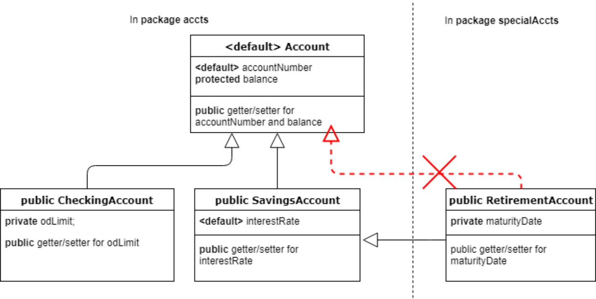
Vì tất cả các tài khoản đều cần có accountNumber và balance, tôi đã đưa các thành viên này vào một
Lớp cha (Superclass) chung có tên là Account. Dưới đây là mã nguồn cho các Lớp (Class) này:
package accts;
class Account{
int accountNumber;
protected double balance;
//public getter and setter methods for the above fields
}
package accts;
public class CheckingAccount extends Account{
private double odLimit;
//public getter and setter methods for odLimit
66
}
package accts;
public class SavingsAccount extends Account{
double interestRate;
//public getter and setter methods for interestRate
}
package specialAccts;
import accts.SavingsAccount;
public class RetirementAccount extends SavingsAccount{
private String maturityDate;
//getter and setter methods for maturityDate
public static void main(String[] args){
Account a = new Account(); //will not compile
RetirementAccount ra = new RetirementAccount(); //valid
ra.balance = 100.0;//valid
ra.setAccountNumber(10);//valid
ra.setInterestRate(7.0);//valid
SavingsAccount sa = new SavingsAccount();//valid
sa.balance = 10.0; //will not compile
ra.accountNumber = 10;//will not compile
ra.interestRate = 7.0;//will not compile
}
}
Để thêm phần thú vị, tôi đã đặt RetirementAccount vào một package khác với các Lớp (Class) còn lại. Giờ chúng ta hãy xem tác động của các access modifier khác nhau lên các Lớp (Class) này:
67
1. Vì Account có quyền truy cập mặc định (default access), nó chỉ hiển thị trong package accts, và do đó RetirementAccount không thể truy cập hoặc kế thừa lớp (Class) Account.
2. Vì accountNumber có quyền truy cập mặc định (default access), nó chỉ hiển thị trong package accts, và do đó, nó sẽ được kế thừa bởi tất cả các lớp con (subclass) của Account thuộc cùng một package. Như vậy, accountNumber sẽ được kế thừa bởi CheckingAccount và SavingsAccount.
3. Vì balance có quyền truy cập protected (protected access), nó hiển thị trong tất cả các lớp (class) thuộc package accts và tất cả các lớp con (subclass) của lớp (Class) Account bất kể package của chúng là gì. Do đó, nó sẽ được kế thừa bởi CheckingAccount và SavingsAccount. Vì Account không hiển thị bên ngoài package accts, việc khai báo balance là protected dường như không có nhiều ý nghĩa, nhưng thực tế thì có. Hãy quan sát những gì xảy ra với RetirementAccount.
4. Vì RetirementAccount kế thừa (extends) SavingsAccount nhưng thuộc một package khác, nó chỉ kế thừa các thành phần public và protected (nhưng không phải mặc định) của SavingsAccount. Điều này có nghĩa là, trường (field) protected balance cũng được truyền sang cho RetirementAccount. Vì trường (field) interestRate của SavingsAccount có quyền truy cập mặc định (default access), nó không hiển thị trong RetirementAccount và do đó, không được kế thừa bởi RetirementAccount.
5. Mặc dù trường (field) balance của Account hiển thị và được kế thừa trong RetirementAccount, sa.balance vẫn sẽ không biên dịch được vì lớp (Class) RetirementAccount không sở hữu balance của SavingsAccount như đã giải thích ở chương trước. Về mặt kỹ thuật, mã nguồn của lớp (Class) RetirementAccount không chịu trách nhiệm cho việc triển khai lớp (Class) SavingsAccount, và vì vậy, RetirementAccount không thể truy cập balance của SavingsAccount. Nó có thể truy cập balance của chính nó, vốn được kế thừa từ SavingsAccount, và đó là lý do tại sao ra.balance biên dịch bình thường, nhưng không truy cập được balance của SavingsAccount.
68
Ảnh hưởng về bộ nhớ của các access modifier đối với lớp con (subclass)☝
Ngay cả khi một lớp con (subclass) không kế thừa một số biến thể hiện (instance variable) của một lớp cha (superclass) (do các access modifier), một đối tượng của lớp con (subclass object) vẫn tiêu tốn không gian cần thiết để lưu trữ toàn bộ các biến thể hiện (instance variable) của lớp cha (superclass). Ví dụ, khi JVM cấp phát bộ nhớ cho một đối tượng RetirementAccount, nó bao gồm cả không gian cần thiết để lưu trữ tất cả các biến thể hiện của SavingsAccount và Account bất kể chúng có được kế thừa trong RetirementAccount hay không. Vì vậy, dưới góc nhìn bộ nhớ, các access modifier không có bất kỳ ảnh hưởng nào.
Vì vậy, một mặt, chúng ta nói rằng một thành viên private không được kế thừa bởi một lớp con (subclass) và mặt khác, chúng ta lại nói rằng đối tượng của lớp con (subclass object) thực sự chứa thành viên đó trong bộ nhớ của nó. Sự mâu thuẫn này làm cho việc hiểu một cách trực quan về thuật ngữ "kế thừa (inheritance)" trở nên khó khăn. Thật không may, thực tế lại là như vậy. Ví dụ, trong Mục 8.2, Đặc tả Ngôn ngữ Java (Java Language Specification - JLS) có viết: "Các thành viên của một lớp được khai báo là private thì không được kế thừa bởi các lớp con của lớp đó." Điều này cho thấy JLS liên kết thuật ngữ kế thừa với các access modifier và không cân nhắc gì đến bộ nhớ.
13.1.4 Kế thừa thành viên thể hiện (instance member) so với thành viên static (static member)☝
Kế thừa biến thể hiện (instance variable) so với biến static (static variable)☝
Trong một ví dụ trước đó, bạn đã thấy rằng lớp Employee kế thừa các biến thể hiện cũng như các biến static của lớp cha Person của nó. Tuy nhiên, có một sự khác biệt cơ bản giữa cách các biến thể hiện và biến static được kế thừa. Sự khác biệt này là
69
được làm nổi bật trong đoạn mã sau đây:
public class Person{
public String name;
public static int personCount;
}
public class Employee extends Person{
//inherits instance as well as static fields of Person
}
class TestClass{
public static void main(String[] args){
Person p = new Person();
Employee e = new Employee();
p.name = "Amy";
e.name = "Betty";
System.out.print(p.name+" ");
System.out.println(e.name);
Employee.personCount = 2;
System.out.print(Person.personCount+" ");
System.out.println(Employee.personCount);
}
}
Đoạn mã trên tạo ra kết quả đầu ra sau đây:
Amy Betty
2 2
Hãy quan sát rằng chương trình in ra các giá trị khác nhau cho name — mỗi đối tượng (Object) một giá trị, nhưng cùng một giá trị
70
cho personCount . Điều này có nghĩa là cả hai Đối tượng (Object) đều có bản sao riêng của name , bản sao mà chúng có thể thao tác mà không ảnh hưởng đến bản sao của đối tượng còn lại, nhưng biến static personCount được chia sẻ bởi cả hai Lớp (Class). Khi đoạn mã cập nhật personCount của Employee , personCount của Person cũng được cập nhật theo. Trên thực tế, Employee hoàn toàn không có được bản sao riêng của personCount . Nó chỉ đơn thuần nhận được quyền truy cập vào personCount của Person .
Tính kế thừa (Inheritance) của phương thức instance so với phương thức static☝
Vì các phương thức không chiếm bất kỳ không gian nào trong một Đối tượng (Object) (hoặc một Lớp (Class)), nên dù sao cũng chỉ có một bản sao duy nhất của phương thức, bất kể đó là phương thức instance hay phương thức static.
Tuy nhiên, về mặt khái niệm, sự khác biệt mà tôi đã nhấn mạnh ở trên đối với các biến cũng tồn tại đối với các phương thức. Về mặt khái niệm, một Lớp con (Subclass) kế thừa bản sao riêng của một phương thức instance. Điều này được chứng minh bằng thực tế là một Lớp con (Subclass) có thể thay thế hoàn toàn hành vi của một phương thức instance được kế thừa dành cho các Đối tượng (Object) của Lớp con (Subclass) bằng cách “ghi đè (overriding)” nó bằng một triển khai mới của chính nó mà không ảnh hưởng đến hành vi triển khai của Lớp cha (Superclass) dành cho các Đối tượng (Object) của Lớp cha (Superclass). Mặt khác, một Lớp con (Subclass) chỉ đơn thuần có quyền truy cập vào phương thức static của Lớp cha (Superclass) của nó, và vì thế, Lớp con (Subclass) không thể thay đổi hành vi của phương thức static được kế thừa. Lớp con (Subclass) có thể “ẩn đi (hide)” hành vi phương thức static của Lớp cha (Superclass) bằng cách cung cấp một triển khai mới nhưng không thể thay thế phương thức của Lớp cha (Superclass).
Ghi đè (Overriding) và ẩn đi (hiding) là các thuật ngữ kỹ thuật có ý nghĩa chính xác và liên quan chặt chẽ đến Tính đa hình (Polymorphism). Việc hiểu rõ chúng là rất quan trọng cho kỳ thi cũng như để trở thành một lập trình viên Java giỏi. Tôi sẽ đi sâu hơn vào các thuật ngữ này sau khi chúng ta đi qua các chi tiết cơ bản của việc kế thừa các Lớp (Class) và triển khai các Interface (Giao diện).
13.1.5 Lợi ích của Tính kế thừa (Inheritance)☝
71
Trước hết, Tính kế thừa (Inheritance) cho phép bạn nhóm các lớp (class) lại với nhau bằng cách cho chúng kế thừa một lớp cha chung. Các chức năng chung cho tất cả các lớp đó chỉ cần được định nghĩa một lần trong lớp cha. Ví dụ, trong hệ thống phân cấp lớp bao gồm các lớp Account,
CheckingAccount, và SavingsAccount mà tôi đã sử dụng ở đầu chương này,
tôi đã đặt các chức năng chung như số tài khoản và phương thức kiểm tra số dư vào một
lớp cha có tên là Account và tôi đặt các đặc trưng riêng của từng loại tài khoản này vào
các lớp con (subclass) riêng biệt.
Có một số ưu điểm đối với cách tiếp cận này. Hãy cùng lần lượt xem xét chúng.
Tái sử dụng mã nguồn☝
Bạn có thể viết logic cho các trường chung tại một nơi duy nhất và chia sẻ logic đó với tất cả các lớp. Trong
ví dụ trên, chỉ có duy nhất một bản sao của mã nguồn quản lý số tài khoản. Vì logic này
nằm ở lớp cha, nó sẽ tự động được kế thừa bởi tất cả các lớp con.
Việc có một lớp cơ sở chung cũng giúp bạn dễ dàng thêm chức năng mới hoặc sửa đổi chức năng
hiện tại chung cho tất cả các lớp. Điều này giúp mã nguồn trở nên dễ mở rộng và
dễ bảo trì hơn về tổng thể.
Che giấu thông tin☝
Việc tách biệt các đặc tính chung vào một lớp cha chung giúp bạn che giấu các đặc tính của
từng lớp con (subclass) đối với các tiến trình không cần biết đến các đặc tính đó. Như đã thảo luận
trước đây, việc bộc lộ nhiều thông tin hơn đồng nghĩa với rủi ro phụ thuộc vô ý cao hơn, tức là
liên kết chặt hơn (tighter coupling), điều vốn không mong muốn. Ví dụ, nếu bạn có một tiến trình lặp
qua tất cả các tài khoản và in ra số tài khoản cùng số dư của chúng, thì tiến trình này không cần phải biết về
hạn mức thấu chi (overdraft limit), lãi suất (interest rate) hoặc ngày đáo hạn (maturity date). Nếu bạn chỉ cần truyền
một mảng các Account cho tiến trình này, điều đó là đủ. Dạng như thế này:
Dĩ nhiên, mảng này sẽ bao gồm tất cả các loại đối tượng (Object) Account (tức là các đối tượng (Object) của lớp con (Subclass) của lớp (Class) Account), nhưng tiến trình sẽ chỉ nhìn nhận chúng là các đối tượng (Object) Account chứ không phải các đối tượng (Object) CheckingAccount, SavingsAccount hay RetirementAccount. Đoạn mã trên không quan tâm liệu một đối tượng (Object) Account thực sự là một SavingsAccount hay một CheckingAccount. Nó chỉ đơn giản in ra số tài khoản và số dư của tài khoản đó bất kể đó là loại tài khoản nào. Điều này chỉ có thể thực hiện được nhờ vào tính kế thừa (Inheritance). Nếu không có lớp cha (Superclass) chung, bạn sẽ phải có ba phương thức khác nhau — mỗi phương thức cho một trong ba loại tài khoản — để in thông tin này.
Tính đa hình (Polymorphism)☝
Cuối cùng, và quan trọng nhất, tính kế thừa (Inheritance) giúp tính đa hình (Polymorphism) có thể thực hiện được. Tính đa hình (Polymorphism) tự bản thân nó là một chủ đề riêng biệt và tôi sẽ sớm thảo luận về nó trong một mục riêng.
13.2 Sử dụng super và this để truy cập các đối tượng (Object) và hàm khởi dựng (Constructor)
13.2.1 Xem lại quá trình khởi tạo đối tượng (Object)☝
Hãy nhớ lại rằng trong mục “Tạo và nạp chồng hàm khởi dựng (Constructor)” của chương “Làm việc với các Phương thức và Tính đóng gói (Encapsulation)”, tôi đã nói về bốn bước mà một JVM thực hiện trong khi khởi tạo một lớp (Class). Hãy cùng xem các bước này bị ảnh hưởng như thế nào khi có
73
tính kế thừa (Inheritance) có liên quan.
1. Bước đầu tiên là tải và khởi tạo lớp (Class) nếu nó chưa được tải và khởi tạo.
2. Bước thứ hai là cấp phát bộ nhớ cần thiết để lưu trữ các biến instance của đối tượng (Object) trong vùng nhớ heap. Vì các biến instance được định nghĩa trong lớp cha (Superclass) cũng được bao gồm trong đối tượng (Object) của lớp con (Subclass) (việc chúng có thể truy cập được bởi lớp con (Subclass) hay không lại là một vấn đề khác), bộ nhớ được JVM cấp phát cho đối tượng (Object) của lớp con (Subclass) phải bao gồm cả không gian để lưu trữ các biến instance của lớp cha (Superclass) nữa.
3. Bước thứ ba là khởi tạo các biến này về giá trị mặc định của chúng. Điều này có nghĩa là các biến được kế thừa cũng cần được khởi tạo về giá trị mặc định của chúng.
4. Bước thứ tư là tạo cơ hội cho instance đó thiết lập giá trị của các biến instance theo logic nghiệp vụ của lớp (Class) đó bằng cách thực thi mã nguồn được viết trong các khối khởi tạo instance (instance initializer) và các constructor. Bước này sẽ phức tạp hơn một chút khi lớp (Class) kế thừa từ một lớp (Class) khác. Hãy nhớ rằng toàn bộ mục đích của việc kế thừa các đặc tính (tức là cả biến và phương thức) của lớp cha (Superclass) là để lớp con (Subclass) có thể sử dụng các đặc tính đó! Nó thậm chí có thể sử dụng các đặc tính này tại thời điểm khởi tạo của chính nó. Nhưng để làm được điều đó, các đặc tính đó phải được khởi tạo trước. Điều này có nghĩa là lớp con (Subclass) không thể khởi tạo các đặc tính của chính nó trừ khi các đặc tính của lớp cha (Superclass) đã được khởi tạo.
Bạn có thể thấy điều này sẽ dẫn đến đâu. Lớp cha (Superclass) không thể được khởi tạo trước khi lớp cha (Superclass) của lớp cha (Superclass) được khởi tạo, và cứ tiếp tục như thế cho đến khi không còn lớp cha (Superclass) nào nữa. Chuỗi khởi tạo này sẽ kéo dài cho đến lớp Object bởi vì Object là lớp gốc (root class) của tất cả các lớp (Class) và nó là lớp (Class) duy nhất không có lớp cha (Superclass).
Bạn đã thấy rằng quá trình khởi tạo được kích hoạt khi bạn cố gắng tạo một instance của lớp (Class) đó bằng cách sử dụng từ khóa new. Khi JVM bắt gặp từ khóa new được áp dụng cho một lớp (Class), nó sẽ gọi constructor tương ứng của lớp (Class) đó. Nhưng như đã thảo luận ở trên, việc thực thi constructor này và các khối khởi tạo instance (instance initializer) liên quan không thể tiến hành cho đến khi quá trình khởi tạo của lớp cha (Superclass) hoàn thành.
74
13.2.2 Khởi tạo lớp cha (Superclass) sử dụng “super”☝
Để đảm bảo việc khởi tạo các trường (field) được kế thừa từ lớp cha (Superclass), một constructor trước hết phải
gọi chính xác một trong các constructor của lớp cha (Superclass). Điều này được thực hiện bằng cách sử dụng cú pháp
super(<arguments>). Ví dụ:
class Person{
String name;
Person(String name){
this.name = name;
}
}
public class Employee extends Person{
public Employee(String s){
super(s);
}
public static void main(String args[]){
Employee ee = new Employee("Bob");
}
}
Câu hỏi mà bạn có thể đặt ra lúc này là còn lớp (Class) Person thì sao. Lớp (Class) này không có
mệnh đề extends và điều đó có nghĩa là nó ngầm định kế thừa từ java.lang.Object. Vậy lời gọi đến
constructor của Object nằm ở đâu trong constructor của Person?
Câu hỏi hay. Lời gọi đến constructor của lớp cha (Superclass) quan trọng đến mức nếu constructor của một lớp (Class)
không gọi rõ ràng bất kỳ constructor nào của lớp cha (Superclass), trình biên dịch (compiler)
sẽ tự động chèn một lời gọi đến constructor mặc định của lớp cha (Superclass) vào dòng đầu tiên của
constructor đó. Trình biên dịch (compiler) không kiểm tra các constructor mà lớp cha (Superclass) có.
75
Nó chỉ đơn giản giả định sự hiện diện của constructor mặc định và chèn một lời gọi đến constructor đó.
Do đó, về cơ bản, constructor của Person được trình biên dịch sửa đổi như sau:
class Person{
String name;
Person(String name){
super(); //<-- inserted automatically by the compiler
this.name = name;
}
}
Điều này có nghĩa là constructor không tham số của Object sẽ được gọi trước khi tiếp tục thực thi constructor của Person. Với kiến thức này, hãy cùng xem điều gì sẽ xảy ra khi tôi sửa đổi Employee như sau:
public class Employee extends Person{
public Employee(String s){
name = s;
}
public static void main(String args[]){
Employee ee = new Employee("Bob");
}
}
Bạn nghĩ sao? Đúng vậy. Nó sẽ không biên dịch. Vì constructor của Employee không gọi constructor của lớp cha (Superclass) một cách tường minh, trình biên dịch sẽ tự chèn một lời gọi đến super();. Điều này có nghĩa là constructor của Employee thực sự trông như thế này:
public Employee(String s){
super(); //inserted automatically by the compiler
name = s;
}
76
}
Nhưng Person không có bất kỳ constructor không đối số (no-args constructor) nào! Hãy nhớ rằng một constructor không đối số mặc định (default no-args constructor) chỉ được trình biên dịch cung cấp cho một lớp (class) nếu lớp (class) đó hoàn toàn không định nghĩa bất kỳ constructor nào. Trong trường hợp này, Person có định nghĩa một constructor một cách tường minh và do đó trình biên dịch không chèn một constructor không đối số vào lớp (class) Person. Vì vậy, Employee sẽ bị lỗi biên dịch.
Hãy để tôi thực hiện thêm một thay đổi nữa. Điều gì sẽ xảy ra nếu tôi loại bỏ tất cả các constructor khỏi lớp (class) Employee?
public class Employee extends Person{
public static void main(String args[]){
Employee ee = new Employee();
}
}
Một lần nữa, hãy nhớ lại quy tắc về constructor mặc định. Vì Employee không định nghĩa bất kỳ constructor nào một cách tường minh, trình biên dịch tự động chèn một constructor không đối số, trông giống như thế này:
public class Employee extends Person{
public Employee(){ //inserted by the compiler
super(); //inserted by the compiler
}
public static void main(String args[]){
Employee ee = new Employee();
}
}
Quan sát thấy rằng constructor không đối số mặc định này cũng chứa một lời gọi tới super(); (Hãy xem việc gọi constructor của lớp cha (superclass) quan trọng như thế nào?). Nhưng như đã thảo luận ở trên,
77
Person không có constructor không tham số (no-args constructor) và do đó, đoạn code trên sẽ không compile!
Vì một đối tượng (Object) chỉ có thể được khởi tạo một lần, việc gọi super(<arguments>); cũng chỉ có thể được thực hiện
một lần. Nếu bạn cố gắng gọi nó nhiều hơn một lần, code sẽ bị lỗi compile.
Gọi một constructor khác bằng cách sử dụng this(<arguments>)☝
Trong chương trước, bạn đã thấy cách một constructor có thể gọi một constructor khác của cùng một
lớp (Class) bằng cách sử dụng cú pháp this(<arguments>);. Hãy nhớ rằng việc gọi một constructor khác
chỉ được cho phép nếu nó là câu lệnh đầu tiên của một constructor. Nhưng điều này gây ra một vấn đề nhỏ. Làm thế nào mà
cả hai — this(<arguments>); và super(<arguments>);, đều có thể là câu lệnh đầu tiên của một
constructor cùng một lúc? Rõ ràng là chúng không thể.
Trên thực tế, Java chỉ cho phép một trong hai câu lệnh trong một constructor. Nói cách khác, nếu bạn gọi
this(<arguments>); thì bạn không thể gọi super(<arguments>); và nếu bạn gọi
super(<arguments>);, bạn không thể gọi this(<arguments>);.
Lưu ý rằng điều này không vi phạm giả định ban đầu của chúng ta rằng các đặc tính của lớp cha (Superclass) phải
được khởi tạo trước khi khởi tạo các đặc tính của lớp con (Subclass). Nếu bạn gọi this(<arguments>);, bạn
không cần phải gọi super(<arguments>); nữa vì constructor kia đã
gọi super(<arguments>); và khởi tạo các đặc tính của lớp cha (Superclass).
Nếu bạn gọi super(<arguments>);, thì bằng cách cấm bạn gọi
this(<arguments>);, Java ngăn chặn việc gọi constructor của lớp cha (Superclass) nhiều hơn
một lần.
Dựa trên cuộc thảo luận ở trên, bạn có thể xác định kết quả đầu ra khi chạy TestClass
từ dòng lệnh:
class Person{
String name;
Person(String name){
System.out.println("In Person's constructor ");
Trong phương thức main của TestClass, một đối tượng (Object) của lớp (Class) Manager đang được tạo bằng cách sử dụng constructor duy nhất mà nó có. Constructor này không gọi constructor của lớp cha (Superclass) một cách tường minh, do đó, trình biên dịch sẽ chèn một lời gọi đến super(); làm câu lệnh đầu tiên của constructor này. Điều này dẫn chúng ta đến constructor không tham số (no-args constructor) của Employee. Constructor không tham số của Employee...
79
constructor tham số gọi constructor hai tham số của cùng một Lớp (Class) một cách tường minh bằng cách sử dụng
this("dummy", "000"). Constructor hai tham số của Employee gọi constructor của
Lớp cha (Superclass) của nó bằng cách sử dụng super(name). Điều này dẫn chúng ta đến constructor một tham số của
Person. Bên trong constructor Person(String), không có lời gọi tường minh nào đến
constructor của Lớp cha (Superclass) của nó. Vì vậy, trình biên dịch chèn super(); làm câu lệnh đầu tiên. Điều này
gọi constructor không tham số của java.lang.Object bởi vì Person ngầm định kế thừa
java.lang.Object. Vì Lớp (Class) Object là lớp gốc (root class), đây là constructor cuối cùng trong
chuỗi. Constructor của Object không tạo ra bất kỳ kết quả đầu ra nào.
Bây giờ, chúng ta phải bắt đầu quay ngược chuỗi gọi này. Sau khi hoàn thành việc thực thi constructor của Object,
luồng điều khiển chương trình quay trở lại câu lệnh tiếp theo trong constructor của Person, đó là
System.out.println("In Person's constructor "). Vì vậy, dòng đầu tiên của kết quả đầu ra là
“In Person’s constructor”. Tiếp theo, đối số name được gán cho biến thực thể (instance variable)
name và cuộc gọi quay trở lại constructor của Employee. Câu lệnh tiếp theo trong
constructor này là System.out.println("In Employee(name, empid) constructor ");,
in ra “In Employee(name, empid) constructor ” và luồng điều khiển chương trình quay trở lại
constructor không tham số của Employee, in ra “In Employee() constructor ”.
Luồng điều khiển chương trình quay trở lại constructor một tham số của Manager, in ra, “In
Manager(grade) constructor ”. Điều này hoàn tất chuỗi gọi constructor được thực thi
trong quá trình tạo một Đối tượng (Object) Manager. Do đó, kết quả đầu ra là:
In Person's constructor
In Employee(name, empid) constructor
In Employee() constructor
In Manager(grade) constructor
Chuỗi gọi này được minh họa trong hình dưới đây.
80
13.2.3 Sử dụng biến ngầm định “super”☝
Khi một method bị ghi đè bởi một lớp con (subclass), không một lớp (class) không liên quan nào có thể thực thi phiên bản lớp cha (superclass) của method đó trên một đối tượng lớp con (subclass object). Tuy nhiên,
81
Bản thân lớp con (Subclass) có thể truy cập phiên bản của lớp cha (Superclass) bằng cách sử dụng một biến ngầm định (implicit variable) mang tên “super”. Mọi phương thức instance (instance method) của một lớp (Class) đều nhận được biến này. Nó rất giống với biến ngầm định khác mà bạn đã thấy trước đó, đó là “this”. Trong khi this tham chiếu đến đối tượng (Object) hiện tại, super tham chiếu đến các thành viên mà lớp này kế thừa từ lớp cha (parent class) của nó. Đoạn mã sau đây minh họa cách sử dụng nó:
class InterestCalculator{
public double computeInterest(double principal, int yrs, double
rate){
return principal*yrs*rate;
}
}
class CompoundInterestCalculator extends InterestCalculator{
public double computeInterest(double principal, int yrs, double
rate){
return principal*Math.pow(1 + rate, yrs) - principal;
}
//invoke this method from TestClass's main
public void test(){
double interest = super.computeInterest(100, 2, 0.1);
System.out.println(interest); //prints 20.0
interest = computeInterest(100, 2, 0.1);
System.out.println(interest); //prints 21.000000000000014
}
}
public class TestClass{
public static void main(String[] args){
CompoundInterestCalculator cic = new
CompoundInterestCalculator();
cic.test();
82
}
}
Việc gọi super.computeInterest(100, 2, 0.1); trong đoạn mã trên khiến phiên bản của InterestCalculator được gọi, trong khi việc gọi computeInterest(100, 2, 0.1) khiến phiên bản của CompoundInterestCalculator được gọi.
Biến super chỉ khả dụng trong các phương thức thể hiện (instance method) của một lớp và có thể được sử dụng để truy cập bất kỳ thành viên được kế thừa nào (cả static lẫn instance) của lớp cha (superclass). Bây giờ bạn có đang nghĩ đến việc tạo một chuỗi các super không? Kiểu như super.super.someMethod()? Không, bạn không thể làm điều đó vì không có thành viên nào tên là super trong lớp cha. Thực tế, bạn không thể định nghĩa một biến hay một phương thức có tên là super trong bất kỳ lớp nào. Điều này đặt ra câu hỏi là làm thế nào một lớp có thể truy cập phiên bản của lớp ông (grandparent) cho một phương thức được định nghĩa ở cả lớp ông cũng như lớp cha của nó? Ví dụ: điều gì sẽ xảy ra nếu bạn có lớp cháu (grandchild class) dưới đây và bạn muốn truy cập phiên bản computeInterest của InterestCalculator trong lớp này:
class SubCompoundInterestCalculator
extends CompoundInterestCalculator{
public void test(){
//invokes CompoundInterest's computeInterest
super.computeInterest(100, 2, 0.1);
//can't do super.super
//super.super.computeInterest(100, 2, 0.1);
}
}
Câu trả lời là bạn không thể. Không có cách nào để đi cao hơn một cấp. Nói cách khác, một lớp con (subclass) chỉ có thể truy cập phiên bản phương thức của lớp cha (superclass) trực tiếp của nó bằng cách sử dụng super.
Lưu ý rằng hạn chế này chỉ áp dụng cho các phương thức bị ghi đè (overridden) bởi lớp cha.
83
class. Nếu lớp cha không ghi đè một phương thức của Lớp cha (Superclass) của nó, thì lớp cha
sẽ kế thừa phương thức đó từ lớp ông bà và lớp con có thể truy cập phiên bản phương thức của
lớp ông bà như thể đó là phiên bản của lớp cha.
13.2.4 Tóm tắt thứ tự khởi tạo☝
Bây giờ bạn đã thấy tất cả các bước, từ việc nạp Lớp (Class) cho đến thực thi một constructor của Lớp (Class),
mà JVM thực hiện để tạo ra một Đối tượng (Object) của một Lớp (Class). Dưới đây là thứ tự của các bước này để tham khảo
nhanh:
Nếu có một Lớp cha (Superclass), khởi tạo các trường static (static fields) và thực thi các khối khởi tạo static (static initializers) của Lớp cha (Superclass)
theo thứ tự xuất hiện của chúng (chỉ thực hiện một lần duy nhất cho mỗi Lớp (Class))
Khởi tạo các trường static (static fields) và thực thi các khối khởi tạo static (static initializers) của Lớp (Class) theo thứ tự xuất hiện của
chúng (chỉ thực hiện một lần duy nhất cho mỗi Lớp (Class))
Nếu có một Lớp cha (Superclass), khởi tạo các trường instance (instance fields) và thực thi các khối khởi tạo instance (instance initializers) của
Lớp cha (Superclass) theo thứ tự xuất hiện của chúng
Thực thi constructor của Lớp cha (Superclass)
Khởi tạo các trường instance (instance fields) và thực thi các khối khởi tạo instance (instance initializers) của Lớp (Class) theo thứ tự
xuất hiện của chúng
Thực thi constructor của Lớp (Class)
Ví dụ dưới đây minh họa các bước trên:
class A {
static{ System.out.println("In A's static initializer"); }
A(){ System.out.println("In A's constructor"); }
{ System.out.println("In A's instance initializer"); }
}
public class B extends A {
84
static{ System.out.println("In B's static initializer"); }
{ System.out.println("In B's instance initializer"); }
B(){ System.out.println("In B's constructor"); }
public static void main(String[] args) {
System.out.println("In B.main()");
B b = new B();
B b2 = new B(); //creating B's object again
}
}
Kết quả đầu ra sau đây được tạo ra khi class B được chạy:
In A's static initializer
In B's static initializer
In B.main()
In A's instance initializer
In A's constructor
In B's instance initializer
In B's constructor
In A's instance initializer
In A's constructor
In B's instance initializer
In B's constructor
Bạn nên lưu ý các điểm sau trong kết quả đầu ra ở trên:
Các bộ khởi tạo static (static initializer) của A và B được gọi trước khi main() của B được thực thi vì JVM cần tải lớp (class) trước khi có thể gọi một phương thức trên đó.
Các bộ khởi tạo static (static initializer) của A và B chỉ được gọi một lần duy nhất mặc dù hai đối tượng (object) của B được tạo ra.
Bộ khởi tạo instance (instance initializer) của A được thực thi trước constructor của A mặc dù bộ khởi tạo instance xuất hiện sau constructor trong mã nguồn của A.
85
Trong khi tạo một đối tượng (object) của B, khối khởi tạo thực thể (instance initializer) và constructor của A được gọi trước khối khởi tạo thực thể (instance initializer) và constructor của B.
Khối khởi tạo thực thể (instance initializer) và constructor của A được gọi mỗi khi một đối tượng (object) của B được tạo.
Thứ tự thực thi của các thành viên (member) khác nhau trong một lớp (class) và lớp cha (superclass) của nó đôi khi có thể rất khó theo dõi. Tuy nhiên, kỳ thi không cố gắng đánh đố bạn quá nhiều về chủ đề này. Nếu bạn có thể theo dõi ví dụ trên, bạn sẽ không gặp bất kỳ vấn đề nào với mã nguồn trong kỳ thi thực tế.
13.3 Sử dụng các lớp abstract, final, và sealed
13.3.1 Sử dụng các lớp abstract và các phương thức abstract☝
Tôi đã thảo luận ngắn gọn về abstract class như một dạng kiểu dữ liệu trong chương “Khởi đầu cho người mới bắt đầu”. Một lớp abstract được sử dụng khi bạn muốn gom các đặc tính chung của nhiều kiểu đối tượng (object) liên quan, mặc dù biết rằng không có đối tượng (object) nào chỉ mang các đặc tính được định nghĩa trong lớp abstract đó có thể thực sự tồn tại. Ví dụ, nếu bạn đang tạo một ứng dụng xử lý chó và mèo, bạn có thể muốn gom các đặc tính chung của chó và mèo vào một lớp (class) gọi là Animal. Nhưng bạn biết rằng bạn không thể chỉ có một đối tượng Animal đơn thuần. Bạn có thể có một con mèo hoặc một con chó, nhưng không thể có một thứ gì đó chỉ là động vật mà không phải là mèo, chó hay một loài động vật nào khác. Theo nghĩa đó, Animal là một khái niệm trừu tượng. Furniture (Đồ nội thất) là một khái niệm khác tương tự. Nếu bạn muốn có một món Furniture, bạn phải lấy một chiếc ghế hoặc một chiếc bàn vì bản thân Furniture không tự tồn tại độc lập. Nó là một khái niệm trừu tượng.
Các lớp abstract được sử dụng để thể hiện các khái niệm trừu tượng như vậy. Một lớp abstract có thể được định nghĩa bằng cách sử dụng từ khóa abstract trong khai báo của nó. Ví dụ, sau đây là cách bạn có thể định nghĩa Furniture :
abstract class Furniture{
private String material;
86
//public getter and setter
}
Quan sát thấy rằng Furniture gần như giống hệt một Lớp (Class) thông thường với các trường và phương thức public và private. Tuy nhiên, vì nó được khai báo là abstract, nó không thể khởi tạo đối tượng. Do đó, nếu bạn cố gắng thực hiện new Furniture(), trình biên dịch sẽ báo lỗi: “Furniture is abstract; cannot be instantiated”.
Nhưng Chair và Table là các khái niệm cụ thể. Chúng tồn tại độc lập. Vì cả hai đều là các loại Furniture, bạn có thể mô hình hóa chúng thành hai Lớp (Class) kế thừa (extend) Furniture.
class Chair extends Furniture{
//fields and methods specific to Chair
}
class Table extends Furniture{
//fields and methods specific to Table
}
Vì Chair và Table kế thừa (extend) Furniture, chúng sẽ thừa hưởng tất cả các tính năng của Furniture giống như bất kỳ Lớp con (Subclass) nào kế thừa các tính năng từ Lớp cha (Superclass) của nó.
Các Lớp (Class) không phải là abstract còn được gọi là các lớp “cụ thể” (concrete class) bởi vì chúng đại diện cho các Đối tượng (Object) thực tế.
Thêm một phương thức abstract vào một lớp abstract☝
Giả sử mỗi món đồ nội thất trong một cửa hàng đều phải cung cấp một phương thức để lắp ráp. Vì các bước để lắp ráp một chiếc ghế sẽ khác với các bước lắp ráp một chiếc bàn, chúng ta không thể đưa các bước lắp ráp này vào Lớp (Class) Furniture. Nói cách khác, những gì chúng ta đang mô tả là phần khai báo phương thức lắp ráp là chung cho mọi đồ nội thất, nhưng phần triển khai (implementation) của chúng là riêng biệt cho từng loại đồ nội thất. Java cho phép bạn định nghĩa phần khai báo không có phần triển khai dưới dạng một phương thức abstract (abstract method). Một phương thức abstract được khai báo bằng cách áp dụng từ khóa abstract vào khai báo phương thức. Nó cũng không được phép có thân phương thức (method body). Ví dụ,
87
abstract class Furniture{
private String material;
//public getter and setter
public abstract void assemble(); //ends with a semicolon, no
opening and closing curly braces
}
Lợi ích của việc thêm các phương thức trừu tượng (abstract method) vào một Lớp (Class) là các thành phần khác có thể làm việc với tất cả các Đối tượng (Object) một cách nhất quán. Ví dụ, một Lớp (Class) lắp ráp đồ nội thất không cần phải lo lắng về việc nó đang lắp ráp một Chair hay một Table. Nó chỉ đơn giản có thể gọi assemble() trên bất kỳ loại đồ nội thất nào nhận được. Đại loại như thế này:
class FurnitureAssembler{
public static void assembleAllFurniture(Furniture[]
allFurniture){
for(Furniture f : allFurniture){
f.assemble();
}
}
}
Nhưng việc thêm một phương thức trừu tượng (abstract method) vào Lớp cha (Superclass) có ảnh hưởng đến các Lớp con (Subclass) ở chỗ các Lớp con (Subclass) hiện tại bắt buộc phải cung cấp phần triển khai cho phương thức trừu tượng đó. Ví dụ, bây giờ chúng ta cần cập nhật mã nguồn cho các Lớp (Class) Chair và Table của chúng ta như sau:
class Chair extends Furniture{
//fields and methods specific to Chair
public void assemble(){
System.out.println("Assembling chair!");
}
88
}
class Table extends Furniture{
//fields and methods specific to Table
public void assemble(){
System.out.println("Assembling table!");
}
}
Điều này hoàn toàn hợp lý bởi vì nếu một món đồ nội thất thực sự tồn tại thì chúng ta phải lắp ráp được nó theo định nghĩa của Furniture. Lý do duy nhất khiến một lớp con (Subclass) của Furniture không thể có phương thức để lắp ráp là khi chính lớp con đó là abstract! Ví dụ, điều gì sẽ xảy ra nếu bạn có một lớp con (Subclass) của Furniture tên là FoldingFurniture? FoldingFurniture là một khái niệm trừu tượng và có thể được mô hình hóa dưới dạng một lớp abstract (abstract class) kế thừa từ Furniture. Vì nó là abstract, nó có thể bỏ qua việc triển khai phương thức assemble. Nhưng bất kỳ lớp con cụ thể (concrete subclass) nào của FoldingFurniture cũng sẽ phải cung cấp một triển khai cho phương thức assemble.
Nếu bạn cảm thấy bối rối về cách mã nguồn của FurnitureAssembler có thể gọi các phương thức assemble của Chairs và Tables trong khi nó thậm chí còn không biết về sự tồn tại của chúng, đừng lo lắng. Tôi sẽ nói chi tiết về điều này ngay sau đây trong phần về polymorphism.
13.3.2 Sử dụng các lớp final và phương thức final☝
Bạn đã thấy cách sử dụng từ khóa final khi khai báo biến. Nó có nghĩa là biến đó là một constant, tức là giá trị của biến không thay đổi trong suốt quá trình thực thi chương trình. Từ khóa final cũng có thể được áp dụng cho các lớp (class) và phương thức (method) (cả static cũng như instance) và mang ý nghĩa tương tự. Điều này có nghĩa là hành vi của lớp hoặc phương thức đó không thể bị thay đổi bởi bất kỳ lớp con (Subclass) nào.
Hãy lưu ý rằng final hoàn toàn trái ngược với abstract. Bạn tạo một lớp hoặc một
89
phương thức abstract bởi vì bạn muốn một lớp con (subclass) của lớp đó cung cấp một triển khai khác cho lớp đó hoặc phương thức đó theo logic nghiệp vụ của lớp con. Mặt khác, bạn đặt một lớp hoặc một phương thức là final bởi vì bạn không muốn hành vi của lớp hoặc phương thức đó bị thay đổi chút nào bởi một lớp con (subclass). Về mặt thuật ngữ kỹ thuật, chúng ta nói rằng một lớp final không thể được tạo lớp con (subclassed) và một phương thức final không thể bị ghi đè (overridden). Tôi sẽ thảo luận chi tiết về việc ghi đè (overriding) sớm thôi nhưng giờ bạn có thể thấy tại sao abstract và final không thể đi cùng nhau.
Một lớp final không nhất thiết phải có một phương thức final. Nhưng trên thực tế, vì một lớp final không thể được mở rộng (extended), nên không phương thức nào của nó có thể bị ghi đè (overridden). Điều quan trọng là, một lớp final không thể có một phương thức abstract. Tại sao? Bởi vì hoàn toàn không có khả năng phương thức abstract đó được triển khai. Từ đó suy ra rằng nếu một lớp final kế thừa một phương thức abstract từ bất kỳ tổ tiên nào của nó, nó phải cung cấp một triển khai cho phương thức đó.
Dưới đây là một ví dụ về lớp final:
public final class Chair extends Furniture{
//since assemble is an abstract method in Furniture, it must be
implemented in this class
public void assemble(){
System.out.println("Assembling Chair");
}
}
Hãy quan sát rằng Chair không khai báo rõ ràng bất kỳ phương thức nào là final (nó có thể làm như vậy, nhưng điều đó sẽ là thừa thãi) và nó phải triển khai phương thức abstract assemble mà nó kế thừa từ lớp cha (superclass) của nó.
Một phương thức final cũng được định nghĩa tương tự:
public abstract class Bed extends Furniture{
90
//not necessary to implement assemble() because Bed is abstract
public final int getNumberOfLegs(){
return 4;
}
public static final void make(Bed b){
System.out.println("Making Bed: "+b);
}
}
public final class DoubleBed extends Bed{
//must implement assemble because DoubleBed is not abstract
public void assemble(){
System.out.println("Assembling DoubleBed");
}
//Can't override getNumberOfLegs here because it is final in Bed
final int getHeight(){
return 18;
}
}
Hãy quan sát rằng mặc dù Bed có một phương thức final, bản thân Bed không những không phải là final, mà nó còn là
abstract. Tôi đặt nó là abstract chỉ để minh họa rằng bất kỳ lớp (Class) nào, bất kể nó là final,
abstract, hay không phải cả hai, đều có thể chứa một phương thức final.
Thư viện lớp (Class) chuẩn của Java bao gồm một số lớp (Class) final. Quan trọng nhất trong số đó là
lớp (Class) java.lang.String , lớp mà bạn đã gặp trong chương về String API.
91
13.3.3 Các kết hợp hợp lệ của access modifier, abstract, final, và static☝
Ảnh hưởng của access modifier đối với abstract và final☝
Việc sử dụng abstract chỉ có ý nghĩa khi có sự xuất hiện của Tính kế thừa (Inheritance). Nếu một thành phần không bao giờ được kế thừa thì không có lý do gì để bàn về việc nó là abstract hay final. Bạn cũng biết rằng một thành viên private không bao giờ được kế thừa. Dựa trên hiểu biết này, bạn có thể cho biết điều gì sẽ xảy ra với đoạn mã sau đây không:
abstract class Sofa {
private abstract void recline();
}
Đúng vậy. Trình biên dịch sẽ từ chối đoạn mã trên với thông báo, “illegal combination of modifiers: abstract and private”. Bởi vì một phương thức private không bao giờ được kế thừa, nên không có cách nào để bất kỳ Lớp con (Subclass) nào của Sofa có thể cung cấp phần triển khai cho phương thức abstract này.
Điều gì sẽ xảy ra nếu phương thức recline có phạm vi truy cập protected hoặc default? Trong trường hợp đó, mọi thứ sẽ ổn vì một Lớp con (Subclass) có thể kế thừa các phương thức có phạm vi truy cập protected và default.
Bây giờ, hãy cùng xem điều gì xảy ra khi bạn khai báo một phương thức private là final:
class Sofa {
private final void recline(){
}
}
Bạn nghĩ điều gì sẽ xảy ra? Nó sẽ không biên dịch được ư? Sai rồi! Nếu một phương thức hoàn toàn không thể được kế thừa bởi bất kỳ Lớp con (Subclass) nào, thì liệu có thể ghi đè nó được không? Không. Do đó, trên thực tế, một phương thức private vốn dĩ đã là final rồi! Trình biên dịch chấp nhận đoạn mã trên
92
bởi vì không có sự mâu thuẫn giữa private và final. Do đó, việc đánh dấu một phương thức private
là final không phải là sai mà là dư thừa.
abstract và static☝
Từ khóa abstract chỉ liên quan đến việc ghi đè (overriding), và các phương thức static không bao giờ có thể bị ghi đè.
Do đó, abstract và static không thể đi cùng nhau. Vì vậy, đoạn mã sau sẽ không biên dịch:
abstract class Bed extends Furniture{
static abstract void getWidth();
}
Trình biên dịch sẽ tạo ra một thông báo lỗi cho biết “illegal combination of modifiers:
abstract and static” .
final và static☝
Mặc dù một phương thức static không thể bị ghi đè, nó vẫn được kế thừa bởi một lớp con (subclass) và
có thể bị ẩn đi (hidden) bởi lớp con đó. Tôi sẽ thảo luận chi tiết về sự khác biệt giữa ghi đè (overriding) và ẩn (hiding)
sau, nhưng hiện tại, hãy nhớ rằng final ngăn lớp con (subclass) ẩn đi phương thức static của lớp cha (superclass).
Do đó, đoạn mã sau sẽ biên dịch thành công:
class Bed{
static final int getWidth(){
return 36;
}
}
Nhưng đoạn mã sau sẽ không biên dịch vì getWidth là final trong Bed :
93
class DoubleBed extends Bed{
static int getWidth(){ //will not compile
return 60;
}
}
Tóm tắt việc áp dụng các access modifier, các từ khóa final, abstract, và static☝
Dựa trên thảo luận trước đó, tôi xin tóm tắt các quy tắc về lớp abstract, lớp concrete, cũng như các lớp và phương thức final:
Một lớp abstract không nhất thiết phải có phương thức abstract, nhưng nếu một lớp có phương thức abstract, nó phải được khai báo là abstract. Nói cách khác, một lớp concrete không thể có phương thức abstract.
Một lớp abstract không thể được khởi tạo bất kể nó có phương thức abstract hay không.
Một lớp final hoặc một phương thức final không thể là abstract.
Một lớp final không thể chứa phương thức abstract, nhưng một lớp abstract có thể chứa phương thức final.
Một phương thức private luôn luôn là final.
Một phương thức private không bao giờ có thể là abstract.
Một phương thức static có thể là final nhưng không bao giờ có thể là abstract.
Kỳ thi sẽ kiểm tra bạn về các tổ hợp khác nhau của access modifier và các từ khóa final, abstract, và static khi áp dụng cho các lớp và phương thức. Bạn nên nắm thật rõ những nơi có thể và không thể áp dụng các modifier này.
94
Tuy nhiên, kỳ thi không cố gắng đánh đố bạn về thứ tự của các access modifier và các từ khóa final và abstract. Ví dụ, bạn sẽ không bị yêu cầu chọn ra khai báo đúng từ ba khai báo sau đây:
public abstract void m();
final public void m(){ }
abstract protected void m();
Đối với trình biên dịch, kiểu trả về phải được chỉ định ngay trước tên phương thức. Trình biên dịch không quan tâm đến thứ tự của các modifier khác. Do đó, cả ba phương thức trên đều hợp lệ.
Tuy nhiên, bạn nên biết rằng, theo quy ước, thứ tự của các modifier trong một khai báo phương thức là như sau:
<access modifier> <static> <final or abstract> <return type>
methodName(<parameter list>)
Nếu bạn từng bối rối về thứ tự của chúng, chỉ cần nhớ lại signature của phương thức main như sau:
public static final void main(String[] args) .
Tất nhiên, phương thức main không nhất thiết phải là final. Tôi đã đề cập đến nó ở trên để chỉ ra vị trí của final trong một khai báo phương thức.
13.3.4 Sử dụng các lớp (class) và giao diện (interface) sealed☝
Trước đó bạn đã thấy rằng một lớp (class) non-final có thể được kế thừa bởi bất kỳ lớp (class) nào khác, miễn là nó có thể truy cập được. Ví dụ, một khi bạn tạo một lớp public Furniture, bạn sẽ không quan tâm ai sẽ kế thừa nó. Bất kỳ ai cũng có thể tạo một lớp con (subclass) của Furniture và tái sử dụng
95
chức năng mà bạn đã cung cấp trong lớp (Class) Furniture. Nhìn chung, đó là một điều tốt, nhưng không phải lúc nào cũng vậy.
Trong phát triển hướng đối tượng (OO), thường có nhu cầu thiết kế mô hình một thực thể sao cho tất cả mọi người đều có thể truy cập được nhưng chỉ một số ít được chọn mới có thể mở rộng. Nói cách khác, bạn muốn có một cấu trúc phân cấp các lớp (Class) bị giới hạn. Ví dụ, giả sử bạn đang phát triển một thư viện để định giá các công cụ tài chính như cổ phiếu và trái phiếu. Bạn muốn có thể tham chiếu đến tất cả các công cụ tài chính bằng cách sử dụng một lớp cha (Superclass) chung để có thể gọi các phương thức chung cho tất cả các công cụ tài chính mà không cần lo lắng về công cụ cụ thể. Tuy nhiên, với tư cách là tác giả của thư viện, bạn cũng biết rằng một số chức năng của thư viện, hay cụ thể hơn là một số phương thức trong thư viện, không thể xử lý mọi loại công cụ tài chính. Trên thực tế, bạn biết rằng nhiều phương thức trong thư viện của bạn chỉ có thể xử lý hai loại công cụ tài chính — Stock và Bond. Bạn không muốn một loại công cụ tài chính mới được tạo ra mà bạn không biết, bởi vì có thể một phương thức trong thư viện có cấu trúc switch như thế này:
FinancialInstrument fi = //get it somehow
switch(fi){
case Bond b -> valueBond(b);
case Stock s -> valueStock(s);
default -> throw new RuntimeException("Can't deal with this
financial instrument!");
}
Khối default thực sự không thêm bất kỳ chức năng nào nhưng, như bạn đã tìm hiểu trước đó, nó là cần thiết trong cấu trúc switch ở trên để đảm bảo tính đầy đủ. Nếu bất kỳ ai tạo ra một loại FinancialInstrument mới và truyền nó vào đoạn mã này, họ sẽ gặp phải một ngoại lệ runtime (Runtime Exception) khi chạy. Điều này gây lãng phí thời gian cho họ. Lý tưởng nhất là họ nên được cảnh báo ngay trong quá trình phát triển rằng họ không nên tạo một lớp con (Subclass) của FinancialInstrument vì thư viện của bạn sẽ không thể xử lý được. Và đây chính là lúc các lớp sealed (sealed class) xuất hiện.
Việc tách biệt logic nghiệp vụ (business logic) khỏi các lớp (Class) riêng lẻ và đưa nó vào một lớp (Class) chung bằng cách sử dụng switch là một biến thể của mẫu thiết kế visitor pattern cổ điển. Nội dung này không được yêu cầu trong kỳ thi nhưng bạn
96
vẫn nên tìm hiểu thêm về pattern này vì nó thường được thảo luận trong các cuộc phỏng vấn kỹ thuật.
Tạo các lớp sealed (sealed class)☝
Bạn có thể định nghĩa lớp (Class) FinancialInstrument của mình như sau:
public abstract sealed class FinancialInstrument permits Stock, Bond{
}
Hai từ khóa mới được sử dụng ở trên là sealed và permits. Bằng cách sử dụng hai từ khóa này, bạn đang báo cho trình biên dịch biết rằng không có lớp (Class) nào, ngoại trừ Stock và Bond, có thể kế thừa FinancialInstrument. Ngay khi bạn làm điều đó, trình biên dịch sẽ muốn đảm bảo rằng các lớp (Class) Stock và Bond thực sự tồn tại và chúng kế thừa FinancialInstrument. Không chỉ vậy, nó cũng muốn đảm bảo rằng các kiểu con (subtype) của chúng (nếu chúng có thể tồn tại) cũng được xác định tại thời điểm biên dịch (compile time). Vì vậy, bạn cũng sẽ cần phải tạo các lớp (Class) đó. Một khi đã làm điều đó, bạn có thể loại bỏ khối lệnh default khỏi đoạn mã switch được viết ở trên vì giờ đây trình biên dịch đã biết rằng chỉ có hai lớp con (Subclass) khả dĩ của FinancialInstrument. Vì cả hai đều đang được xử lý trong câu lệnh switch, câu lệnh switch đã bao quát toàn bộ trường hợp (exhaustive) mà không cần đến khối lệnh default.
Bây giờ, hãy để tôi điểm qua nhanh các quy tắc để tạo các lớp sealed (sealed class):
Chỉ các lớp (Class) và giao diện (Interface) mới có thể được sealed. Các Record luôn là final, vì vậy việc seal chúng là không có ý nghĩa. Các Enum cũng luôn là final, ngoại trừ khi một hằng số enum có phần thân lớp (class body) (không quan trọng cho kỳ thi), trong trường hợp đó chúng được ngầm định là sealed.
Tất cả các lớp con (Subclass) trực tiếp của một lớp sealed (sealed class) cũng phải tự được khai báo là final, sealed, hoặc non-sealed. Việc sử dụng final và sealed giới hạn hệ thống phân cấp tính kế thừa (Inheritance) ngay tại thời điểm phát triển và cho phép trình biên dịch đưa ra các giả định về nó, vì vậy rõ ràng lý do tại sao một kiểu con (subtype) phải là một trong hai từ khóa đó. Nhưng non-sealed thì hơi phức tạp một chút. Việc đánh dấu một lớp (Class) là non-sealed sẽ giải phóng nó khỏi sự ràng buộc của một hệ thống phân cấp lớp (Class) bị giới hạn, tức là đưa mọi thứ trở lại bình thường. Một khi
97
bạn khai báo một Lớp (Class) là non-sealed, bất kỳ Lớp (Class) nào giờ đây cũng có thể tự do kế thừa nó mà không cần phải là sealed
hoặc final.
Tất cả các Lớp con (Subclass) trực tiếp của Lớp (Class) sealed phải được liệt kê trong mệnh đề permits, ngoại trừ
khi chúng được định nghĩa trong cùng một tệp mã nguồn. Nếu tất cả các kiểu con được lập trình trong cùng một
tệp mã nguồn, trình biên dịch tự động suy luận mệnh đề permits và giúp nhà phát triển tiết kiệm
vài lần gõ phím mà không ảnh hưởng nhiều đến khả năng đọc của mã nguồn.
Tất cả các Lớp con (Subclass) trực tiếp của Lớp (Class) sealed phải thuộc cùng một package với Lớp (Class)
sealed đó, ngoại trừ khi chúng là một phần của cùng một module có tên (trong trường hợp đó, chúng
có thể thuộc các package khác nhau). Vì quy tắc này liên quan đến các module, điều mà tôi vẫn chưa
thảo luận, bạn có thể quay lại sau, nhưng nó nhằm đảm bảo rằng tất cả các kiểu con trực tiếp
của một kiểu sealed đều đến từ cùng một nhà cung cấp/nhà phát triển. Vì một module có tên
chắc chắn có các Lớp (Class) từ cùng một nhà cung cấp, Java cho phép một kiểu sealed có các kiểu con
trực tiếp của nó ở bất kỳ package nào của module đó. Tuy nhiên, các package trong một module không tên có thể
đến từ nhiều nhà cung cấp và vì không hợp lý khi một Lớp (Class) sealed cho phép
các nhà cung cấp khác tạo ra các lớp con của nó, Java cấm các lớp con trực tiếp
thuộc về một package khác.
Sử dụng Interface (Giao diện) sealed☝
Việc sealed một Interface (Giao diện) sẽ giới hạn các kiểu có thể kế thừa hoặc triển khai Interface (Giao diện) đó. Vì các record
và enum cũng được phép triển khai các Interface (Giao diện), do đó mệnh đề permits của một Interface (Giao diện) sealed có thể
bao gồm tất cả các kiểu, nghĩa là các Lớp (Class), Interface (Giao diện), enum và record. Các quy tắc đối với một Interface (Giao diện)
sealed cũng giống như các quy tắc đối với một Lớp (Class) sealed, nhưng vì một Interface (Giao diện) không thể là final, nên một Interface (Giao diện)
con của một Interface (Giao diện) sealed phải là sealed hoặc non-sealed.
Các quy tắc trên tuy đơn giản nhưng chúng cho phép tạo ra nhiều kịch bản hợp lệ và không hợp lệ. Kỳ thi
yêu cầu bạn phải biết và áp dụng các quy tắc trên để xác định các định nghĩa kiểu hợp lệ. Vì vậy, chúng ta hãy cùng xem
xét một vài ví dụ.
Ví dụ 1
98
//in file FinancialInstrument.java
package instruments;
public sealed class FinancialInstrument permits Stock, Bond{ }
non-sealed class Stock { }
sealed class Bond extends FinancialInstrument permits GovtBond{ }
final class Option extends FinancialInstrument { }
//In file GovtBond.java
package safeinstruments;
final class GovtBond extends Bond{ }
Đoạn mã trên có các vấn đề sau:
FinancialInstrument không hợp lệ vì nó liệt kê một Lớp (Class) (Stock) trong mệnh đề permits của nó mà không kế thừa FinancialInstrument.
Stock không hợp lệ vì nó sử dụng modifier non-sealed nhưng không kế thừa bất kỳ Lớp (Class) sealed nào.
Bond không hợp lệ vì nó cho phép GovtBond, vốn không phải là một thành viên của cùng một package.
GovtBond không hợp lệ vì nó kế thừa một Lớp (Class) sealed nhưng không nằm trong cùng một package với Lớp (Class) sealed đó. Cho mục đích của kỳ thi, đừng giả định rằng các Lớp (Class) thuộc về một module nếu đề bài không chỉ định rõ ràng điều đó.
Option là một trường hợp thú vị. Lớp (Class) này được định nghĩa trong cùng một tệp với Lớp cha (Superclass) sealed của nó là FinancialInstrument. Nếu FinancialInstrument không có mệnh đề permits, Option đã có thể là một Lớp con (Subclass) hợp lệ. Tuy nhiên, FinancialInstrument thực sự có một mệnh đề permits và Option không nằm trong đó, và vì thế, Option không hợp lệ. Điều này cho thấy rằng nếu bạn chỉ định rõ ràng mệnh đề permits, bạn phải liệt kê tất cả các Lớp con (Subclass) trong đó.
Ví dụ 2
//in file FinancialInstrument.java
public abstract sealed class FinancialInstrument permits Stock,
99
Bond{ }
sealed class Stock extends FinancialInstrument{ }
non-sealed class Bond extends FinancialInstrument permits GovtBond{ }
final sealed class GovtBond extends Bond{ }
final class PStock extends Stock{ }
Hãy cùng phân tích từng định nghĩa:
Một Lớp (Class) abstract có thể là sealed là điều hoàn toàn hợp lệ, do đó FinancialInstrument là hợp lệ.
Một Lớp (Class) sealed không có Lớp con (Subclass) hợp lệ là không hợp lệ (thực tế nó sẽ giống như một Lớp (Class) final, nhưng điều này không được phép). Tuy nhiên, mệnh đề permits có thể được bỏ qua nếu tất cả các Lớp con (Subclass) của Lớp (Class) sealed được định nghĩa trong cùng một tập tin nguồn. Vì vậy, mặc dù Stock không có mệnh đề permits, nó vẫn hợp lệ. Nếu bạn vô hiệu hóa bằng chú thích (comment out) PStock, thì Stock sẽ trở nên không hợp lệ.
Một Lớp (Class) non-sealed không thể có mệnh đề permits, do đó, Bond không hợp lệ.
Vì một Lớp (Class) final không thể có bất kỳ Lớp con (Subclass) nào, việc đánh dấu nó là sealed là không có ý nghĩa. Do đó, GovtBond không hợp lệ.
Không có vấn đề gì với PStock vì nó được định nghĩa trong cùng một tập tin nguồn với Lớp cha (Superclass) sealed của nó.
Theo định nghĩa đã cho, Reader là một Interface (Giao diện). Do đó, SerialReader và Data có thể là các Interface (Giao diện), Lớp (Class), record, hoặc enum vì tất cả chúng đều được phép triển khai các Interface (Giao diện). Lựa chọn A là hợp lệ. Các record ngầm định là final và điều này được cho phép.
101
để khai báo chúng là final một cách tường minh. Lựa chọn B không hợp lệ vì một sealed interface phải có một subtype hợp lệ nhưng không có subtype nào được định nghĩa trong lựa chọn này. Lựa chọn C không hợp lệ vì Data không trực tiếp triển khai interface Reader. Nó thực hiện điều đó một cách gián tiếp nhưng có vẻ như điều đó không được tính! Lựa chọn D không hợp lệ vì các sub-interface của một sealed interface phải được khai báo là sealed hoặc non-sealed. Lựa chọn E không hợp lệ vì Data không phải là sealed, non-sealed, hoặc final. Lựa chọn F thì hợp lệ.
13.4 Kích hoạt tính đa hình (Polymorphism) bằng cách ghi đè method
13.4.1 Tính đa hình (Polymorphism) là gì☝
Nói một cách đơn giản, Tính đa hình (Polymorphism) đề cập đến khả năng của một đối tượng (object) thể hiện các hành vi gắn liền với các kiểu (type) khác nhau. Nói cách khác, nếu cùng một đối tượng (object) hành xử khác nhau tùy thuộc vào “khía cạnh” nào của đối tượng (object) đó mà bạn đang nhìn vào, thì đối tượng (object) đó mang tính đa hình. Ví dụ, nếu bạn mô hình hóa các quả táo bằng một lớp (class) Apple kế thừa (extends) một lớp (class) Fruit, thì một quả táo có thể hành xử như một Apple cũng như một Fruit. Sau đó, nếu bạn có một lớp (class) RedApple kế thừa lớp (class) Apple, thì một quả táo đỏ sẽ hành xử như một Apple và một Fruit bên cạnh việc hành xử như một RedApple. Tương tự, một đối tượng (object) của lớp (class) StockPrice mà bạn đã thấy trước đó hành xử như một Readable cũng như một Movable bên cạnh việc hành xử như một StockPrice! Vì vậy, táo và giá cổ phiếu là các đối tượng (object) đa hình.
Điều cực kỳ quan trọng cần hiểu là đối tượng (object) thực tế không hề thay đổi. Bản thân đối tượng (object) luôn giữ nguyên như cũ. Một quả táo đỏ sẽ luôn là một quả táo đỏ. Nó không đột nhiên biến đổi thành một quả táo hay một loại quả. Nó luôn luôn là một quả táo và một loại quả bên cạnh việc là một quả táo đỏ. Từ đó suy ra rằng nếu một đối tượng (object) chưa hỗ trợ một hành vi cụ thể, nó sẽ không đột nhiên bắt đầu hỗ trợ hành vi đó. Một quả táo đỏ sẽ không bao giờ biến đổi thành một quả táo xanh cho dù bạn có làm gì đi nữa.
Hãy nhớ rằng khi chúng ta nói về hành vi của một đối tượng (object) trong bối cảnh của tính đa hình (polymorphism), về cơ bản chúng ta đang nói về các instance method của nó. Chúng ta không
102
đang nói về các phương thức static của nó vì các phương thức static định nghĩa hành vi của một Lớp (Class) chứ không phải hành vi của Đối tượng (Object). (Phải, đúng là bạn có thể truy cập một phương thức static bằng cách sử dụng một tham chiếu đối tượng thay vì tên Lớp (Class), nhưng đó chỉ là một đặc điểm riêng biệt của ngôn ngữ Java và không liên quan gì đến Tính đa hình (Polymorphism)). Chúng ta cũng không nói về các biến instance vì các biến chỉ đơn thuần lưu trữ dữ liệu (dữ liệu nguyên thủy hoặc các tham chiếu đến các Đối tượng (Object) khác) và không sở hữu bất kỳ hành vi nào. Hơn nữa, các biến dù sao cũng sẽ không hiển thị đối với bất kỳ Lớp (Class) nào khác nếu Lớp (Class) đó được áp dụng tốt Tính đóng gói (Encapsulation).
Tính đa hình (Polymorphism) trong Java☝
Java cho phép các Đối tượng (Object) có tính đa hình bằng cách cho phép một Lớp (Class) kế thừa một Lớp (Class) khác và/hoặc triển khai các Interface (Giao diện). Vì mọi Lớp (Class) trong Java đều ngầm kế thừa java.lang.Object, bạn có thể nói rằng mọi Đối tượng (Object) đều đa hình vì mọi Đối tượng (Object) đều thể hiện hành vi của ít nhất hai Lớp (Class) (dĩ nhiên là ngoại trừ một instance của java.lang.Object).
Do đó, một Đối tượng (Object) có thể có tính đa hình tương đương với số lượng Lớp (Class) mà nó kế thừa (trực tiếp cũng như gián tiếp) và số lượng Interface (Giao diện) mà nó triển khai (trực tiếp cũng như gián tiếp thông qua các tổ tiên).
Tầm quan trọng của Tính đa hình (Polymorphism)☝
Trong chương “Kickstarter dành cho người mới bắt đầu”, tôi đã nói về việc một thành phần có thể dễ dàng được thay thế bằng một thành phần khác nếu chúng cùng cam kết tuân thủ một hành vi như nhau. Điều này chỉ có thể thực hiện được nhờ vào Tính đa hình (Polymorphism). Nếu một Đối tượng (Object) chỉ được phép hành xử như một kiểu đơn lẻ, thì bạn không bao giờ có thể thay thế Đối tượng (Object) đó bằng một Đối tượng (Object) khác thuộc kiểu khác.
Ví dụ, nếu tất cả những gì bạn muốn là một Fruit, thì việc bạn được cung cấp một Apple hay một Orange sẽ không quan trọng. Cả hai đều hứa hẹn tuân thủ hành vi được mô tả bởi Fruit và do đó, đều là những loại trái cây được chấp nhận như nhau. Tình huống này được minh họa bằng đoạn mã sau:
abstract class Fruit{ //must be declared abstract because it has an
abstract method
103
abstract void consume();
}
class Apple extends Fruit{
void consume(){
System.out.println("Consuming Apple...");
}
}
class Orange extends Fruit{
void consume(){
System.out.println("Consuming Orange...");
}
}
class Person{
void eatFruit(Fruit f){
f.consume();
}
}
class TestClass{
public static void main(String[] args){
Apple a = new Apple();
Orange o = new Orange();
Person p = new Person();
p.eatFruit(a);
p.eatFruit(o);
}
}
Hãy quan sát rằng một đối tượng (Object) Person không hề biết gì về thứ mà nó đang ăn. Tất cả những gì nó quan tâm là Fruit.
Miễn là bạn truyền cho nó một Fruit, mọi thứ đều ổn. Bạn có thể dễ dàng truyền một Orange cho một Person thay vì một Apple. Điều này chỉ có thể thực hiện được bởi vì Apple và Orange có tính đa hình (polymorphic), chúng hoạt động như một Fruit bên cạnh việc hoạt động tương ứng như một Apple hoặc một Orange.
Nếu không có tính đa hình (Polymorphism), mã nguồn của bạn sẽ trông giống như thế này:
104
class Apple{
void consume(){
System.out.println("Consuming Apple...");
}
}
class Orange{
void consume(){
System.out.println("Consuming Orange...");
}
}
class Person{
void eatApple(Apple a){
a.consume();
}
void eatOrange(Orange o){
o.consume();
}
}
class TestClass{
public static void main(String[] args){
Apple a = new Apple();
Orange o = new Orange();
Person p = new Person();
p.eatApple(a);
p.eatOrange(o);
}
}
Quan sát thấy rằng khi không có một lớp (Class) Fruit chung, Person phải có hai phương thức khác nhau — một để ăn Apple và một để ăn Orange. Người sử dụng lớp (Class) Person, tức là TestClass, cũng phải gọi hai phương thức khác nhau. Điều gì sẽ xảy ra nếu bạn muốn cho một người ăn một quả chuối? Bạn sẽ phải viết mã cho một phương thức mới trong Person để nhận vào Banana và cũng phải thay đổi mã nguồn trong TestClass. Và bạn biết rằng đây không phải là những loại trái cây duy nhất trên thế giới, phải không? Chắc hẳn bạn đã hiểu vấn đề rồi.
105
Hãy tưởng tượng bạn sẽ phải viết bao nhiêu phương thức eat!
Nhưng đó không phải là vấn đề duy nhất. Giả sử bạn lập trình một phương thức cho mỗi loại trái cây mà bạn biết trong lớp Person và bàn giao lớp này cho người khác sử dụng. Điều gì sẽ xảy ra nếu bạn hoặc ai đó biết về một loại trái cây hoàn toàn mới và muốn cho một đối tượng Person ăn loại trái cây đó? Bạn không thể thay đổi mã nguồn của lớp Person ở giai đoạn này bởi vì khi đó bạn sẽ phải yêu cầu tất cả những người đang sử dụng lớp cũ nhận phiên bản mới này của lớp Person từ bạn. Tùy thuộc vào sự đa dạng của các thành viên trong các dự án khác nhau, điều này có thể trở thành một cơn ác mộng mỗi khi một loại trái cây mới được phát hiện.
Nếu suy nghĩ một cách logic, việc một loại trái cây mới được phát hiện không quan trọng đối với một Person. Miễn là nó là một loại trái cây, một Person sẽ có thể chấp nhận nó. Đây chính là nơi Tính đa hình (Polymorphism) tỏa sáng. Trong thiết kế đầu tiên của chúng ta, phương thức eat của Person chỉ chấp nhận một Fruit. Nếu bạn tìm thấy một loại trái cây mới, ví dụ như Custard Apple (một loại quả tuyệt vời), tất cả những gì bạn phải làm là định nghĩa một lớp CustardApple extends Fruit và truyền các đối tượng của lớp này vào phương thức eatFruit(Fruit) của Person. Không cần bất kỳ thay đổi nào trong lớp Person. Điều này chỉ khả thi vì CustardApple tôn trọng hợp đồng được định nghĩa bởi Fruit bằng cách khai báo rằng nó extends Fruit.
Một điểm quan trọng khác về Tính đa hình (Polymorphism) là nó cho phép hoán đổi các thành phần không chỉ tại thời điểm biên dịch (compile time) mà còn cả ở run time. Bạn thực sự có thể đưa các lớp hoàn toàn mới kế thừa các lớp hiện có (hoặc triển khai các Interface (Giao diện) hiện có) vào một ứng dụng đang chạy. Một lớp hoặc Interface (Giao diện) hiện có đóng vai trò như một hợp đồng cho một hành vi cụ thể, và nếu một lớp mới cam kết tôn trọng hợp đồng này bằng cách kế thừa lớp đó hoặc triển khai Interface (Giao diện) đó, thì bất kỳ mã nguồn nào cũng có thể sử dụng các instance của lớp mới này ở những nơi yêu cầu các instance của lớp hoặc Interface (Giao diện) hiện có.
Hãy luôn nhớ rằng toàn bộ mục tiêu của Tính đa hình (Polymorphism) là giúp các lớp trở thành các thành phần tiêu chuẩn hóa có thể dễ dàng hoán đổi cho nhau mà không gây ảnh hưởng đến các thành phần khác. Nhiều quy tắc có vẻ khó hiểu mà bạn sẽ sớm thấy dưới đây chỉ tồn tại để đạt được mục tiêu này. Nếu bạn từng bối rối về một quy tắc cụ thể nào đó, hãy luôn nghĩ về việc nó ảnh hưởng như thế nào đến khả năng tương tác giữa thành phần này với thành phần khác.
106
Khả năng thay thế một đối tượng (Object) bằng một đối tượng khác một cách trong suốt được gọi là “khả năng thay thế” (substitutability). Nguyên lý khả năng thay thế phát biểu rằng các đối tượng (Object) thuộc một kiểu có thể được thay thế bằng các đối tượng (Object) thuộc kiểu con (subtype) của nó mà không làm thay đổi bất kỳ đặc tính mong muốn nào của chương trình.
Tính đa hình (Polymorphism) và Tính kế thừa (Inheritance)☝
Như bạn đã thấy ở trên, các phương thức của một Lớp (Class) hoặc một Interface (Giao diện) về cơ bản tạo thành một hợp đồng mà một Lớp con (Subclass) hoặc lớp triển khai cam kết sẽ hoàn thành. Khi một Lớp (Class) tuyên bố rằng nó extends một Lớp (Class) khác hoặc tuyên bố rằng nó implements một Interface (Giao diện), nó đồng ý có các phương thức mà Lớp cha (Superclass) hoặc Interface (Giao diện) đó sở hữu. Tuy nhiên, những việc chính xác mà các phương thức này phải thực hiện không được quy định trong hợp đồng này. Nói cách khác, hợp đồng này không chi tiết đến mức ảnh hưởng đến logic nội bộ của các phương thức. Logic nội bộ của một phương thức chỉ được chi phối bởi một hợp đồng phi chính thức ngầm hiểu trong tên của phương thức đó. Ví dụ, nếu Lớp cha (Superclass) khai báo một phương thức có tên là computeInterest, việc kỳ vọng rằng triển khai của Lớp con (Subclass) sẽ tính toán một loại lãi suất nào đó trong phương thức này là hoàn toàn hợp lý. Đây không phải là vấn đề đối với các phương thức trừu tượng (abstract method) vì Lớp con (Subclass) bắt buộc phải tự triển khai các phương thức trừu tượng, nhưng nó có thể là một vấn đề trong trường hợp các phương thức không trừu tượng (non-abstract method). Điều gì sẽ xảy ra nếu Lớp cha (Superclass) tính lãi suất theo một cách nhưng Lớp con (Subclass) lại muốn tính lãi suất theo một cách khác? Nếu suy nghĩ kỹ, đây là một khía cạnh quan trọng của việc thành phần hóa một Lớp (Class). Bạn muốn thành phần hóa các Lớp (Class) để có thể dễ dàng thay thế thành phần này bằng thành phần khác. Nhưng tại sao bạn lại thay thế thành phần này bằng thành phần khác nếu chúng hoạt động hoàn toàn giống nhau? Bạn sẽ không làm vậy.
Điều bạn thực sự mong muốn là khả năng thay thế một thành phần bằng một thành phần khác mà bạn có thể tương tác theo cùng một cách, nhưng lại hoạt động khác đi. Đây chính xác là những gì tính đa hình (Polymorphism) trong Java đạt được. Java cho phép một Lớp con (Subclass) cung cấp triển khai riêng của phương thức nếu nó không thích hành vi được cung cấp bởi phương thức được kế thừa. Thuật ngữ kỹ thuật cho việc này là “overriding (ghi đè)”. Lớp con (Subclass) được tự do ghi đè (override) phương thức mà nó kế thừa bằng triển khai riêng của mình.
107
13.4.2 Ghi đè các phương thức☝
Như đã thảo luận trước đó trong chương này, chỉ các phương thức instance non-private mới có thể được
ghi đè. Có một số quy tắc mà bạn cần tuân thủ khi ghi đè một phương thức. Những
quy tắc này chi phối phạm vi truy cập (accessibility), kiểu trả về (return type), kiểu tham số (parameter types), và mệnh đề throws (throws clause) của
phương thức. Cách tốt nhất để hiểu và ghi nhớ các quy tắc này là luôn lưu ý rằng chúng
được thiết lập để đảm bảo rằng một Đối tượng (Object) của một Lớp (Class) có thể được thay thế bằng một Đối tượng (Object) của một Lớp con (Subclass)
nhưng không làm hỏng mã nguồn hiện có. Mục tiêu là có thể thay thế một thành phần này bằng
một thành phần khác một cách minh bạch trong khi vẫn mang lại sự linh hoạt cho một Lớp con (Subclass) trong việc triển khai các phương thức của nó.
Bất cứ khi nào bạn ghi đè một phương thức trong một Lớp con (Subclass), hãy nghĩ về điều gì sẽ xảy ra với mã nguồn phụ thuộc vào Đối tượng (Object) của Lớp cha (Superclass) và nếu bạn truyền cho nó một Đối tượng (Object) của Lớp con (Subclass) thay vì Đối tượng (Object) của Lớp cha (Superclass). Nếu sự thay thế này không yêu cầu mã nguồn phải biên dịch lại, thì bạn đã ghi đè phương thức đó một cách chính xác. Từ góc độ này, các quy tắc sau đây cũng áp dụng cho việc ẩn phương thức (method hiding) (điều xảy ra đối với các phương thức static non-private) nữa.
Bây giờ, hãy để tôi liệt kê tất cả các quy tắc và sau đó tôi sẽ chỉ cho bạn lập luận đằng sau các quy tắc này thông qua một ví dụ. (Hãy nhớ rằng “phương thức bị ghi đè (overridden method)” nghĩa là phương thức ở Lớp cha (Superclass) và “phương thức ghi đè (overriding method)” nghĩa là phương thức ở Lớp con (Subclass)).
Phạm vi truy cập (Accessibility) - Phương thức ghi đè (overriding method) không được có phạm vi truy cập hạn chế hơn phương thức bị ghi đè (overridden method). Điều này có nghĩa là nếu phương thức bị ghi đè là protected, bạn không thể đặt phương thức ghi đè là default bởi vì default có phạm vi truy cập hạn chế hơn so với protected. Bạn có thể làm cho phương thức ghi đè có phạm vi truy cập rộng hơn. Do đó, bạn có thể khai báo nó là public.
Kiểu trả về (Return type) - Kiểu trả về của phương thức ghi đè (overriding method) phải giống hệt kiểu trả về của phương thức bị ghi đè (overridden method) hoặc phải là một kiểu con (sub type). Ví dụ, nếu kiểu trả về của phương thức bị ghi đè là Fruit, thì kiểu trả về của phương thức ghi đè có thể là Fruit hoặc bất kỳ Lớp con (Subclass) nào của Fruit chẳng hạn như Apple hay Mango. Đây được gọi là quy tắc “kiểu trả về đồng biến (covariant returns)”.
108
Trong trường hợp các kiểu trả về primitive, Java Language Specification (Đặc tả ngôn ngữ Java) quy định rằng kiểu trả về của overriding method (phương thức ghi đè) phải khớp chính xác với kiểu trả về của overridden method (phương thức bị ghi đè), mặc dù nó có định nghĩa các mối quan hệ supertype-subtype (kiểu cha - kiểu con) giữa các kiểu dữ liệu số.
Parameters (Tham số) - Danh sách các parameter mà overriding method nhận vào phải trùng khớp hoàn toàn với danh sách của overridden method về cả kiểu dữ liệu và thứ tự (tên parameter không quan trọng). Thật vậy, nếu có sự khác biệt về kiểu dữ liệu và/hoặc thứ tự của các parameter, đó sẽ không phải là ghi đè (override) mà là nạp chồng (overload). Tôi đã thảo luận về việc overload các method trước đó.
Throws clause (Mệnh đề throws) - Quy tắc này sẽ dễ hiểu hơn sau khi bạn tìm hiểu về xử lý exception (ngoại lệ), nhưng hiện tại hãy nhớ rằng một overriding method không được phép đưa một checked exception (ngoại lệ checked) rộng hơn (tức là một exception lớp cha - superclass exception) vào mệnh đề throws của nó so với các exception có trong mệnh đề throws của overridden method. Ví dụ, nếu mệnh đề throws của overridden method có IOException, overriding method không thể có Exception vì Exception là superclass (lớp cha) của IOException, nhưng nó có thể có FileNotFoundException vì FileNotFoundException là subclass (lớp con) của IOException và do đó hẹp hơn IOException.
Overriding method cũng không thể throw (ném ra) một checked exception mới không được liệt kê trong mệnh đề throws của overridden method. Tuy nhiên, overriding method có thể quyết định không khai báo mệnh đề throws nào cả.
Lưu ý rằng những quy tắc này chỉ áp dụng cho các checked exception vì đây là những ngoại lệ duy nhất mà trình biên dịch (compiler) quan tâm.
Hãy cùng xem các quy tắc này hoạt động như thế nào đối với các class sau:
class InterestCalculator{
Number computeInterest(double principal, double yrs, double rate)
throws Exception {
if(yrs<0) throw new IllegalArgumentException("yrs
109
should be > 0");
return principal*yrs*rate;
}
}
class Account{
double balance; double rate;
Account(double balance, double rate){
this.balance = balance;
this.rate = rate;
}
double getInterest( InterestCalculator ic, double yrs ){
try{
Number n = ic.computeInterest(balance, yrs, rate);
return n.doubleValue();
}catch(Exception e){
e.printStackTrace();
}
return 0.0;
}
}
class AccountManager{
public static void main(String[] args){
Account a = new Account(100, 0.2);
InterestCalculator ic = new InterestCalculator();
double interest = a.getInterest(ic, 2);
System.out.println(interest);
}
}
Chúng ta có một Lớp (Class) Account sử dụng một Đối tượng (Object) InterestCalculator để tính lãi suất. Chúng ta
cũng có một Lớp (Class) AccountManager quản lý các tài khoản và cả cách các tài khoản tính
lãi suất.
AccountManager biết logic tính lãi suất mà các tài khoản phải sử dụng để
tính lãi suất.
Tính đến hiện tại, AccountManager tạo một Đối tượng (Object) InterestCalculator và
truyền nó cho một Đối tượng (Object) Account để
110
tính toán lãi suất.
Mục tiêu của chúng ta là làm cho một Account trả về lãi kép. Để đạt được điều này, tất cả những gì chúng ta cần làm
là tạo một lớp con (Subclass) của InterestCalculator có tên là CompoundInterestCalculator và
truyền một thực thể của lớp mới này vào phương thức getInterest của Account từ
phương thức main của AccountManager:
public class CompoundInterestCalculator extends InterestCalculator
{
public Double computeInterest(double principal, double yrs,
double rate){
return principal*Math.pow(1 + rate, yrs) - principal;
}
}
class AccountManager{
public static void main(String[] args){
Account a = new Account(100, 0.2);
InterestCalculator ic = new CompoundInterestCalculator();
double interest = a.getInterest(ic, 2);
System.out.println(interest);
}
}
Quan sát thấy rằng lớp (Class) Account không hề hay biết về thay đổi mà chúng ta đã thực hiện. Lớp (Class) Account
không cần phải biên dịch lại bởi vì nó thậm chí còn không biết về sự tồn tại của
CompoundInterestCalculator. Nó tương tác với đối tượng (Object) CompoundInterestCalculator
như thể đó chỉ là một đối tượng (Object) InterestCalculator khác.
Bây giờ, hãy cùng xem việc vi phạm các quy tắc ghi đè (overriding) ảnh hưởng đến lớp (Class) Account như thế nào.
Khả năng truy cập (Accessibility) - Nếu bạn khai báo computeInterest trong
111
CompoundInterestCalculator private, JVM sẽ phải đối mặt với hai hướng mâu thuẫn nhau. Lời gọi đến ic.computeInterest(...) trong Account yêu cầu JVM gọi phương thức trên Đối tượng (Object) thực tế được tham chiếu bởi ic. Nhưng kiểu của Đối tượng (Object) thực tế là CompoundInterestCalculator và CompoundInterestCalculator yêu cầu JVM từ chối mọi nỗ lực gọi phương thức này từ bên ngoài Lớp (Class) CompoundInterestCalculator. Không có cách nào để tuân theo cả hai hướng. Do đó, trình biên dịch từ chối hạn chế đặt phương thức này là private. Việc đặt phương thức thành public trong CompoundInterestCalculator là hoàn toàn bình thường vì Lớp (Class) Account không quan tâm liệu các Lớp (Class) từ các package khác có thể truy cập vào computeInterest của CompoundInterestCalculator hay không.
Kiểu trả về (Return type) - Khi phương thức getInterest của Account gọi ic.computeInterest, nó mong đợi nhận lại một Number. Do đó, khi phương thức computeInterest của CompoundInterestCalculator trả về một Double, Account không gặp vấn đề gì vì Double là-một (is-a) Number. Nhưng nếu bạn thay đổi kiểu trả về của phương thức computeInterest của CompoundInterestCalculator thành, ví dụ, Object, mã nguồn trong getInterest của Account sẽ bị lỗi vì một Đối tượng (Object) không nhất thiết phải là một Number và nó sẽ không thể gọi doubleValue trên một Object.
Kiểu tham số (Parameter types) - Điều này khá rõ ràng. Nếu bạn thay đổi kiểu tham số, trình biên dịch sẽ xem đây là một phương thức hoàn toàn khác chứ không phải là sự thế thế cho phương thức trong InterestCalculator. JVM sẽ không bao giờ gọi phương thức mới này và Account sẽ vẫn tính lãi đơn thay vì lãi kép.
Khai báo throws (Throws clause) - Vì phương thức computeInterest của InterestCalculator chỉ ra rằng nó có thể ném ra một Exception (Ngoại lệ), đối tượng gọi phương thức này, cụ thể là phương thức getInterest của Account, đã sẵn sàng để xử lý Exception (Ngoại lệ) này. Nó có một khối catch dùng để bắt một Exception (Ngoại lệ). Mã nguồn trong getInterest vẫn sẽ hoạt động ngay cả khi phương thức getInterest ném ra IllegalArgumentException bởi vì IllegalArgumentException là một Exception (Ngoại lệ) và nó sẽ bị bắt bởi mệnh đề catch(Exception ). Nó không
112
gặp bất kỳ vấn đề gì nếu computeInterest cũng không ném ra bất kỳ Exception (Ngoại lệ) nào. Nhưng nếu phương thức ghi đè quyết định ném ra một Exception (Ngoại lệ) của lớp cha (superclass) như Throwable, thì mã nguồn trong getInterest của Account sẽ bị lỗi vì nó không được chuẩn bị để xử lý một Throwable. Bạn sẽ phải cập nhật mệnh đề catch thành catch(Throwable ) và biên dịch lại Account.
Tôi đề xuất bạn nên viết một ví dụ tương tự để xác thực các quy tắc trên trong trường hợp ẩn (hiding) một phương thức static.
13.4.3 Các trường hợp ghi đè không hợp lệ☝
Ghi đè một phương thức static bằng một phương thức instance và ngược lại☝
Java không cho phép một lớp con (subclass) thay đổi kiểu (static/instance) của một phương thức không phải private được định nghĩa trong lớp cha (superclass). Do đó, đoạn mã sau sẽ không biên dịch:
class Person{
static void message(){ }
void initialize(){ }
}
class Employee extends Person{
void message(){} //will not compile because overridden method is
static
static void initialize(){} //will not compile because overridden
method is instance
}
Ghi đè các phương thức private☝
Vì các phương thức private không được kế thừa bởi một lớp con (subclass), nên không thể ghi đè chúng. Nhưng một lớp con (subclass) được phép có một phương thức với signature tương tự như phương thức private
113
phương thức của một lớp cha (superclass).
Ghi đè các phương thức final☝
Bằng cách đánh dấu một phương thức là final, bạn ngăn cản các lớp con (subclass) ghi đè (override) phương thức đó.
Do đó, nếu bạn cố gắng tạo một phương thức có cùng chữ ký (signature) với một phương thức final của lớp cha (superclass),
chương trình sẽ không biên dịch được. Từ khóa final cũng hoạt động tương tự đối với các phương thức static. Nó ngăn bạn
che giấu (hiding) một phương thức static trong lớp con (subclass).
Lưu ý rằng final hoạt động rất khác trong trường hợp đối với các trường (field). Một lớp con (subclass) được phép có một trường (field)
cùng tên ngay cả khi trường đó được khai báo là final ở lớp cha (superclass). Như đã thảo luận trước đó, final chỉ
ngăn bạn thay đổi giá trị của trường đó.
13.4.4 Annotation @Override☝
Annotation @Override thông báo cho trình biên dịch rằng phương thức được áp dụng chú thích này nhằm mục đích
ghi đè (override) một phương thức được khai báo ở kiểu cha (super type). Mặc dù không bắt buộc, nhưng việc áp dụng
annotation này khi ghi đè một phương thức là một thói quen tốt vì hai lý do:
Nó giúp ghi lại rõ ràng ý định ghi đè phương thức của bạn dưới dạng tài liệu. Điều này giúp mã nguồn
dễ bảo trì hơn.
Nó cho phép trình biên dịch kiểm tra xem một phương thức có thực sự ghi đè (override) một phương thức của kiểu cha (super type)
hay không và tạo ra lỗi tại thời điểm biên dịch (compile time) nếu không phải. Đây là một lợi ích lớn
vì trong khi viết code cho một phương thức, lập trình viên có thể gõ sai tên phương thức hoặc truyền một
danh sách tham số hơi khác một chút. Mặc dù lập trình viên tin rằng họ đã ghi đè thành công
một phương thức, nhưng trên thực tế, họ đã vô tình tạo ra một phương thức mới hoặc một
phương thức quá tải (overloaded method). Điều này sẽ dẫn đến những lỗi rất khó phát hiện trong mã nguồn. Nhưng nếu
lập trình viên áp dụng @Override cho phương thức đó, trình biên dịch sẽ ngăn họ
mắc phải những sai lầm như vậy. Vì lý do tương tự, bạn cũng nên áp dụng @Override cho một phương thức truy cập (accessor method)
của một record nếu bạn định nghĩa nó một cách rõ ràng.
114
Kỳ thi không trực tiếp hỏi các câu hỏi về annotation này, nhưng bạn sẽ thấy mã nguồn được chú thích với @Override.
13.5 Sử dụng Tính đa hình (Polymorphism) để ép kiểu và gọi các phương thức
13.5.1 Kiểu của một tham chiếu và kiểu của một Đối tượng (Object)☝
Trong chương ‘Kickstarter cho Người mới bắt đầu’, tôi đã thảo luận chi tiết về sự khác biệt giữa một tham chiếu và một Đối tượng (Object). Tôi đã sử dụng phép ẩn dụ về chiếc điều khiển từ xa và chiếc TV để giải thích rằng tham chiếu là một tay cầm giúp bạn truy cập vào một Đối tượng (Object). Giống như chiếc điều khiển từ xa và chiếc TV mà nó điều khiển là hai thứ khác nhau, tham chiếu và Đối tượng (Object) mà tham chiếu đó trỏ tới cũng là hai thứ khác nhau.
Kiểu của biến được xác định tại thời điểm định nghĩa biến và không bao giờ có thể thay đổi (điều này làm cho Java trở thành một ngôn ngữ “định kiểu tĩnh” (statically typed), trái ngược với JavaScript, vốn là một ngôn ngữ định kiểu động). Ví dụ, String str; định nghĩa một biến str có kiểu String. Việc xác định kiểu của biến là quan trọng vì đó là cách trình biên dịch có thể xác định các biến và phương thức mà bạn được phép truy cập thông qua biến đó. Trình biên dịch Java sẽ không cho phép bạn gọi các phương thức không có sẵn trong kiểu của tham chiếu mà bạn đang sử dụng (điều này làm cho Java trở thành một ngôn ngữ “định kiểu mạnh” (strongly typed)). Việc hiểu rõ điểm này là rất quan trọng vì nó quyết định cách thức và lý do tại sao trình biên dịch tạo ra các lỗi biên dịch trong các tình huống liên quan đến overloading, overriding, generics, và các trường hợp tương tự khác.
Mặt khác, một Đối tượng (Object) được tạo ra tại runtime. Mặc dù trình biên dịch đôi khi có thể đoán được kiểu của một Đối tượng (Object) sẽ được tạo ra tại runtime (ví dụ: khi bạn khởi tạo một Lớp (Class) sử dụng từ khóa new), nhưng không phải lúc nào cũng như vậy. Ví dụ, trong khi biên dịch phương thức sau, trình biên dịch không có cách nào biết được kiểu của Đối tượng (Object) thực tế được tham chiếu bởi tham số obj của phương thức:
public class Test{
115
public void dump(Object obj){
//do something with obj
}
}
Trình biên dịch không biết ai có thể đang gọi dump và họ có thể đang truyền cái gì cho nó làm đối số. Tất cả những gì nó biết là obj sẽ tham chiếu đến một Object nhưng nó không hề biết về kiểu chính xác của đối tượng (Object) đó. Ví dụ, một lập trình viên khác có thể viết một phương thức trong một lớp (Class) khác để gọi dump của Test với một String hoặc một Integer làm đối số:
public class Other{
public void testDump(){
new Test().dump("hello");
new Test().dump(new Integer(1));
}
}
Ví dụ trên thực sự cho thấy tính đa hình (Polymorphism) đang hoạt động. Biến obj trong dump có khả năng hoạt động giống như một String, một Integer, hoặc giống như bất kỳ lớp con (Subclass) nào khác của Object tùy thuộc vào lớp (Class) thực tế của đối tượng (Object) được truyền vào dump.
13.5.2 Thu hẹp khoảng cách giữa compile time và run time☝
Để viết mã nguồn đa hình, điều quan trọng là phải hiểu rằng tính đa hình (Polymorphism) xảy ra ở run time (tức là tại thời điểm thực thi mã nguồn), nhưng mã nguồn giúp điều đó xảy ra lại được viết ở compile time. Có một sự khác biệt giữa lượng thông tin mà trình biên dịch biết về chương trình và lượng thông tin mà JVM có được khi đang thực thi chương trình đó. Ví dụ, khi bạn định nghĩa một biến, trình biên dịch chỉ biết kiểu của biến đó, nhưng nó không thể biết đối tượng (Object) chính xác mà biến đó tham chiếu tới bởi vì các đối tượng (Object) chỉ được tạo ra khi chương trình được chạy, tức là ở run time. Giờ đây, Java là một ngôn ngữ định kiểu mạnh (strongly typed language), điều đó có nghĩa là kiểu của
116
biến được định nghĩa ngay tại thời điểm biên dịch và không thể bị thay đổi sau khi đã định nghĩa. Điều này có nghĩa là, trình biên dịch phải đảm bảo rằng mã nguồn không gán một đối tượng (Object) của kiểu này cho một biến của kiểu khác. Nó không được phép cho mã nguồn gọi các phương thức không được hỗ trợ bởi kiểu của biến đó. Tuy nhiên, việc chỉ phụ thuộc vào thông tin kiểu dữ liệu có sẵn tại thời điểm biên dịch sẽ áp đặt quá nhiều hạn chế lên mã nguồn. Ví dụ, nếu bạn định nghĩa một biến tham chiếu có kiểu java.util.List, trình biên dịch không được phép cho mã nguồn gọi các phương thức được định nghĩa trong một lớp (Class) khác bằng cách sử dụng biến đó. Tuy nhiên, sự cứng nhắc này sẽ khiến tính đa hình (Polymorphism) trở nên bất khả thi bởi vì toàn bộ tiền đề của tính đa hình (Polymorphism) là một đối tượng (Object) có thể hành xử khác đi ở thời điểm chạy (run time) so với những gì đã được hứa hẹn ở thời điểm biên dịch.
Bạn có thể thấy rằng có hai yêu cầu mâu thuẫn nhau mà trình biên dịch cần phải đáp ứng. Một mặt, bạn muốn trình biên dịch kiểm tra kiểu (type check) của mã nguồn để đảm bảo mã nguồn không gọi các phương thức ngẫu nhiên bằng cách sử dụng một tham chiếu, và mặt khác, bạn lại muốn trình biên dịch cho phép mã nguồn bỏ qua việc kiểm tra kiểu trong một số trường hợp. Java cố gắng đáp ứng cả hai mục tiêu này bằng cách để trình biên dịch đưa ra một số giả định nhất định và để lập trình viên đưa ra các cam kết với trình biên dịch rằng họ không cố gắng làm bất kỳ điều gì mờ ám.
Bây giờ chúng ta hãy xem hai điều này được thực hiện như thế nào trong thực tế.
Phép thử “is a”☝
Phép thử is-a là một phép thử trực quan để xác định mối quan hệ giữa hai kiểu tham chiếu. Nó cho phép bạn kiểm tra xem có quan hệ cha - con giữa hai kiểu tham chiếu hay không, và nếu có, thì kiểu nào trong hai kiểu là lớp cha (Superclass), và kiểu nào là lớp con (Subclass). Ví dụ, việc nói một con Chó (Dog) là một Thú cưng (Pet) hoặc một con Mèo (Cat) là một Thú cưng (Pet) thì hoàn toàn hợp lý, nhưng không hợp lý nếu nói một con Chó (Dog) là một con Mèo (Cat). Một mối quan hệ tương tự cũng tồn tại giữa Quả táo (Apple) và Trái cây (Fruit) hoặc Quả xoài (Mango) và Trái cây (Fruit).
Một Quả táo (Apple) là một Trái cây (Fruit), một Quả xoài (Mango) là một Trái cây (Fruit), nhưng một Quả táo (Apple) không phải là một Quả xoài (Mango). Nếu bạn mô hình hóa Apple, Mango, và Fruit thành các lớp (Class), bạn sẽ đưa tất cả các đặc tính chung của trái cây vào một lớp Fruit và để các lớp Apple và Mango kế thừa (extend) từ Fruit. Tầm quan trọng của việc thiết lập mối quan hệ này là nó cho phép bạn sử dụng một đối tượng (Object) của lớp con (Subclass) ở bất kỳ nơi nào thay cho đối tượng (Object) của lớp cha (Superclass). Thật vậy, nếu bạn hứa cho ai đó một trái cây, bạn chắc chắn có thể cho họ một quả táo vì quả táo là một trái cây. Điều ngược lại rõ ràng là không đúng. Nếu bạn
117
hứa sẽ cho ai đó một quả táo, bạn không thể chỉ đưa cho họ bất kỳ loại trái cây nào. Đó phải là một
quả táo. Nhưng nếu bạn có một quả táo Macintosh, bạn có thể đưa cho họ quả táo đó bởi vì một quả táo Macintosh là
một quả táo.
Trình biên dịch Java nhận biết liệu có tồn tại quan hệ is-a giữa hai kiểu hay không và cho phép bạn
gán một đối tượng (Object) của lớp con (Subclass) cho một tham chiếu của kiểu lớp cha (Superclass). Ví dụ:
class Fruit{ }
class Apple extends Fruit{ }
class Mango extends Fruit{ }
...
Apple a = new Apple();
Mango m =
new Mango();
Fruit f1 = a; //ok, because Apple is a Fruit
m = a; //will NOT compile because an apple is not a mango
Fruit f2 = m; //ok, because Mango is a Fruit
m = f1; //will NOT compile because not every fruit is a mango
m = f2; //will NOT compile because not every fruit is a mango
Lưu ý rằng các đối tượng (Object) thực tế chỉ được tạo ở thời gian chạy (run time) nhưng trình biên dịch biết rằng
biến a sẽ luôn tham chiếu đến một Apple (nghĩa là đến một đối tượng (Object) của một lớp (Class) thỏa mãn kiểm tra is-a
với Apple) ở thời gian chạy (run time) bởi vì nó sẽ không biên dịch mã nguồn cố gắng gán bất kỳ thứ gì
khác cho a. Điều này được chứng minh bằng thực tế là dòng mã Mango m = a; không thể biên dịch. Tương tự,
trình biên dịch biết rằng f1 và f2 sẽ luôn trỏ đến một Fruit ở thời gian chạy (run time) vì nó sẽ
không cho phép bạn viết mã nguồn cố gắng gán bất kỳ thứ gì khác cho f1 và f2.
Dòng cuối cùng, tức là m = f2;, rất quan trọng. Mặc dù chúng ta biết rằng f2 thực sự trỏ đến một
Mango, trình biên dịch vẫn từ chối biên dịch dòng này. Hãy nhớ rằng trình biên dịch không thực thi
bất kỳ mã nguồn nào và do đó, trình biên dịch không biết rằng f2 thực sự trỏ đến một Mango. Nó
chỉ biết rằng f2 có thể tham chiếu đến bất kỳ loại Fruit nào. Loại trái cây đó có thể là một Mango hoặc một
Apple. Vì trình biên dịch không thể biết chắc chắn f2 sẽ trỏ đến cái gì ở thời gian chạy (run time), nó không
cho phép bạn gán f2 cho m. Nếu nó cho phép dòng này biên dịch, sẽ có sự vi phạm an toàn kiểu (type safety)
trong quá trình thực thi nếu
118
f2 trỏ tới một Apple thay vì một Mango.
Logic tương tự được thảo luận ở trên cũng áp dụng cho các interface (giao diện). Nếu một lớp (Class) triển khai một interface (giao diện),
thì một đối tượng (Object) của lớp (Class) đó **là một (is-a)** interface (giao diện) đó. Ví dụ, nếu Fruit triển khai một interface (giao diện)
tên là Edible, thì bất kỳ loại quả nào cũng sẽ thỏa mãn phép kiểm tra is-a đối với Edible. Nói cách khác, một Fruit
là một Edible.
Toán tử cast (ép kiểu) ( )☝
Bạn đã thấy ở trên rằng trình biên dịch (compiler) không cho phép các dòng Mango m = f1; và Mango m =
f2; biên dịch vì trình biên dịch không thể biết chắc chắn rằng f1 và f2 sẽ trỏ tới các đối tượng (object)
Mango khi chạy (at runtime). Thay vì cho phép một Apple được gán cho m và từ đó vi phạm tính an toàn kiểu (type
safety), trình biên dịch từ chối hoàn toàn đoạn mã đó. Tuy nhiên, lập trình viên biết mình mong đợi f2
tham chiếu đến đối tượng nào khi chạy (vì sau cùng thì cô ấy chính là người viết mã!). Ngôn ngữ Java cho phép lập trình viên
sử dụng sự hiểu biết của họ về chương trình để đảm bảo với trình biên dịch rằng một tham chiếu sẽ trỏ tới
một đối tượng thuộc kiểu chính xác khi chạy bằng cách sử dụng toán tử cast (ép kiểu). Sự đảm bảo này thuyết phục
trình biên dịch cho phép họ thực hiện phép gán. Dưới đây là cách hoạt động:
m = (Mango) f1;
m = (Mango) f2;
Bằng cách cast (ép kiểu) f1 và f2 sang Mango, lập trình viên về cơ bản đảm bảo với trình biên dịch rằng
f1 và f2 sẽ trỏ tới các đối tượng (object) Mango khi chạy. Trình biên dịch chấp nhận sự đảm bảo
vì nó biết rằng Mango là một Fruit và một biến kiểu Fruit hoàn toàn có thể
tham chiếu tới một Mango. Trước đó trình biên dịch đã từ chối đoạn mã vì các biến cũng có thể trỏ tới
các đối tượng (object) Apple, nhưng với sự đảm bảo rõ ràng từ lập trình viên rằng chúng sẽ
trỏ tới các đối tượng (object) Mango khi chạy, trình biên dịch chấp nhận đoạn mã đó.
Ngoại lệ java.lang.ClassCastException☝
Nếu quan sát kỹ đoạn mã trên, bạn sẽ biết rằng f1 sẽ không thực sự trỏ tới một
Mango khi chạy. Dòng Fruit f1 = a; thực sự làm cho f1 trỏ tới cùng một đối tượng (object) như a và
a trỏ tới một Apple. Do đó, f1 thực chất sẽ trỏ tới một Apple.
119
và không phải là một Mango lúc runtime. Vì vậy, về cơ bản, chúng ta vừa đánh lừa compiler chấp nhận đoạn mã bằng cách đưa ra một cam kết giả. Đành rằng chúng ta đã lừa được compiler, nhưng chúng ta không thể lừa được JVM. JVM biết rõ f1 thực sự trỏ đến loại đối tượng (object) nào và nó sẽ không cho phép việc ép kiểu từ f1 sang Mango thành công. JVM sẽ ném ra một ClassCastException khi thực thi dòng này.
JVM về bản chất là hàng phòng ngự thứ hai chống lại việc vi phạm tính an toàn kiểu (type safety) của Java. Nó kiểm tra lúc runtime những gì mà compiler không thể kiểm tra lúc compile time. Nếu JVM nhận thấy một biến tham chiếu đang được ép kiểu sang một kiểu không thỏa mãn phép kiểm tra is-a đối với Lớp (Class) của Đối tượng (Object) mà biến đó đang trỏ tới, nó sẽ ném ra một ClassCastException. Nhờ vậy, tính an toàn kiểu (type safety) của chương trình không bao giờ bị xâm phạm.
Đánh lừa compiler trong trường hợp này không có nghĩa là bạn có thể đánh lừa compiler bằng cách đưa ra một cam kết giả trong mọi lúc. Hãy quan sát đoạn mã sau:
Mango m = new Mango();
Apple a = (Apple) m;
Compiler từ chối đoạn mã trên bất kể việc bạn cam kết rằng m sẽ trỏ đến một Apple lúc runtime. Thực ra, compiler không hề "mù tịt". Nó biết chắc chắn rằng không có cách nào m có thể trỏ đến một Apple vì Lớp (Class) được khai báo của m là Mango và không có mối quan hệ is-a giữa Mango và Apple. Nó biết rằng bất cứ thứ gì là Mango không bao giờ có thể là Apple, và vì thế nó lật tẩy trò lừa của bạn. Do đó, để một phép ép kiểu vượt qua quá trình biên dịch, phép ép kiểu đó ít nhất phải hợp lý!
Ép kiểu một tham chiếu sang một Interface (Giao diện)☝
Compiler rất dễ dàng xác định xem liệu một tham chiếu của một Lớp (Class) này có thể trỏ tới một Đối tượng (Object) của một Lớp (Class) khác hay không, bởi vì một Lớp (Class) chỉ có thể kế thừa tối đa một Lớp (Class) khác. Do đó, nếu Lớp (Class) được đề cập trong phép ép kiểu là một Lớp con (Subclass) của Lớp (Class) được khai báo của tham chiếu đó, compiler biết rằng phép ép kiểu có thể thành công lúc runtime.
Mọi chuyện không hề dễ dàng như vậy đối với các Interface (Giao diện). Vì một Lớp (Class) vừa có thể kế thừa một Lớp (Class) và vừa có thể triển khai (implement) đồng thời bao nhiêu Interface (Giao diện) tùy ý, compiler không thể loại trừ các trường hợp một tham chiếu không bao giờ trỏ tới một thực thể (instance) của một Lớp (Class) triển khai
120
Interface (Giao diện) được đề cập trong phép ép kiểu. Đây là ý của tôi:
interface Poisonous{ }
class TestClass{
public static void main(String[] args){
Fruit f = new Mango();//ok, because Mango is-a Fruit
Poisonous p = (Poisonous) f; //compiles fine but throws a
ClassCastException at run time
}
}
Trình biên dịch chấp nhận việc ép kiểu của f sang Poisonous mặc dù nó biết rằng Fruit không triển khai Poisonous. Lý do là trình biên dịch cũng biết rằng mặc dù Fruit không triển khai Poisonous, vẫn có thể có một Lớp con (Subclass) của Fruit triển khai Poisonous, và vì Lớp con (Subclass) đó sẽ là một Fruit, f có khả năng trỏ tới một Đối tượng (Object) của một Lớp (Class) triển khai Poisonous. Ví dụ như thế này:
class StarFruit extends Fruit implements Poisonous{ }
...
Fruit f = new StarFruit();
Poisonous p = (Poisonous) f; //compiles and runs fine
Lập luận trên ngụ ý rằng bạn có thể ép kiểu bất kỳ kiểu tham chiếu nào sang bất kỳ Interface (Giao diện) nào. Điều đó đúng ngoại trừ một trường hợp. Nếu Lớp (Class) được khai báo của biến là final và nếu Lớp (Class) đó không triển khai Interface (Giao diện) được chỉ định trong phép ép kiểu, trình biên dịch biết rằng Lớp (Class) này không bao giờ có thể có bất kỳ Lớp con (Subclass) nào, và do đó, nó biết rằng không có cách nào để tham chiếu có thể trỏ tới một Đối tượng (Object) của một Lớp (Class) kế thừa Lớp (Class) này và cũng triển khai Interface (Giao diện) đã cho. Ví dụ: String là một Lớp (Class) final và đoạn mã sau sẽ không biên dịch được vì cùng lý do đó:
String s = new String();
121
Poisonous p = (Poisonous) s; //will not compile
Downcast vs Upcast☝
Việc ép kiểu một biến thuộc một kiểu sang một kiểu con (ví dụ: ép kiểu biến f có kiểu Fruit sang Apple)
được gọi là "downcasting". Nó được gọi là downcasting vì trong sơ đồ UML, lớp con (subclass) luôn
được vẽ phía dưới lớp cha (superclass). Ngoài ra, một biến thuộc kiểu Fruit có thể tham chiếu đến bất kỳ loại
trái cây nào, nhưng khi bạn ép kiểu nó sang Apple, bạn đã làm giảm các khả năng về loại trái cây mà
biến đó có thể tham chiếu. Do đó, Fruit là một kiểu rộng hơn và Apple là một kiểu hẹp hơn khi
so với nhau. Nói cách khác, khi bạn ép kiểu một biến sang một kiểu con, bạn đang thu hẹp
kiểu của đối tượng mà biến này đang trỏ tới thành một kiểu cụ thể hơn. Vì vậy, xuất hiện
thuật ngữ "narrowing" (thu hẹp). Ý nghĩa của nó giống hệt như downcasting. Trái ngược với downcasting là
"upcasting" hoặc "widening".
Như đã giải thích ở trên, downcasting luôn yêu cầu JVM thực hiện một kiểm tra để đảm bảo rằng
biến thực sự đang trỏ đến một đối tượng thuộc kiểu mà lập trình viên đã khai báo.
Ngược lại, upcasting không yêu cầu kiểm tra như vậy và trên thực tế hầu như luôn luôn dư thừa (tôi
sẽ sớm chỉ cho bạn một tình huống duy nhất mà nó không dư thừa). Vì một Apple là-một Fruit, bạn
luôn có thể gán một biến thuộc kiểu Apple cho một biến thuộc kiểu Fruit mà không cần bất kỳ thao tác ép kiểu tường minh nào.
13.5.3 Khi nào việc ép kiểu là cần thiết☝
Trong phần trước, tôi đã sử dụng hình ảnh so sánh giữa điều khiển từ xa và chiếc TV để chỉ ra cho bạn thấy rằng kiểu của một
biến và kiểu của đối tượng thực tế được tham chiếu bởi biến đó là hai thứ khác nhau và
không nhất thiết phải giống nhau.
Hãy để tôi tiếp tục với hình ảnh so sánh đó để chỉ ra cách bạn có thể xử lý sự khác biệt
giữa kiểu của một biến và kiểu của đối tượng được tham chiếu bởi biến đó. Hãy tưởng tượng bạn
có một chiếc điều khiển của một dòng TV cũ với số lượng nút bấm hạn chế và bạn đang sử dụng chiếc
điều khiển này để điều khiển một chiếc TV thế hệ mới có rất nhiều chức năng. Rõ ràng, bạn sẽ chỉ có thể sử dụng những chức năng mà ở đó có
122
là các nút trên điều khiển từ xa. Mặc dù TV hỗ trợ nhiều chức năng hơn nữa, bạn vẫn không thể sử dụng
chúng bằng điều khiển từ xa cũ vì chiếc điều khiển từ xa cũ không có thông tin về các chức năng mới.
Tham chiếu và đối tượng (Object) hoạt động tương tự nhau. Kiểu của tham chiếu giống như mẫu của
điều khiển từ xa, còn kiểu của đối tượng (Object) giống như mẫu của TV. Đoạn mã sau đây sẽ làm rõ
điều này:
Object obj = "hello";
int h = obj.hashCode(); //ok because hashCode is defined in Object
int i
= obj.length(); //will not compile
String str = "hello";
int j
= str.length(); //OK
Trong đoạn mã trên, kiểu được khai báo của biến tham chiếu obj là Object và kiểu của
đối tượng (Object) mà nó tham chiếu đến tại thời điểm runtime là String. Vì String là một lớp con (Subclass) của Object,
String là một (is-a) Object và do đó, việc gán một đối tượng (Object) String cho obj là hoàn toàn hợp lệ.
Có thể nói rằng String là một dạng mẫu mới của Object và nó có một số tính năng mới bên
cạnh tất cả các tính năng của Object. Tuy nhiên, vì kiểu được khai báo của obj là Object,
trình biên dịch sẽ chỉ cho phép bạn sử dụng các chức năng được hỗ trợ bởi Object bởi vì
trình biên dịch không biết rằng obj thực sự sẽ trỏ tới một chuỗi tại thời điểm runtime.
Nếu bạn muốn sử dụng các tính năng mới của lớp String thông qua obj, bạn sẽ cần phải ép kiểu nó sang
String bằng cách sử dụng toán tử ép kiểu (cast operator):
Object obj = "hello";
String str = (String) obj; //cast obj to String
int i
= str.length();
int j
= ((String) obj).length(); //casting and accessing at the same
time
123
Vì vậy, câu trả lời cho câu hỏi khi nào cần ép kiểu (casting) rất đơn giản. Bạn cần ép kiểu khi muốn sử dụng các tính năng (tức là các biến thể hiện và phương thức) được định nghĩa trong một lớp con (Subclass) bằng cách sử dụng một tham chiếu có kiểu khai báo là lớp cha (Superclass).
Hãy nhớ rằng ép kiểu không làm thay đổi đối tượng (Object) thực tế. Mục đích của ép kiểu là cung cấp cho trình biên dịch (compiler) thông tin kiểu của đối tượng thực tế mà một biến sẽ trỏ tới khi chạy chương trình (runtime). Do đó, ép kiểu chỉ thay đổi góc nhìn của trình biên dịch đối với đối tượng đó.
Ảnh hưởng của ép kiểu lên các thành viên static☝
Ép kiểu về cơ bản là một khía cạnh của lập trình hướng đối tượng, trong khi "static" thì không. Tuy nhiên, do đặc thù của ngôn ngữ Java, ta vẫn có thể truy cập các thành viên static của một kiểu thông qua một biến thuộc kiểu đó. Hãy nhớ lại từ chương "Working with Data types" rằng các thành viên static của một kiểu sẽ "che bóng" (shadow) các thành viên static có cùng tên trong kiểu cha (super type).
Ép kiểu một biến về kiểu cha (super type) là cách bạn "hủy che bóng" (unshadow) các thành viên đó. Dưới đây là một ví dụ:
class Fruit{
static int count = 5;
static int getCount(){ return count; }
}
class Apple extends Fruit{
static int count = 10; //shadows Fruit's count
static int getCount(){ //shadows Fruit's getCount
return count;
}
}
class TestClass{
public static void main(String[] args){
Apple a = new Apple();
System.out.println(a.count); //prints 10;
System.out.println(a.getCount()); //prints 10;
124
System.out.println( ((Fruit) a).count ); //prints 5;
System.out.println( ((Fruit) a).getCount() ); //prints 5;
Fruit f = a; //observe that no cast is needed here because we
are widening
System.out.println( f.count); //prints 5;
System.out.println( f.getCount() ); //prints 5;
}
}
Như đã hứa, đoạn mã trên cho thấy việc upcast không phải lúc nào cũng dư thừa. Nhưng tôi cần nhấn mạnh rằng đoạn mã trên hoàn toàn không chuyên nghiệp. Bạn không bao giờ nên truy cập các thành viên static thông qua một biến.
Mặc dù việc hiểu ép kiểu (casting) là quan trọng, nhưng nó ít khi được sử dụng trong mã nguồn được thiết kế chuyên nghiệp bởi vì, suy cho cùng, đó là một cách để tránh cơ chế an toàn kiểu (type safety) của trình biên dịch. Khi bạn ép kiểu một tham chiếu sang kiểu khác, về cơ bản bạn đang nói rằng chương trình thực hiện một việc không rõ ràng từ chính mã nguồn và bạn đang ép buộc trình biên dịch phải chấp nhận đoạn mã đó. Điều này phản ánh một thiết kế tồi. Lý tưởng nhất là bạn hầu như không bao giờ cần phải sử dụng ép kiểu.
13.5.4 Toán tử instanceof☝
Vì kiểu thực tế của đối tượng (Object) mà một biến đang trỏ tới không phải lúc nào cũng rõ ràng từ mã nguồn, Java cung cấp toán tử instanceof để lập trình viên kiểm tra xem đối tượng thực tế có phải là một thể hiện (instance) của một kiểu tham chiếu cụ thể (tức là lớp (Class), interface (Giao diện), hoặc enum) mà lập trình viên quan tâm hay không. Nó nhận vào hai đối số - một
125
tham chiếu ở bên trái và một tên kiểu ở bên phải. Nó trả về giá trị boolean là true nếu đối tượng được trỏ bởi biến thỏa mãn phép kiểm tra is-a với tên kiểu được cung cấp, và trả về false trong trường hợp ngược lại. Ví dụ, nếu bạn được truyền một Fruit làm đối số cho một phương thức, dưới đây là cách bạn có thể sử dụng instanceof để biết liệu thực tế bạn có được truyền một Mango hay không:
class Fruit{ }
class Mango extends Fruit{ }
class Apple extends Fruit{ }
public class Juicer{
public void crush(Fruit f){
if(f instanceof Mango){
System.out.println("crushing mango...");
} else {
System.out.println("crushing some other fruit...");
}
}
public static void main(String[] args){
Mango m = new Mango();
new Juicer().crush(m);
}
}
Trong đoạn mã trên, phương thức crush không biết kiểu của đối tượng thực tế được tham chiếu bởi f, nhưng bằng cách sử dụng toán tử instanceof, bạn có thể kiểm tra xem đối tượng đó có phải là một (is-a) Mango hay không.
Toán tử instanceof rất tiện lợi khi bạn muốn xử lý một đối tượng thuộc một loại cụ thể theo cách khác biệt. Ví dụ, nếu Mango có một phương thức tên là removeSeed và bạn muốn gọi phương thức đó trước khi ép nó, bạn sẽ muốn biết liệu bạn
126
thực tế đã được truyền một đối tượng Mango hay chưa trước khi bạn ép kiểu tham chiếu Fruitf của mình sang Mango,
nếu không, bạn sẽ gặp lỗi ClassCastException tại thời điểm runtime nếu f không tham chiếu tới một Mango.
Dưới đây là cách thực hiện việc này:
class Mango extends Fruit{
public void removeSeed(){ }
}
class Juicer{
public void crush(Fruit f){
if(f instanceof Mango){
Mango m = (Mango) f;
m.removeSeed();
}
System.out.println("crushing fruit...");
}
...
}
Hãy nhớ rằng bạn không thể gọi removeSeed trên f vì kiểu của f là Fruit và
Fruit không có phương thức removeSeed. Lớp Mango thì có. Do đó, như đã thảo luận trước đây, bạn
phải ép kiểu f sang Mango trước khi có thể gọi một phương thức dành riêng cho Mango.
Có một vài điều mà bạn nên hiểu rõ về instanceof:
1. Toán tử instanceof không thể cho bạn biết kiểu chính xác của đối tượng đang được một biến
trỏ tới. Nó chỉ có thể cho bạn biết liệu đối tượng đó có phải là một (is-a) thực thể nào đó hay không. Ví dụ, nếu bạn dùng
f instanceof Fruit, phép so sánh sẽ trả về true nếu đối tượng được tham chiếu bởi f là một (is-a) Fruit,
nghĩa là nó sẽ trả về true ngay cả khi f trỏ tới một Mango vì một Mango là một (is-a)
Fruit. Trong trường hợp của các interface (giao diện), nó sẽ trả về
127
1. true nếu Lớp (Class) của Đối tượng (Object) được trỏ tới bởi tham chiếu triển khai Interface (Giao diện) đã cho (trực tiếp hoặc gián tiếp).
2. Trình biên dịch sẽ chỉ cho phép bạn sử dụng toán tử instanceof nếu biến có khả năng tham chiếu đến một Đối tượng (Object) thuộc kiểu được chỉ định ở vế bên phải. Ví dụ, f instanceof Mango là hợp lệ vì trình biên dịch biết rằng kiểu khai báo của f là Fruit và vì Mango là một Fruit, nên f có thể trỏ tới một Mango. Nhưng f instanceof String sẽ không biên dịch được vì trình biên dịch biết rằng không có cách nào f có thể trỏ tới một String. Toán tử instanceof hoạt động tương tự như toán tử ép kiểu (cast operator) về mặt này.
Cũng giống như toán tử ép kiểu (cast operator), toán tử instanceof chỉ được sử dụng hạn chế trong mã nguồn được viết một cách chuyên nghiệp. Việc lạm dụng instanceof phản ánh một thiết kế chưa tốt và nếu bạn cảm thấy cần phải sử dụng toán tử instanceof quá thường xuyên trong mã nguồn của mình, bạn nên cân nhắc thiết kế lại ứng dụng.
13.5.5 Gọi các phương thức được ghi đè (overridden methods)☝
Nếu tôi vẫn chưa nhấn mạnh điều này đủ nhiều, hãy để tôi nhắc lại một lần nữa - Tính đa hình (Polymorphism) cốt lõi là khả năng thay thế một Đối tượng (Object) này bằng một Đối tượng (Object) khác mà không cần phải biên dịch lại mã nguồn hiện có, miễn là các Đối tượng (Object) đó tuân thủ một hợp đồng đã thỏa thuận. Ví dụ, nếu một phương thức yêu cầu một Đối tượng (Object) của một Lớp (Class) làm đối số, thì nó sẽ hoạt động tốt với một Đối tượng (Object) thuộc Lớp con (Subclass) của nó. Nếu một phương thức yêu cầu một Interface (Giao diện) làm đối số, thì Lớp (Class) của Đối tượng (Object) mà bạn truyền cho nó sẽ không quan trọng, miễn là Lớp (Class) đó triển khai Interface (Giao diện) đó. Sự linh hoạt này giúp việc phát triển và bảo trì ứng dụng trở nên dễ dàng hơn, và do đó tiết kiệm chi phí hơn.
Về mặt kỹ thuật, bạn phải nhớ rằng Tính đa hình (Polymorphism) chỉ hoạt động nhờ vào cơ chế liên kết động (dynamic binding) của các cuộc gọi phương thức. Khi bạn gọi một phương thức instance bằng một biến tham chiếu, không phải trình biên dịch mà là JVM sẽ quyết định đoạn mã nào sẽ
128
thực thi dựa trên Lớp (Class) của Đối tượng (Object) thực tế được tham chiếu bởi biến.
Một số ngôn ngữ cho phép lập trình viên quyết định việc muốn để trình biên dịch liên kết cuộc gọi phương thức với phiên bản được cung cấp bởi Lớp (Class) được khai báo của biến, hay để JVM liên kết cuộc gọi tại thời điểm chạy (runtime) dựa trên Lớp (Class) của Đối tượng (Object) được tham chiếu bởi biến. Trong các ngôn ngữ như vậy, các phương thức không được liên kết bởi trình biên dịch được gọi là "phương thức ảo" (virtual methods). Java không cung cấp cho lập trình viên khả năng tùy chỉnh hành vi này. Trong Java, các cuộc gọi đến các phương thức instance không phải private (non-private) và không phải final (non-final) được liên kết động (dynamically) bởi JVM và do đó, luôn luôn là "ảo" (virtual). Tất cả những trường hợp khác đều được liên kết tĩnh (statically) tại thời điểm biên dịch bởi trình biên dịch.
Để tận dụng lợi thế của Tính đa hình (Polymorphism), chúng ta nên sử dụng các Interface (Giao diện) và các Lớp (Class) không phải final làm kiểu tham số cho phương thức. Ví dụ: ví dụ về bộ tính lãi suất đã được trình bày ở phần trước có thể được thiết kế lại như sau:
interface InterestCalculator{
//interface methods are public by default
double computeInterest(double p, double r, double t);
}
class Account{
double balance, rate;
double getInterest(InterestCalculator ic, double time){
return ic.computeInterest(balance, rate, time);
}
}
class SimpleInterestCalculator implements InterestCalculator{
//must be public because an overriding method must not reduce
accessibility
public double computeInterest(double principal, double yrs,
Hãy quan sát thấy rằng phương thức getInterest hiện nhận một InterestCalculator làm tham số.
Điều này giúp cho bất kỳ Lớp (Class) nào khác tính toán bất kỳ loại tiền lãi nào trên một Đối tượng (Object) tài khoản một cách rất dễ dàng.
Hiện tại, có hai Lớp (Class) thực hiện tính tiền lãi là SimpleInterestCalculator và
CompoundInterestCalculator, nhưng trong tương lai nếu bạn muốn tính tiền lãi với phương thức tính lãi kép khác,
tất cả những gì bạn cần làm là tạo một Lớp (Class) mới triển khai Interface (Giao diện) InterestCalculator
và truyền một Đối tượng (Object) của Lớp (Class) này vào phương thức getInterest. Lớp (Class) Account sẽ
không nhận ra sự khác biệt. JVM sẽ tự động liên kết lệnh gọi đến computeInterest với mã nguồn được cung cấp
bởi Lớp (Class) mới của bạn.
Việc liên kết động (dynamic binding) của các cuộc gọi phương thức có thể gây ra kết quả không mong muốn nếu bạn không cẩn thận. Hãy xem xét
đoạn mã sau:
}
}
class DummyAccount extends Account{
DummyAccount(double b ){
super(b);
}
public void printBalance(){
System.out.println("No balance in dummy account");
}
}
public class TestClass{
public static void main(String[] args){
Account a =new DummyAccount(100.0);
}
}
Bạn có thể đoán chương trình sẽ in ra kết quả gì không?
Bạn có thể nghĩ rằng lời gọi tới this.printBalance(); trong constructor của Account sẽ được liên kết với phương thức printBalance của Account, nhưng hãy lưu ý rằng phương thức này bị ghi đè bởi DummyAccount. Vì Lớp (Class) của Đối tượng (Object) thực tế là DummyAccount, JVM sẽ liên kết lời gọi tới printBalance của DummyAccount thay vì printBalance của Account. Do đó, chương trình sẽ in ra "No balance in DummyAccount".
Ví dụ này cho thấy bạn cần hết sức cẩn thận khi gọi các phương thức không phải private (non-private) từ một constructor. Và cẩn thận ở đây có nghĩa là, đừng làm điều đó :) Một constructor được dùng để khởi tạo các biến trạng thái của Đối tượng (Object) về các giá trị thích hợp của chúng, nhưng nếu bạn gọi một phương thức không phải private từ một constructor, một Lớp con (Subclass) có thể dễ dàng làm xáo trộn logic của constructor bằng cách ghi đè phương thức đó.
131
13.5.6 Ảnh hưởng của Tính đa hình (Polymorphism) lên == và phương thức equals☝
Bạn đã biết rằng khi được sử dụng trên các tham chiếu, toán tử == sẽ kiểm tra xem hai toán hạng có trỏ tới cùng một Đối tượng (Object) trong bộ nhớ hay không. Vì vậy, bạn có đoán được đoạn mã sau đây sẽ in ra gì không?
String s = "hello";
Integer n = 10;
System.out.println(n == s);
Bạn nghĩ là false ư? Thực ra, đoạn mã này thậm chí sẽ không biên dịch. Trình biên dịch áp dụng cùng một logic mà nó áp dụng cho phép ép kiểu (cast) và toán tử instanceof để kiểm tra xem liệu có khả năng nào hai biến tham chiếu trỏ tới cùng một Đối tượng (Object) hay không. Nó sẽ từ chối phép so sánh nếu điều đó là không thể. Trong đoạn mã trên, không có cách nào s và n có thể trỏ tới cùng một Đối tượng (Object) bởi vì s và n là các biến thuộc hai kiểu khác nhau không liên quan đến nhau. Do đó, trình biên dịch biết rằng phép so sánh này là vô nghĩa và rất có thể là một sai sót của lập trình viên. Dưới đây là đoạn mã tương tự nhưng có một thay đổi nhỏ:
Object s = "hello";
Integer n = 10;
System.out.println(n == s);
Đoạn mã trên thực sự in ra false. Trình biên dịch không thể từ chối phép so sánh lúc này vì kiểu của s là Object, và do đó, s hoàn toàn có thể trỏ tới một Đối tượng (Object) Integer (vì Integer là-một (is-a) Đối tượng (Object)).
Mặt khác, phương thức equals lại hoạt động khác. Hãy nhớ rằng equals được định nghĩa trong Lớp (Class) Object và chữ ký (signature) của nó là equals(Object). Kiểu của tham số đầu vào là Object, và do đó, nó phải chấp nhận tham chiếu của bất kỳ kiểu nào. Do vậy, trình biên dịch không có lựa chọn nào khác ngoài việc chấp nhận cả những lượt gọi vô lý của phương thức equals chẳng hạn như "1234".equals(n);. Cũng chính vì lý do này mà khi một Lớp (Class) ghi đè (override) phương thức equals, dòng mã đầu tiên trong phương thức thường là một phép kiểm tra instanceof:
132
class X{
int val;
public boolean equals(Object x){
if( ! (x instanceof X) ) return false;
//now compare the values of instance fields of this and x and
return true/false accordingly
return this.val == ((X) x).val;
}
}
Nếu bạn nhớ các quy tắc của ghi đè (overriding), một phương thức ghi đè không được phép thay đổi kiểu
của tham số đầu vào thành một kiểu hẹp hơn. Do đó, nếu một lớp (class) cố gắng ghi đè phương thức equals
nhưng thay đổi kiểu của tham số đầu vào từ Object thành một kiểu cụ thể hơn, đó sẽ không phải là một
"override" hợp lệ. Tuy nhiên, nó vẫn sẽ là một "overload" hợp lệ. Ví dụ, đoạn mã sau sẽ
biên dịch bình thường, nhưng phương thức equals không ghi đè phương thức equals mà X kế thừa từ
Object:
class X{
int val;
//@Override //uncommenting this will cause compilation failure
public boolean equals(X x){ //does not override but overloads
the equals method
return this.val == x.val;
}
public static void main(String[] args){
X x1 = new X(); x1.val = 1;
X x2 = new X(); x2.val = 1;
System.out.println(x1.equals(x2)); //prints true
}
}
Nhìn bề ngoài, phương thức equals được viết ở trên dường như không tạo ra nhiều sự khác biệt
khi bạn cố gắng so sánh hai đối tượng (object) X. Nhưng hãy thay đổi đoạn mã bên trong
133
phương thức main như sau và xem điều gì xảy ra:
X x1 = new X(); x1.val = 1;
Object x2 = new X(); ((X) x2).val = 1;
System.out.println(x1.equals(x2)); //what will it print?
Nếu bạn đã hiểu các quy tắc lựa chọn phương thức mà chúng ta đã thảo luận trong chương “Tạo và sử dụng phương thức” (“Creating and Using Methods”), bạn sẽ có thể suy luận ra rằng đoạn mã trên sẽ in ra false.
Trình biên dịch nhìn thấy hai phiên bản của phương thức equals trong lớp (class) X để lựa chọn khi nó cố gắng liên kết lời gọi phương thức x1.equals(x2) — phiên bản mà lớp X kế thừa từ java.lang.Object, nhận Object làm đối số (argument) và phiên bản mà lớp X tự triển khai, nhận X làm đối số. Vì kiểu khai báo của biến x2 là Object, trình biên dịch sẽ liên kết lời gọi tới phiên bản Object thay vì phiên bản X. Phiên bản Object trả về false vì x1 và x2 đang trỏ tới hai đối tượng (object) khác nhau.
Đoạn mã này cũng cho thấy tầm quan trọng của annotation @Override. Nếu annotation này xuất hiện, trình biên dịch sẽ cảnh báo lập trình viên bằng cách tạo ra một lỗi thông báo rằng phương thức này thực tế không ghi đè (override) bất kỳ phương thức nào.
13.6 Phân biệt nạp chồng (overloading), ghi đè (overriding) và che giấu (hiding)
13.6.1 Ghi đè (Overriding) và Che giấu (Hiding)☝
Bạn đã thấy cách một lớp (class) có thể kế thừa các đặc tính bằng cách mở rộng (extend) một lớp khác. Các đặc tính này bao gồm các trường (field) static và instance cũng như các phương thức (method) static và instance. Trong phần trước, tôi đã giải thích tại sao việc kế thừa các đặc tính thường là một điều tốt vì nó cho phép một lớp có được các chức năng mà không cần viết bất kỳ đoạn mã nào. Nhưng nó có thể gây ra vấn đề nếu lớp con (subclass) không thể cung cấp hành vi phù hợp cho một phương thức mà nó kế thừa.
134
Ví dụ, điều gì sẽ xảy ra nếu có một SpecialInterestCalculator kế thừa từ InterestCalculator
và thừa hưởng một phương thức computeInterest, nhưng nó muốn thay đổi cách tính lãi suất của
phương thức này? Hoặc điều gì sẽ xảy ra nếu nó muốn định nghĩa một biến interestRate, nhưng biến đó đã
được định nghĩa trong InterestCalculator?
Java có các quy tắc cụ thể về những đặc tính nào có thể được tinh chỉnh và cách chúng có thể được tinh chỉnh bởi một
lớp con (Subclass). Những quy tắc này được chia thành hai loại: Overriding và Hiding. Các quy tắc của
overriding liên quan đến tính đa hình (Polymorphism) và do đó, chỉ áp dụng cho các phương thức instance, còn quy tắc của
hiding áp dụng cho mọi thứ khác, nghĩa là các phương thức static cũng như các biến static và biến instance.
Hãy nhớ rằng trong cả hai trường hợp, một thành viên của một lớp (Class) trước hết phải được thừa kế ở lớp con (Subclass).
Vì các thành viên private của một lớp không được thừa kế bởi lớp con (Subclass), các khái niệm overriding và
hiding không áp dụng cho chúng. Tương tự, các constructor của một lớp cũng không được thừa kế và do đó,
nằm ngoài phạm vi của overriding và hiding.
Overriding☝
Một lớp (Class) được cho phép thay thế hoàn toàn hành vi của một phương thức instance mà nó thừa kế bằng cách
cung cấp phần triển khai riêng cho phương thức đó. Điều này có nghĩa là hành vi được cung cấp bởi
lớp con (Subclass) sẽ được thể hiện bởi bất kỳ đối tượng (Object) nào của lớp con (Subclass) thay vì hành vi được cung cấp
bởi lớp cha (Superclass). Ví dụ:
class InterestCalculator{
public double computeInterest(double principal, int yrs, double rate){
return principal*yrs*rate;
}
}
class CompoundInterestCalculator extends InterestCalculator{
public double computeInterest(double principal, int yrs,
Trong đoạn mã trên, CompoundInterestCalculator đã thay thế phần triển khai của phương thức
computeInterest được cung cấp bởi lớp cha (Superclass) của nó bằng phần triển khai của riêng nó. Nếu bạn gọi
phương thức computeInterest trên một đối tượng (Object) CompoundInterestCalculator,
phiên bản phương thức của CompoundInterestCalculator sẽ được gọi. Đoạn mã sau đây
chứng minh điều đó.
class TestClass{
public static void main(String[] args){
InterestCalculator ic = new InterestCalculator();
double interest
= ic.computeInterest(100, 2, 0.1);
System.out.println(interest); //prints 20.0
CompoundInterestCalculator cic = new
CompoundInterestCalculator();
interest = cic.computeInterest(100, 2, 0.1);
System.out.println(interest); //prints 21.0
}
}
Lưu ý rằng tôi đang sử dụng từ "thay thế" để làm nổi bật thực tế là không một lớp (Class) nào khác
có thể thấy hành vi của phương thức computeInterest được triển khai bởi
lớp (Class) InterestCalculator trong một đối tượng (Object) CompoundInterestCalculator bởi vì hành vi
của lớp cha (Superclass) đã bị thay thế bởi hành vi do lớp con (Subclass) cung cấp. Về mặt kỹ thuật, chúng ta
nói rằng CompoundInterestCalculator đã "ghi đè (overridden)" phương thức computeInterest của
InterestCalculator. Cho phép tôi thực hiện một thay đổi nhỏ đối với đoạn mã trên để làm rõ điểm
này:
136
class TestClass{
public static void main(String[] args){
InterestCalculator ic = new CompoundInterestCalculator();
double interest
= ic.computeInterest(100, 2, 0.1);
System.out.println(interest); //prints 21.0
}
}
Trong đoạn mã trên, kiểu khai báo của biến ic là InterestCalculator nhưng đối tượng (Object) thực tế mà nó trỏ tới có kiểu là CompoundInterestCalculator. Do đó, khi bạn gọi computeInterest, phiên bản phương thức này của CompoundInterestCalculator sẽ được thực thi thay vì phiên bản của InterestCalculator.
Điểm cần lưu ý ở đây là đối với các phương thức thực thể (instance method), phương thức được triển khai bởi lớp (Class) của đối tượng (Object) luôn là phương thức được gọi.
Hiding (Ẩn)☝
Hiding (Ẩn) là một phiên bản ít triệt để hơn của overriding. Giống như overriding, hiding cho phép một lớp (Class) định nghĩa phiên bản riêng cho các tính năng được triển khai bởi lớp cha (Superclass) của nó, nhưng khác với overriding, hiding không thay thế hoàn toàn chúng bằng phiên bản của lớp con (Subclass). Do đó, lớp con (Subclass) giờ đây có hai phiên bản của cùng một tính năng và bất kỳ lớp (Class) không liên quan nào cũng có thể truy cập cả hai phiên bản này. Đoạn mã sau đây minh họa cho điểm này:
class InterestCalculator{
public int yrs = 10;
public static double rate = 0.1;
public static String getClassName(){
return "InterestCalculator";
}
}
class CompoundInterestCalculator extends InterestCalculator{
137
public int yrs = 20;
public static double rate = 0.2;
public static String getClassName(){
return "CompoundInterestCalculator";
}
}
Trong đoạn mã trên, CompoundInterestCalculator kế thừa instance variable yrs,
static variable rate và static method getClassName từ InterestCalculator. Đồng
thời, CompoundInterestCalculator cũng tự định nghĩa tất cả các thành phần này. Vì vậy, hiện tại,
CompoundInterestCalculator có hai biến yrs, hai biến rate, và hai
phiên bản của phương thức getClassName. Cả hai phiên bản đều có thể được truy cập bởi một class không liên quan
như bên dưới:
Hãy lưu ý rằng tôi đã sử dụng phép ép kiểu (cast) để truy cập phiên bản được cung cấp bởi lớp cha (superclass). Kiểu khai báo của
biến cic là CompoundInterestCalculator nhưng tôi đã ép kiểu nó thành InterestCalculator để
đi vào phía sau CompoundInterestCalculator và truy cập các phiên bản được cung cấp bởi
InterestCalculator. Phép ép kiểu này thông báo cho trình biên dịch xử lý một biến như thể kiểu khai báo của nó là
kiểu được đề cập trong phép ép kiểu.
Như đã thảo luận trong các quy tắc về ép kiểu (casting) trước đó, điểm cần hiểu ở đây là các phương thức static,
biến static và biến thực thể (instance variable) được truy cập theo kiểu khai báo của biến
thông qua đó chúng được truy cập, chứ không phải theo kiểu thực tế của đối tượng (object) mà
biến đó tham chiếu tới.
Hãy đối chiếu điều này với ghi đè (overriding), nơi mà kiểu của biến không ảnh hưởng đến phiên bản của
phương thức thực thể (instance method) được gọi.
13.6.2 Nạp chồng (Overloading)☝
Vì chúng ta đã thảo luận chi tiết về nạp chồng (overloading) trong Mục 10.2, tôi sẽ chỉ tóm tắt lại ở
đây bằng cách nói rằng nạp chồng xảy ra khi hai (hoặc nhiều hơn) phương thức của một lớp (class) có cùng
tên nhưng khác danh sách tham số. Nói cách khác, các phương thức nạp chồng có chữ ký (signature) khác nhau
nhưng có cùng tên.
Không nhất thiết các phương thức nạp chồng phải được định nghĩa trong cùng một lớp (class). Miễn là một lớp (class)
có nhiều hơn một phương thức có cùng tên, dù được kế thừa hay được định nghĩa, nó vẫn được xem là
phương thức nạp chồng (overloaded method) trong lớp (class) đó. Ví dụ: nếu bạn có một phương thức có thể kế thừa trong
lớp cha (superclass) và một phương thức khác cùng tên được định nghĩa trong lớp con (subclass), nó vẫn được
coi là một nạp chồng (overload) hợp lệ trong lớp con (subclass) vì về mặt hiệu quả, lớp con (subclass) có hai phương thức
có cùng tên - một được kế thừa và một được định nghĩa.
Hãy lưu ý rằng tôi đã sử dụng từ “có thể kế thừa” ở trên. Như bạn đã biết, các phương thức private không bao giờ
được kế thừa và các phương thức package-private không được kế thừa bởi một lớp con (subclass) thuộc về
một package khác. Do đó, các phương thức như vậy sẽ không cấu thành một nạp chồng (overload) hợp lệ trong lớp con (subclass).
139
13.6.3 Lựa chọn phương thức với nạp chồng (overloading) và ghi đè (overriding)☝
Trước khi bắt đầu phần này, hãy đảm bảo bạn đã hiểu các quy tắc lựa chọn phương thức được thảo luận trong Chương 10 (Mục 10.2.3). Hãy để tôi tóm tắt nguyên tắc cốt lõi mà bạn luôn cần ghi nhớ ở đây:
Khi xác định phương thức nào sẽ được gọi, trình biên dịch chỉ xem xét kiểu khai báo (declared type) của biến mà phương thức được gọi trên đó và kiểu khai báo của các biến được truyền vào làm đối số. Ở thời điểm runtime, JVM sẽ chọn signature của phương thức đã được trình biên dịch lựa chọn, xác định đối tượng thực tế (actual object) được trỏ bởi biến tham chiếu, và gọi phương thức trên đối tượng (Object) đó.
Nếu ghi nhớ quy tắc trên, bạn sẽ không gặp bất kỳ khó khăn nào khi trả lời các câu hỏi liên quan đến các cuộc gọi đa hình được nạp chồng (overloaded polymorphic calls). Ví dụ sau đây sẽ tổng hợp tất cả các quy tắc này lại với nhau:
class Fruit{
public void mash(Collection fruits){
System.out.println("In Fruit's mash(Collection )");
}
}
class Apple extends Fruit{
public void mash(Collection apples){
System.out.println("In Apple's mash(Collection )");
}
public void mash(List apples){
System.out.println("In Apple's mash(List )");
}
public void mash(Apple apple){
System.out.println("In Apple's mash(Apple )");
}
140
}
public class TestClass {
public static void main(String[] args) {
Collection c = new ArrayList();
Fruit f = new Fruit();
Fruit fa = new Apple();
Apple a = new Apple();
f.mash(c); //1
fa.mash(c); //2
a.mash(c); //3
f.mash(a); fa.mash(a); //4
List<Apple> la = new ArrayList<>();
Collection<Apple> ca = la;
a.mash(la); //5
a.mash(ca); //6
}
}
Hãy quan sát rằng Apple có ba phương thức mash - mash(Collection ) , mash(List ) , và
mash(Apple ) . Do đó, nó đã ghi đè (override) phương thức mash(Collection ) của lớp cha (superclass)
Fruit và nó cũng đã nạp chồng (overload) phương thức đó với mash(List ) và mash(Apple ) . Bây giờ chúng ta hãy
đánh giá từng cuộc gọi trong số sáu cuộc gọi phương thức:
f.mash(c) : Trình biên dịch nhận thấy kiểu khai báo của f là Fruit . Do đó,
nó sẽ chỉ xem xét các phương thức có sẵn trong Lớp (Class) Fruit để liên kết (bind) cuộc gọi này. Nó
cũng nhận thấy kiểu khai báo của đối số c là Collection . Vì Fruit
thực sự có phương thức mash có thể chấp nhận một Collection , nó sẽ liên kết cuộc gọi với
phương thức mash(Collection c) của Fruit.
Tại thời điểm chạy (runtime), JVM nhận thấy rằng f trỏ đến một Đối tượng (Object) của Lớp (Class) Fruit và vì vậy, nó gọi
mash(c) trên thực thể Fruit đó. Do đó, nó in ra In Fruit’s
141
mash(Collection ) .
fa.mash(c) : Trình biên dịch nhận thấy kiểu khai báo của fa là Fruit . Do đó,
nó sẽ chỉ xem xét các phương thức có sẵn trong Lớp (Class) Fruit để liên kết lệnh gọi này. Nó
cũng nhận thấy kiểu khai báo của đối số c là Collection . Vì Fruit
thực sự có phương thức mash có thể chấp nhận một Collection , nó sẽ liên kết lệnh gọi với
phương thức mash(Collection c) của Fruit.
Tại thời điểm runtime, JVM nhận thấy rằng fa trỏ đến một Đối tượng (Object) của Lớp (Class) Apple và vì vậy, nó
gọi mash(c) trên thể hiện Apple đó. Do đó, nó in ra In Apple’s
mash(Collection ) .
a.mash(c) : Trình biên dịch nhận thấy kiểu khai báo của a là Apple . Do đó,
nó sẽ chỉ xem xét các phương thức có sẵn trong Lớp (Class) Apple để liên kết lệnh gọi này. Nó
cũng nhận thấy kiểu khai báo của đối số c là Collection . Lớp (Class) Apple có
hai phương thức có thể chấp nhận một Collection - mash(Collection ) và mash(List ) .
Vì kiểu khai báo của đối số c khớp hoàn toàn với mash(Collection ) , nó
liên kết lệnh gọi với phương thức mash(Collection c) của Apple.
Tại thời điểm runtime, JVM nhận thấy rằng a trỏ đến một Đối tượng (Object) của Lớp (Class) Apple và vì vậy, nó gọi
phương thức mash(Collection ) của Apple. Thực tế là c thực sự trỏ đến một Đối tượng (Object) ArrayList
là không quan trọng tại thời điểm này. Do đó, nó in ra In Apple’s mash(Collection ) .
f.mash(a) : Trình biên dịch nhận thấy kiểu khai báo của f là Fruit . Do đó,
nó sẽ chỉ xem xét các phương thức có sẵn trong Lớp (Class) Fruit để liên kết lệnh gọi này. Nó
cũng nhận thấy kiểu khai báo của đối số a là Apple . Vì Fruit không
có phương thức mash nào có thể chấp nhận một Apple, nó từ chối biên dịch mã nguồn. Lệnh gọi
fa.mash(a) cũng sẽ không biên dịch được vì kiểu khai báo của fa là Fruit . Thực
tế là fa sẽ trỏ đến một Đối tượng (Object) Apple tại thời điểm runtime, vốn có phương thức mash(Apple )
là không quan trọng đối với trình biên dịch vì trình biên dịch không thể đảm bảo rằng fa sẽ
luôn trỏ đến một Đối tượng (Object) Apple tại thời điểm runtime.
142
a.mash(la) : Trình biên dịch nhận thấy kiểu khai báo của a là Apple . Do đó, nó sẽ chỉ xem xét các phương thức có sẵn trong class Apple để liên kết lệnh gọi này. Nó cũng nhận thấy kiểu khai báo của đối số la là List . Lớp Apple có hai phương thức có thể nhận một List - mash(Collection ) và mash(List ) . Vì kiểu khai báo của đối số la khớp chính xác với mash(List ) , nó liên kết cuộc gọi với phương thức mash(List ) của Apple.
Tại thời điểm runtime, JVM nhận thấy a trỏ đến một đối tượng của class Apple và vì vậy, nó gọi phương thức mash(List ) của Apple. Như vậy, nó in ra In Apple’s mash(List ) .
a.mash(ca) : Trình biên dịch nhận thấy kiểu khai báo của a là Apple . Do đó, nó sẽ chỉ xem xét các phương thức có sẵn trong class Apple để liên kết lệnh gọi này. Nó cũng nhận thấy kiểu khai báo của đối số ca là Collection . Lớp Apple chỉ có một phương thức có thể nhận một Collection - mash(Collection ) . Do đó, nó liên kết lệnh gọi với phương thức mash(Collection ) của Apple.
Tại thời điểm runtime, JVM nhận thấy a trỏ đến một đối tượng của class Apple và vì vậy, nó gọi phương thức mash(Collection ) của Apple. Như vậy, nó in ra In Apple’s mash(Collection ) .
13.7 Bài tập☝
1. Bạn đang phát triển một ứng dụng cho phép người dùng so sánh các loại ô tô. Hãy sử dụng các lớp trừu tượng (abstract class), lớp (class) và interface (giao diện) để thiết kế các thực thể Car , Truck , Vehicle , và Drivable . Khai báo và định nghĩa một phương thức có tên là drive() ở những nơi thích hợp.
2. Mỗi phương tiện (vehicle) đều phải có hãng sản xuất (make) và mẫu xe (model). Bạn có thể làm gì để đảm bảo rằng một phương thức có tên là getMakeAndModel() có thể được gọi trên mọi phương tiện (vehicle).
3. Bạn cần có khả năng lấy được Số nhận dạng phương tiện - VIN (Vehicle Identification Number) của một phương tiện (vehicle).
143
3. bằng cách gọi getVIN() trên bất kỳ phương tiện (vehicle) nào. Hơn nữa, bạn không muốn bất kỳ lớp con (subclass) nào thay đổi
hành vi của phương thức getVIN. Bạn sẽ viết mã cho phương thức getVIN ở đâu và như thế nào?
4. Tạo một giao diện (interface) tên là Drivable với một phương thức mặc định (default method) start(). Gọi
start() trên các instance của các lớp (class) triển khai (implement) Drivable. Ghi đè start() để
nó in ra một thông điệp khác nhau trong mỗi lớp (class).
5. Đảm bảo rằng mọi phương tiện (vehicle) đều được tạo với một VIN.
6. Tạo một lớp (class) tên là ToyCar kế thừa (extends) Car nhưng không yêu cầu bất kỳ đối số (argument) nào khi
khởi tạo.
7. Bạn có một danh sách các tính năng (feature) như chiều cao, chiều rộng, chiều dài, công suất và dung tích cốp mà
bạn muốn so sánh giữa hai phương tiện (vehicle) bất kỳ. Các tên tính năng mới sẽ được thêm vào danh sách này
trong tương lai. Tạo một phương thức getFeature(String featureName) sao cho nó sẽ trả về
"N.A" đối với bất kỳ tính năng nào không được hỗ trợ bởi một phương tiện (vehicle) cụ thể.
8. Tạo một giao diện (interface) tên là VehicleHelper với một phương thức static register(Vehicle
v) in ra VIN của phương tiện (vehicle). Đảm bảo rằng phương thức register của VehicleHelper được
gọi bất cứ khi nào một instance của phương tiện (vehicle) được tạo.
144
Hướng dẫn Học & Chuẩn bị Thi
Chứng chỉ Lập trình viên OCP Java 17 & 21
Kiến thức nền tảng
Tài liệu Đồng hành Khóa học Chính thức
Chương 14
Tạo và sử dụng Interface (Giao diện)
Tổng quan Chương
Một interface được sử dụng để mô tả hành vi được thể hiện qua một nhóm các phương thức. Nó không cho bạn biết bất kỳ điều gì về đối tượng đằng sau hành vi đó ngoại trừ việc các phương thức được khai báo trong interface có thể được gọi trên đối t…
Các Mục tiêu Kỳ thi được Đề cập
Tạo và sử dụng các Interface (Giao diện)
Nhận biết các Functional Interface
Sử dụng các phương thức private, static, và default của interface
145
Chương 14 Tạo và sử dụng các Interface (Giao diện)
Mục tiêu kỳ thi
Tạo và sử dụng các Interface (Giao diện)
Nhận diện các Functional Interface
Sử dụng các phương thức private, static, và default của Interface (Giao diện)
14.1 Tạo và triển khai các Interface (Giao diện)
14.1.1 Sử dụng các Interface (Giao diện)☝
Một Interface (Giao diện) được sử dụng để mô tả hành vi được thể hiện qua một nhóm các phương thức. Nó không cho bạn biết bất kỳ điều gì về đối tượng (Object) đứng sau hành vi đó ngoại trừ việc các phương thức được khai báo trong Interface (Giao diện) có thể được gọi trên đối tượng (Object) đó. Do đó, nhóm phương thức này là một cách để tương tác với đối tượng (Object) đó.
Một Interface (Giao diện) được định nghĩa bằng cách sử dụng từ khóa “interface”. Ví dụ:
interface Movable{
void move(int x);
}
Từ góc độ Lập trình hướng đối tượng (OOP) thuần túy, một Interface (Giao diện) không nên chứa bất kỳ phần triển khai (implementation) nào. Nó chỉ nên chứa các khai báo phương thức. Tuy nhiên, Java luôn cho phép các Interface (Giao diện) chứa các trường static (static fields). Hơn nữa, từ Java 8, Java đã cho phép một Interface (Giao diện) chứa các phương thức default và phương thức static, và Java 9 cũng đã cho phép một Interface (Giao diện) chứa cả các phương thức private (bao gồm cả static cũng như non-static) nữa.
146
Có một vài quy tắc về các Interface (Giao diện) mà bạn phải học thuộc lòng. Vì vậy, hãy cùng tôi xem qua từng quy tắc một.
Theo mặc định, mọi thứ trong một Interface đều là public☝
Mọi thứ được khai báo bên trong một Interface (Giao diện) đều mặc định là public (ngầm định), ngoại trừ các method được khai báo rõ ràng là private. Điều này có nghĩa là các thành viên của một Interface (Giao diện) luôn luôn là public bất kể bạn có định nghĩa chúng là public hay không. Trên thực tế, bạn bị cấm định nghĩa chúng là private hoặc protected. Ví dụ sau đây sẽ minh họa điểm này:
interface Movable{
void move1(int x); //OK, move1 is implicitly public
public void move2(int x); //OK, move2 is explicitly public
private void move3(int x); //NOT OK, abstract methods are always
public
protected void move4(int x); //NOT OK, abstract methods are
always public
private int PVT_VALUE = 10; //NOT OK, fields cannot be protected
or private
int VALUE = 10; //OK, VALUE is implicitly public
private void pvtMethod(){ }; //OK, non-abstract methods can be
private (but not protected)
}
Điều này là hợp lý vì toàn bộ mục đích của một Interface (Giao diện) là đưa ra một cách để tương tác với một Đối tượng (Object) trước thế giới bên ngoài. Hãy nhớ rằng một Interface (Giao diện) không phải là về cách một Đối tượng (Object) được triển khai. Nó là về cách một Đối tượng (Object) có thể được tương tác. Theo nghĩa đó, một Interface (Giao diện) là một bản hợp đồng giữa một Đối tượng (Object) và các thành phần còn lại của ứng dụng, và vì mọi thứ trong một bản hợp đồng phải là public, nên mọi thứ trong một Interface (Giao diện) phải là public.
147
Sẽ ra sao nếu bạn muốn chỉ bộc lộ các thành viên của một Interface (Giao diện) cho các thành viên trong cùng một package?
Đơn giản thôi, hãy khai báo Interface (Giao diện) đó ở mức truy cập “default”. Như đã thảo luận trước đó, mức truy cập default cho phép một thành phần chỉ hiển thị đối với các thành viên trong cùng một package. Nếu bản thân Interface (Giao diện) không hiển thị bên ngoài package, các thành viên của nó chắc chắn cũng sẽ không hiển thị.
Về mặt khái niệm, các private method thực sự không phù hợp trong một Interface (Giao diện), nhưng nhu cầu sử dụng các private method đã xuất hiện sau khi các default method được giới thiệu trong Java 8. Nếu một method quá lớn hoặc nếu có nhiều method chứa nhiều đoạn mã nguồn chung, không có cách nào để refactor chúng thành các method nhỏ hơn mà không công khai tất cả chúng ra bên ngoài, bởi vì mọi thứ trong một Interface (Giao diện) đều phải là public. Java 9 khắc phục vấn đề này bằng cách cho phép các private method trong một Interface (Giao diện).
Một Interface (Giao diện) luôn luôn là abstract☝
Như đã đề cập ở trên, một Interface (Giao diện) chỉ đơn thuần là bản mô tả mang tính hợp đồng về một hành vi nào đó. Nó không phải là một thực thể có thể thực sự thực hiện hợp đồng đó. Ví dụ, bạn có thể mô tả hành vi di chuyển bằng cách sử dụng một Interface (Giao diện) tên là `Movable`, nhưng bạn cần một Đối tượng (Object) chẳng hạn như động vật hoặc phương tiện để thể hiện hành vi đó. Do đó, việc khởi tạo một Interface (Giao diện) là không có ý nghĩa. Vì lý do này, một Interface (Giao diện) là ngầm định abstract. Mặc dù hoàn toàn hợp lệ về mặt cú pháp, việc khai báo một Interface (Giao diện) là abstract sẽ là dư thừa.
Định nghĩa biến trong một Interface (Giao diện)☝
Tất cả các biến được định nghĩa trong một Interface (Giao diện) đều ngầm định là public, static, và final. Ví dụ sau đây minh họa cho điểm này:
interface Movable{
int UNIT1 = 1;
static int UNIT2 = 1;
static final int UNIT3 = 1;
public static final int UNIT4 = 1;
}
148
}
Cả bốn khai báo biến ở trên đều hợp lệ. Tất cả các biến đều là public, static, và
final ngay cả khi ba biến đầu tiên không được khai báo như vậy. Điều này đồng nghĩa với việc bạn không thể
có các biến instance trong một Interface (Giao diện).
Hãy nhớ rằng các biến instance được dùng để lưu trữ trạng thái (state), nghĩa là chúng thực sự là một phần
của phần triển khai (implementation). Do đó, các biến instance không có chỗ đứng trong một Interface (Giao diện). Thành thật mà nói,
việc có các biến static trong một Interface (Giao diện) cũng không phải là một ý kiến hay, nhưng vì những lý do mà chỉ
các nhà thiết kế ngôn ngữ mới hiểu rõ nhất, Java cho phép các hằng số static trong một Interface (Giao diện). Nhiều người sử dụng tính năng này
để định nghĩa “các hằng số toàn cục (global constants)” nhưng đó đơn thuần là một lựa chọn thiết kế tồi. Hãy tránh dùng chúng trong mã nguồn của bạn.
Các phương thức trong một Interface (Giao diện)☝
Một Interface (Giao diện) có thể có bốn loại phương thức :
1. các phương thức abstract (abstract methods) - Bạn đã thấy các phương thức abstract trong phần trước về
các lớp abstract (abstract class). Chúng chỉ chứa phần khai báo và không có phần thân. Ở đây cũng tương tự như vậy,
ngoại trừ việc từ khóa abstract là không bắt buộc. Ví dụ:
Cả hai phương thức được khai báo ở trên đều là abstract và ngầm định là public.
2. các phương thức default (default methods) - Các phương thức default là cách để một Interface (Giao diện) cung cấp một
phần triển khai mặc định cho một phương thức. Chúng được định nghĩa bằng cách sử dụng từ khóa default như sau:
Lưu ý rằng các phương thức default (default method) hoàn toàn trái ngược với các phương thức abstract (abstract method) — các phương thức abstract
không thể có phần triển khai (implementation) trong khi toàn bộ mục đích của các phương thức default là để cung cấp
một phần triển khai. Do đó, một phương thức không thể vừa là default vừa là abstract cùng một
lúc. Vì vậy, đoạn mã sau đây sẽ không biên dịch:
interface Movable{
//must be marked default or private because it has a body
void move1(int x){
System.out.println("Dummy implementation. Moving by "+x+" points");
}
void move2(int x); //ok, no body
}
Các phương thức Default luôn là public ngay cả khi bạn không khai báo chúng một cách tường minh như vậy. Bạn
không thể đánh dấu chúng là private hoặc protected.
3. các phương thức static - Đúng như tên gọi, các phương thức static thuộc về chính interface đó chứ
không thuộc về đối tượng triển khai interface đó. Chúng được định nghĩa bằng cách sử dụng từ khóa static
như sau:
Vì sayHello là một phương thức static, bạn không cần một instance của bất kỳ đối tượng (Object) nào để gọi nó.
Bạn có thể gọi nó trực tiếp trên interface (giao diện) giống như cách bạn gọi các phương thức static trên một lớp (Class).
Ví dụ:
public class TestClass{
public static void main(String[] args){
Movable.sayHello();
}
}
Các phương thức Static có thể được đánh dấu là public hoặc private nhưng không thể là protected. Nếu không có phạm vi truy cập (access modifier) nào được chỉ định, chúng sẽ ngầm định là public. Các phương thức static cũng không thể được đánh dấu là default.
4. các phương thức private - Các phương thức private (cả static cũng như non-static) đã được cho phép kể từ
Java 9 và như đã giải thích ở trên, chúng rất hữu ích khi một phương thức default hoặc static trở nên quá lớn
và cần được refactor (tái cấu trúc) thành các phương thức nội bộ nhỏ hơn mà không làm lộ các
phương thức nội bộ đó ra bên ngoài. Dưới đây là một ví dụ:
interface Movable{
private void moveInternal(){ //don't want to make it
accessible to others
System.out.println("in moveInternal");
}
default void move(int n){
while(n-- > 0) moveInternal();
}
}
151
4. Lưu ý rằng vì các method private không thể nhìn thấy bên ngoài interface, chúng không thể được
đánh dấu là default.
Vì các method của một interface được thiết kế để được triển khai bởi các lớp implement
interface đó, các method của một interface không thể được khai báo là final. Hãy quan sát rằng điều này ngược lại với
quy tắc được áp dụng cho các biến. Các biến của một interface luôn luôn là final.
Mặc dù không quan trọng cho kỳ thi, nhưng chúng ta hoàn toàn có thể định nghĩa các class, record, interface, và
enum bên trong một interface. Chúng không thể mang phạm vi truy cập nào khác ngoài public.
Marker interface (Interface đánh dấu)☝
Bạn có thể gặp một interface hoàn toàn không chứa bất kỳ thành phần nào bên trong. Những interface như vậy được gọi là
“marker interface” (interface đánh dấu). Ví dụ:
interface SpecialThing{
}
Trong đoạn mã trên, SpecialThing là một marker interface.
Mục đích của một marker interface là để gắn thẻ (tag) một lớp với một thông tin bổ sung về chính
lớp đó. Ví dụ, nếu bất kỳ class nào triển khai (implement) SpecialThing, điều đó ngụ ý rằng class đó là một
SpecialThing. Thông tin này, còn được gọi là “metadata” (siêu dữ liệu), có thể được sử dụng bởi một số đoạn mã hoặc một số
công cụ xử lý tất cả các đối tượng SpecialThing theo một cách nhất định.
Một marker interface rất nổi tiếng trong Java là java.io.Serializable. Nó báo hiệu cho JVM rằng
các đối tượng của những class triển khai interface này có thể được tuần tự hóa (serialized) và giải tuần tự hóa (deserialized).
152
14.1.2 Triển khai một interface☝
Một Lớp (Class) có thể triển khai bất kỳ số lượng Interface (Giao diện) nào bằng cách chỉ định tên của chúng trong mệnh đề
implements của nó. Ví dụ, trong đoạn mã sau, Lớp (Class) Price triển khai hai
Interface (Giao diện):
interface Movable{
void move();
}
interface Readable{
void read();
}
class Price implements Movable, Readable{
public void move() { System.out.println("Moving..."); }
public void read() { System.out.println("Reading..."); }
}
Tất nhiên, một khi một Lớp (Class) khai báo rằng nó triển khai một Interface (Giao diện), nó phải có
phần triển khai cho tất cả các phương thức trừu tượng được khai báo trong Interface (Giao diện) đó. Nó có thể tự
triển khai các phương thức đó hoặc kế thừa chúng từ lớp tổ tiên của nó. Chữ ký (signature) của các
phương thức được triển khai phải tương thích với chữ ký của các phương thức trừu tượng của
Interface (Giao diện). Điều này có nghĩa là:
1. Phương thức phải được định nghĩa rõ ràng là public vì các phương thức trừu tượng của một Interface (Giao diện)
được ngầm định là public và bạn không thể giảm phạm vi truy cập (accessibility) của một phương thức.
2. Kiểu trả về phải đồng biến (covariant) với kiểu trả về được khai báo bởi phương thức của Interface (Giao diện)
giống như khi ghi đè (overriding) một phương thức.
3. Các kiểu tham số phải chính xác giống như trong phương thức của Interface (Giao diện). Hãy nhớ
rằng kiểu trả về là đồng biến (covariant), còn kiểu tham số thì không.
4. Mệnh đề throws phải tương thích với mệnh đề throws của phương thức trong Interface (Giao diện).
Các quy tắc tương tự mà bạn đã thấy khi ghi đè (overriding) một phương thức trong một Lớp con (Subclass) trước đây cũng được áp dụng
ở đây, nghĩa là phương thức triển khai không được phép ném ra một Ngoại lệ checked (Checked Exception) rộng
hơn ngoại lệ được chỉ định bởi phương thức của Interface (Giao diện).
153
5. Mặc dù không bắt buộc, nhưng việc áp dụng annotation @Override cho phương thức trong Lớp (Class) là một thực hành tốt.
Nếu một Interface (Giao diện) cung cấp một triển khai mặc định cho một phương thức dưới dạng một default method, Lớp (Class) triển khai không nhất thiết phải cung cấp triển khai cho phương thức đó.
Nếu Lớp (Class) không có triển khai cho dù chỉ một trong các phương thức trừu tượng (abstract method) được khai báo trong Interface (Giao diện) mà nó khai báo triển khai, Lớp (Class) đó phải được khai báo là abstract. Nếu không, trình biên dịch sẽ từ chối biên dịch Lớp (Class).
Vì vậy, ví dụ, nếu Lớp (Class) StockPrice không cung cấp triển khai cho phương thức read được khai báo trong Readable, nó sẽ phải được khai báo là abstract như sau:
abstract class StockPrice implements Movable, Readable{
public void move() { System.out.println("Moving..."); }
}
Một Lớp (Class) được phép kế thừa một Lớp (Class) khác cũng như triển khai bất kỳ số lượng Interface (Giao diện) nào cùng một lúc. Trong trường hợp này, khai báo Lớp (Class) sẽ có cả mệnh đề extends và mệnh đề implements. Ví dụ:
interface Printable{
void print();
}
public class StockPrice extends Price implements Printable{
@Override
public void print(){
System.out.println("Printing StockPrice...");
}
}
Trong đoạn mã trên, StockPrice triển khai Printable một cách tường minh và vì nó kế thừa từ Price, nó triển khai Movable và Readable một cách ngầm định. Hơn nữa,
154
StockPrice kế thừa các phương thức move và read từ Price, và do đó, nó không cần
phải định nghĩa lại chúng.
Lưu ý rằng thứ tự của mệnh đề extends và mệnh đề implements là rất quan trọng. Mệnh đề extends
phải xuất hiện trước mệnh đề implements.
Kế thừa các phương thức static của một Interface (Giao diện)☝
Khác với các phương thức static của một Lớp (Class), các phương thức static của một Interface (Giao diện) không thể được kế thừa. Sự khác biệt
này được minh họa bởi đoạn mã sau:
}
}
class TestClass{
public static void main(String[] args){
StockPrice.m(); //works fine
Printable.p(); //works fine too
155
StockPrice.p(); //will not compile
}
}
Trong đoạn mã trên, vì StockPrice kế thừa Price, StockPrice thừa hưởng phương thức static m() được định nghĩa trong Price. Tuy nhiên, mặc dù StockPrice triển khai Printable, nó không thừa hưởng phương thức static p() được định nghĩa trong Printable.
Đó là lý do tại sao các lượt gọi p(); trong StockPrice và StockPrice.p() trong TestClass không thể biên dịch. Để gọi một phương thức static của một Interface (Giao diện), người ta phải sử dụng cú pháp <tên interface>.<tên phương thức>, tức là Printable.p(); ngay cả bên trong Lớp (Class) triển khai Interface (Giao diện) đó.
Tính kế thừa (Inheritance) nhiều phiên bản của một phương thức default☝
Vì một Lớp (Class) có thể triển khai nhiều Interface (Giao diện), nên một Lớp (Class) có thể thừa hưởng nhiều phần triển khai của một phương thức default từ nhiều hơn một Interface (Giao diện). Ví dụ:
interface Task{
public default void doIt(){
System.out.println("Doing Task");
}
}
interface Activity{
public default void doIt(){
System.out.println("Doing Activity");
}
}
//will not compile
class Process implements Task, Activity{}
156
Trong đoạn mã trên, Process triển khai hai Interface (Giao diện) và vì mỗi Interface (Giao diện) đều chứa một default method tên là doIt có cùng signature (chữ ký), Process hiện có hai phần triển khai cho cùng một method. Đây là một vấn đề vì khi bạn gọi method doIt trên một Đối tượng (Object) Process, JVM sẽ không thể xác định được phần triển khai nào của doIt để triệu gọi.
Java giải quyết vấn đề này bằng cách bắt buộc Lớp (Class) phải tự cung cấp một phần triển khai của riêng mình cho method đó nhằm loại bỏ sự mơ hồ khi triệu gọi.
class Process implements Task, Activity{
public void doIt(){
System.out.println("Doing Process");
}}
Giờ đây, JVM chỉ có duy nhất một phần triển khai của method doIt để triệu gọi và vì vậy, đoạn mã trên sẽ biên dịch thành công.
Chúng ta hãy cùng xem xét một trường hợp thậm chí còn thú vị hơn. Bạn có thể cho biết điều gì sẽ xảy ra khi bạn cố gắng biên dịch đoạn mã dưới đây hay không:
public static void main(String[] args){
Process p = new Process();
p.doIt();
}
}
Hãy lưu ý rằng phương thức doIt được khai báo bởi cả hai Interface (Giao diện) nhưng chỉ một trong số chúng cung cấp phần triển khai. Do đó, Process chỉ kế thừa một phần triển khai cho phương thức doIt. Không có sự mơ hồ nào cho JVM trong việc xác định phần triển khai nào của doIt được gọi. Vì vậy, chương trình sẽ biên dịch được, đúng không? Sai rồi!
Các nhà thiết kế Java cho rằng mặc dù chỉ có một phần triển khai cho phương thức doIt, nhưng không có gì đảm bảo rằng phần triển khai này phù hợp với phương thức doIt được khai báo bởi một Interface (Giao diện) khác. Hợp đồng (contract) của Interface (Giao diện) kia có thể khác với Interface (Giao diện) cung cấp phần triển khai cho phương thức doIt. Do đó, tốt hơn hết là Lớp (Class) nên cung cấp một phần triển khai rõ ràng cho phương thức doIt.
Lưu ý rằng vấn đề này hoàn toàn không phát sinh khi không có sẵn bất kỳ phần triển khai mặc định nào, bởi vì trong trường hợp đó, Lớp (Class) dù sao cũng sẽ phải tự cung cấp phần triển khai của riêng mình.
Kế thừa một phương thức mặc định và một phương thức từ Lớp cha (Superclass) có cùng signature☝
Khi một Lớp (Class) kế thừa một phương thức từ Lớp cha (Superclass) của nó và cũng từ một Interface (Giao diện) mà nó triển khai, phiên bản kế thừa từ Lớp cha (Superclass) sẽ ghi đè (override) phương thức mặc định được định nghĩa trong bất kỳ Interface (Giao diện) nào mà nó triển khai. Ví dụ, đoạn mã sau sẽ in ra Running process thay vì Doing task:
}
class Process extends BaseProcess implements Task{
public static void main(String[] args){
Process p = new Process();
p.doIt();
}
}
Tính kế thừa nhiều phiên bản của một biến☝
Tình huống đối với các biến SIZE trong đoạn mã nguồn trên có một chút đặc biệt. Các trường của một Interface (Giao diện) được kế thừa bởi một Lớp con (Subclass), và do đó Process nhận được hai phiên bản của biến SIZE. Java cho phép một Lớp (Class) kế thừa nhiều trường có cùng tên miễn là bạn không cố gắng sử dụng các trường đó một cách mơ hồ. Điều này có nghĩa là bạn sẽ chỉ gặp lỗi biên dịch nếu cố gắng sử dụng trực tiếp SIZE bên trong Process mà không chỉ rõ bạn đang muốn tham chiếu đến trường SIZE nào. Điều này được minh họa dưới đây:
interface Activity{
long SIZE = 20;
//void doIt(); //let's get rid of it to avoid the method
ambiguity issue for now
}
class Process implements Task, Activity{
public static void main(String[] args){
System.out.println(SIZE);//will not compile
}
}
Đoạn mã nguồn trên sẽ bị lỗi biên dịch với thông báo lỗi, “reference to SIZE is ambiguous” vì trình biên dịch không thể xác định được bạn đang muốn sử dụng SIZE nào.
Tuy nhiên, đoạn mã nguồn dưới đây sẽ biên dịch thành công vì trình biên dịch không bị nhầm lẫn về SIZE mà bạn đang tham chiếu ở đây:
159
class Process implements Task, Activity{
public static void main(String[] args){
System.out.println(Activity.SIZE);
System.out.println(Task.SIZE);
}
}
14.1.3 Kế thừa một Interface (Giao diện)☝
Một Interface (Giao diện) có thể kế thừa bất kỳ số lượng interface nào. Ví dụ:
interface Readable{
int SIZE = 0;
void read();
}
interface Writable{
void write();
}
interface ReadWritable extends Readable, Writable{
//inherits SIZE and read() from Readable
//inherits write() from Writable
void delete();
}
Hãy nhớ rằng một Lớp (Class) không thể kế thừa một Interface (Giao diện), nó chỉ có thể triển khai một interface. Trong khi đó, một Interface (Giao diện) không thể triển khai bất kỳ interface nào, nó chỉ có thể kế thừa một interface. Vì vậy, các định nghĩa sau đây của Writer sẽ không thể biên dịch:
interface Writer implements Writable{ //interface cannot
"implement" any interface
public void write(){ }
160
}
class Writer extends Writable{ //class cannot "extend" any interface
public void write(){ }
}
Interface mở rộng kế thừa tất cả các thành viên ngoại trừ các static method của từng interface được mở rộng khác.
Kế thừa nhiều phiên bản của một default method☝
Một interface có thể kế thừa một field hoặc một abstract method có cùng signature từ hai super interface của nó. Nhưng việc kế thừa nhiều default method hoặc một default method và một hoặc nhiều abstract method có cùng signature cũng gặp phải vấn đề tương tự như bạn đã thấy trước đây ở một class triển khai nhiều interface. Java không cho phép điều này. Dưới đây là một ví dụ:
};
/* commenting the following two methods out
default void defaultMethod(){
System.out.println("In Writable.defaultMethod");
};
void defaultMethod();
*/
}
interface ReadWritable extends Readable, Writable{
//inherits SIZE, read(), and defaultMethod() from Readable
//inherits SIZE and write() from Writable
}
Đoạn mã trên biên dịch thành công. Nhưng nếu bạn bỏ comment bất kỳ phương thức defaultMethod nào trong Writable, ReadWritable sẽ không thể biên dịch do nó kế thừa hai triển khai khác nhau (hoặc một triển khai và một khai báo) của defaultMethod. Giải pháp tương tự như những gì chúng ta đã làm với lớp (class). ReadWritable phải cung cấp triển khai riêng cho defaultMethod để giải quyết sự mơ hồ này:
Lưu ý rằng staticMethod cũng được định nghĩa trong cả hai interface cha nhưng nó không gây ra bất kỳ vấn đề nào vì các phương thức static của một interface không bao giờ được kế thừa. Điều này có nghĩa là ReadWritable thậm chí không nhận được dù chỉ một triển khai của staticMethod từ cả hai interface cha của nó, chứ chưa nói đến hai triển khai – điều sẽ gây ra sự mơ hồ.
162
Kế thừa nhiều biến có cùng tên☝
Tình huống đối với biến SIZE (hãy nhớ rằng nó ngầm định là static và final), một lần nữa, cũng giống như những gì bạn đã thấy trong một Lớp (Class) kế thừa nhiều phiên bản của một trường từ nhiều Interface (Giao diện). Các trường static của một Interface (Giao diện) được kế thừa bởi một interface con (subinterface), và do đó ReadWritable thực sự nhận được hai phiên bản của biến SIZE. Java cho phép một Interface (Giao diện) kế thừa nhiều trường có cùng tên miễn là bạn không cố gắng sử dụng các trường đó một cách mơ hồ (ambiguously). Ví dụ, đoạn mã sau đây sẽ không biên dịch:
interface ReadWritable extends Readable, Writable{
int NEWSIZE = SIZE; //will not compile because SIZE is being used ambiguously
}
Đoạn mã trên sẽ không biên dịch được với thông báo lỗi, “reference to SIZE is ambiguous” vì trình biên dịch không thể xác định được bạn đang cố gắng sử dụng SIZE nào.
Nhưng đoạn mã sau đây sẽ biên dịch bình thường vì trình biên dịch không gặp phải sự nhầm lẫn nào về SIZE mà bạn đang tham chiếu ở đây:
Bất kỳ Interface (Giao diện) nào có chính xác một phương thức abstract đều là một Functional Interface. Nó có thể có các phương thức private, static, hoặc default khác, nhưng nó phải có một và chỉ một phương thức abstract. Phương thức abstract này còn được gọi là “phương thức chức năng” (functional method) của Functional Interface đó.
163
Dưới đây là các ví dụ về Functional Interface hợp lệ:
Và dưới đây là các ví dụ về Functional Interface không hợp lệ:
@FunctionalInterface //valid interface but not a valid functional interface
interface Mover3{ //because it has two abstract methods
void move(int x, int y);
void move3D(int x, int y, int z);
}
@FunctionalInterface //valid interface but not a valid functional interface
interface Mover4{ //because it has no abstract method
default void move(int x, int y){
System.out.println("moving "+x+" "+y);
}
}
@FunctionalInterface //valid interface but not a valid functional interface
//NewMover has two abstract methods including the one that it inherits from Mover2
interface NewMover extends Mover2{
void m2(String str);
}
164
Hãy lưu ý rằng tôi đã sử dụng annotation @FunctionalInterface trong các ví dụ trên. Nó cho phép
compiler xác minh rằng một interface đáp ứng đầy đủ các yêu cầu của một Functional Interface và
tạo ra lỗi nếu không thỏa mãn. Nếu không có annotation này, tất cả các interface được định nghĩa ở trên vẫn sẽ
biên dịch (compile) mà không có bất kỳ lỗi nào vì chúng là các interface hợp lệ.
Bạn sẽ sớm tìm hiểu kỹ hơn về các Functional Interface.
14.1.5 Khởi tạo các lớp trừu tượng (abstract class) và interface☝
Các lớp trừu tượng (abstract class) và interface đều mang tính chất trừu tượng. Đối tượng (Object) thuộc các kiểu này
không tồn tại, đó là lý do vì sao ngay từ đầu chúng được gọi là trừu tượng. Do đó, chúng không thể
được khởi tạo, chấm hết.
Tôi đã thấy nhiều học viên bối rối khi thấy mã nguồn trông giống như đang khởi tạo
một lớp trừu tượng (abstract class). Ví dụ:
abstract class Animal{
public static void main(String[] args){
Animal a = new Animal(){ };
}
}
Đoạn mã trên dường như đang khởi tạo Animal mặc dù Animal là abstract! Dưới đây
là một ví dụ trông có vẻ như khởi tạo một interface:
interface Dummy{
}
public class TestClass{
public static void main(String[] args){
Dummy d = new Dummy(){ };
165
}
}
Đầu tiên, điều mà bạn nên quan sát thấy là sự xuất hiện của { } giữa new Animal() và
;. Đây không phải là cú pháp để khởi tạo một Lớp (Class). Để khởi tạo Animal, bạn sẽ phải
viết new Animal(); và nếu thử làm như vậy, bạn sẽ gặp lỗi biên dịch có nội dung:
“Animal is abstract; cannot be instantiated”.
Trên thực tế, đoạn mã trên sử dụng cú pháp vừa khai báo vừa khởi tạo một Lớp (Class) nội bộ cụ thể (concrete inner class)
kế thừa từ Animal mà không đặt tên cho Lớp (Class) này. Vì không có tên nào được đặt cho Lớp (Class)
này, nó được gọi là một Lớp (Class) vô danh (anonymous class). Khi trình biên dịch nhìn thấy đoạn mã này, nó thực sự tạo ra một
Lớp (Class), đặt cho Lớp (Class) này một cái tên trông khá kỳ lạ, và tạo ra một tệp class riêng biệt cho Lớp (Class) này. Chính
Lớp (Class) này sẽ được khởi tạo vào lúc runtime. Vì Lớp (Class) Animal không có bất kỳ phương thức
trừu tượng (abstract method) nào, Lớp (Class) vô danh này không cần phải triển khai bất kỳ phương thức nào. Nếu
Animal có phương thức trừu tượng, bạn sẽ phải triển khai phương thức này bên trong cặp dấu ngoặc nhọn.
Điều tương tự cũng xảy ra trong trường hợp ví dụ về Interface (Giao diện) ở trên. Đoạn mã đang định nghĩa và
khởi tạo, trong một câu lệnh duy nhất, một Lớp (Class) vô danh triển khai (implement) Interface (Giao diện) Dummy.
Bạn không cần phải biết mọi chi tiết nhỏ nhặt của các Lớp (Class) vô danh cho kỳ thi. Chỉ
cần nhớ rằng các Lớp (Class) vô danh không bao giờ là trừu tượng (abstract) và không có cách nào để kế thừa (extend)
chúng. Chúng cũng không thể có một constructor (hàm khởi tạo) được định nghĩa rõ ràng.
14.2 Phân biệt tính kế thừa Lớp (Class) với tính kế thừa Interface (Giao diện) bao gồm cả các lớp trừu tượng
166
14.2.1 Sự khác biệt giữa Interface (Giao diện) và Lớp trừu tượng (Abstract Class)☝
“Sự khác biệt giữa một interface (giao diện) và một lớp trừu tượng (abstract class) là gì?” thường là câu hỏi đầu tiên được hỏi trong một buổi kiểm tra kỹ thuật (“tech-check”) Java. Dù chỉ là một câu hỏi khởi động đơn giản, đó cũng là một câu hỏi tuyệt vời để đánh giá hiểu biết của ứng viên về OOP.
Các ứng viên thường bắt đầu lặp lại như vẹt các điểm khác biệt về mặt kỹ thuật như: một interface (giao diện) không thể có các phần triển khai phương thức (thực tế là có thể, từ Java 8), trong khi lớp trừu tượng (abstract class) thì có thể. Một interface (giao diện) không thể có các phương thức static (thực tế là có thể, từ Java 8) hoặc các trường instance trong khi một lớp trừu tượng (abstract class) thì có thể, và tương tự như vậy.
Tất cả những điều đó đều đúng, nhưng không thực sự ấn tượng. Sự khác biệt cơ bản giữa một interface (giao diện) và một lớp trừu tượng (abstract class) là một interface (giao diện) chỉ định nghĩa hành vi. Một interface (giao diện) không cho bạn biết bất kỳ điều gì về đối tượng (object) thực tế ngoài cách nó hành xử. Ngược lại, một lớp trừu tượng (abstract class) định nghĩa một đối tượng (object), từ đó quyết định hành vi.
Nếu bạn hiểu khái niệm này, mọi thứ khác về chúng sẽ tự động được kết nối ăn khớp với nhau. Ví dụ, “sự di chuyển” là một hành vi được thể hiện bởi nhiều loại đối tượng (object) khác nhau như một Car, một Cat, hoặc một StockPrice. Các đối tượng (object) này không có điểm chung nào ngoại trừ việc chúng di chuyển. Nói ngược lại, nếu bạn nhận được một đối tượng (object) “di chuyển”, bạn không có bất kỳ ý niệm nào về loại đối tượng (object) mà bạn sẽ làm việc cùng. Đó có thể là một Car, một Cat, hoặc một StockPrice. Nếu bạn muốn thể hiện hành vi này trong Java, bạn sẽ sử dụng một interface (giao diện) tên là Movable với một phương thức tên là move().
Mặt khác, nếu bạn nói về Automobile, một hình ảnh về một đối tượng (object) sẽ bắt đầu hình thành trong đầu bạn ngay lập tức. Bạn có thể cảm nhận rằng một Automobile sẽ là thứ gì đó có động cơ, có bánh xe và có thể di chuyển. Bạn biết một cách trực quan rằng một StockPrice hoặc một Cat không thể là một Automobile mặc dù cả hai đều di chuyển. Một lớp trừu tượng (abstract class) được thiết kế chính xác cho mục đích này, khi đó, một khi bạn xác định được một đối tượng (object) khái niệm, bạn không cần phải lo lắng về hành vi của nó. Hành vi đó như thể tự động được hình thành. Nếu bạn tạo một lớp trừu tượng (abstract class) tên là Automobile, bạn gần như chắc chắn rằng nó sẽ có các phương thức như move, turn, accelerate, hoặc brake. Nó sẽ có các trường để nắm bắt thông tin chi tiết bên trong như Engine, Wheels, và Gears. Bạn có được tất cả
167
chỉ bằng cách nói từ Automobile.
Từ thảo luận trên, rõ ràng là các Interface (Giao diện) và lớp trừu tượng (abstract class) không thể thay thế cho nhau. Mặc dù một lớp trừu tượng (abstract class) không có phương thức không trừu tượng nào trông có vẻ tương đồng về mặt chức năng với một Interface (Giao diện), cả hai về mặt cơ bản vẫn khác nhau. Nếu bạn đang mô tả một hành vi, bạn phải sử dụng một Interface (Giao diện). Nếu bạn đang mô tả một đối tượng (Object) khái niệm, bạn phải sử dụng một lớp trừu tượng (abstract class).
14.3 Bài tập☝
1. Cho hai lớp (Class) sau đây:
public class TestClass{
public static void main(String[] args){
Document d = new PdfDocument();
System.out.println(d.getType()); //should print "pdf"
}
}
class Document{
private String type = "dummy";
private byte[] data;
//insert appropriate getters and setters
}
Đoạn mã trên tham chiếu đến một lớp (Class) tên là PdfDocument. Viết mã nguồn cho lớp (Class) này sao cho TestClass sẽ in ra “pdf” khi được thực thi.
2. Cho đoạn mã sau đây:
class Radio {
private double frequency=1.1;
//insert appropriate getter and setter
}
class TV {
168
private int channel = 5;
//insert appropriate getter and setter
}
public class TestClass{
public static void main(String[] args){
TV t = new TV();
Radio r = new Radio();
reset(t);
reset(r);
System.out.println(r.getFrequency()); //should print 0.0
System.out.println(t.getChannel()); //should print 0
}
}
Hãy viết mã nguồn cho phương thức reset trong TestClass sao cho
TestClass sẽ in ra 0.0 và 0 khi thực thi.
3. Bạn dự kiến sẽ phải reset một số thiết bị điện tử trong tương lai. Hãy refactor đoạn mã nguồn được cung cấp
ở trên sao cho phương thức reset của TestClass có thể reset bất kỳ thiết bị mới nào mà không cần
thay đổi mã nguồn của phương thức.
4. Cho đoạn mã nguồn sau:
class Pie{
public void makePie(){
System.out.println("making pie");
}
}
Hãy tạo hai Lớp (Class) PumpkinPie và ApplePie kế thừa từ Pie. Ghi đè (Override)
phương thức makePie trong các lớp này. Hãy đảm bảo rằng phương thức được ghi đè cũng được gọi
mỗi khi makePie được gọi trên các đối tượng (Object) của các lớp này.
5. Thêm một phương thức static tên là getCalories trong Pie:
public static int getCalories(){
return 100;
}
169
5. Tạo một Lớp (Class) mới tên là Nutritionist với một phương thức tên là
printCalories. Phương thức này nhận vào bất kỳ loại Pie nào và in ra số lượng calo chính xác tương ứng với loại Pie đó.
6. Cho hai Lớp (Class) sau:
class XMLTransformer {
public String transform(String Data){ return "xmldata"; }
}
class NetworkTransformer {
public String transform(String Data) throws IOException { return
"data from network"; }
}
Tái cấu trúc hai Lớp (Class) trên bằng cách thêm một kiểu cha trừu tượng (abstract super type) tên là Transformer.
7. Tạo một Lớp (Class) tên là TransformerFactory với một phương thức tên là
getTransformer. Phương thức này sẽ trả về các loại transformer khác nhau dựa trên một đối số (argument). Sử dụng Lớp (Class) factory này để lấy các loại transformer khác nhau và gọi phương thức transform trên chúng.
8. Tạo một phương thức nhận vào một mảng các chuỗi (strings) và trả về một ArrayList
chứa cùng các chuỗi đó.
9. Cập nhật phương thức trên để loại bỏ các phần tử trùng lặp khỏi ArrayList
trước khi trả về.
10. Tạo một phương thức với signature switchIt(ArrayList al, int a, int b).
Phương thức này sẽ trả về cùng một danh sách đó nhưng sau khi hoán đổi các phần tử tại các vị trí a và
b.
170
Hướng dẫn Học & Ôn thi
Chứng chỉ Lập trình viên OCP Java 17 & 21
Kiến thức Cơ bản
Tài liệu Đồng hành Khóa học Chính thức
Chương 15
Xử lý Exception (Ngoại lệ)
Tổng quan Chương
Khi bạn nghĩ về việc viết mã nguồn dưới dạng tạo ra một component, bạn sẽ nhận ra rằng luôn có hai bên liên quan - nhà cung cấp/phát triển của component và client hoặc người dùng của component đó. Đối với c…
Mục tiêu Kỳ thi được Đề cập
Xử lý Exception (Ngoại lệ) sử dụng các khối try/catch/finally, try-with-resources, và multi-catch, bao gồm cả các Exception (Ngoại lệ) tự định nghĩa
171
Chương 15 Xử lý Exception (Ngoại lệ)
Mục tiêu kỳ thi
Xử lý các Exception (Ngoại lệ) bằng cách sử dụng các khối try/catch/finally, try-with-resources, và các khối multi-catch, bao gồm cả các Exception (Ngoại lệ) tự định nghĩa
15.1 Tìm hiểu về xử lý Exception (Ngoại lệ)
15.1.1 Xử lý Exception (Ngoại lệ) trong Java☝
Các Exception (Ngoại lệ) là để quản lý các tình huống bất thường. Đối với một chương trình sao chép tệp, tiến trình bình thường có thể là - mở tệp A, đọc nội dung của tệp A, tạo tệp B, và ghi nội dung vào tệp B. Nhưng điều gì sẽ xảy ra nếu chương trình không thể mở tệp A? Điều gì sẽ xảy ra nếu chương trình không thể tạo hoặc ghi vào tệp B? Có thể có nhiều nguyên nhân dẫn đến thất bại như vậy, chẳng hạn như lỗi chính tả trong tên tệp, thiếu quyền truy cập, không đủ dung lượng đĩa, hoặc thậm chí là lỗi đĩa. Bạn không mong đợi những vấn đề này xảy ra mọi lúc, nhưng việc chúng xảy ra đôi khi là điều hoàn toàn hợp lý. Vì chúng ta không mong đợi những vấn đề này xảy ra thường xuyên trong tiến trình hoạt động bình thường, chúng ta gọi chúng là “bất thường”.
Trong các tình huống bất thường, bạn có thể muốn cung cấp cho người dùng phản hồi về lỗi hoặc thậm chí thực hiện một hướng xử lý thay thế. Ví dụ, bạn có thể muốn cho phép người dùng nhập một tên tệp nguồn khác nếu không tìm thấy tệp đầu vào, hoặc một vị trí đích khác nếu vị trí đã chỉ định bị hết dung lượng. Ngay cả khi bạn không muốn thực hiện bất kỳ hành động đặc biệt nào trong những tình huống như vậy, ít nhất bạn cũng muốn chương trình của mình kết thúc một cách êm đẹp thay vì bị dừng đột ngột (crash) ngoài ý muốn tại thời điểm runtime. Điều này có nghĩa là bạn nên cung cấp một lối đi cho chương trình trong các tình huống đó. Một cách tiếp cận là kiểm tra từng tình huống trước khi tiến hành sao chép. Kiểu như thế này:
if(checkFileAccess(file1)){
172
if(checkWritePermission(targetDirectory){
//code for normal course of action
}else{
System.out.println("Unable to create file2");
}
}else{
System.out.println("Unable to read file1");
}
Bạn có thể thấy điều này sẽ dẫn đến đâu. Bạn sẽ kết thúc với rất nhiều câu lệnh if-else. Không chỉ rườm rà khi viết code, việc đọc và bảo trì sau này sẽ là một cơn ác mộng.
Có một vấn đề nghiêm trọng khác với cách tiếp cận trên. Nó không cung cấp cách viết code cho những tình huống mà bạn thậm chí còn chưa biết tại thời điểm viết code. Ví dụ, nếu người dùng chạy code này trong một môi trường yêu cầu tên file phải tuân theo một định dạng cụ thể thì sao? Vì vậy, lúc này, bạn có hai loại “tình huống ngoại lệ”. Một loại mà bạn đã biết tại thời điểm viết code, và một loại mà bạn không hề biết trước.
Cơ chế Exception (Ngoại lệ) của Java được thiết kế để giúp bạn viết code bao quát mọi đường dẫn thực thi mà chương trình có thể đi qua - 1. đường dẫn cho hoạt động bình thường, 2. các đường dẫn cho các tình huống ngoại lệ đã biết, và 3. đường dẫn cho các tình huống ngoại lệ chưa biết. Dưới đây là cách chương trình được đề cập ở trên có thể được viết:
try{
//code for normal course of action
}catch(SecurityException se){
//code for known exceptional situation
System.out.println("No permission!");
}
catch(Throwable t){
//code for unknown exceptional situations
System.out.println("Some problem in copying: "+t.getMessage());
173
t.printStackTrace();
}
Hãy lưu ý rằng góc nhìn ở đây đã được đảo ngược. Trong cách tiếp cận if/else, bạn kiểm tra từng tình huống ngoại lệ và tiến hành sao chép nếu mọi thứ đều ổn, trong khi với cách tiếp cận try/catch, bạn giả định mọi thứ đều tốt và chỉ khi gặp vấn đề, bạn mới quyết định phải làm gì tùy thuộc vào vấn đề đó. Lợi ích của cách tiếp cận try/catch là rất rõ ràng. Nó mang lại sự phân tách rõ ràng giữa mã thực thi thông thường và mã xử lý các tình huống ngoại lệ, giúp mã nguồn dễ đọc và bảo trì hơn. Nó cho phép một đường hướng thay thế để chương trình tiếp tục chạy ngay cả trong những trường hợp mà lập trình viên chưa lường trước được vấn đề.
Việc xử lý Exception (Ngoại lệ) trong Java không phải lúc nào cũng toàn là điều tốt. Đã có nhiều cuộc tranh luận về việc điều gì cấu thành nên các “tình huống ngoại lệ” và đâu là phương pháp phù hợp để xử lý các tình huống đó. Mục tiêu của tôi trong chương này là hướng dẫn bạn cách tiếp cận của Java đối với việc xử lý Exception (Ngoại lệ), vì thế, tôi sẽ không đi sâu vào một cuộc thảo luận mang tính học thuật về việc nó tốt hay xấu so với các ngôn ngữ khác. Tuy nhiên, đây là một chủ đề thảo luận rất quan trọng trong các cuộc phỏng vấn kỹ thuật. Tôi khuyên bạn nên tìm kiếm trên Google những ý kiến phê bình về cách xử lý Exception (Ngoại lệ) của Java và so sánh nó với của C#.
15.1.2 Các nguyên lý cơ bản của cách tiếp cận try/catch☝
Khi bạn coi việc viết mã giống như việc tạo ra một thành phần (component), bạn sẽ nhận ra rằng luôn có hai bên liên quan - nhà cung cấp/phát triển component và khách hàng hoặc người sử dụng component đó. Để khách hàng có thể sử dụng component, điều bắt buộc là nhà cung cấp phải cho khách hàng biết component của mình hoạt động “như thế nào”. Cái “như thế nào” đó không chỉ bao gồm thông tin chi tiết về đầu vào/đầu ra của component mà còn cả thông tin về các tình huống ngoại lệ, nghĩa là những tình huống mà component biết có thể xảy ra nhưng không tự xử lý.
Ví dụ, giả sử bạn đang phát triển một method để sao chép nội dung của một file
174
sang một nơi khác và phương thức này sẽ được sử dụng bởi một lập trình viên ở nhóm khác. Bạn phải truyền đạt cho lập trình viên đó biết rằng bạn nhận thức được các vấn đề Vào/Ra (I/O) liên quan đến việc đọc và ghi một tệp tin nhưng bạn sẽ không thực hiện bất kỳ điều gì với chúng. Nói cách khác, bạn phải truyền đạt rằng phương thức của bạn sẽ cố gắng hết sức để sao chép tệp tin, nhưng nếu có vấn đề Vào/Ra (I/O) xảy ra, nó sẽ từ bỏ nỗ lực này và thông báo cho cô ấy biết về lỗi đó để cô ấy có thể tự xử lý theo bất kỳ cách nào mình muốn.
Điều này được thực hiện thông qua việc sử dụng mệnh đề “throws” trong khai báo phương thức:
public void copyFile(String inputPath, String outputPath) throws
IOException {
//code to copy file
}
Trong đoạn mã trên, nếu phương thức copyFile gặp phải bất kỳ vấn đề Vào/Ra (I/O) nào khi sao chép tệp tin, nó sẽ đơn giản là hủy bỏ việc sao chép và throw một IOException tới phía gọi (caller). Nếu không gặp phải bất kỳ vấn đề Vào/Ra (I/O) nào, phương thức sẽ kết thúc thành công.
Ở phía bên kia của component là người sử dụng component đó, người sẽ sử dụng thông tin do nhà cung cấp component cung cấp để phát triển mã nguồn của mình. Người dùng phải quyết định cách mình muốn xử lý tình huống ngoại lệ. Nếu cô ấy tin rằng mình có khả năng “giải quyết” tình huống đó, cô ấy sẽ đặt việc sử dụng component đó vào trong một khối “try” đi kèm với một khối “catch” liên kết chứa mã nguồn để “giải quyết” vấn đề. Khi tình huống ngoại lệ đó thực sự xảy ra, luồng điều khiển chương trình sẽ chuyển đến khối catch thay vì tiếp tục thực hiện câu lệnh tiếp theo sau lượt gọi phương thức đã throw exception.
Nếu người dùng quyết định rằng mình cũng không thể xử lý tình huống ngoại lệ đó, cô ấy sẽ lan truyền (propagate) exception tới phía gọi (caller) component của mình.
Ví dụ, một phương thức tạo bản sao lưu của một tệp tin có thể sử dụng phương thức copyFile ở bên trong để sao chép tệp tin. Nếu phương thức copyFile throw một IOException, phương thức tạo bản sao lưu có thể catch exception đó và hiển thị một thông báo cho người dùng.
public void createBackup(String input) {
String output
= input+".backup";
Nếu phương thức copyFile hoàn thành mà không gặp bất kỳ vấn đề gì, luồng điều khiển sẽ chuyển đến câu lệnh println. Nếu phương thức copyFile ném ra một IOException, luồng điều khiển sẽ chuyển đến khối catch, từ đó mang lại cơ hội để thực hiện một hướng xử lý khác. Tại đây, mã nguồn có thể hiển thị một thông báo thất bại cho người dùng. Dưới góc nhìn của người phát triển chương trình sao lưu, việc hiển thị thông báo lỗi cho người dùng chính là cách giải quyết vấn đề Vào/Ra (I/O). Người ta cũng có thể viết mã để yêu cầu người dùng chỉ định một tệp hoặc thư mục khác nhằm tạo bản sao lưu.
Một Exception (Ngoại lệ) được coi là “đã xử lý” khi nó được bắt trong một khối catch. Nếu phương thức tạo sao lưu không biết phải làm gì trong trường hợp copyFile không thành công, thì nó nên để Exception (Ngoại lệ) lan truyền đến phương thức gọi nó bằng cách sử dụng một mệnh đề throws của riêng mình:
Trong đoạn mã trên, nếu phương thức copyFile hoàn thành mà không gặp bất kỳ vấn đề gì, luồng điều khiển sẽ chuyển đến câu lệnh println. Nhưng nếu phương thức copyFile ném ra một IOException, phương thức createBackup sẽ kết thúc ngay lập tức và phương thức gọi sẽ nhận được một IOException. Lưu ý rằng đây sẽ chính là IOException mà nó nhận được từ phương thức copyFile.
Đây là cách một Exception (Ngoại lệ) lan truyền từ phương thức này sang phương thức khác. Có thể có một chuỗi dài các lời gọi phương thức mà qua đó một Exception (Ngoại lệ) nổi bọt lên trước khi nó được xử lý. Nếu một Exception (Ngoại lệ) không được bắt ở bất kỳ đâu trong khi nó đang nổi bọt lên chuỗi cuộc gọi, cuối cùng nó sẽ tiếp cận mã nguồn của JVM.
Vì
176
JVM không hề biết gì về logic nghiệp vụ của chương trình mà nó đang thực thi, nó
“xử lý” exception (ngoại lệ) bằng cách chấm dứt (còn gọi là kết thúc) chương trình (thực tế, JVM chỉ chấm dứt
thread (luồng) được sử dụng để gọi chuỗi các phương thức, nhưng vì chúng ta chưa thảo luận về
thread (luồng) nên hiện tại bạn có thể giả định rằng một chương trình chỉ bao gồm một thread (luồng) duy nhất và việc chấm dứt
thread (luồng) đó cũng giống như chấm dứt chương trình).
15.1.3 Các mảnh ghép của bài toán xử lý exception (ngoại lệ)☝
Cơ chế xử lý exception (ngoại lệ) của Java bao gồm nhiều thành phần khác nhau. Điều làm cho cơ chế này hơi
phức tạp là bạn cần phải đặt mỗi phần vào đúng vị trí của nó để toàn bộ hệ thống hoạt động.
Vì vậy, hãy để tôi giới thiệu sơ lược về các thành phần này trước.
Đối tượng java.lang.Throwable -☝
Throwable là lớp (Class) gốc của tất cả các exception (ngoại lệ). Nó ghi lại chi tiết về chương trình và
môi trường xung quanh tại thời điểm nó được tạo ra. Trong số các thành phần khác, một đối tượng (Object) Throwable bao gồm chuỗi
các lệnh gọi phương thức dẫn đến exception (ngoại lệ) (được gọi là “stack trace”) và bất kỳ thông điệp thông tin
nào được lập trình viên truyền dưới dạng đối số String khi tạo exception (ngoại lệ) đó (thông điệp này có thể
lấy ra được bằng phương thức getMessage() của nó). Thông tin này rất hữu ích trong việc xác định
vị trí và nguyên nhân của exception (ngoại lệ) khi gỡ lỗi một chương trình.
Bạn có thể đã thấy kết quả hiển thị trông rất kỳ lạ trên console chứa tên các phương thức khi chương trình
bị crash (gặp sự cố). Kết quả đầu ra này thực chất chính là stack trace chứa trong đối tượng (Object) Throwable. Ví dụ: nếu
m1() gọi m2(), m2() gọi m3() và mã nguồn trong m3() ném ra một exception (ngoại lệ), thì stack
trace của exception (ngoại lệ) đó sẽ chứa tên của các phương thức m3, m2, và m1, theo đúng thứ tự đó.
Throwable có hai lớp con (Subclass) - java.lang.Error và java.lang.Exception, và một số lượng khổng lồ
các lớp cháu. Mỗi lớp (Class) được thiết kế cho một tình huống cụ thể. Ví dụ: một
java.lang.NullPointerException sẽ bị ném ra khi mã nguồn cố gắng truy cập một tham chiếu null hoặc một
java.lang.ArrayIndexOutOfBoundsException sẽ bị ném ra khi bạn cố gắng truy cập một mảng vượt quá
kích thước của nó.
177
Cái được gọi là “ngoại lệ” (tức là exception với chữ ‘e’ thường) theo cách nói thông thường, trên thực tế là một đối tượng của lớp java.lang.Throwable hoặc một trong các lớp con (subclasses) của nó. Mặc dù bạn sẽ hiếm khi sử dụng trực tiếp lớp Throwable trong mã nguồn của mình, nó chứa hầu hết các chức năng liên quan đến các Exception (Ngoại lệ) và vì thế, bạn nên nắm rõ các constructor và các phương thức quan trọng của lớp này.
Các constructor của Throwable☝
Throwable có ba public constructor sau đây:
1. Throwable() : Khởi tạo một đối tượng throwable mới với chi tiết thông báo (detail message) là null.
2. Throwable(String message) : Khởi tạo một đối tượng throwable mới với chi tiết thông báo (detail message) được chỉ định.
3. Throwable(String message, Throwable cause) : Khởi tạo một đối tượng throwable mới với chi tiết thông báo (detail message) và “nguyên nhân” (cause) được chỉ định. Nguyên nhân là một đối tượng throwable khác mà lập trình viên tin là nguyên nhân thực sự của Exception (Ngoại lệ). Điều này rất hữu ích nếu bạn muốn catch một exception chuẩn chẳng hạn như NullPointerException và sau đó throw một exception nghiệp vụ mới với exception ban đầu làm nguyên nhân thực sự.
Các phương thức của Throwable☝
Bạn có thể gặp cách sử dụng của các phương thức sau của Throwable trong kỳ thi:
1. String toString() : Trả về chuỗi đại diện của throwable theo định dạng <tên lớp exception>: <message>.
2. String getMessage() : Trả về chuỗi chi tiết thông báo của throwable này.
3. void printStackTrace() : In ra stack trace trong error stream.
4. Throwable getCause() : Trả về nguyên nhân (cause) được truyền vào khi khởi tạo throwable.
5. void addSuppressed(Throwable exception)/Throwable[] getSuppressed() : Thêm một throwable khác vào mảng các Ngoại lệ bị ẩn đi (Suppressed Exception) của nó và lấy mảng các Ngoại lệ bị ẩn đi (Suppressed Exception) đó.
Một lớp con (subclass) của java.lang.Exception đặc biệt quan trọng là java.lang.RuntimeException. RuntimeException và các lớp con của nó thuộc về
178
vào một nhóm các lớp Exception (ngoại lệ) được gọi là “ngoại lệ unchecked (Unchecked Exception)”. Bạn sẽ sớm thấy tầm quan trọng của chúng.
Câu lệnh throw☝
Câu lệnh throw được lập trình viên sử dụng để “ném một Exception (ngoại lệ)” hoặc “phát sinh một Exception (ngoại lệ)” một cách rõ ràng. Một lập trình viên có thể quyết định ném một Exception khi gặp phải một điều kiện khiến việc tiếp tục thực thi mã nguồn trở nên vô ích. Ví dụ: nếu trong khi thực thi một phương thức, bạn nhận thấy giá trị của một tham số bắt buộc không hợp lệ, bạn có thể ném một IllegalArgumentException bằng cách sử dụng một câu lệnh throw như sau:
public double computeSimpleInterest(double p, double r, double t){
if( t<0) {
IllegalArgumentException iae = new
IllegalArgumentException("time is less than 0");
throw iae;
}
//other code
}
Thông thường, một đối tượng Exception (ngoại lệ) được tạo ra chỉ để bị “ném”, và do đó, không cần thiết phải lưu trữ tham chiếu của nó trong một biến. Đó là lý do tại sao nó thường được tạo và ném trong cùng một câu lệnh như dưới đây:
public double computeSimpleInterest(double p, double r, double t){
if( t<0) throw new IllegalArgumentException("time is less than 0");
//other code
}
Việc ném một Exception (ngoại lệ) ngụ ý rằng mã nguồn đã gặp phải một tình huống bất ngờ mà nó không muốn xử lý. Ví dụ, đoạn mã trên mong đợi
179
đối số time lớn hơn không. Đối với đoạn mã này, việc time nhỏ hơn không là một tình huống ngoài
dự kiến. Nó không muốn giải quyết tình huống này (có lẽ vì lập trình viên không
chắc chắn phải làm gì trong trường hợp này) và vì thế nó ném ra một Exception (Ngoại lệ) trong tình huống như vậy. Điều này cũng có nghĩa
là phương thức này chuyển giao trách nhiệm xác định xem nên làm gì trong trường hợp time
nhỏ hơn không cho người sử dụng phương thức này.
Việc ném ra một Exception (Ngoại lệ) sẽ từ bỏ luồng thực thi hiện tại và các câu lệnh còn lại trong
luồng đó sẽ không được thực thi. Luồng điều khiển sẽ rời khỏi điểm thực thi hiện tại và đi đến
điểm mà Exception (Ngoại lệ) đó được “xử lý”. Ví dụ, việc ném ra một Exception (Ngoại lệ) từ một vòng lặp for
sẽ làm cho vòng lặp bị thoát (break):
for(int i=0; i<10; i++){
if(i == 5) throw new Exception();
System.out.println(i);
}
System.out.println("after loop"); //will not be executed
Trong vòng lặp trên, một Exception (Ngoại lệ) bị ném ra ở lần lặp thứ 6 và vì thế các lần lặp còn lại sẽ
không được thực thi. Ngay cả đoạn mã phía sau vòng lặp for cũng sẽ bị bỏ qua. Việc luồng điều
khiển sẽ đi đến đâu chính xác sau khi thực thi câu lệnh throw phụ thuộc vào nơi Exception (Ngoại lệ) này được xử lý.
Điều này sẽ sớm được làm rõ.
Lưu ý rằng chỉ một instance của Throwable (hoặc của các lớp con (subclass) của nó) mới có thể được ném ra bằng cách sử dụng câu lệnh throw
. Bạn không thể làm những việc như throw new Object(); hoặc throw "bad
situation";
Việc ném một Exception (Ngoại lệ) một cách tường minh bằng cách sử dụng câu lệnh throw không phải là cách duy nhất mà một Exception (Ngoại lệ) có thể
bị ném ra. JVM cũng có thể quyết định ném ra một Exception (Ngoại lệ) nếu đoạn mã cố gắng thực hiện một số hành vi không tốt như
gọi một phương thức trên một tham chiếu null. Ví dụ:
public void printLength(String str){
System.out.println(str.length());
180
}
Nếu bạn truyền null vào phương thức trên, JVM sẽ tạo một thực thể mới của
NullPointerException và throw thực thể đó khi nó cố gắng thực thi str.length().
Mệnh đề throws☝
Java yêu cầu bạn liệt kê các Exception (Ngoại lệ) mà một phương thức có thể throw trong mệnh đề throws của
phương thức đó. Điều này liên quan mật thiết đến mục tiêu thiết kế của Java là giúp người dùng biết được toàn bộ
hành vi của một phương thức. Java muốn đảm bảo rằng nếu phương thức gặp phải một tình huống ngoại lệ,
thì phương thức đó sẽ tự xử lý tình huống đó hoặc thông báo cho bên gọi (caller) biết về
tình huống đó. Mệnh đề throws được sử dụng cho mục đích này. Nó truyền đạt tới người sử dụng phương thức
rằng phương thức này có thể throw Exception (Ngoại lệ) được đề cập trong mệnh đề throws. Ví dụ:
public double computeSimpleInterest(double p, double r, double t)
throws Exception{
if( t<0) throw new Exception("time is less than 0");
//other code
}
Giờ đây, bất kỳ ai sử dụng phương thức trên đều biết rằng phương thức này có thể throw một Exception (Ngoại lệ)
thay vì trả về tiền lãi. Điều này giúp người dùng viết mã nguồn phù hợp để xử lý
tình huống ngoại lệ nếu nó xảy ra.
Câu lệnh try☝
Một câu lệnh try cung cấp cho lập trình viên cơ hội để khôi phục và/hoặc cứu vãn một
tình huống ngoại lệ có thể phát sinh trong khi thực thi một khối mã nguồn.
Một câu lệnh try bao gồm một khối try, không hoặc nhiều khối catch, và một khối
finally tùy chọn. Cú pháp của nó như sau:
181
try {
//code that might throw exceptions
}catch(ExceptionClass1 e1){
//code to execute if code in try throws exception 1
}
catch(ExceptionClass2 e2){
//code to execute if code in try throws exception 2
}
catch(ExceptionClassN en){
//code to execute if code in try throws exception N
}
finally{
//code to execute after the try block and catch block finish
execution
}
Lưu ý rằng các dấu ngoặc nhọn cho các khối try, catch, và finally là bắt buộc ngay cả khi có
một câu lệnh duy nhất trong các khối này (hãy so sánh điều đó với các khối if, while, do/while và for
nơi các dấu ngoặc nhọn không bắt buộc nếu chỉ có một câu lệnh trong khối). Hơn nữa,
một khối try phải được theo sau bởi ít nhất một khối catch hoặc khối finally. Một khối try không
đi kèm với cả khối catch lẫn khối finally sẽ không thể biên dịch.
Câu lệnh try là đối trọng của câu lệnh throw bởi vì việc đặt một đoạn mã
bên trong một khối try biểu thị rằng lập trình viên muốn làm điều gì đó trong trường hợp đoạn mã đó
ném ra một Exception (Ngoại lệ). Nói cách khác, một khối try cho phép lập trình viên xử lý một tình huống
ngoại lệ, trái ngược với câu lệnh throw vốn cho phép lập trình viên tránh phải xử lý nó.
Trong khi một khối try chứa mã nguồn cho hoạt động bình thường của chương trình, thì một khối catch là
nơi lập trình viên cố gắng phục hồi từ một tình huống ngoại lệ phát sinh trong khối
try. Điều này cũng được gọi là “xử lý” Exception (Ngoại lệ). Nếu mã nguồn trong khối try ném ra một
Exception (Ngoại lệ), luồng thực thi bình thường trong đó
182
Khối try bị hủy bỏ (nghĩa là không có mã nguồn nào tiếp theo trong khối try được thực thi) và luồng điều khiển chương trình sẽ chuyển đến khối catch. Tại đây, lập trình viên có thể thực hiện hướng tiếp cận thay thế để hoàn tất việc xử lý của method. Ví dụ, lập trình viên có thể quyết định chỉ hiển thị một thông báo popup cho người dùng về Exception (Ngoại lệ) và chuyển sang câu lệnh tiếp theo sau câu lệnh try.
Một khối catch được liên kết với một mệnh đề catch (catch clause), trong đó chỉ định Exception (Ngoại lệ) mà khối catch dùng để xử lý. Ví dụ, một khối catch với mệnh đề catch là catch(IllegalArgumentException e) dùng để xử lý IllegalArgumentException và các lớp con (Subclass) của nó. Do đó, khối catch này sẽ chỉ được thực thi nếu mã nguồn trong khối try ném ra một IllegalArgumentException hoặc Exception (Ngoại lệ) là lớp con (Subclass) của nó. Bạn có thể chỉ định bất kỳ Lớp (Class) Exception (Ngoại lệ) hợp lệ nào (bao gồm cả java.lang.Throwable) trong mệnh đề catch.
Một khối finally (finally block) là nơi lập trình viên cố gắng cứu vãn tình hình hoặc kiểm soát thiệt hại, có thể nói như vậy, mà không cố gắng khôi phục từ một Exception (Ngoại lệ). Ví dụ, một chương trình thực hiện sao chép một tệp tin có thể muốn đóng bất kỳ tệp tin nào đang mở bất kể thao tác sao chép đó có thành công hay không. Lập trình viên có thể thực hiện việc này trong khối finally. Bạn có thể nghĩ về khối finally giống như bước mà một người thợ sửa ô tô lắp ráp các bộ phận lại với nhau bất kể anh ta có sửa được xe hay không!
Dưới đây là một method gọi method computeSimpleInterest được hiển thị ở trên bên trong một câu lệnh try:
public void doInterest(){
try{
double interest = computeSimpleInterest(1000.0, 10.0, -1);
System.out.println("Computed interest "+interest);
}catch(IllegalArgumentException e){
System.out.println("Problem in computing interest:"+e.getMessage());
e.printStackTrace();
183
}finally{
System.out.println("all done");
}
}
Trong đoạn mã trên, lệnh gọi tới computeSimpleInterest ném ra một
IllegalArgumentException vì t âm. Do đó, câu lệnh println phía sau
lệnh gọi phương thức không được thực thi. Exception (Ngoại lệ) này được bắt trong khối catch vì mệnh đề catch
của nó, nghĩa là catch(IllegalArgumentException ), khớp với Exception (Ngoại lệ) được ném ra
bởi khối try và luồng điều khiển chuyển đến câu lệnh đầu tiên trong khối catch này. Nó in ra
thông báo của Exception (Ngoại lệ) và stack trace trên console. Cuối cùng, luồng điều khiển chuyển đến mã nguồn trong
khối finally, nơi nó in ra “all done”. Nếu bạn bỏ qua khối catch, luồng điều khiển sẽ đi
thẳng tới khối finally sau khi gọi phương thức computeSimpleInterest. Sau khi thực
thi đoạn mã trong khối finally, bên gọi phương thức doInterest sẽ nhận được chính
IllegalArgumentException đó.
Lưu ý rằng khối finally, nếu xuất hiện, luôn được thực thi bất kể điều gì xảy ra trong khối try
hoặc khối catch. Ngay cả khi khối try ném ra một Exception (Ngoại lệ) và không có khối catch
nào để bắt Exception (Ngoại lệ) đó, JVM vẫn sẽ thực thi khối finally. Nó sẽ chỉ ném Exception (Ngoại lệ)
tới bên gọi sau khi khối finally kết thúc. Trường hợp duy nhất khối finally không
được thực thi là nếu mã nguồn trong khối try hoặc khối catch buộc JVM phải tắt bằng cách
gọi phương thức System.exit().
Dưới đây là một chương trình hoàn chỉnh minh họa cách một Exception (Ngoại lệ) làm thay đổi luồng điều khiển chương trình
thông thường:
public class TestClass{
public static void main(String[] args){
TestClass tc = new TestClass();
tc.doInterest();
}
184
public double computeSimpleInterest(double p, double r, double t)
{
if( t<0) throw new IllegalArgumentException("time is less than 0");
return p*r*t/100;
}
public void doInterest(){
try{
double interest = computeSimpleInterest(1000.0, 10.0, -1);
System.out.println("Computed interest "+interest);
}catch(IllegalArgumentException iae){
System.out.println("Problem in computing interest:"+iae.getMessage());
iae.printStackTrace();
}finally{
System.out.println("all done");
}
}
}
Nó tạo ra kết quả output sau trên console:
Problem in computing interest:time is less than 0
java.lang.IllegalArgumentException: time is less than 0
at TestClass.computeSimpleInterest(TestClass.java:8)
at TestClass.doInterest(TestClass.java:14)
at TestClass.main(TestClass.java:4)
all done
Bạn cần lưu ý các điểm sau trong đoạn code trên:
185
1. Câu lệnh return trong computeSimpleInterest không được thực thi vì câu lệnh trước đó ném ra một Exception (Ngoại lệ).
2. Câu lệnh println trong khối try của doInterest không được thực thi vì lời gọi đến computeSimpleInterest kết thúc bằng một Exception (Ngoại lệ) thay vì một giá trị trả về. Luồng điều khiển chương trình chuyển trực tiếp đến khối catch ngay sau lời gọi phương thức.
3. Khối catch in ra các chi tiết được ghi lại trong đối tượng Exception (Ngoại lệ). Nó hiển thị chuỗi các lời gọi phương thức theo thứ tự ngược lại kể từ thời điểm đối tượng IllegalArgumentException được tạo ra. Bạn nên thử gỡ bỏ khối catch và quan sát kết quả đầu ra.
4. Lời gọi đến iae.getMessage() trả về chuỗi thông điệp được truyền vào khi tạo đối tượng Exception (Ngoại lệ) này. Trong kỳ thi, bạn cũng có thể thấy lời gọi ngầm định của phương thức toString() của một đối tượng Exception (Ngoại lệ). Phương thức này trả về một String chứa tên Lớp (Class) ngoại lệ và thông điệp ngoại lệ. Ví dụ, System.out.println(iae); sẽ in ra java.lang.IllegalArgumentException: time is less than 0 .
5. Sau khi khối catch kết thúc, luồng điều khiển chương trình sẽ chuyển đến khối finally.
6. Phương thức doInterest trả về sau khi thực thi khối finally.
7. Không có mệnh đề throws trong phương thức computeSimpleInterest mặc dù nó ném ra một Exception (Ngoại lệ). Lý do sẽ rõ ràng trong phần tiếp theo nơi tôi nói về ngoại lệ checked (Checked Exception) và ngoại lệ unchecked (Unchecked Exception).
15.1.4 Trả về một giá trị từ các khối try, catch, và finally☝
Một câu lệnh return trả về một giá trị và kết thúc việc thực thi phương thức ngay lập tức, bỏ qua phần mã còn lại của phương thức, trong khi một khối finally ngăn chặn sự kết thúc của một phương thức trước khi mã nguồn trong khối finally được thực thi. Vì vậy, câu lệnh return và khối finally đưa ra các yêu cầu mâu thuẫn đối với luồng thực thi. Đây không phải là vấn đề khi một câu lệnh return xuất hiện trong các khối try hoặc catch. JVM chỉ đơn giản là giữ giá trị mà câu lệnh return muốn trả về, thực thi khối finally, và sau đó trả lại giá trị cho bên gọi. Đối với
186
Ví dụ, đoạn mã sau đây in ra In finally trước khi giá trị 1 hoặc 2 được trả về cho
main:
public static int getValue() throws Exception{
try{ if(Math.random()>0.5) throw new Exception();
return 1; }
catch(Exception e){ return 2; }
finally{ System.out.println("In finally"); }
}
public static void main(String[] args) throws Exception{
System.out.println("value = "+getValue());
}
Mọi thứ trở nên thú vị nếu khối finally cũng có một câu lệnh return. Bạn có đoán được điều gì
sẽ xảy ra nếu tôi cập nhật khối finally trong đoạn mã trên thành: finally{ System.out.println("In finally"); return 3; }. Phương thức getValue chuẩn bị
trả về giá trị 1 hoặc 2 nhưng khối finally lại cung cấp giá trị trả về là 3. Phương thức
nên trả về giá trị nào cho bên gọi? Java giải quyết tình huống tiến thoái lưỡng nan này bằng cách quy định rằng giá trị
được trả về bởi khối finally sẽ thay thế bất kỳ giá trị nào được trả về bởi khối try hoặc khối catch.
Giá trị được trả về bởi khối try hoặc khối catch sẽ bị bỏ qua.
Tương tự, một câu lệnh return từ một khối finally cũng có thể khiến một Exception (Ngoại lệ) được ném
từ khối try hoặc khối catch bị nuốt mất. Ví dụ, Exception (Ngoại lệ) được ném từ khối try trong phương thức sau đây sẽ bị bỏ qua và phương thức sẽ luôn trả về 3
cho bên gọi:
public static int getValue(){ //throws clause is not needed
try{ throw new Exception(); }
finally{ System.out.println("In finally"); return 3; }
}
Trình biên dịch nhận ra rằng vì có một câu lệnh return trong khối finally, phương thức sẽ
không bao giờ ném ra Exception (Ngoại lệ) cho bên gọi và do đó, mệnh đề throws không
187
không còn cần thiết nữa.
Cũng giống như câu lệnh return, việc throw một exception từ khối finally cũng khiến cho JVM bỏ qua exception được throw từ các khối try hoặc catch. Ví dụ:
public static int getValue() throws Exception{
try{ if(true) throw new Exception("Exception from try"); }
catch(Exception e){ throw new Exception("Exception from catch", e); }
finally{ throw new Exception("Exception from finally"); }
}
Exception được throw từ khối try sẽ được catch bởi khối catch, khối này sau đó throw một exception mới lấy exception gốc làm nguyên nhân (cause). Nhưng exception này sẽ bị mất và bên gọi phương thức này sẽ luôn nhận được một exception chứa thông báo "Exception from finally" .
15.2 Hiểu về ngoại lệ checked (Checked Exception), ngoại lệ unchecked (Unchecked Exception) và lỗi hệ thống (Error)
15.2.1 Ngoại lệ checked (Checked Exception) và unchecked (Unchecked Exception)☝
Như đã thảo luận trước đó, các exception được throw bởi một phương thức là một phần của cam kết (contract) giữa phương thức và người sử dụng phương thức đó. Nếu người dùng không biết về các exception mà một phương thức có thể throw, họ sẽ rơi vào thế bị động trong quá trình runtime do code của họ không được chuẩn bị để xử lý exception đó. Khai báo throws của một phương thức dùng để liệt kê tất cả các exception mà phương thức đó có thể throw. Nếu một exception được liệt kê trong khai báo throws, người sử dụng phương thức sẽ biết rằng họ cần phải xử lý tình huống đó bằng cách nào đó.
188
Nhưng điều gì sẽ xảy ra nếu một nhà phát triển quên liệt kê một Exception (Ngoại lệ) trong mệnh đề throws của một phương thức? Trong trường hợp đó, chúng ta lại quay trở lại vấn đề tương tự là làm cho người sử dụng phương thức đó bị động tại runtime. Đây là nơi trình biên dịch đóng một vai trò quan trọng. Trong khi biên dịch một phương thức, trình biên dịch kiểm tra khả năng xảy ra bất kỳ Exception (Ngoại lệ) nào có thể bị ném bởi phương thức đó tới bên gọi. Nếu Exception (Ngoại lệ) đó không được liệt kê trong mệnh đề throws của phương thức đó, nó sẽ từ chối biên dịch phương thức.
Điều này nghe có vẻ là một giải pháp tốt, nhưng vấn đề ở đây là trình biên dịch không kiểm tra tất cả các loại Exception (Ngoại lệ) được ném ra bởi một đoạn mã. Nó chỉ kiểm tra một loại Exception (Ngoại lệ) nhất định được gọi là "Ngoại lệ checked (Checked Exception)" và buộc bạn phải liệt kê chỉ những Exception (Ngoại lệ) thuộc nhóm này trong mệnh đề throws.
Những Exception (Ngoại lệ) không thuộc nhóm Ngoại lệ checked (Checked Exception) được gọi là "Ngoại lệ unchecked (Unchecked Exception)". Chúng được gọi là unchecked vì trình biên dịch không quan tâm liệu một đoạn mã có ném ra Exception (Ngoại lệ) như vậy hay không. Việc liệt kê các Ngoại lệ unchecked (Unchecked Exception) trong mệnh đề throws là tùy chọn.
Tìm hiểu xem một Exception (Ngoại lệ) có phải là Ngoại lệ checked (Checked Exception) hay không là điều dễ dàng. Các nhà thiết kế ngôn ngữ Java đã quy ước rằng bất kỳ Exception (Ngoại lệ) nào kế thừa từ java.lang.Throwable nhưng không kế thừa từ java.lang.RuntimeException hoặc java.lang.Error đều là Ngoại lệ checked (Checked Exception). Phần còn lại (nghĩa là java.lang.Error, java.lang.RuntimeException, và các lớp con (subclass) của chúng) là Ngoại lệ unchecked (Unchecked Exception).
Hình dưới đây minh họa việc nhóm các Exception (Ngoại lệ) này.
189
Lưu ý rằng Java có một cấu trúc phân cấp Lớp (Class) Exception (Ngoại lệ) bám rễ rất sâu, có nghĩa là có nhiều Lớp (Class), Lớp con (Subclass), và các Lớp con (Subclass) của Lớp con (Subclass) trong cây Exception (Ngoại lệ). Vì vậy, chỉ vì một Exception (Ngoại lệ) là một RuntimeException, không có nghĩa là Exception (Ngoại lệ) đó kế thừa trực tiếp từ RuntimeException. Nó thậm chí có thể là lớp cháu của RuntimeException. Ví dụ, ArrayIndexOutOfBoundsException thực tế kế thừa từ IndexOutOfBoundsException, lớp mà lần lượt kế thừa từ RuntimeException. Tương tự như vậy, chỉ vì một Exception (Ngoại lệ) là một Ngoại lệ checked (Checked Exception) không có nghĩa là nó kế thừa trực tiếp từ Exception. Nó có thể kế thừa từ bất kỳ Lớp con (Subclass) nào của Exception (tất nhiên ngoại trừ RuntimeException).
Lý do đằng sau Ngoại lệ checked (Checked Exception) và Ngoại lệ unchecked (Unchecked Exception)☝
Hãy nhớ lại cuộc thảo luận của chúng ta về các tình huống ngoại lệ nơi tôi đã nói về hai loại tình huống ngoại lệ - những tình huống mà lập trình viên biết trước và những tình huống mà lập trình viên hoàn toàn không mong đợi xảy ra. Trong khi lập trình viên có thể muốn cung cấp một hướng xử lý thay thế
190
thực thi trong trường hợp xảy ra một tình huống được biết là sẽ xảy ra, nhưng không có ý nghĩa gì khi cung cấp một hướng thực thi thay thế cho một tình huống không bao giờ dự kiến sẽ xảy ra.
Ví dụ, nếu một đoạn mã cố gắng ghi vào một tệp, lập trình viên có thể muốn chọn một hướng tiếp cận khác nếu không thể ghi vào hệ thống tệp. Nhưng nếu mảng dữ liệu mà đoạn mã đang cố gắng ghi là null, thì lập trình viên cũng không thể làm gì được nhiều. Những tình huống không mong đợi như vậy xảy ra chủ yếu là do mã nguồn được viết kém. Nói cách khác, nếu mã nguồn rơi vào một tình huống không mong đợi, nguyên nhân khả thi nhất là do lỗi lập trình, tức là một bug trong mã nguồn. Những vấn đề như vậy nên được khắc phục ngay trong quá trình phát triển. Nhưng nếu chúng xảy ra trong môi trường production, chúng nên được xử lý ở một cấp độ cao hơn nhiều thay vì ở cấp độ component.
Các ngoại lệ unchecked (Unchecked Exception) là dành cho các tình huống không mong đợi như vậy. Các nhà thiết kế ngôn ngữ Java tin rằng các ngoại lệ unchecked (Unchecked Exception) không cần phải khai báo trong một khai báo phương thức vì không mang lại lợi ích gì từ việc buộc người gọi phải catch chúng. Chỉ có các ngoại lệ checked (Checked Exception) mới cần được khai báo vì người gọi phương thức có thể có phương án để phục hồi từ chúng. Có hai loại ngoại lệ unchecked (Unchecked Exception) - các ngoại lệ kế thừa từ java.lang.RuntimeException (hay còn gọi là ngoại lệ runtime (Runtime Exception)) và các ngoại lệ kế thừa từ java.lang.Error (hay còn gọi là lỗi hệ thống (Error)).
Ngoại lệ runtime (Runtime Exception) và lỗi hệ thống (Error)☝
Việc xác định một tình huống là dự kiến (expected) hay không mong đợi (unexpected) là một quyết định thiết kế phụ thuộc vào mục đích nghiệp vụ của phương thức. Một phương thức có thể dự kiến sẽ nhận được một đối số null và có thể hoạt động tốt nếu nhận được đối số null, trong khi một phương thức khác có thể không dự kiến nhận đối số null và kết quả là có thể ném ra một NullPointerException khi cố gắng truy cập đối số null đó. Trong trường hợp thứ hai, việc truyền một đối số null vào phương thức đó được coi là một bug trong mã nguồn, lỗi này cần phải được phát hiện và sửa chữa trong quá trình kiểm thử. Các ngoại lệ biểu thị sự tồn tại của một bug trong mã nguồn như vậy được phân loại là ngoại lệ runtime (Runtime Exception).
Ở đây, từ runtime trong RuntimeException không ám chỉ rằng chỉ các ngoại lệ kế thừa từ RuntimeException mới có thể được ném ra tại run time. Tất cả các ngoại lệ đều chỉ được ném ra khi chương trình được thực thi, tức là tại run time. Nó đề cập đến thực tế là lập trình viên
191
chỉ biết được sự xảy ra của tình huống dẫn đến một RuntimeException khi
chương trình được chạy, tức là trong thời gian chạy (run time). Nếu lập trình viên lường trước được sự xảy ra của
tình huống đó trong thời gian biên dịch (compile time), họ đã sửa mã nguồn, và trong trường hợp đó,
Exception (Ngoại lệ) đã không bị ném ra khi chạy chương trình. Vì lý do tương tự,
các Ngoại lệ runtime (Runtime Exception) thường không bị ném ra một cách tường minh bằng cách sử dụng câu lệnh throw . Thật vậy, tại sao
bạn lại viết mã nguồn để ném ra một Exception (Ngoại lệ) nếu bạn thậm chí không mong đợi tình huống đó xảy ra.
JVM tự ném ra các Ngoại lệ runtime (Runtime Exception) khi nó gặp phải một tình huống ngoài dự kiến. Ví
dụ, nếu bạn cố gắng truy cập một tham chiếu null, JVM sẽ ném ra một NullPointerException, hoặc
nếu bạn cố gắng truy cập một mảng vượt quá kích thước của nó, JVM sẽ ném ra một
ArrayIndexOutOfBoundsException. Có thể khôi phục từ các Ngoại lệ runtime (Runtime Exception) nhưng
lý tưởng nhất là, vì chúng biểu thị các lỗi (bug) trong mã nguồn, bạn không nên cố gắng bắt (catch) chúng và khôi phục
từ chúng. Một chương trình được viết tốt không nên khiến JVM ném ra các Ngoại lệ runtime (Runtime Exception).
Trường hợp của các Lỗi hệ thống (Error) cũng tương tự như các Ngoại lệ runtime (Runtime Exception). Sự khác biệt là các Lỗi hệ thống (Error) được dành riêng
cho các tình huống mà hoạt động của chính JVM bị đe dọa. Ví dụ, một đoạn
mã nguồn viết kém có thể tiêu thụ nhiều bộ nhớ đến mức không còn bộ nhớ trống. Một khi điều đó xảy ra,
JVM có thể sẽ ném ra OutOfMemoryError. Tương tự như vậy, một đệ quy không tốt có thể gây ra
StackOverflowError mà từ đó không thể khôi phục được. Các Lỗi hệ thống (Error) biểu thị những vấn đề nghiêm trọng trong
sự tương tác giữa mã nguồn và JVM, và chỉ được ném ra bởi JVM. Không bao giờ là một ý
kiến hay nếu ném chúng ra một cách tường minh hoặc cố gắng khôi phục từ chúng bởi vì dù sao mã nguồn cũng có khả năng không
hoạt động như mong đợi một khi JVM bắt đầu ném ra các Lỗi hệ thống (Error).
Mặc dù kỳ thi không tập trung vào lý do phân loại Exception (Ngoại lệ) giữa
Ngoại lệ checked (Checked Exception) và Ngoại lệ unchecked (Unchecked Exception), nhưng đây thực sự là một chủ đề rất quan trọng cần hiểu đối với một
lập trình viên chuyên nghiệp. Bạn cũng nên so sánh cách xử lý Exception (Ngoại lệ) của Java với C#.
Xác định Exception (Ngoại lệ) là checked hay unchecked☝
Java tuân theo một quy ước trong việc đặt tên cho các lớp Exception (Ngoại lệ). Quy ước này đôi khi
192
hữu ích trong việc xác định loại Exception (Ngoại lệ) mà bạn đang đối mặt. Tên của bất kỳ Lớp (Class) nào
kế thừa Error đều kết thúc bằng Error và tên của bất kỳ Lớp (Class) nào kế thừa Exception đều kết thúc
bằng Exception. Ví dụ, OutOfMemoryError và StackOverflowError là các Lỗi hệ thống (Error)
trong khi IOException, SecurityException, IndexOutOfBoundsException là các Exception (Ngoại lệ).
Tuy nhiên, không có cách nào để phân biệt giữa các Ngoại lệ unchecked (Unchecked Exception) kế thừa
RuntimeException và các Ngoại lệ checked (Checked Exception) chỉ bằng cách nhìn vào tên của chúng. Do đó,
việc ghi nhớ tên của một số Lớp (Class) Ngoại lệ runtime (Runtime Exception) quan trọng là rất cần thiết, cụ thể là —
NullPointerException, ArrayIndexOutOfBoundsException, ArithmeticException,
ClassCastException, IllegalArgumentException, và SecurityException.
15.2.2 Các Lớp (Class) Exception (Ngoại lệ) thường dùng☝
Thư viện chuẩn Java chứa một số lượng lớn các Lớp (Class) Exception (Ngoại lệ), nhưng kỳ thi chỉ yêu cầu bạn
biết về một vài trong số chúng, điều mà tôi sẽ trình bày ngay sau đây. Các Lớp (Class) Exception (Ngoại lệ) này rất quan trọng
vì bạn sẽ bắt gặp chúng khá thường xuyên khi làm việc với Java.
Bạn có thể đã đọc về cách phân loại các Exception (Ngoại lệ) dựa trên việc chúng được throw bởi
lập trình viên hay bởi JVM. Đúng là có một số Exception (Ngoại lệ) được throw bởi chính JVM. Tuy nhiên,
không có Exception (Ngoại lệ) nào được throw duy nhất bởi JVM. Trên thực tế, nhiều Method (Phương thức) của các
Lớp (Class) thư viện chuẩn Java throw các Exception (Ngoại lệ) tương tự một cách rõ ràng bằng cách sử dụng
câu lệnh throw .
Tôi đã lược bỏ tên Package (Gói) của các Lớp (Class) bên dưới cho ngắn gọn, nhưng lưu ý rằng tất cả các
Lớp (Class) Exception (Ngoại lệ) sau đây đều thuộc về Package (Gói) java.lang .
Các Exception (Ngoại lệ) phổ biến thường được throw bởi JVM☝
ArithmeticException extends RuntimeException
193
JVM ném exception (ngoại lệ) này khi bạn cố gắng chia một số cho số không.
Ví dụ :
public class X {
static int k = 0;
public static void main(String[] args){
k = 10/0; //ArithmeticException
}
}
ClassCastException extends RuntimeException
JVM ném exception (ngoại lệ) này khi bạn cố gắng ép kiểu một biến tham chiếu sang một kiểu không vượt qua
bài kiểm tra IS-A. Chúng ta đã cùng tìm hiểu nội dung này trong chương 12.
Ví dụ :
Object s = "asdf";
StringBuffer sb = (StringBuffer) s; //ClassCastException because s
refers to a String and not a StringBuffer.
Exception (Ngoại lệ) này là lớp cha (superclass) chung của các exception (ngoại lệ) được ném ra khi một chỉ mục
không hợp lệ được sử dụng để truy cập một giá trị hỗ trợ truy cập theo chỉ mục.
Ví dụ, JVM ném lớp con (subclass) của nó là ArrayIndexOutOfBoundsException khi
bạn cố gắng truy cập một mảng với một giá trị chỉ mục không hợp lệ, chẳng hạn như một giá trị âm hoặc một
giá trị lớn hơn chiều dài (tất nhiên là trừ đi một) của mảng. Các phương thức của lớp (class) String
ném một lớp con (subclass) khác của nó là StringIndexOutOfBoundsException khi bạn cố gắng
truy cập một ký tự tại một chỉ mục không hợp lệ.
Ví dụ :
int[] ia = new int[]{ 1, 2, 3}; // ia is of length 3.
JVM ném Exception (Ngoại lệ) này khi bạn cố gắng gọi một method hoặc truy cập một field bằng một biến tham chiếu đang trỏ tới null.
Ví dụ :
String s = null;
System.out.println(s.length()); //NullPointerException because s is
null.
Các Lỗi hệ thống (Error) phổ biến thường được ném bởi JVM☝
ExceptionInInitializerError extends Error
JVM ném Lỗi hệ thống (Error) này khi có bất kỳ Exception (Ngoại lệ) nào bị ném trong quá trình khởi tạo một biến static hoặc một khối static.
Ví dụ :
public class X {
static int k = 0;
static{
k = 10/0; //throws ArithmeticException but it is wrapped
into an ExceptionInInitializationError
}
}
OutOfMemoryError extends Error
JVM ném Lỗi hệ thống (Error) này khi nó bị hết bộ nhớ. Điều này thường xảy ra khi một chương trình tạo ra quá nhiều Đối tượng (Object).
195
Ví dụ :
public static void main (String[] args) {
StringBuilder sb = new StringBuilder("a long string");
for(int i=0; i<Integer.MAX_VALUE; i++){
sb.append(sb.toString());
}
}
StackOverflowError extends Error
JVM ném ra Lỗi hệ thống (Error) này khi Thread (Luồng) thực thi phương thức bị hết bộ nhớ stack (stack space).
Điều này thường xảy ra khi một phương thức tự gọi đệ quy chính nó và không có điều kiện
biên để dừng đệ quy.
Ví dụ :
public void m1(int k){
m1(k++); //StackOverflowError
}
Các Exception (Ngoại lệ) được ném ra bởi Lập trình viên Ứng dụng☝
Tất cả các instance của Exception và các lớp con (Subclass) của nó thường được ném ra bởi lập trình viên
ứng dụng bằng cách sử dụng câu lệnh throw. Trong một số trường hợp, lập trình viên ứng dụng cũng có thể ném ra
các RuntimeException và Error.
IllegalArgumentException extends RuntimeException
Exception (Ngoại lệ) này được ném ra khi một phương thức nhận được một đối số (argument) mà lập trình viên đã
xác định là không hợp lệ.
Ví dụ:
public void processData(byte[] data, int datatype)
{
if(datatype != 1 && datatype != 2)
196
throw new IllegalArgumentException("Invalid datatype "
+datatype);
else System.out.println("Data Processed.");
}
Exception (Ngoại lệ) này được ném ra khi một phương thức chuyển đổi một String thành một số nhận được một
String mà nó không thể chuyển đổi.
Ví dụ:
int i = Integer.parseInt("asdf");//a NumberFormatException will be
thrown by the parseInt method
SecurityException extends RuntimeException
Exception (Ngoại lệ) này được ném ra nếu Security Manager từ chối cho phép thực hiện thao tác được yêu cầu
do các hạn chế được thiết lập bởi JVM. Ví dụ, khi một chương trình Java chạy trong một
sandbox (chẳng hạn như một applet) và cố gắng sử dụng các API bị cấm như Vào/Ra (I/O) file, Security Manager
ném ra Exception (Ngoại lệ) này. Vì Exception (Ngoại lệ) này được ném ra một cách rõ ràng bằng cách sử dụng từ khóa
new bởi một lớp Security Manager, nó có thể được coi là do lập trình viên ứng dụng
ném ra.
java.io.IOException extends Exception
Exception (Ngoại lệ) này là lớp gốc của tất cả các Exception (Ngoại lệ) được ném ra bởi các lớp thực hiện bất kỳ loại
thao tác Vào/Ra (I/O) nào. Ví dụ, một phương thức cố gắng mở một file có thể ném ra
java.io.FileNotFoundException, vốn là một lớp con (Subclass) của IOException.
NoClassDefFoundError extends Error
Mặc dù là một Lỗi hệ thống (Error) nhưng nó không được ném ra bởi JVM. Nó được ném ra bởi một class loader
(vốn chỉ là một lớp (Class) khác trong thư viện tiêu chuẩn Java) khi nó không thể tìm thấy
định nghĩa của một lớp (Class) mà nó đang cố gắng tải. Những người mới bắt đầu thường gặp lỗi này khi cố gắng
chạy chương trình của họ. Ví dụ, nếu lớp (Class) của bạn có một khai báo package nhưng bạn chưa
đặt file class vào đúng cấu trúc thư mục của nó, system class loader sẽ không thể
tìm thấy lớp (Class) đó khi bạn cố gắng chạy nó và
197
sẽ throw lỗi này.
15.2.3 Tạo các Lớp (Class) Exception (Ngoại lệ) tùy chỉnh☝
Với các loại Lớp (Class) Exception (Ngoại lệ) khác nhau trong JDK (và trong các framework ứng dụng như
Spring và Hibernate), thông thường không cần phải tạo các Lớp (Class) Exception (Ngoại lệ) tùy chỉnh để biểu diễn
các vấn đề liên quan đến lập trình. Tuy nhiên, các Lớp (Class) Exception (Ngoại lệ) tùy chỉnh có thể cần thiết để biểu diễn
các tình huống ngoại lệ đặc thù của một ứng dụng. Ví dụ, một ứng dụng kế toán
có thể định nghĩa một LowBalanceException cho tình huống số tiền được rút từ
một tài khoản lớn hơn số dư tài khoản hoặc hạn mức rút tiền. Phương thức gặp phải
tình huống như vậy có thể quyết định hủy bỏ việc xử lý tiếp theo bằng cách throw một instance của
LowBalanceException. Ví dụ:
public class LowBalanceException extends Exception{
String acctNo; double currBal; double amtRequested;
public LowBalanceException(String acctNo, double currBal, double
amtRequested){
super("Account "+acctNo+" does not have enough balance.");
//init fields
}
}
...in another place
try{
...logic for money transfer
}catch(LowBalanceException lbe){
log(lbe);
//forward the user to another page
}
Việc tạo một Lớp (Class) Exception (Ngoại lệ) tùy chỉnh không chỉ cho phép thêm thông tin về
198
tình huống ngoại lệ được đưa vào trong một Exception (Ngoại lệ) mà còn giúp ích cho luồng điều khiển chương trình.
Thông thường, các framework ứng dụng như Spring cho phép bạn chỉ định theo kiểu khai báo (thông qua các tệp cấu hình hoặc annotation) hành động cần thực hiện khi gặp phải một Exception (Ngoại lệ) cụ thể.
Một Class (Lớp) Exception (Ngoại lệ) tự định nghĩa có thể kế thừa bất kỳ Class (Lớp) Exception (Ngoại lệ) hiện có nào. Nhưng hãy nhớ rằng tất cả các quy tắc về ngoại lệ checked (Checked Exception) và ngoại lệ unchecked (Unchecked Exception) cũng áp dụng cho các Class (Lớp) Exception (Ngoại lệ) tự định nghĩa. Do đó, LowBalanceException được định nghĩa ở trên là một ngoại lệ checked (Checked Exception).
15.3 Tạo và gọi các phương thức (method) ném ra một Exception (Ngoại lệ)
15.3.1 Tạo phương thức (method) ném ra một Exception (Ngoại lệ)☝
Giờ đây bạn đã biết về mệnh đề throws và các loại Exception (Ngoại lệ), chúng ta hãy cùng xem xét các quy tắc để tạo một phương thức (method) ném ra một Exception (Ngoại lệ). Thực ra, chỉ có duy nhất một quy tắc - Nếu có khả năng một ngoại lệ checked (Checked Exception) bị ném ra khỏi một phương thức (method), thì Exception (Ngoại lệ) đó hoặc Exception (Ngoại lệ) lớp cha (Superclass) của nó phải được khai báo trong mệnh đề throws của phương thức (method). Dưới đây là một vài ví dụ về các phương thức (method) hợp lệ minh họa cho quy tắc này:
void process(int x) throws Exception{
if(x == 2) throw new Exception(); //throws Exception only if
x==2
else return;
}
Việc mã nguồn ném ra một Exception (Ngoại lệ) mỗi khi thực thi hay chỉ trong một số trường hợp không quan trọng. Nếu có một nhánh thực thi mà ở đó một Exception (Ngoại lệ) sẽ bị ném ra, phương thức (method) phải liệt kê Exception (Ngoại lệ) đó trong mệnh đề throws.
199
void process() { //no throws clause necessary
if(someCondition) throw new RuntimeException();
else throw new Error();
}
RuntimeException và Error là các ngoại lệ unchecked (Unchecked Exception) và do đó,
được miễn khai báo trong mệnh đề throws. Mặc dù vậy, việc khai báo chúng trong mệnh đề throws
vẫn hợp lệ.
void process() throws Exception{
if(someCondition) throw new java.io.IOException(); //throwing a
sub-exception
else return;
}
Việc khai báo một exception lớp cha (superclass) trong mệnh đề throws và throw một exception lớp con (subclass)
trong phương thức là hoàn toàn hợp lệ. Nhưng điều ngược lại thì không được chấp nhận:
void process() throws java.io.IOException{ //will not compile
if(someCondition) throw new Exception(); //throwing a super-
exception
else return;
}
Hãy nhớ rằng mệnh đề throws là một cam kết mà bạn đưa ra cho người sử dụng phương thức này
rằng phương thức chỉ có thể throw những exception được liệt kê trong mệnh đề throws. Nếu
bạn cam kết rằng mình chỉ có thể throw một IOException nhưng sau đó lại throw một Exception,
người gọi (caller) sẽ gặp vấn đề vì người gọi chỉ được chuẩn bị để xử lý
một IOException chứ không phải một Exception . Việc throw một Exception sẽ làm hỏng
mã nguồn của người gọi.
Việc khai báo một exception rộng hơn (nghĩa là một exception lớp cha (superclass)) và throw một
200
Một Exception (Ngoại lệ) hẹp hơn (tức là một Exception lớp con) là hoàn toàn hợp lệ, bởi vì nếu bên gọi đã chuẩn bị sẵn sàng để xử lý Exception rộng hơn, họ cũng có thể xử lý Exception hẹp hơn mà không cần thay đổi bất kỳ mã nguồn nào. Ví dụ, một IOException là một Exception và bằng việc ném ra IOException, bạn không hề vi phạm cam kết nếu bạn đã khai báo rằng mình có thể ném ra một Exception.
void process() throws java.io.IOException, java.sql.SQLException //can
throw a common superclass exception as well.
{
if(someCondition) throw new java.io.IOException();
else throw new java.sql.SQLException();
}
Nếu một phương thức ném ra nhiều Exception (Ngoại lệ), bạn có thể liệt kê riêng lẻ từng Exception hoặc liệt kê một Lớp cha (Superclass) chung. Logic đằng sau việc này cũng tương tự như trước. Miễn là phương thức thực hiện đúng những gì nó đã cam kết trong phần khai báo của mình, mọi thứ đều hợp lệ!
void process() throws Exception, java.io.IOException{//specifying
IOException is redundant because IOExcception is a subclass of
Exception
if(someCondition) throw new java.io.IOException();
else throw new java.sql.SQLException();
}
Việc một phương thức khai báo cả Exception lớp cha (Superclass) lẫn Exception lớp con (Subclass) là hoàn toàn hợp lệ, mặc dù việc thêm Exception lớp con vào danh sách khi đã có Exception lớp cha là dư thừa.
void process() throws Exception{ //declaring Exception in the
throws clause even though it is not thrown by the method body
System.out.println("hello");
201
}
Một phương thức có thể khai báo bất kỳ Exception (Ngoại lệ) nào trong mệnh đề throws của nó mà không phụ thuộc vào việc phương thức đó có thực sự throw Exception (Ngoại lệ) đó hay không. Đôi khi việc “chuẩn bị cho tương lai” (future-proof) cho một phương thức là hữu ích bằng cách khai báo Exception trong mệnh đề throws nếu bạn tin rằng triển khai của phương thức có thể thay đổi sau này. Bằng cách khai báo Exception trong mệnh đề throws, người dùng của phương thức sẽ không phải thay đổi mã nguồn của họ nếu sau này phương thức thực sự bắt đầu throw Exception hoặc bất kỳ lớp con (Subclass) nào của Exception sau này.
void process1() {
try{
if(someCondition) throw new Exception(); //will be caught by
the catch block
else return;
}catch(Exception e){
}
}
Yêu cầu liệt kê một Exception (Ngoại lệ) trong mệnh đề throws chỉ áp dụng khi một Exception (Ngoại lệ) được throw ra ngoài phương thức cho bên gọi. Nếu mã nguồn bên trong một phương thức throw một Exception (Ngoại lệ) nhưng Exception (Ngoại lệ) đó được catch ngay trong chính phương thức đó, thì không cần phải khai báo nó trong mệnh đề throws của phương thức.
Hãy nhớ rằng một Exception (Ngoại lệ) chỉ có thể được catch bởi một khối catch chứ không phải bởi một khối finally. Do đó, mệnh đề throws là cần thiết trong phương thức sau:
void process2() throws Exception{
try{
if(someCondition) throw new Exception();
else return;
}finally {
System.out.println("in finally"); //will be executed
Như bạn đã biết, Throwable là gốc của tất cả các lớp Exception (Ngoại lệ), và do đó, nếu bạn khai báo
Throwable trong mệnh đề throws, bạn có thể throw bất kỳ Exception (Ngoại lệ) nào trong phương thức.
Mặc dù không quan trọng cho kỳ thi, việc quyết định Exception (Ngoại lệ) nào cần throw và Exception (Ngoại lệ) nào cần khai báo là
một vấn đề quan trọng.
Khai báo Exception (Ngoại lệ)☝
Như đã chỉ ra ở mục số 8 ở trên, việc khai báo một lớp Exception (Ngoại lệ) chung chung trong mệnh đề throws là một
cách dễ dàng để loại bỏ mọi lỗi biên dịch đối với phương thức nếu phương thức đó throw các loại
Exception (Ngoại lệ) khác nhau từ các phần khác nhau trong mã nguồn của nó. Tuy nhiên, điều này được coi là một thực hành không tốt (bad practice)
bởi vì nó gây thêm gánh nặng cho người sử dụng phương thức khi phải xử lý một loạt các Exception (Ngoại lệ) chung chung.
Mặt khác, việc liệt kê chi tiết từng lớp Exception (Ngoại lệ) cụ thể sẽ hạn chế khả năng
chỉnh sửa phương thức trong tương lai bởi vì việc throw các Exception (Ngoại lệ) mới sau này sẽ làm hỏng mã nguồn của người khác.
Bạn nên có một cách tiếp cận cân bằng trong việc liệt kê các Exception (Ngoại lệ) trong mệnh đề throws.
Bạn nên cố gắng chỉ khai báo cụ thể ở mức tối đa có thể mà không làm ảnh hưởng đến khả năng
chỉnh sửa của phương thức. Ví dụ, các phương thức liên quan đến Vào/Ra (I/O) có thể gặp các loại
sự cố khác nhau khi đọc một file. Nó có thể không
203
thể nhận diện được tất cả các vấn đề như vậy khi viết phương thức. Các vấn đề mới có thể được phát hiện sau đó và bạn có thể phải sửa đổi phương thức của mình để tương thích với chúng. Do đó, tốt hơn là nên khai báo một lớp cha (Superclass) chung là IOException trong mệnh đề throws thay vì các lớp con (Subclass) riêng lẻ như FileNotFoundException hoặc EOFException .
Ném Exception (Ngoại lệ)☝
Bạn nên luôn luôn ném Exception (Ngoại lệ) cụ thể nhất có thể. Ví dụ, nếu bạn không tìm thấy tệp tin khi cố gắng mở nó, bạn nên ném một FileNotFoundException thay vì một IOException hoặc Exception . Bằng cách ném Exception (Ngoại lệ) cụ thể nhất, bạn cung cấp nhiều thông tin hơn cho bên gọi về vấn đề gặp phải. Điều này giúp bên gọi xác định được phương án giải quyết phù hợp nhất cho vấn đề.
15.3.2 Ném Exception (Ngoại lệ) từ khối khởi tạo (initializer) và constructor☝
Ném Exception (Ngoại lệ) từ khối khởi tạo tĩnh (static initializer)☝
JVM tự động thực thi các khối khởi tạo tĩnh (static initializer) khi nó nạp một Lớp (Class). Mặc dù JVM nạp một Lớp (Class) do một số hành động từ mã ứng dụng như tạo một Đối tượng (Object) của Lớp (Class) hoặc gọi một static method của Lớp (Class), nhưng không có sự gọi trực tiếp nào đến khối khởi tạo tĩnh (static initializer) từ ứng dụng. Do đó, nếu một khối khởi tạo tĩnh (static initializer) kết thúc bằng việc ném ra một Exception (Ngoại lệ), ứng dụng sẽ không có cách nào để xử lý Exception (Ngoại lệ) đó và phục hồi từ nó. Vì lý do này, một khối khởi tạo tĩnh (static initializer) không được phép ném ra bất kỳ Ngoại lệ checked (Checked Exception) nào. Nếu trình biên dịch (compiler) thấy khả năng một Ngoại lệ checked (Checked Exception) có thể bị ném ra từ một khối khởi tạo tĩnh (static initializer), nó sẽ báo lỗi. Ví dụ, đoạn mã sau sẽ không biên dịch:
204
public class TestClass{
static int i = 5;
static{
if(i == 0) throw new Exception();
}
}
Thông báo lỗi do trình biên dịch tạo ra cho biết, “Error: unreported exception
java.lang.Exception; must be caught or declared to be thrown”, điều này hơi
gây hiểu lầm vì không có nơi nào để khai báo Exception (Ngoại lệ)!
Ném Exception (Ngoại lệ) từ các khối khởi tạo thực thể (instance initializer)☝
Các khối khởi tạo thực thể (instance initializer) luôn được thực thi khi mã ứng dụng cố gắng tạo một instance của
Lớp (Class). Do đó, mã ứng dụng hoàn toàn có thể bắt (catch) một Exception (Ngoại lệ) được ném ra bởi một
khối khởi tạo thực thể (instance initializer), và cũng vì lý do đó, các khối khởi tạo thực thể (instance initializer) được phép ném ra các
ngoại lệ checked (Checked Exception). Tuy nhiên, một khối khởi tạo thực thể (instance initializer) cũng gặp phải vấn đề tương tự như khối khởi tạo tĩnh (static initializer) — không
có cách nào để khai báo mệnh đề throws cho một khối khởi tạo thực thể (instance initializer). Hãy nhớ rằng một khối khởi tạo thực thể (instance initializer) được
thực thi bất kể constructor nào của Lớp (Class) được gọi. Theo nghĩa đó, một khối khởi tạo
thực thể (instance initializer) có thể coi như là một phần của mỗi constructor thuộc Lớp (Class). Do đó, một Exception (Ngoại lệ) được ném ra từ
một khối khởi tạo thực thể (instance initializer) có thể được coi là một Exception (Ngoại lệ) được ném ra bởi mọi constructor của Lớp (Class).
Vì vậy, nếu chúng ta khai báo Exception (Ngoại lệ) được ném từ một khối khởi tạo thực thể (instance initializer) trong mệnh đề throws của từng
constructor thuộc Lớp (Class), mọi thứ sẽ ổn. Đó chính xác là những gì Java bắt buộc. Dưới đây là một
ví dụ:
Trong đoạn mã trên, vì bộ khởi tạo instance (instance initializer) của TestClass ném ra
Exception, mỗi constructor trong số hai constructor của nó phải khai báo Exception trong
mệnh đề throws của chúng. Bây giờ, bạn có thể đoán xem đoạn mã sau đây có biên dịch hay không?
public class TestClass{
int i = 5;
{
if(i == 0) throw new Exception();
}
}
Hãy chú ý rằng TestClass không định nghĩa bất kỳ constructor nào một cách tường minh. Do đó,
trình biên dịch sẽ cung cấp constructor mặc định không tham số cho lớp (Class) này. Tuy nhiên, constructor mặc định
không có bất kỳ mệnh đề throws nào. Do đó, Exception (Ngoại lệ) được ném ra bởi bộ khởi tạo instance
(instance initializer) không được khai báo bởi constructor đó. Vì vậy, đoạn mã trên sẽ không biên dịch.
Ném Exception (Ngoại lệ) từ constructor☝
Giống như một method, một constructor được phép ném bất kỳ Exception (Ngoại lệ) nào miễn là nó khai báo Exception (Ngoại lệ) đó trong
mệnh đề throws của mình. Tuy nhiên, có một điểm khác biệt quan trọng giữa một method và một constructor. Hãy nhớ rằng dòng đầu tiên của
mọi constructor luôn là lời gọi đến một constructor của lớp cha (Superclass) của nó hoặc đến một constructor khác
206
của cùng một lớp (Class). Do đó, nếu một constructor quyết định ném ra một Exception (Ngoại lệ), điều này sẽ ảnh hưởng đến lớp con (Subclass) vì Exception (Ngoại lệ) đó cũng sẽ được lan truyền đến constructor của lớp con (Subclass).
Do đó, nếu một constructor của lớp con (Subclass) gọi một constructor của lớp cha (Superclass) có ném ra một Exception (Ngoại lệ), constructor của lớp con (Subclass) đó cũng phải khai báo Exception (Ngoại lệ) đó trong mệnh đề throws của nó. Dưới đây là một ví dụ:
class Fruit{
Fruit() throws Exception{
if(Math.random()>0.5) throws Exception; //throws an exception
randomly
}
Fruit(int calories){
}
}
Lớp (Class) Fruit ở trên có hai constructor — một cái có mệnh đề throws và một cái không. Bây giờ chúng ta hãy xem một số lớp con (Subclass) của Fruit:
class Apple extends Fruit{ //will NOT compile.
}
Lưu ý rằng vì Apple không định nghĩa bất kỳ constructor nào một cách tường minh, compiler sẽ cung cấp constructor mặc định không tham số (no-args constructor) cho lớp (Class) này. Hơn nữa, compiler sẽ chèn một lệnh gọi đến super(); trong constructor mặc định. Constructor mặc định này sẽ khiến lớp (Class) Apple bị lỗi biên dịch vì nó không có mệnh đề throws lẫn khối try/catch bao bọc để có thể bắt Exception (Ngoại lệ) được ném ra bởi lệnh gọi đến super();, vốn không gì khác ngoài một lệnh gọi đến constructor không tham số của Fruit. Để lớp này có thể biên dịch, chính bạn phải tự cung cấp một constructor không tham số với một mệnh đề throws phù hợp:
class Apple extends Fruit{
Apple() throws Exception{
Hãy lưu ý rằng constructor int của Apple không yêu cầu bất kỳ mệnh đề throws nào vì nó gọi constructor int của Fruit, constructor này không ném bất kỳ Exception (Ngoại lệ) nào. Bạn cũng có thể thay đổi constructor không tham số của Apple để gọi constructor int của Apple bằng cách sử dụng this(100); nhằm tránh việc phải có mệnh đề throws:
class Apple extends Fruit{
Apple() {
this(100);
}
Apple(int calories) { //no throws clause needed
super(calories);
}
}
Một constructor của lớp con (subclass) có thể tự do ném bất kỳ Exception (Ngoại lệ) mới nào cùng với các Exception (Ngoại lệ) được liệt kê trong mệnh đề throws của constructor lớp cha (superclass).
Lưu ý rằng một constructor của lớp con (subclass) không thể catch một Exception (Ngoại lệ) được ném bởi constructor của lớp cha (superclass), bởi vì để làm được điều đó, bạn sẽ phải đặt lời gọi tới super(...) trong một khối try, và trong trường hợp đó, lời gọi tới super(...) sẽ không nằm ở dòng đầu tiên của constructor!
15.3.3 Gọi một method ném một Exception (Ngoại lệ)☝
208
Các quy tắc để gọi một phương thức ném ra một Exception (Ngoại lệ) tương tự như các quy tắc để tạo ra một phương thức ném ra một Exception (Ngoại lệ). Đối với trình biên dịch, không có sự khác biệt giữa việc sử dụng câu lệnh throw để ném ra một Exception (Ngoại lệ) và việc gọi một phương thức ném ra một Exception (Ngoại lệ) để ném ra Exception (Ngoại lệ). Trong cả hai trường hợp, trình biên dịch buộc bạn phải khai báo Exception (Ngoại lệ) trong mệnh đề throws của mình hoặc xử lý Exception (Ngoại lệ) bằng cách sử dụng khối try/catch. Tất nhiên, như đã thảo luận trước đó, trình biên dịch chỉ quan tâm đến các ngoại lệ checked (Checked Exception). Ví dụ sau minh họa điểm này:
public class TestClass{
public static void message() throws Exception{
if(true) throw new Exception();
else return;
}
public static void main(String[] args) throws Exception {
message();
}
}
Trong đoạn mã trên, phương thức message() ném ra một Exception bằng cách sử dụng câu lệnh throw. Vì Exception là một ngoại lệ checked (Checked Exception), trình biên dịch buộc nó phải được khai báo trong mệnh đề throws. Mặt khác, thay vì ném một Exception (Ngoại lệ) một cách tường minh bằng cách sử dụng câu lệnh throw, main gọi message. Nhưng trình biên dịch biết rằng việc gọi message có thể dẫn đến việc một Exception bị ném ra (vì nó được đề cập trong mệnh đề throws của message) và vì thế trình biên dịch cũng buộc main phải khai báo Exception trong mệnh đề throws của nó. Lựa chọn khác cho main tất nhiên là tự xử lý Exception (Ngoại lệ) đó:
Việc sử dụng một khối catch với một lớp Exception (Ngoại lệ) rộng hơn để bắt một Exception (Ngoại lệ) hẹp hơn là hoàn toàn hợp lệ. Ví dụ, nếu bạn đang gọi một phương thức khai báo Exception trong mệnh đề throws của nó, bạn có thể sử dụng catch(Throwable e) để xử lý Exception (Ngoại lệ) đó:
public static void message() throws Exception{
//some code that throws an exception
}
public static void main(String[] args) {
try{
message();
}catch(Throwable e){
e.printStackTrace();
}
}
Điều ngược lại, tức là sử dụng một khối catch với một Exception (Ngoại lệ) hẹp hơn để bắt một Exception (Ngoại lệ) rộng hơn, là không được chấp nhận. Do đó, đoạn mã sau sẽ không biên dịch được:
public static void main(String[] args) {
try{
message();
}catch(java.io.IOException e){ //catch clause is too narrow to
catch Exception
e.printStackTrace();
}
}
Bạn có thể liên tưởng một mệnh đề catch như một chiếc giỏ có kích thước cụ thể. Bạn có thể dùng một chiếc giỏ lớn hơn để bắt một Exception (Ngoại lệ) nhỏ hơn, nhưng bạn không thể dùng một chiếc giỏ nhỏ hơn để bắt một Exception (Ngoại lệ) lớn hơn. Lưu ý rằng tôi đang sử dụng từ “lớn hơn” ở đây theo nghĩa là một Exception (Ngoại lệ) lớn hơn sẽ có một cây lớp con (subclass) lớn hơn so với một Exception (Ngoại lệ) nhỏ hơn. Ví dụ
210
ví dụ, Throwable có nhiều lớp con (Subclass) hơn so với Exception bởi vì cây phân cấp của
Throwable bao gồm cả cây phân cấp của Exception cũng như cây phân cấp của Error. Tương tự,
Exception lớn hơn IOException bởi vì cây phân cấp của Exception bao gồm cây phân cấp của
IOException cùng với rất nhiều lớp con (Subclass) ngoại lệ khác.
Nếu một phương thức không muốn catch Exception (Ngoại lệ) thì nó phải khai báo Exception (Ngoại lệ) đó (hoặc lớp cha (Superclass)
của nó) trong mệnh đề throws của nó. Điều này không khác gì quy tắc bạn đã thấy trước đây
khi tạo một phương thức ném (throw) một Exception (Ngoại lệ). Ví dụ, giả sử phương thức
message ném (throw) Exception, dưới đây là các mệnh đề throws hợp lệ cho một phương thức gọi
message:
//declare the same exception class
public static void callMessage() throws Exception {
message();
}
//declare a super class of the exception class thrown by message
public static void callMessage() throws Throwable {
message();
}
Tất nhiên, callMessage không bị giới hạn ở việc chỉ ném (throw) các Exception (Ngoại lệ) được khai báo trong mệnh đề throws
của message. Nó có thể thêm các Exception (Ngoại lệ) của riêng mình vào mệnh đề throws bất kể mã nguồn bên trong
phương thức có thực sự ném (throw) chúng hay không.
Catch hay ném (throw)☝
Quyết định catch một Exception (Ngoại lệ) hay để nó lan truyền (propagate) đến phương thức gọi (caller) phụ thuộc vào việc bạn
có thể giải quyết được vấn đề dẫn đến việc Exception (Ngoại lệ) bị ném (throw) hay không. Hãy xem xét
đoạn mã nguồn sau đây của một phương thức tính lãi đơn:
211
public static double computeInterest(double p, double r, int t)
throws Exception{
if(t<0) throw new Exception("t must be > 0");
else return p*r*t;
}
Khi thực thi, phương thức main in ra interest là 0.0 mặc dù phương thức computeInterest
thực sự đã không tính toán interest chút nào. Nó đã ném ra một Exception (Ngoại lệ) vì t nhỏ hơn 0.
Tuy nhiên, với tư cách là người dùng chương trình, bạn sẽ không biết rằng thực sự đã có lỗi xảy ra trong quá trình
tính toán interest.
Trong khi phương thức computeInterest đã thực hiện đúng vai trò của nó là thông báo cho phương thức main về vấn đề trong tính toán
bằng cách ném ra một Exception (Ngoại lệ), thì phương thức main lại âm thầm che giấu vấn đề này bằng
cách sử dụng một khối catch rỗng. Điều này được gọi là “nuốt Exception (Ngoại lệ)” (swallowing the exception) và là một
thực hành không tốt.
Mục đích của một khối catch là để giải quyết vấn đề chứ không phải để che giấu vấn đề. Bằng
cách che giấu vấn đề, chương trình vẫn tiếp tục chạy nhưng bắt đầu tạo ra các kết quả phi logic.
Lý tưởng nhất là main không nên catch Exception (Ngoại lệ) mà nên khai báo Exception (Ngoại lệ) trong mệnh đề throws
của nó vì nó không ở vị trí có thể giải quyết được vấn đề. Sẽ là thích hợp hơn đối với một
chương trình có giao diện đồ họa (GUI) nếu catch Exception (Ngoại lệ) và yêu cầu người dùng nhập các đối số hợp lệ.
212
Đôi khi, việc catch một Exception (Ngoại lệ) trở nên cần thiết ngay cả khi không có giải pháp xử lý nào khả thi tại thời điểm đó. Hướng tiếp cận đúng đắn trong trường hợp này là log Exception (Ngoại lệ) ra console để chương trình có thể được debug một cách dễ dàng sau đó bằng cách kiểm tra log.
Q 1. Xác định các phát biểu đúng về đoạn code sau:
class AccountingException extends Exception{
int acctNo;
AccountingException(int acctNo, String msg){ super(msg); this.acctNo = acctNo; }
}
class LowBalanceException extends AccountingException{
LowBalanceException(int acctNo, String msg){ super(acctNo, msg); }
}
public class TestClass {
static void txfrFunds(int fromAcct, int toAcct, int amt) throws Exception{
213
try{
throw new AccountingException(fromAcct, "Can't do!");
}catch(AccountingException ae){
throw new LowBalanceException(ae.acctNo, "Low balance!");
}
}
public static void main(String[] args) throws Exception{
txfrFunds(1, 2, 100);
}
}
Chọn 3 phương án đúng.
A. Phương thức txfrFunds phải khai báo AccountingException trong mệnh đề throws của nó.
B. Phương thức main không cần khai báo bất kỳ Exception (Ngoại lệ) nào trong mệnh đề throws của nó.
C. Phương thức txfrFunds phải khai báo LowBalanceException hoặc bất kỳ Lớp cha (Superclass) nào của nó trong mệnh đề throws của nó.
D. Phương thức main phải khai báo LowBalanceException hoặc bất kỳ Lớp cha (Superclass) nào của nó trong mệnh đề throws của nó.
E. Phương thức main phải khai báo Exception (Ngoại lệ) hoặc Lớp cha (Superclass) của Exception (Ngoại lệ) được khai báo trong mệnh đề throws của phương thức txfrFunds.
F. Với mã nguồn đã cho, chương trình sẽ biên dịch thành công và sẽ kết thúc với một LowBalanceException khi chạy.
G. Chương trình sẽ kết thúc với bất kỳ Exception (Ngoại lệ) nào được khai báo trong mệnh đề throws của phương thức main.
214
Đáp án đúng là C, E, F.
Một phương thức cần khai báo Lớp (Class) hoặc lớp tổ tiên của một ngoại lệ checked (Checked Exception) mà nó có thể ném ra cho đối tượng gọi nó trong mệnh đề throws của mình. Trong trường hợp này, mã nguồn bên trong phương thức txfrFunds ném ra một AccountingException nhưng ngoại lệ (Exception) này bị bắt bởi mệnh đề catch. Vì mã nguồn trong mệnh đề catch ném ra một LowBalanceException, đây chính là ngoại lệ mà đối tượng gọi phương thức nhận được. Do đó, phương thức cần khai báo LowBalanceException hoặc bất kỳ lớp tổ tiên nào của nó (bao gồm cả Exception) trong mệnh đề throws của mình. Vì vậy, lựa chọn A và B là sai nhưng C là đúng.
Vì phương thức main không xử lý bất kỳ ngoại lệ checked (Checked Exception) nào mà nó có thể nhận từ phương thức txfrFunds, ngoại lệ đó sẽ được lan truyền đến đối tượng gọi của phương thức main. Do đó, phương thức main cũng phải khai báo ngoại lệ đó hoặc Lớp cha (Superclass) của nó trong mệnh đề throws của mình. Tuy nhiên, phương thức main không biết chính xác ngoại lệ nào sẽ được ném ra bởi phương thức txfrFunds tại runtime. Nó chỉ biết những gì phương thức txfrFunds khai báo trong mệnh đề throws. Vì vậy, nó phải khai báo ngoại lệ checked (Checked Exception) (hoặc lớp tổ tiên của nó) được khai báo trong mệnh đề throws của phương thức txfrFunds. Do đó, lựa chọn D là sai nhưng E là đúng.
Tại runtime, phương thức txfrFunds kết thúc bằng việc ném một LowBalanceException cho phương thức main. Phương thức main không xử lý ngoại lệ này, và vì thế ngoại lệ này sẽ được lan truyền đến JVM. Do đó, lựa chọn F là đúng.
Câu 2. Cho đoạn mã của lớp ngoại lệ (exception class) sau:
public class TestClass{
public static void main(String[] args) throws BadValueException{
String[] sa = {"bob", null, "charlie"};
String concatenated = "";
try{
try{
for(String s : sa){
if(s == null) throw new BadValueException("Bad Value");
else concatenated = concatenated + s;
}
}catch(BadValueException bve){
throw new BadValueException("Unacceptable", bve);
}
}catch(Exception e){
System.out.print("Exception caught : "+e.getMessage()+" ");
}
System.out.println(concatenated);
}
}
Kết quả đầu ra sẽ là gì khi TestClass được chạy?
Chọn 1 đáp án đúng.
A.Exception caught : Unacceptable bob
B.Exception caught : Bad Value bob
216
C.Exception caught : Unacceptable Bad Value bob
D.Exception caught : Unacceptable Bad Value bobcharlie
E. Chương trình sẽ kết thúc sau khi in ra stack trace của Exception (Ngoại lệ).
Trước hết, hãy quan sát thấy rằng BadValueException là một Ngoại lệ unchecked (Unchecked Exception) và vì vậy, không cần phải khai báo nó trong mệnh đề throws của phương thức main. Tuy nhiên, việc khai báo như vậy cũng không phải là lỗi.
Lần lặp thứ hai của vòng lặp for ném ra một BadValueException với thông điệp Bad Value, và vì vòng lặp for được bao bọc bên trong một khối try/catch có khả năng bắt BadValueException, Exception (Ngoại lệ) này sẽ bị bắt bởi khối catch đó. Exception (Ngoại lệ) này làm cho vòng lặp for bị thoát (break) và chuỗi được tham chiếu bởi concatenated chỉ là "bob". Khối catch ném ra một BadValueException mới với thông điệp Unacceptable và đối tượng Exception (Ngoại lệ) cũ làm nguyên nhân (cause) của nó. Vì bản thân khối try/catch này cũng được bao quanh bởi một khối try/catch có khả năng bắt bất kỳ Exception (Ngoại lệ) nào kế thừa từ Exception, Exception (Ngoại lệ) thứ hai này sẽ bị bắt bởi khối try/catch bên ngoài. Mã nguồn trong khối catch này in ra Exception caught và thông điệp chứa trong Exception (Ngoại lệ) mà nó bắt được, đó là Unacceptable. Lưu ý rằng nó không in ra bất kỳ điều gì từ Exception (Ngoại lệ) nguyên nhân (cause). Nếu bạn muốn in thông điệp trong Exception (Ngoại lệ) nguyên nhân, bạn có thể gọi e.getCause().getMessage(). Cuối cùng, giá trị của chuỗi được tham chiếu bởi concatenated được in ra.
15.4 Các kỹ thuật nâng cao trong xử lý Exception (Ngoại lệ)
15.4.1 Sử dụng nhiều khối catch☝
Thư viện chuẩn của Java có số lượng lớn các Lớp (Class) Exception (Ngoại lệ). Bên cạnh đó, Java cũng cho phép bạn tự tạo các Lớp (Class) Exception (Ngoại lệ) của riêng mình. Mục đích của việc có nhiều Lớp (Class) Exception (Ngoại lệ) như vậy thay vì chỉ có một vài Lớp (Class) Exception (Ngoại lệ) chung chung là để nắm bắt được nhiều chi tiết nhất có thể về một tình huống ngoại lệ. Những chi tiết này giúp phía gọi của
217
một phương thức giải quyết vấn đề. Ví dụ, thay vì throw một IOException chung chung khi
không tìm thấy tệp, bạn nên throw một FileNotFoundException cụ thể hơn vì nó
mô tả vấn đề chính xác hơn cho bên gọi. Nếu một phương thức dự kiến gặp phải các vấn đề
khác nhau, nó nên throw một Exception (Ngoại lệ) khác nhau cho từng vấn đề. Bên gọi có thể sử dụng nhiều khối catch
để catch các Exception (Ngoại lệ) này và thực hiện hành động dựa trên việc Exception (Ngoại lệ) nào được throw bởi một
phương thức. Dưới đây là cách thực hiện:
import java.io.*;
public class TestClass{
//assume that CharConversionException, FileNotFoundException,
and EOFException extend IOException
void process(int x) throws IOException{
if(x == 0) throw new CharConversionException();
else if(x == 1) throw new FileNotFoundException();
else throw new EOFException();
}
public static void main(String[] args){
TestClass tc = new TestClass();
try{
tc.process(2);
}catch(EOFException eofe){
System.out.println("End of file reached");
}
catch(CharConversionException cce){
System.out.println("Some problem with file system");
}
catch(FileNotFoundException fnfe){
System.out.println("No such file found");
}
catch(IOException ioe){
System.out.println("Unknown I/O Exception");
218
}
}
}
Trong đoạn mã trên, nếu việc gọi process ném ra một Exception (Ngoại lệ), luồng điều khiển sẽ kiểm tra từng mệnh đề catch một để xem liệu nó có thể bắt được Exception (Ngoại lệ) đó hay không. Luồng điều khiển sẽ đi vào khối catch đầu tiên có thể xử lý Exception (Ngoại lệ) đó. Vì vậy, ví dụ, nếu việc gọi process ném ra FileNotFoundException, khối catch đầu tiên có thể xử lý Exception (Ngoại lệ) này là khối thứ ba, tức là khối catch(FileNotFoundException fnfe). Mệnh đề catch cuối cùng, tức là catch(IOException ioe), cũng có thể xử lý một FileNotFoundException nhưng luồng điều khiển sẽ không bận tâm đến nó vì nó đã tìm thấy một khối catch phù hợp trước khi chạm tới mệnh đề catch(IOException).
Các khối catch không thể đạt tới☝
Chương trình trên tạo ra một vấn đề thú vị. Điều gì sẽ xảy ra nếu bạn di chuyển khối catch(IOException ioe) lên trước khối catch(FileNotFoundException fnfe)? Khi đó, mã nguồn sẽ không thể biên dịch. Mệnh đề catch(IOException ioe) sẽ luôn thỏa mãn một FileNotFoundException và do đó luồng điều khiển sẽ không bao giờ đi vào khối catch(FileNotFoundException fnfe). Vì vậy, trình biên dịch sẽ coi khối catch(FileNotFoundException fnfe) là không thể đạt tới. Việc này giống như đặt một cái giỏ lớn hơn ở phía trên một cái giỏ nhỏ hơn. Cái giỏ nhỏ hơn sẽ không bao giờ có thể bắt được bất kỳ thứ gì vì cái giỏ lớn hơn đã nằm ở phía trên nó!
Một vấn đề tương tự sẽ xảy ra nếu bạn thay đổi mệnh đề throws của process trong chương trình trên từ throws IOException thành throws CharConversionException, FileNotFoundException, EOFException. Trong trường hợp này, trình biên dịch sẽ nhận ra rằng process không thể ném ra một IOException (vì nó không còn được liệt kê trong mệnh đề throws của process nữa) và cả ba Exception (Ngoại lệ) mà nó thực sự có thể ném ra đều đã được bắt bởi ba khối catch, và do đó, khối catch(IOException ioe) sẽ không bao giờ được thực thi. Lẽ ra trình biên dịch nên từ chối biên dịch đoạn mã đó, nhưng JLS cho phép điều này và chỉ yêu cầu trình biên dịch đưa ra một cảnh báo.
219
Chờ đã, vẫn còn nữa. Điều gì xảy ra nếu bạn thay đổi mệnh đề catch(IOException ioe) trong phương thức main thành catch(Exception e). Bạn biết rằng process không throw Exception. Vậy bạn nghĩ trình biên dịch sẽ làm gì? Thật ra, trình biên dịch sẽ không gặp vấn đề gì với việc này. Hãy nhớ rằng một trong các lớp con (Subclass) của Exception là RuntimeException, vốn là một ngoại lệ unchecked (Unchecked Exception). Bất kỳ phương thức nào cũng có thể tự do throw một RuntimeException mà không cần khai báo nó trong mệnh đề throws của mình. Do đó, trình biên dịch cần phải cân nhắc khả năng process có thể throw một RuntimeException và khối catch(Exception e) sẽ được thực thi nếu điều đó xảy ra. Vì vậy, trình biên dịch không có lựa chọn nào khác ngoài việc chấp nhận đoạn mã.
Các câu lệnh try lồng nhau☝
Có thể lồng các câu lệnh try bên trong các khối try, catch, hoặc finally khác. Các quy tắc cho các câu lệnh try như vậy hoàn toàn giống với các câu lệnh try thông thường. Nhưng hãy nhớ rằng một khối catch liên kết với một câu lệnh try lồng nhau không thể bắt (catch) một ngoại lệ (exception) được throw bởi khối try bên ngoài. Dưới đây là một ví dụ:
void process() throws EOFException {
try{
if(true) throw new FileNotFoundException();
else throw new EOFException();
}catch(FileNotFoundException fnfe){
try{
throw new EOFException();
}catch(EOFException eofe){
eofe.printStackTrace();
}
}
}
Trong đoạn mã trên, khối catch(EOFException eofe) liên kết với câu lệnh try được lồng bên trong khối catch(FileNotFoundException fnfe). Do đó, nó không thể catch một EOFException được throw từ khối try bên ngoài. Trên thực tế, nếu khối try bên ngoài throw EOFException, luồng điều khiển thậm chí sẽ không
220
đi vào khối catch(FileNotFoundException) bởi vì mệnh đề catch(FileNotFoundException
fnfe) không thỏa mãn EOFException. Do đó, EOFException được ném ra từ khối
try bên ngoài sẽ vẫn không được xử lý, điều đó có nghĩa là nó phải được khai báo trong mệnh đề throws
của phương thức.
Ném một Exception (Ngoại lệ) từ catch hoặc finally☝
Có thể ném lại cùng một Exception (Ngoại lệ) (hoặc ném một Exception mới) từ khối catch. Bạn có thể
muốn làm điều này nếu bạn muốn thực hiện một hành động nào đó khi nhận được một Exception trước khi để nó
lan truyền lên chuỗi gọi (call chain). Tất nhiên, nếu đó là một ngoại lệ checked (Checked Exception), bạn sẽ phải khai báo nó trong
mệnh đề throws của phương thức. Dưới đây là một ví dụ:
void doIt() throws EOFException {
try{
process();
}catch(EOFException eofe){
//do something here and then rethrow the same exception
again.
throw eofe;
}
}
Kết quả tương tự có thể đạt được với một khối finally :
Vì không có khối catch để bắt EOFException được ném ra bởi process,
exception (ngoại lệ) sẽ tự động được ném ra khỏi phương thức doIt() đến bên gọi doIt(), nhưng chỉ sau khi
đoạn mã trong khối finally được thực thi.
Việc ném lại một exception (ngoại lệ) một cách tường minh từ một khối catch chỉ hữu ích nếu bạn có nhiều
khối catch và bạn muốn thực hiện một hành động khác nhau trong mỗi khối catch đó.
Bạn cũng có thể ném một exception (ngoại lệ) hoàn toàn mới từ khối catch. Dưới đây là một ví dụ:
void payInstallment(double amount) throws Exception {
try{
if(this.balance>=amount) reduceBalanceBy(amount);
else throw new LowBalanceException();
}catch(LowBalanceException lbe){
throw new Exception("Insufficient Balance", lbe);//passing lbe as
the cause
}
}
LowBalanceException được ném ra bởi reduceBalanceBy sẽ bị bắt bởi
khối catch(LowBalanceException eofe) , khối này sau đó sẽ tạo ra một đối tượng Exception
với một thông điệp thông tin và exception (ngoại lệ) gốc làm nguyên nhân (cause), rồi ném đối tượng
exception đó. Vì kiểu của exception (ngoại lệ) được ném ra bởi khối catch là Exception,
payInstallment phải liệt kê Exception (hoặc lớp cha (superclass) của nó) trong mệnh đề throws của nó.
15.4.2 Sử dụng multi-catch☝
Như bạn đã thấy ở phần trước, việc có nhiều khối catch cho một khối try là hữu ích khi
bạn muốn thực hiện những việc khác nhau khi nhận các kiểu khác nhau của
222
Exception (Ngoại lệ). Nhưng nếu đoạn mã trong khối try ném ra các loại Exception (Ngoại lệ) khác nhau và bạn muốn thực hiện cùng một việc, chẳng hạn như ghi log thông báo của exception, cho từng loại Exception (Ngoại lệ) đó thì sao?
Điều đó thực ra rất dễ dàng. Bạn chỉ cần đặt một mệnh đề catch với Lớp cha (Superclass) cụ thể nhất của tất cả các Exception (Ngoại lệ) đó. Ví dụ, nếu đoạn mã ném ra FileNotFoundException, ArrayIndexOutOfBoundsException,
NullPointerException, và IllegalArgumentException, và nếu bạn muốn xử lý tất cả chúng theo cùng một cách, bạn có thể sử dụng khối catch sau:
try{
// code that may throw any one of FileNotFoundException,
ArrayIndexOutOfBoundsException, NullPointerException, and
IllegalArgumentException
}
catch(Exception e) { //catch a common superclass exception
System.out.println(e.getMessage()); //all the exceptions will get
logged here
}
Hãy làm cho vấn đề thú vị hơn một chút. Điều gì sẽ xảy ra nếu bạn chỉ muốn ghi log FileNotException và
ArrayIndexOutOfBoundsException và ném lại tất cả các RuntimeException khác? Việc này không dễ dàng như vậy bởi vì nếu bạn đặt một mệnh đề catch sử dụng một Lớp cha (Superclass) của
FileNotException và ArrayIndexOutOfBoundsException (nhân tiện, đó chính là Exception), nó sẽ catch cả bốn lớp exception vì Exception là Lớp cha (Superclass) của tất cả các lớp đó.
Nếu bạn đặt một mệnh đề catch sử dụng một Lớp cha (Superclass) của NullPointerException và
IllegalArgumentException (nhân tiện, đó chính là RuntimeException), nó cũng sẽ catch cả
ArrayIndexOutOfBoundsException nữa. Vì vậy, bạn sẽ cần ít nhất ba khối catch.
Các nhà thiết kế Java đã giới thiệu một cách mới để giải quyết vấn đề này trong Java 7 dưới dạng một khối multi-catch. Hãy cùng xem đoạn mã dưới đây:
223
try{
// code that may throw any one of FileNotFoundException,
ArrayIndexOutOfBoundsException, NullPointerException, and
IllegalArgumentException
if(true) throw new FileNotFoundException();//an easy way to
simulate the possibility of FNFE
}
catch(FileNotFoundException | ArrayIndexOutOfBoundsException e) { //catches
only FileNotFoundException and ArrayIndexOutOfBoundsException
here
System.out.println(e.getMessage()); //only the above two exceptions
will get logged here
}
catch(RuntimeException re) { //catches all other RuntimeExceptions here
throw re;
}
Mệnh đề catch(FileNotFoundException | ArrayIndexOutOfBoundsException e) được gọi là một mệnh đề multi-catch vì nó cho phép bạn catch nhiều Exception (Ngoại lệ) trong cùng một mệnh đề catch. Mặc dù tính năng này không được sử dụng thường xuyên trong thực tế, bạn có thể sẽ gặp một hoặc hai câu hỏi về nó trong kỳ thi. Vì vậy, hãy cùng tìm hiểu các quy tắc đối với mệnh đề này. Thực chất chỉ có hai quy tắc.
Bất kỳ số lượng Class (Lớp) nào cũng có thể được liệt kê trong một mệnh đề multi-catch, nhưng không có Class nào trong số chúng được có quan hệ cha-con/tổ tiên-hậu duệ (ancestor/successor) với nhau. Ví dụ, bạn không thể có catch(NullPointerException|Exception e) bởi vì Exception là một Class (Lớp) tổ tiên (thực tế là lớp ông bà) của NullPointerException . Hạn chế này là hợp lý vì nếu một mệnh đề catch có thể catch Exception , nó cũng sẽ catch cả các lớp con (subclass) của Exception nữa. Do đó, việc thêm NullPointerException , hoặc bất kỳ lớp con (subclass) nào khác của Exception , vào mệnh đề catch đó sẽ là dư thừa. Lưu ý rằng thứ tự của
224
thứ tự của các lớp ngoại lệ (exception class) trong một mệnh đề mult-catch là không quan trọng.
Kiểu khai báo của biến catch giống với lớp cha (superclass) cụ thể nhất của các Exception (Ngoại lệ) được liệt kê trong mệnh đề multi-catch. Ví dụ: kiểu của biến e trong catch(NullPointerException | IllegalArgumentException e) sẽ là RuntimeException . Tất nhiên, tại thời điểm runtime, nếu một Exception (Ngoại lệ) bị ném ra trong khối try, e sẽ trỏ tới bất kỳ đối tượng (object) ngoại lệ nào được ném ra.
15.4.3 Câu lệnh try-with-resources☝
Một cách sử dụng điển hình của khối try/catch là mở và sử dụng một resource (tài nguyên) (chẳng hạn như tệp tin, socket mạng, kết nối cơ sở dữ liệu, hoặc handle tới một đối tượng (object) từ xa) trong khối try , thực hiện xử lý ngoại lệ trong khối catch , và thực hiện dọn dẹp trong khối finally . Hầu hết việc dọn dẹp bao gồm việc đóng các resource (tài nguyên) đã được mở hoặc sử dụng trong khối try . Ví dụ:
FileInputStream fis = null;//declared outside the try block so that
fis will be in scope in the finally block
try{
fis = new FileInputStream("test.txt"); //instantiated inside the
try block because it may throw an exception
byte[] data = fis.readAllBytes();
System.out.println(new String(data));
}catch(IOException e){
System.out.println("Exception while opening or reading the file
"+e.getMessage());
}
finally{
//close the input stream if it is open
if(fis != null){ //it might be null if the open operation
225
failed
try{
fis.close();//need to wrap it in a try/catch block because even
the close method declares IOException
} catch(IOException ioe){
//tried our best to close the resource
//don't care if the close operation fails
}
}
}
Có hai vấn đề với đoạn mã trên. Một là, nó rất rườm rà. Tất cả những gì chúng ta muốn làm chỉ là “đóng Resource (Tài nguyên) nếu nó đang mở”, nhưng số dòng mã cần thiết để thực hiện điều này lại quá nhiều. Hơn nữa, chúng bị lặp lại ở bất kỳ nơi nào đoạn mã sử dụng bất kỳ loại Resource (Tài nguyên) nào. Hai là, lập trình viên rất dễ quên đóng Resource (Tài nguyên) sau khi sử dụng, điều này có thể gây ra rò rỉ Resource (Tài nguyên).
Các nhà thiết kế Java đã đưa ra một giải pháp cho vấn đề này dưới dạng câu lệnh try-with-resources. Hãy xem đoạn mã dưới đây:
try(FileInputStream fis = new FileInputStream("test.txt") ) {
//observe this line of code
byte[] data = fis.readAllBytes();
System.out.println(new String(data));
}catch(IOException e){
System.out.println("Exception while opening or reading file "+e);
}
Thay vì chỉ có try, giờ đây chúng ta có try(FileInputStream fis = new
FileInputStream("test.txt") ). Phần trong ngoặc đơn là nơi bạn khai báo các Resource (Tài nguyên) mà
bạn dự định sử dụng trong khối try sắp tới. Trình biên dịch Java tự động thêm
mã nguồn để đóng các Resource (Tài nguyên) mà bạn đã khai báo trong ngoặc sau khi dòng mã cuối cùng trong khối try
được thực thi. Tôi sẽ đi vào chi tiết về cách JVM đóng các Resource (Tài nguyên) ngay sau đây, nhưng hiện tại bạn có
thể hình dung rằng nó giống như việc bao bọc mã nguồn bên trong khối try-with-resources bằng một
khối try/finally ẩn khác.
226
Tương tự như thế này:
try(FileInputStream fis = new FileInputStream("test.txt") ) {
try{ //implicit try block
byte[] data = fis.readAllBytes();
System.out.println(new String(data));
}finally{ //implicit finally block
//code that closes the resources specified in try-with-
resources clause is added by the compiler here
}
}catch(IOException e){
System.out.println("Exception while opening or reading file "+e);
}
Điều quan trọng cần hiểu là vì khối try/finally ngầm định được lồng bên trong khối try-with-resources ban đầu, mã đóng các Resource (Tài nguyên) được thực thi như một phần của khối try ban đầu và nếu mã đó ném ra bất kỳ Exception (Ngoại lệ) nào, Exception (Ngoại lệ) đó cũng có thể bị bắt bởi khối catch ban đầu. Nếu bạn không muốn xử lý bất kỳ Exception (Ngoại lệ) nào có thể bị ném ra từ khối try , bạn cũng có thể loại bỏ mệnh đề catch . Điều này giúp đơn giản hóa mã nguồn trên hơn nữa:
try(FileInputStream fis = new FileInputStream("test.txt") ) {
byte[] data = fis.readAllBytes();
System.out.println(new String(data));
}
Tất nhiên, lúc này bạn sẽ phải khai báo IOException trong mệnh đề throws của phương thức chứa đoạn mã trên. Như bạn có thể thấy, tính năng này giúp mã nguồn trở nên mạnh mẽ cũng như dễ đọc. Các Resource (Tài nguyên) mà bạn chỉ định trong mệnh đề try-with-resources cũng được gọi là các Resource (Tài nguyên) “được bảo vệ”. Vì việc đóng Resource (Tài nguyên) được xử lý tự động, tính năng này còn được gọi là “quản lý Resource (Tài nguyên) tự động”.
227
Cú pháp của try-with-resources☝
Điểm mới trong câu lệnh try-with-resources là bạn có thể khai báo các tham số cho câu lệnh
try giống như đối với một phương thức. Tuy nhiên, khác với các tham số của phương thức, các
tham số này được phân tách bằng dấu chấm phẩy (;) thay vì dấu phẩy (,). Hơn nữa, nó
cho phép bạn khai báo biến mới cũng như sử dụng các biến tham chiếu đã tồn tại. Dưới đây là một
vài ví dụ hợp lệ:
FileInputStream fis1 = new FileInputStream("test1.txt");
try(fis1;) { } //using a single predefined, preinitialized variable
(the semi-colon is optional)
try(FileInputStream fis2 = new FileInputStream("test2.txt"); fis2;){
} //declaring a new variable as well as using a predefined
reference variable (the last semi-colon is optional)
try(
Connection db = connectionManager.getConnection();
var ss = new ServerSocket(8888); //using a var declaration
FileInputStream fis2 = new FileInputStream("test2.txt");
fis1
){ //multiple declaration statements are allowed
}
Không có hạn chế nào về kiểu hoặc số lượng Resource (Tài nguyên) mà bạn muốn bảo vệ.
Tuy nhiên, các biến mà bạn chỉ định ở đây phải là final hoặc effectively final.
Hơn nữa, phạm vi của các biến được định nghĩa trong mệnh đề try-with-resources là khối
try . Nói cách khác, bạn không thể truy cập các biến này trong khối catch hoặc
after câu lệnh try. Dưới đây là một vài cách sử dụng không hợp lệ:
228
FileInputStream fis1 = null;
try(fis1 = new FileInputStream("test1.txt")) //will not compile. This
is neither a variable declaration nor a reference variable.
{ }
try(
FileInputStream fis1 = new FileInputStream("test1.txt"), fis2 =
new FileInputStream("test2.txt");
){ //can't declare multiple variables in the same declaration
statement.
}
try(FileInputStream fis = new FileInputStream("test1.txt")){
//do something with fis
}finally{
fis.reset(); //will not compile because fis is out of scope
}
Đóng các Resource (Tài nguyên)☝
Đóng một Resource (Tài nguyên) nghĩa là tạo cơ hội cho đối tượng Resource (Tài nguyên) giải phóng bất kỳ tài nguyên hệ thống nào mà nó có thể đã chiếm dụng. Việc giải phóng các tài nguyên hệ thống khi không còn cần thiết là rất quan trọng để chúng có thể sẵn sàng cho các người dùng khác sử dụng. Theo quy ước, các Lớp (Class) chiếm dụng tài nguyên sẽ cung cấp một phương thức close() , phương thức này có thể được gọi để báo hiệu rằng instance đó không còn cần thiết nữa. Phương thức close() chứa mã nguồn để giải phóng các tài nguyên đã được chiếm dụng bởi Đối tượng (Object) đó.
Java 7 đã chuẩn hóa quy ước này thành một Interface (Giao diện) có tên là java.lang.AutoCloseable . Interface (Giao diện) này chỉ khai báo duy nhất một phương thức: public void close() throws Exception . Câu lệnh try-with-resources được xây dựng dựa trên Interface (Giao diện) này bằng cách chỉ cho phép các Lớp (Class) triển khai Interface (Giao diện) này được sử dụng trong mệnh đề try-with-resources. Nếu một Lớp (Class) triển khai AutoCloseable , trình biên dịch chắc chắn rằng phương thức close() có thể được gọi trên các instance của nó. Điều này
229
cho phép trình biên dịch tạo ra các lệnh gọi phù hợp để giải phóng các Resource (Tài nguyên). Java 7 cũng
cập nhật thêm một số Lớp (Class) sẵn có trước đó để triển khai Interface (Giao diện) này. Đáng kể nhất là, rất nhiều Lớp (Class)
Vào/Ra (I/O) tệp tin đã triển khai Interface (Giao diện) java.io.Closeable ngay cả trước Java 7. Java 7
đã để java.io.Closeable kế thừa java.lang.AutoCloseable , nhờ đó giúp tất cả các Lớp (Class)
đó có thể được quản lý Resource (Tài nguyên) tự động cùng một lúc. Hãy lưu ý rằng
AutoCloseable nằm trong package java.lang vì nó không chỉ dành riêng cho các Resource (Tài nguyên) Vào/Ra (I/O). Nói cách
khác, đối với Java, bất kỳ Lớp (Class) nào triển khai AutoCloseable đều là một Resource (Tài nguyên)
có thể được quản lý tự động.
Thứ tự đóng các Resource (Tài nguyên)☝
Phương thức close() được gọi trên mỗi Resource (Tài nguyên) được chỉ định trong mệnh đề try theo thứ tự ngược
lại với thứ tự khai báo của chúng trong mệnh đề Try-with-resources. Đoạn mã dưới đây minh họa một
Lớp (Class) Resource (Tài nguyên) giả định có tên là Device chứa các câu lệnh in ra màn hình để giúp chúng ta hiểu rõ quy trình này:
public class Device implements AutoCloseable{
private int index;
public Device(int index){
this.index = index;
System.out.println("Device "+index+" opened");
}
public String read() throws Exception{
if(index == 2) throw new Exception("Unable to read Device "+index);
System.out.println("Device "+index+" reading");
return "Device "+index+" data";
}
public void close(){
System.out.println("Device "+index+" closed");
230
}
}
Lớp (Class) sau đây kiểm tra việc sử dụng Device :
public class TestClass{
public static void main(String[] args){ //don't need throws
clause here because of the catch block
Device d1 = new Device(1);
try(d1; Device d2 = new Device(2)){
d1.read();
d2.read(); //throws Exception
}catch(Exception e){
System.out.println("Exception received : "+e);
}finally{
System.out.println("In Finally");
}
}
}
Kết quả đầu ra sau đây được tạo ra khi chạy TestClass :
Device 1 opened
Device 2 opened
Device 1 reading
Device 2 closed
Device 1 closed
Exception received : java.lang.Exception: Unable to read Device 2
In Finally
Bạn nên lưu ý các điểm sau:
Các Resource (Tài nguyên) được mở theo thứ tự được chỉ định trong mệnh đề try (Device 1 và
231
sau đó là Device 2).
Phương thức close được gọi trên các Resource (Tài nguyên) theo thứ tự ngược lại (Device 2 và sau đó là Device 1).
Phương thức close được gọi trên cả hai Resource (Tài nguyên) được khai báo trong mệnh đề try, mặc dù chỉ có Device 2 được khởi tạo trong mệnh đề try. Device 1 đã được khởi tạo từ trước nhưng được đưa vào mệnh đề try-with-resources.
Các khối catch và finally được thực thi sau khi các Resource (Tài nguyên) được đóng.
Bạn nên thử thêm câu lệnh throw vào các constructor và/hoặc phương thức close của Device và sau đó quan sát kết quả đầu ra.
Quản lý các Exception (Ngoại lệ) gặp phải khi đóng các Resource (Tài nguyên)☝
Cơ chế chính xác của việc đóng Resource (Tài nguyên) phức tạp hơn một chút so với việc chỉ bọc mã nguồn trong một khối try/finally. Cụ thể, sự đơn giản hóa này không giải thích điều gì xảy ra nếu phương thức close của một Resource (Tài nguyên) ném ra một Exception (Ngoại lệ). Các Resource (Tài nguyên) còn lại có tiếp tục được đóng hay không? Điều gì xảy ra nếu có nhiều hơn một Resource (Tài nguyên) ném ra Exception (Ngoại lệ) khi đang đóng? Điều gì xảy ra nếu mã nguồn trong khối try cũng ném ra một Exception (Ngoại lệ) - người gọi sẽ nhận được Exception (Ngoại lệ) nào? Mặc dù kỳ thi OCP 17 không yêu cầu bạn phải biết những chi tiết này, nhưng kỳ thi OCP 21 thì có.
Cùng với sự ra đời của câu lệnh try-with-resources, Java 7 cũng đã bổ sung khái niệm “Ngoại lệ bị ẩn đi (Suppressed Exception)”, khái niệm được sử dụng để giải quyết các vấn đề tôi vừa đề cập.
Ngoại lệ bị ẩn đi (Suppressed Exception) là một mảng các Throwable dùng để lưu trữ nhiều đối tượng Throwable bên trong một đối tượng Throwable. Lợi ích của việc duy trì mảng này là bạn có thể thực hiện nhiều tác vụ trong một phương thức và ghi nhớ tất cả các Exception (Ngoại lệ) bị ném ra trong khi thực hiện các tác vụ đó trước khi ném ra một Exception (Ngoại lệ) duy nhất từ phương thức. Người gọi phương thức có thể xem mảng các Ngoại lệ bị ẩn đi (Suppressed Exception) và biết được tất cả các Exception (Ngoại lệ) đã phát sinh trong quá trình thực thi phương thức. Ví dụ dưới đây sẽ minh họa cho điều tôi muốn nói:
public class SuppressedTest {
public static void doSmallTask1(){
232
throw new RuntimeException("Exception in small task 1");
}
public static void doSmallTask2(){
throw new RuntimeException("Exception in small task 2");
}
public static void doBigTask() throws Exception{
Exception finalException = new Exception("Exception while processing big task");
try{
doSmallTask1();
}catch(Exception e){
finalException.addSuppressed(e);
}
try{
doSmallTask2();
}catch(Exception e){
finalException.addSuppressed(e);
}
if(finalException.getSuppressed().length>0){
throw finalException;
}
}
public static void main(String[] args) {
try{
doBigTask();
}catch(Exception e){
e.printStackTrace();
Throwable[] suppressed = e.getSuppressed();
for(Throwable t : suppressed){
System.out.println("Suppressed Exception "+t.getMessage());
}
}
233
}
}
Đoạn mã trên tạo ra kết quả đầu ra sau:
java.lang.Exception: Exception while processing big task
at SuppressedTest.doBigTask(SuppressedTest.java:9)
at SuppressedTest.main(SuppressedTest.java:27)
Suppressed: java.lang.RuntimeException: Exception in small task 1
at SuppressedTest.doSmallTask1(SuppressedTest.java:3)
at SuppressedTest.doBigTask(SuppressedTest.java:11)
... 1 more
Suppressed: java.lang.RuntimeException: Exception in small task 2
at SuppressedTest.doSmallTask2(SuppressedTest.java:6)
at SuppressedTest.doBigTask(SuppressedTest.java:16)
... 1 more
Suppressed Exception Exception in small task 1
Suppressed Exception Exception in small task 2
Hãy quan sát rằng doBigTask chỉ ném ra một Exception (Ngoại lệ) nhưng Exception (Ngoại lệ) đó chứa hai Ngoại lệ bị ẩn đi (Suppressed Exception). Mỗi Ngoại lệ bị ẩn đi (Suppressed Exception) chứa stack trace của Exception (Ngoại lệ) cụ thể đó.
Vậy điều này liên quan thế nào đến câu lệnh try-with-resources? Đây chính là cơ chế mà JVM sử dụng để quản lý các Exception (Ngoại lệ) được ném ra bởi mã nguồn bên trong khối try-with-resources và bởi các phương thức close() của các Resource (Tài nguyên) được quản lý. Cụ thể, bạn cần lưu ý hai tình huống sau:
Tình huống 1: Một Exception (Ngoại lệ) bị ném ra bởi mã nguồn trong khối try và một Exception (Ngoại lệ) bị ném ra bởi phương thức close của một hoặc nhiều Resource (Tài nguyên) được quản lý. Trong trường hợp này, các Exception (Ngoại lệ) bị ném ra do việc đóng Resource (Tài nguyên) sẽ bị ẩn đi nhưng vẫn có sẵn trong
234
mảng các ngoại lệ bị ẩn đi (Suppressed Exception) của ngoại lệ được ném ra bởi mã nguồn trong khối try. Hãy xem cách hoạt động của nó bằng cách sửa đổi method close() của Lớp (Class) Device được đề cập ở trên như sau:
public void close(){
throw new RuntimeException("Unable to close Device "+index+"!");
}
Chúng ta hãy cũng thêm e.printStackTrace(); vào trong clause catch của method main. Bây giờ nó sẽ tạo ra đầu ra như sau:
Device 1 opened
Device 2 opened
Device 1 reading
Exception received : Unable to read Device 2
java.lang.Exception: Unable to read Device 2
at exceptions.Device.read(Device.java:10)
at exceptions.Device.main(Device.java:23)
Suppressed: java.lang.RuntimeException: Unable to close Device 2!
at exceptions.Device.close(Device.java:16)
at exceptions.Device.main(Device.java:21)
Suppressed: java.lang.RuntimeException: Unable to close Device 1!
at exceptions.Device.close(Device.java:16)
at exceptions.Device.main(Device.java:21)
In Finally
Như bạn có thể thấy, method main vẫn nhận được ngoại lệ tương tự với thông báo "Unable to read Device 2", vốn được ném ra từ khối try. Nhưng ngoại lệ này giờ đây chứa hai ngoại lệ bị ẩn đi (Suppressed Exception) được ném ra bởi các method close của hai Đối tượng (Object) Device mà JVM đã cố gắng đóng. Kết quả đầu ra cũng chứng minh rằng JVM cố gắng đóng mọi Resource (Tài nguyên) được đề cập trong try-with-
235
mệnh đề resource (tài nguyên) (theo thứ tự ngược lại với khai báo của chúng trong mệnh đề try-with-resources) ngay cả khi
một hoặc nhiều resource (tài nguyên) trong số đó ném ra một Exception (Ngoại lệ) trong quá trình đóng.
Tình huống 2: Mã nguồn trong khối try thực thi mà không có bất kỳ Exception (Ngoại lệ) nào, nhưng các phương thức close của
một hoặc nhiều resource (tài nguyên) được quản lý ném ra một Exception (Ngoại lệ). Trong tình huống này, Exception (Ngoại lệ) đầu tiên được ném ra
là Exception (Ngoại lệ) mà phía gọi (caller) nhận được, nhưng Exception (Ngoại lệ) đó chứa tất cả các Exception (Ngoại lệ)
gặp phải trong khi đóng các resource (tài nguyên) còn lại. Nếu bạn chuyển câu lệnh throw
trong phương thức read của Device thành chú thích (comment out), cùng một chương trình sẽ tạo ra kết quả đầu ra sau:
Device 1 opened
Device 2 opened
Device 1 reading
Device 2 reading
Exception received : Unable to close Device 2!
java.lang.RuntimeException: Unable to close Device 2!
at exceptions.Device.close(Device.java:17)
at exceptions.Device.main(Device.java:25)
Suppressed: java.lang.RuntimeException: Unable to close Device 1!
at exceptions.Device.close(Device.java:17)
at exceptions.Device.main(Device.java:22)
In Finally
Hãy quan sát thấy rằng Device 2 được đóng trước (vì nó được liệt kê cuối cùng trong mệnh đề try-with-resources)
và Exception (Ngoại lệ) được ném ra bởi phương thức close của nó chính là Exception (Ngoại lệ) mà phương thức main
nhận được. Exception (Ngoại lệ) này chứa Exception (Ngoại lệ) được ném ra bởi phương thức close của Device 1 trong
mảng các Ngoại lệ bị ẩn đi (Suppressed Exception) của nó.
15.4.4 Trắc nghiệm☝
Q 1. Lớp (Class) nào sau đây có thể được sử dụng với câu lệnh try-with-resources?
236
Chọn 1 đáp án đúng.
A.
class Box{
public void open(){ }
public void close(){ }
}
B.
class Box implements AutoCloseable{
public void close(){ }
}
C.
class Box implements AutoCloseable{
public void open(){ }
}
D.
class Box {
public final void close(){ }
}
E.
class Box extends Closeable{
public final void close(){ }
}
Đáp án đúng là B.
Một câu lệnh try-with-resources chỉ có thể quản lý một instance của một lớp triển khai
AutoCloseable. Nó có chính xác một phương thức: public void close() throws Exception.
Do đó, các phương án A và D là không chính xác. Phương án C cũng không chính xác bởi vì
237
nó không triển khai phương thức close.
Closeable thực chất là một interface trước phiên bản Java 7 nằm trong package java.io và có cùng phương thức close. Nó cũng được thiết kế để đại diện cho một Resource (Tài nguyên) có thể đóng lại. Tuy nhiên, trong Java 7, nó đã được sửa đổi để extend AutoCloseable để tất cả các lớp (Class) triển khai (implement) Closeable cũng có thể được quản lý bằng câu lệnh Try-with-resources mà không đòi hỏi bất kỳ thay đổi nào. Do đó, phương án E sẽ hợp lệ nếu nó ghi “implements” thay vì “extends”.
15.5 Bài tập☝
1. Tạo một phương thức tên là countVowels nhận đầu vào là một mảng ký tự và trả về số lượng nguyên âm trong mảng đó. Ngoài ra, phương thức này phải throw một ngoại lệ checked (Checked Exception) nếu mảng chứa ký tự 'x'.
2. Gọi phương thức countVowels từ main trong một vòng lặp và in ra giá trị trả về của nó cho mỗi đối số dòng lệnh. Quan sát điều gì xảy ra trong các tình huống sau: không có đối số dòng lệnh nào, có nhiều đối số, hoặc có nhiều đối số nhưng đối số đầu tiên chứa ký tự 'x'. (Sử dụng phương thức toCharArray của String để lấy một mảng ký tự từ chuỗi.)
3. Đảm bảo rằng phương thức main của bạn vẫn in ra số lượng nguyên âm của các đối số dòng lệnh khác ngay cả khi có một đối số chứa ký tự 'x'.
4. Truyền null vào phương thức countVowels và quan sát kết quả đầu ra.
5. Chỉnh sửa phương thức countVowels để throw một IllegalArgumentException nếu nó được truyền vào giá trị null.
6. Chỉnh sửa phương thức countVowels để trả về -1 nếu mảng đầu vào là null, và 0 nếu độ dài của mảng đầu vào nhỏ hơn 10. Không sử dụng câu lệnh if.
238
7. Tạo một phương thức int sum(int[] values, int start, int end) ném ra một
IllegalArgumentException khi được truyền vào một mảng có độ dài bằng 0, một
NullPointerException khi được truyền vào một giá trị null, và một
ArrayIndexOutOfBoundsException khi start và end không nằm trong
phạm vi của mảng đã cho. Phương thức này sẽ trả về tổng của các giá trị trong mảng từ start
đến end nhưng phải ném ra một Exception khi tổng bằng 0.
8. Gọi phương thức sum đã tạo ở trên từ main. Bao bọc cuộc gọi trong một
câu lệnh try/catch phù hợp. In ra hai thông điệp khác nhau trên console tùy thuộc vào việc
cuộc gọi dẫn đến một ngoại lệ checked (Checked Exception) hay một ngoại lệ unchecked (Unchecked Exception). Lan truyền tất cả các ngoại lệ (Exception) lên
chuỗi gọi (call chain).
9. Sửa đổi lớp (Class) Device được giới thiệu trong chương này để ném ra một ngoại lệ (Exception) từ phương thức close
của nó. Sử dụng nhiều đối tượng (Object) Device trong một khối try-with-resources và quan sát thứ tự
đóng của chúng. Đồng thời in ra tất cả các ngoại lệ (Exception) phát sinh do việc đóng các đối tượng (Object) đó.
239
Hướng dẫn Ôn tập & Chuẩn bị thi
Chứng chỉ Lập trình viên OCP Java 17 & 21
Kiến thức cơ bản
Tài liệu đồng hành chính thức của khóa học
Chương 16
Tìm hiểu về Generics
Tổng quan Chương
Việc xử lý nhiều đối tượng (Object) cùng loại theo cùng một cách thường là một yêu cầu trong các ứng dụng. Ví dụ như in tên của tất cả các Employee trong một danh sách Employee, tính lãi suất cho một danh sách tài khoản, hoặc một số việc khác…
Mục tiêu Kỳ thi được đề cập
Ứng viên cũng được kỳ vọng sẽ sử dụng Generics, bao gồm cả wildcard.
240
Chương 16 Tìm hiểu về Generics
Mục tiêu kỳ thi
Thí sinh cũng được kỳ vọng sử dụng Generics, bao gồm cả wildcard.
16.1 Giới thiệu về Collection và Generics☝
Chủ đề về generics thực chất hoàn toàn độc lập với collections vì generics là một tính năng
của ngôn ngữ Java trong khi collections chỉ là một tập hợp các Lớp (Class) trong Java SDK. Tuy
nhiên, thông thường các lập trình viên Java tiếp cận với generics lần đầu tiên khi sử dụng collections.
Ngoài ra, việc giúp collections an toàn kiểu (type safe) là một trong những lý do generics được
giới thiệu trong Java.
Mặc dù kỳ thi OCP không tập trung trực tiếp vào generics, nhưng nó yêu cầu bạn phải hiểu rõ
về chúng trong mối quan hệ với Java collections. Vì lý do này, tôi sẽ thảo luận về những kiến
thức cơ bản của collection và generics cùng một lúc trong chương này.
16.1.1 Sử dụng ArrayList thay thế cho mảng☝
Xử lý nhiều Đối tượng (Object) cùng loại theo cùng một cách thường là một yêu cầu trong các
ứng dụng. Việc in tên của tất cả các Employee trong một danh sách Employee, tính lãi suất cho một danh
sách tài khoản, hoặc một việc đơn giản như tính trung bình cộng của một danh sách các con số đều yêu cầu
bạn phải làm việc với một danh sách các Đối tượng (Object) thay vì một Đối tượng (Object) đơn lẻ. Bạn đã thấy
một cấu trúc dữ liệu có khả năng lưu trữ nhiều Đối tượng (Object) cùng loại - mảng (array). Một mảng cho phép
bạn giữ các tham chiếu đến nhiều Đối tượng (Object) của một kiểu dữ liệu và truyền chúng đi cùng nhau như một nhóm.
Tuy nhiên, mảng có một số hạn chế. Thứ nhất, một mảng không thể tăng hoặc giảm độ dài sau khi nó được tạo.
Nếu bạn tạo một mảng gồm 10 nhân viên và sau đó nhận ra bạn có 11 nhân viên cần lưu trữ, bạn
241
sẽ cần phải tạo một mảng mới có 11 ô. Bạn không thể chỉ đơn giản là thêm một ô nữa vào một mảng sẵn có. Thứ hai, việc chèn một giá trị vào giữa mảng là một việc khá khó khăn. Nếu bạn muốn chèn một phần tử vào ngay trước phần tử cuối cùng, trước tiên bạn sẽ phải dịch chuyển phần tử cuối cùng sang vị trí tiếp theo rồi mới đưa giá trị đó vào. Hãy tưởng tượng nếu bạn muốn chèn một phần tử vào giữa danh sách!
Mặc dù cả hai hạn chế này đều có thể khắc phục được bằng cách viết thêm code, những yêu cầu này lại quá phổ biến đến mức việc viết đi viết lại cùng một đoạn code không phải là một ý tưởng hay. java.util.ArrayList là một Lớp (Class) cung cấp sẵn các tính năng này cũng như một vài tính năng khác. Dưới đây là một ví dụ cho thấy việc quản lý một danh sách các Đối tượng (Object) bằng cách sử dụng ArrayList dễ dàng như thế nào:
import java.util.ArrayList;
public class TestClass{
public static void main(String[] args){
ArrayList al = new ArrayList();
al.add("alice");//[alice]
al.add("bob");//[alice, bob]
al.add("charlie");//[alice, bob, charlie]
al.add(2, "david");//[alice, bob, david, charlie]
al.remove(0);//[bod, david, charlie]
for(Object o : al){ //process objects in the list
String name = (String) o;
System.out.println(name+" "+name.length());
}
//dump contents of the list
System.out.println("All names: "+al);
}
}
242
Bạn sẽ nhận được một vài thông báo cảnh báo khi biên dịch chương trình trên. Hãy tạm thời bỏ qua chúng. Nó in ra kết quả sau đây khi chạy:
bob 3
david 5
charlie 7
All names: [bob, david, charlie]
Chương trình trên minh họa các thao tác cơ bản khi sử dụng một ArrayList , cụ thể là thêm các đối tượng (Object), xóa, duyệt qua chúng, và in ra nội dung của ArrayList . Tôi đề xuất bạn viết một chương trình thực hiện điều tương tự bằng cách sử dụng một mảng các chuỗi thay vì một ArrayList . Điều này sẽ giúp bạn thấy rõ giá trị mà ArrayList mang lại so với một mảng thuần túy.
Tôi giới thiệu đoạn mã trên chỉ để giúp bạn có cái nhìn sơ lược về một trong những lớp (Class) có sẵn trong thư viện Java. Còn rất nhiều điều bạn có thể làm với nó, nhưng trước khi bắt đầu tìm hiểu sâu hơn, bạn cần hiểu được bức tranh toàn cảnh, cấu trúc tổng thể mà các lớp (Class) như ArrayList thuộc về.
Collections framework và Collections API☝
ArrayList thuộc về một nhóm các lớp (Class) được gọi là “collection”. Một “collection” thực chất chỉ là một nhóm các đối tượng (Object) được tập hợp lại với nhau dưới một hình thức nào đó. Bạn có thể hình dung một collection giống như một chiếc túi đựng nhiều thứ bên trong. Giống như cách bạn dùng một chiếc túi để mang nhiều món đồ tạp hóa từ cửa hàng về nhà, bạn đặt các đối tượng (Object) vào một collection để có thể truyền chúng qua lại giữa các đối tượng (Object) và phương thức khác. Một chiếc túi không biết gì về bản thân các món đồ đó. Nó chỉ đơn thuần là giữ các món đồ. Bạn có thể thêm các món đồ vào và lấy các món đồ ra khỏi túi. Chiếc túi không bận tâm đến thứ tự bạn đặt các món đồ vào, liệu có món đồ nào bị trùng lặp hay không, hay cách chúng được lưu trữ như thế nào bên trong túi. Hành vi của một chiếc túi được thể hiện qua một interface (Giao diện) có tên là Collection , nằm trong package java.util .
243
Bây giờ, điều gì sẽ xảy ra nếu bạn muốn một collection đảm bảo các đối tượng (object) có thể được lấy ra từ đó theo đúng thứ tự mà chúng đã được thêm vào? Hoặc điều gì sẽ xảy ra nếu bạn muốn một collection không cho phép các đối tượng (object) trùng lặp? Bạn có thể nghĩ về một vài tính năng có thể được thêm vào trên nền của một collection cơ bản. Như bạn đã tìm hiểu trước đó, việc tạo lớp con (subclassing)/tạo interface con (sub-interfacing) là cách bạn mở rộng hành vi của một lớp (class) hoặc interface hiện có. Thư viện chuẩn Java cũng đi theo hướng tương tự ở đây và mở rộng interface java.util.Collection để cung cấp một vài interface với các tính năng khác nhau. Trên thực tế, thư viện chuẩn Java cung cấp một cây interface khổng lồ cùng với các lớp (class) triển khai các interface đó. Các lớp (class) và interface này được gọi chung là “collections framework” và cũng được gọi là “Collections API”.
Vậy bạn sẽ hỏi, ArrayList thì có liên quan gì đến điều này? Thực ra, ArrayList là một lớp (class) triển khai một trong các interface chuyên biệt của collection được gọi là List . java.util.Listextendsjava.util.Collection để thêm hành vi sắp xếp thứ tự vào trên nền của một collection đơn giản. Một List có nhiệm vụ ghi nhớ thứ tự các đối tượng (object) được thêm vào collection. Được rồi, phần “List” của ArrayList đã được giải quyết, còn phần “Array” thì sao? Một lần nữa, như bạn đã tìm hiểu trong các chương trước, một interface chỉ thuần túy mô tả một hành vi. Nó không thực sự triển khai hành vi đó. Bạn cần một lớp (class) để triển khai hành vi đó. Trong trường hợp này, ArrayList là lớp (class) triển khai hành vi được mô tả bởi java.util.List
và để triển khai hành vi này, nó sử dụng một mảng (array). Do đó có tên gọi là ArrayList. Bạn có nhớ tôi từng nói về việc viết mã nguồn để khắc phục hạn chế của một mảng (array) là không đủ linh hoạt để tự động tăng kích thước? ArrayList chứa mã nguồn đó. Khi bạn thêm một đối tượng (object) vào một
ArrayList , nó sẽ kiểm tra xem mảng (array) còn chỗ trống hay không. Nếu không, nó sẽ cấp phát một mảng (array) mới có chiều dài lớn hơn, sao chép các phần tử từ mảng (array) cũ sang mảng (array) mới này, rồi sau đó thêm đối tượng (object) được truyền vào vào mảng (array) mới. Tương tự như vậy, nó cũng chứa mã nguồn để chèn một đối tượng (object) vào giữa mảng (array). Tất cả điều này là hoàn toàn minh bạch đối với người dùng ArrayList . Người dùng chỉ cần gọi các phương thức (method) như add và remove trên một ArrayList mà không cần biết gì về mảng (array) đang được sử dụng bên dưới để lưu trữ đối tượng (object).
Generics☝
244
Bây giờ, về các thông báo cảnh báo mà tôi đã yêu cầu bạn bỏ qua. Hãy quan sát vòng lặp for trong đoạn mã trên. Kiểu của biến vòng lặp o là Object (chứ không phải String ). Để gọi phương thức length của String trên o , chúng ta cần ép kiểu o sang String . Điều này là do, tương tự như việc một chiếc túi không biết bên trong nó chứa gì, đối tượng ArrayList cũng không hề biết về kiểu của các đối tượng đã được thêm vào nó. Trách nhiệm của lập trình viên là phải ép kiểu các đối tượng mà họ lấy ra từ danh sách về các kiểu dữ liệu thích hợp. Trong chương trình này, chúng ta biết rằng mình đã thêm các String vào danh sách này, và do đó chúng ta biết rằng mình có thể ép kiểu đối tượng lấy ra từ danh sách này sang String . Nhưng điều gì sẽ xảy ra nếu chúng ta chỉ đơn giản được truyền vào một danh sách đã có sẵn dữ liệu làm đối số? Vì danh sách đó sẽ được điền dữ liệu bởi một lớp khác do người khác viết, chúng ta có đảm bảo gì về kiểu của các đối tượng tìm thấy trong danh sách? Thực tế là không có gì cả. Như bạn đã biết, nếu chúng ta cố gắng ép kiểu một đối tượng sang một kiểu không phù hợp, chúng ta sẽ gặp ClassCastException lúc runtime. Gặp ClassCastException lúc runtime sẽ là một lỗi lập trình chỉ được phát hiện lúc runtime. Phát hiện lỗi lập trình lúc runtime không phải là một điều tốt, và trình biên dịch chỉ đang cố gắng cảnh báo chúng ta về vấn đề tiềm ẩn này bằng cách tạo ra các thông báo cảnh báo trong khi biên dịch mã nguồn của chúng ta.
Thông báo cảnh báo đầu tiên mà nó in ra là, “Warning: unchecked call to add(E) as a member of the raw type java.util.ArrayList” cho đoạn mã al.add("alice"); ở dòng 6. Nó in ra cùng một cảnh báo đó mỗi khi một đối tượng được thêm vào danh sách. Trình biên dịch đang cố gắng báo cho chúng ta biết rằng nó không biết đối tượng loại nào sẽ được chứa trong ArrayList này và nó không có cách nào để kiểm tra những gì chúng ta đang thêm vào danh sách. Bằng cách in ra cảnh báo, trình biên dịch đang báo cho chúng ta rằng nó sẽ không chịu trách nhiệm về các đối tượng được đưa vào danh sách này. Bất kỳ ai muốn lấy các đối tượng ra từ danh sách này đều phải biết trước kiểu của các đối tượng có trong danh sách và tự chịu rủi ro ép kiểu các đối tượng đó một cách thích hợp khi lấy ra. Nói cách khác, danh sách này về cơ bản là “không an toàn về kiểu (type unsafe)”. Nó không an toàn vì phụ thuộc vào các giả định của con người về nội dung của danh sách. Những giả định này không được trình biên dịch kiểm tra hoặc xác thực tính đúng đắn. Một người có thể đưa bất kỳ loại đối tượng nào vào danh sách và những người khác sẽ không nhận ra cho đến khi họ gặp ClassCastException lúc runtime khi cố gắng ép kiểu đối tượng lấy ra về kiểu mong đợi của nó.
245
Java giải quyết vấn đề này bằng cách cho phép chúng ta chỉ định kiểu của các đối tượng (Object) mà chúng ta sẽ lưu trữ trong một danh sách khi khai báo kiểu của danh sách đó. Nếu thay vì viết ArrayList al = new
ArrayList(); , chúng ta viết ArrayList<String> al = new ArrayList<String>(); thì tất cả các thông báo cảnh báo sẽ biến mất.
Câu lệnh này thực hiện hai việc: nó khai báo một biến tham chiếu al có kiểu
ArrayList<String> và tạo một đối tượng (Object) có kiểu ArrayList<String> . Bằng cách khai báo al
có kiểu ArrayList<String> , chúng ta đang báo cho trình biên dịch biết rằng đối tượng (Object) ArrayList được trỏ bởi al chỉ được phép chứa các String. Tại đây, điều quan trọng là phải nhớ lại sự khác biệt giữa kiểu của một biến và kiểu của một đối tượng (Object) được trỏ bởi biến đó mà tôi đã thảo luận trong chương “Tái sử dụng các lớp triển khai thông qua tính kế thừa (Inheritance)”. Hãy nhớ rằng chính kiểu của biến sẽ quyết định những method nào mà trình biên dịch cho phép gọi bằng cách sử dụng biến đó. Do đó, trình biên dịch giờ đây sẽ xác minh xem bất kỳ lệnh gọi method nào được thực hiện bằng cách sử dụng al có nhất quán với những gì danh sách được trỏ bởi al được phép chứa hay không, và nếu trình biên dịch thấy bất kỳ câu lệnh nào cố gắng thêm bất kỳ thứ gì không phải là một String , hoặc cố gắng lấy ra bất kỳ thứ gì khác ngoài một String bằng cách sử dụng biến tham chiếu al , nó sẽ từ chối biên dịch câu lệnh đó. Thông báo lỗi được tạo ra bởi đoạn code sau đây minh họa cho điểm này:
ArrayList<String> al = new ArrayList<String>();
al.add(new Object());
Thông báo lỗi là:
Error: no suitable method found for add(java.lang.Object)
method java.util.Collection.add(java.lang.String) is not applicable
Vì al giờ đây đã được khai báo có kiểu ArrayList<String> , trình biên dịch không cho phép bạn gọi al.add(new Object()) . Tương tự như vậy, trình biên dịch cũng sẽ không cho phép bạn thực hiện các phép gán không chính xác. Dưới đây là một ví dụ:
List<String> al = new ArrayList<String>();//al points to a List
246
of Strings.
al.add("hello");//valid
String s = al.get(0); //valid, no cast required
Object obj = al.get(0); //valid because a String is-a Object
Integer in = al.get(0); //Invalid. Will not compile.
Thông báo lỗi là:
Error: incompatible types: java.lang.String cannot be converted to
java.lang.Integer
Quan sát thấy rằng chúng ta đã cung cấp thông tin về kiểu đối tượng (Object) mà danh sách sẽ lưu trữ bằng cách thêm <String> vào khai báo biến và việc khởi tạo ArrayList . Cách chỉ định thông tin kiểu này là một phần của tính năng được giới thiệu trong Java 5 với tên gọi “generics”. Các lớp (Class) đã tồn tại từ trước trong Collections Framework, như Collection , List , và ArrayList , đã được cải tiến trong Java 1.5 để sử dụng generics.
Phần thảo luận trên cho thấy rằng các chủ đề về List/ArrayList, collection, và generics có liên quan với nhau. Cả ba kết hợp lại để cung cấp cho bạn một cơ chế mạnh mẽ giúp viết code an toàn về kiểu (type-safe) và không có lỗi (bug-free). Mặc dù kỳ thi không hỏi trực tiếp các câu hỏi chuyên biệt về generics, nhưng việc hiểu biết cơ bản về generics là cần thiết để giải quyết các câu hỏi liên quan đến Collections API. Vì lý do này, tôi sẽ tạm chuyển hướng để thảo luận chi tiết hơn về Generics ngay bây giờ và sau đó sẽ đi vào chi tiết của Collections Framework.
16.1.2 Trắc nghiệm☝
Giả sử có các khai báo biến sau:
ArrayList<Integer> listI = new ArrayList<Integer>();
247
ArrayList<Number> listN = new ArrayList<Number>();
ArrayList<Object> listO = new ArrayList<Object>();
Double d = 10.0;
Number n = 10;
String str = "hello";
Q1. Lời gọi phương thức nào sau đây sẽ biên dịch mà không gặp bất kỳ lỗi nào?
Bạn có thể gặp các đoạn mã tương tự trong kỳ thi. Hãy nhớ rằng trình biên dịch không quan tâm đến các đối tượng thực tế được trỏ tới bởi các tham chiếu khi kiểm tra kiểu (type checking) của các lời gọi phương thức. Nó chỉ kiểm tra kiểu đã khai báo (declared type) của biến mà phương thức được gọi và kiểu đã khai báo của biến được truyền dưới dạng đối số cho phương thức đó. Áp dụng logic này, bạn có thể thấy kiểu đã khai báo của listI là ArrayList<Integer> , có nghĩa là bạn chỉ có thể truyền một tham chiếu Integer vào phương thức add thông qua biến listI . Mặc dù n trỏ đến một đối tượng Integer , kiểu khai báo của n là Number và Number không phải là một Integer .
Integer là một (is-a) Number . Double là một (is-a) Number . Do đó, A là sai trong khi B và C là đúng.
Vì kiểu đã khai báo của listO là List<Object> , bạn có thể truyền bất kỳ đối tượng nào vào phương thức add. Vì mọi lớp (class) đều là lớp con (subclass) của Object , mọi đối tượng đều là một (is-a) Object và do đó, D cũng đúng.
Q2. Phép gán nào sau đây sẽ biên dịch mà không gặp bất kỳ lỗi nào?
Chọn 2 đáp án đúng.
248
A.n = listI.get(0);
B.Integer i = listI.get(0);
C.d = listN.get(0);
D.str = listO.get(0);
Đáp án đúng là A, B.
Một lần nữa, trình biên dịch không quan tâm đến các đối tượng thực tế được trỏ đến bởi các tham chiếu khi kiểm tra kiểu của các biểu thức gán. Nó chỉ kiểm tra xem kiểu khai báo của biến hoặc đối tượng ở vế phải của = có tương thích kiểu với kiểu khai báo của biến ở vế trái hay không. Vì kiểu khai báo của listI là ArrayList<Integer> , trình biên dịch sẽ giả định rằng phương thức get của nó sẽ trả về một tham chiếu đến một
249
Integer. Một Integer là một Number, do đó, các tùy chọn A và B là đúng. Kiểu khai báo
của listN là List<Number> và vì vậy, trình biên dịch sẽ giả định rằng phương thức get của nó sẽ
trả về một tham chiếu đến một Number. Bạn không thể gán một Number cho một biến Integer
bởi vì một tham chiếu Number thực tế có thể trỏ đến một thứ khác ngoài Integer
tại run time. Ví dụ, nó cũng có thể trỏ đến một Double , và việc gán một đối tượng (Object) Double
cho một biến Integer chính xác là những gì trình biên dịch muốn ngăn chặn
xảy ra. Do đó, tùy chọn C là sai. Tùy chọn D cũng sai vì lý do tương tự.
16.1.3 Tạo các kiểu generic☝
Toàn bộ mục đích của việc đưa generics vào Java là để tăng cường tính an toàn kiểu (type safety) của mã nguồn. Tính
an toàn kiểu (type safety) rất quan trọng vì nó giúp ngăn ngừa một nhóm các lỗi xảy ra do giả định
sai về kiểu của các đối tượng (Object) tại run time. Ví dụ, nếu lập trình viên giả định rằng một
đối tượng (Object) được trỏ bởi một biến sẽ có kiểu CheckingAccount và viết mã nguồn theo giả định đó,
và nếu tại run time hóa ra đối tượng (Object) đó thực chất có kiểu SavingsAccount, chương trình sẽ
bị lỗi. Nếu trình biên dịch cảnh báo lập trình viên rằng giả định của họ sẽ bị sai tại
run time, lập trình viên đã có thể sửa mã nguồn ngay lập tức.
Ở đây, “việc đưa ra giả định” về bản chất có nghĩa là ép kiểu một biến được khai báo từ
kiểu này sang kiểu khác. Bạn đã thấy những trường hợp trình biên dịch sẽ không cho phép bạn thực hiện
việc ép kiểu như vậy. Ví dụ, trình biên dịch sẽ từ chối biên dịch việc ép kiểu trong đoạn mã nguồn này -
Integer i = 10; String s = (String) i;. Trình biên dịch biết rằng kiểu khai báo của i là
Integer và vì các lớp (Class) String và Integer không có quan hệ cha-con,
không có cách nào i có thể trỏ đến một đối tượng (Object) kiểu String. Trình biên dịch chỉ ra một
cách chính xác rằng việc ép kiểu này là một lỗi lập trình. Tuy nhiên, như bạn đã thấy với đoạn mã nguồn liên quan
đến một ArrayList ở phần trước, có những tình huống trình biên dịch không có
đủ thông tin để ngăn cản lập trình viên đưa ra các giả định sai lầm như vậy. Trong đoạn mã nguồn
đó, trình biên dịch không có thông tin về kiểu của các đối tượng (Object) chứa trong danh sách và do đó, nó
không có lựa chọn nào khác ngoài việc cho phép quá trình biên dịch thành công. Nó đành chấp nhận
250
đã tạo ra một cảnh báo để lập trình viên biết rằng mã nguồn có thể gặp vấn đề lúc runtime.
Các lớp generic☝
Thử thách đầu tiên trong việc nâng cao tính an toàn kiểu (type safety) của một đoạn mã là thêm thông tin kiểu vào một lớp (class), giúp trình biên dịch có thể sử dụng để ngăn chặn các phép ép kiểu (cast) không hợp lệ. Người ta có thể đạt được điều đó bằng cách tạo ra một lớp với các kiểu cụ thể hơn thay vì Object. Ví dụ: chúng ta có thể sao chép mã nguồn từ ArrayList, thực hiện một số thay đổi và tạo ra lớp StringList sử dụng String thay vì Object làm kiểu cho các tham số đầu vào và kiểu trả về trong các phương thức của nó. Giải pháp này có một nhược điểm rõ ràng. Bạn sẽ cần định nghĩa một lớp mới mỗi khi cần tạo một danh sách cho một kiểu dữ liệu mới. Hãy tưởng tượng sự khủng khiếp nếu bạn phát hiện ra lỗi (bug) trong mã nguồn. Bạn sẽ phải sửa lỗi đó trong tất cả các lớp đã sao chép. Đó là một giải pháp không thực tế. Do đó, thử thách thứ hai là ngăn chặn việc lặp lại mã nguồn. Vì vậy, điều chúng ta thực sự cần là một cách viết một lớp theo dạng generic, không cần ấn định cứng (hardcode) với bất kỳ kiểu cụ thể nào, đồng thời cho phép lớp đó được gán kiểu theo bất kỳ kiểu nào tùy theo yêu cầu tại thời điểm sử dụng.
Đây chính xác là những gì các lớp generic trong Java cho phép bạn thực hiện. Thay vì sử dụng một kiểu thực tế khi viết mã cho một lớp, bạn sử dụng một trình giữ chỗ (placeholder). Bất kỳ ai sử dụng lớp này đều phải chỉ định giá trị cho trình giữ chỗ đó để lớp có thể được gán kiểu hoặc “tham số hóa” (parameterized) theo kiểu đó. Tôi biết điều này nghe có vẻ phức tạp nhưng ví dụ sau đây sẽ làm sáng tỏ điều đó:
public class DataHolder<E> {
private E data;
public E getData(){ return data; }
public void setData(E e){ data = e; }
public void useData(){
System.out.println(data.toString());
}
}
251
Trong đoạn mã trên, thay vì sử dụng bất kỳ lớp (class) cụ thể nào làm kiểu của biến data, tôi đã sử dụng một trình giữ chỗ có tên là E. Hãy quan sát phần chứa <E> trong khai báo lớp. Điều này báo cho trình biên dịch biết rằng E chỉ là một trình giữ chỗ và E sẽ được thay thế bằng kiểu thực tế khi lớp này được sử dụng bởi một đoạn mã khác. Mã nguồn trong DataHolder được viết như thể kiểu của biến data là E. Đoạn mã trong lớp này đủ tổng quát (generic) để không cần quan tâm đến kiểu dữ liệu nào sẽ thay thế cho E. Theo thuật ngữ chuyên môn, DataHolder là một generic class (lớp generic) vì nó sử dụng một type parameter (tham số kiểu) (phần nằm giữa < và >, trong ví dụ này chỉ là E, được gọi là type parameter). Bản thân trình giữ chỗ này được gọi là type variable (biến kiểu), trong ví dụ này cũng là E.
Phương thức useData minh họa một điểm quan trọng ở đây. Vì E không phải là một kiểu thực tế, chúng ta không biết gì về các thuộc tính của nó. Cụ thể, chúng ta không biết E có những phương thức hay trường nào. Trình biên dịch cũng vậy. Do đó, chúng ta không thể gọi bất kỳ phương thức nào trên biến data ngoại trừ những phương thức được định nghĩa trong lớp Object. Đây là một hạn chế nghiêm trọng và tôi sẽ sớm hướng dẫn bạn cách khắc phục nó.
Bây giờ chúng ta hãy xem lớp này có thể được sử dụng bởi người khác như thế nào. Giả sử có một lớp (class) sử dụng một đối tượng (object) DataHolder chứa String. Dưới đây là mã nguồn cho lớp đó:
public class SomeClass {
public static void consumeStringData(DataHolder<String> stringData){
String s = stringData.getData(); //no cast required
//do something with s
//Integer i = (Integer) stringData.getData(); //will not compile
}
}
Hãy quan sát cách sử dụng <String> khi khai báo tham số stringData. Tại đây, String là một type argument (đối số kiểu) được truyền vào lớp generic DataHolder. Điều đó làm cho DataHolder<String> trở thành một parameterized type (kiểu được tham số hóa). Trong
252
thuật ngữ kỹ thuật, chúng ta gọi đó là “định kiểu” hoặc “tham số hóa” DataHolder thành String. Nó cho trình biên dịch biết rằng chỉ một đối tượng (Object) DataHolder chứa một String mới có thể được truyền vào phương thức này.
Với khai báo này, trình biên dịch có được đầy đủ thông tin cần thiết để ngăn lập trình viên đưa ra giả định sai lầm về những gì đối số chứa. Lưu ý rằng việc định kiểu này chỉ áp dụng cho biến stringData chứ không áp dụng cho tất cả các đối tượng (Object) DataHolder trong chương trình. Chỉ đối tượng (Object) DataHolder được tham chiếu bởi biến stringData mới được đảm bảo chứa String ở đây. Một chương trình chắc chắn có thể sử dụng một biến khác có kiểu DataHolder được tham số hóa khác đi.
Có ba điểm cần hiểu trong đoạn mã trên.
Thứ nhất, không cần ép kiểu để gán giá trị trả về bởi getData cho s. Trình biên dịch biết rằng đối tượng (Object) DataHolder được trỏ tới bởi stringData đã được định kiểu thành String. Do đó, stringData.getData() sẽ luôn trả về một String.
Thứ hai, trình biên dịch sẽ không cho phép bạn ép kiểu giá trị trả về bởi stringData.getData() sang bất kỳ kiểu nào không phải là String. Lý do cũng tương tự như trên. Trình biên dịch biết rằng stringData.getData() không bao giờ có thể trả về bất kỳ thứ gì khác ngoài một String, và vì vậy, việc ép kiểu giá trị trả về thành Integer là một lỗi lập trình.
Cuối cùng, thứ ba, trình biên dịch sẽ không cho phép bạn gọi phương thức consumeStringData với bất kỳ thứ gì khác ngoài một DataHolder được định kiểu thành String. Ví dụ: đoạn mã dưới đây trong một lớp (Class) khác sẽ không thể biên dịch:
public class TestClass {
public static void main(String[] args){
DataHolder<Integer> dh = new DataHolder<Integer>();
SomeClass.consumeStringData(dh);//will not compile
}
}
Trình biên dịch biết rằng SomeClass.consumeStringData mong đợi một DataHolder
253
chứa String. Vì vậy, nó sẽ không để lập trình viên mắc sai lầm khi gọi phương thức này
với một DataHolder được định kiểu là Integer.
Hãy quan sát rằng trình biên dịch có thể đảm bảo việc gọi stringData.getData() bên trong
phương thức consumeData() sẽ trả về một String chỉ vì nó ngăn chặn việc gọi
phương thức consumeData với một DataHolder được định kiểu là bất kỳ thứ gì khác ngoài String
ngay từ khâu biên dịch! Bất cứ khi nào trình biên dịch không thể ngăn chặn điều này xảy ra,
nó sẽ tạo ra một cảnh báo. Về cơ bản, đó là toàn bộ cơ chế đằng sau phép thuật của Generics.
Đến đây, bạn có thể tự hỏi làm thế nào đoạn mã trên lại tốt hơn việc khai báo biến data
dưới dạng Object. Giống như thế này:
public class DataHolder{
private Object data;
//other methods
}
Sau cùng thì đoạn mã trên cũng cho phép một DataHolder chứa bất kỳ kiểu đối tượng (Object) nào. Nhưng vấn đề
nằm ở chỗ đó. Chúng ta không biết kiểu của đối tượng (Object) mà một đối tượng DataHolder cụ thể
đang chứa. Nói cách khác, chúng ta muốn đối tượng DataHolder có khả năng chứa bất kỳ kiểu đối tượng (Object)
nào, nhưng không thể không biết nó chứa loại đối tượng (Object) nào tại bất kỳ thời điểm nào trong mã nguồn.
Hơn nữa, chúng ta không muốn một đối tượng DataHolder chứa bất kỳ kiểu đối tượng (Object) nào khác một khi chúng ta
đã quyết định loại đối tượng (Object) mà nó cần chứa.
Bạn sẽ thấy việc sử dụng các Lớp (Class) và Interface (Giao diện) generic là chủ yếu, nhưng record cũng có thể generic.
Ví dụ: record Wrapper<E>(E e) { }. Tuy nhiên, Java không cho phép các enum là
generic.
Phương thức và Constructor Generic☝
254
Các generic method và generic constructor tương tự như các generic class (lớp generic). Chúng có thể có các type parameter (tham số kiểu) của riêng mình và các type variable (biến kiểu) được khai báo trong các type parameter đó chỉ có phạm vi hoạt động (scope) trong các method và constructor đó. Dưới đây là một ví dụ:
public class ListProcessor<E>{
//T t; //will not compile because T is undefined here
E data; //fine
public <E> ListProcessor(E e){
System.out.print("E is "+e);
//data = e; //will not compile because the E defined in this
//scope is different from the E defined for the class
}
public static <T> T processList(List<T> listOfT){
return listOfT == null || listOfT.isEmpty() ? null:listOfT.get(0);
}
}
Trong đoạn mã trên, E được sử dụng làm phần giữ chỗ (placeholder) cho một kiểu thực tế của lớp (Class) cũng như của constructor, và T được sử dụng làm phần giữ chỗ cho một kiểu thực tế trong method processList. Khác với phần giữ chỗ E được định nghĩa cho lớp (Class), phần E được định nghĩa cho constructor và T chỉ có hiệu lực tương ứng bên trong constructor và method đó. Vì chúng chỉ được định nghĩa trong các phạm vi (scope) tương ứng của mình, nên sẽ không có vấn đề gì ngay cả khi bạn sử dụng cùng một tên cho các type variable (biến kiểu) này. Hơn nữa, nếu tên của type variable trùng với tên của một type variable được chỉ định cho lớp (Class), thì phần được định nghĩa trong method/constructor sẽ ẩn đi (hide) phần được định nghĩa trong lớp (Class) bên trong method đó như được minh họa ở đoạn mã trên.
Cú pháp sử dụng các kiểu generic☝
Bạn sẽ không bị kiểm tra về cú pháp định nghĩa một generic class (lớp generic) hay một generic method, nhưng bạn nên biết về nó vì mã nguồn như vậy có thể xuất hiện trong các câu hỏi của kỳ thi. Hơn nữa, mặc dù việc định nghĩa các kiểu generic không nằm trong nội dung thi, nhưng việc sử dụng một generic
255
kiểu dữ liệu hay một phương thức. Các đoạn mã nguồn được trình bày trong các câu hỏi thi sử dụng các kiểu dữ liệu tham số hóa (parameterized types) khá tự do. Do đó, bạn cần biết các cách dưới đây để khai báo các biến an toàn kiểu (type-safe) và khởi tạo các kiểu dữ liệu tham số hóa nhằm hiểu được đoạn mã được đưa ra trong câu hỏi đang cố gắng thực hiện điều gì:
Một biến an toàn kiểu (type-safe) có thể được khai báo bằng cách chỉ định một đối số kiểu (type argument) bên trong < và >. Ví dụ,
ArrayList<String> stringArray;
List<Integer> iList;
ArrayList<com.acme.Person> personList;
//I will discuss wildcards in the next section
List<?> iList; //using unbounded wildcard
List<? extends Integer> iList; //using upper bounded wildcard
List<? super Integer> iList;//using lower bounded wildcard
List<> iList; //invalid, a type must be specified inside <> while
declaring a variable
Một Lớp (Class) tham số hóa có thể được khởi tạo tương tự bằng cách chỉ định đối số kiểu bên trong
< và >. Ví dụ,
new ArrayList<String>();
new ArrayList<Integer>();
new ArrayList<com.acme.Person>();
Tuy nhiên, không thể sử dụng ký tự đại diện (wildcard) khi khởi tạo các đối tượng Lớp (Class) generic. Vì vậy, các dòng sau đây sẽ không biên dịch được:
new ArrayList<?>();
new ArrayList<? extends Integer>();
256
new ArrayList<? super com.acme.Person>();
Nếu bạn đang khởi tạo một ArrayList an toàn kiểu (type-safe) trong khi gán nó cho một biến an toàn kiểu trên
cùng một câu lệnh, thì bạn có thể bỏ qua tên kiểu từ câu lệnh khởi tạo như hiển thị
bên dưới:
ArrayList<String> al = new ArrayList<>();
Khi bắt gặp <>, trình biên dịch sẽ suy luận kiểu của Đối tượng (Object) ArrayList từ kiểu
của biến mà nó được gán cho. Toán tử <> được gọi là “toán tử kim cương”
(diamond operator), và đã được giới thiệu trong Java 7. Nó chỉ có thể được sử dụng trong một câu lệnh new. Do đó,
câu lệnh ArrayList<> al; sẽ không biên dịch được vì trình biên dịch không có cơ sở nào để
suy luận kiểu của al. Mặc dù thật ngạc nhiên là var al = new ArrayList<>
();, vốn cũng không có nhiều thông tin để trình biên dịch suy luận kiểu dữ liệu, lại biên dịch
thành công. Trình biên dịch suy luận kiểu của al là ArrayList<Object>.
Tương tự, trình biên dịch cũng có thể suy luận đối số kiểu (type argument) trong các lời gọi phương thức. Ví
dụ,
Lời gọi phương thức cuối cùng ở trên cho thấy cách chỉ định đối số kiểu một cách tường minh nhưng
điều này hiếm khi cần thiết trong thực tế. Trong hầu hết các trường hợp, trình biên dịch có thể tự xác định đối số
kiểu từ ngữ cảnh. Vì vậy, ở đây, do giá trị trả về của processList được gán
cho một biến Integer, trình biên dịch suy luận chính xác đối số kiểu là
Integer.
Hãy nhớ rằng bạn không thể áp dụng cú pháp <> cho bất kỳ Lớp (Class) ngẫu nhiên nào. Bạn có thể
257
chỉ áp dụng nó cho một lớp generic (generic class).
Suy luận kiểu từ <>☝
Toán tử kim cương (diamond operator) giúp trình biên dịch suy luận đối số kiểu cho lớp generic (generic class) bằng cách sử dụng thông tin kiểu sẵn có trong ngữ cảnh. Quy trình chính xác của việc suy luận kiểu này không dễ để hiểu từ tài liệu hiện có. May mắn thay, với tư cách là một lập trình viên Java, bạn hoàn toàn không cần phải lo lắng về điều đó. Bạn sẽ không bao giờ cần biết kiểu được suy luận là gì vì góc nhìn của bạn đối với đối tượng (Object) được quyết định duy nhất bởi kiểu của biến tham chiếu mà bạn đang sử dụng, điều mà bạn đã biết rõ. Ví dụ, bạn có thể giả định một cách an sau rằng kiểu được trình biên dịch suy luận trong tất cả các câu lệnh sau, bao gồm cả câu thứ tư, là Number, ngay cả khi giả định đó hóa ra không chính xác (như trường hợp xảy ra ở dòng thứ tư).
ArrayList<Number> list1 = new ArrayList<>();
ArrayList<? super Number> list2 = new ArrayList<Number>();
ArrayList<? extends Number> list3 = new ArrayList<Number>();
ArrayList<?> list4 = new ArrayList<>();
Trong tất cả các câu lệnh trên, lập trình viên không cần bận tâm về kiểu thực sự mà trình biên dịch sử dụng, miễn là nó thỏa mãn các ràng buộc do đối số kiểu quy định trong khai báo biến.
Vì lý do này, việc sử dụng toán tử kim cương (diamond operator) được khuyến nghị
258
nhiều nhất có thể thay vì chỉ định kiểu một cách rõ ràng khi khởi tạo các đối tượng (Object) kiểu generic.
Sử dụng nhiều tham số kiểu☝
Một lớp (Class) có thể sử dụng bất kỳ số lượng tham số kiểu nào. Việc bạn cần bao nhiêu tham số kiểu trong một lớp (Class) phụ thuộc vào yêu cầu và thiết kế lớp (Class) của bạn. Ví dụ, lớp (Class) dưới đây sử dụng hai tham số kiểu:
class PairHolder<E1, E2> {
E1 part1;
E2 part2;
}
...
//using the above class in another place
PairHolder<String, Integer> ph1 = new PairHolder<>();
String s = ph1.part1;
PairHolder<String, String> ph2 = new PairHolder<>();
Tôi đã sử dụng E1 và E2 làm tên của các tham số kiểu chỉ để minh họa rằng bạn có thể đặt tên chúng là bất kỳ thứ gì. Nhưng theo quy ước, các chữ cái sau đây thường được sử dụng để đặt tên cho các tham số kiểu:
E cho Element (được sử dụng rộng rãi bởi Collections Framework của Java)
K cho Key
N cho Number
T cho Type
V cho Value
S, U, V v.v. — các kiểu thứ 2, thứ 3, thứ 4
Các lớp (Class) trong Collections Framework và Stream API sử dụng nhiều tham số kiểu cũng xuất hiện trong kỳ thi. Các lớp (Class) này thường sử dụng T cho kiểu của các đối tượng (Object) trong collection hoặc stream, A cho kiểu của bộ tích lũy (accumulator), và R cho
259
kiểu trả về.
16.1.4 Hành vi runtime của generics☝
Tôi đã giải thích trong chương Mảng (Arrays) rằng các mảng là reified và covariant (đồng biến). Tôi cũng đã ám chỉ rằng generics hoàn toàn trái ngược với mảng ở khía cạnh này. Hãy để tôi chỉ cho bạn thấy như thế nào.
Generics và cơ chế Xóa bỏ kiểu (Type Erasure)☝
Generics được đưa vào Java khá muộn (ở phiên bản 1.5) và do đó, khả năng tương thích ngược (backward compatibility) là một vấn đề quan trọng. Hơn nữa, vì đây là một tính năng khá phức tạp, nên việc nó được sử dụng rộng rãi dự kiến sẽ mất một thời gian. Vì vậy, việc mã nguồn sử dụng Generics phải hoạt động được với mã nguồn không sử dụng Generics là vô cùng cần thiết. Về cơ bản, có hai kịch bản cần phải được hỗ trợ: mã nguồn Java nhận biết generic phải có khả năng sử dụng các lớp có sẵn không dùng generic, và mã nguồn không dùng generic phải có khả năng sử dụng các thư viện mới có hỗ trợ generic.
Để đạt được mục tiêu thiết kế này, cơ chế xóa bỏ kiểu (type erasure) đã được sử dụng, trong đó toàn bộ thông tin generic về mặt khái niệm sẽ được loại bỏ khỏi lớp. Nói cách khác, mặc dù thông tin kiểu generic được viết trong mã nguồn Java có hiện diện trong file class, nhưng JVM không hề sử dụng bất kỳ thông tin nào trong số đó. Đối với JVM, thông tin kiểu này coi như không hề tồn tại trong file class. Thông tin này chỉ được trình biên dịch (compiler) sử dụng để phân tích tính an toàn kiểu (type safety) của mã nguồn. Do đó, ngay cả khi bạn viết ArrayList<String> al = new ArrayList<>(); trong mã nguồn của mình, JVM sẽ chỉ nhìn thấy ArrayList al = new ArrayList();. Điều này đồng nghĩa với việc đoạn mã Java String str = al.get(0); sẽ được dịch thành String str = (String) al.get(0); trong file class. Cơ chế xóa bỏ kiểu cũng xảy ra với cả định nghĩa lớp generic. Ví dụ, tham số kiểu E được sử dụng trong lớp DataHolder đã định nghĩa trước đó sẽ được thay thế bằng Object. Như bạn sẽ sớm tìm hiểu, nếu các tham số kiểu có một giới hạn (bound), chúng sẽ được thay thế bằng chính các giới hạn đó trong file class.
260
Type erasure loại bỏ sự cần thiết phải tạo các tệp lớp (Class) riêng biệt cho các cách sử dụng kiểu khác nhau, nghĩa là các thể hiện được tham số hóa khác nhau của một lớp (Class) generic. Điều này đảm bảo khả năng tương thích ngược (backward compatibility) vì về mặt bản chất, không có sự khác biệt giữa mã nguồn nhận biết generics và mã nguồn thông thường dưới góc nhìn của JVM.
Tại thời điểm này, người ta có thể thắc mắc làm thế nào generics giúp tăng cường an toàn kiểu (type safety) nếu JVM không hề biết về chúng ở thời điểm runtime. Câu trả lời là generics chỉ nhằm mục đích tăng cường an toàn kiểu cho mã nguồn tại thời điểm compile (biên dịch). Việc sử dụng các kiểu được tham số hóa sẽ nâng cao khả năng kiểm tra kiểu của trình biên dịch (compiler). Chúng ta có thể vượt qua sự kiểm tra kiểu của trình biên dịch bằng cách ép kiểu một kiểu được tham số hóa sang dạng không được tham số hóa của nó, như được minh họa trong ví dụ sau:
ArrayList<Integer> al = new ArrayList<>();
ArrayList rawList = (ArrayList) al;
rawList.add("string");
Integer i = al.get(0);//ClassCastException at runtime
Đoạn mã trên sẽ thất bại ở thời điểm runtime với một lỗi ClassCastException. Trình biên dịch cũng rất hữu ích khi tạo ra một thông báo cảnh báo cho biết mã nguồn sử dụng các thao tác không được kiểm tra (unchecked) hoặc không an toàn (unsafe), điều này cảnh báo cho lập trình viên biết rằng có gì đó bất thường đang diễn ra trong đoạn mã này và nếu bạn biên dịch nó với tùy chọn -Xlint:unchecked, nó sẽ cung cấp nhiều thông tin chi tiết hơn:
warning: [unchecked] unchecked call to add(E) as a member of the raw type
ArrayList
rawList.add("string");
^
where E is a type-variable:
E extends Object declared in class ArrayList
1 warning
Thông báo làm rõ rằng ArrayList sử dụng một biến kiểu E nhưng nó không được thiết lập trong đoạn mã đã cho, đó là lý do tại sao trình biên dịch không thể đảm bảo rằng việc thêm một String vào danh sách này sẽ không gây ra lỗi ở thời điểm runtime!
261
Tính bất biến (Invariance) của Generics☝
Do cách Generics được triển khai trong Java, quá trình thiết lập quan hệ kiểu cha (supertype) -
kiểu con (subtype) giữa hai dạng tham số hóa của cùng một kiểu generic không đơn giản
như trong trường hợp của mảng, nơi mà nếu kiểu B là kiểu con (subtype) của A, thì B[] sẽ
tự động được coi là kiểu con (subtype) của A[]. Ví dụ, vì Integer là lớp con (subclass) của
Number, Integer[] là kiểu con (subtype) của Number[]. Nhưng đối với các kiểu tham số hóa (parameterized types), điều này không diễn ra như vậy.
Xét thuần túy từ góc độ ngôn ngữ tự nhiên, một danh sách các số nguyên có vẻ giống như một trường hợp đặc biệt của một
danh sách các con số, nhưng dưới góc nhìn của ngôn ngữ Java, ArrayList<Integer> không thể được
coi là kiểu con (subtype) của ArrayList<Number>. Như bạn đã học trong chương tính kế thừa (Inheritance), bạn
sẽ có thể thay thế một đối tượng (Object) của kiểu con (subtype) ở bất kỳ nơi nào cần một đối tượng (Object) của kiểu cha (supertype). Ví
dụ, bạn có thể gán một mảng Integer cho một biến kiểu mảng Number như
trong, Number[] na = new Integer[10];. Khả năng thay thế này làm cho bất kỳ cặp lớp cha (superclass) - lớp con (subclass)
nào trở nên đồng biến (covariant). Tuy nhiên, việc thay thế các kiểu tham số hóa (parameterized types) có vẻ đồng biến (covariant) có thể dễ dàng phá vỡ tính
an toàn kiểu (type safety) như được thể hiện qua đoạn mã sau:
ArrayList<Integer> listI = new ArrayList<Integer>();
ArrayList<Number> listN = listI; //not really valid but let's say it is
listN.add(1.0); //adding a Double to a list of Integers!
Integer iValue = listI.get(0); //ClassCastException
Đoạn mã trên làm ô nhiễm đối tượng (Object) ArrayList vốn được dùng để lưu trữ các đối tượng Integer bằng cách thêm một
đối tượng Double vào đó. Bất kỳ ai sau đó cố gắng lấy một đối tượng Integer ra khỏi danh sách này sẽ gặp phải lỗi
ClassCastException lúc runtime. Nếu List<Integer> được coi là kiểu con (subtype) của
List<Number>, trình biên dịch (compiler) sẽ phải chấp nhận đoạn mã trên là hợp lệ và điều đó sẽ
hoàn toàn làm mất đi mục đích của Generics. Lưu ý rằng người ta có thể kỳ vọng JVM sẽ cảnh báo bằng cách
ném ra một ngoại lệ ArrayStoreException ngay khi cố gắng thêm một đối tượng Double vào danh sách
các đối tượng Integer giống như cách nó đã làm khi chúng ta cố gắng lưu trữ một đối tượng Double trong một mảng các đối tượng Integer nhưng,
do cơ chế xóa kiểu (type erasure), nó không thể làm vậy! JVM
262
không hề biết bất kỳ thông tin nào về kiểu của các đối tượng mà danh sách này được dùng để lưu trữ. Vì lý do này,
generics trong Java được xem là invariant (bất biến).
Điều này không có nghĩa là không bao giờ có mối quan hệ kiểu cha-kiểu con (supertype-subtype) giữa các kiểu được tham số hóa (parameterized types).
Bạn sẽ sớm thấy rằng mối quan hệ như vậy có thể tồn tại, ít nhất là đối với trình biên dịch, khi các đối số kiểu
(type arguments) có giới hạn (bounds) và trong những trường hợp như vậy, bạn sẽ thấy các kiểu được tham số hóa thể hiện
tính đồng biến (covariance).
Cơ chế xóa kiểu (Type erasure) có ảnh hưởng nghiêm trọng đến việc nạp chồng (overloading) và ghi đè (overriding) các phương thức. Mặc dù không
được đề cập một cách rõ ràng, bài thi vẫn có các câu hỏi liên quan đến khía cạnh này. Vì vậy, chúng ta hãy cùng tìm hiểu sâu
hơn một chút về nó.
Ảnh hưởng của cơ chế xóa kiểu (Type erasure) đối với nạp chồng phương thức (Method Overloading)☝
Như đã giải thích trước đó, các phương thức nạp chồng (overloaded methods) là các phương thức khác nhau về chữ ký (signature) của chúng. Hãy nhớ
rằng chữ ký phương thức (method signature) được tạo thành từ tên phương thức cộng với các kiểu tham số. Vì thông tin generic
bị loại bỏ lúc runtime do cơ chế xóa kiểu (type erasure), kéo theo việc thông tin generic không thể
là một phần của chữ ký. Do đó, hai phương thức chỉ khác nhau về đối số kiểu (type arguments) không phải là các
phương thức nạp chồng hợp lệ. Trình biên dịch sẽ từ chối biên dịch mã nguồn như vậy vì nó biết rằng JVM sẽ không
thể phân biệt được chúng lúc runtime. Ví dụ, đoạn mã sau sẽ không biên dịch được:
public class TestClass{
public void processData(DataHolder<String> stringData){
String s = stringData.getData();
System.out.println(s);
}
public void processData(DataHolder<Integer> intData){
Integer i = intData.getData();
System.out.println(i);
}
}
263
Thông báo lỗi sẽ là error: name clash: processData(DataHolder<Integer>)
và processData(DataHolder<String>) có cùng erasure. Thật vậy, một khi thông tin
generic bị loại bỏ, signature của cả hai method đều giống nhau và không có cách nào để
JVM liên kết một lời gọi method này với một phiên bản cụ thể nào.
Ảnh hưởng của Xóa bỏ kiểu (Type Erasure) lên việc Ghi đè Method (Method Overriding)☝
Việc ghi đè một method sử dụng các kiểu generic cũng gặp phải vấn đề tương tự như đã đề cập ở trên. Đoạn
mã sau đây không thể biên dịch:
class Base{
public void processData(DataHolder<String> stringData){
String s = stringData.getData();
System.out.println(s);
}
}
public class SubClass extends Base{
public void processData(DataHolder<Integer> intData){//not ok
Integer i = intData.getData();
System.out.println(i);
}
}
Thông báo lỗi là: error: name clash: processData(DataHolder<Integer>) trong
SubClass và processData(DataHolder<String>) trong Base có cùng
erasure, nhưng không method nào ghi đè method còn lại.
Trong trường hợp này, method ghi đè đang cố gắng phá vỡ hợp đồng được cam kết bởi lớp cơ sở (base class).
Phiên bản processData của lớp cơ sở (base class) mong đợi một DataHolder chứa String, trong khi
phiên bản của lớp con (subclass) mong đợi một DataHolder chứa Integer.
264
Mặc dù sau khi xóa bỏ thông tin kiểu, phương thức của Lớp con (Subclass) dường như ghi đè một cách chính xác
phương thức của Lớp cha (Superclass). Tuy nhiên, trình biên dịch nhận thấy rằng phép ép kiểu sang Integer trong phương thức của Lớp con (Subclass)
sẽ thất bại lúc thực thi (run time) nếu processData được gọi với một DataHolder chứa một
String bởi vì intData.getData() sẽ trả về một String! Do đó, nó từ chối biên dịch
mã nguồn.
Vì vậy, tóm lại, các đối số kiểu (type arguments) của các tham số trong phương thức ghi đè (overriding method) cũng
phải khớp chính xác với các đối số kiểu của các tham số trong phương thức bị ghi đè (overridden method).
Tính hiệp biến với các kiểu trả về được tham số hóa
Như đã thảo luận trong chương về Tính kế thừa (Inheritance), một phương thức ghi đè (overriding method) được phép trả về một
kiểu trả về hiệp biến (covariant return type). Nghĩa là, nếu phương thức của Lớp cha (Superclass) trả về List, phương thức ghi đè
trong Lớp con (Subclass) có thể trả về ArrayList bởi vì ArrayList là một kiểu con (subtype) của List. Tuy nhiên,
vì generics là bất biến (invariant), bạn không thể dựa vào đối số kiểu (type argument) để xác định tính hiệp biến.
Ví dụ dưới đây minh họa điểm này:
class Base{
List<Number> getList(){ return null; }
}
class Sub extends Base{
//List<Integer> getList(){ return null; }//invalid
ArrayList<Number> getList(){ return null; }//valid
}
Đoạn mã trên cho thấy rằng một phương thức ghi đè (overriding method) có thể trả về một kiểu con (subtype) nếu đối số kiểu của nó
khớp chính xác với đối số kiểu trong kiểu trả về của phương thức bị ghi đè (overridden method).
Có vẻ quá hạn chế, phải không? May mắn thay, đây chưa phải là kết thúc. Có một ngoại lệ đối với quy tắc này
và để hiểu ngoại lệ đó, trước tiên bạn sẽ cần tìm hiểu về các giới hạn (bounds) và ký tự đại diện (wildcards).
Vì vậy, tôi sẽ sớm quay lại khía cạnh ghi đè (overriding) này.
265
Kỳ thi OCP không tập trung cụ thể vào generics. Nó chỉ sử dụng generics một cách ngẫu nhiên trong các đoạn mã nguồn và không có các câu hỏi mà bạn không thể trả lời nếu không có kiến thức đầy đủ về bounds và wildcards. Vì vậy, nếu không có nhiều thời gian, bạn có thể bỏ qua phần nâng cao của nội dung thảo luận này. Tuy nhiên, việc hiểu rõ về wildcards sẽ rất hữu ích cho công việc cũng như khi phỏng vấn. Do đó, tôi thực sự khuyên bạn không nên bỏ qua nó.
16.1.5 Trắc nghiệm☝
Cho hai lớp (class) sau:
class Base{
public <T> List<T> processList(List<T> list){ return null; }
}
và
public class SubClass extends Base{
//add method here
}
Những phương án nào sau đây là đúng nếu phương thức được thêm vào SubClass ?
A.public <T> List<T> processList(List<T> list){ return null; } ghi đè chính xác (overrides) processList của Base.
B.public <T> Collection<T> processList(List<T> list){ return null; } ghi đè chính xác (overrides) processList của Base.
C.public List<String> processList(List<String> list){ return null; } ghi đè chính xác (overrides) processList của Base.
266
D.public <T> ArrayList<T> processList(List<T> list){ return null; } ghi đè (override) chính xác processList của Base.
E.public <T> List<T> processList(ArrayList<T> list){ return null; } nạp chồng (overload) chính xác processList của Base.
F.
public <T> List<T> processList(List<T> list){ return null; }
nạp chồng (overload) chính xác processList của Base.
G.
public <T> List<T> acceptList(List<T> list){ return null; }
nạp chồng (overload) chính xác processList của Base.
Đáp án đúng là A, D, E
Hãy nhớ rằng khi một lớp con (Subclass) chứa một phương thức có cùng signature với phương thức trong lớp cha (Superclass), nó được gọi là ghi đè (override) và khi một lớp chứa (hoặc kế thừa) nhiều phương thức có cùng tên nhưng khác kiểu tham số, nó được gọi là nạp chồng (overload).
Lựa chọn A rõ ràng là đúng vì signature của phương thức cũng như kiểu trả về (return type) của phương thức trong lớp con (Subclass) khớp hoàn toàn với signature và kiểu trả về của phương thức trong lớp cha (Superclass). Đây là một ghi đè (override) hợp lệ.
Lựa chọn B có thể đã là một ghi đè (override) hợp lệ nhưng kiểu trả về của phương thức ghi đè không thể là một kiểu rộng hơn/kiểu cha. Hãy nhớ lại quy tắc về kiểu trả về hiệp biến (covariant return). Vì vậy, lựa chọn này là không chính xác.
Lựa chọn C không chính xác do sự không khớp giữa các đối số kiểu (type argument) của tham số phương thức và kiểu trả về như đã được giải thích trong phần này.
Hãy quan sát rằng trong lựa chọn này, sau khi xóa bỏ kiểu (erasure - tức là ở runtime), các phương thức của lớp cơ sở (base class) và lớp con (Subclass) sẽ có cùng signature và điều đó đáng lẽ sẽ khiến nó trở thành một ghi đè (override) hợp lệ. Tuy nhiên, đó chính xác là những gì gây bối rối cho trình biên dịch (compiler). Trình biên dịch (compiler) hiểu rằng signature của các phương thức được cung cấp là giống nhau sau khi xóa bỏ kiểu.
267
(nghĩa là nó là một override tại runtime) nhưng không giống nhau tại compile time (nghĩa là nó
không phải là một override mà là một overload tại compile time). Sự mâu thuẫn này khiến compiler
từ chối đoạn mã. Có một ngoại lệ đối với quy tắc này, tuy không quá quan trọng cho kỳ thi nhưng
dù sao cũng tốt để biết. Tôi đã giải thích nó trong phần ghi chú bên dưới.
Tùy chọn D là đúng vì signature của phương thức khớp nhau và phương thức của lớp con (Subclass) tuân thủ
quy tắc của kiểu trả về covariant (covariant returns). ArrayList là một kiểu hẹp hơn so với List vì ArrayList
triển khai (implements) List .
Tùy chọn E là đúng vì kiểu tham số của phương thức trong lớp con (Subclass) là khác nhau. Do đó,
lớp con (Subclass) có hai phương thức (một phương thức của riêng nó và một phương thức được kế thừa) có cùng tên nhưng
khác kiểu tham số. Vì vậy, đây là một overload hợp lệ.
Tùy chọn F là sai vì nó là một override hợp lệ chứ không phải là một overload hợp lệ.
Tùy chọn G là sai vì tên phương thức không khớp. Nó không phải là overload cũng không phải là
override. Tuy nhiên, nó là một phương thức hợp lệ.
Quy tắc chung để override thành công là signature của phương thức trong lớp con (Subclass) phải
khớp hoàn toàn với signature của phương thức trong lớp cha (base class) tại compile time (nghĩa là không
áp dụng type erasure). Một ngoại lệ đối với quy tắc này là việc một phương thức không generic hóa (non-generified method)
override một phương thức generic hóa (generified method) là hoàn toàn hợp lệ. Nói cách cách khác, nếu signature của phương thức trong lớp con
(Subclass) khi không áp dụng type erasure khớp với signature của phương thức trong lớp cha (base class) sau khi áp dụng type erasure, thì đó là
một override hợp lệ. Ví dụ, đoạn mã dưới đây sẽ biên dịch mà không gặp lỗi:
class Base{
public List<String> processList(List<String> list){
System.out.println("In Base");
return null;
268
}
}
class SubClass extends Base{
public List processList(List list){ //valid override
System.out.println("In Sub");
return null;
}
public static void main(String[] args) {
Base b = new SubClass();
System.out.println(b.processList(null)); //will print In Sub
}
}
Các nhà thiết kế ngôn ngữ Java đã cho phép ngoại lệ này để các nhà cung cấp thư viện (tức là những người cung cấp các lớp cơ sở) có thể áp dụng Generics cho các phương thức của họ mà không ảnh hưởng đến những người dùng hiện tại (tức là những người sử dụng và mở rộng các lớp cơ sở). Nói cách khác, nếu bạn đã tạo một phương thức không sử dụng Generics, và nếu những người khác đã ghi đè phương thức này trong các Lớp (Class) của họ, bạn vẫn có thể tiếp tục áp dụng Generics cho phương thức của mình mà không gây ảnh hưởng đến họ.
16.1.6 API Collection và List☝
API Collection☝
java.util.Collection là Interface (Giao diện) gốc trong cấu trúc phân cấp collection. Nó trừu tượng hóa khái niệm về một collection nói chung. Nó chỉ khai báo các phương thức có thể áp dụng cho mọi loại collection, và nhường lại các phương thức xử lý các tính năng chuyên biệt như sắp xếp thứ tự hoặc tính duy nhất của các phần tử cho các interface con như List và Set . Đối với
269
ví dụ, Collection khai báo các phương thức add(Object e) và remove(Object e) nhưng không
khai báo add(int index, Object e) và remove(int index) bởi vì khái niệm về
thứ tự không áp dụng cho tất cả các collection. Chúng ta sử dụng interface Collection khi chúng ta không
muốn đưa ra bất kỳ giả định nào về các đặc tính của nhóm đối tượng. Nói cách khác, nếu
chúng ta nhận được một đối tượng Collection , tất cả những gì chúng ta biết là nó chứa một nhóm các phần tử. Chúng ta không
biết liệu các phần tử đó có được sắp xếp theo bất kỳ cách nào hay không, nhóm đó có chứa các phần tử null hay
trùng lặp hay không, hoặc cấu trúc dữ liệu nào được sử dụng để lưu giữ các phần tử trong collection đó.
Tại thời điểm này, tôi khuyến khích bạn nên xem qua phần mô tả API JavaDoc của
interface Collection và kiểm tra các phương thức được khai báo trong interface này. Tên của
các phương thức khá rõ nghĩa và các phương thức thực hiện đúng những gì tên của chúng gợi ý. Một số phương thức
mà bạn nên chú ý là: add , addAll , remove , removeAll , removeIf ,
contains , containsAll , isEmpty , và clear .
API List☝
Interface java.util.List định nghĩa hành vi của các collection duy trì các đối tượng theo một thứ tự.
Các phần tử của một list có thể được truy cập bằng chỉ số (index). Nó cũng cho phép chèn hoặc
xóa các phần tử tại bất kỳ chỉ số nào được chỉ định. Các phần tử trùng lặp cũng như các giá trị null đều được phép. Vì đây chỉ
là một interface nên nó không chỉ định cách thức hoạt động được triển khai như thế nào. Các lớp triển khai thực tế
như ArrayList và LinkedList sử dụng các cơ chế khác nhau để triển khai
hành vi đó. Như bạn sẽ thấy sau này với ArrayList , các lớp triển khai có thể cung cấp
thêm các tính năng bổ sung bên trên các tính năng được định nghĩa trong List .
Một lần nữa, bạn nên xem qua tất cả các phương thức của interface List trong JavaDoc. Kỳ
thi không đánh đố bạn về tên phương thức và không yêu cầu bạn phải nhớ liệu một phương thức cụ thể
có tồn tại trong List hay không. Các câu hỏi trong kỳ thi dựa trên việc hiểu cách thức hoạt động của một
phương thức nhất định. Bạn được kỳ vọng sẽ biết điều gì xảy ra với danh sách đối tượng hiện tại
sau khi gọi một phương thức. Điểm mấu chốt là hiểu rõ các "điều kiện biên". Ví dụ,
điều gì xảy ra nếu bạn cố gắng xóa một đối tượng không tồn tại hoặc một giá trị null khỏi một list, hoặc điều gì xảy ra
nếu bạn cố gắng thêm null .
Tôi sẽ liệt kê các phương thức quan trọng của interface List dưới đây. Hãy nhớ rằng chỉ số (index) là
270
bắt đầu từ số 0 (zero-based), nghĩa là, chỉ số của phần tử đầu tiên là 0.
E get(int index) : Trả về phần tử tại chỉ số index.
E set(int index, E e) : Thay thế phần tử hiện tại ở chỉ số index bằng đối tượng được truyền vào
và trả về phần tử ban đầu đã bị thay thế.
boolean add(E e) : Thêm một đối tượng vào cuối danh sách. Trả về true .
void add(int index, E e) : Thêm một đối tượng tại chỉ số được chỉ định và dịch chuyển
các phần tử hiện có ở chỉ số cao hơn sang bên phải.
boolean addAll(Collection<? extends E> c) : Thêm tất cả các phần tử của collection
đã cho vào cuối danh sách này. Trả về true nếu danh sách này thay đổi do kết quả của lệnh gọi.
void addAll(int index, Collection<? extends E> c) : Thêm tất cả các phần tử của
collection đã cho tại chỉ số được chỉ định. Trả về true nếu danh sách này thay đổi do kết quả của
lệnh gọi.
E remove(int index) : Xóa một đối tượng khỏi chỉ số được chỉ định và dịch chuyển
các phần tử hiện có ở chỉ số cao hơn sang bên trái. Nó trả về phần tử ban đầu đã bị
xóa khỏi danh sách.
boolean remove(Object obj) : Xóa bỏ lần xuất hiện đầu tiên của đối tượng đã cho khỏi
danh sách. Trả về true nếu đối tượng được tìm thấy. Đối tượng được truyền vào được so khớp với các đối tượng
trong danh sách bằng phương thức equals.
boolean removeAll(Collection<?> c) : Xóa khỏi danh sách này tất cả các phần tử có mặt
trong collection được truyền vào. Trả về true nếu danh sách này thay đổi do kết quả của
lệnh gọi.
boolean retainAll(Collection c) : Xóa khỏi danh sách này tất cả các phần tử không có
trong collection được truyền vào. Trả về true nếu danh sách này thay đổi do kết quả của lệnh gọi.
void clear() : Xóa tất cả các phần tử khỏi danh sách này.
int size() : Trả về số lượng phần tử trong danh sách này.
default void forEach(Consumer<? super T> action) : Được kế thừa từ
java.lang.Iterable . Thực hiện hành động đã cho đối với từng phần tử của Iterable cho đến khi
tất cả các phần tử đã được xử lý hoặc hành động đó ném ra một Exception (Ngoại lệ).
Bạn sẽ thấy phương thức này được sử dụng rất nhiều với Biểu thức Lambda (Lambda expression).
Hãy nhớ rằng đối với các phương thức get và remove , index phải nằm trong khoảng từ 0
271
và kích thước của danh sách trừ đi 1 (bao gồm cả hai), nếu không một IndexOutOfBoundsException sẽ bị
ném ra; nhưng trong trường hợp của phương thức add , giá trị index lớn nhất sẽ bằng với size của danh sách,
điều này có nghĩa là bạn đang thêm một phần tử vào sau phần tử cuối cùng, tức là ở cuối
danh sách.
Một câu hỏi điển hình dùng để kiểm tra sự hiểu biết của bạn về các phương thức trên sẽ là dự đoán
kết quả đầu ra của đoạn mã sau:
List<Integer> list = new ArrayList<Integer>(); //observe that list's
size is 0 at this point
list.add(0, 1);
list.add(0, 2);
list.add(0, 3);
System.out.println(list);
Nếu bạn nghĩ kết quả đầu ra là [1, 2, 3] , bạn đã bị lừa. Kết quả đầu ra là [3, 2, 1]
bởi vì các phần tử đang được chèn vào chỉ mục thứ 0 .
Dưới đây là một số phương thức giúp bạn kiểm tra một danh sách:
boolean isEmpty() : Trả về true nếu danh sách không có phần tử nào.
boolean contains(Object o) : Trả về true nếu danh sách chứa đối tượng (Object) đã cho.
boolean containsAll(Collection c) : Trả về true nếu danh sách chứa tất cả các phần tử có mặt trong Collection đã cho.
List subList(int fromIndex, int toIndex) : Trả về một dạng xem (view) của phần danh sách này nằm giữa fromIndex đã chỉ định, bao gồm cả nó, và toIndex , không bao gồm nó. Nếu fromIndex và toIndex bằng nhau, danh sách trả về sẽ trống.
int indexOf(Object o) : Trả về chỉ mục (index) mà tại đó đối tượng (Object) đã cho được tìm thấy trong danh sách. Trả về -1 nếu không tìm thấy.
int lastIndexOf(Object o) : Trả về chỉ mục (index) cuối cùng mà tại đó đối tượng (Object) đã cho được tìm thấy trong danh sách. Trả về -1 nếu không tìm thấy.
Object[] toArray() : Trả về một mảng các đối tượng (Object) chứa tất cả các phần tử của danh sách này.
272
<T> T[] toArray(T[] a) : Trả về một mảng có kiểu được chỉ định trong đối số chứa tất cả các phần tử của danh sách này. Các đối tượng (Object) của danh sách phải thuộc kiểu được truyền vào trong đối số. Phương thức này rất hữu ích khi bạn muốn chuyển đổi một danh sách thành một mảng của một kiểu cụ thể. Ví dụ, String[] strArray = listOfString.toArray(new
String[0]); sẽ trả về một String[] chứa tất cả các phần tử của danh sách.
Phương thức subList(int fromIndex, int toIndex) trong danh sách các phương thức trên đặc biệt thú vị. Nó không trả về một danh sách độc lập mới mà chỉ là một view vào danh sách gốc. Do đó, bất kỳ thay đổi nào bạn thực hiện trên view đều được phản ánh vào danh sách gốc như trong ví dụ dưới đây:
List<String> al = new ArrayList<String>();
al.addAll(Arrays.asList( new String[]{"a", "b", "c", "d", "e" } ));
List<String> al2 = al.subList(2, 4);
System.out.println(al2); //prints [c, d]
al2.add("x");
System.out.println(al2); //prints [c, d, x]
System.out.println(al); //prints [a, b, c, d, x, e]
al.add("y"); //structural modification to the original list
System.out.println(al2); //throws
java.util.ConcurrentModificationException
Quan sát kết quả đầu ra của hai dòng cuối cùng. x đã được thêm vào cuối danh sách được trỏ tới bởi al2 . Tuy nhiên, vì al2 chỉ là một view của một phần danh sách gốc được trỏ tới bởi al , nên x sẽ hiển thị ở giữa danh sách này. Hơn nữa, tất cả các thay đổi cấu trúc (structural modification) phải được thực hiện thông qua view. Nếu bạn thay đổi cấu trúc của danh sách bên dưới (backing list) và sau đó cố gắng sử dụng view, kết quả sẽ không thể dự đoán trước. Thay đổi cấu trúc có nghĩa là bất kỳ sự thay đổi nào về kích thước của danh sách. Đó là lý do tại sao, dòng cuối cùng của đoạn mã trên ném ra ngoại lệ (Exception) java.util.ConcurrentModificationException .
273
Các phương thức List.of và List.copyOf☝
Java đã có Interface (Giao diện) java.util.List kể từ khi Collections API được giới thiệu trong Java 1.2. Nó đã được cải tiến trong Java 9 và 10 với một vài phương thức static và kỳ thi yêu cầu bạn phải biết chúng. Đó là mười hai phương thức of nạp chồng (overloaded) (được thêm vào trong Java 9) và phương thức copyOf (được thêm vào trong Java 10).
Các phương thức of nạp chồng chỉ đơn thuần là các phương thức tiện ích nhận từ 0 đến 10 tham số và trả về một List không thể sửa đổi (unmodifiable). Ví dụ, nếu bạn muốn tạo một danh sách gồm 3 String, bạn có thể thực hiện List<String> list1 = List.of("a", "b", "c"); .
Tương tự, phương thức copyOf là một phương thức tiện ích để tạo một danh sách không thể sửa đổi (unmodifiable) sử dụng các phần tử của một collection hiện có. Ví dụ, List<String> list2 = List.copyOf(list1); .
Bạn sẽ thấy cách sử dụng của các phương thức này xuất hiện xuyên suốt các câu hỏi trong kỳ thi ngay cả khi câu hỏi đó không nói về list. Vì việc hiểu rõ hành vi của các list được trả về bởi các phương thức này là rất quan trọng cho kỳ thi, trước tiên hãy để tôi ghi lại các đặc điểm của chúng như được mô tả trong JavaDoc:
Chúng không thể sửa đổi (unmodifiable). Các phần tử không thể được thêm, xóa hoặc thay thế. Việc gọi bất kỳ phương thức sửa đổi (mutator) nào trên List sẽ luôn dẫn đến việc UnsupportedOperationException bị ném ra. Tuy nhiên, nếu bản thân các phần tử chứa trong đó có thể thay đổi (mutable), điều này có thể khiến nội dung của List có vẻ thay đổi.
Chúng không cho phép các phần tử null. Mọi nỗ lực tạo chúng với các phần tử null sẽ dẫn đến NullPointerException .
Chúng có thể tuần tự hóa (serializable) nếu tất cả các phần tử có thể tuần tự hóa.
Thứ tự của các phần tử trong danh sách giống với thứ tự của các đối số được cung cấp, hoặc của các phần tử trong mảng được cung cấp.
Chúng dựa trên giá trị (value-based). Người gọi không nên đưa ra bất kỳ giả định nào về định danh của các instance được trả về. Các factory có thể tự do tạo các instance mới hoặc tái sử dụng.
274
những Đối tượng (Object) hiện có. Do đó, các thao tác nhạy cảm với danh tính (identity-sensitive operations) trên các thực thể này (so sánh bằng tham chiếu (==), mã băm danh tính (identity hash code), và đồng bộ hóa (synchronization)) đều không đáng tin cậy và nên tránh.
Dưới đây là đoạn mã tương tự như tôi đã trình bày ở trên nhưng có một sửa đổi nhỏ:
Trước khi vội vàng đưa ra câu trả lời là [3, 2, 1] lần này, bạn cần ghi nhận thực tế rằng danh sách được trả về bởi List.of là không thể sửa đổi (unmodifiable)! Do đó, mã nguồn sẽ biên dịch được nhưng lượt gọi đầu tiên tới list.add sẽ ném ra một Exception (Ngoại lệ) java.lang.UnsupportedOperationException tại runtime.
16.1.7 ArrayList API☝
Như đã thảo luận trước đó, ArrayList là một trong những Lớp (Class) triển khai của Interface (Giao diện) List. Nó có ba constructor:
ArrayList() : Khởi tạo một danh sách trống với sức chứa ban đầu (initial capacity) là 10. Giống như bạn đã thấy với Lớp (Class) StringBuilder, sức chứa (capacity) đơn giản là kích thước của mảng ban đầu được sử dụng để lưu trữ các Đối tượng (Object). Ngay khi bạn thêm Đối tượng (Object) thứ 11, một mảng mới với sức chứa (capacity) lớn hơn sẽ được cấp phát và tất cả các Đối tượng (Object) hiện có sẽ được chuyển sang mảng mới đó.
ArrayList(Collection c) : Khởi tạo một danh sách chứa các phần tử của Collection được chỉ định.
275
ArrayList(int initialCapacity) : Khởi tạo một danh sách trống với dung lượng ban đầu được chỉ định. Constructor này rất hữu ích khi bạn biết trước số lượng ước tính của các đối tượng (Object) mà bạn muốn thêm vào danh sách. Việc chỉ định một dung lượng ban đầu lớn hơn số lượng đối tượng (Object) mà danh sách sẽ chứa giúp cải thiện hiệu năng bằng cách tránh việc phải cấp phát một mảng mới mỗi khi danh sách dùng hết dung lượng hiện tại của nó.
Có thể tăng dung lượng của một ArrayList ngay cả sau khi nó đã được tạo bằng cách gọi ensureCapacity(int n) trên instance ArrayList đó. Việc gọi phương thức này với một con số thích hợp trước khi chèn một số lượng lớn các phần tử vào ArrayList sẽ cải thiện hiệu năng của thao tác thêm bằng cách giảm thiểu việc phải tái cấp phát liên tục cho mảng nội bộ. Ngược lại với ensureCapacity là phương thức trimToSize() , giúp loại bỏ tất cả khoảng trống không sử dụng bằng cách thu nhỏ dung lượng của nó để khớp với số lượng phần tử hiện có trong danh sách.
Dưới đây là một vài khai báo mà bạn có thể bắt gặp trong kỳ thi:
List<String> list = new ArrayList<>(); //ok because ArrayList
implements List
var al = new ArrayList<Integer>(50); //initial capacity is 50
ArrayList<String> al2 = new ArrayList<>(list); //copying an existing
list, observe the diamond operator
var list1 = new ArrayList<>(); //ok, list1 is of type
ArrayList<Object>, observe the combination of var declaration and
the diamond operator
List list2 = new List(list); //will not compile because List is an
interface, it cannot be instantiated
276
Các phương thức quan trọng của ArrayList☝
ArrayList có khá nhiều phương thức. Tuy nhiên, vì ArrayList triển khai
List (giao diện mà đến lượt nó lại kế thừa Collection), một số phương thức của ArrayList được khai báo trong các
Interface (Giao diện) List và Collection . Kỳ thi không yêu cầu bạn phải phân biệt
giữa các phương thức được kế thừa từ List / Collection và các phương thức được khai báo trong
ArrayList .
Dưới đây là các phương thức bạn cần biết cho kỳ thi:
String toString() : Thực ra, toString không hẳn là phương thức quan trọng nhất của
ArrayList nhưng vì chúng ta sẽ phụ thuộc vào kết quả đầu ra của nó trong các ví dụ, nên việc biết về
nó vẫn tốt hơn. Phương thức toString của ArrayList trước tiên sẽ lấy biểu diễn chuỗi cho
từng phần tử (bằng cách gọi toString trên chúng) và sau đó kết hợp thành một chuỗi
duy nhất bắt đầu bằng [ và kết thúc bằng ] . Ví dụ, đoạn mã sau đây sẽ in ra [a,
b, c] :
var al = new ArrayList<String>();
al.add("a");
al.add("b");
al.add("c");
System.out.println(al);
Hãy quan sát thứ tự của các phần tử trong kết quả đầu ra. Nó giống như thứ tự mà chúng
được thêm vào danh sách. Gọi toString trên một ArrayList rỗng sẽ trả về [ ] . Tôi sẽ
sử dụng cùng định dạng này để hiển thị nội dung của danh sách trong các ví dụ mã nguồn.
Các phương thức thêm phần tử vào một ArrayList :
boolean add(E e) : Thêm phần tử được chỉ định vào cuối danh sách này. Vì
277
được thảo luận trong phần Generics, E chỉ là ký tự giữ chỗ cho bất kỳ kiểu dữ liệu nào bạn chỉ định khi tạo ArrayList . Ví dụ, nếu bạn tạo một ArrayList của các String, tức là ArrayList<String> , E sẽ đại diện cho String . Phương thức này thực chất được khai báo trong Interface (Giao diện) Collection và giá trị trả về được sử dụng để cho biết liệu collection có bị thay đổi do kết quả của việc gọi phương thức này hay không. Trong trường hợp của ArrayList , phương thức add luôn thêm phần tử được cung cấp vào danh sách (ngay cả khi phần tử đó là null), nghĩa là nó thay đổi collection mỗi khi được gọi. Do đó, nó luôn trả về true .
void add(int index, E element) : Chèn phần tử đã chỉ định vào vị trí đã chỉ định trong danh sách này. Chỉ mục (indexing) bắt đầu từ 0 và giá trị lớn nhất của index có thể là size . Do đó, nếu bạn gọi add(0, "hello") trên một danh sách các Strings , "hello" sẽ được chèn vào vị trí đầu tiên.
boolean addAll(Collection<? extends E> c) : Thêm tất cả các phần tử trong collection đã chỉ định vào cuối danh sách này, theo thứ tự mà chúng được trả về bởi Iterator của collection đã chỉ định. Hiện tại đừng lo lắng về phần ? extends E . Bạn chỉ cần biết rằng có thể thêm tất cả các phần tử của một danh sách vào một danh sách khác bằng phương thức này. Ví dụ,
ArrayList<String> sList1 = new ArrayList<>(); //observe the usage of
the diamond operator
sList1.add("a"); //[a]
ArrayList<String> sList2 = new ArrayList<>();
sList2.add("b"); //[b]
sList2.addAll(sList1); //sList2 now contains [b, a]
boolean addAll(int index, Collection<? extends E> c) : Phương thức này tương tự như phương thức trên, ngoại trừ việc nó chèn các phần tử của collection được truyền vào danh sách này, bắt đầu tại vị trí được chỉ định. Ví dụ,
278
ArrayList<String> sList1 = new ArrayList<>();
sList1.add("a"); //[a]
ArrayList<String> sList3 = new ArrayList<>();
sList3.add("b"); //[b]
sList3.addAll(0, sList1); //sList3 now contains [a, b]
Các phương thức xóa các phần tử khỏi một ArrayList :
E remove(int index) : Xóa phần tử tại vị trí được chỉ định trong danh sách này. Ví dụ,
ArrayList<String> list = ... // an ArrayList containing [a, b, c]
String s = list.remove(1); //list now has [a, c]
Nó trả về phần tử đã bị xóa khỏi danh sách. Do đó, s sẽ được gán phần tử đã bị xóa, tức là "b" . Nếu bạn truyền một giá trị int không hợp lệ làm đối số (chẳng hạn như một giá trị âm hoặc một giá trị vượt quá phạm vi của danh sách, tức là size-1 ), một IndexOutOfBoundsException sẽ bị ném ra.
boolean remove(Object o) : Xóa lần xuất hiện đầu tiên của phần tử được chỉ định khỏi danh sách này, nếu nó tồn tại. Ví dụ,
ArrayList<String> list = ... // an ArrayList containing [a, b, a]
list.remove("a"); //[b, a]
Quan sát thấy rằng chỉ có a đầu tiên bị xóa.
Bạn phải lưu ý khi sử dụng phương thức này trên một ArrayList chứa các Integers . Bạn có đoán được đoạn mã sau sẽ in ra gì không?
ArrayList<Integer> list = new ArrayList<>(Arrays.asList(
279
new Integer[]{1, 2, 3 } ));
list.remove(1);
System.out.println(list);
list = new ArrayList<>(Arrays.asList( new Integer[]{1, 2, 3 } ));
list.remove(new Integer(1));
System.out.println(list);
The output is:
[1, 3]
[2, 3]
Hãy nhớ lại các quy tắc lựa chọn phương thức trong trường hợp nạp chồng phương thức (overloaded methods). Khi bạn gọi remove(1) ,
đối số là một int và vì có sẵn phương thức remove với tham số int nên phương thức này
sẽ được ưu tiên hơn phương thức remove còn lại có tham số Object bởi vì việc gọi phương thức kia
yêu cầu phải boxing 1 tành một Integer .
Phương thức này trả về true nếu một phần tử thực sự được loại bỏ khỏi danh sách do kết quả của cuộc gọi này.
Nói cách khác, nếu không có phần tử nào trong danh sách khớp với đối số, phương thức sẽ trả về
false .
boolean removeAll(Collection<?> c) : Loại bỏ khỏi danh sách này tất cả các phần tử của nó
được chứa trong collection được chỉ định. Ví dụ, đoạn mã sau đây in ra [ c ] :
ArrayList<String> al1 = new ArrayList<>(Arrays.asList( new String[]
{"a", "b", "c", "a" } ));
ArrayList<String> al2 = new ArrayList<>(Arrays.asList( new String[]
{"a", "b" } ));
al1.removeAll(al2);
System.out.println(al1); //prints [ c ]
Lưu ý rằng, không giống như phương thức remove(Object obj) , vốn chỉ loại bỏ
280
xuất hiện đầu tiên của một phần tử, removeAll sẽ loại bỏ tất cả các lần xuất hiện của một phần tử.
Phương thức này trả về true nếu một phần tử thực sự được loại bỏ khỏi danh sách như là kết quả của lệnh gọi này.
void clear() : Loại bỏ tất cả các phần tử khỏi danh sách này.
Các phương thức thay thế một phần tử trong một ArrayList :
E set(int index, E element) : Thay thế phần tử tại vị trí được chỉ định trong danh sách này bằng phần tử được chỉ định. Phương thức này trả về phần tử đã bị thay thế.
Ví dụ:
ArrayList<String> al = ... // create a list containing [a, b, c]
String oldVal = al.set(1, "x");
System.out.println(al); //prints [a, x, c]
System.out.println(oldVal); //prints b
Các phương thức đọc một ArrayList mà không sửa đổi nó:
boolean contains(Object o) : Đối tượng được truyền vào dưới dạng đối số được so sánh với từng phần tử trong danh sách bằng cách sử dụng phương thức equals. Giá trị true sẽ được trả về ngay khi tìm thấy sự trùng khớp, ngược lại giá trị false sẽ được trả về. Dưới đây là một vài ví dụ:
ArrayList<String> al = new ArrayList<>();
al.addAll(Arrays.asList( new String[]{"a", null, "b", "c" }
Hãy quan sát rằng nó không ném ra một NullPointerException ngay cả khi bạn truyền vào một giá trị null . Trên thực tế, một đối số null sẽ khớp với một phần tử null .
E get(int index) : Trả về phần tử tại vị trí được chỉ định trong danh sách này. Nó sẽ ném ra một IndexOutOfBoundsException nếu một giá trị không hợp lệ (nghĩa là một giá trị nhỏ hơn 0 hoặc lớn hơn size-1 ) được truyền vào làm đối số.
int indexOf(Object o) : Đối tượng được truyền vào trong đối số sẽ được so sánh với từng phần tử trong danh sách bằng cách sử dụng phương thức equals. Chỉ mục của phần tử khớp đầu tiên được trả về. Nếu danh sách này không chứa phần tử khớp nào, -1 sẽ được trả về. Dưới đây là một vài ví dụ:
ArrayList<String> al = new ArrayList<>();
al.addAll(Arrays.asList( new String[]{"a", null, "b", "c", null } ));
System.out.println(al.indexOf("c")); //prints 3
System.out.println(al.indexOf("z")); //prints -1
System.out.println(al.indexOf(null)); //prints 1
Hãy quan sát rằng tương tự như contains , indexOf cũng không ném ra một NullPointerException ngay cả khi bạn truyền vào một giá trị null . Một đối số null sẽ khớp với một phần tử null .
boolean isEmpty() : Trả về true nếu danh sách này không chứa phần tử nào.
int size() : Trả về số lượng phần tử trong danh sách này. Hãy nhớ lại rằng để lấy số lượng phần tử trong một mảng đơn giản, bạn sử dụng biến có tên là length của mảng đó.
Các ví dụ mà tôi đã đưa ra ở trên chỉ nhằm mục đích minh họa cho một phương thức duy nhất. Trong
282
tuy nhiên, trong kỳ thi, bạn sẽ gặp mã nguồn sử dụng nhiều phương thức. Dưới đây là một vài điểm bạn cần nhớ cho kỳ thi:
Thêm giá trị null: ArrayList hỗ trợ các phần tử null .
Thêm phần tử trùng lặp: ArrayList hỗ trợ các phần tử trùng lặp.
Ngoại lệ (Exception): Không có phương thức nào của ArrayList ngoại trừ toArray(T[] a) ném ra
NullPointerException . Chúng sẽ ném ra IndexOutOfBoundsException nếu bạn cố gắng
truy cập một phần tử vượt ngoài phạm vi của danh sách.
Liên kết phương thức (Method chaining): Không giống như StringBuilder , không có phương thức nào của ArrayList trả về một
tham chiếu đến cùng đối tượng (Object) ArrayList . Do đó, không thể thực hiện liên kết các lời gọi phương thức.
Dưới đây là một vài ví dụ về các đoạn mã bạn sẽ gặp trong kỳ thi. Hãy thử xác định kết quả
đầu ra của các đoạn mã sau khi chúng được biên dịch và thực thi:
1. var al = new ArrayList<Integer>(); //observe that the type
specification is on the right side
al.add(1).add(2);
System.out.println(al);
2. ArrayList<String> al = new ArrayList<>();//observe the usage of the
diamond operator
if( al.add("a") ){
if( al.contains("a") ){
al.add(al.indexOf("a"), "b");
}
}
System.out.println(al);
3. ArrayList<String> al = new ArrayList<>();
al.add("a"); al.add("b");
al.add(al.size(), "x");
System.out.println(al);
4. var list1 = new ArrayList<String>();
283
var list2 = new ArrayList<String>();
list1.add( "a"); list1.add("b");
list2.add("b"); list2.add("c"); list2.add("d");
list1.addAll(list2);
list1.remove("b");
System.out.println(list1);
6. ArrayList<String> list1 = new ArrayList<>();
ArrayList<String> list2 = new ArrayList<>();
list1.add( "a"); list1.add("b");
list2.add("b"); list2.add("c"); list2.add("d");
list1.addAll(list2);
list1.removeAll("b");
System.out.println(list1);
16.1.8 ArrayList và mảng☝
Bạn đã thấy tất cả những gì chúng ta có thể làm với ArrayList và mảng, vì vậy, tôi sẽ chỉ tóm tắt các ưu điểm và nhược điểm của chúng ở đây.
Ưu điểm của ArrayList☝
Kích thước động - Một ArrayList có thể tự tăng kích thước khi cần thiết. Lập trình viên không cần phải lo lắng về độ dài của ArrayList khi thêm các phần tử vào
284
nó.
An toàn kiểu (Type safety) - Một ArrayList có thể được đảm bảo an toàn kiểu bằng cách sử dụng generics.
Các tính năng có sẵn - ArrayList cung cấp các phương thức để tìm kiếm và chèn các phần tử vào bất kỳ vị trí nào trong danh sách.
Nhược điểm của ArrayList☝
Sử dụng nhiều bộ nhớ hơn - Một ArrayList thường yêu cầu nhiều không gian hơn mức cần thiết để chứa cùng một số lượng phần tử so với một mảng.
Không có an toàn kiểu - Nếu không có generics, một ArrayList hoàn toàn không an toàn kiểu.
Không hỗ trợ các giá trị nguyên thủy - Các ArrayList không thể lưu trữ các giá trị nguyên thủy trong khi mảng thì có thể. Nhược điểm này đã được giảm bớt phần nào nhờ sự ra đời của autoboxing trong Java 5, giúp ta có thể truyền các giá trị nguyên thủy vào các phương thức khác nhau của một ArrayList. Tuy nhiên, autoboxing có ảnh hưởng đến hiệu năng.
Sự tương đồng giữa ArrayList và mảng☝
Thứ tự (Ordering) - Cả hai đều duy trì thứ tự các phần tử của chúng.
Trùng lặp (Duplicates) - Cả hai đều cho phép lưu trữ các phần tử trùng lặp.
Các giá trị null - Cả hai đều cho phép lưu trữ các giá trị null.
Hiệu năng (Performance) - Vì một ArrayList được hỗ trợ bởi một mảng ở bên trong, nên không có sự khác biệt về hiệu năng của các thao tác khác nhau như tìm kiếm trên một ArrayList và trên một mảng.
Thread safety - Cả hai đều không an toàn với Thread (Luồng). Bạn sẽ tìm hiểu về thread safety sau, nhưng hiện tại, hãy lưu ý thực tế rằng việc truy cập một trong hai từ nhiều Thread (Luồng) có thể tạo ra kết quả không chính xác trong một số tình huống nhất định.
16.1.9 Map và HashMap☝
Map là cấu trúc dữ liệu cho phép bạn tra cứu một phần thông tin, tức là giá trị (value), bằng cách sử dụng một phần thông tin khác, tức là khóa (key). Ví dụ: một map gồm mã quốc gia và tên quốc gia sẽ cho phép bạn tra cứu tên quốc gia bằng mã quốc gia, một
285
bản đồ ánh xạ giữa mã học sinh (student id) và tên học sinh (student name) sẽ cho phép bạn tra cứu tên học sinh bằng mã học sinh, v.v. Ở đây, countrycode và student id là các khóa (keys), còn country name và student name là các giá trị (values). Theo nghĩa đó, một Map là một tập hợp của các cặp khóa-giá trị (key-value).
Interface (Giao diện) java.util.Map của Collections API thể hiện hành vi này. Có một số lớp triển khai (implementation classes) thực thi interface (giao diện) Map . Lớp được sử dụng nhiều nhất là java.util.HashMap .
Điều quan trọng cần biết là Map không kế thừa (extend) interface (giao diện) Collection . Map là gốc của một hệ thống phân cấp các lớp (classes) và interface (giao diện) riêng biệt, không liên quan đến hệ thống phân cấp Collection . Bạn cần nắm rõ các phương thức sau của Map :
V get(Object key) : Trả về giá trị mà khóa (key) chỉ định được ánh xạ tới, hoặc null nếu map này không chứa ánh xạ nào cho khóa đó.
V put(K key, V value) : Liên kết giá trị chỉ định với khóa (key) chỉ định trong map này. Nếu map trước đó đã chứa một ánh xạ cho khóa đó, giá trị cũ sẽ được thay thế bằng giá trị chỉ định và giá trị cũ sẽ được trả về. Nó trả về null nếu trước đó không có ánh xạ nào cho khóa (key).
V remove(Object key) : Xóa ánh xạ của một khóa (key) khỏi map này nếu tồn tại. Trả về giá trị đó hoặc null, nếu không tồn tại.
Set<K> keySet() : Trả về một Set chứa các khóa (keys) có trong map. Lưu ý rằng các khóa là duy nhất, vì vậy kiểu trả về là Set (không phải Collection hay List ).
Collection<V> values() : Trả về một Collection chứa các giá trị (values) có trong map. Lưu ý rằng các giá trị có thể trùng lặp, vì vậy kiểu trả về là Collection .
void clear() : Xóa tất cả các phần tử (entries) được lưu trữ trong map.
int size() : Trả về số lượng phần tử (entries) được lưu trữ trong map.
default void forEach(BiConsumer<? super K, ? super V> action) : Thực hiện hành động (action) đã chỉ định cho mỗi phần tử (entry) trong map này cho đến khi tất cả các phần tử đã được xử lý hoặc hành động đó ném ra một Exception (Ngoại lệ).
Các phương thức trên và mô tả của chúng đã đủ cho kỳ thi, nhưng có một số phương thức thú vị và hữu ích trong Map và bạn nên tham khảo JavaDoc để tìm hiểu thêm.
286
Đoạn mã sau đây minh họa cách một map thường được sử dụng:
import java.util.*;
public class TestClass{
static Map<String, String> idNameMap = new HashMap<>();
static List<String> keys = new ArrayList(List.of("0", "1", "2"));
static List<String> values = List.of("a", "b", "c");
public static void buildMap(){
//add key-value pairs in the map
for(int i=0; i<keys.size(); i++){
idNameMap.put(keys.get(i), values.get(i));
}
System.out.println(idNameMap); //prints {0=a, 1=b, 2=c}
}
public static void main(String[] args) {
buildMap();
String value = idNameMap.get("2");
System.out.println(value);//prints c
//Integer ivalue = idNameMap.get("2"); //will not compile
keys.clear(); //removes all elements from keys List, doesn't
affect the map
System.out.println(keys.size()); //prints 0, keys is now empty
System.out.println(idNameMap.size());//prints 3, map still has the key
value entries
idNameMap.remove("1"); //remove the key 1 and its associated value
from the map
idNameMap.clear(); //remove all entries from the map
System.out.println(idNameMap); //prints {}
}
}
287
Sau đây là một vài điểm mà bạn nên lưu ý trong đoạn mã nguồn trên.
Map và HashMap là các Lớp (Class) được tham số hóa. Tuy nhiên, không giống như trường hợp chỉ có một tham số kiểu duy nhất mà bạn đã thấy ở List và ArrayList , chúng sử dụng hai tham số kiểu. Một cho kiểu của khóa (được ký hiệu là K) và một cho kiểu của giá trị (được ký hiệu là V). Trong chương trình trên, kiểu của khóa và giá trị là giống nhau, tức là String .
Vì khóa và giá trị của Map đã được định kiểu là String, trình biên dịch sẽ không cho phép bạn đưa bất kỳ thứ gì khác vào đó, cũng như không cho phép bạn lấy ra bất kỳ thứ gì khác ngoài String.
Map và HashMap được sử dụng rất nhiều trong phát triển Java, và do đó, là một chủ đề được yêu thích trong các cuộc thảo luận kỹ thuật. Bạn chắc chắn nên tìm hiểu về chúng nếu sắp sửa tham gia các cuộc phỏng vấn kỹ thuật.
16.1.10 Câu hỏi trắc nghiệm☝
Cho hai Lớp (Class) sau:
class Base{
public void process(Collection c){ }
}
và
public class SubClass extends Base{
public void process(Map<Integer, String> map){
//...code here
}
}
288
Các tùy chọn nào sau đây là đúng?
A. Phương thức process trong SubClass ghi đè (override) chính xác phương thức process trong Base.
B. Phương thức process trong SubClass nạp chồng (overload) chính xác phương thức process trong Base.
C. Một lời gọi đến super.process(map.values()); có thể được chèn vào phương thức process của SubClass.
D. Một lời gọi đến super.process(map.keySet()); có thể được chèn vào phương thức process của SubClass.
E. Một lời gọi đến super.process(map); có thể được chèn vào phương thức process của SubClass.
Đáp án đúng là B, C, D.
Vì kiểu của các đối số trong các phương thức process không khớp nhau, đây không phải là một trường hợp ghi đè (overriding). Đây là nạp chồng (overloading). Do đó, tùy chọn A là sai và tùy chọn B là đúng. Vì các phương thức values() và keySet() của Map lần lượt trả về Collection và Set (Set là một Collection), các tùy chọn C và D là đúng. Vì Collection và Map không có quan hệ cha-con (parent-child relationship), một Map không phải là một Collection và do đó, tùy chọn E là không chính xác.
16.2 Các khái niệm nâng cao về Generics
16.2.1 Sử dụng các tham số kiểu có giới hạn☝
289
Tất cả các Lớp (Class) generic mà tôi đã trình bày cho đến nay đều sử dụng các tham số kiểu (type parameters) là một từ đơn, nghĩa là chỉ có một từ duy nhất nằm giữa < và > chẳng hạn như E, E1, hoặc T. Khi sử dụng các Lớp (Class) generic này, bạn có thể tham số hóa chúng với bất kỳ kiểu (type) nào. Ví dụ, tôi đã tham số hóa DataHolder<E> thành DataHolder<String> và DataHolder<Integer>. Nhưng không có bất kỳ giới hạn nào về các kiểu (types) mà bạn có thể sử dụng tại thời điểm tham số hóa DataHolder. Theo thuật ngữ chuyên môn, chúng ta nói rằng biến kiểu (type variable) E là “không giới hạn” (unbounded), nghĩa là không có giới hạn nào cho E. Nó có thể là bất kỳ kiểu nào.
Vì không có giới hạn nào về đối số kiểu (type argument) được truyền vào khi tham số hóa một Lớp (Class) generic, giả định duy nhất mà chúng ta có thể đưa ra về kiểu đó bên trong Lớp (Class) generic là nó ít nhất phải là một Đối tượng (Object) và điều đó giới hạn chúng ta không thể thực hiện bất kỳ lệnh gọi phương thức (method call) nào trên biến của kiểu đó ngoại trừ các phương thức có sẵn trong Lớp (Class) Object. Như đã hứa trước đó, trong phần này tôi sẽ chỉ cho bạn cách khắc phục hạn chế này.
Hãy để tôi định nghĩa lại DataHolder như sau:
public class DataHolder<E extends Number> {
//data field and getter and setter methods as before
public void useData(){
System.out.println(data.intValue());
}
}
Bằng cách sử dụng E extends Number thay vì chỉ E làm tham số kiểu (type parameter), tôi đang báo cho trình biên dịch (compiler) biết rằng E sẽ luôn là một kiểu kế thừa từ Number. Nói cách khác, tôi đang chỉ ra rằng E sẽ luôn ít nhất là một Number. Vì vậy, E bây giờ là một biến kiểu “có giới hạn” (bounded type variable) và E extends Number là một tham số kiểu có giới hạn (bounded type parameter). Vì trình biên dịch hiện đã biết rằng E ít nhất là một Number, nó có thể thay thế E bằng Number trong Lớp (Class) được tạo ra một cách an toàn, nghĩa là giờ đây tôi có thể gọi các phương thức được định nghĩa trong Lớp (Class) Number chẳng hạn như intValue(), trên biến dữ liệu (data variable).
Do đó, khi sử dụng DataHolder, hiện tại tôi không thể tham số hóa nó bằng bất kỳ Lớp (Class) ngẫu nhiên nào. Tôi chỉ có thể tham số hóa nó với một Lớp (Class) là một Number (is-a Number). Vì vậy,
290
DataHolder<Number> hoặc DataHolder<Integer> đều ổn nhưng DataHolder<String> sẽ không thể biên dịch.
Bằng cách sử dụng từ khóa extends , về cơ bản chúng ta đang thiết lập một giới hạn cho kiểu cha (super type) của E.
Vì trong sơ đồ UML, lớp cha (superclass) được vẽ ở phía trên lớp con (subclass) và mũi tên hướng lên trên
từ lớp con đến lớp cha, chúng ta gọi đây là “giới hạn trên (upper bound) của E”, nghĩa là Number là giới hạn trên (upper bound) của E.
Hãy nhớ lại rằng tôi đã sử dụng cùng một phép tương tự khi giải thích về upcast và downcast
(việc ép kiểu một biến sang kiểu cha (super type) được gọi là upcasting). Một cách nhìn nhận khác là, kiểu cao nhất
trong hệ thống phân cấp kiểu khớp với mẫu E extends Number là Number. Bất kỳ
kiểu nào nằm thấp hơn Number trong hệ thống phân cấp kiểu, chẳng hạn như Integer và Double,
cũng đều khớp, nhưng bất kỳ lớp (class) nào nằm phía trên Number, trong trường hợp này chỉ có Object, thì
không.
Cần lưu ý ở đây rằng từ khóa được sử dụng để chỉ định giới hạn trên (upper bound) luôn là
extends ngay cả khi chúng ta muốn chỉ định một tên giao diện (interface) làm giới hạn trên. Vì vậy, ví dụ, <E
extends CharSequence> là một tham số kiểu có giới hạn trên (upper bounded type parameter) hợp lệ và String khớp với nó
vì String triển khai (implement) CharSequence.
Được rồi, tiếp tục nào, liệu chúng ta có thể áp dụng giới hạn dưới (lower bound) cho tham số kiểu không? Chúng ta có thể đặt một giới hạn
lên E sao cho E không bao giờ là kiểu con (subtype) của Number không? Kiểu như <E super Number>?
Làm như vậy không phải là hoàn toàn vô lý, nhưng không, Java không cho phép thiết lập giới hạn dưới (lower bound) cho
tham số kiểu vì những lý do không được tài liệu chính thức ghi nhận. Theo tôi, lý do khả thi nhất là
vì nó không quá hữu ích và sẽ khiến ngữ pháp ngôn ngữ trở nên quá phức tạp để triển khai.
Có nhiều giới hạn trên☝
Như đã thảo luận trước đó, Java cho phép đa kế thừa kiểu thông qua việc sử dụng các giao diện (interface).
Do đó, nếu một lớp (class) triển khai (implement) hai giao diện (interface) không liên quan, nó sẽ thuộc về hai dòng kế thừa khác nhau.
Vì thế, chúng ta có thể áp dụng một giới hạn trên (upper bound) cho từng dòng kế thừa của nó. Ví dụ,
lớp DataHolder có thể được định nghĩa như sau:
291
public class DataHolder<E extends Number & Comparable & Runnable > {
//data field and getter and setter methods as before
public void useData(){
//can invoke methods available in Number, Comparable, as
well as Runnable
//because E is all of the three.
}
}
Bên cạnh việc có khả năng gọi các phương thức được định nghĩa trong giới hạn trên (upper bound), việc áp dụng một giới hạn trên cho một tham số kiểu (type parameter) cũng giúp chúng ta cải thiện thiết kế của mã nguồn. Hãy chú ý kỹ phần này vì nó tạo cơ sở cho phần tiếp theo. Hãy để tôi bắt đầu với một ví dụ về một phương thức tiện ích tính trung bình cộng của một danh sách các số:
class Averager{
static <E extends Number> double averageExN(List<E> list){
double sum = 0.0;
for(Number n : list){ sum += n.doubleValue(); }
return sum/list.size();
}
static double averageN(List<Number> list){
//contains EXACTLY the same code as above
}
}
Cả hai phương thức trên đều chứa mã nguồn hoàn toàn giống nhau. Sự khác biệt duy nhất nằm ở kiểu tham số của chúng. Phương thức averageExN khai báo một tham số kiểu E với giới hạn trên (upper bound) được đặt thành Number, trong khi phương thức averageN chỉ nhận một List các đối tượng Number. Cả hai phương thức đều có thể được gọi như dưới đây:
Hãy quan sát thấy rằng danh sách của chúng ta chứa các loại Number khác nhau, cụ thể là Integer, Double, cũng như
Float. Giờ đây, câu hỏi đặt ra là phiên bản nào được ưu tiên hơn từ góc nhìn thiết kế và tại sao?
Câu trả lời là, averageExN được ưu tiên hơn vì những người khác sẽ không thể gọi
averageN nếu họ có một danh sách chứa lớp con (subclass) của Number, điều này khiến cho averageN bị hạn chế quá mức.
Ví dụ, đoạn mã sau sẽ không biên dịch được:
List<Integer> listI = new ArrayList<>();
Averager.averageN(listI); //won't compile
Như tôi đã giải thích trước đó, generics có tính bất biến (invariant) và do đó, List<Integer> không phải là một kiểu con (subtype) của
List<Number>. Vì vậy, trình biên dịch sẽ không cho phép bạn truyền vào một List<Integer> nơi mà một
List<Number> được mong đợi. Điều này đặt ra một hạn chế không đáng có đối với những người sử dụng phương thức averageN
bởi vì khả năng tính toán trung bình cộng cho tất cả các loại số là một mong đợi hợp lý từ phương thức này.
Việc định nghĩa E as E extends Number sẽ loại bỏ hạn chế đó. Trình biên dịch hiện tại đã biết rằng E
có thể là bất kỳ kiểu con (subtype) nào của Number và do đó, nó cho phép gọi averageExN(listI).
Mặc dù ít thuyết phục hơn nhưng vẫn có thêm một lý do nữa để ưu tiên phiên bản đầu tiên. Điều gì sẽ xảy ra nếu phương thức
averageN được lập trình viên viết mã nguồn như sau?
static double averageN(List<Number> list){
double sum = 0.0;
list.add(10); //introducing a bug in the code
293
for(Number n : list){ sum += n.doubleValue(); }
return sum/list.size();
}
Đúng vậy, phương thức này chỉ có bốn dòng mã (code) và lỗi (bug) rất dễ phát hiện, nhưng vấn đề là, nếu lỗi này không được phát hiện trong quá trình duyệt mã nguồn (code walkthrough), nó sẽ không được phát hiện cho đến khi kiểm thử chức năng (functional testing). Về lý tưởng, phương thức này không có nhiệm vụ sửa đổi danh sách đầu vào, nhưng trình biên dịch không thể phản đối list.add(10) bởi vì 10 là một Integer và một List<Number> chắc chắn có thể chứa một Integer.
Bây giờ, hãy quan sát phương thức averageExN. Ở đây, E không chỉ đơn thuần là một Number. Nó đã được thiết lập giới hạn trên (upper bounded) thành Number. Điều này có nghĩa là, trình biên dịch biết rằng tại thời điểm chạy (run time), biến list có thể trỏ đến một danh sách các Number hoặc một danh sách của bất kỳ lớp con (subclass) nào của Number như danh sách các Integer hoặc danh sách các Double. Trình biên dịch cũng biết rằng có thể thêm một Integer vào một danh sách các Number nhưng không thể thêm vào một danh sách các Double. Vì trình biên dịch không chắc chắn về kiểu chính xác của danh sách mà biến list sẽ trỏ tới tại thời điểm chạy, nó sẽ từ chối câu lệnh list.add(10); với một thông báo lỗi: “incompatible types: int cannot be converted to E where E is a type-variable: E extends Number”.
Lưu ý rằng việc áp dụng giới hạn trên cho E không bỗng nhiên làm cho đối tượng được trỏ bởi biến list trở thành bất biến (immutable). Bạn vẫn có thể thực hiện list.add(null); và list.remove(0); để sửa đổi đối tượng List được trỏ bởi list. Nhưng việc áp dụng giới hạn trên cho E đã ngăn chặn ít nhất một loại lỗi xuất hiện trong mã nguồn của chúng ta và điều đó tốt hơn là không có sự bảo vệ nào cả. Về lý tưởng, nếu bên gọi (caller) muốn đảm bảo rằng bên được gọi (callee) không sửa đổi danh sách đầu vào, họ nên truyền vào một danh sách không thể sửa đổi (unmodifiable list). Tôi sẽ chỉ cho bạn cách thực hiện điều đó sau khi tìm hiểu về Collections API. Điểm quan trọng cần hiểu ở đây là việc áp dụng giới hạn trên cho biến chỉ cho phép trình biên dịch ngăn chặn nhà phát triển thực hiện các cuộc gọi phương thức (method call) làm ảnh hưởng đến tính an toàn kiểu (type safety) khi sử dụng biến đó. Nó không có tác động nào đến các thuộc tính của đối tượng thực tế.
Nguyên tắc chung được trình bày trong cuộc thảo luận trên là phương thức của bạn nên linh hoạt nhất có thể khi sử dụng và chỉ nên yêu cầu lượng thông tin ở mức cần thiết như là
294
hoàn toàn cần thiết để thực hiện công việc của nó.
16.2.2 Sử dụng đối số kiểu có giới hạn☝
Trong phần trước, bạn đã thấy việc áp dụng các giới hạn cho một tham số kiểu generic khi viết mã một lớp generic giúp tham số kiểu trở nên hữu ích hơn mà không làm ảnh hưởng đến các chức năng. Trong phần này, chúng ta sẽ áp dụng cùng một khái niệm đó khi tham số hóa các kiểu generic.
Sử dụng wildcard giới hạn trên☝
Có thể bạn đã nhận ra rằng bên trong phương thức averageExN thực tế chúng ta không hề sử dụng tham số kiểu E nào cả. Chúng ta đã sử dụng thực tế là các phần tử của danh sách là các thể hiện của Number hoặc lớp con (subclass) của nó, nhưng logic nghiệp vụ của phương thức không yêu cầu sử dụng E. Điều này không giống như lớp DataHolder mà chúng ta đã định nghĩa trước đó, nơi chúng ta sử dụng E để định nghĩa trường instance data. Vậy thì, tại sao chúng ta cần định nghĩa tham số kiểu cho phương thức averageExN? Thực chất là không cần thiết. Nếu chúng ta không cần sử dụng biến kiểu, chúng ta không cần phải định nghĩa nó.
Ít nhất là khi định nghĩa các phương thức, chúng ta có thể sử dụng “wildcard” để định nghĩa đối số kiểu, như sau:
static double averageExN(List<? extends Number> list){
//same code as before
}
Dấu chấm hỏi là wildcard. Nó có nghĩa là “bất kỳ kiểu nào”. Vì vậy, ? extends X nghĩa là “bất kỳ kiểu nào kế thừa (extends) hoặc triển khai (implements) X”. Nói cách khác, chúng ta đang truyền trực tiếp ? extendsNumber làm đối số kiểu để tham số hóa List thay vì định nghĩa E trước rồi mới truyền
E làm đối số kiểu. Không có sự khác biệt nào giữa hai cách tiếp cận này. Việc sử dụng
wildcard giúp giảm kích thước mã nguồn một chút và do đó, là cách tiếp cận được ưa chuộng hơn nếu tham số
kiểu không cần thiết.
295
Mặc dù việc sử dụng wildcard có thể là một sự tiện lợi khi định nghĩa một phương thức generic (generic method),
wildcard là bắt buộc nếu bạn muốn áp dụng các giới hạn (bounds) cho các đối số kiểu (type arguments) khi khai báo
các biến thuộc kiểu generic (generic types), do đó List<E extends Number> list; sẽ không compile được nhưng
List<? extends Number> list; thì có.
Sử dụng wildcard giới hạn dưới (lower bounded wildcard)☝
Việc áp dụng giới hạn dưới (lower bound) lên một đối số kiểu (type argument) được phép và hữu ích để ngăn chặn
việc truy cập không cần thiết vào các thành viên (members) của một đối tượng (Object). Dưới đây là một ví dụ:
void loadValuesFromDB(List<? super Number> targetList){
//for(Number value : targetList){ ... }//will not compile
//targetList.add("hello"); //will not compile
targetList.add(1.0); //fine
}
void loadValuesFromFile(List<? super Number> targetList){
for(Object value : targetList){ print(value); } //fine
targetList.add(1); //fine
}
void loadAllNumbers(){
ArrayList<Number> listOfNumbers = new ArrayList<>();
loadValuesFromDB(listOfNumbers);
loadValuesFromFile(listOfNumbers);
ArrayList<Object> listOfObjects = new ArrayList<>();
loadValuesFromDB(listOfObjects);
loadValuesFromFile(listOfObjects);
for(Number n : listOfNumbers){
System.out.println("Value = "+n.doubleValue());
}
}
296
Hãy quan sát cách sử dụng <? super Number> làm đối số kiểu (type argument) cho List. Mẫu “? super
Number” khớp với Number hoặc bất kỳ kiểu cha (super type) nào của nó. Vì kiểu con (subtype) thấp nhất
khớp với mẫu này là Number, chúng ta gọi Number là “lower bound” (giới hạn dưới) của đối số kiểu này.
Do đó, List<? super Number> targetList có nghĩa là targetList trỏ đến một List thuộc
kiểu Number hoặc bất kỳ kiểu cha nào của Number. Vì Number kế thừa (extends) Object, danh sách này có thể
chứa các đối tượng kiểu Number hoặc kiểu Object. Điều này cũng rõ ràng từ thực tế là bên trong phương thức
loadAllNumbers(), chúng ta có thể gọi loadValuesFromDB() và
loadValuesFromFile() với ArrayList<Number> cũng như ArrayList<Object> làm
đối số.
Bây giờ chúng ta hãy xem điều này diễn ra như thế nào khi đưa các đối tượng vào và lấy các đối tượng ra khỏi danh sách
được trỏ tới bởi biến targetList.
Nếu targetList trỏ đến một danh sách các Object, chúng ta có thể đưa bất kỳ đối tượng nào vào đó. Giả sử chúng ta cố gắng đưa
một String vào đó. Nhưng nếu danh sách đó hóa ra lại chứa các Number thì sao? Việc đưa một String vào một danh sách các
Number chính xác là tình huống mà chúng ta muốn tránh! Nó sẽ gây ra một
ClassCastException khi vòng lặp for được viết ở phía dưới trong đoạn mã trên được
thực thi. Tuy nhiên, một Number sẽ không gây ra bất kỳ vấn đề nào trong cả hai trường hợp. Một Number có thể được thêm vào
một danh sách các Object một cách an toàn (vì một Number là một Object) cũng như vào một danh sách các Number
(vì một Number là một Number). Điều này ngụ ý rằng chúng ta không thể viết mã với giả định rằng
targetList sẽ luôn trỏ đến một danh sách các Object nhưng chúng ta có thể viết mã với giả định rằng
targetList sẽ luôn có thể chứa các Number. Vì lý do này, loại đối tượng duy nhất
mà trình biên dịch (compiler) cho phép chúng ta đưa vào danh sách được trỏ tới bởi targetList là Number và đó
chính xác là lý do tại sao, trong đoạn mã trên, chúng ta có thể gọi targetList.add(1) và
targetList.add(1.0). Vì cả Integer và Double đều là các Number, trình biên dịch
hoàn toàn yên tâm rằng các lệnh gọi phương thức này sẽ không bao giờ gây ra vi phạm an toàn kiểu (type safety) bất kể
loại danh sách nào mà targetList trỏ tới khi chạy (run time).
Khi chúng ta lấy một đối tượng ra khỏi danh sách được trỏ tới bởi targetList, chúng ta biết rằng nó thuộc
kiểu Object hoặc kiểu Number nhưng chúng ta không biết chính xác là kiểu nào. Do đó, chúng ta không thể gán nó
cho một biến kiểu Number. Điều gì xảy ra nếu chúng ta cố gắng gán nó cho một biến Number nhưng nó lại hóa ra
có kiểu Object? Trên thực tế, loại biến duy nhất mà chúng ta có thể gán đối tượng này cho
là Object (vì mọi đối tượng đều là một Object). Đó là lý do tại sao
297
vòng lặp for được viết trong loadValuesFromDB() bị lỗi biên dịch nhưng vòng lặp viết trong
loadValuesFromFile() thì biên dịch thành công. Điều này cho thấy khi một giới hạn dưới được áp dụng cho một
đối số kiểu, thông tin kiểu liên kết với biến kiểu generic sẽ bị ẩn đi. Điều này
ngăn cản lập trình viên truy cập vào bất kỳ phương thức hoặc thuộc tính cụ thể của kiểu nào bằng cách
sử dụng biến đó. Một lần nữa, đây không phải là một cơ chế bảo mật hoàn hảo. Đó thậm chí không phải là
mục tiêu của Generics. Mục tiêu duy nhất của nó chỉ là giảm thiểu các cơ hội viết mã nguồn dễ vỡ và nhiều lỗi.
Sử dụng wildcard không giới hạn (unbounded wildcard)☝
Giống như việc chúng ta đã sử dụng tham số kiểu không giới hạn E khi định nghĩa lớp (Class) DataHolder<E> trước đó,
chúng ta có thể sử dụng wildcard không giới hạn làm đối số khi tham số hóa một kiểu generic
để biểu thị rằng đối số kiểu chính xác là chưa biết. Ví dụ: DataHolder<?> dh = new
DataHolder<>(); Ở đây, dh được cho là sẽ trỏ đến một đối tượng (Object) DataHolder chứa một kiểu
hoàn toàn chưa biết đối với chúng ta. Kiểu đó có thể là bất kỳ thứ gì nhưng dù nó là gì đi nữa, chúng ta cũng không
biết. Vấn đề khi xử lý một kiểu chưa biết là chúng ta không thể làm được điều gì thú vị
với nó và lý do cũng giống như trước — điều gì sẽ xảy ra nếu đối tượng (Object) DataHolder mà dh đang
trỏ tới chứa một thứ gì đó khác với giả định của chúng ta? Vì nó không có giới hạn
dưới, không kiểu nào thỏa mãn tham số kiểu E yêu cầu cho phương thức setData và do đó, ví
dụ, chúng ta không thể thực hiện dh.setData("string");, và vì nó không có giới hạn trên nên chúng ta không thể
gán giá trị trả về của phương thức getData cho một biến thuộc bất kỳ kiểu nào ngoại trừ Object.
Về mặt hiệu quả, <?> cũng giống như <? extends Object>. Tất cả những gì chúng ta có thể làm là Object obj =
dh.getData();
Vậy thì nó có ích lợi gì? Nếu logic nghiệp vụ của phương thức không phụ thuộc vào việc biết
thông tin về kiểu thực tế của đối số, thì đây là lựa chọn được khuyến nghị vì nó
không giới hạn phương thức của bạn vào việc sử dụng một kiểu tham số hóa cụ thể, đồng thời không bắt buộc người
dùng phải tiết lộ bất kỳ điều gì về kiểu của đối số mà họ đang truyền vào phương thức.
Ví dụ: nếu tất cả những gì bạn muốn làm là viết một phương thức tiện ích để ghi log nội dung của một
đối tượng (Object) DataHolder , bạn có thể định nghĩa nó như sau:
298
class Utility{
public static void logDH(DataHolder<?> dh){
System.out.println(dh.getData());
}
}
Bất kỳ ai cũng có thể gọi phương thức logDH và truyền một DataHolder được tham số hóa cho bất kỳ kiểu nào như thế này:
public class TestClass {
public static void main(String[] args){
DataHolder<Number> dhN = new DataHolder<>();
DataHolder<String> dhS = new DataHolder<>();
Utility.logDH(dhN);
Utility.logDH(dhS);
}
}
Nếu bạn thay đổi tham số kiểu của phương thức logDH từ DataHolder<?> thành DataHolder<Object>, các lời gọi trong phương thức main sẽ không biên dịch bởi vì, như đã giải thích trước đó, DataHolder<Number> và DataHolder<String> không phải là kiểu con (subtype) của DataHolder<Object>.
16.2.3 Hiệp biến và Nghịch biến trong Generics☝
Chúng ta đã thảo luận rằng do cơ chế xóa kiểu (type erasure), JVM không thể phân biệt sự khác biệt giữa bất kỳ hai dạng tham số hóa nào của cùng một kiểu generic. Tuy nhiên, trình biên dịch có quyền truy cập vào tất cả thông tin kiểu hiện diện trong các dạng tham số hóa và nó có thể sử dụng thông tin này để thiết lập các mối quan hệ kiểu cha - kiểu con (supertype-subtype) giả định giữa các dạng tham số hóa khác nhau của các kiểu generic. Việc thiết lập các mối quan hệ này rất quan trọng
299
bởi vì nó cho phép trình biên dịch áp dụng nguyên lý thay thế khi xác thực
tính an toàn kiểu (type safety) của các lời gọi phương thức, và điều đó cho phép chúng ta sử dụng một
đối tượng kiểu con (subtype object) ở bất kỳ nơi nào cần một đối tượng của kiểu cha (supertype),
chẳng hạn như trong các câu lệnh gán, đối số phương thức, và giá trị trả về. Nếu không có các mối quan
hệ như vậy, tính hiệp biến (covariance) cũng sẽ không khả thi trong Generics và chúng
sẽ trở nên quá cứng nhắc để có thể hữu ích.
Thiết lập mối quan hệ kiểu cha-kiểu con giữa các kiểu tham số hóa☝
Chỉ có ba quy tắc sau đây mà bạn cần áp dụng khi xác định xem một kiểu tham số hóa có phải là
kiểu con (subtype) của một kiểu tham số hóa khác hay không:
Nếu các đối số kiểu (type arguments) của hai kiểu tham số hóa trùng khớp hoàn toàn, thì chúng
có cùng mối quan hệ như các kiểu generic (generic types) của chúng.
Ví dụ, ArrayList<?> là một kiểu con (subtype) của List<?> và ArrayList<? extends
Number> là một kiểu con (subtype) của List<? extends Number> vì ArrayList là một kiểu con (subtype) của
List và các đối số kiểu của chúng trùng khớp hoàn toàn.
Nếu các kiểu generic (generic types) của hai kiểu tham số hóa trùng khớp hoàn toàn, thì mối
quan hệ được quyết định bởi các đối số kiểu (type arguments) của chúng. Đối số kiểu khớp với một
tập con (subset) của các kiểu được khớp bởi đối số kiểu kia được coi là kiểu con (subtype) của đối số kiểu kia.
Ví dụ, vì một wildcard không giới hạn (unbounded wildcard) (tức là <?> ) khớp với một tập cha (superset) của các kiểu
được khớp bởi một wildcard giới hạn trên (upper bounded wildcard) (tức là ? extends X ) và cũng khớp với một tập cha
của các kiểu được khớp bởi một wildcard giới hạn dưới (lower bounded wildcard) (tức là ? super X ), List<?> là một
kiểu cha (supertype) của List<? extends Number> và cũng là kiểu cha của List<? super
Number> . Nhưng List<? extends Number> và List<? super Number> không có
mối quan hệ nào vì ? extends Number và ? super Number khớp với các tập hợp kiểu
rời nhau (disjoint set). Tương tự, List<? extends Number> là một kiểu con (subtype) của List<? extends Object>
và List<? super Number> là một kiểu con (subtype) của List<? super Integer> .
Nếu cả hai đều không trùng khớp hoàn toàn, thì cả hai quy tắc trên phải được thỏa mãn
riêng lẻ để thiết lập một mối quan hệ, tức là cả kiểu generic (generic types) cũng như các đối số
kiểu (type arguments) của chúng phải có cùng mối quan hệ kiểu cha-kiểu con (supertype-subtype).
Ví dụ: ArrayList<Integer> là một kiểu con (subtype) của List<? extends Number> vì
ArrayList là một kiểu con (subtype) của List và đối số kiểu của nó
300
3. Integer cũng chỉ khớp với một tập con của các kiểu được khớp bởi ? extends Number, nhưng
ArrayList<? extends Number> không có quan hệ gì với List<Integer>.
Tính hiệp biến (Covariance) trong generics☝
Một khi bạn đã hiểu cách thiết lập quan hệ kiểu cha - kiểu con (supertype-subtype) giữa các kiểu được tham số hóa (parameterized
types), việc áp dụng quy tắc kiểu trả về hiệp biến (covariant returns) là rất dễ dàng, như được minh họa bởi đoạn mã sau:
class Base{
List<? extends Number> getList(){
return new ArrayList<Integer>(); //returning a subtype
}
}
class Sub extends Base{
@Override
List<? extends Integer> getList(){ //using a subtype as the return
type
return new ArrayList<Integer>();//returning a subtype
}
}
Hãy quan sát các điểm sau trong đoạn mã trên:
Trong Sub, tôi có thể chỉ định một kiểu con (subtype) làm kiểu trả về của phương thức getList() ,
phương thức này ghi đè phương thức getList() của Base (List<? extends Integer> là một
kiểu con (subtype) của List<? extends Number> , theo quy tắc 2 đã giải thích ở trên).
Trong cả Base cũng như trong Sub, tôi có thể trả về một đối tượng kiểu con (subtype object) từ
phương thức getList() (ArrayList<Integer> là một kiểu con (subtype) của List<? extends
Integer> theo quy tắc 3 đã giải thích ở trên).
Tính nghịch biến (Contravariance) trong generics☝
Về mặt kỹ thuật, tính nghịch biến (contravariance) đề cập đến tình huống mà bạn có thể sử dụng
301
một supertype thay cho một subtype. Một số ngôn ngữ lập trình cho phép các tham số phương thức thể hiện tính phản biến (contravariance) khi ghi đè phương thức của một superclass (lớp cha). Nó được gọi là “contra” bởi vì trong khi bạn đang đi xuống cây phân cấp lớp từ supertype đến subtype, kiểu tham số của phương thức lại đi lên từ subtype đến supertype, tức là theo hướng ngược lại. Nhưng Java, và hầu hết các ngôn ngữ khác bao gồm cả C++ và C#, không cho phép điều này. Do đó, đoạn mã sau đây không biên dịch:
class Base{
void processList(ArrayList<? super Number> list){ }
}
class Sub extends Base{
void processList(ArrayList<? super Integer> list){ } //does not
compile
//void processList(List<? super Integer> list){ } //will compile
fine
}
Thông báo lỗi là:
error: name clash: processList(ArrayList<? super Integer>) in Sub and
processList(ArrayList<? super Number>) in Base have the same erasure, yet neither
overrides the other
Dưới góc nhìn của JVM, cả hai phương thức đều có chữ ký hoàn toàn giống nhau do cơ chế xóa bỏ kiểu (type erasure) và phương thức trong Sub đáng lẽ phải ghi đè phương thức trong Base . Thế nhưng, dưới góc nhìn của trình biên dịch, phương thức trong Sub lại có một kiểu tham số phản biến (contravariant). Điều này không được phép.
Tuy nhiên, phương thức thứ hai trong Sub sẽ biên dịch bình thường, bởi vì chữ ký của nó khác với chữ ký của phương thức trong Base . Do đó, mặc dù đây không phải là một sự ghi đè (override) hợp lệ, nhưng nó là một sự nạp chồng (overload) hợp lệ.
Nguyên tắc Get/Put☝
Bạn có thể thấy thuật ngữ phản biến (contravariance) được sử dụng trong các bài viết khi thảo luận về những gì bạn có thể làm với wildcard giới hạn trên (upper bounded wildcard) và wildcard giới hạn dưới (lower bounded wildcard). Như
302
Như đã thảo luận trước đó, một danh sách với wildcard giới hạn trên (upper bounded wildcard) cho phép bạn lấy các phần tử ra từ nó, trong khi một danh sách với wildcard giới hạn dưới (lower bounded wildcard) cho phép bạn thêm các phần tử vào nó. Nói cách khác, sử dụng ? extends X để “lấy” (get) các phần tử và sử dụng ? super X để “đặt” (put) các phần tử.
Bạn cũng có thể sử dụng quy tắc gợi nhớ PECS, viết tắt của Producer Extends, Consumer Super để ghi nhớ quy tắc này. Nếu bạn muốn tạo một nhà sản xuất (producer), nghĩa là đối tượng cung cấp các giá trị cho bạn, hãy sử dụng extends và nếu bạn muốn tạo một nhà tiêu thụ (consumer), tức là đối tượng nhận các giá trị từ bạn, hãy sử dụng super .
List<? extends Number> producer = new ArrayList<>();
Number n = producer.get(0); //produces numbers
List<? super Number> consumer = new ArrayList<>();
consumer.add(n);//consumes numbers
16.2.4 Trắc nghiệm☝
Q1. Cho các khai báo biến sau đây:
List<?> v1 = new ArrayList<>();
List<Object> v2 = new ArrayList<>();
var v3 = new ArrayList<>();
List<? extends CharSequence> v4 = new ArrayList<>();
ArrayList<? super CharSequence> v5 = new ArrayList<>();
ArrayList<String> v6 = new ArrayList<>();
ArrayList<? super String> v7 = new ArrayList<>();
Hãy xác định các biến có thể được truyền làm đối số cho các định nghĩa phương thức sau đây:
Hãy nhớ nguyên lý thay thế (principle of substitutability), cho phép bạn sử dụng một đối tượng kiểu con (subtype) ở bất kỳ nơi nào cần một đối tượng kiểu cha (supertype). Vì vậy, tất cả những gì bạn cần làm ở đây là kiểm tra xem kiểu khai báo của biến có phải là kiểu con (subtype) của kiểu tham số phương thức hay không. Đối tượng thực tế được tham chiếu bởi biến không đóng vai trò gì ở đây.
Vì vậy, hãy áp dụng các quy tắc subtyping cho m1 và các biến đã cho. Để làm như vậy, trước tiên hãy liệt kê tập hợp các kiểu tương thích cho ký tự đại diện (wildcard) được sử dụng trong tham số phương thức.
Ký tự đại diện (wildcard) trong phương thức m1 là ? super CharSequence , chỉ tương thích với hai kiểu —
CharSequence và Object . Hãy gọi tập hợp này là M1 Set.
Kiểu của biến v1 là List , giống với kiểu tham số trong
m1 . Nhưng đối số kiểu (type argument) trong v1 là ? , khớp với tất cả các kiểu. Tập hợp tất cả các kiểu không phải là tập con (subset) của M1 Set. Do đó, List<?> không phải là kiểu con (subtype) của List<? super CharSequence>
và vì thế, v1 không thể được truyền vào m1 .
Đối số kiểu <Object> chỉ tương thích với một kiểu duy nhất, tức là Object . Nó thực sự là tập con của M1 Set. Do đó, List<Object> là một kiểu con (subtype) của List<? super CharSequence> ,
và vì thế, v2 có thể được truyền vào m1 .
304
Trường hợp của v3 rất thú vị. Việc sử dụng var khiến trình biên dịch suy luận kiểu của
v3 bằng cách sử dụng kiểu của Đối tượng (Object) được gán cho nó, cụ thể là ArrayList .
Hơn nữa, vì câu lệnh không bao gồm bất kỳ thông tin nào để xác định việc
tham số hóa của ArrayList , trình biên dịch suy luận đối số kiểu là Object . Do đó,
kiểu của v3 là ArrayList<Object> . Lúc này, điều này trở nên tương tự như v2 . ArrayList
là một kiểu con (subtype) của List và tập hợp các kiểu khớp với <Object> là một tập con của M1
Set. Do đó, ArrayList<Object> là một kiểu con (subtype) của List<? super CharSequence>
và vì vậy, v3 có thể được truyền vào m1 .
Biến v4 sử dụng ? extends CharSequence , khớp với CharSequence và
tất cả các kiểu con (subtype) của nó (tức là String , StringBuilder , và StringBuffer ). Bạn có thể
thấy tập hợp này không giao nhau với M1 Set, có nghĩa là List<? extends CharSequence> và
List<? super CharSequence> không có quan hệ gì với nhau. Do đó, v4 không thể được truyền vào
m1 .
Kiểu generic của v5 là ArrayList , một kiểu con (subtype) của List và đối số kiểu
của nó giống với đối số kiểu được sử dụng trong m1 . Vì vậy, ArrayList<? super
CharSequence> là một kiểu con (subtype) của List<? super CharSequence> . Do đó, v5 có thể được
truyền vào m1 .
Kiểu generic của v6 là ArrayList , một kiểu con (subtype) của List nhưng tập hợp
các kết quả khớp được tạo ra bởi đối số kiểu của nó chỉ chứa String , vốn không phải là một tập con của M1
Set. Do đó, v6 không thể được truyền vào m1 .
Kiểu generic của v7 là ArrayList , một kiểu con (subtype) của List nhưng tập hợp
các kết quả khớp được tạo ra bởi đối số kiểu của nó chứa String , CharSequence , và
Object , vốn không phải là một tập con của M1 Set. Do đó, v7 không thể được truyền vào m1 .
Bạn có thể tự xác định các khả năng đối với m2 theo cách tương tự. Đừng để bị nhầm lẫn bởi m3 . Chỉ
cần áp dụng các quy tắc xác định kiểu con (subtyping rules). Tôi đã giải thích ý nghĩa của List<?> ở ý đầu tiên phía trên.
305
16.2.5 Kế thừa các kiểu generic☝
Mặc dù không quan trọng cho kỳ thi OCP, nhưng bạn nên biết các cách để kế thừa một
generic class hoặc triển khai một generic interface. Giả định có interface sau, có ba
cách để bạn có thể kế thừa/triển khai nó.
interface Processor<T>{
void process(T t);
}
1. Khai báo một tham số kiểu và truyền tham số đó cho kiểu cơ sở:
Tại đây, AdvancedProcessor khai báo một tham số kiểu U và áp dụng tham số đó cho
Processor . Vì vậy, ví dụ, nếu bạn tham số hóa AdvancedProcessor thành Integer ,
tức là AdvancedProcessor<Integer> , bạn cũng sẽ tham số hóa Processor thành
Integer .
2. Loại bỏ tham số kiểu bằng cách tham số hóa kiểu cơ sở:
class StringProcessor implements Processor<String>{
public void process(String s){ System.out.println(s); };
}
Tại đây, StringProcessor đã tham số hóa Processor thành Processor<String> .
Bây giờ không cần phải khai báo một tham số kiểu trong StringProcessor nữa.
3. Loại bỏ hoàn toàn generics:
class RawProcessor implements Processor{
306
3.
public void process(Object o){ System.out.println(o); };
}
Như đã thảo luận trước đó, tham số kiểu (type parameter) dù sao cũng sẽ được thay thế bằng một kiểu thực tế trong quá trình biên dịch do cơ chế xóa bỏ kiểu (type erasure). Do đó, kiểu con (subtype) có thể loại bỏ hoàn toàn Generics bằng cách triển khai phương thức generic của kiểu cơ sở (base type) bằng cách sử dụng cùng một kiểu thực tế thỏa mãn tham số kiểu được sử dụng trong kiểu cơ sở. Trong trường hợp này, Object thỏa mãn tham số kiểu được sử dụng trong Processor .
Tất nhiên, một kiểu con (subtype) cũng có thể khai báo các tham số kiểu mới để tự sử dụng. Ví dụ:
DualProcessor<Integer, String> justForFun = new DualProcessor<>(){
public void process(String s){ System.out.println("Processing String "+s); }
public void processDual(Integer i){ System.out.println("Processing dual Integer"+i); }
};
Hãy quan sát rằng chúng ta đang sử dụng hai tham số kiểu ở đây - T và U . T chỉ được sử dụng bởi DualProcessor trong khi U được truyền tiếp đến Processor . Khi khởi tạo DualProcessor , T được thiết lập thành Integer và U được thiết lập thành String . Do đó, chúng ta phải triển khai phương thức process của Processor với một tham số String và phương thức processDual của DualProcessor với một tham số Integer .
307
16.2.6 Những hạn chế và cấm kỵ trong Generics☝
Dưới đây là một vài điều không thể thực hiện hoặc bị nghiêm cấm trong Generics, được liệt kê theo thứ tự giảm dần về mức độ quan trọng dưới góc độ kỳ thi.
Bởi vì một biến kiểu (type variable) chỉ là một phần giữ chỗ chứ không phải là tên của một kiểu thực tế, bạn không thể
khởi tạo nó bằng toán tử new như các Lớp (Class) thông thường khác, nghĩa là bạn không thể thực hiện new
E(); , nếu E là một biến kiểu (type variable).
Vì lý do tương tự như trên, bạn không thể sử dụng một biến kiểu (type variable) trong toán tử instanceof ,
nghĩa là objRef instanceof E là không hợp lệ. Tuy nhiên, bạn có thể sử dụng một kiểu được tham số hóa (parameterized type) trong toán tử
instanceof miễn là đối số kiểu (type argument) của nó khớp với đối số kiểu (type argument) được chỉ định
cho biến tham chiếu (reference variable).
if(listInts instanceof ArrayList<Integer>){ }//will not compile
Điều này là do đối số kiểu (type argument) của Đối tượng (Object) thực tế được trỏ tới bởi listInts không được JVM biết đến.
Bởi vì các mảng mang tính reified và generics bị xóa bỏ kiểu (type erased), bạn không thể tạo một mảng của một
kiểu được tham số hóa (parameterized type). Ví dụ, new DataHolder<String>[10]; sẽ không biên dịch được.
Mặc dù vậy, việc khai báo một biến mảng của một kiểu generic như DataHolder<String>[] dh; là hợp lệ vì bạn có thể tạo một mảng của kiểu generic không được tham số hóa (unparameterized generic type). Do đó,
DataHolder<String>[] dh = new DataHolder[10]; là hợp lệ, mặc dù nó sẽ tạo ra
cảnh báo “unchecked or unsafe operations” tại thời điểm biên dịch.
Bạn không thể sử dụng các kiểu dữ liệu nguyên thủy (primitive types) trong các tham số kiểu (type parameters) hoặc đối số kiểu (type arguments). Vì vậy,
308
những khai báo dạng như <E extends int> hoặc <long> là không được phép.
Các biến kiểu (type variable) được liên kết với các ngữ cảnh non-static và không được phép dùng trong ngữ cảnh
static. Điểm này quá phức tạp để giải thích chi tiết ở đây và vì nó vượt xa
phạm vi của kỳ thi, tôi sẽ dừng lại ở đó. Ở đây chỉ cần biết rằng bạn không thể
định nghĩa một biến static có kiểu là biến kiểu (type variable). Ví dụ, static E e; là
không hợp lệ nếu E là một biến kiểu (type variable).
Tôi chưa thảo luận về ngoại lệ (exception) ở đây, nhưng cũng cần đề cập rằng không được phép
kế thừa trực tiếp hoặc gián tiếp một lớp generic từ java.lang.Throwable ở đây. Có một
vài quy tắc khác về chủ đề này nhưng vì hiếm khi cần kết hợp ngoại lệ (exception) và generics,
tôi sẽ không đi sâu thêm nữa.
309
Hướng dẫn Học & Chuẩn bị Thi
Chứng chỉ Lập trình viên OCP Java 17 & 21
Kiến thức cơ bản
Tài liệu Đồng hành cùng Khóa học Chính thức
Chương 17
Biểu thức Lambda (Lambda expression) và Tham chiếu phương thức
Tổng quan Chương
Trong các buổi đào tạo, tôi nhận thấy rằng nhiều người mới học Java cảm thấy e ngại các biểu thức Lambda (Lambda expression). Phần lớn nỗi sợ này xuất phát từ chính cái tên “lambda”.
Các Mục tiêu Kỳ thi được đề cập
Sử dụng các biểu thức Lambda (Lambda expression) để triển khai các Functional Interface
310
Chương 17 Biểu thức Lambda và Tham chiếu Phương thức
Mục tiêu Kỳ thi
Sử dụng biểu thức Lambda (Lambda expression) triển khai các Functional Interface
17.1 Tìm hiểu về Biểu thức Lambda
17.1.1 Biểu thức Lambda☝
Trong quá trình giảng dạy các khóa học, tôi nhận thấy nhiều người mới học Java cảm thấy e ngại trước biểu thức Lambda (Lambda expression). Hầu hết các trường hợp, nỗi sợ này bắt nguồn từ chính cái tên “lambda”. Bản thân từ lambda không gợi lên bất kỳ hình ảnh thực tế hay liên tưởng hữu ích nào, khiến người học cảm thấy khó liên hệ thực tế. Thêm vào đó, hầu hết sách và tài liệu hướng dẫn lại bắt đầu giải thích biểu thức Lambda (Lambda expression) như một cách thức để lập trình “hàm” (functional programming) – một từ ngữ thời thượng khác cũng khó liên hệ đối với một người chỉ vừa mới bắt đầu học lập trình “thông thường”!
Nhưng tôi có thể khẳng định với bạn rằng không có gì phải lo sợ cả. Biểu thức Lambda (Lambda expression) thực chất rất đơn giản. Khi viết các chương trình thử nghiệm, có bao giờ bạn cảm thấy chán nản khi phải gõ đi gõ lại cụm từ “public static void main(String[] args)” chưa? Tôi tin chắc là rồi. Nếu bạn đang sử dụng một IDE như NetBeans hoặc Eclipse, có lẽ bạn đã biết đến các phím tắt như psvm. Bạn chỉ cần gõ psvm, nhấn phím Tab và IDE sẽ ngay lập tức thay thế psvm bằng đoạn văn bản “public static void main(String[] args)”. Một biểu thức Lambda (Lambda expression) cũng tương tự như vậy, nhưng là dành cho trình biên dịch (compiler). Mặc dù cơ chế thực tế bên dưới có sự khác biệt, bạn có thể coi biểu thức Lambda (Lambda expression) như một phím tắt để trình biên dịch thực hiện hai việc – định nghĩa một Lớp (Class) có một phương thức (method) và khởi tạo đối tượng cho Lớp (Class) đó. Về mặt khái niệm, ngay khi trình biên dịch nhìn thấy một biểu thức Lambda (Lambda expression), nó sẽ triển khai biểu thức đó thành một định nghĩa Lớp (Class) và một câu lệnh khởi tạo đối tượng cho Lớp (Class) đó. Nếu
311
bạn coi nó như một công cụ giúp bạn tiết kiệm rất nhiều lượt gõ phím, bạn sẽ bắt đầu yêu thích nó. Bạn sẽ yêu thích nó đến mức sẽ tìm kiếm cơ hội để sử dụng nó nhiều nhất có thể. Hãy để tôi cho bạn thấy nó tuyệt vời như thế nào.
Hãy tưởng tượng bạn đang phát triển một ứng dụng cho một cửa hàng bán xe ô tô. Bạn có một danh sách xe và cần lọc danh sách đó theo nhiều tiêu chí khác nhau. Bạn có thể cần lọc theo hãng xe, theo giá cả, hoặc theo bất kỳ thuộc tính nào khác mà người dùng mong muốn. Đoạn mã dưới đây cho thấy cách chúng ta có thể thực hiện việc này. Bạn nên sao chép toàn bộ đoạn mã sau vào một tệp duy nhất có tên là TestClass.java để có thể tự mình chạy thử. Chỉ cần thêm dòng import java.util.*; ở trên cùng.
record Car(String company, int year, double price, String type){
public String toString(){ return "("+company+" "+year+")"; }
}
Record Car đại diện cho một chiếc xe ô tô với một vài thuộc tính.
CarMall đại diện cho cửa hàng. Nó tạo ra một danh sách gồm một vài đối tượng (Object) Car. Danh sách này chứa thông tin chi tiết của
tất cả các xe mà cửa hàng có. Nó có một phương thức showCars trả về một danh sách các xe dựa trên bất kỳ
tiêu chí nào được đưa ra. Thay vì chỉ định tiêu chí lọc xe thực tế bên trong phương thức showCars,
nó sử dụng một thực thể CarFilter để xác định xem một chiếc xe có cần được liệt kê hay không.
Interface (Giao diện) CarFilter chỉ khai báo cấu trúc cơ bản của một bộ lọc. Lưu ý rằng việc lập trình
tiêu chí lọc thực tế bên trong phương thức showCars là không thực sự khả thi vì tiêu chí này
được quyết định bởi người sử dụng lớp (Class) CarMall. Bằng cách chấp nhận một interface (giao diện) làm đối số,
phương thức showCars cho phép trình gọi quyết định tiêu chí đó.
public class TestClass{
public static void main(String[] args) {
CarMall cm = new CarMall();
CarFilter cf = new CompanyFilter("Honda");
List<Car> carsByCompany = cm.showCars(cf);
System.out.println(carsByCompany);
}
}
class CompanyFilter implements CarFilter{
private String company;
public CompanyFilter(String c){
this.company = c;
}
public boolean showCar(Car c){
313
return company.equals(c.company());
}
}
TestClass đại diện cho một lớp (class) bên thứ ba sử dụng CarMall. Nó muốn lấy thông tin chi tiết của tất cả xe từ một công ty cụ thể, chẳng hạn như Honda. Để làm được điều đó, nó định nghĩa một lớp (class) CompanyFilter chứa logic thực tế để lọc xe dựa trên tên công ty. Tại thời điểm runtime, nó tạo một đối tượng (object) CompanyFilter và truyền nó vào phương thức showCars của CarMall, phương thức này sẽ trả về một danh sách xe đã được lọc.
Bây giờ hãy nhìn vào đoạn mã nguồn sau của TestClass sử dụng biểu thức Lambda (Lambda expression):
public class TestClass{
public static void main(String[] args) {
CarMall cm = new CarMall();
List<Car> carsByCompany = cm.showCars(c -> "Honda".equals(c.company()));
System.out.println(carsByCompany);
}
}
Hãy quan sát rằng không có lớp (class) riêng biệt nào triển khai (implement) CarFilter và cũng không có sự khởi tạo tường minh nào cho một đối tượng (object) CarFilter cả. Cả hai tác vụ này đều đã được thay thế bằng một câu lệnh rất ngắn - c -> c.company.equals("Honda"). Chỉ vậy thôi. Chúng ta thực sự đã loại bỏ được 10 dòng mã với thay đổi đó! Bạn có thể đếm thử xem :)
Như tôi đã nói trước đây, biểu thức Lambda (Lambda expression) được sử dụng ở trên chỉ là một lối tắt cho trình biên dịch (compiler). Để dễ hiểu, bạn có thể hình dung rằng trình biên dịch (compiler) thực sự mở rộng biểu thức này thành một định nghĩa lớp (class) hoàn chỉnh cùng với mã nguồn để khởi tạo một đối tượng (object) của lớp (class) đó (xem ghi chú). Một khi bạn hiểu cách trình biên dịch (compiler) có thể thực hiện việc mở rộng này, các biểu thức Lambda (Lambda expressions) sẽ trở nên dễ như ăn bánh đối với bạn.
314
Trên thực tế, tất cả thông tin cần thiết để thực hiện việc mở rộng đều đã có sẵn trong ngữ cảnh của
lời gọi phương thức cm.showCars(...) rồi. Trình biên dịch biết rằng nó phải truyền một đối tượng (object) của một
lớp (class) triển khai CarFilter vào phương thức showCars(CarFilter cf). Nó biết rằng
lớp (class) này phải triển khai phương thức boolean showCar(Car c) bởi vì đó là phương thức
trừu tượng duy nhất được khai báo trong interface (giao diện) CarFilter. Trình biên dịch suy ra từ chữ ký (signature)
của phương thức này rằng phương thức này nhận một đối số kiểu Car và trả về một boolean.
Từ thông tin này, nó có thể dễ dàng tự tạo ra đoạn mã sau:
//assume that this fictional class is created by the compiler.
class XYZ implements CarFilter{
public boolean showCar(Car <<parameterName>>){
return <<an expression that returns a boolean must appear here>>;
}
}
Điều duy nhất mà trình biên dịch không thể tự tạo ra là biểu thức boolean nằm bên trong phương thức
showCar. Không phải ngẫu nhiên mà đó chính xác là những gì biểu thức Lambda (Lambda expression)
c -> c.company.equals("Honda") chứa đựng. Trình biên dịch chỉ đơn giản lấy tên biến
từ phía bên trái của -> của biểu thức Lambda (Lambda expression), tức là c, chèn
biểu thức được đưa ra ở phía bên phải của -> tức là c.company.equals("Honda"), vào
thân của phương thức trên và nó đã có mã hoàn chỉnh cho một lớp (class) triển khai
CarFilter! Cuối cùng, nó thêm vào một biểu thức khởi tạo new XYZ(); như một phần bổ sung! Đây
chính là hai thứ cần thiết để gọi phương thức cm.showCars(CarFilter cf), tức là
mã cho một lớp (class) triển khai CarFilter và một biểu thức khởi tạo một đối tượng (object) của
lớp (class) đó! Trên thực tế, trước khi biểu thức Lambda (Lambda expression) được giới thiệu trong Java, người ta
sử dụng các lớp nặc danh (anonymous classes) để đạt được điều tương tự. Dưới đây là cách bạn có thể triển khai một CarFilter theo
cách cũ:
List<Car> carsByCompany = cm.showCars(new CarFilter(){
public boolean showCar(Car c){
315
return "Honda".equals(c.company());
}
});
Biểu thức Lambda (Lambda expression) được sử dụng ở trên thực hiện cùng một công việc nhưng với số lượng dòng ít hơn. Tôi khuyên bạn nên đọc lại phần thảo luận ở trên một vài lần để hiểu rõ các bước mà trình biên dịch thực hiện nhằm mở rộng một Biểu thức Lambda (Lambda expression) thành một Lớp (Class) hoàn chỉnh trước khi tiếp tục. Như một bài tập, hãy thử mở rộng Biểu thức Lambda (Lambda expression) x -> x.price > 10000 thành một Lớp (Class) triển khai CarFilter.
Hãy lưu ý rằng Biểu thức Lambda (Lambda expression) không chỉ định tên phương thức, kiểu tham số, và kiểu trả về. Trình biên dịch sẽ suy luận ba thông tin này từ ngữ cảnh mà bạn đặt Biểu thức Lambda (Lambda expression). Do đó, một Biểu thức Lambda (Lambda expression) phải tồn tại trong một ngữ cảnh có thể cung cấp tất cả các thông tin này. Hơn nữa, bạn biết rằng trong Java một phương thức không thể tồn tại độc lập. Nó chỉ có thể tồn tại dưới dạng một thành viên của một Lớp (Class) (hoặc một Interface (Giao diện)). Điều này ngụ ý rằng phương thức được tạo ra bởi trình biên dịch cho một Biểu thức Lambda (Lambda expression) cũng không thể tồn tại độc lập. Trình biên dịch cũng phải tạo ra một Lớp (Class) để đặt phương thức đó vào. Vì Biểu thức Lambda (Lambda expression) không có tên, Lớp (Class) đó phải được thiết kế sao cho nó yêu cầu triển khai chính xác một phương thức trừu tượng (abstract method) mà trình biên dịch có thể sử dụng tên của nó cho phương thức được tạo ra. Cách duy nhất để điều này xảy ra là nếu Lớp (Class) được tạo bởi trình biên dịch triển khai một Interface (Giao diện) có chính xác một phương thức trừu tượng hoặc kế thừa một lớp trừu tượng (abstract class) có chính xác một phương thức trừu tượng. Nếu Interface (Giao diện) hoặc Lớp (Class) có nhiều hơn một phương thức trừu tượng hoặc không có phương thức trừu tượng nào, trình biên dịch sẽ không biết đoạn mã trong Biểu thức Lambda (Lambda expression) thuộc về phương thức nào.
Các nhà thiết kế ngôn ngữ Java đã quyết định không cho phép Biểu thức Lambda (Lambda expression) đối với các lớp trừu tượng (abstract class) để giảm thiểu độ phức tạp. Do đó, câu hỏi duy nhất còn lại là Lớp (Class) được tạo ra nên triển khai Interface (Giao diện) nào. Điều đó phụ thuộc vào ngữ cảnh. Kiểu dữ liệu mà ngữ cảnh mong đợi được gọi là "target type" và là Interface (Giao diện) mà Lớp (Class) do trình biên dịch tạo ra phải triển khai. Trong đoạn mã trên, phương thức showCars mong đợi một Đối tượng (Object) CarFilter (tức là Đối tượng (Object) của một Lớp (Class) triển khai CarFilter). Vì vậy, Lớp (Class) được tạo ra phải triển khai CarFilter. Về mặt thuật ngữ kỹ thuật, CarFilter là target type của Biểu thức Lambda (Lambda expression) được truyền vào như một đối số cho phương thức showCars.
316
Đến đây, bạn có thể tự hỏi tại sao trình biên dịch không thể cung cấp một cái tên tự đặt cho phương thức được tạo ra giống như nó đã làm đối với lớp (class) được tạo ra. Thực ra, nó có thể cung cấp một cái tên tự đặt cho phương thức, nhưng điều đó sẽ giải quyết được gì? Vì lập trình viên sẽ không biết cái tên tự đặt đó, làm thế nào để họ gọi phương thức này? Hãy nhớ rằng lập trình viên không cần biết tên của lớp (class) vì trình biên dịch truyền một đối tượng (object) của lớp này và lập trình viên đã biết tên của lớp cha (superclass) hoặc giao diện (interface). Bạn đã học trong phần tính đa hình (polymorphism) rằng một tham chiếu kiểu lớp cha/giao diện có thể được dùng để gọi một phương thức trên một lớp con (subclass). Đó chính xác là những gì đang diễn ra ở đây. Bên nhận của biểu thức Lambda (Lambda expression) không quan tâm đến kiểu của đối tượng (object) thực tế mà nó nhận được vì mã nguồn ở bên nhận gọi một phương thức trên đối tượng đó bằng cách sử dụng một tham chiếu giao diện (interface reference). Hãy xem lại phương thức showCars của CarMall một lần nữa. Nó sử dụng một tham chiếu kiểu CarFilter để gọi phương thức showCar . Đối với mã nguồn này, trình biên dịch đặt tên gì cho lớp (class) được tạo ra không quan trọng. Mã nguồn này chỉ quan tâm đến tên của phương thức.
Từ cuộc thảo luận trên, rõ ràng là một biểu thức Lambda (Lambda expression) chỉ có thể được viết ở những nơi mà kiểu đích là một giao diện (interface) có đúng một phương thức trừu tượng. Như bạn đã thấy ở chương trước, Java có một tên gọi đặc biệt cho giao diện (interface) như vậy: Functional Interface. Tôi sẽ sớm đề cập đến các functional interface, nhưng trước hết, bạn cần biết các cách khác nhau mà bạn có thể sử dụng để viết một biểu thức Lambda (Lambda expression).
Vì lý do hiệu năng, trình biên dịch không thực sự mở rộng các biểu thức Lambda (Lambda expression) thành các lớp ẩn danh (anonymous class) hoàn chỉnh, nhưng đây là một phép xấp xỉ tốt để nhanh chóng hiểu được các biểu thức Lambda (Lambda expression). Bạn có thể tìm kiếm trên Google cơ chế chính xác mà Java sử dụng để dịch các biểu thức Lambda (Lambda expression), nhưng điều đó không được yêu cầu trong kỳ thi.
17.1.2 Các thành phần của một biểu thức Lambda (Lambda expression)☝
Bạn đã thấy rằng một biểu thức Lambda (Lambda expression) về cơ bản là mã nguồn của một phương thức ở dạng thu gọn
OCP Java 17 & 21 — Chương 17: Biểu thức Lambda (Lambda Expressions) và Tham chiếu phương thức (Method References)317
dạng. Nó bao gồm hai phần được phân tách bằng toán tử “mũi tên”, tức là ->. Vế trái dùng cho khai báo biến và vế phải dùng cho phần mã nguồn mà bạn muốn thực thi. Giống như một phương thức, một biểu thức Lambda (Lambda expression) cũng có thể có số lượng tham số bất kỳ và có thể trả về (hoặc không trả về) một giá trị. Java cho phép biểu thức Lambda (Lambda expression) được viết dưới nhiều cách khác nhau. Lý do có nhiều cách như vậy là để cắt giảm tối đa phần mã nguồn dư thừa. Kỳ thi yêu cầu bạn phải biết tất cả các cách viết này. Bạn sẽ được yêu cầu xác định các biểu thức Lambda (Lambda expression) hợp lệ và không hợp lệ trong kỳ thi. Từ góc độ này, tôi đã phân loại các biến thể thành hai nhóm - các biến thể ở phần tham số và các biến thể ở phần thân.
Có ba khả năng đối với phần tham số:
Không có tham số - Nếu một biểu thức Lambda (Lambda expression) không nhận tham số nào, phần tham số của biểu thức phải chứa một cặp dấu ngoặc đơn trống, tức là ( ). Ví dụ:
() -> true //valid
-> 1 //invalid, missing variable declaration part
Một tham số - Nếu một biểu thức Lambda (Lambda expression) nhận chính xác một tham số, tên tham số có thể được chỉ định bên trong cặp dấu ngoặc đơn, tức là ( pName ) hoặc không có cặp dấu ngoặc đơn, tức là pName. Ví dụ:
a -> a*a //valid
(a) -> a*a //valid
Bạn cũng có thể khai báo kiểu dữ liệu của tham số cho tên tham số nếu muốn, nhưng khi đó bạn sẽ cần phải sử dụng cặp dấu ngoặc đơn. Ví dụ:
(int a) -> a*a //valid
int a -> a*a //invalid
318
Nhiều hơn một tham số - Nếu một Biểu thức Lambda (Lambda expression) nhận nhiều hơn một tham số, tất cả các tên tham số phải được chỉ định trong dấu ngoặc đơn, nghĩa là ( pName1, pName2, pName3 ). Ví dụ,
(a, b, c) -> a + b + c //valid
a, b -> a+b //invalid, parameters must be within ( )
Một lần nữa, các kiểu tham số là tùy chọn. Ví dụ:
(int a, int b, int c) -> a + b + c //valid
Nếu bạn chỉ định kiểu tham số, bạn phải chỉ định chúng cho tất cả các tham số. Do đó,
(int a, int b, c) -> a + b + c sẽ không hợp lệ vì nó không chỉ định
kiểu của c.
Java 11 đã bổ sung thêm một cách nữa để khai báo các tham số. Bạn có thể sử dụng kiểu var để
khai báo các tham số như thế này:
(var a) -> a*a //valid. Observe the parentheses, they are required
if you are using var.
Thông thường, không cần thiết phải chỉ định kiểu cho các tham số lambda. Tuy nhiên, bạn không thể
áp dụng các annotation lên các tham số trừ khi bạn chỉ định kiểu của chúng. Ví dụ, đoạn mã
sau sẽ không biên dịch được vì các annotation không thể được chỉ định trực tiếp trên một biến:
(@NotNull a) -> a*a.
Để có thể áp dụng một annotation, bạn cần phải có một kiểu cho biến, như thế này: (@NotNull
Integer a) -> a*a . Vì vậy, nếu bạn muốn sử dụng một annotation trên một tham số lambda nhưng không
muốn chỉ định kiểu, bạn có thể sử dụng khai báo var, như thế này: (@NotNull var a) ->
a*a .
Hãy nhớ rằng vì một Biểu thức Lambda (Lambda expression) về cơ bản cung cấp một triển khai của một Interface (Giao diện), các quy tắc để triển khai một Interface (Giao diện) đã được thảo luận ở chương trước.
319
cũng áp dụng tương tự cho các biểu thức Lambda (Lambda expression). Cụ thể, kiểu tham số của một biểu thức Lambda (Lambda expression) (nếu được chỉ định rõ ràng) phải khớp chính xác với kiểu tham số của phương thức được khai báo trong Interface (Giao diện) và kiểu của giá trị trả về phải đồng biến (covariant) với kiểu trả về của phương thức trong Interface (Giao diện).
Cú pháp của phần mã nguồn trong một biểu thức Lambda (Lambda expression) rất đơn giản. Nó có thể là một biểu thức hoặc một khối mã nguồn (block of code) được đặt trong dấu ngoặc nhọn. Vì phần thân (body) có thể trả về hoặc không trả về giá trị, nên sẽ có bốn khả năng xảy ra:
Biểu thức có hoặc không có giá trị trả về - Đây là trường hợp sử dụng phổ biến nhất và do đó cũng là ngắn gọn nhất. Bạn chỉ cần đặt một biểu thức ở phía bên phải của ->. Nếu biểu thức có một giá trị trả về và nếu biểu thức Lambda (Lambda expression) được yêu cầu phải trả về một giá trị, trình biên dịch (compiler) sẽ tự động nhận biết rằng giá trị được tạo ra bởi biểu thức đó sẽ được trả về và tự nó sẽ chèn một câu lệnh return. Bạn không được viết từ khóa return. Ví dụ,
a -> a + 2 //valid
a -> return a + 2 //invalid, must not have return keyword
Tương tự, một biểu thức không trả về bất kỳ giá trị nào cũng có thể được sử dụng trực tiếp làm phần thân (body) của biểu thức Lambda (Lambda expression). Ví dụ,
(a, b) -> System.out.println(a+b)
//method call is a valid expression
Khối mã nguồn (Block of code) có hoặc không có giá trị trả về - Nếu bạn có nhiều dòng mã nguồn, bạn phải viết chúng trong dấu ngoặc nhọn, nghĩa là { }. Nếu biểu thức được yêu cầu phải trả về một giá trị, bạn phải sử dụng một câu lệnh return để trả về giá trị mong muốn. Điều này hầu như giống hệt như việc viết phần thân của một phương thức (method body) có hoặc không có giá trị trả về. Bạn có thể sử dụng cú pháp này ngay cả khi chỉ có một câu lệnh trong phần thân. Ví dụ, dưới đây là biểu thức Lambda (Lambda expression) trả về một giá trị:
320
(a) -> {
int x = 2;
int y = x+a;
return y;
}
và dưới đây là một ví dụ không như vậy:
() -> {
int x = 2;
int y = 3;
System.out.println(x+y);
}
Hãy lưu ý rằng, không giống như các biểu thức Lambda (Lambda expression) có phần thân chỉ là một biểu thức đơn, các câu lệnh bên trong khối lệnh sẽ kết thúc bằng dấu chấm phẩy. Điều này hoàn toàn tương tự như một khối mã nguồn (code block) thông thường. Tất cả các quy tắc áp dụng cho mã nguồn bên trong phần thân phương thức (method body) cũng được áp dụng cho mã nguồn bên trong khối lệnh của biểu thức Lambda (Lambda expression). Suy cho cùng, trình biên dịch (compiler) sử dụng khối mã nguồn này để tạo ra một phần thân phương thức.
Kỳ thi OCP không cố gắng đánh đố bạn bằng các biểu thức Lambda (Lambda expression) phức tạp. Nếu bạn nắm vững các quy tắc cơ bản được trình bày ở trên, bạn sẽ không gặp bất kỳ khó khăn nào trong việc xác định các biểu thức Lambda (Lambda expression) hợp lệ và không hợp lệ.
17.1.3 Trắc nghiệm☝
Câu 1. Cho:
public interface X {
Object m(List list);
}
321
Lựa chọn nào sau đây khởi tạo chính xác Interface (Giao diện) X bằng cách sử dụng một Biểu thức Lambda (Lambda expression)?
Chọn 1 đáp án đúng.
A.X x = (List l) -> l.size();
B.X x = (ArrayList l) -> l.size();
C.X x = l -> l.toString();
D.X x = l -> { };
E.X x = l -> l;
Đáp án đúng là A, C, E.
Câu hỏi này kiểm tra kiến thức của bạn về các quy tắc triển khai một Interface (Giao diện). Một Lớp (Class) triển khai X phải có một phương thức với kiểu tham số khớp chính xác với kiểu tham số của phương thức trong Interface (Giao diện) (tức là List) và có kiểu trả về đồng biến (covariant) với kiểu trả về được chỉ định trong phương thức của Interface (Giao diện) (tức là Object). Do đó, A đúng nhưng B thì không. A,
C, và E đúng vì int (sẽ được đóng hộp (boxed) thành một Integer), String và List đồng biến với Object và có thể được trả về từ phương thức này. D sai vì phương thức m được mong đợi trả về một giá trị nhưng biểu thức Lambda (lambda expression) này lại trả về void.
Q 2. Đoạn mã sau đây sẽ in ra kết quả gì?
public class TestClass {
static interface Runner{
void run();
}
static interface Walker{
void walk();
}
static class RunnerAndWalker{
void runOrWalk(Runner r){ r.run(); }
void runOrWalk(Walker w){ w.walk(); }
322
}
public static void main(String[] args) {
RunnerAndWalker rw = new RunnerAndWalker();
rw.runOrWalk( ()->{ out.println("walking or running?"); } );
}
}
Chọn 1 đáp án đúng.
A.walking or running?
B. Không có kết quả nào được in ra.
C. Lỗi biên dịch (Compilation error)
D. Ngoại lệ xảy ra khi chạy (Runtime exception)
Đáp án đúng là C.
Ví dụ này minh họa tầm quan trọng của ngữ cảnh (context) trong việc xác định kiểu đích (target type) của một biểu thức Lambda (Lambda expression). Lớp (Class) RunnerAndWalker có hai phương thức runOrWalk nạp chồng (overloaded), nhận các đối tượng (object) thuộc các kiểu interface (giao diện) khác nhau làm đối số. Các interface (giao diện) này có chính xác một phương thức trừu tượng (abstract method) không nhận bất kỳ đối số nào và không trả về bất kỳ giá trị nào. Ngoài tên của các interface (giao diện) và tên của các phương thức, hai interface (giao diện) này giống hệt nhau về mặt chức năng.
Bây giờ, khi trình biên dịch (compiler) nhìn thấy biểu thức Lambda (Lambda expression) được truyền vào lời gọi phương thức runOrWalk, nó cần xác định kiểu đích (target type) của biểu thức đó từ ngữ cảnh (context) để có thể gọi đúng phương thức. Nó cần quyết định xem biểu thức Lambda (Lambda expression) này đang cố gắng triển khai (implement) interface (giao diện) nào. Nó kiểm tra số lượng tham số phương thức (method parameters), kiểu của chúng, và sau đó là kiểu trả về của các phương thức để đưa ra quyết định. Thật không may, trong trường hợp này, cả ba yếu tố đó đều khớp nhau. Biểu thức này đáp ứng tốt như nhau các yêu cầu của cả hai interface (giao diện). Trình biên dịch (compiler) không có thông tin nào để giúp phân định sự trùng lặp này, và do đó, nó từ chối đoạn mã với thông báo sau:
error: reference to runOrWalk is ambiguous
rw.runOrWalk( ()->{ out.println("walking or running?"); } );
^
323
both method runOrWalk(Runner) in RunnerAndWalker and method runOrWalk(Walker)
in RunnerAndWalker match
Để khắc phục lỗi, bạn có thể sử dụng phép ép kiểu (cast) như sau:
rw.runOrWalk( (Runner) ()->{ out.println("walking or running?"); } );
17.1.4 Sử dụng Predicate☝
Hãy cùng xem lại interface (giao diện) CarFilter mà chúng ta đã định nghĩa trong ví dụ CarMall một lần nữa:
interface CarFilter{
boolean showCar(Car c);
}
Toàn bộ mục đích của interface (giao diện) này là cho phép bạn kiểm tra xem một đối tượng Car có thỏa mãn tiêu chí cho trước hay không để từ đó bạn có thể lọc một danh sách các đối tượng Car. Việc lọc qua một danh sách các đối tượng (Object) là một yêu cầu phổ biến trong các ứng dụng Java đến mức thư viện chuẩn Java đã tích hợp sẵn một interface (giao diện) generic cho mục đích này — java.util.function.Predicate. Nó trông như thế này:
interface Predicate<T>{
boolean test(T t);
}
Phần <T> có nghĩa là interface (giao diện) này có thể được định kiểu cho bất kỳ lớp (Class) nào như đã giải thích trong phần Generics ở chương trước. Nếu tên của lớp (Class) mà Predicate được định kiểu cho là T, thì phương thức test sẽ nhận vào một đối tượng (Object) kiểu T và trả về một giá trị boolean.
Hãy thay đổi mã nguồn của phương thức showCars trong CarMall để sử dụng interface (giao diện) Predicate:
324
List<Car> showCars(Predicate<Car> cp){
ArrayList<Car> carsToShow = new ArrayList<>();
for(Car c : cars){
if(cp.test(c)) carsToShow.add(c);
}
return carsToShow;
}
Hãy quan sát rằng chúng ta đã định kiểu Predicate thành Car trong đoạn mã nguồn trên. Ngoài điểm đó ra, đoạn mã trên hoàn toàn giống với đoạn mã trước. Nhưng bằng cách sử dụng Interface (Giao diện) Predicate thay vì tự viết một Interface (Giao diện) riêng, chúng ta đã giảm bớt được thêm ba dòng mã nguồn.
Không có sự thay đổi nào trong đoạn mã nguồn gọi phương thức showCars. Biểu thức Lambda (Lambda expression) mà chúng ta đã sử dụng trước đó, tức là cm.showCars(c -> c.company.equals("Honda")), cũng hoạt động tốt với phương thức mới này. Nó hoạt động vì Biểu thức Lambda (Lambda expression) không bao giờ yêu cầu chúng ta phải sử dụng tên của bất kỳ Interface (Giao diện) hoặc phương thức nào. Do đó, Biểu thức Lambda (Lambda expression) không bị ràng buộc vào một Interface (Giao diện) hoặc phương thức cụ thể nào. Nó chỉ liên kết với một hành vi cụ thể — nghĩa là, một phương thức nhận Car làm đối số và trả về một giá trị boolean. Chúng ta chỉ việc tin tưởng vào trình biên dịch để tạo ra một Class (Lớp) phù hợp với một phương thức phù hợp. Chúng ta chỉ cung cấp mã nguồn thô cho phần thân phương thức. Trước đây, trình biên dịch đã tạo ra một Class (Lớp) triển khai Interface (Giao diện) CarFilter và giờ đây nó tạo ra một Class (Lớp) triển khai Interface (Giao diện) Predicate<Car> bằng cách sử dụng cùng một mã nguồn mà chúng ta đã viết trong Biểu thức Lambda (Lambda expression)! Trên thực tế, sự thay đổi này tinh tế đến mức nếu bạn có cả hai phiên bản của phương thức showCars trong CarMall, trình biên dịch sẽ từ chối dòng mã cm.showCars(c -> c.company.equals("Honda")) với thông báo lỗi: "reference to showCars is ambiguous. Both method showCars(java.util.function.Predicate<Car>) in CarMall and method showCars(CarFilter) in CarMall match".
Tôi chỉ mới giới thiệu một phương thức trong Interface (Giao diện) Predicate nhưng thực tế nó có ba phương thức default và một phương thức static bên cạnh phương thức trừu tượng test. Trước đây tôi không đề cập đến chúng vì chúng không liên quan gì đến các Biểu thức Lambda (Lambda expression). Bạn sẽ nhận thấy rằng các phương thức này về cơ bản chỉ là các phương thức tiện ích hữu ích. Chúng ta chưa
325
Chưa từng thấy ai gặp câu hỏi nào về các phương thức này, nhưng tốt hơn là nên biết về chúng.
default Predicate<T> and(Predicate<? super T> other) : Trả về một predicate
kết hợp đại diện cho phép toán AND logic ngắn mạch (short-circuiting) của predicate này và một predicate khác. Điều này
rất hữu ích khi bạn có nhiều hơn một kiểm tra cần thực hiện. Ví dụ, đoạn mã
sau đây kiểm tra xem một Car có thỏa mãn hai predicate hay không bằng cách sử dụng hai lần gọi
test() riêng biệt:
Predicate<Car> p1 = c -> c.company.equals("Honda");
Predicate<Car> p2 = c -> c.price>(20000.0);
Car c = ...
if(p1.test(c) && p2.test(c)) System.out.println("yes");
Thay vì thực hiện hai lần gọi tới test(), bạn có thể kết hợp hai predicate thành một
và chỉ sử dụng một lần gọi test, như sau:
Predicate<Car> p3 = p1.and(p2);
Car c = ...
if( p3.test(c) ) System.out.println("yes");
Phần ? super T liên quan đến “bounded types” (kiểu giới hạn) trong Generics, mà tôi sẽ
sớm đề cập.
default Predicate<T> negate() : Trả về một predicate đại diện cho phép
phủ định logic của predicate này. Ví dụ, nếu bạn có Predicate<Car> p = c ->
c.price<20000; thì Predicate<Car> notP = p.negate(); đại diện cho một predicate
mà trong đó price >= 20000 .
default Predicate<T> or(Predicate<? super T> other) : Trả về một predicate
kết hợp đại diện cho phép toán OR logic ngắn mạch (short-circuiting) của predicate này và một predicate khác. Ví dụ,
nếu bạn có Predicate<Car> isHonda
326
= c -> c.company.equals("Honda"); và Predicate<Car> isToyota = c ->
c.company.equals("Toyota"); thì Predicate<Car> isHondaOrToyota = isHonda().or(isToyota); biểu thị một predicate trong đó tên công ty là
“Honda” hoặc “Toyota”.
static <T> Predicate<T> isEqual(Object targetRef) : Trả về một predicate kiểm tra xem hai đối số có bằng nhau hay không theo Objects.equals(Object, Object). Phương thức này là một cách để chuyển đổi phương thức equals của một lớp (Class) thành một Predicate. Ví dụ, thông thường, bạn sẽ so sánh hai đối tượng (Object) Car bằng cách sử dụng c1.equals(c2). Bạn có thể tạo một Predicate từ phương thức equals như thế này — Predicate equals =
Predicate.isEqual(c1); và sau đó so sánh c1 với các đối tượng (Object) Car khác bằng cách sử dụng Predicate này, nghĩa là equals.test(c2).
17.1.5 Các Functional Interface tiêu chuẩn trong JDK☝
Interface (Giao diện) Predicate mà bạn vừa thấy là một trong số vài interface (giao diện) được định nghĩa trong
package java.util.function. Interface (Giao diện) Predicate thể hiện trường hợp sử dụng để kiểm tra một
điều kiện. Bằng cách tương tự, các nhà thiết kế Java đã xác định được một số trường hợp sử dụng thường gặp
trong quá trình phát triển Java hàng ngày và đã tạo ra các interface (giao diện) sẵn có cho chúng để
mỗi dự án không phải định nghĩa lại các kiểu interface (giao diện) giống nhau. Tất cả chúng đều có chính xác
một phương thức abstract (được gọi là phương thức functional) và do đó, đều là các Functional Interface. Ví dụ,
phương thức functional của interface (giao diện) Predicate là boolean test(T t). Việc có
chính xác một phương thức abstract là một thuộc tính quan trọng vì nó cho phép bạn triển khai các
interface (giao diện) như vậy bằng cách sử dụng các biểu thức Lambda (Biểu thức Lambda (Lambda expression)).
Lý do chúng được gọi là các Functional Interface là vì chúng đại diện cho một hàm duy nhất mà không
duy trì bất kỳ trạng thái nào. Một Functional Interface được thiết kế để làm chính xác một việc. Ví dụ, nếu
bạn nhìn vào interface (giao diện) Predicate, bạn sẽ nhận thấy rằng nó được dùng để kiểm tra một điều kiện.
Nhưng logic cho điều kiện thực tế không nằm ở đó trong phương thức functional (bởi vì nó là một
phương thức abstract). Logic này được cung cấp bởi
327
mã nguồn triển khai Interface (Giao diện), ví dụ, thông qua một biểu thức Lambda (Lambda expression). Lợi ích của
phương pháp này là nó cho phép bạn tách biệt logic khỏi dữ liệu mà logic đó sẽ được
áp dụng lên. Đó là lý do tại sao nó được gọi là “lập trình hàm (functional programming)”. Hãy lưu ý rằng điều này hoàn toàn
ngược lại với phương pháp được áp dụng bởi Lập trình hướng đối tượng (Object-Oriented Programming), trong đó một Đối tượng (Object) chứa
dữ liệu cũng như logic để thao tác trên dữ liệu đó.
Kỳ thi OCP yêu cầu bạn biết về một vài Functional Interface tiêu chuẩn được định nghĩa trong
package java.util.function, cụ thể là Predicate, Consumer, Supplier, Function,
và BiFunction. Kỳ thi yêu cầu bạn nắm được cách sử dụng cơ bản của các Interface (Giao diện) này mà không cần
đi sâu vào chi tiết. Bạn đã thấy cách sử dụng của Interface (Giao diện) Predicate. Tôi sẽ nói
về những phần còn lại ngay bây giờ.
java.util.function.Consumer☝
Một Consumer<T> được dùng để “tiêu thụ (consume)” một Đối tượng (Object) kiểu T. Ý của chúng tôi khi nói tiêu thụ (consume) là chúng ta
muốn làm điều gì đó với Đối tượng (Object) được cung cấp. Phương thức functional của Interface (Giao diện) Consumer
được đặt tên là accept(T t). Bạn chỉ cần viết mã nguồn cho những gì bạn muốn làm với
Đối tượng (Object) được truyền vào phương thức này. Ví dụ:
//creating a Consumer that consumes a String.
Consumer<String> strConsumer = s -> System.out.println(s.length());
strConsumer.accept("hello"); //prints 5
Trong mã nguồn trên, Biểu thức Lambda (Lambda expression) chỉ chứa logic để tiêu thụ đối số
String. Nó không chứa dữ liệu thực tế mà logic này sẽ được áp dụng lên. Dữ liệu thực tế
sẽ xuất hiện ở câu lệnh tiếp theo.
java.util.function.Supplier☝
328
Một Supplier<T> cung cấp một đối tượng (Object) kiểu T mỗi khi được gọi. Phương thức functional của nó là T
get(). Dưới đây là một ví dụ minh họa cách sử dụng:
public List<Car> getCars(Supplier<Car> carSupplier){
List<Car> cars = new ArrayList<>();
for(int i=0; i<10; i++) cars.add(carSupplier.get());
return cars;
}
Phương thức trên có thể được gọi như sau:
List<Car> cars = getCars(()->new Car()); //assuming Car has a default
constructor.
java.util.function.Function☝
Một Function<T, R> nhận một đối số kiểu T, thực hiện một số biến đổi trên đối
số đó, và trả về kết quả kiểu R. Kết quả có thể cùng kiểu với đối số hoặc thuộc kiểu
khác. Phương thức functional của nó là R apply(T t). Dưới đây là một ví dụ
minh họa cách sử dụng:
public List<String> getCarPropertyList(List<Car> cars, Function<Car,
String> carPropertyFunction){
List<String> carPropertyList = new ArrayList<>();
for(Car car : cars) carPropertyList.add(carPropertyFunction.apply(car));
return carPropertyList;
}
Phương thức trên nhận vào một danh sách xe và trả về một danh sách chỉ chứa một thuộc tính của các
xe đó. carPropertyFunction là một hàm "Function" nhận một thể hiện (instance) của Car và
trả về một String. Nếu bạn muốn lấy danh sách tên công ty của các xe,
329
Ví dụ, bạn có thể gọi phương thức trên như sau:
List<Car> cars = //get a list of cars somehow
List<String> companyNames = getCarPropertyList(cars, c->c.getCompany());//observe that the type of c will be Car
Bên cạnh phương thức apply, Function có hai phương thức mặc định (default method), cụ thể là andThen và
compose. Tôi sẽ không đề cập đến chúng ở đây vì chúng không được yêu cầu trong kỳ thi. Tuy nhiên,
bạn nên tham khảo phần mô tả API JavaDoc của chúng và thử sử dụng chúng bằng cách
sửa đổi đoạn mã trên.
java.util.function.BiFunction☝
Một BiFunction<T,U,R> tương tự như (nhưng không kế thừa) Function, ngoại trừ việc nó nhận vào hai
đối số lần lượt thuộc kiểu T và U tương ứng, và trả về kết quả thuộc kiểu R. Phương thức functional
(functional method) của nó là R apply(T t, U u). Dưới đây là một ví dụ minh họa cách sử dụng nó:
public List<Double> getDeliveryCharges(Car car, List<String> cities,
BiFunction<Car, String, Double> costBiF){
List<Double> deliveryChargesList = new ArrayList<>();
for(String city : cities) deliveryChargesList.add(costBiF.apply(car, city));
return deliveryChargesList;
}
Phương thức trên nhận vào một xe ô tô và một danh sách các thành phố, sau đó trả về các khoản phí cần thiết để giao
chiếc xe đó đến từng thành phố được cung cấp. Tham số costBiF tham chiếu đến một BiFunction dùng để
triển khai logic xác định chi phí dựa trên chiếc xe và thành phố. Dưới đây là một
triển khai đơn giản trả về một giá trị dựa trên giá của chiếc xe mà không phụ thuộc vào thành phố:
330
List<String> cities = List.of("New York", "Chicago", "Dallas");
Car car = new Car("Honda", 2020, 30000.0, CarType.SUV);
List<Double> deliveryCharges = getDeliveryCharges(car, cities, (kar, city)->
kar.getPrice()*0.01);//using kar instead of car as the variable name here, why?
Bên cạnh phương thức apply, BiFunction có một phương thức mặc định, tên là andThen.
BiFunction thường được sử dụng để triển khai các hàm toán học nhận hai đối số và trả về kết quả của phép toán. Ví dụ: BiFunction<Double, Double, Double> areaBiF = (a, b)->a*b;
java.util.function.UnaryOperator☝
Một UnaryOperator<T> kế thừa Function<T, T> và đại diện cho một phép toán trên một toán hạng duy nhất để tạo ra kết quả có cùng kiểu dữ liệu với toán hạng của nó. Đây là một sự chuyên biệt hóa của Function cho trường hợp toán hạng và kết quả có cùng kiểu dữ liệu. Dưới đây là một ví dụ:
Một điểm quan trọng cần lưu ý về các Functional Interface được mô tả ở trên là chúng chỉ có thể được sử dụng với các kiểu tham chiếu (reference type) chứ không phải các kiểu nguyên thủy (primitive type). Vì vậy, ví dụ, bạn không thể làm thế này:
Bên cạnh việc tạo các Functional Interface mới trong package java.util.function,
331
Nhiều Interface (Giao diện) hiện có trong các package JDK khác cũng đã được đánh dấu bằng annotation
@FunctionalInterface vì chúng đại diện cho một hàm độc lập mà không
liên kết với bất kỳ Lớp (Class) cụ thể nào. Trong số đó, dưới đây là những Interface (Giao diện) mà bạn sẽ gặp
trong kỳ thi.
java.util.Comparator - Được sử dụng khi sắp xếp các collection.
java.lang.Runnable - Được sử dụng khi tạo các Thread (Luồng) mới.
Tôi sẽ đi vào chi tiết của chúng trong các chương liên quan.
Các thư viện chuẩn của JDK chứa rất nhiều Interface (Giao diện) chỉ có đúng một phương thức abstract, và
về mặt kỹ thuật, tất cả chúng đều là các Functional Interface nhưng không phải tất cả chúng đều được đánh dấu bằng
@FunctionalInterface. Một số trong số chúng, chẳng hạn như java.lang.Comparable, không được đánh dấu bằng
@FunctionalInterface vì chúng định nghĩa hành vi nội tại của các Lớp (Class) và không
định nghĩa chức năng độc lập thuần túy. Vì vậy, về mặt khái niệm, chúng không phải là “Functional Interface”.
17.1.6 Sử dụng Functional Interface với Collections API☝
Generics giúp các Java collection trở nên an toàn kiểu (type safe), trong khi các Biểu thức Lambda (Lambda expression)
kết hợp cùng các Functional Interface đã mang lại cho chúng sức mạnh siêu phàm. Hầu hết các Lớp (Class) và
Interface (Giao diện) của Collections API đều đã được cập nhật trong Java 8 để bổ sung các phương thức chấp nhận
Functional Interface, nhờ đó lập trình viên có thể gọi các phương thức đó bằng các Biểu thức Lambda (Lambda expression).
Những tác vụ như duyệt (iterating), lọc (filtering) và thay thế phần tử vốn từng tốn nhiều dòng mã nguồn thì nay
có thể được thực hiện chỉ với nửa dòng mã.
Hãy cùng xem một vài ví dụ về cách các Functional Interface và List được sử dụng cùng nhau.
Phương thức forEach☝
Như bạn đã thấy trước đây, việc duyệt qua một collection là một yêu cầu rất phổ biến.
332
Trước Java 8, một cách phổ biến để duyệt qua một collection là sử dụng một vòng lặp for thông thường. Interface (Giao diện) Collection thực chất kế thừa interface (giao diện) java.lang.Iterable và do đó, ta cũng có thể sử dụng vòng lặp enhanced for (còn gọi là vòng lặp for-each) cho mục đích này.
Với Java 8, một phương thức mặc định (default method) mang tên forEach(Consumer<E> consumer) đã được thêm vào interface (giao diện) Iterable , giúp việc duyệt qua các phần tử của bất kỳ collection nào trở nên cực kỳ thuận tiện. Đoạn mã dưới đây minh họa cách làm cũ và mới cho cùng một tác vụ:
List<String> list = List.of("a", "b", "c");
//old way
for(String s : list){
System.out.println(s);
}
//new way
list.forEach(s->System.out.println(s));
Cách thức mới này gần như đã hoàn toàn thay thế cách cũ nhờ vào sự đơn giản của nó.
Tương tự, interface (giao diện) Map định nghĩa một phương thức mặc định (default method) forEach nhận vào một BiConsumer thay vì Consumer. Một BiConsumer tương tự như Consumer ngoại trừ việc nó nhận vào hai đối số thay vì một. Phương thức chức năng (functional method) của nó là void accept(T, U). Dưới đây là một ví dụ về cách nó được sử dụng để xử lý các phần tử của một Map:
BiConsumer<String, Integer> bc = (s, i) -> System.out.println(s+" is mapped to "+i);
Map<String, Integer> map = new HashMap<>();
map.put("One", 1);map.put("Two", 2);
map.forEach(bc);
333
//you could use the lambda expression directly as an argument
map.forEach((s, i) -> System.out.println(s+" is mapped to "+i));
Bạn nên làm quen với cách sử dụng phương thức forEach vì bạn sẽ gặp nó trong kỳ thi. Tuy nhiên, không có câu hỏi lừa nào trong kỳ thi về phương thức này.
Phương thức removeIf☝
Một thao tác phổ biến khác được thực hiện với các collection là lọc. Interface (Giao diện) Collection có một phương thức default removeIf(Predicate<? super E> filter) cho mục đích này. Phương thức này loại bỏ tất cả các phần tử của list này thỏa mãn predicate đã cho. Dưới đây là một ví dụ đơn giản:
List<Integer> iList = new ArrayList<>(List.of(1, 2, 3, 4, 5, 6));
Predicate<Integer> p = x->x%2==0;
iList.removeIf(p);
System.out.println(iList);
Đoạn mã trên in ra [1, 3, 5] . Như bạn có thể đã đoán, biểu thức Lambda (Lambda expression) trả về true nếu một phần tử là số chẵn. Phương thức removeIf thực thi biểu thức Lambda (Lambda expression) này cho từng phần tử trong list và loại bỏ phần tử đó nếu biểu thức trả về true cho phần tử đó.
Một lần nữa, chúng ta thực sự không cần phải sử dụng biến p trong đoạn mã trên. Chúng ta có thể truyền trực tiếp biểu thức Lambda (Lambda expression) vào phương thức removeIf , ví dụ: iList.removeIf( x->x%2==0 );
Phương thức sort☝
Một collection không có khái niệm về thứ tự nhưng một list thì có. Do đó, thật hợp lý khi Interface (Giao diện) List có một phương thức default sort(Comparator<? super E> comparator) cho phép bạn sắp xếp các phần tử của list này bằng cách sử dụng
334
thứ tự sắp xếp được xác định bởi comparator. Interface java.util.Comparator đã
xuất hiện từ Java 1.2 nhưng nó đã được chuyển thành một functional interface trong Java 8. Phương thức
functional của nó là int compare(T o1, T o2) , phương thức này so sánh hai đối số của nó và trả về một
số nguyên âm, số không, hoặc một số nguyên dương tương ứng nếu đối số thứ nhất nhỏ hơn, bằng, hoặc lớn
hơn đối số thứ hai. Điều này giúp chúng ta sắp xếp một danh sách chỉ trong một dòng mã như ví dụ sau đây:
List<String> games = new ArrayList<>(List.of("football", "cricket",
"baseball", "tennis"));
games.sort( (a, b)->a.compareTo(b));
games.forEach(s->System.out.println(s));
Kết quả đầu ra là:
baseball
cricket
football
tennis
Nếu bạn muốn sắp xếp danh sách theo thứ tự ngược lại, bạn có thể thay đổi biểu thức lambda thành (a,
b)->-a.compareTo(b) . Hãy chú ý dấu trừ phía trước a.compareTo(b) .
Chú ý rằng chúng ta đang sử dụng phương thức compareTo sẵn có trong lớp String để so sánh
hai chuỗi. Một lần nữa, nếu điều này giúp bạn hiểu rõ biểu thức hơn, bạn có thể hình dung rằng
biểu thức lambda sẽ được chuyển dịch thành một định nghĩa kiêm khởi tạo của một lớp ẩn danh (anonymous class)
triển khai Comparator . Như sau:
new Comparator<String>(){
public int compare(String a, String b){
return a.compareTo(b);
}
}
335
17.1.7 Phạm vi của biến trong biểu thức Lambda (Lambda expression)☝
Còn một điều nữa mà bạn cần biết về biểu thức Lambda (Lambda expression). Các biến mà bạn định nghĩa trong phần khai báo biến của một biểu thức Lambda (Lambda expression) tồn tại trong cùng phạm vi với phạm vi tồn tại của chính biểu thức Lambda (Lambda expression) đó. Điều này có nghĩa là bạn không thể định nghĩa lại các biến đã tồn tại trong phạm vi đó. Điều này được minh họa trong đoạn mã sau:
List<String> names = Arrays.asList(new String[]{ "alex", "bob", "casy",
"abel"});
for(String n : names){
Predicate p = n->n.startsWith("a"); //will not compile
if(p.test(n)) {
System.out.println(n);
}
}
Đoạn mã trên sẽ biên dịch thất bại với thông báo lỗi: “variable n is already defined”. Điều này là do n đã nằm trong phạm vi bên trong vòng lặp for cũng như trong biểu thức Lambda (Lambda expression). Vì vậy, khi biểu thức Lambda (Lambda expression) cố gắng định nghĩa n , trình biên dịch sẽ báo lỗi.
Có thể truy cập một biến nằm trong phạm vi của biểu thức Lambda (Lambda expression) từ bên trong thân của biểu thức Lambda (Lambda expression), nhưng chỉ khi biến đó được khai báo là final hoặc là “effectively final” (hiệu dụng final). Effectively final có nghĩa là mặc dù biến không được khai báo rõ ràng là final, giá trị của nó không thay đổi trong suốt phạm vi mà nó tồn tại, và do đó, trình biên dịch giả định nó là final. Dưới đây là một ví dụ:
int x = 0;
for(String n : names){
Predicate<String> p = k->{
System.out.println(n); //valid
//System.out.println(x); //will not compile
return k.startsWith("a");
};
if(p.test(n)) {
System.out.println(n);
}
}
x = 1; //x is being changed here
Trong đoạn mã trên, biến n không bao giờ bị thay đổi sau khi được gán giá trị. Do đó, n là effectively final. Nhưng x thì không vì nó được gán một giá trị mới ở phần sau của đoạn mã. Lưu ý rằng quy tắc này chỉ áp dụng cho các biến cục bộ chứ không áp dụng cho các instance field hoặc static field. Chúng ta vẫn có thể truy cập các instance field và static field từ thân của một biểu thức Lambda (Lambda expression) ngay cả khi chúng không phải là final.
17.1.8 Trắc nghiệm☝
Q. Cho lớp (Class) sau:
public class Item{
String name; double price;
public Item(String name, double price){
this.name = name; this.price = price;
}
}
và đoạn mã sau xuất hiện trong một lớp (Class) khác
E. Một Exception (Ngoại lệ) bị ném ra tại runtime.
Đáp án đúng là D.
Quan sát thấy rằng biến price không phải là effectively final vì giá trị của nó bị thay đổi trong mã nguồn. Do đó, nó không thể được sử dụng trong biểu thức Lambda (lambda expression).
17.2 Tham chiếu Phương thức (Method References)☝
Trước hết, từ reference (tham chiếu) trong “method reference” (tham chiếu phương thức) không mang cùng ý nghĩa như trong object reference (tham chiếu đối tượng). Một tham chiếu phương thức không “tham chiếu đến” hay “trỏ đến” một phương thức giống như cách một biến tham chiếu trỏ đến một đối tượng, bởi vì phương thức không phải là một đối tượng trong Java. Từ reference ở đây chỉ mang nghĩa là sự chỉ ra (indication). Theo JLS, một biểu thức tham chiếu phương thức được sử dụng để tham chiếu đến việc gọi một phương thức mà không thực sự thực hiện việc gọi đó.
Nếu bạn thích sự dễ dàng và tiện lợi mà các biểu thức Lambda (lambda expressions) mang lại, bạn sẽ yêu thích
338
tham chiếu phương thức (method reference) vì chúng mang lại nhiều cơ hội hơn nữa để loại bỏ mã boilerplate mà
trình biên dịch có thể dễ dàng suy luận từ ngữ cảnh.
Ví dụ, đây là câu lệnh mà bạn đã thấy trước đó để in tất cả các phần tử của một
danh sách: list.forEach( obj -> System.out.println(obj) ); Nó sử dụng một biểu thức Lambda (Lambda expression) để
tạo phương thức accept của interface Consumer. Trong Lambda này, tất cả những gì chúng ta làm chỉ là
tạo một biến có tên obj và sau đó truyền nó vào phương thức println của System.out.
Biến này không phục vụ mục đích nào khác ngoài việc làm trung gian để truyền một tham chiếu đối tượng (object reference) đến
phương thức. Chúng ta thậm chí không quan tâm đến tên của biến đó.
Bây giờ, hãy xem câu lệnh này: list.forEach(System.out::println); Tại đây, về mặt bản chất, chúng ta đang
yêu cầu trình biên dịch sử dụng phương thức println của System.out để tạo mã cho
đối tượng Consumer (Consumer object) được mong đợi bởi phương thức forEach. Trình biên dịch biết rằng phương thức
accept của Consumer được tạo ra sẽ được truyền một phần tử của danh sách làm đối số. Vì
println cũng mong đợi một đối số, trình biên dịch có thể dễ dàng suy luận để
tự động tạo ra mã truyền phần tử nhận được bởi phương thức accept xuống
phương thức println.
Đó là hầu như tất cả những gì tham chiếu phương thức (method reference) thực hiện. Bạn báo cho trình biên dịch biết phương thức nào bạn
muốn sử dụng bằng cú pháp dấu hai chấm kép (double colon) và nếu phương thức đó mong đợi bất kỳ đối số nào,
trình biên dịch sẽ tự động lấy các giá trị có sẵn trong ngữ cảnh và truyền chúng làm
đối số cho phương thức mà bạn quan tâm. Điểm duy nhất cần lưu ý là trình biên dịch phải
có khả năng xác định chính xác phương thức bạn muốn gọi một cách không mơ hồ (unambiguously) và phải
có thể gọi nó bằng thông tin có sẵn trong ngữ cảnh, nghĩa là trình biên dịch phải
có khả năng xác định đối tượng mà phương thức sẽ được gọi trên đó (còn gọi là tham chiếu đích - target reference) và
trình biên dịch phải có khả năng xác định các giá trị có thể được truyền làm đối số cho phương thức.
Xác định phương thức☝
Điều này rất dễ dàng bởi vì tên phương thức được viết ở phía bên phải của :: trong một biểu thức tham chiếu phương thức.
Ví dụ, trong System.out::println, println là tên phương thức. Nếu bạn
muốn tạo một thể hiện (instance) của một lớp (class), tên phương thức giả định trong trường hợp đó sẽ là new. Vì vậy,
String::new sẽ có nghĩa là bạn muốn tạo một
339
thể hiện của String.
Xác định tham chiếu đích (target reference)☝
Tham chiếu đích (target reference), tức là tham chiếu mà phương thức được gọi trên đó, được chỉ ra ở phía bên trái của ::. Nó có thể là tên của một Lớp (Class) (trong trường hợp phương thức static), một biến đã nằm trong phạm vi (trong trường hợp phương thức instance), hoặc một tham chiếu có sẵn trong ngữ cảnh (context) mà biểu thức tham chiếu phương thức (method reference expression) được viết (cũng trong trường hợp phương thức instance). Hai trường hợp đầu tiên rất dễ hiểu qua các ví dụ sau:
Trong Math::random, Math là tên Lớp (Class) mà phương thức static random có thể được gọi trên đó. Trong trường hợp các phương thức static, không cần một thể hiện (instance) của Lớp (Class) để gọi phương thức và do đó, chỉ cần tên Lớp (Class).
Trong System.out::println, tham chiếu đích (target reference) được xác định bởi một biến static tên là out của Lớp (Class) System. Nó tham chiếu đến một thể hiện (instance) của PrintStream. PrintStream có một phương thức instance tên là println. Do đó, biến out có thể được sử dụng để gọi phương thức println.
Trong cả hai ví dụ trên, tham chiếu đích (target reference) có thể được xác định rõ ràng tại thời điểm biên dịch (compile time) (Lớp (Class) Math và biến out trong Lớp (Class) System) nhưng trình biên dịch (compiler) cũng có thể lấy tham chiếu đích từ ngữ cảnh (context). Dưới đây là một ví dụ:
Tại đây, reverse là một phương thức instance của StringBuilder, điều đó có nghĩa là chúng ta cần một tham chiếu đến một Đối tượng (Object) StringBuilder để gọi phương thức này trên đó, nhưng không có biến tham chiếu StringBuilder nào có thể xác định rõ ràng trong đoạn mã trên! Vậy nó hoạt động như thế nào? Thực ra, trình biên dịch (compiler) đủ thông minh để nhận ra rằng biểu thức tham chiếu phương thức này nằm trong ngữ cảnh (context) của phương thức forEach của List, phương thức này nhận một thể hiện (instance) của Consumer<StringBuilder> làm đối số. Phương thức reverse được định sẵn sẽ được thực thi bên trong phương thức accept của Consumer<StringBuilder> đó. Phương thức accept sẽ
340
truyền một tham chiếu StringBuilder làm đối số. Do đó, ngữ cảnh mà tham chiếu phương thức được sử dụng có một tham chiếu StringBuilder và chính trên tham chiếu StringBuilder này phương thức reverse sẽ được gọi. Điều này, về mặt hiệu quả, giống như sau:
sbl.forEach( new Consumer<StringBuilder>(){
public void accept(StringBuilder sb){
sb.reverse();
}
});
Xác định các đối số☝
Các giá trị được truyền làm đối số là phần gây bối rối nhất của một tham chiếu phương thức bởi vì chúng không bao giờ được chỉ định một cách rõ ràng hay ngầm định ở bất kỳ đâu trong một biểu thức tham chiếu phương thức. Trình biên dịch lấy tất cả các giá trị có sẵn trong ngữ cảnh và truyền chúng vào phương thức làm đối số. Nhưng để điều này xảy ra, số lượng giá trị có sẵn trong ngữ cảnh và kiểu của chúng phải khớp với số lượng đối số và kiểu đối số mà phương thức mong đợi. Điều này được minh họa bằng đoạn mã sau:
Map<String, String> map = new HashMap<>();
map.forEach(System.out::println);
Phương thức forEach của Map<String, String> mong đợi một BiConsumer<String, String> và phương thức accept của BiConsumer<String, String> nhận hai đối số (đối số thứ nhất là khóa và đối số thứ hai là giá trị của một cặp khóa-giá trị trong map), nghĩa là có hai giá trị trong ngữ cảnh của tham chiếu phương thức này. Nhưng println chỉ mong đợi một đối số. Do đó, trình biên dịch không chắc chắn giá trị nào nên được truyền xuống cho phương thức println và nó từ chối đoạn mã. Bạn có thể quan sát thấy nguyên nhân gây bối rối này nếu bạn dịch câu lệnh này để sử dụng một lớp ẩn danh (anonymous class) như sau:
341
map.forEach( new BiConsumer<String, String>(){
public void accept(String a, String b){
System.out.println( a or b );//not sure which variable to pass to
the println method
}
});
Hãy quan sát rằng phương thức forEach của Map<Person, Person> yêu cầu một BiConsumer<Person, Person>
và phương thức accept của nó sẽ được gọi với hai tham chiếu Person làm đối số. Do đó,
có hai tham chiếu Person trong ngữ cảnh của biểu thức tham chiếu phương thức này. Bây giờ,
vì isSpouse là một phương thức thực thể (instance method) của Person và nó yêu cầu một tham chiếu Person làm đối số,
trình biên dịch cần hai đối tượng (object) Person để hiện thực hóa biểu thức tham chiếu phương thức
Person::isSpouse — một đối tượng (object) để gọi phương thức isSpouse trên đó, và một đối tượng (object) để truyền làm đối
số cho phương thức isSpouse. Do đó, trình biên dịch sẽ sử dụng đối tượng (object) Person đầu tiên có sẵn trong
ngữ cảnh làm đối tượng (object) đích và đối tượng (object) Person thứ hai làm đối số cho phương thức. Điều này
cũng rõ ràng từ kết quả đầu ra, đó là: Checking Amy Adams:Adams. Từ
342
giá trị được trả về bởi isSpouse không được sử dụng và do đó, nó bị bỏ qua. Dưới đây là cách bạn có thể hình dung câu lệnh này sẽ được dịch sang:
map.forEach( new BiConsumer<Person, Person>(){
public void accept(Person a, Person b){
a.isSpouse(b); //compiler was able to use both of the available
arguments
}
});
Bây giờ, hãy xem xét cùng ví dụ đó nhưng với một static method:
record Person(String fname, String lname){
public static boolean isSpouse(Person first, Person second){
System.out.println("Checking "+first.fname+" "+first.lname+":"+second.lname);
return first.lname.equals(second.lname);
}
}
...
Map<Person, Person> map = Map.of(new Person("Amy", "Adams"), new
Person("Sarah", "Adams"));
map.forEach(Person::isSpouse);
Đoạn mã trên sử dụng cùng một method reference nhưng method isSpouse bây giờ là static và nó nhận vào hai đối số Person. Như đã giải thích ở trên, ngữ cảnh thực sự nhận được hai tham chiếu Person (dưới dạng các đối số cho method accept của BiConsumer). Vì isSpouse là static, trình biên dịch không cần một tham chiếu Person để gọi method isSpouse. Nó có thể gọi trực tiếp method này trên Class Person và có thể truyền hai tham chiếu Person đó làm đối số, giống như thế này:
map.forEach( new BiConsumer<Person, Person>(){
343
public void accept(Person a, Person b){
Person.isSpouse(a, b);//compiler was able to use both of the
available arguments
}
});
Hãy nhớ rằng tham chiếu phương thức (method reference) chỉ đơn thuần là một cách viết tắt cho các biểu thức Lambda (Lambda expression), và biểu thức Lambda (Lambda expression) lại là một cách viết tắt để triển khai các functional interface. Vì vậy, về mặt khái niệm, cuối cùng một tham chiếu phương thức (method reference) sẽ được chuyển đổi thành một thể hiện (instance) của functional interface. Do đó, nếu bạn từng nghi ngờ liệu một tham chiếu phương thức (method reference) cụ thể có hợp lệ hay không, chỉ cần kiểm tra xem nó có triển khai chính xác functional interface đang được mong đợi tại vị trí đó hay không.
Còn nhiều cách sử dụng tham chiếu phương thức (method reference) khác ngoài những cách tôi đã mô tả trong phần này. Tuy nhiên, chúng hiếm khi được sử dụng theo những cách đó trong thực tế. May mắn thay, kỳ thi cũng không yêu cầu bạn phải biết về chúng. Các khái niệm được giải thích trong phần này là quá đủ cho kỳ thi cũng như cho việc lập trình chuyên nghiệp.
D.Person p = new Person("a", "b"); Person::log(p);
E.List<Person> l = new ArrayList(); l.removeIf(Person::isWeird);
Đáp án đúng là A, B, E.
Trong đáp án A, chúng ta chỉ đang tạo một đối tượng Person mới cho mỗi cặp key-value trong Map. Đối tượng Person được tạo ra sẽ bị bỏ qua/hủy bỏ.
Trong đáp án B, chúng ta đang triển khai một instance của BiConsumer bằng cách sử dụng phương thức isSpouse của Person. Phương thức consume của BiConsumer<Person, Person>’ sẽ nhận hai tham chiếu Person , hãy tạm gọi chúng là p1 và p2. Tham chiếu phương thức Person::isSpouse sẽ được chuyển đổi thành p1.isSpouse(p2).
C và D không hợp lệ vì chúng ta đang cố gắng sử dụng tham chiếu phương thức như các lời gọi phương thức thực tế, trong khi thực tế không phải như vậy. System.out.println(); và
345
System.out::println; không tương đương nhau. Cái trước là một lệnh gọi phương thức thực tế sẽ được thực thi ngay lập tức, trong khi cái sau chỉ là một chỉ báo cho trình biên dịch biết rằng chúng ta đang đề cập đến phương thức println của System.out. Tùy chọn D không hợp lệ vì cùng lý do. Chúng ta không thể truyền tham số cho một tham chiếu phương thức (method reference) vì chúng ta không gọi phương thức tại thời điểm này.
Trong E, chúng ta đang tạo một thể hiện của Predicate<Person> bằng cách sử dụng phương thức isWeird của Person.
17.3 Bài tập☝
1. Cho các biểu thức Lambda (Lambda expression) sau, hãy định nghĩa các Interface (Giao diện) phù hợp có thể được triển khai bằng cách sử dụng các biểu thức Lambda (Lambda expression) này.
() -> true
k -> k>5
2. Cho các Interface (Giao diện) sau, hãy tạo các biểu thức Lambda (Lambda expression) có thể được sử dụng để đại diện cho các Interface (Giao diện) này.
3. Viết một phương thức nhận một danh sách các đối tượng (Object) Image và một Predicate làm đối số, và trả về một danh sách khác chỉ chứa những đối tượng (Object) Image thỏa mãn predicate.
4. Giả sử Lớp (Class) Image có các thuộc tính width và height, hãy gọi phương thức trên để lọc ra những hình ảnh nhỏ hơn 100 x 100.
346
Hướng dẫn Học & Ôn thi
Chứng chỉ Lập trình viên OCP Java 17 & 21
Kiến thức Cơ bản
Tài liệu Đồng hành Khóa học Chính thức
Chương 18
Collections API
Tổng quan Chương
Chương này bao gồm các mục tiêu bài thi sau: Tạo các collection List, Set, Map, và Deque, đồng thời thêm, xóa, cập nhật, truy xuất và sắp xếp các phần tử của chúng, Sắp xếp các phần tử của mảng
Các Mục tiêu Bài thi được Đề cập
Tạo các collection List, Set, Map, và Deque, đồng thời thêm, xóa, cập nhật, truy xuất và sắp xếp các phần tử của chúng
Sắp xếp các phần tử của mảng
347
Chương 18 Collections API
Mục tiêu kỳ thi
Tạo các collection List, Set, Map, và Deque, đồng thời thêm, xóa, cập nhật, truy xuất và sắp xếp các phần tử của chúng
Sắp xếp các phần tử của mảng
18.1 Tổng quan về Collections API☝
Collections Framework của Java chứa hơn một trăm lớp (Class) và interface (Giao diện) được tổ chức bên trong package java.util. Nếu điều đó có vẻ nhiều, thì tôi xin nói với bạn rằng cũng có các thư viện collection của bên thứ ba tồn tại cho cùng mục đích này, chẳng hạn như Apache Commons Collections và Google Guava, và chúng cũng khá phổ biến! Lý do cho việc có nhiều thư viện tiện ích sẵn có trong thế giới Java như vậy là vì thực sự có nhiều biến thể của các cấu trúc dữ liệu và thuật toán tiêu chuẩn. Các cấu trúc dữ liệu và thuật toán mới cũng thường xuyên được phát triển để đáp ứng các thách thức mà các nhà phát triển phần mềm phải đối mặt. Các lớp (Class) được cung cấp bởi một thư viện đơn lẻ có thể không đủ cho một dự án. Ví dụ, trong một dự án của mình, tôi muốn sử dụng một map nơi các entry (mục nhập) sẽ tự động bị xóa nếu chúng không được sử dụng trong một khoảng thời gian nhất định. Tôi đã sử dụng PassiveExpiringMap từ Apache Commons Collections vì Collections Framework của Java không có bất kỳ thứ gì tương tự như vậy.
Đáng ghi nhận là, Collections Framework của Java cung cấp một tập hợp các interface (Giao diện) và lớp (Class) cơ sở được thiết kế rất kỹ lưỡng và đáp ứng tốt các nhu cầu phổ biến. Và vì nó được tích hợp sẵn trong JRE, sẽ rất khó để tìm thấy một dự án nào không sử dụng framework này. Ngay cả các lớp (Class) từ các framework khác cũng phụ thuộc vào các interface (Giao diện) và lớp (Class) cơ sở của Collections Framework của Java. Ví dụ, lớp PassiveExpiringMap mà tôi đã đề cập ở trên triển khai interface Map từ Collections Framework của Java. Do đó, việc hiểu rõ thư viện này là điều vô cùng quan trọng đối với một lập trình viên Java.
348
Vì trên thực tế việc ghi nhớ tất cả các lớp (Class) hiện có và các phương thức của chúng là điều không thể, cách tốt nhất để làm chủ API này là hiểu được chủ đề chung của thư viện, nắm rõ các giao diện (Interface) gốc cùng một vài lớp (Class) triển khai thường dùng, cũng như các đặc thù triển khai phổ biến trong các phương thức của chúng. Điều này sẽ cung cấp cho bạn đủ định hướng về nơi cần tìm kiếm để tìm ra một lớp (Class) đáp ứng yêu cầu của mình bất cứ khi nào phát sinh nhu cầu. Nếu bạn không thể tìm thấy bất kỳ thứ gì đáp ứng yêu cầu của mình trong Java Collections Framework, bạn có thể tham khảo các thư viện của bên thứ ba.
Kỳ thi OCP cũng đi theo chiến lược tương tự và chủ yếu tập trung vào các kiến thức cơ bản. Vì các mục tiêu chính thức của kỳ thi không chỉ ra một danh sách đầy đủ các lớp (Class) và phương thức, tôi sẽ chỉ đi sâu vào chi tiết của những lớp (Class) và phương thức mà tôi biết từ kinh nghiệm (và từ phản hồi chúng tôi nhận được từ các học viên học trực tuyến/trực tiếp của Enthuware đã tham gia kỳ thi) là sẽ xuất hiện trong bài thi. Hầu hết các lớp (Class) và phương thức hoạt động theo cách có thể đoán trước được từ tên gọi của chúng, và vì vậy, ngay cả khi gặp câu hỏi về một phương thức chưa từng thấy trước đây, bạn vẫn có thể tự tìm ra câu trả lời dựa trên kiến thức API cơ bản và suy luận logic thông thường của mình.
Các Interface (Giao diện) và Lớp (Class) trong Collections Framework
Sơ đồ sau đây minh họa một số kiểu quan trọng và được sử dụng nhiều nhất trong Collections Framework. Các hình chữ nhật có viền nét đứt đại diện cho các giao diện (Interface) và các hình chữ nhật có viền nét liền là các lớp (Class). Những nội dung được in đậm là những phần bạn có nhiều khả năng sẽ gặp nhất trong kỳ thi. Những phần còn lại về mặt chính thức vẫn nằm trong nội dung thi và bạn có thể thấy chúng xuất hiện trong các đoạn mã mẫu, nhưng chúng tôi chưa ghi nhận trường hợp nào gặp câu hỏi yêu cầu kiến thức chuyên sâu về chúng.
349
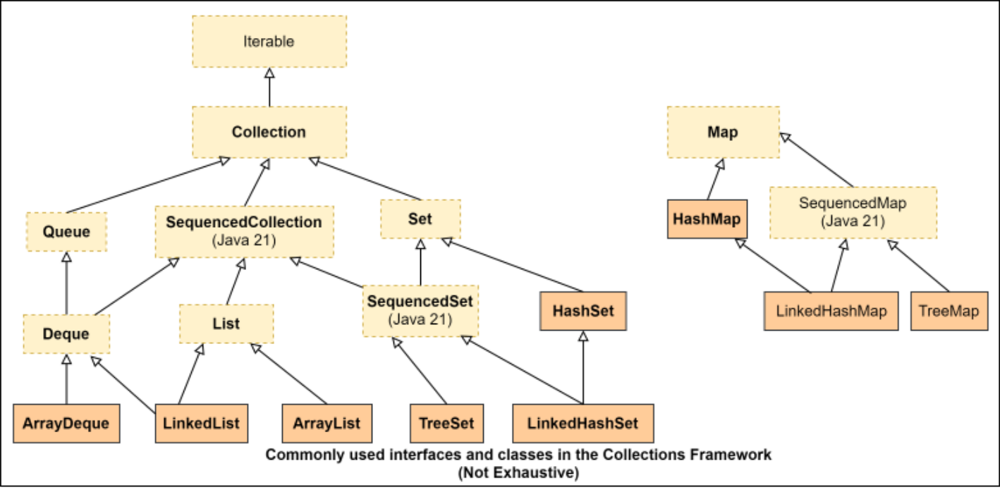
Quan sát các điểm sau trong sơ đồ trên.
Có hai interface (giao diện) gốc - Iterable và Map . Chúng tạo thành hai cây độc lập gồm các kiểu collection trong Collections Framework.
Từ Collection (viết hoa chữ C) thường dùng để chỉ một lớp (class) triển khai interface (giao diện) Collection nhưng từ collection (viết thường chữ c) theo cách gọi thông thường sẽ bao gồm cả các Collection cũng như các Map bởi vì Map có các phương thức cho phép chúng ta truy cập các key và value của nó dưới dạng các Collections.
Framework này bao gồm cả các interface (giao diện) cũng như các lớp (class) triển khai các interface (giao diện) đó.
Trước Java 21, không có interface (giao diện) nào đại diện cho một collection có thứ tự và do đó, không thể truyền tải yêu cầu về “thứ tự” thông qua một interface (giao diện). Bạn phải sử dụng List hoặc SortedSet . SequencedCollection đã được thêm vào trong Java 21 để lấp đầy khoảng trống này. Lưu ý rằng nó không áp đặt bất kỳ hạn chế nào về cách các phần tử thực sự được lưu trữ trong bộ nhớ. Tất cả những gì nó bắt buộc là nếu bạn duyệt qua các phần tử thì bạn sẽ nhận được các phần tử theo một thứ tự được xác định rõ ràng.
Các bảng sau đây tóm tắt các interface (giao diện) và lớp (class) mà bạn bắt buộc phải biết cho kỳ thi. Bạn không bắt buộc phải học thuộc lòng tất cả các phương thức của chúng nhưng bạn nên biết ít nhất những phương thức tôi đã đưa ra dưới đây. Một lần nữa, tôi thực sự khuyến khích bạn nên đọc qua các mô tả JavaDoc của chúng.
350
Tóm tắt các Interface (Giao diện) của Collections Framework
Interface (Giao diện)
Đặc điểm
Các method nổi bật
Lưu ý khi sử dụng
Collection
extends Iterable
1. Không quy định cụ thể về thứ tự, tính duy nhất, và khả năng null của các phần tử
2. Không có Lớp (Class) triển khai trực tiếp
Các thao tác trên một phần tử:add, remove
Các thao tác hàng loạt:addAll, removeAll, removeIf, retainAll, clear
Các thao tác kiểm tra:size, contains, containsAll, isEmpty
Thường được sử dụng làm kiểu tham số hoặc kiểu trả về của một method.
SequencedCollection
extends Collection
1. Thứ tự duyệt được xác định rõ ràng
2. Không quy định cụ thể về tính duy nhất và khả năng null của các phần tử
Các thao tác truy cập/sửa đổi phần tử đầu tiên và cuối cùng:addFirst, addLast, removeFirst, removeLast, getFirst, getLast
Cung cấp view đảo ngược:reversed
Được thêm vào trong Java 21 để đại diện cho các collection có thứ tự
351
List
extends SequencedCollection
1. Có thứ tự
2. Các giá trị trùng lặp và null thường được cho phép nhưng tùy thuộc vào bản triển khai
Các phương thức add, remove, và set với chỉ mục int là tham số đầu tiên, subList
Các phương thức factory tĩnh of và copyOf để tạo các List không thể sửa đổi (unmodifiable)
Được sử dụng khi cần kiểm soát chính xác vị trí chèn của từng phần tử trong danh sách.
Queue
extends Collection
1. Có thứ tự
2. Các giá trị trùng lặp thường được cho phép
3. Các giá trị null thường không được cho phép
offer, poll, peek
Được sử dụng khi cần sắp xếp theo quy tắc như FIFO, LIFO, hoặc độ ưu tiên.
Deque
extends Queue và SequencedCollection
1. Có thứ tự
2. Các giá trị trùng lặp thường được cho phép
3. Các giá trị null thường không được cho phép
offerFirst,
offerLast,
pollFirst,
pollLast,
peekFirst,
peekLast
Được sử dụng khi cần chèn và xóa phần tử ở cả hai đầu.
352
Set
extends Collection
1. Không duy trì thứ tự
2. Không trùng lặp
3. Có thể cho phép một giá trị null tùy thuộc vào phần triển khai
Các phương thức factory tĩnh có tên là of và copyOf để tạo các Set không thể sửa đổi
Được sử dụng khi cần tránh các phần tử trùng lặp và thứ tự không quan trọng.
Map
không kế thừa Collection
1. Lưu trữ các cặp key-value
2. Không chứa các key trùng lặp
3. Không quy định cụ thể về key null và các value null
4. Không quy định cụ thể về thứ tự của các phần tử
get, getOrDefault, put,
putAll, putIfAbsent,
remove, keySet, entrySet,
values, replace,
containsKey, forEach
Các phương thức factory tĩnh có tên là of, ofEntries và copyOf để tạo các Map không thể sửa đổi
Được sử dụng khi cần lưu trữ các cặp key-value
SequencedMap
extends Map
1. Thứ tự xuất hiện (encounter order) của các entry được xác định rõ ràng
2. Hỗ trợ các thao tác ở cả hai đầu
3. Có thể đảo ngược (reversible)
firstEntry, lastEntry,
pollFirstEntry,
pollLastEntry, putFirst,
putLast, reversed,
sequencedEntrySet,
sequencedKeySet,
sequencedValues
Được sử dụng khi các cặp key-value cần được truy xuất theo một thứ tự được xác định trước
Tóm tắt các Lớp triển khai trong Collections Framework
Lớp (Class)
Đặc điểm
Lưu ý khi sử dụng
353
ArrayList
implements List
1. Được sắp thứ tự dựa trên chỉ số
2. Cho phép các phần tử trùng lặp và giá trị null
3. Có thể sửa đổi
1. Được hỗ trợ bởi một mảng
2. Truy cập nhanh nhưng chèn chậm
3. Các constructor: ArrayList(),
ArrayList(int initialCapacity),
ArrayList(Collection c)
LinkedList
implements List và Deque
1. Được sắp thứ tự dựa trên chỉ số
2. Cho phép các phần tử trùng lặp và giá trị null
3. Có thể sửa đổi
1. Được hỗ trợ bởi một danh sách liên kết kép
2. Chèn nhanh nhưng truy cập chậm
3. Các giá trị null được cho phép nhưng khuyến nghị không nên thêm
các giá trị null vì phương thức poll() của Queue
trả về null để chỉ ra hàng đợi rỗng
4. Các constructor: LinkedList(),
LinkedList(Collection c)
354
Các danh sách được trả về bởi các phương thức of và copyOf của List
1. Không thể sửa đổi
2. Không cho phép null. Ném NPE nếu đầu vào chứa null.
3. Độc lập với mảng đầu vào
Ví dụ: List<String> ls =
List.of("a", "b");
Danh sách được trả về bởi phương thức Arrays.asList
1. Không thể sửa đổi
2. Cho phép giá trị null và các giá trị trùng lặp
3. Được liên kết với mảng bên dưới
Ví dụ: List<Integer> li =
Arrays.asList(new Integer[]{1,
null});
ArrayDeque
implements Deque
1. Sắp xếp dựa trên thứ tự chèn
2. Cho phép trùng lặp
3. Không cho phép null
1. Được liên kết với một mảng
2. Thêm null sẽ ném ra NPE.
3. Hỗ trợ FIFO cũng như LIFO
4. Các constructor: ArrayDeque(),
ArrayDeque(int numElements),
ArrayDeque(Collection c)
355
HashSet
implements Set
1. Không duy trì thứ tự
2. Bỏ qua các phần tử trùng lặp
3. Cho phép null
1. Dựa trên bảng băm (hash table).
2. Sử dụng phương thức equals và hashCode
để kiểm tra trùng lặp khi
thêm vào
3. Các constructor: HashSet(),
HashSet(int initialCapacity),
HashSet(Collection c),
HashSet(int initialCapacity,
float loadFactor)
TreeSet
implements SequencedSet
1. Có thứ tự
2. Bỏ qua các phần tử trùng lặp
3. Không cho phép null
4. Mặc dù triển khai
SequencedCollection, nó ném ra
UnsupportedException từ các phương thức như
addFirst / addLast.
1. Dựa trên TreeMap.
2. Sử dụng Comparable hoặc Comparator
để kiểm tra trùng lặp khi thêm vào
3. Các constructor: TreeSet(),
TreeSet(Comparator c),
TreeSet(Collection c),
TreeSet(SortedSet s)
356
Các Set được trả về bởi các phương thức of và copyOf của Set
1. Không thể sửa đổi
2. of ném ra IAE nếu đầu vào chứa các phần tử trùng lặp, nhưng copyOf âm thầm bỏ qua các phần tử trùng lặp.
3. Không cho phép null. Ném ra NPE nếu đầu vào chứa null.
Ví dụ: Set<String> ls =
Set.of("a", "b");
HashMap
implements Map
1. Không có thứ tự
2. Cho phép null làm key và cũng làm value
1. Dựa trên một hash map
2. Các constructor: HashMap(),
HashMap(int initialCapacity),
HashMap(int initialCapacity,
float loadFactor), HashMap(Map
m)
TreeMap
implements SortedMap
(Không quá quan trọng cho kỳ thi.)
1. Có thứ tự
2. Được sắp xếp
3. Cho phép value là null nhưng key thì không
1. Dựa trên cây Đỏ-Đen (Red-Black tree)
2. Các constructor: TreeMap(),
TreeMap(Comparator c),
TreeMap(Map m),
TreeMap(SortedMap m)
3. Có nhiều phương thức bổ sung do thực tế là nó triển khai SortedMap
357
Các Map được trả về bởi các phương thức of, ofEntries, và copyOf của Map
1. Không thể sửa đổi (Unmodifiable)
2. Không có thứ tự (Unordered)
3. Không cho phép key hoặc value null
Ví dụ: Map<String,
String> m = Map.of("key1",
"value1");
Các Exception (Ngoại lệ) được ném ra bởi các phương thức của collection
Như bạn có thể thấy từ các bảng trên, các lớp triển khai (implementation class) có thể áp đặt các ràng buộc riêng của chúng bên cạnh những ràng buộc được chỉ định thông qua các định nghĩa Interface (Giao diện) của chúng. Ví dụ, ArrayDeque không cho phép null và các danh sách không thể sửa đổi (unmodifiable list) không cho phép thêm/xóa, và vân vân. Vì các ràng buộc đó không thể được biểu diễn trong các Interface (Giao diện) hoặc chữ ký phương thức (method signature), trình biên dịch không thể kiểm tra các vi phạm của chúng trong mã nguồn tại thời điểm biên dịch (compile time). Những vi phạm như vậy được kiểm tra tại thời điểm chạy (runtime) thông qua việc sử dụng năm ngoại lệ unchecked (Unchecked Exception) sau đây:
UnsupportedOperationException : Nếu thao tác không được hỗ trợ bởi collection này.
Ví dụ, việc cố gắng thêm một phần tử vào danh sách được tạo bằng phương thức List.of sẽ khiến một UnsupportedOperationException bị ném ra tại thời điểm chạy (runtime).
NullPointerException : Nếu phần tử được chỉ định là null và collection này không cho phép các phần tử null.
IllegalArgumentException : Nếu một số thuộc tính của phần tử ngăn cản nó được thêm vào collection này.
ClassCastException : Nếu Lớp (Class) của phần tử được chỉ định ngăn cản việc thêm nó vào collection này.
IllegalStateException : Nếu phần tử không thể được thêm hoặc xóa tại thời điểm này do các hạn chế về việc chèn/xóa.
Vì thông tin này chỉ có sẵn trong mô tả JavaDoc của Lớp (Class)/phương thức, điều quan trọng là phải đọc kỹ nó trước khi sử dụng Lớp (Class)/phương thức đó.
Kỳ thi không yêu cầu bạn phải biết tất cả các kịch bản gây ra việc ném các ngoại lệ trên, nhưng nó kỳ vọng bạn phát hiện được liệu một UnsupportedOperationException hoặc một NullPointerException sẽ bị
358
được ném ra trong đoạn mã đã cho.
18.2 Truy cập các collection☝
Vì mỗi Collection đều là một Iterable, cách đồng nhất nhất để xử lý các phần tử của một
Collection là sử dụng các phương thức của Interface (Giao diện) Iterable.
Iterable
Bạn đã thấy “vòng lặp for cải tiến” trước đó trong chương Sử dụng cấu trúc lặp. Interface (Giao diện)
java.util.Iterable được giới thiệu trong Java 1.5 để giúp các collection tương thích
với vòng lặp for cải tiến mà không làm ảnh hưởng đến các phần triển khai Collection hiện có. Nó có
ba phương thức sau đây, mỗi phương thức cung cấp cho chúng ta một cách khác nhau để duyệt qua các phần tử
của một collection:
Iterator iterator() : Trả về một đối tượng (Object) kiểu Iterator. Trước khi vòng lặp
for cải tiến được giới thiệu, đây là cách phổ biến nhất để duyệt qua các phần tử
của một collection.
void forEach(Consumer<? super T> action) : Phương thức này cung cấp cách thức hiện đại và
được ưu tiên hơn để xử lý từng phần tử của một collection. Hãy nhớ rằng Consumer là một
Functional Interface, vì vậy bạn sẽ thấy phương thức này được gọi rất nhiều với các biểu thức Lambda (Lambda expression).
default Spliterator<T> spliterator() : Nó cho phép chia tách một collection thành nhiều
phần để mỗi phần có thể được xử lý song song.
Đoạn mã sau đây minh họa cách duyệt qua bất kỳ Iterable nào :
List<Integer> listI = List.of(1, 2, 3, 4);
//using an Iterator
Iterator<Integer> it = listI.iterator();
while(it.hasNext()) System.out.println( it.next());
359
//using the enhanced for loop
for(Integer i : listI) System.out.println(i);
//using forEach with lambda
listI.forEach( (i)-> System.out.println(i) );
//using forEach with a method reference
listI.forEach(System.out::println);
Iterator
Cách sử dụng các phương thức hasNext() và next() hiển thị trong đoạn code trên mang tính đặc trưng của các Iterator. Bạn gọi phương thức hasNext() để kiểm tra xem còn phần tử nào chưa được xử lý hay không, và nếu có, bạn gọi next() để lấy phần tử đó. Việc gọi next() nếu không còn phần tử nào sẽ khiến một NoSuchElementException bị ném ra.
Bên cạnh hasNext và next, Iterator có hai phương thức sau:
default void forEachRemaining(Consumer<? super E> action) : Thực hiện hành động được chỉ định cho mỗi phần tử còn lại cho đến khi tất cả các phần tử đã được xử lý hoặc hành động đó ném ra một Exception (Ngoại lệ).
default void remove() : Phương thức này rất hữu ích nếu bạn muốn xóa phần tử mình vừa lấy ra bằng cách gọi next() khỏi collection cơ sở. Phương thức này chỉ có thể được gọi một lần duy nhất cho mỗi lần gọi next().
Spliterator
Một Spliterator là một phiên bản nâng cấp mạnh mẽ của Iterator. Mặc dù ít khi được nhìn thấy sử dụng, tôi vẫn thích nó hơn Iterator vì nó rất mạnh mẽ và hữu ích trong việc xử lý các phần tử của một collection hoặc một stream theo cả tuần tự lẫn đồng thời, đây rất có thể là lý do tại sao kỳ thi có các câu hỏi về nó. Nó có vẻ hơi phức tạp nhưng thực ra không phải vậy. Hãy bắt đầu với một điều đơn giản:
Tại thời điểm tạo ra Spliterator, nó chứa tất cả các phần tử của collection,
và vì vậy bạn có thể nói rằng mọi phần tử của collection đều “còn lại” để được xử lý. Do đó,
phương thức forEachRemaining thực thi hàm Consumer cho mọi phần tử của
collection, từ đó in ra abcde. Không có gì quá đặc biệt. Bạn có thể làm điều tương tự với
phương thức forEachRemaining của Iterator.
Nhưng nếu bạn muốn xử lý chỉ một phần tử từ một collection, bạn có thể sử dụng phương thức tryAdvance(Consumer c) của Spliterator:
Không có Exception (Ngoại lệ) nào xảy ra ngay cả khi bạn gọi tryAdvance nhiều lần trên một
collection đã cạn kiệt hoặc rỗng. Nó chỉ trả về false nếu không còn phần tử nào để đi tiếp. Đây là một
cải tiến so với Iterator vì một Iterator yêu cầu hai lần gọi — hasNext và
next để làm điều tương tự.
Sức mạnh thực sự của một Spliterator nằm ở khả năng chia một nửa số phần tử còn lại
cần xử lý vào một Spliterator riêng biệt. Điều này được thực hiện bằng cách sử dụng
phương thức trySplit :
Giờ đây, chúng ta có hai Spliterator, mỗi cái chứa khoảng một nửa số phần tử trong danh sách ban đầu. Cả hai Spliterator đều có thể xử lý các phần tử một cách độc lập như sau:
Kết quả đầu ra ở trên cho thấy Spliterator đầu tiên đã tách các phần tử a và b sang Spliterator thứ hai và còn lại các phần tử c, d và e. Việc phân chia chính xác các phần tử không phải lúc nào cũng có thể dự đoán trước. Cách một Spliterator phân chia các phần tử phụ thuộc vào cách Spliterator đó được lập trình bởi Lớp (Class) của collection bên dưới.
Mặc dù mọi chi tiết của việc triển khai không thể được thể hiện bằng lập trình, nhưng các đặc tính quan trọng của một Spliterator có thể được kiểm tra bằng lập trình bằng cách sử dụng một vài hằng số staticfinalint và phương thức hasCharacteristics(int characteristics) được định nghĩa trong Spliterator. Ví dụ, split1.hasCharacteristics(Spliterator.ORDERED); trả về true, điều này có nghĩa là Spliterator này có một thứ tự xác định để duy trì các phần tử của nó. Điều này đã được dự liệu trước vì collection bên dưới trong ví dụ này là một List, vốn có thứ tự. Nếu bạn chạy cùng một ví dụ bằng cách sử dụng HashSet thay vì List, it will print false.
Bạn cũng có thể kiểm tra xem một Spliterator có biết chính xác số lượng phần tử bên trong nó hay không bằng cách truyền Spliterator.SIZED vào hasCharacteristics và nếu không, bạn có thể gọi estimateSize() để lấy một giá trị ước lượng. Việc biết kích thước sẽ hữu ích trong việc quyết định xem bạn có muốn gọi lại trySplit trên Spliterator hay không.
362
Ví dụ trên chỉ nhằm minh họa cách chia tách một collection bằng cách sử dụng
Spliterator.
Không có lợi ích gì trong việc chia tách một collection trong tình huống như trên. Việc chia tách chỉ có lợi
khi các phần tử được phân tách được xử lý đồng thời. Tôi sẽ chỉ cho bạn một ví dụ khi chúng ta
thảo luận về lập trình đồng thời sau.
Truy cập SequencedCollections☝
SequencedCollection cung cấp quyền truy cập vào các phần tử đầu tiên và cuối cùng thông qua các
phương thức getFirst() và getLast() của nó. Các phương thức này sẽ ném ra
NoSuchElementException nếu collection trống. Nó cũng có một phương thức reversed()
cung cấp một dạng xem đảo ngược của collection.
Truy cập các List☝
List cung cấp quyền truy cập theo vị trí/chỉ số vào các phần tử của nó bằng cách sử dụng
phương thức get(int index) của nó. Nó sẽ ném ra IndexOutOfBoundsException nếu một
chỉ số ngoài phạm vi được truyền vào. Hãy nhớ rằng List là một SequencedCollection và do đó nó cũng có các
phương thức getFirst() và getLast().
Truy cập các Set☝
Set không khai báo thêm phương thức mới nào và do đó các phần tử của nó chỉ có thể được truy cập trước tiên bằng cách lấy một
Iterator hoặc một Spliterator. Tuy nhiên, vì một TreeSet được sắp xếp (và do đó,
có thứ tự), nó cung cấp một vài phương thức bổ sung để truy cập các phần tử đầu tiên và cuối cùng. Bạn có thể tham khảo
JavaDoc cho các phương thức đó nhưng chúng không quan trọng cho kỳ thi.
Truy cập Queue và Deque☝
Queue và Deque có số lượng lớn các phương thức để thao tác bên cạnh những phương thức
được cung cấp bởi Collection. Mặc dù tôi chưa thấy ai gặp câu hỏi về
363
chúng, bạn nên lưu ý một đặc điểm quan trọng về các phương thức của chúng. Các phương thức của chúng có thể được chia thành hai nhóm dựa trên cách chúng xử lý tình huống khi không có kết quả. Một số phương thức ném ra một Exception (Ngoại lệ) khi không có kết quả, trong khi những phương thức khác trả về false hoặc null. Ví dụ, trong đoạn mã sau, q.element() ném ra NoSuchElementException vì queue trống nhưng q.poll() trả về null:
Queue<String> q = new ArrayDeque<>();
String head = q.poll(); //returns null
head = q.element(); //throws NoSuchElementException
System.out.println(head);
Tôi không trình bày danh sách phân loại của tất cả các phương thức ở đây vì kỳ thi không yêu cầu bạn phải ghi nhớ chi tiết này cho từng phương thức.
Truy cập Map☝
Một khi bạn có được Set chứa các key của một map bằng cách sử dụng phương thức keys(), hoặc các cặp key-value của nó bằng cách sử dụng phương thức entrySet(), hoặc Collection chứa các value của nó bằng cách sử dụng phương thức values(), bạn có thể duyệt qua chúng giống như cách bạn duyệt qua bất kỳ Collection nào khác:
Map<String, String> m = new HashMap<>();
m.put("k1", "v1");
Set<Map.Entry<String, String>> entries = m.entrySet();
for(Map.Entry<String, String> me : entries){
System.out.println(me.getKey()+" "+me.getValue());
}
Hoặc bạn có thể sử dụng một biểu thức Lambda (Lambda expression) để triển khai một BiConsumer và truyền nó vào phương thức forEach(BiConsumer bc) của Map:
Đừng lo lắng bởi kiểu Map.Entry trông có vẻ kỳ lạ trong đoạn mã trên. Entry là một Interface (Giao diện) static được định nghĩa bên trong Map và nó cung cấp các phương thức để truy cập và sửa đổi một cặp key-value (khóa-giá trị) duy nhất của map.
Dĩ nhiên, nếu bạn có key, bạn có thể sử dụng các phương thức get(Object key) hoặc
getOrDefault(Object key, Object defaultValue) của Map để lấy ra giá trị
liên kết tương ứng. Phương thức get trả về null nếu không tìm thấy key và getOrDefault trả về
defaultValue. Vì HashMap cho phép các giá trị null, việc trả về giá trị null có thể không đồng nghĩa
với việc key đó không tồn tại trong map. Nó cũng có thể có nghĩa là key đó được liên kết với giá trị null.
Để phân biệt giữa hai tình huống này, bạn cần sử dụng phương thức containsKey, phương thức này
chỉ trả về true nếu key được tìm thấy trong map.
Truy cập SequencedMap☝
Tương tự như SequencedCollection, SequencedMap có các phương thức firstEntry() và lastEntry()
để lấy entry (phần tử) đầu tiên và cuối cùng trong map mà không xóa chúng khỏi map.
Chúng trả về các đối tượng Map.Entry<K,V>. Nó cũng có các phương thức pollFirstEntry() và
pollLastEntry() thực hiện điều tương tự nhưng chúng xóa các entry được trả về khỏi
map. Tuy nhiên, khác với SequencedCollection, các phương thức này chỉ trả về null nếu
map rỗng.
Nó có một phương thức reversed() cung cấp một view (khung nhìn) có thứ tự đảo ngược của map.
18.3 Thay đổi các collection☝
Việc thêm và xóa các phần tử vào và ra khỏi một Collection có thể được thực hiện bằng cách sử dụng các phương thức add, addAll,
remove, removeAll, removeIf, retainAll, và clear được khai báo trong
Collection. Các collection chuyên biệt như List và Deque cung cấp nhiều cách hơn nữa để
sửa đổi nội dung của chúng. Bạn cũng có thể xóa một phần tử bằng phương thức remove của Iterator
khi bạn đang duyệt qua một Collection.
Một lần nữa, kỳ thi không yêu cầu bạn phải học thuộc lòng tất cả các phương thức và nó không
365
đánh lừa bạn bằng cách sử dụng các phương thức giả. Tuy nhiên, kỳ thi vẫn yêu cầu bạn phải biết những điều sau đây:
Ý nghĩa của các giá trị được trả về bởi các phương thức thường dùng. Ví dụ, khi một
phương thức trả về một boolean, giá trị true ngụ ý rằng collection thực sự đã bị
thay đổi do lời gọi phương thức đó. Nhưng Map.put trả về giá trị trước đó được liên kết
với key, hoặc null nếu không có ánh xạ nào cho key trong map.
Các Exception (Ngoại lệ) được ném ra bởi các phương thức được khai báo trong interface (Giao diện) Collection và List khi
bạn cố gắng truyền vào các giá trị null hoặc không hợp lệ. Ví dụ, nếu bạn cố gắng thêm/xóa một phần tử
vào/khỏi một List tại một index không hợp lệ (tức là tại một giá trị nhỏ hơn 0 hoặc lớn hơn size-1), một
IndexOutOfBoundsException sẽ được ném ra.
Cách collection xử lý các phần tử trùng lặp. Ví dụ, nếu bạn cố gắng thêm một đối tượng (Object) vào một
HashSet, nó sẽ chỉ trả về false nếu đối tượng (Object) đó đã tồn tại (bằng cách sử dụng các phương thức hashCode và
equals để kiểm tra).
Vì SequencedCollection và SequencedMap là những bổ sung mới cho Collections
API trong Java 21, bạn sẽ gặp một hoặc hai câu hỏi về các phương thức của chúng.
Tôi đã lưu ý tất cả các phương thức quan trọng trong các bảng ở đầu chương này. Việc đọc qua
các mô tả JavaDoc của chúng sẽ là đủ cho kỳ thi.
Dưới đây là một vài ví dụ về loại mã nguồn mà bạn sẽ gặp trong kỳ thi.
Thêm các phần tử
Set<String> set = new HashSet<>();
set.add("a"); //[a]
ArrayList<String> sList = new ArrayList<>();
sList.add("b"); //[b]
sList.addAll(set); //elements are added at the end, so, sList now
contains [b, a]
Vì List là một SequencedCollection, bạn cũng có thể thực hiện
sList.addFirst("a")
366
sList.addLast("b")
Các phương thức addFirst và addLast của List chỉ ủy quyền lời gọi lần lượt đến các phương thức add(0, obj) và
add(obj).
Bạn không thể "add" các phần tử vào một Map nhưng bạn có thể "put" các cặp key-value vào nó:
Map<Integer, String> map = new HashMap();
System.out.println(map.put(10, "Alice")); //prints null
System.out.println(map.putIfAbsent(10, "Bob")); //prints Alice
Quan sát thấy rằng put và putIfAbsent trả về giá trị đã liên kết trước đó (hoặc null, nếu key
không tồn tại) trong map.
Xóa các phần tử
Collection<String> c = new ArrayList(List.of("a", "a", "a"));
c.remove("a");//removes only the first a
c.removeIf( v -> v.equals("a")); //removes all values that satisfy the
Predicate
Vì List có một phương thức remove quá tải (overloaded) nhận vào một kiểu int làm chỉ số (index), bạn cần phải
cẩn thận khi xóa các phần tử khỏi một List<Integer>:
ArrayList<Integer> list = new ArrayList<>(List.of(1, 2, 3));
list.remove(1); //passing int 1, removes element at index 1
System.out.println(list); //prints [1, 3]
list.remove(Integer.valueOf(1)); //passing an Integer object containing
1
System.out.println(list); //prints [3]
Hãy nhớ lại các quy tắc lựa chọn phương thức trong trường hợp các phương thức quá tải (overloaded). Khi bạn
gọi remove(1), đối số truyền vào là kiểu int và vì có sẵn phương thức remove với tham số kiểu int,
phương thức này sẽ được ưu tiên hơn so với phương thức remove khác có tham số Object
bởi vì việc gọi phương thức kia đòi hỏi phải boxing 1 thành một
367
Integer.
Collection<String> c1 = new ArrayList<>(List.of("a", "b", "c", "a"));
Collection<String> c2 = new ArrayList<>(List.of("a", "b"));
c1.removeAll(c2);
System.out.println(c1); //prints [ c ]
Hãy lưu ý rằng không giống như phương thức remove(Object obj) vốn chỉ xóa lần xuất hiện đầu tiên của một phần tử, removeAll sẽ xóa tất cả các lần xuất hiện của phần tử đó.
List có một phương thức set(int index, E element) giúp thay thế phần tử tại vị trí được chỉ định trong danh sách này bằng phần tử được chỉ định. Nó trả về phần tử đã bị thay thế:
ArrayList<String> al = new ArrayList<>(List.of("a", "b", "c"));
System.out.println(al.set(1, "x")); //prints old value b
System.out.println(al); //prints [a, x, c]
Map có hai phương thức remove được nạp chồng:
Map<Integer, String> map = new HashMap();
map.put(10, "Alice");
System.out.println(map.remove(10, "Bob")); //prints false
System.out.println(map.remove(10)); //prints Alice
System.out.println(map.remove(10)); //prints null
Phương thức remove đầu tiên trả về false vì 10 được liên kết với "Alice" chứ không phải "Bob". Vì vậy, mặc dù key 10 có tồn tại trong map, nó vẫn không bị xóa. Phương thức remove thứ hai xóa key 10 khỏi map và trả về "Alice" vì đó là giá trị hiện tại được liên kết với 10, và phương thức remove thứ ba trả về null vì tại thời điểm này không còn key 10 nào trong map nữa.
368
Sử dụng SequencedCollections
Interface (Giao diện) SequencedCollection cung cấp các method sau: addFirst, addLast,
getFirst, getLast, removeFirst, removeLast, và reversed. Tên của các method
thể hiện rõ ràng chức năng của chúng. Điểm khó là cần ghi nhớ các lớp (class) triển khai interface (giao diện)
này.
Vì List extends SequencedCollection, tất cả các danh sách như LinkedList, ArrayList,
và CopyOnWriteArrayList đều triển khai các method này đúng như mong đợi.
Vì Deque extends SequencedCollection, tất cả các deque như LinkedList và
ArrayDeque đều triển khai các method này đúng như mong đợi.
Queue không extend SequencedCollection và do đó, bạn nên cẩn thận với đoạn code như
thế này:
Queue<String> q = new ArrayDeque();
q.addFirst("first");//will not compile
Đoạn code trên không biên dịch được vì Queue không có method addFirst.
Trong số các set, chỉ có LinkedHashSet và TreeSet triển khai SequencedSet (giao diện extends
SequencedCollection), tuy nhiên, vì TreeSet giữ các phần tử của nó được sắp xếp, nó sẽ ném ra
UnsupportedOperationException từ các method addFirst và addLast của nó.
Sử dụng SequencedMaps
Các method được cung cấp bởi SequencedMap rất rõ ràng và dễ hiểu. Bạn cần lưu ý rằng
LinkedHashMap và TreeMap triển khai SequencedMap trong khi HashMap thì không. Giống
như TreeSet, TreeMap cũng ném ra
369
Ngoại lệ UnsupportedOperationException từ các phương thức putFirst và putLast của nó vì nó
giữ cho các key của mình được sắp xếp.
(Thứ tự và việc chia tách các chữ cái là không thể đoán trước)
D.
true <an unpredictable number>
cde
ab
Đáp án đúng là C.
Vì số lượng phần tử trong danh sách đã được biết trước, một Spliterator được tạo trên một List là “sized”. Do đó, nó in ra true và 5.
Phương thức trySplit cố gắng chia đôi các phần tử hiện tại trong Spliterator thành hai phần xấp xỉ bằng nhau. Vì cơ chế chia tách chính xác phụ thuộc vào phần triển khai, chúng ta không thể dựa vào việc phần nào sẽ nhận được bao nhiêu và những phần tử nào.
Phương thức tryAdvance trả về true nếu việc duyệt tiếp thành công. Do đó, vòng lặp while và việc gọi forEachRemaining về cơ bản là làm cùng một việc.
Q2. (Dành cho OCP 21) Cho:
SequencedCollection<String> names = //instantiate an implementation class
names.addFirst("bob ");
names.addFirst("chuck ");
names.addFirst("alice ");
names.addFirst("chuck ");
names.forEach(System.out::print);
Chọn 2 đáp án đúng.
A. Nếu names được khởi tạo bằng new LinkedHashSet<>(), kết quả đầu ra sẽ là:
chuck alice
bob
B. Nếu names được khởi tạo bằng new TreeSet<>(), kết quả đầu ra sẽ là: alice bob
371
chuck
C.
Nếu names được khởi tạo bằng new LinkedList<>(), mã nguồn sẽ không biên dịch.
D.
Nếu names được khởi tạo bằng new ArrayList<>(), kết quả đầu ra sẽ là: chuck alice chuck
bob
Đáp án đúng là A, D.
Cả bốn lớp (class) đều triển khai SequencedCollection. Do đó, sẽ không có lỗi biên dịch. Vì vậy, C là sai. Một TreeSet là một SequencedCollection nhưng thứ tự sắp xếp các phần tử của nó tương ứng với thứ tự được sắp xếp của các phần tử (thay vì thứ tự chèn như trường hợp của ArrayList hoặc LinkedList). Vì lý do này, các phương thức như addFirst / addLast và các phương thức tương tự không có ý nghĩa đối với một TreeSet và do đó, các phương thức này ném ra một UnsupportedException, (đây là một ngoại lệ unchecked (Unchecked Exception)) khi chạy chương trình. Vì vậy, B là sai.
Phương thức addFirst chèn một phần tử vào vị trí đầu tiên, đẩy các phần tử hiện tại sang vị trí tiếp theo. Vì một Set chỉ lưu trữ các phần tử duy nhất, việc thêm chuck lần thứ hai vào một LinkedHashSet sẽ không gây ra bất kỳ thay đổi nào trong tập hợp (set). Do đó, A là đúng. Một ArrayList cho phép các phần tử trùng lặp. Vì vậy, D cũng đúng.
18.5 Tìm kiếm và Sắp xếp☝
Chắc hẳn bạn đã nhận thấy rằng Interface (Giao diện) Collection khai báo một số phương thức như contains(Object), containsAll(Collection), và remove(Object), về bản chất là “tìm kiếm” (search) đối tượng được chỉ định trong collection để thực hiện hành động của chúng. Việc tìm kiếm liên quan đến việc kiểm tra xem hai đối tượng (object) có bằng nhau hay không. Như đã giải thích trong chương Operators (Các toán tử), toán tử quan hệ == rất tốt để kiểm tra xem hai tham chiếu (reference) có cùng trỏ tới một đối tượng (object) hay không, nhưng điều này không giúp ích cho chúng ta trong việc tìm kiếm một đối tượng (object) trong một collection, bởi vì khi tìm kiếm, chúng ta quan tâm nhiều hơn đến tính bằng nhau logic (logical equality) hơn là tính bằng nhau tham chiếu (referential equality). Ví dụ, khi tìm kiếm một Person trong một collection chứa các Person, chúng ta không quan tâm đến việc kiểm tra xem collection đó có chứa cùng một đối tượng Person đó hay không, mà là kiểm tra xem collection đó có một đối tượng Person có tên (first name) và họ (last name) khớp với firstName và
372
lastName của đối tượng (Object) Person mà chúng ta đang tìm kiếm. Nói cách khác, nếu hai đối tượng (Object) Person khác nhau có cùng first name và last name, chúng ta có thể coi hai đối tượng (Object) Person đó là bằng nhau về mặt logic.
Hơn nữa, một số collection chẳng hạn như TreeSet giữ cho các phần tử của chúng được sắp xếp. Nhưng việc sắp xếp đòi hỏi nhiều thứ hơn là chỉ kiểm tra tính bằng nhau. Để sắp xếp, chúng ta cần xác định xem một đối tượng (Object) này là “lớn hơn” hay “nhỏ hơn” một cách logic so với đối tượng (Object) kia. Ví dụ, nếu bạn muốn một collection gồm các Person được sắp xếp theo ngày sinh của họ, một người có ngày sinh sớm hơn có thể được coi là lớn hơn về mặt logic so với người kia.
Java có ba cách để thực hiện so sánh logic và bạn cần biết cả ba cách này trước khi tìm hiểu về tìm kiếm và sắp xếp.
18.5.1 Phương thức equals☝
Cách cơ bản nhất để kiểm tra tính bằng nhau về mặt logic (còn gọi là tính bằng nhau giữa các đối tượng (Object)) là sử dụng phương thức “equals”. Phương thức này có sẵn trong tất cả các lớp (Class) vì nó được triển khai trong lớp (Class) Object. Vì nó có sẵn cho tất cả các đối tượng (Object), ngay cả interface (Giao diện) Collection cũng quy định rằng các phương thức yêu cầu tìm kiếm một đối tượng (Object) sẽ kiểm tra tính bằng nhau về mặt logic bằng phương thức này. Tuy nhiên, phiên bản phương thức này của Object không mấy hữu ích vì nó chỉ so sánh các tham chiếu bằng cách sử dụng ==.
Vì vậy, nếu bạn muốn so sánh hai đối tượng (Object) của một lớp (Class) dựa trên nội dung của chúng, bạn cần override phương thức equals(Object obj) trong lớp (Class) đó và viết logic thực hiện việc so sánh trong đó. Ví dụ, nếu bạn, với tư cách là nhà phát triển lớp (Class) Person, tin rằng hai đối tượng (Object) Person bằng nhau về mặt logic khi first name và last name của họ giống nhau, thì bạn phải lập trình logic này trong phương thức equals của lớp (Class) Person:
class Person{
String firstName;
String lastName;
@Override
public boolean equals(Object otherPerson){
if(otherPerson instanceof Person op){
Quan sát các điểm sau về phương thức equals được viết ở trên:
Nó được chú thích bằng @Override. Mặc dù không bắt buộc, nhưng điều này làm rõ ý định của chúng ta là đang muốn override phương thức equals. Trong trường hợp này, Object là lớp cha (Superclass) trực tiếp của Person, nghĩa là chúng ta đang override phương thức equals của lớp (Class) Object.
Nó là public. Phương thức equals trong Object là public, và vì một phương thức ghi đè (overriding method) không thể làm giảm phạm vi truy cập (accessibility) của phương thức bị ghi đè, chúng ta phải khai báo nó là public.
Kiểu tham số của phương thức là Object (chứ không phải Person) bởi vì kiểu tham số của phương thức bị ghi đè là Object. Hãy nhớ lại rằng Java không hỗ trợ kiểu tham số đồng biến (covariant parameter types). Do đó, nếu bạn thay đổi kiểu tham số thành Person, đó sẽ là nạp chồng (overload) chứ không phải override, và chú thích @Override sẽ khiến trình biên dịch báo lỗi.
Nhiều lớp (Class) trong thư viện chuẩn Java ghi đè (override) equals nhưng một số thì không. Ví dụ, String override equals để so sánh nội dung, nhưng StringBuilder thì không. Mặc dù kỳ thi không yêu cầu bạn phải biết điều này đối với tất cả các lớp (Class), bạn nên tham khảo JavaDoc của lớp (Class) trước khi phụ thuộc vào phương thức equals của nó để kiểm tra sự bằng nhau về mặt logic. Trong thực tế, các lớp thực thể (entity class), các đối tượng truyền tải dữ liệu (data transfer object), hoặc các đối tượng giá trị (value object) cần triển khai phương thức equals để kiểm tra sự bằng nhau về mặt logic. Vì các lớp (Class) này có nhiều trường (field), việc viết mã cho phương thức này trở nên khá tẻ nhạt. Các lớp record (record class) của Java rất hữu ích về mặt này vì trình biên dịch tự động tạo ra phương thức equals như vậy cho một lớp record (record class).
Phương thức hashCode☝
Mặc dù kỳ thi không có câu hỏi nào về phương thức này, cuộc thảo luận về equals sẽ không trọn vẹn nếu thiếu đi phần nói về mã băm (hash code).
374
Nếu bạn không có nền tảng về Khoa học Máy tính, một hash code chỉ là một giá trị số được tạo ra bằng cách áp dụng một hàm hoặc một kỹ thuật nào đó lên một phần dữ liệu. Ví dụ, tôi có thể sử dụng chiều dài của một chuỗi làm hàm để tạo hash code cho các chuỗi. Vì vậy, hash code cho Amy và Bob sẽ là 3 nhưng đối với John, nó sẽ là 4. Như bạn có thể thấy, nhiều chuỗi có thể có cùng một hash code, và điều đó hoàn toàn bình thường. Về mặt toán học, một hàm băm (hashing function) là một hàm nhiều-đối-một (many-to-one) ánh xạ các phần tử của một tập hợp lớn hơn thành các phần tử của một tập hợp nhỏ hơn.
Trong Java, một hash code của một đối tượng (object) là giá trị int được trả về bởi phương thức hashCode() của đối tượng (object) đó. Giá trị này thường được tạo ra bằng cách sử dụng dữ liệu được lưu trữ trong các trường (field) của một đối tượng (object) và đóng vai trò như một bản đại diện ngắn gọn của đối tượng (object) đó. Nó rất hữu ích khi chúng ta phải tìm kiếm một đối tượng (object) trong một tập hợp gồm một triệu đối tượng (object). Thay vì so sánh tất cả các trường của tất cả các đối tượng (object), chúng ta có thể thu hẹp phạm vi tìm kiếm trước bằng cách so sánh các hash code của các đối tượng (object). Nếu tìm thấy một đối tượng (object) có cùng hash code, sau đó chúng ta có thể so sánh các trường để đảm bảo rằng hai đối tượng (object) đó thực sự giống nhau về mặt logic. Trong ví dụ trên, nếu muốn tìm kiếm Bob trong danh sách một triệu cái tên, trước tiên chúng ta có thể thu hẹp phạm vi tìm kiếm chỉ còn những tên có hash code là 3, sau đó kiểm tra tên thực tế trong tập hợp kết quả (hy vọng là nhỏ hơn nhiều). Các lớp (class) HashSet và HashMap sử dụng cơ chế này để tăng hiệu suất tìm kiếm của chúng, đó là lý do tại sao việc hiểu mối quan hệ giữa equals và hashCode là rất quan trọng.
Giống như phương thức equals , lớp (class) Object cũng triển khai phương thức hashCode() . Tuy nhiên, phương thức hashCode() của lớp (class) Object tạo ra một giá trị hoàn toàn duy nhất cho mỗi đối tượng (object). Điều này nhất quán với phiên bản phương thức equals của lớp (class) Object , vốn coi mọi đối tượng (object) là duy nhất (hãy nhớ rằng phương thức equals của Object thực hiện so sánh bằng tham chiếu bằng cách sử dụng ==) nhưng nó hoàn toàn vô dụng khi tìm kiếm một đối tượng (object) bằng nhau về mặt logic trong một HashSet hoặc một HashMap. Nếu chúng ta cố gắng sử dụng phương thức hashCode của Object khi kiểm tra sự bằng nhau về mặt logic, chúng ta sẽ không bao giờ tìm thấy một đối tượng (object) bằng nhau về mặt logic trong một HashSet hoặc một HashMap trừ khi chúng ta đang tìm kiếm chính xác cùng một đối tượng (object) trong bộ nhớ. Chúng ta có thể tìm thấy nó trong các collection không dựa trên hash như ArrayList vì chúng không sử dụng hash code để thu hẹp không gian tìm kiếm, nhưng khi đó chúng cũng không nhanh bằng một collection dựa trên hash.
375
Vì vậy, quy tắc mà chúng ta phải tuân theo là nếu hai Đối tượng (Object) được coi là bằng nhau bởi phương thức equals của chúng, thì phương thức hashCode() của chúng cũng phải trả về cùng một giá trị int . Điều này có nghĩa là nếu chúng ta ghi đè (override) phương thức equals trong một Lớp (Class) để triển khai tính bằng nhau logic (logical equality), chúng ta cũng nên ghi đè phương thức hashCode . Do đó, không có gì ngạc nhiên khi trình biên dịch cũng tự động tạo ra một phương thức hashCode cùng với phương thức equals cho một record class.
18.5.2 Interface (Giao diện) Comparable☝
Một Lớp (Class) biết cách sắp xếp thứ tự các Đối tượng (Object) của nó nên triển khai Interface (Giao diện) java.util.Comparable. Việc triển khai Comparable biểu thị rằng các Đối tượng (Object) của Lớp (Class) này có thể so sánh được với nhau. Nó cũng thiết lập “thứ tự tự nhiên” (natural order) của các Đối tượng (Object) thuộc Lớp (Class) này. Thứ tự tự nhiên có nghĩa là chúng ta có thể sắp xếp thứ tự các phần tử chỉ bằng cách sử dụng các thuộc tính của chính các Đối tượng (Object) đó mà không cần bất kỳ thông tin hoặc logic bên ngoài nào. Ví dụ: các con số có thứ tự tự nhiên vì chúng ta biết số nào lớn hơn hoặc nhỏ hơn bằng cách nhìn vào độ lớn của chúng. Nhưng nếu Lớp (Class) Person không triển khai Comparable, các Đối tượng (Object) Person sẽ không có bất kỳ thứ tự tự nhiên nào và các cấu trúc dữ liệu như TreeSet và TreeMap vốn giữ cho các Đối tượng (Object) của chúng được sắp xếp sẽ không thể hoạt động với các Đối tượng (Object) Person. Cụ thể, việc thêm một Đối tượng (Object) Person vào một TreeSet sẽ ném ra một ClassCastException khi chạy vì TreeSet yêu cầu Person phải là Comparable.
Interface (Giao diện) Comparable chỉ có một phương thức duy nhất: int compareTo(T o). Một giá trị trả về dương cho biết Đối tượng (Object) này lớn hơn về mặt logic so với Đối tượng (Object) được truyền vào làm đối số và một giá trị âm cho biết điều ngược lại. Giá trị trả về bằng 0 cho biết hai Đối tượng (Object) bằng nhau về mặt logic.
Nhiều Lớp (Class) trong thư viện tiêu chuẩn Java triển khai Interface (Giao diện) này. Trên thực tế, hầu hết các Lớp (Class) hướng dữ liệu như String, StringBuilder, và tất cả các lớp bao bọc nguyên thủy (primitive wrapper classes) đều triển khai Comparable. Điều này rất tuyệt vì chúng ta có thể sử dụng các triển khai compareTo của chúng trong khi triển khai compareTo trong Lớp (Class) của mình.
Hãy cùng xem cách chúng ta có thể làm cho Lớp (Class) Person của chúng ta triển khai Comparable:
376
class Person implements Comparable<Person>{
String name;
int age;
public int compareTo(Person otherP) {
int a = this.age - otherP.age;
if(a != 0) return a; //this establishes the order based on age
else return name.compareTo(otherP.name); //if the age is same
// then we order alphabetically
}
public boolean equals(Object o){
if( o instanceof Person p){
return age == p.age && name.equals(p.name);
}else return false;
}
}
Theo như phần triển khai ở trên, chúng ta coi hai đối tượng (object) Person là bằng nhau chỉ khi tên và tuổi của chúng khớp nhau. Phương thức compareTo cũng sử dụng cùng một logic để xác định xem hai đối tượng (object) Person có bằng nhau hay không. Hãy lưu ý rằng trong phần triển khai compareTo của mình, chúng ta đang dựa vào phương thức compareTo của String và điều đó hoàn toàn ổn vì String có triển khai Comparable.
Mặc dù không bắt buộc về mặt kỹ thuật, việc giữ cho phần triển khai của compareTo và equals nhất quán với nhau là rất quan trọng. Nghĩa là, a.compareTo(b) nên trả về 0 khi và chỉ khi a.equals(b) trả về true. Nếu không tuân thủ hạn chế này, về cơ bản bạn sẽ có hai định nghĩa khác nhau về sự bằng nhau về mặt logic cho lớp (class) đó, và điều này có thể gây ra các lỗi khó truy vết như được minh họa bởi đoạn mã dưới đây:
//change compareTo of Person to compare just the age
377
public int compareTo(Person otherP) {
return this.age - otherP.age;
}
public static void main(String[] args){
Person p1 =
new Person(); p1.age = 20; p1.name = "John";
Person p2 =
new Person(); p2.age = 20; p2.name = "Bob";
System.out.println(p1.equals(p2)); // prints false
Set<Person> hSet = new HashSet<>();
hSet.add(p1); hSet.add(p2);
System.out.println(hSet.size()); //prints 2
Set<Person> tSet = new TreeSet();
tSet.add(p1); tSet.add(p2);
System.out.println(tSet.size()); //prints 1
Person p3 =
new Person(); p3.age = 20; p3.name = "Charlie";
System.out.println(hS.contains(p3)); //prints false
System.out.println(tS.contains(p3)); //prints true
}
Trong đoạn mã trên, chúng ta đang thêm hai đối tượng (Object) Person không bằng nhau theo phương thức equals vào hai tập hợp (set). Vì các đối tượng (Object) không bằng nhau, chúng ta mong đợi cả hai tập hợp (set) đều chứa hai đối tượng (Object). Tuy nhiên, chỉ có HashSet hoạt động như mong đợi. TreeSet bỏ qua lần thêm thứ hai vì theo như TreeSet đánh giá, hai đối tượng (Object) Person này là bằng nhau vì p1.compareTo(p2) trả về 0. Hơn nữa, vì TreeSet sử dụng phương thức compareTo để kiểm tra tính bằng nhau, tS.contains(p3) trả về true nhưng hS.contains(p3) trả về false.
18.5.3 Interface (Giao diện) Comparator☝
378
Nếu một lớp (Class) không thể triển khai (implement) Comparable (điều này có thể xảy ra nếu bạn không kiểm soát mã nguồn của nó) và bạn vẫn muốn giữ các đối tượng (Object) của lớp (Class) này trong các cấu trúc dữ liệu được sắp xếp, thì interface (Giao diện) Comparator chính là thứ bạn cần. Một Comparator cho phép chúng ta tách logic sắp xếp ra khỏi lớp (Class) có các đối tượng (Object) mà chúng ta muốn sắp xếp và đặt nó vào một lớp (Class) độc lập. Nó chỉ có duy nhất một abstract method int compare(T o1, T o2) chứa logic so sánh. Dưới đây là cách thực hiện:
class PersonComparator implements Comparator<Person>{
public int compare(Person p1, Person p2) {
int a = p1.age - p2.age;
if(a != 0) return a; //this establishes the order based on age
else return p1.name.compareTo(p2.name); //if the age is same then we
order alphabetically
}
}
Giờ đây chúng ta có thể sử dụng Comparator này để áp đặt một thứ tự mong muốn cho TreeSet hoặc TreeMap bằng cách truyền một instance của comparator vào constructor của chúng, ví dụ: Set<Person> s = new TreeSet<Person>(new PersonComparator()); . TreeSet sẽ không còn cố gắng cast các đối tượng (Object) được thêm vào thành Comparable nữa. Nó sẽ sử dụng Comparator để xác định vị trí của các đối tượng (Object).
Lưu ý rằng hướng dẫn về việc giữ cho equals và compareTo của Comparable nhất quán cũng áp dụng cho equals và compare của Comparator nhưng việc tuân thủ nó không quá quan trọng vì bạn sẽ sớm thấy rằng một Comparator cũng có thể được sử dụng để sắp xếp các đối tượng (Object) mà không cần sự tham gia của các cấu trúc dữ liệu được sắp xếp.
Ngoài method compare , Comparator còn có rất nhiều default method cũng như static method giúp chúng ta xây dựng các comparator mới bằng cách biến đổi các comparator đã tạo hoặc tái sử dụng các comparator có sẵn được cung cấp trong thư viện Java. Ví dụ, nếu bạn muốn sắp xếp các đối tượng (Object) Person theo thứ tự ngược lại, bạn có thể gọi default method reversed() trên một comparator hiện có
379
đối tượng PersonComparator để có được một Comparator mới như sau:
Comparator<Person> reversed = new PersonComparator().reversed();
Nếu bạn muốn tạo một Comparator để sắp xếp các đối tượng Person chỉ dựa trên tuổi của chúng, bạn có thể sử dụng static method comparingInt(ToIntFunction f) :
Cũng có các method cho phép bạn nối các comparator lại với nhau. Ví dụ, nếu bạn muốn sắp xếp các đối tượng Person đầu tiên theo tên của chúng, và sau đó theo tuổi nếu tên trùng nhau, bạn có thể xây dựng một Comparator mới bằng cách nối hai comparator liên tiếp sử dụng default method thenComparing như sau:
Lưu ý rằng tôi đã triển khai nameComparator sử dụng một biểu thức Lambda (Lambda expression). Điều này là khả thi vì Comparator là một Functional Interface.
Cho mục đích của kỳ thi, ba method trên là đủ nhưng hãy xem qua JavaDoc của Comparator để biết các method tương tự khác vì chúng sẽ rất hữu ích khi lập trình chuyên nghiệp.
Lưu ý rằng Comparator là một Functional Interface thực thụ, không chỉ vì nó có đúng một abstract method mà còn vì nó giúp chức năng này có thể được sử dụng độc lập với lớp (Class) lưu trữ dữ liệu. Mặt khác, Comparable cũng có đúng một abstract method và về mặt kỹ thuật cũng là một Functional Interface, nhưng về mặt logic, Comparable mô tả thứ tự tự nhiên vốn có của
380
các đối tượng của một Lớp (Class) bằng cách giữ cho chức năng nằm cùng một nơi trong Lớp (Class) có các đối tượng cần so sánh, và đó là lý do tại sao Comparator được chú thích bằng @FunctionalInterface trong khi Comparable thì không.
18.5.4 Trắc nghiệm☝
Q. Trong các cách triển khai Comparator sau đây, cách nào sắp xếp chính xác hai chuỗi theo thứ tự tăng dần của độ dài?
Chọn 1 đáp án đúng.
A.Comparator<String> c = (a, b)->{ return a.length()-b.length(); };
B.Comparator<String> c = (a, b)->b.length()-a.length();
C.Comparator<String, String> c = (a, b)->b.length()-a.length();
D.Comparator<String, String> c = (a, b)->a.length()-b.length();
Đáp án đúng là A.
Về mặt khái niệm, khi so sánh hai đối tượng (Object) a và b, một bộ so sánh (comparator) coi a (tức là đối số đầu tiên) là “nhỏ hơn” trong hai đối tượng nếu “a trừ b” là một số âm. Trong trường hợp này, chúng ta muốn so sánh hai chuỗi a và b dựa trên độ dài của chúng sao cho a nhỏ hơn b nếu độ dài của a nhỏ hơn độ dài của b. Do đó, chúng ta phải thực hiện a.length() - b.length() chứ không phải b.length()-a.length(). Vì vậy, A là đáp án đúng và B thì không. B đúng về mặt cú pháp nhưng nó sẽ sắp xếp các chuỗi theo thứ tự độ dài giảm dần.
381
Comparator chỉ có duy nhất một tham số kiểu (vì nó được dùng để so sánh hai đối tượng (Object) có
cùng kiểu). Do đó, các phương án C và D sẽ không biên dịch được.
18.5.5 Sắp xếp và Tìm kiếm Danh sách☝
Các Collection không tự động sắp xếp các phần tử theo mặc định như ArrayList, LinkedList,
ArrayDeque, HashSet, và HashMap, có thể được tìm kiếm một phần tử bằng cách sử dụng phương thức
equals để so sánh đối tượng (Object) cần tìm với các đối tượng (Object) trong Collection đó. Chính xác bao nhiêu
phép so sánh sẽ được thực hiện cho một lần tìm kiếm cụ thể phụ thuộc vào cách cấu trúc dữ liệu của
Collection quản lý các đối tượng (Object) bên trong. Ví dụ, trong trường hợp của ArrayList, đối tượng (Object)
đã cho sẽ được so sánh lần lượt với từng đối tượng (Object) trong danh sách cho đến khi tìm thấy kết quả khớp. Đây
được gọi là Tìm kiếm tuyến tính (Linear Search). Về mặt thuật ngữ kỹ thuật, chúng ta nói rằng độ phức tạp thời gian của nó là O(n). Nó được
coi là chậm.
Một HashSet thực hiện việc này hiệu quả hơn vì, như đã giải thích trước đó, đầu tiên nó thu hẹp không gian tìm kiếm
bằng cách sử dụng hash code và sau đó sử dụng phương thức equals để tìm kết quả khớp chính xác. Độ
phức tạp thời gian của nó là O(1) vì nếu sử dụng một hàm băm (hashing function) tốt, mỗi đối tượng (Object) sẽ có một
hash code khác nhau và chỉ cần một phép so sánh để tìm thấy kết quả khớp. Nó được coi là
rất nhanh. Nhưng các cấu trúc dữ liệu dựa trên bảng băm (hash-based) sử dụng nhiều không gian lưu trữ hơn vì chúng phải lưu trữ cả hash code
cùng với đối tượng (Object) và có thêm một hạn chế là bạn không thể lưu trữ các giá trị trùng lặp
trong một Set.
Nếu bạn vừa muốn lưu trữ các phần tử trùng lặp, vừa muốn tìm kiếm nhanh thì sao?
Khi đó, bạn có thể sử dụng một List đã được sắp xếp. Tìm kiếm thông qua một danh sách đã sắp xếp có thể được thực hiện bằng thuật toán Tìm kiếm nhị phân (Binary Search),
thuật toán này nhanh hơn đáng kể so với tìm kiếm tuyến tính (Linear search). Độ phức tạp thời gian của nó là
O(log n).
Lớp (Class) java.util.Collections là một lớp tiện ích cung cấp một vài phương thức static để
sắp xếp và tìm kiếm các đối tượng (Object) trong một List. Chúng ta hãy lần lượt xem xét từng phương thức.
Các phương thức Collections.sort☝
382
Có hai biến thể của phương thức này, cả hai đều sắp xếp danh sách theo thứ tự tăng dần:
static <T extends Comparable<? super T>> void sort(List<T> list) và
static <T> void sort(List<T> list, Comparator<? super T> c)
Sau đây là các đặc điểm quan trọng của các phương thức này mà bạn cần biết cho kỳ thi:
Chúng trả về void.
Chúng sắp xếp trực tiếp trên danh sách được cung cấp. Chúng không trả về một danh sách mới đã được sắp xếp.
Phép sắp xếp được đảm bảo là ổn định (stable), nghĩa là, các phần tử bằng nhau sẽ không bị thay đổi thứ tự do kết quả của phép sắp xếp.
Danh sách được cung cấp phải có thể thay đổi (modifiable).
Danh sách được cung cấp có thể chứa các phần tử trùng lặp nhưng không được chứa các giá trị null. Nếu không, một NullPointerException sẽ bị ném ra.
Phiên bản một đối số sắp xếp các phần tử bằng cách so sánh chúng bằng phương thức compareTo của Comparable. Điều này có nghĩa là, lớp của các đối tượng có trong danh sách phải implement Comparable.
Phiên bản hai đối số sắp xếp các phần tử bằng cách so sánh chúng bằng phương thức compare của Comparator. Điều này có nghĩa là, lớp của các đối tượng có trong danh sách không cần phải implement Comparable.
Đoạn mã sau minh họa cách sử dụng của cả hai phương thức:
Tôi đang tạo một ArrayList mới vì List.of trả về một List không thể sửa đổi và tôi cần truyền một danh sách có thể sửa đổi vào phương thức sort.
383
Vì String implements Comparable, tôi có thể sắp xếp danh sách mà không cần truyền vào một
Comparator.
Mặc dù số 10 lớn hơn số 9, nó xuất hiện trước 9 ở kết quả đầu ra
vì mảng đang được sắp xếp không phải gồm các số mà là các chuỗi. Vì phương thức compareTo của
String so sánh các chuỗi theo thứ tự từ điển (lexicographically), "10" được coi là nhỏ
hơn "9". Hơn nữa, dưới dạng các ký tự, các chữ số Ả Rập xuất hiện trước các chữ cái tiếng Anh viết hoa
và các chữ cái tiếng Anh viết hoa xuất hiện trước các chữ cái tiếng Anh viết thường, nghĩa
là 1<9<B<a.
Trong lần sắp xếp thứ hai, tôi sử dụng một biểu thức Lambda (Lambda expression) để tạo một Comparator so sánh hai
chuỗi dựa trên chiều dài của chúng. Quan sát thêm rằng thứ tự của các phần tử 9, B, và a không
thay đổi trong lần sắp xếp thứ hai vì phép sắp xếp này được đảm bảo là ổn định (stable).
Lớp java.util.Collections đã xuất hiện từ Java 1.2 và nó đã có các phương thức sort kể từ đó. Tuy nhiên, sau khi các phương thức default trong các interface (giao diện) được giới thiệu ở Java 1.8,
logic sắp xếp một danh sách đã được chuyển vào phương thức sort(Comparator) default của List và
các phương thức sort của Collection chỉ đơn giản là ủy quyền (delegate) cuộc gọi đến phương thức sort của List,
nghĩa là bạn có thể sắp xếp một List trực tiếp mà không cần sử dụng lớp Collections. Ví
dụ,
names.sort(null); //passing null Comparator, Comparable's compareTo will be used
names.sort((s1, s2) -> s1.length()-s2.length()); //passing non null Comparator
Các phương thức Collections.binarySearch☝
Cũng có hai biến thể của phương thức này:
static <T> int binarySearch(List<? extends Comparable<? super T>> list, T key) và
384
static <T> int binarySearch(List<? extends T> list, T key, Comparator<? super
T> c)
Dưới đây là các đặc điểm quan trọng của các phương thức này mà bạn cần biết cho kỳ thi:
Chúng trả về một giá trị int cho bạn biết chỉ số mà tại đó khóa tìm kiếm được tìm thấy. Nếu giá trị trả về là số không hoặc số dương, điều đó có nghĩa là khóa được tìm thấy tại chỉ số đó. Nếu giá trị trả về là số âm, nó cho bạn biết vị trí chèn (insertion point), nghĩa là phần tử không được tìm thấy trong danh sách nhưng nếu bạn thêm nó vào danh sách đã sắp xếp, nó sẽ được đặt ở vị trí được xác định bởi công thức -(return value + 1) . Ví dụ, nếu nó trả về -1 , điều đó có nghĩa là khóa sẽ được chèn tại -(-1+1) , tức là tại chỉ số 0 trong danh sách.
Danh sách phải được sắp xếp theo thứ tự tăng dần. Nếu không, giá trị trả về sẽ không xác định (undefined).
Nếu danh sách có các phần tử trùng lặp, không có gì đảm bảo chỉ số của phần tử nào trong số các phần tử khớp sẽ được trả về.
Danh sách được cung cấp không được chứa các giá trị null. Nếu không, một ngoại lệ NullPointerException sẽ bị ném ra.
Phiên bản hai đối số tìm kiếm khóa bằng phương thức compareTo của Comparable. Điều này có nghĩa là lớp (Class) của các đối tượng (Object) hiện diện trong danh sách phải triển khai (implement) Comparable .
Phiên bản ba đối số tìm kiếm khóa bằng phương thức compare của Comparator. Điều này có nghĩa là lớp (Class) của các đối tượng (Object) hiện diện trong danh sách không cần phải triển khai (implement) Comparable .
Đoạn mã sau đây minh họa cách sử dụng của hai phương thức này:
List<String> names = new ArrayList<>(List.of("bbb" , "a", "b", "aa", "a"));
Collections.sort(names); //sorted as [a, a, aa, b, bbb]
System.out.println(Collections.binarySearch(names, "aaa")); //prints -4
385
Comparator<String> c = (s1, s2) -> s1.length()-s2.length();
Collections.sort(names, c); //sorted as [a, a, b, aa, bbb]
System.out.println(Collections.binarySearch(names, "x", c)); //prints 2
Trong đoạn mã trên, lượt tìm kiếm đầu tiên trả về -4 vì aaa không được tìm thấy trong danh sách. Nhưng nếu tôi thêm
aaa vào danh sách đã cho và sắp xếp danh sách đó, tôi sẽ tìm thấy aaa ở chỉ số (index) -(-4+1), tức là 3 (sau
aa) trong danh sách đã sắp xếp. Hãy quan sát rằng trong lượt tìm kiếm thứ hai, trước tiên tôi sắp xếp danh sách bằng một
Comparator tùy chỉnh dùng để so sánh các chuỗi dựa trên độ dài của chúng, và sau đó tôi sử dụng cùng một
Comparator đó để tìm kiếm. Nó in ra 2 vì x (có độ dài là 1) được tìm thấy trong danh sách tại
chỉ số (index) 2. Mặc dù các phần tử tại chỉ số 0 và 1 cũng khớp, phương thức này không
đảm bảo chỉ số của phần tử nào sẽ được trả về. Về mặt lý thuyết, nó cũng có thể trả về 0 hoặc 1.
Các phương thức quan trọng khác trong lớp Collections☝
Bên cạnh các phương thức sort và binarySearch, dưới đây là danh sách các phương thức trong
lớp Collections mà bạn cần lưu ý cho kỳ thi:
1. public static void reverse(List<?> list) : Đảo ngược thứ tự của các phần tử trong
danh sách được chỉ định. Danh sách đã cho phải là danh sách có thể thay đổi (mutable) để phương thức này hoạt động vì nó
sẽ sửa đổi trực tiếp danh sách đã cho.
Nếu bạn chỉ muốn có một góc nhìn đảo ngược (reversed view) của một danh sách hiện tại mà không sửa đổi nó, hãy sử dụng phương thức mặc định
reversed() của List.
Cho đến nay, tôi mới chỉ nghe nói về việc phương thức reversed() xuất hiện trong kỳ thi.
18.5.6 Trắc nghiệm☝
Q1. Đoạn mã sau đây sẽ in ra kết quả gì?
List<String> names = new ArrayList(List.of("a3", "a1", "a2"));
C.<Output cannot be predicted>1<Output cannot be predicted>
D.1 0 -1
Đáp án đúng là D.
Mặc dù vậy, nếu bạn chạy đoạn mã được cung cấp, nó sẽ in ra 1 0 -1. Tuy nhiên, theo JavaDoc, kết quả của binarySearch chỉ xác định khi danh sách đã cho được sắp xếp theo thứ tự tăng dần. Vì danh sách được cung cấp ban đầu chưa được sắp xếp, kết quả đầu ra cho lần tìm kiếm đầu tiên sẽ không xác định. Sau khi được sắp xếp, kết quả đầu ra sẽ là 0 vì a1 sẽ được tìm thấy ở vị trí thứ 0. Cuối cùng, khi danh sách bị đảo ngược, các phần tử của danh sách sẽ không còn theo thứ tự tăng dần, và do đó, kết quả đầu ra một lần nữa sẽ không xác định.
18.5.7 Sắp xếp và Tìm kiếm mảng☝
Tương tự như lớp java.utils.Collections chứa một số phương thức tiện ích để làm việc với các collection, lớp java.util.Arrays cũng chứa các phương thức để làm việc với mảng, bao gồm cả sắp xếp và tìm kiếm. Tôi sẽ liệt kê các phương thức quan trọng của lớp này kèm theo các mô tả ngắn gọn dưới đây.
1. Các phương thức static sort nạp chồng. Ví dụ, static void sort(byte[]
387
a) và static void sort(byte[] a, int fromIndex, int toIndex). Bên cạnh các phương thức sắp xếp cho
byte[], nó còn có các phương thức sắp xếp tương tự cho int[], char[], short[], float[], double[]
và Object[]. Chúng sắp xếp mảng được chỉ định theo thứ tự tự nhiên tăng dần. Phương thức sort(Object[])
yêu cầu lớp của các đối tượng triển khai interface Comparable.
Nó cũng có static <T> void sort(T[] a, Comparator<? super T> c) và static <T> void
sort(T[] a, int fromIndex, int toIndex, Comparator<? super T> c) để sắp xếp mảng các đối tượng
được chỉ định theo thứ tự được xác định bởi comparator được chỉ định.
Giống như Collections.sort, các phương thức Arrays.sort sẽ ném ra một NullPointerException nếu bất kỳ phần tử nào
của mảng đầu vào là null.
2. Các phương thức static binarySearch nạp chồng dành cho các mảng thuộc tất cả các kiểu dữ liệu nguyên thủy cũng như
cho mảng các Đối tượng (Object). Giá trị trả về của chúng là chỉ số (index) của phần tử khớp hoặc -(vị trí
chèn) - 1. Giống như phương thức Collections.binarySearch.
3. static <T> List<T> asList(T... a) - Phương thức này trả về một view danh sách (list) có kích thước cố định của
mảng. Vì nó được hỗ trợ bởi chính mảng mà bạn truyền vào, bạn có thể thay đổi các phần tử của
danh sách nhưng không thể thay đổi kích thước của nó. Do đó, phương thức set(index, object) sẽ hoạt động nhưng các phương thức add và remove
sẽ ném ra một UnsupportedOperationException. Cũng vì lý do đó, bất kỳ thay đổi nào bạn thực hiện
đối với mảng bên dưới sẽ hiển thị trong danh sách được tạo từ mảng đó bằng phương thức này.
4. Các phương thức static stream nạp chồng cung cấp một view Stream của mảng.
5. Các phương thức static spliterator nạp chồng trả về một view Spliterator của mảng.
6. Các phương thức static compare và mismatch, mà tôi đã thảo luận chi tiết trong
chương “Tạo và sử dụng mảng”.
388
7. Các phương thức toString static nạp chồng (overloaded) trả về một chuỗi biểu diễn tiện lợi của một mảng gồm các kiểu nguyên thủy cũng như các kiểu tham chiếu. Ví dụ, Arrays.toString(new
String[]{"a", null, "c"}) trả về [a, null, c].
18.5.8 Trắc nghiệm☝
Câu 1. Đoạn mã sau đây sẽ in ra kết quả gì?
String[] sa = {"4", "-4", "14", "a", "Aaaa"};
Arrays.sort(sa);
System.out.println(Arrays.toString(sa));
Chọn 1 đáp án đúng.
A.[-4, 4, 14, Aaaa, a]
B.[14, 4, Aaaa, a, -4]
C.[-4, 14, 4, a, Aaaa]
D.[-4, 14, 4, Aaaa, a]
Đáp án đúng là D.
Phương thức Arrays.sort(Object[]) sắp xếp các phần tử của mảng bằng cách sử dụng phương thức compareTo của lớp của các đối tượng đó. Ở đây, nó sử dụng phương thức compareTo của lớp String, thực hiện phép so sánh theo thứ tự từ điển. Theo thứ tự từ điển của dấu trừ, các chữ số, chữ cái tiếng Anh viết hoa và viết thường, đáp án D có thứ tự chính xác của các chuỗi đã cho.
Câu 2. Cho:
String[] students = { "Bob", "Dave", "Chris", "Andy" };
389
Xác định kết quả đầu ra được tạo ra bởi các đoạn mã sau:
A.
List<String> list = List.of(students);
list.sort((a, b) -> a.compareTo(a));
System.out.println(Collections.binarySearch(list, "BOB"));
B.
List<String> list = Arrays.asList(students);
list.sort(null);
System.out.println(Collections.binarySearch(list, "Bob"));
C.
List<String> list = Arrays.asList(students);
list.replaceAll(s->s.toUpperCase());
list.sort(null);
System.out.println(Collections.binarySearch(list, "bob"));
D.
List<String> list = Arrays.asList(students);
Arrays.sort(students);
list.removeIf(s->s.equals("Bob"));
System.out.println(Collections.binarySearch(list, "bob"));*
Đáp án:
A. Các phương thức List.of và List.copyOf tạo ra một danh sách bất biến (immutable list) và tất cả các phương thức của List
cố gắng sửa đổi danh sách theo bất kỳ cách nào (bao gồm cả phương thức sort) đều ném ra một ngoại lệ
java.lang.UnsupportedOperationException.
B.Arrays.asList tạo ra một danh sách được liên kết trực tiếp với mảng (backed by the array), do đó, tất cả các sửa đổi
được phép trên mảng đều được phép trên danh sách. Điều này có nghĩa là,
390
các thao tác như sort có thể được thực hiện trên danh sách. Tuy nhiên, các thao tác như add và
remove không được phép.
Phương thức sort của List nhận vào một Comparator. Nếu đối số truyền vào là null, các đối tượng trong danh sách
phải triển khai Comparable và các đối tượng này được so sánh bằng phương thức compareTo của chúng. Trong trường hợp này,
vì danh sách chứa các đối tượng String, tất cả các phần tử của danh sách sẽ được sắp xếp theo thứ tự từ điển.
Chuỗi bob sẽ ở chỉ số 1 trong danh sách đã sắp xếp.
C. Trong đoạn mã này, tất cả các phần tử của danh sách đều được thay thế bằng các chuỗi chỉ chứa chữ hoa. Trong
so sánh theo thứ tự từ điển, các chữ cái tiếng Anh in hoa xuất hiện trước các chữ cái tiếng Anh in thường
và vì vậy, chuỗi bob, nếu được chèn vào danh sách này, sẽ được chèn ở chỉ số 4 (sau DAVE).
Do đó, việc tìm kiếm bob sẽ trả về -(4) - 1, tức là -5.
FYI, thứ tự của các ký tự ASCII trong so sánh theo thứ tự từ điển là: dấu trừ/gạch ngang/gạch nối
< các chữ số từ 0 đến 9 < các chữ cái tiếng Anh in hoa < các chữ cái tiếng Anh in thường. Vì vậy, ví dụ, việc
tìm kiếm -bob trong danh sách này sẽ trả về -(0) - 1, tức là -1.
D. Vì không thể thêm hoặc xóa phần tử vào/khỏi một mảng, một danh sách được tạo bằng cách sử dụng
Arrays.asList không cho phép các thao tác cố gắng thêm hoặc xóa phần tử. Do đó,
phương thức list.replaceIf sẽ ném ra một UnsupportedOperationException.
391
Hướng dẫn Ôn tập & Chuẩn bị Thi
Chứng chỉ Lập trình viên OCP Java 17 & 21
Kiến thức Cơ bản
Tài liệu Đồng hành Khóa học Chính thức
Chương 19
Sử dụng API Vào/Ra (I/O) của Java
Tổng quan Chương
Java có một tập hợp phong phú các Interface (Giao diện) và Lớp (Class) để tạo, đọc và chỉnh sửa các tệp. Nếu bạn chưa từng làm việc với các tệp trước đây, ban đầu nó có vẻ đáng sợ nhưng đừng lo lắng, tôi sẽ bắt đầu với một vài điều đơn giản...
Các Mục tiêu Kỳ thi được Đề cập
Đọc và ghi dữ liệu console và tệp bằng cách sử dụng các I/O Stream
Tuần tự hóa (Serialization) và giải tuần tự hóa (Deserialization) các Đối tượng (Object) Java
Tạo, duyệt, đọc và ghi các Đối tượng (Object) Path và các thuộc tính của chúng bằng cách sử dụng API java.nio.file
392
Chương 19 Sử dụng API Vào/Ra (I/O) Java
Mục tiêu kỳ thi
Đọc và ghi dữ liệu console và file sử dụng các Stream I/O
Tuần tự hóa (Serialization) và giải tuần tự hóa (Deserialization) các đối tượng (Object) Java
Tạo, duyệt, đọc và ghi các đối tượng (Object) Path và các thuộc tính của chúng sử dụng API java.nio.file
19.1 Cơ bản về Vào/Ra (I/O)☝
Java có một tập hợp phong phú các Interface (Giao diện) và Lớp (Class) để tạo, đọc và sửa đổi các file. Nếu bạn chưa từng làm việc với file trước đây, điều này ban đầu có vẻ đáng ngại nhưng đừng lo lắng, tôi sẽ bắt đầu với một vài ví dụ đơn giản để giúp bạn làm quen với API và sau đó đi sâu vào các chi tiết cần thiết cho kỳ thi.
Trước hết, hãy làm rõ các thuật ngữ.
19.1.1 Các stream Vào/Ra (I/O)☝
Trong thế giới Java, việc nhập và xuất dữ liệu đến và đi từ một chương trình Java được thực hiện dưới dạng các byte chảy vào chương trình hoặc chảy ra khỏi chương trình. Luồng chảy của các byte này được gọi là “stream”. Vì vậy, một luồng byte đi vào chương trình là một stream “input” (nhập) và một luồng byte đi ra khỏi chương trình là một stream “output” (xuất). Chương trình đọc các byte đi vào bằng cách sử dụng một stream input và ghi các byte cần đi ra khỏi chương trình bằng cách sử dụng một stream output.
Lưu ý rằng việc sử dụng từ stream ở đây không liên quan gì đến Java Stream API. Nó chỉ được sử dụng nhằm liên tưởng đến hình ảnh của một dòng nước vì một luồng các byte
393
hoạt động khá tương tự.
Vì đôi khi việc xử lý các byte thô quá tẻ nhạt đối với lập trình viên, thư viện Vào/Ra (I/O) Java cung cấp các lớp (Class) để bao bọc các luồng byte thô thành các luồng dữ liệu có ý nghĩa hơn như các kiểu dữ liệu nguyên thủy, văn bản và các đối tượng (Object). Do đó, ví dụ, lập trình viên có thể sử dụng một luồng bao bọc (wrapper stream) để đọc các ký tự thay vì đọc các byte thô. Luồng bao bọc này thực hiện logic chuyển đổi các byte thô thành dữ liệu ký tự và trả về một luồng ký tự thay vì các byte. Người ta cũng có thể tiếp tục bao bọc luồng ký tự đó thành một luồng trả về các dòng văn bản. Điều tương tự cũng áp dụng cho việc ghi các byte. Lập trình viên có thể ghi trực tiếp các dòng văn bản bằng cách sử dụng một luồng đầu ra (output stream) tự động chuyển đổi các dòng văn bản thành các byte thô, sau đó các byte này sẽ được ghi vào đích đến.
Giống như một dòng nước, một luồng byte phải bắt nguồn từ đâu đó (nguồn - source) và kết thúc ở đâu đó (đích - destination). Nguồn hoặc đích của một luồng dữ liệu có thể là một tệp (file), một network socket, hoặc thậm chí là một mảng trong bộ nhớ (in-memory array). Có các lớp (Class) trong thư viện chuẩn Java cho phép bạn làm việc với các nguồn và đích thường dùng. Do đó, một khi bạn xác định được nguồn (hoặc đích) và định dạng của dữ liệu, tất cả những gì bạn cần làm là liên kết (chain) và bao bọc các lớp (Class) hiện có để đạt được mục tiêu của mình. Điều này được minh họa trong hình sau.
394
Trong hình trên, hãy quan sát thấy rằng một chương trình Java nhận các byte thô từ nguồn thông qua một input stream thô và dịch các byte thô đó thành các kiểu dữ liệu cần thiết cho chương trình. Tương tự, chương trình ghi các kiểu dữ liệu bằng cách sử dụng một stream cấp cao hơn để chuyển đổi chúng thành các byte. Stream cấp cao hơn sau đó sử dụng một output stream thô để ghi các byte vào đích. Nguồn hoặc đích không quan tâm đến việc các byte được chương trình Java thông dịch hoặc tạo ra như thế nào.
I/O Blocking vs Non-blocking☝
Trong một thời gian dài, Java chỉ có các lớp trong package java.io để thực hiện các tác vụ liên quan đến I/O. Tuy nhiên, các lớp này triển khai những hoạt động được gọi là hoạt động I/O “blocking” (chặn). Chúng được gọi là blocking vì một khi bạn gọi một phương thức để đọc hoặc ghi dữ liệu bằng cách sử dụng các lớp này, lệnh gọi đó sẽ bị chặn cho đến khi thao tác hoàn tất hoặc cho đến khi stream kết thúc. Ví dụ, nếu bạn cố gắng đọc dữ liệu từ một tệp tin từ xa hoặc từ một socket mạng, Thread (Luồng) đang thực thi phương thức đọc có thể bị chặn trong một thời gian dài và sẽ không có sẵn để thực hiện các tác vụ khác. Mặc dù cách tiếp cận này hoạt động tốt đối với nhiều ứng dụng, nhưng nó không có khả năng mở rộng tốt. Hãy tưởng tượng một máy chủ đang xử lý hàng triệu kết nối từ người dùng và đọc dữ liệu do họ gửi bằng cách sử dụng
395
Vào/Ra (I/O) blocking. Nếu một Thread (Luồng) bị chặn ở một thao tác đọc dù chỉ vài mili giây, máy chủ sẽ sớm bị tê liệt hoàn toàn vì chỉ có một số lượng Thread (Luồng) hạn chế. Chính vì lý do này mà các máy chủ web cũ hơn đã sử dụng “thread pooling” để xử lý các yêu cầu.
Để khắc phục hạn chế này, Java đã giới thiệu thư viện Vào/Ra không chặn (non-blocking I/O, hay còn gọi là NIO) trong Java 1.4 và cập nhật nó trong Java 7 (hay còn gọi là NIO2). Các Lớp (Class) này được đóng gói trong package java.nio. Làm việc với Vào/Ra không chặn (non-blocking I/O) phức tạp hơn đáng kể so với Vào/Ra chặn (blocking I/O), nhưng may mắn thay, chủ đề này không nằm trong nội dung thi. Tuy nhiên, thư viện nio cũng bao gồm package java.nio.file chứa một vài Lớp (Class) như Files và Paths vốn rất hữu ích ngay cả khi làm việc với Vào/Ra chặn (blocking I/O), và các tính năng do package này cung cấp sẽ có trong kỳ thi.
19.1.2 Đọc và ghi dữ liệu nhị phân☝
Chương trình dưới đây minh họa cách bạn có thể đọc/ghi các byte thô trực tiếp từ/vào một tệp tin.
import java.io.*;
public class Test {
public static void main(String[] args) throws IOException {
InputStream fis = new FileInputStream("c:\\temp\\test1.png");
int bite = fis.read();
while (bite != -1) {
byte data = (byte) bite;
//do something with the byte just read
System.out.print(data);
bite = fis.read();
}
396
fis.close(); //can be avoided by using try-with-resources
try( OutputStream fos = new
FileOutputStream("c:\\temp\\test2.png") ){
byte[] imageData = new byte[1000];
for (byte b : imageData) {
fos.write(b);
}
}
}
}
Chương trình trên là một điểm khởi đầu tốt bởi vì mặc dù nó hoạt động đầy đủ chức năng, nó có một số thiếu sót làm phát sinh nhu cầu đối với nhiều lớp (Class) và interface (Giao diện) quan trọng của API Vào/Ra (I/O) Java. Hãy quan sát các điểm sau đây về chương trình trên:
Khái niệm về luồng vào thô (raw input stream) và luồng ra thô (raw output stream) lần lượt được đại diện bởi các lớp trừu tượng (abstract class) InputStream và OutputStream .
Vì nguồn và đích của các luồng vào (input stream) và luồng ra (output stream) của chúng ta là các tệp, chúng ta đang sử dụng các lớp (Class) FileInputStream và FileOutputStream do thư viện Vào/Ra (I/O) Java cung cấp để đọc từ và ghi vào các tệp. Chúng lần lượt kế thừa InputStream và OutputStream .
Nguồn đầu vào của chúng ta là một tệp nằm tại c:\temp\test1.png và đích đầu ra của chúng ta là một tệp khác nằm tại c:\temp\test2.png . Lưu ý rằng các đường dẫn này đặc thù cho Windows. Nếu bạn đang sử dụng Linux, bạn sẽ phải sử dụng đường dẫn tương tự như /home/myname/temp/test1.png . Nếu bạn đang nghĩ rằng các đường dẫn này làm cho chương trình hoàn toàn phụ thuộc vào nền tảng, thì bạn đã đúng. Chúng thực sự là như vậy. Có một lớp (Class) java.io.File giúp chúng ta tránh việc sử dụng các ký tự phân tách đường dẫn đặc thù của nền tảng trong code. Hơn nữa, có một Path API trong package java.nio.file giúp chúng ta thao tác với các đường dẫn và tương tác với hệ thống tệp một cách độc lập với nền tảng.
Mặc dù phương thức (Method) read() đọc một byte từ luồng vào (input stream), kiểu trả về của phương thức này là int , đó là lý do tại sao biến bite được khai báo với kiểu int . Chỉ có 8 bit bậc thấp của số nguyên được trả về chứa byte thực tế được đọc từ luồng vào (input stream). Để lấy giá trị đó, chúng ta cần ép kiểu (cast)
397
giá trị trả về sang kiểu byte. Hãy nhớ rằng việc ép kiểu một giá trị int sang byte sẽ loại bỏ 24 bit quan trọng nhất (tức là ba byte bậc cao hơn) và giữ nguyên 8 bit ít quan trọng nhất của giá trị đã cho.
Chúng ta tiếp tục đọc từ luồng đầu vào cho đến khi nhận được giá trị -1. Giá trị -1 cho biết rằng luồng đã kết thúc và không còn dữ liệu khả dụng để đọc từ luồng đầu vào.
Việc gặp phải các tình huống ngoại lệ khi thực hiện Vào/Ra (I/O) là rất phổ biến. Ví dụ: tệp tin bạn đang cố mở có thể không tồn tại hoặc tệp tin bạn đang cố ghi có thể bị hệ điều hành đánh dấu là chỉ đọc (read-only). Có một số lớp ngoại lệ chuyên biệt như FileNotFoundException hoặc EOFException được định nghĩa trong thư viện chuẩn cho mục đích này, nhưng tất cả chúng đều bắt nguồn từ lớp ngoại lệ checked (Checked Exception) java.io.IOException và do đó, mệnh đề throws IOException trong main đáp ứng tất cả các ngoại lệ đó.
Phần thực hiện ghi dữ liệu không có gì đặc biệt. Nó chỉ là ghi một nghìn byte lần lượt từng byte một.
Cuối cùng, chúng ta sử dụng phương thức close() để đóng các luồng đầu vào và đầu ra. Việc đóng các luồng Vào/Ra (I/O) bằng phương thức close() là rất quan trọng vì nó cho phép bất kỳ Resource (Tài nguyên) hệ thống nào liên kết với các luồng đó, chẳng hạn như khóa tệp (file lock), được hệ điều hành thu hồi. Việc đóng một luồng đầu ra cũng sẽ đẩy (flush) toàn bộ dữ liệu còn lại trong đường ống dẫn đầu ra đến đích. Vì InputStream và OutputStream triển khai AutoCloseable, cách tiếp cận được ưu tiên là để câu lệnh Try-with-resources tự động đóng các luồng này.
Các nhà thiết kế API Java quyết định trả về một kiểu int từ read() thay vì byte vì cần một giá trị bổ sung để biểu thị sự kết thúc của luồng. Tổng số giá trị được trả về bởi phương thức này là 257, bao gồm 256 giá trị (00000000 đến 11111111) được biểu diễn bởi một byte và một giá trị bổ sung là -1 để biểu thị kết thúc luồng. Vì kiểu byte không thể biểu diễn được 257 giá trị, nên cần có một kiểu dữ liệu lớn hơn. Điều này cũng có thể đạt được bằng cách sử dụng kiểu short, nhưng kiểu int được sử dụng để đảm bảo tính nhất quán với ngôn ngữ C.
Tương tự, mặc dù phương thức write(int) chấp nhận một tham số kiểu int, nhưng chỉ có 8 bit thấp hơn thực sự được ghi vào tệp. Mặc dù kiểu byte là đã đủ dùng trong trường hợp này, nhưng kiểu int đã được sử dụng
398
để nhất quán với C.
Nhìn chung, việc đọc dữ liệu từng byte một không quá hữu ích. Ví dụ, nếu bạn muốn thao tác dữ liệu hình ảnh, bạn sẽ cần phải tải toàn bộ tệp hình ảnh vào bộ nhớ chương trình rồi mới xử lý. Tương tự, việc ghi vào một tệp từng byte một là khá kém hiệu quả. InputStream và OutputStream có một số phương thức giúp bạn thực hiện các thao tác Vào/Ra (I/O) hàng loạt. Dưới đây là một ví dụ đọc dữ liệu từ một InputStream và ghi nó vào một OutputStream theo từng khối (chunk) 1024 byte:
public static void transfer(InputStream is, OutputStream os) throws
IOException {
byte[] chunk = new byte[1024];
int bytesRead = -1;
while( (bytesRead = is.read(chunk)) != -1 ){
os.write(chunk, 0, bytesRead);
};
//not closing the streams here because this method hasn't
opened them
}
Trong đoạn mã trên, chúng ta truyền một mảng byte có kích thước 1024 vào phương thức read . Phương thức read điền các byte đọc được từ luồng đầu vào (input stream) vào mảng byte và trả về số lượng byte thực tế mà nó đã đọc. Nó ghi đè lên mảng byte bằng các byte mới đọc được bắt đầu từ chỉ mục 0 .
Để ghi các byte vào luồng đầu ra (output stream), chúng ta sử dụng phương thức write(byte[] b, int offset, int len) của OutputStream , phương thức này ghi số lượng len byte từ mảng byte đã cho bắt đầu từ chỉ mục được chỉ định bởi tham số offset (trong ví dụ của chúng ta là 0 ). Lưu ý rằng số lượng byte đọc được có thể nhỏ hơn 1024 trong lần lặp cuối cùng của vòng lặp while, và trong trường hợp đó, mảng byte vẫn sẽ giữ các giá trị cũ đã được đọc từ lần lặp trước đó tại vị trí chỉ mục được chỉ ra bởi bytesRead trở đi. Vì chúng ta chỉ ghi số lượng giá trị bằng bytesRead bắt đầu từ chỉ mục 0 , nên các giá trị cũ đó sẽ không được ghi vào luồng đầu ra (output stream).
Kích thước 1024 hoàn toàn là tùy ý. Bạn có thể sử dụng bất kỳ kích thước nào mà chương trình
399
môi trường cho phép. Nếu bạn đang đọc các byte từ một tệp tin nhỏ (có thể khoảng vài MB), bạn cũng có thể sử dụng phương thức available() của InputStream để lấy số lượng byte có thể đọc ngay lập tức mà không bị chặn (blocking) và sau đó tạo một bộ đệm byte (byte buffer) có kích thước đó. Việc đọc các khối dữ liệu lớn cùng một lúc không được khuyến nghị vì điều đó có thể chiếm dụng toàn bộ bộ nhớ chương trình của bạn.
Nếu việc này có vẻ tốn quá nhiều công sức chỉ để sao chép dữ liệu từ stream này sang stream khác thì bạn thật may mắn! Java 9 đã thêm phương thức transferTo(OutputStream) vào InputStream giúp thực hiện điều trên chỉ trong một dòng.
19.1.3 Tóm tắt về byte stream☝
Hình ảnh dưới đây hiển thị các input stream quan trọng làm việc với byte.
400
Hình ảnh sau đây hiển thị các luồng ra (output stream) quan trọng làm việc với các byte.
401
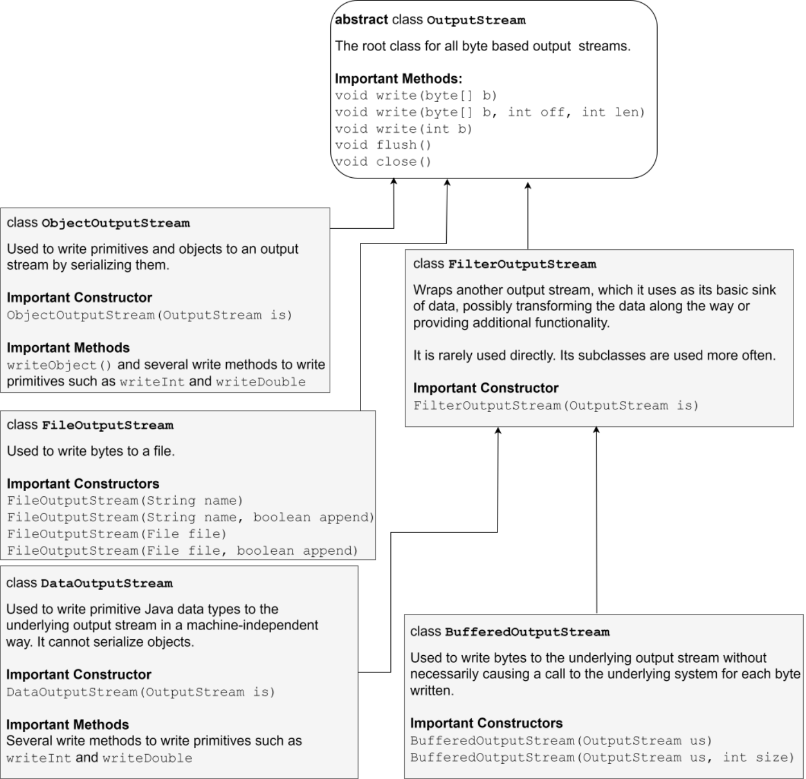
Dưới đây là một vài điểm đáng lưu ý về các lớp được hiển thị ở trên:
InputStream và OutputStream lần lượt là các lớp gốc cho tất cả các stream vào và stream ra tương ứng. Chúng là các lớp trừu tượng (abstract) và chứa hầu hết các phương thức mà chúng ta thường sử dụng khi làm việc với vào/ra (I/O) cấp thấp.
Các lớp chuyên biệt như ObjectInputStream (và ObjectOutputStream tương ứng) cùng BufferedInputStream (và BufferedOutputStream tương ứng) không tương tác trực tiếp với nguồn dữ liệu (data source) hoặc nơi nhận dữ liệu (data sink) như tệp tin. Chúng tiếp nhận một input stream hiện có (hoặc một
402
luồng đầu ra) và xây dựng thêm các chức năng bổ sung trên các luồng đó. Đó là lý do tại sao các luồng như vậy được gọi là các luồng “bậc cao hơn” (higher-level streams).
Các luồng bậc cao hơn không quan tâm đến việc dữ liệu thực sự đến từ đâu hay đi về đâu. Nhiệm vụ của các luồng bậc thấp hơn như FileInputStream / FileOutputStream là xử lý nguồn dữ liệu hoặc đích nhận dữ liệu thực tế.
Mặc dù không phải là một quy tắc đặt tên chính thức, một mẹo hay để biết liệu hàm khởi tạo của một lớp luồng I/O có nhận một luồng đầu vào hoặc luồng đầu ra làm đối số hay không là xem tên của lớp đó có tiết lộ nguồn hoặc đích nhận dữ liệu thực tế hay không. Nếu tên của một lớp luồng I/O tiết lộ nguồn hoặc đích nhận dữ liệu thực tế, thì đó là một luồng bậc thấp và nó không nhận một luồng đầu vào hoặc luồng đầu ra làm đối số trong quá trình khởi tạo. Ví dụ, FileInputStream và ByteArrayInputStream tiết lộ nguồn dữ liệu của chúng (lần lượt là một tệp và một mảng byte) và do đó là các luồng bậc thấp. Mặt khác, ObjectInputStream, BufferedInputStream và DataInputStream tiết lộ loại dữ liệu mà chúng xử lý (lần lượt là đối tượng (Object), bộ đệm byte (byte buffer) và dữ liệu nguyên thủy (primitive data)) thay vì nguồn hoặc đích nhận của dữ liệu, và do đó là các luồng bậc cao hơn. Chúng nhận một InputStream (or một OutputStream) làm đối số trong quá trình khởi tạo.
19.1.4 Đọc và ghi dữ liệu ký tự☝
Bạn đã biết rằng dữ liệu thực tế được lưu trữ trong một hệ thống tệp là một chuỗi các số 0 và 1. Chương trình của chúng ta sẽ đọc các bit đó và thông dịch chúng thành thứ gì đó có ý nghĩa hơn, chẳng hạn như các ký tự. Do đó, bạn có thể sử dụng các lớp InputStream và OutputStream thô để đọc các byte thô và tự thông dịch các byte đó thành các ký tự bằng cách sử dụng một bảng mã ký tự nào đó như ASCII. Tuy nhiên, việc chuyển đổi byte thành ký tự không phải lúc nào cũng đơn giản như việc thông dịch một byte thành một ký tự ASCII. Có hàng trăm ngôn ngữ và hàng ngàn ký tự tồn tại và chúng không thể đều được ánh xạ trực tiếp thành các giá trị của một byte đơn lẻ. Đó là lý do tại sao các bảng mã ký tự hiện đại sử dụng nhiều
403
byte để lưu trữ một ký tự đơn lẻ. May mắn thay, Java cung cấp các lớp concrete InputStreamReader và
OutputStreamWriter thực hiện việc chuyển đổi theo mã hóa ký tự được chỉ định. Một InputStreamReader đọc các byte thô từ một InputStream và chuyển đổi chúng
thành các ký tự trực tiếp (on the fly). Tương tự, một OutputStreamWriter chuyển đổi một luồng ký tự
thành một luồng byte trực tiếp và dẫn luồng byte kết quả đến một OutputStream như
hiển thị trong đoạn mã sau:
FileOutputStream fos = new FileOutputStream("c:\\temp\\test.txt");
OutputStreamWriter osw = new OutputStreamWriter(fos, "UTF-8");
char[] charData = "hello".toCharArray();
for (char c : charData) {
osw.write(c);
}
osw.close();
FileInputStream fis = new FileInputStream("c:\\temp\\test.txt");
InputStreamReader isr = new InputStreamReader(fis, "UTF-8");
int data = osr.read();
while (data != -1) {
char letter = (char) data;
System.out.print(letter);
data = isr.read();
}
isr.close();
Hãy lưu ý các điểm sau trong đoạn mã trên:
Chúng ta đang sử dụng FileInputStream và FileOutputStream để lấy các luồng
vào và ra thô từ và đến một tệp. Sau đó, chúng ta sử dụng chúng để tạo các instance InputStreamReader và
OutputStreamWriter để có thể đọc/ghi các ký tự thay vì các byte
từ/đến tệp.
Chúng ta đang sử dụng UTF-8 làm mã hóa ký tự khi ghi và đọc các byte
404
đến và đi từ file. Bạn không cần biết chi tiết về bất kỳ cơ chế mã hóa ký tự nào cho kỳ thi
OCP, nhưng bạn nên biết về một số mã hóa ký tự thường dùng
như UTF-8 , UTF-16 , và ISO-8859-1 . UTF-8 là mã hóa phổ biến nhất và
cũng là mã hóa được khuyến nghị cho cả văn bản chỉ tiếng Anh cũng như văn bản đa ngôn ngữ nhờ vào
tính hiệu quả và khả năng tương thích của nó với ASCII.
Việc gọi close() trên InputStreamReader hoặc OutputStreamWriter cũng đóng các
instance FileInputStream và FileOutputStream bên dưới.
Theo mô hình bọc một stream cấp thấp hơn để tạo ra một stream cấp cao hơn, chúng ta có thể
đọc và ghi các dòng văn bản thay vì các ký tự đơn lẻ bằng cách bọc một InputStreamReader vào
một BufferedReader và một OutputStreamWriter vào một BufferedWriter như sau:
try( var fos = new FileOutputStream("c:\\temp\\test.txt");
var osw = new OutputStreamWriter(fos, "ISO-8859-1");
var bw = new BufferedWriter(osw);){
String str = "hello";
bw.write(str+"\r\n"+str+"\n\r");//writing three lines to the file
}
try(var fis = new FileInputStream("c:\\temp\\test.txt");
var isr = new InputStreamReader(fis, "ISO-8859-1");
var br = new BufferedReader(isr);){
String str = null;
while( (str = br.readLine()) != null){
System.out.println("|"+str+"|");
}
}
Đoạn mã trên in ra:
|hello|
|hello|
405
||
End of file
Quan sát các điểm sau trong mã nguồn và đầu ra ở trên:
Tổng cộng có ba dòng được đọc từ file. Dòng thứ ba là một chuỗi rỗng (không phải null). Điều này là do một dòng được coi là kết thúc bởi bất kỳ ký tự nào trong số line feed (\n ), carriage return (\r ), carriage return được theo sau ngay lập tức bởi line feed (\r\n ), hoặc do đạt tới cuối file. Lưu ý rằng \n không phải là một chuỗi chứa hai ký tự. Nó chỉ là một ký tự có giá trị số là 10. Tương tự, \r chỉ là một ký tự có giá trị số là 13. Khi bạn viết các ký tự này vào một file, chúng sẽ hiển thị dưới dạng ngắt dòng trong trình soạn thảo văn bản. Để ngăn trình biên dịch coi chúng là ngắt dòng trong mã nguồn của chúng ta, chúng ta sử dụng các chuỗi escape \r và \n . Trong đoạn mã trên, dòng đầu tiên được kết thúc bằng \r\n , dòng thứ hai được kết thúc bằng \n , và dòng thứ ba được kết thúc bằng \r . Không có dòng thứ tư trong file.
Chúng ta tiếp tục đọc các dòng cho đến khi BufferedReader trả về null .
Chúng ta đang sử dụng câu lệnh Try-with-resources với nhiều Resource (Tài nguyên) và các khai báo var . Điều này là điển hình khi sử dụng các luồng Vào/Ra (I/O stream).
Java cũng cung cấp các Lớp (Class) cụ thể mang tên FileReader và FileWriter lần lượt kế thừa từ InputStreamReader và OutputStreamWriter để đọc dữ liệu ký tự. Dưới đây là một chương trình mẫu minh họa cách sử dụng các Lớp (Class) này:
try(var fw = new FileWriter("c:\\temp\\test.txt", Charset.forName("UTF-
8")) ){
char[] charData = "hello".toCharArray();
for (char c : charData) {
fw.write(c);
}
}
try(var fr = new FileReader("c:\\temp\\test.txt", Charset.forName("UTF-
8")) ){
406
int data = fr.read();
while(data != -1) {
char letter = (char) data;//cast data to char
//do something with the char just read
System.out.print(letter);
data = fr.read();
}
}
Chương trình trên tương tự như các chương trình trước đó, ngoại trừ việc nó sử dụng một thể hiện của lớp
java.nio.charset.Charset thay vì một String để xác định mã hóa ký tự.
Charset là một lớp tiện ích chứa ánh xạ giữa dữ liệu byte thô ("code units", nói một cách chính xác nhưng bạn có thể bỏ qua điều đó trong kỳ thi) và các ký tự.
Dữ liệu ký tự luôn yêu cầu một cơ chế mã hóa và giải mã để chuyển đổi các ký tự thành các byte thô và ngược lại. Các quy tắc cho việc diễn giải này được định nghĩa bởi một mã hóa ký tự. Mặc dù thông thường ta có thể đọc và ghi dữ liệu ký tự mà không cần chỉ định rõ ràng một mã hóa ký tự, nhưng đó là một ý tưởng tồi bởi vì việc không chỉ định rõ ràng một mã hóa ký tự đồng nghĩa với việc một mã hóa ký tự mặc định nào đó sẽ được áp dụng ngầm định bởi API bên dưới. Bất kỳ thay đổi nào trong mã hóa mặc định cũng có thể khiến dữ liệu ký tự hiện tại trở nên hoàn toàn không hiểu được. Sự thay đổi trong mã hóa ký tự mặc định có thể xảy ra do việc di chuyển hoặc nâng cấp kho lưu trữ dữ liệu bên dưới như hệ thống tệp hoặc cơ sở dữ liệu.
Trước Java 11, FileReader và FileWriter không nhận một Charset làm đối số trong quá trình khởi tạo. Chúng sử dụng mã hóa mặc định được xác định từ môi trường mà chương trình chạy. Hành vi này khiến lập trình viên không nhận biết được cơ chế chuyển đổi và khiến dữ liệu
407
có thể không khả chuyển (non-portable). Đó là lý do tại sao trước Java 11, cách thức được ưu tiên để đọc và ghi dữ liệu ký tự là sử dụng các lớp InputStreamReader và OutputStreamWriter, vốn nhận tên của bộ mã hóa ký tự làm đối số.
Trong Java 18, FileReader và FileWriter cùng một vài lớp khác đã được cập nhật để sử dụng UTF-8 làm bộ mã hóa ký tự mặc định thay vì phụ thuộc vào bộ mã hóa ký tự mặc định của môi trường. Mặc dù thay đổi này giúp mã nguồn khả chuyển hơn, nhưng việc chỉ định rõ ràng bộ mã hóa ký tự vẫn tốt hơn.
19.1.5 Tóm tắt về các luồng ký tự (character stream)☝
Hình ảnh dưới đây hiển thị các luồng nhập (input stream) quan trọng hoạt động với ký tự.
408
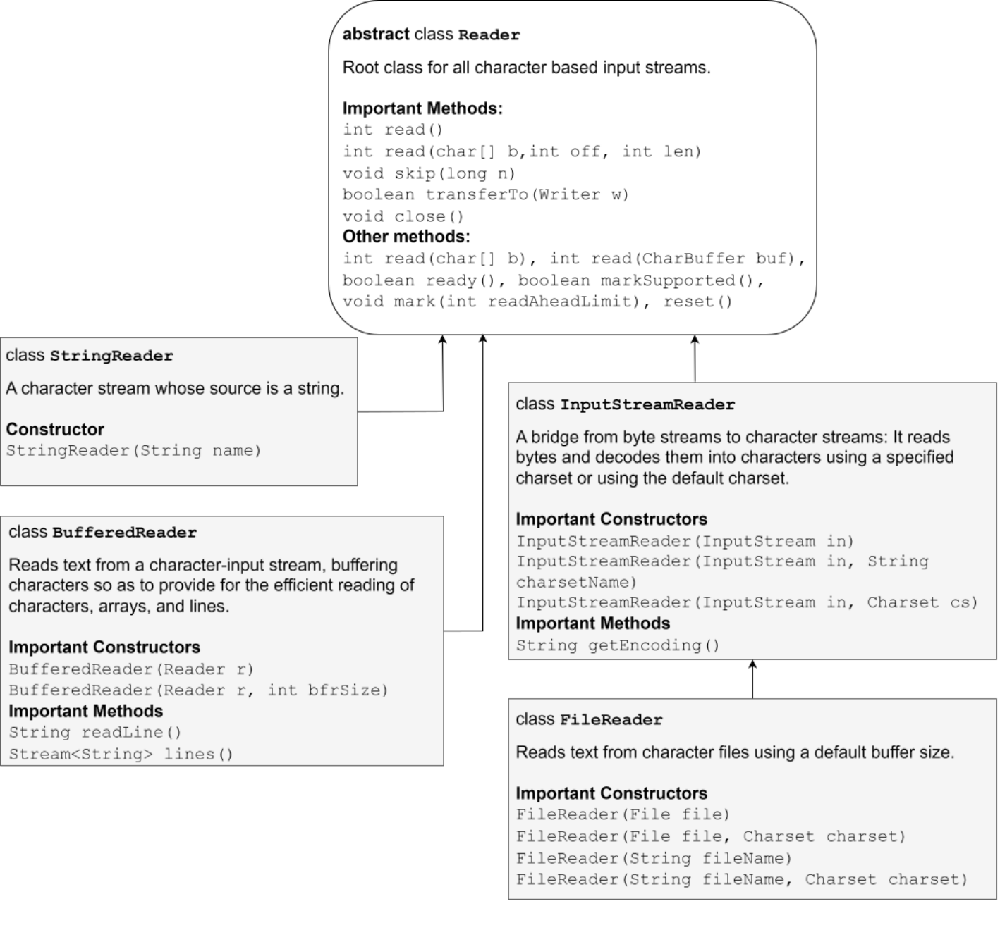
Hình ảnh sau đây hiển thị các luồng đầu ra (output stream) quan trọng làm việc với các ký tự.
409
Sau đây là một vài điểm đáng lưu ý về các Lớp (Class) được hiển thị ở trên:
Reader và Writer lần lượt là các Lớp (Class) gốc cho tất cả các stream vào và ra dựa trên ký tự. Chúng là trừu tượng (abstract) và chúng chứa hầu hết các phương thức mà chúng ta thường sử dụng khi xử lý đầu vào dựa trên ký tự cấp thấp
410
và đầu ra.
Các lớp (Class) InputStreamReader và OutputStreamWriter đóng vai trò như một cầu nối giữa một byte stream và một character stream. Chúng chuyển đổi một byte stream thành một character stream (và ngược lại) bằng cách sử dụng bộ mã hóa ký tự (character encoding) được chỉ định (hoặc mặc định).
Một số lớp (Class) như BufferedReader và BufferedWriter yêu cầu một instance của một lớp cầu nối (tức là InputStreamReader hoặc OutputStreamWriter) làm đối số constructor, trong khi những lớp khác như FileReader, FileWriter, và PrintWriter có thể được tạo ra ngay cả khi không có các lớp cầu nối như vậy. Các lớp này tạo một đối tượng (Object) InputStreamReader hoặc OutputStreamWriter trung gian trong nội bộ để thực hiện việc chuyển đổi giữa byte và ký tự.
Bản tóm tắt trên không bao gồm PrintStream. Mặc dù nó thường xuyên được sử dụng để in hầu như mọi thứ ra console (sử dụng System.out), PrintStream không phải là một Writer. Tôi sẽ thảo luận riêng về nó.
19.1.6 Các thao tác stream Vào/Ra (I/O) nâng cao☝
Quay ngược một stream☝
Thông thường, dữ liệu từ một input stream chỉ có thể được đọc một lần. Bạn không thể "quay ngược" (rewind) một stream và đọc lại cùng một dữ liệu đó một lần nữa. Tuy nhiên, một số input stream sử dụng các bộ đệm dữ liệu (data buffer) nội bộ có thể cung cấp chức năng này. Chức năng này rất hữu ích khi xây dựng các trình phân tích cú pháp (parser) cần quay ngược lại vị trí trước đó nếu chúng gặp một ký tự điều khiển cụ thể. Ví dụ, đoạn mã sau đây đọc một tệp văn bản và xác định các từ nằm giữa ký hiệu < và >. Logic hoạt động như sau. Chúng ta "đánh dấu" (mark) stream khi bắt gặp ký tự < và bắt đầu đếm số lượng ký tự. Chúng ta đếm cho đến khi bắt gặp ký tự >. Ngay khi bắt gặp ký tự >, chúng ta reset stream về lại vị trí đã đánh dấu và đọc số lượng ký tự được chỉ ra bởi biến đếm vào một bộ đệm ký tự (character buffer).
411
try(BufferedReader bfr = new BufferedReader(new
FileReader("test.txt"))){
if(bfr.markSupported()) { //check whether the stream supports
mark/reset
int letter = -1;
int noOfChars = 0;
String tag = "";
while ((letter = bfr.read()) != -1) {
noOfChars++;
if (((char) letter) == '<') {
noOfChars = 0; //start counting chars till we hit '>'
bfr.mark(256); //mark this location (just after '<')
}
if (letter == '>') {
bfr.reset(); //rewind to the marked point
char[] buf = new char[noOfChars - 1];
bfr.read(buf);
System.out.println(new String(buf)+" ");
bfr.skip(1); //skip the '>' character
}
}
}
}
Nếu tệp test.txt chứa <html> </html> , đoạn mã trên sẽ in ra html /html .
Dưới đây là một vài điểm đáng lưu ý về đoạn mã trên:
Phương thức markSupported cho bạn biết liệu stream bên dưới có hỗ trợ mark và reset hay không.
Phương thức mark nhận một tham số int có tên là markAheadLimit . Nó thiết lập số lượng ký tự tối đa mà bạn có thể đọc một cách an toàn, sau đó stream có thể làm mất hiệu lực của mark. Trong đoạn mã trên, chúng ta đã truyền vào 256, điều đó có nghĩa là, nếu chúng ta đọc nhiều hơn 256 ký tự sau khi thiết lập mark, chúng ta có thể không thể
412
reset stream quay lại điểm đánh dấu đó. Stream sẽ ném ra một IOException nếu chúng ta reset
stream sau khi stream đã vô hiệu hóa điểm đánh dấu đó.
Phương thức skip dịch chuyển stream về phía trước bằng cách bỏ qua số lượng ký tự được chỉ định.
Lưu ý rằng ví dụ trên sử dụng một Reader (nghĩa là một luồng ký tự) nhưng chức năng này
hoạt động tương tự đối với một InputStream (nghĩa là một luồng byte). Điểm khác biệt duy nhất là
trong trường hợp luồng byte, các đối số truyền vào phương thức mark và skip
được hiểu là số byte (thay vì số ký tự).
19.1.7 Trắc nghiệm☝
Q1. Giả sử file test1.txt chứa hai dòng văn bản sau:
hello
world
(Giả sử dòng đầu tiên kết thúc bằng \r\n . Nội dung của file test2.txt
sẽ là gì sau khi đoạn mã sau được thực thi?
char[] buff = new char[5];
try(var fr = new FileReader("c:\\temp\\test1.txt");
var fw = new PrintWriter("c:\\temp\\test2.txt")){
int count = 0;
while( (count=fr.read(buff)) != -1) {
fw.write(buff);
}
}
Chọn 1 đáp án đúng.
A.
hello
413
world
B.
hello
worldwor
C.
hello
world
w
D.
hello
world
wor
Đáp án đúng là B.
Có tổng cộng 12 ký tự trong test1.txt (đừng quên hai ký tự được dùng để
kết thúc dòng đầu tiên). Trong lần lặp đầu tiên của vòng lặp while, phương thức read sẽ điền vào buff
với 5 ký tự đầu tiên, tức là hello. Hãy lưu ý rằng chúng ta chưa chỉ định các đối số offset và length
cho phương thức write . Vì vậy, nó sẽ ghi tất cả các ký tự trong buff vào test2.txt.
Như vậy, hello được ghi vào file. Trong lần lặp thứ hai, phương thức read đọc 5
ký tự tiếp theo, tức là \r\nwor, các ký tự này sau đó được ghi vào file. Lúc này chỉ còn lại 2 ký tự nữa
cần đọc từ file. Do đó, trong lần lặp thứ ba, phương thức read chỉ đọc những ký tự
đó và đặt chúng vào hai vị trí đầu tiên của buff. Ba vị trí còn lại trong
buff không bị ảnh hưởng và vẫn chứa các ký tự đã đọc từ lần lặp trước đó, tức là wor.
Vì vậy, buff bây giờ chứa ldwor. Do đó, phương thức write ghi ldwor vào file. Lần lặp thứ
tư không xảy ra vì phương thức read trả về -1.
Nếu chúng ta sử dụng fw.write(buff, 0, count) thay vì fw.write(buff), chương trình
sẽ sao chép nội dung một cách chính xác.
19.1.8 Hiểu về tên file và đường dẫn☝
Tôi chắc chắn rằng bạn đã và đang quản lý các file trên máy tính của mình bằng File Explorer
414
từ lâu và bạn không cần một tài liệu hướng dẫn ở cấp độ cơ bản về cách tổ chức các tệp và
thư mục (còn gọi là directory). Mặc dù vậy, hãy để tôi nói về một vài thuật ngữ sẽ được sử dụng rộng rãi
khi tìm hiểu về Path API ở phần tiếp theo.
Tệp, Thư mục (Directory) và Thư mục (Folder)☝
Khi bạn nhìn vào hệ thống tệp của mình thông qua trình khám phá tệp, bạn sẽ thấy các thư mục (folder) và các tệp. Thư mục
chứa các tệp và/hoặc các thư mục khác, trong khi các tệp chứa dữ liệu. Hãy lưu ý rằng một thư mục có thể chứa
nhiều tệp và thư mục nhưng một tệp hoặc một thư mục chỉ có thể được chứa trong đúng một thư mục duy nhất. Đây là
điều tạo nên một hệ thống tệp phân cấp. Nếu bạn sử dụng dòng lệnh (hoặc shell), bạn có thể
quan sát cấu trúc phân cấp tương tự của các tệp và thư mục (directory) bằng cách sử dụng lệnh dir
trên Windows (or ls trên Linux). Ở đỉnh của một hệ thống tệp phân cấp là gốc (root) của
hệ thống tệp đó. Trong Windows, gốc được biểu thị bằng một ký tự ổ đĩa như c: và trong Linux, nó được
biểu thị chỉ bằng một dấu gạch chéo xuôi (/).
Tuy nhiên, trong thế giới Java, có một sự trừu tượng duy nhất gọi là "file" cho cả tệp cũng như
thư mục. Một file có thể là một tệp thông thường hoặc nó có thể là một thư mục (còn gọi là folder). Bạn có thể kiểm tra
xem nó là gì bằng cách truy vấn các "thuộc tính" (attributes) của nó. Vì vậy, nếu một file là một thư mục, bạn có thể gọi các thao tác liên quan đến thư mục
trên đó chẳng hạn như lấy tên của các tệp mà nó chứa và nếu nó là một tệp thông thường,
bạn có thể đọc/ghi dữ liệu từ/vào tệp đó bằng cách sử dụng các loại stream khác nhau mà bạn đã thấy trước đó.
Tên tệp (File name)☝
Tên của một tệp chỉ là một chuỗi ký tự định danh tệp đó bên trong thư mục cha của nó.
Theo quy ước, tên của các tệp thông thường kết thúc bằng một dấu chấm và phần mở rộng gồm nhiều chữ cái như
.txt hoặc .java trong khi tên của các thư mục thì không.
Đường dẫn (Pathname) và Đường dẫn trừu tượng (Abstract pathname)☝
Hệ điều hành sử dụng một đường dẫn (pathname) để định danh một tệp, trong khi Java sử dụng một đường dẫn trừu tượng (abstract pathname) cho
cùng mục đích đó. JVM chuyển đổi một đường dẫn trừu tượng thành đường dẫn thực tế và ngược lại bất cứ khi nào
cần thiết. Logic chuyển đổi phụ thuộc vào hệ điều hành.
Một đường dẫn trừu tượng (abstract pathname) là một chuỗi gồm không hoặc nhiều tên tệp được phân tách bằng một ký tự
phân tách đặc trưng của hệ thống. Trên Windows, ký tự phân tách là dấu gạch chéo ngược (\),
415
trong khi trên Linux và MacOS, đó là dấu gạch chéo xuôi (/). Một đường dẫn trừu tượng không nhất thiết phải tham chiếu đến một tệp thực tế trong hệ thống tệp, nhưng nếu bạn muốn có thể chuyển đổi nó thành một đường dẫn thực tế, mọi thành phần ngoại trừ thành phần cuối cùng của một đường dẫn trừu tượng phải tương ứng với một thư mục. Điều này là hợp lý vì một tệp không thể chứa các tệp khác, chỉ có thư mục mới có thể.
Lý tưởng nhất là bạn nên sử dụng ký tự phân tách đặc trưng của nền tảng khi viết các đường dẫn trong mã nguồn (nếu bạn thực sự muốn ghi cứng chúng trong mã nguồn), nhưng trên Windows, JVM sẽ tự động chuyển đổi dấu gạch chéo xuôi thành dấu gạch chéo ngược, vì vậy nếu bạn sử dụng dấu gạch chéo xuôi trong mã nguồn của mình, đường dẫn vẫn sẽ được chấp nhận trên Windows cũng như trên các máy giống Unix. Bạn sẽ sớm tìm hiểu những cách tốt hơn để làm việc với các đường dẫn theo cách độc lập với nền tảng.
Đường dẫn tuyệt đối và đường dẫn tương đối☝
Để truy cập một tệp trong một hệ thống tệp phân cấp, chúng ta không chỉ cần biết tên của tệp mà còn phải biết tên của các thư mục chứa nó, đi ngược lên tận thư mục gốc. Vì vậy, nếu một đường dẫn bao gồm tất cả các tên bắt đầu từ thư mục gốc xuống đến tệp mà bạn muốn truy cập, thì đó là một đường dẫn tuyệt đối.
Ví dụ, c:\a\b\c\test.txt là một đường dẫn tuyệt đối vì chúng ta có thể bắt đầu từ thư mục gốc c:\ và đi vào trong thư mục tên là a, sau đó là b, và c để tìm đến tệp test.txt.
Tương tự, trên Linux, vì thư mục gốc được ký hiệu bằng /, nên /a/b/c/test.txt sẽ là một đường dẫn tuyệt đối.
Mặt khác, bản thân một đường dẫn tương đối không đủ để xác định một tệp trong hệ thống tệp. Nó chỉ có thể xác định một tệp khi được sử dụng tương quan với một đường dẫn khác đã biết trước vị trí.
Ví dụ, bản thân b\c\test.txt không đủ để định vị tệp test.txt. Tuy nhiên, nếu biết rằng đường dẫn này là tương đối so với c:\a, chúng ta có thể xác định được vị trí chính xác của nó. Do đó, bất kỳ đường dẫn nào không bắt đầu bằng thư mục gốc đều là đường dẫn tương đối.
Thư mục hiện tại☝
Thư mục hiện tại là đường dẫn nơi một chương trình được chạy. Ví dụ, nếu bạn chạy chương trình Java của mình từ c:\temp, thì c:\temp sẽ là thư mục hiện tại bất kể tệp class đang được thực thi nằm ở đâu. Khi bạn thực thi trực tiếp một tệp Jar bằng cách nhấp đúp vào nó, Windows sẽ đặt thư mục hiện tại là thư mục trong
416
nơi đặt tệp jar. Trên các phiên bản Windows và Java cũ hơn, thư mục hiện tại là
c:\windows\system32 .
Việc biết thư mục hiện tại là rất quan trọng vì theo mặc định, tất cả các đường dẫn tương đối đều được phân giải dựa trên
thư mục hiện tại. Do đó, nếu chương trình của bạn cố gắng mở một tệp có đường dẫn tương đối là
a\test.txt và nếu thư mục hiện tại là c:\temp , thì JVM sẽ mong đợi tệp đó
nằm ở c:\temp\a\test.txt .
Dấu chấm (.) và hai dấu chấm (..)☝
Bạn cần lưu ý rằng tất cả các thư mục trong hệ thống tệp dựa trên Unix và DOS đều tự động có
hai mục con tên là . và .. , trong đó . tham chiếu đến chính thư mục chứa nó
và .. tham chiếu đến thư mục cha của nó. Ví dụ, nếu bạn thực thi lệnh " dir . "
(không có dấu ngoặc kép) trong c:\temp , bạn sẽ thấy danh sách các tệp hiện có trong c:\temp
và nếu bạn chạy lệnh " dir .. ", bạn sẽ thấy danh sách các tệp hiện có trong thư mục cha của
temp, tức là c:\ . Bạn cũng sẽ quan sát thấy điều tương tự trên một máy tính Linux. Lý do và
mục đích tồn tại của chúng liên quan nhiều đến cách hệ điều hành quản lý hệ thống tệp, nhưng bạn
không cần phải học những chi tiết đó cho kỳ thi. Bạn chỉ cần biết chúng ảnh hưởng đến một
tên đường dẫn (pathname) như thế nào. Một dấu chấm nghĩa là ở lại cùng một thư mục, trong khi hai dấu chấm nghĩa là đi lên một cấp. Vì vậy,
ví dụ, c:\temp\a\.. nghĩa là, bắt đầu từ c: , đi tới temp, rồi tới a , và sau đó quay lại
thư mục cha của a , nghĩa là bạn đã quay lại c:\temp . Tương tự, nếu bạn thực hiện cd .. khi đang ở
trong c:\temp trên cửa sổ dòng lệnh, bạn sẽ ở trong c: .
Đường dẫn chuẩn (Canonical path)☝
Một đường dẫn chuẩn (canonical path) là một đường dẫn tuyệt đối không chứa bất kỳ phân đoạn đường dẫn dư thừa nào. Ví dụ,
c:\temp\a\..\test.txt là một đường dẫn tuyệt đối nhưng nếu đi theo đường dẫn này, bạn sẽ đi
từ c: tới temp, rồi từ temp tới a , sau đó quay lại temp, và cuối cùng là tới test.txt .
Sự hiện diện của .. triệt tiêu a xuất hiện trước nó. Vì vậy, a\.. tạo thành một dạng
vòng lặp trong đường dẫn. Đường dẫn chuẩn sẽ loại bỏ tất cả các vòng lặp như vậy và cung cấp cho bạn một đường dẫn thẳng từ
thư mục gốc đến điểm đích.
Một số hệ điều hành cho phép bạn tạo các liên kết tượng trưng (symbolic link) tới các tệp khác trong hệ thống tệp. Một
đường dẫn chuẩn cũng phân giải các liên kết như vậy, nghĩa là nó hiển thị đường dẫn thực tế thay vì
liên kết tượng trưng.
417
19.1.9 Sử dụng Lớp (Class) java.io.File☝
Bạn đã thấy hầu hết các Lớp (Class) quan trọng của gói (package) java.io . Lớp (Class) duy nhất khác mà bạn cần biết từ gói (package) này là Lớp (Class) File . Nó là một Lớp (Class) bất biến mà các Đối tượng (Object) của nó đại diện cho một tệp (file) hoặc một tên đường dẫn thư mục. Mục đích của Lớp (Class) này không phải là để thao tác trên dữ liệu bên trong tệp (file) mà là để làm việc với chính tệp (file) đó theo cách độc lập với nền tảng.
Khởi tạo, đổi tên và xóa
Đoạn mã sau đây minh họa cách tạo, đổi tên và xóa tệp (file) thực tế trong hệ thống tệp bằng cách sử dụng các phương thức của Lớp (Class) File :
File f1 = new File("c:\\temp\\test1.txt");
boolean successful = f1.createNewFile();
System.out.println(successful);//prints true if test1.txt did not
preexist.
File f2 = new File("c:\\temp\\test2.txt");
System.out.println(f1.renameTo(f2));//prints true if test1.txt was
renamed to test2.txt.
System.out.println(f2.delete());//prints true if test2.txt was deleted.
Hãy lưu ý rằng một Đối tượng (Object) File đại diện cho bất kỳ tệp (file) nào đều có thể được tạo ra bất kể tệp (file) đó có thực sự tồn tại trong hệ thống tệp hay không. Phương thức createNewFile trả về true nếu nó có thể tạo một tệp (file) rỗng trong hệ thống tệp. Nó có thể thất bại (và trả về false) nếu tệp (file) đã tồn tại hoặc nếu có hạn chế về bảo mật. Các phương thức renameTo , makeDir , makeDirs , và delete hoạt động tương tự.
Đáng chú ý là, Lớp (Class) File không có các phương thức để sao chép và di chuyển tệp (file). Phương thức renameTo có thể được sử dụng để di chuyển tệp (file) nhưng nó có thể thất bại nếu đích đến nằm trên một hệ thống tệp khác hoặc nếu đích đến đã tồn tại. Lớp
418
Lớp java.nio.file.Files cung cấp một cách toàn diện hơn để thực hiện các thao tác này.
Liệt kê thư mục
Bạn có thể sử dụng một đối tượng File để liệt kê nội dung của một thư mục nếu đối tượng File đó tương ứng với
một thư mục trong hệ thống tệp. Ví dụ: đoạn mã sau đây in ra tên của tất cả các tệp
hiện có trong thư mục c:\temp :
File f = new File("c:\\temp");
if(f.isDirectory()){
String[] fileNames = f.list();
for(String fn : fileNames){
System.out.println(fn);
}
}
Sử dụng bộ phân tách tên độc lập với nền tảng
Trong các ví dụ mã nguồn trước đó, tôi đã sử dụng các đường dẫn tệp dành riêng cho Windows như
"c:\temp\test1.txt" và "c:\temp". Các chuỗi đường dẫn này sẽ không hoạt động trên máy Linux
vì Linux sử dụng dấu gạch chéo xuôi ( / ) làm ký tự phân tách. Hơn nữa, thư
mục gốc của hệ thống tệp trong Linux chỉ là /. Linux không sử dụng các ký tự ổ đĩa như c:. Lớp File
có hai trường public static cho mục đích này:
public static char separatorChar : Đây là ký tự phân tách tên mặc định phụ thuộc vào hệ thống.
Trên Windows, nó là dấu gạch chéo ngược ( '\\' ) và trên Linux, nó là dấu gạch chéo xuôi
( '/' ).
public static String separator : Một phiên bản kiểu String của separatorChar để
thuận tiện cho việc sử dụng. Nó chứa cùng một ký tự như separatorChar.
Vì vậy, nếu tôi viết chuỗi đường dẫn "c:\temp\test.txt" dưới dạng File.separator + "temp" +File.separator + "test.txt", nó sẽ hoạt động trên Windows cũng như trên Linux vì nó sẽ
được chuyển đổi thành \temp\test.txt nếu chương trình được chạy trên máy Windows và thành
/temp/test.txt nếu nó được chạy trên máy Linux. Đúng vậy,
419
quá trình chuyển đổi trên Windows bị thiếu ký tự ổ đĩa c: , nhưng trừ khi bạn muốn nhắm mục tiêu đến một tệp trên một
ổ đĩa khác với ổ đĩa mà chương trình của bạn đang được thực thi, ký tự ổ đĩa là không bắt buộc
để chỉ định đường dẫn tuyệt đối. Bất kỳ đường dẫn nào bắt đầu bằng ký tự phân tách đều được coi là
bắt đầu từ thư mục gốc của hệ thống tệp (trên tất cả các hệ điều hành). Do đó, trên máy Windows, nếu đường dẫn của bạn
bắt đầu bằng \ và thư mục hiện tại của bạn nằm trên ổ C , thì \temp\test.txt sẽ tham chiếu
đến c:\temp\test.txt .
Lớp (Class) File có thêm hai trường public static khác để phân tách các đường dẫn theo cách độc lập
với nền tảng. Đó là:
public static char pathSeparatorChar : Đây là ký tự phân tách đường dẫn phụ thuộc
vào hệ thống. Trên Windows, nó là ; và trên Linux, nó là : .
public static String pathSeparator : Một phiên bản String của pathSeparatorChar để
thuận tiện. Nó chứa cùng một ký tự với pathSeparatorChar.
Mặc dù hoàn toàn nằm ngoài phạm vi của kỳ thi, nhưng cũng nên biết rằng các trường này sẽ rất hữu ích
khi bạn muốn thực thi động một lệnh yêu cầu một danh sách các đường dẫn làm đối số.
Lấy thông tin đường dẫn
Lớp (Class) File có các phương thức như getAbsolutePath và getCanonicalPath để lần lượt lấy
đường dẫn tuyệt đối và đường dẫn chuẩn tắc của tệp. Chúng có thể được sử dụng như sau:
File f = new File(".");
String ap = f.getAbsolutePath();
String cp = f.getCanonicalPath();
System.out.println(ap+" "+cp);
Đoạn mã trên sử dụng một đường dẫn tương đối khi tạo đối tượng (Object) File ( . là tương đối vì nó
không bắt đầu bằng thư mục gốc). Đường dẫn này tương đối so với thư mục hiện tại. Do đó, về mặt hiệu quả, đoạn mã
trên hiển thị cho bạn thư mục hiện tại. Nếu bạn chạy đoạn mã trên từ c:\temp , nó sẽ
in ra C:\temp\. C:\temp . Hãy quan sát rằng đường dẫn chuẩn tắc không chứa dấu chấm ở cuối
vì dấu chấm đó là dư thừa.
420
Lấy các thuộc tính file☝
Lớp (Class) File cho phép bạn truy vấn các thuộc tính của file thông qua các phương thức như
isDirectory() , isFile() , isHidden() , và lastModified() .
Lớp (Class) File đã tồn tại từ phiên bản Java 1.0 và thường là đủ cho các tác vụ thông thường.
Tuy nhiên, vì kỳ thi không tập trung nhiều vào lớp (class) File , tôi sẽ không đi sâu vào
chi tiết tất cả các phương thức của nó. Tôi khuyên bạn nên xem qua JavaDoc của lớp (class) File và
viết một vài chương trình thử nghiệm để xem chúng hoạt động như thế nào.
19.2 Package java.nio.file☝
Package java.nio.file cung cấp khả năng truy cập hệ thống file toàn diện và độc lập với nền tảng hơn so với lớp (class) java.io.File . Nó làm như vậy bằng cách trừu tượng hóa một cách chính thức các khái niệm về hệ thống file, đường dẫn (path), và thuộc tính file thành một tập hợp lớn các interface (giao diện) và lớp (class). Một số điều bạn có thể làm khi sử dụng package này mà không thể thực hiện bằng lớp (class) File là -
mở các file ở mười chế độ đọc/ghi khác nhau, sao chép các file và thư mục, tham chiếu đến các file trong các hệ thống file khác nhau, theo dõi các thay đổi của thư mục trong thời gian chạy (run time), kiểm soát chi tiết hơn đối với các liên kết tượng trưng (symbolic link), duyệt qua các thư mục một cách đệ quy, đồng bộ hóa việc ghi vào hệ thống file, và quản lý các thuộc tính file. Đúng vậy, có rất nhiều thứ và thậm chí còn nhiều hơn thế nữa! Nhưng đừng lo lắng. Bạn không cần phải biết tất cả những điều này. Thông thường, các lập trình viên chỉ tìm hiểu cách thực hiện các tác vụ này khi họ thực sự cần chúng trong một dự án.
Kỳ thi OCP cũng không yêu cầu bạn phải biết về hầu hết các tính năng được đề cập ở trên mà chỉ tập trung vào một tính năng - làm việc với các đường dẫn (path) và thuộc tính của chúng.
19.2.1 Các lớp (class) và interface (giao diện) quan trọng của package java.nio.file☝
421
Dưới đây là danh sách các interface và class từ package java.nio.file mà bạn cần lưu ý cho kỳ thi OCP.
Interface (Giao diện)
Các phương thức quan trọng
Path
Các phương thức instance:
getName(int index), getParent(), getRoot(), subpath(int
beginIndex, int endIndex), toAbsolutePath(),
Chỉ chứa các phương thức factory static cho các file system.
Các phương thức static:
getDefault(), getFileSystem(URI uri)
FileSystem
Cung cấp một interface đến một file system và là factory cho các đối tượng (Object) để truy cập các file và các đối tượng (Object) khác trong file system.
Các phương thức instance:
getPath(String first, String... more),
getRootDirectories(), getSeparator()
Paths(Không còn được khuyến nghị sử dụng nữa)
Chỉ chứa các phương thức static trả về một Path bằng cách chuyển đổi một chuỗi đường dẫn hoặc một URI.
Các phương thức static:
get(String first, String... more), get(URI uri)
422
Files
Chỉ chứa các phương thức static thao tác trên các tệp và thư mục.
Các phương thức để sao chép, tạo, xóa và di chuyển các tệp cũng như thư mục.
Các phương thức để liệt kê một thư mục - Stream<Path> list(Path dir)
Các phương thức để đọc dữ liệu ký tự như Stream<String> lines(Path path),
List<String> readAllLines(Path path), String readString(Path p)
Các phương thức để duyệt cây thư mục - Stream<Path> walk(Path start, int maxDepth,
FileVisitOption... options) và Stream<Path> walk(Path start,
FileVisitOption... options)
Các phương thức để đọc dữ liệu nhị phân như byte[] readAllBytes(Path p)
Các phương thức để lấy các reader và writer dạng stream cho dữ liệu nhị phân và ký tự như:
Các phương thức để ghi dữ liệu ký tự và dữ liệu nhị phân vào tệp như
write(Path path, Iterable lines, OpenOption... options),
writeString(Path path, CharSequence csq, OpenOption... options),
write(Path path, byte[] bytes, OpenOption... options)
Một số phương thức isXXX() để kiểm tra các thuộc tính tệp như
isRegularFile, isReadable, isWritable,
isHidden, và isSymbolicLink.
423
enum StandardOpenOption
implements OpenOption
Định nghĩa 10 chế độ: READ, WRITE, APPEND,
TRUNCATE_EXISTING, CREATE, CREATE_NEW,
DELETE_ON_CLOSE, DSYNC, SYNC, SPARSE
enum StandardCopyOption
implements CopyOption
Định nghĩa 3 chế độ: ATOMIC_MOVE, COPY_ATTRIBUTES,
REPLACE_EXISTING
enum LinkOption implements
OpenOption, CopyOption
Định nghĩa 1 chế độ: NOFOLLOW_LINKS
19.2.2 Sử dụng Interface (Giao diện) Path☝
Bạn đã thấy các tên tệp và đường dẫn ở phần trước. Chúng đều chỉ là các chuỗi và sử dụng các ký tự phân tách đặc trưng cho từng nền tảng. Package java.nio.file trừu tượng hóa một cách chính thức khái niệm về đường dẫn bằng cách sử dụng Interface (Giao diện) java.nio.file.Path . Các Lớp (Class) khác của package này sử dụng các đối tượng (Object) Path thay vì các chuỗi mỗi khi chúng cần tham chiếu đến một tệp.
Không có Lớp (Class) công khai (public) nào triển khai Interface (Giao diện) Path , nghĩa là bạn không thể khởi tạo trực tiếp các đối tượng (Object) Path . Bạn cần lấy các đối tượng (Object) Path bằng cách sử dụng một đối tượng (Object) Path đã có sẵn hoặc bằng cách sử dụng các phương thức static of(...) của Interface (Giao diện) Path .
Ví dụ sau đây cho thấy cách sử dụng của một vài phương thức thường dùng của Interface (Giao diện) Path . Kết quả đầu ra (được hiển thị trong phần chú thích) giả định rằng chương trình được chạy từ C:\temp :
Dưới đây là một vài điểm đáng lưu ý về ví dụ trên:
Phương thức of cung cấp một cách để chuyển đổi một String thành một đối tượng (Object) Path . Các chuỗi được sử dụng để tạo các đối tượng (Object) Path tuân theo cùng các quy ước và cú pháp như những chuỗi bạn đã thấy trong phần trước. Vì vậy, ./files là một đường dẫn tương đối vì nó không bắt đầu bằng một thành phần gốc (root). Nó sẽ được hiểu là tương đối so với thư mục hiện tại, trong trường hợp này là C:\temp .
Phương thức getFileName trả về phần tử xa nhất (tức là phần tử cuối cùng) của đường dẫn, trong trường hợp này là files .
Phương thức subpath trả về một đường dẫn tương đối là một chuỗi con (subsequence) của các phần tử tên của đường dẫn này. Đối tượng (Object) Path được trả về chứa các phần tử tên bắt đầu tại beginIndex và kéo dài đến phần tử tại chỉ mục endIndex-1. Lưu ý rằng nó trả về một đường dẫn tương đối, nghĩa là đường dẫn được trả về sẽ không bao giờ bắt đầu bằng thành phần gốc (root).
Phương thức getRoot trả về gốc (root) nếu nó được gọi trên một đường dẫn tuyệt đối. Vì ./files không phải là một đường dẫn tuyệt đối, getRoot sẽ trả về null ở đây.
Phương thức toAbsolutePath() trả về đường dẫn đầy đủ của đường dẫn tương đối đã cho bắt đầu từ gốc (root) mặc định. Trong trường hợp này, gốc là C:\ và do đó, nó trả về C:\temp\.\files . Quan sát thấy rằng đường dẫn này chứa một ký tự . dư thừa. Điều này cho thấy phương thức toAbsolutePath không trả về phiên bản chuẩn (canonical version) của đường dẫn. Để lấy được phiên bản đó, chúng ta cần gọi normalize() . Phương thức normalize() về cơ bản là giống với phương thức getCanonicalPath của lớp (Class) java.io.File (ngoại trừ thực tế là normalize() trả về một đối tượng (Object) Path thay vì một String ).
Phương thức toRealPath trả về đường dẫn chuẩn (canonical path) cho đường dẫn đã cho và cũng kiểm tra xem tệp (hoặc thư mục) được tham chiếu bởi đường dẫn đó có thực sự tồn tại hay không. Nếu tệp không tồn tại, nó sẽ ném ra một IOException . Do đó, trong ví dụ này, nếu thư mục files tồn tại, nó sẽ trả về C:\temp\files và nếu không, nó sẽ ném ra một IOException . (Trên thực tế, một java.nio.file.NoSuchFileException sẽ bị ném ra nhưng vì tài liệu JavaDoc nói rằng nó ném ra IOException , chúng ta sẽ dùng IOException . NoSuchFileException là một IOException .) Thực tế, đây là một trong những
425
hai phương thức của interface Path có thể ném ra một IOException . Phương thức còn lại
là register , nhưng nó không nằm trong phạm vi của kỳ thi này.
Không quan trọng đối với kỳ thi, nhưng tốt hơn hết bạn nên biết rằng các đường dẫn được định dạng đúng không kết thúc bằng
ký tự phân tách ở cuối (trừ khi nó tham chiếu đến thư mục gốc như C:\ hoặc / ). Do đó, ngay cả khi bạn cố gắng
tạo một Path với một dấu gạch chéo ở cuối, nó cũng sẽ bị bỏ qua. Ví dụ:
System.out.print(Path.of("/a/b/")); sẽ in ra /a/b chứ không phải /a/b/ .
Sử dụng resolve và resolveSibling☝
Các đường dẫn tuyệt đối trên các môi trường chạy ứng dụng khác nhau hiếm khi khớp với nhau. Ví
dụ, giả sử ứng dụng của bạn cần đọc một tệp thuộc tính có tên là values.properties .
Trên máy tính Windows của bạn, bạn có thể đang chạy ứng dụng này dưới thư mục
C:\dev\projects\fintech và tệp này có thể nằm tại
C:\dev\projects\fintech\props\values.properties . Nhưng trên môi trường production, ứng dụng
có thể đang chạy dưới thư mục /home/ec2-user/prod/fintech và vị trí thực tế của tệp này
có thể là /home/ec2-user/prod/fintech/props/values.properties . Rõ ràng, nếu bạn
hardcode đường dẫn tuyệt đối tới tệp này trong mã nguồn dựa trên môi trường phát triển của mình,
ứng dụng sẽ không thể tìm thấy tệp này trên production. Do đó, khuyến khích sử dụng các
đường dẫn tương đối thay vì đường dẫn tuyệt đối trong mã nguồn Java. Đường dẫn cơ sở (base path) được cung cấp cho
ứng dụng thông qua đối số dòng lệnh và ứng dụng sẽ "phân giải" (resolve) các đường dẫn tương đối
(giống nhau trên mọi môi trường) tương đối so với đường dẫn cơ sở bất cứ khi nào nó cần xác định vị trí của
tệp trong hệ thống tệp. Ví dụ sau đây cho thấy cách thực hiện:
import java.io.*;
import java.nio.file.*;
public class TestClass{
public static void main(String[] args) throws IOException{
Path basePath = Path.of(System.getProperty("basepath"));
Bạn có thể tạo và chạy tệp TestClass.java ở trên từ bất kỳ thư mục nào nhưng hãy chạy nó bằng câu lệnh sau:
java -Dbasepath=c:\temp TestClass
Tùy chọn -D truyền một thuộc tính hệ thống tên là basepath với giá trị là c:\temp vào chương trình, chương trình có thể đọc giá trị này bằng cách gọi System.getProperty("basepath") .
Nếu đối số truyền vào phương thức resolve là một đường dẫn tương đối, phương thức resolve giả định rằng đường dẫn đã cho là tương đối so với đường dẫn mà phương thức này được gọi. Do đó, nó chỉ ghép nối hai đường dẫn để tạo ra đường dẫn thực tế đến tệp. Trong trường hợp này, vì basePath là c:\temp , basePath.resolve("props\values.properties"); trả về c:\temp\props\values.properties . Nếu đối số là một đường dẫn tuyệt đối, sẽ không có gì để phân giải và nó trả về cùng một đường dẫn như đối số.
Phương thức resolveSibling hoạt động tương tự. Điểm khác biệt duy nhất là nó giả định đường dẫn được truyền làm đối số nằm cùng cấp với đường dẫn mà phương thức này được gọi. Do đó, propFilePath.resolveSibling("dbconnection.properties") trả về c:\temp\props\dbconnection.properties . Nếu chúng ta gọi propFilePath.resolve("dbconnection.properties") , nó sẽ trả về c:\temp\props\values.properties\dbconnection.properties .
Tìm đường dẫn tương đối bằng relativize☝
427
Phương thức relativize là nghịch đảo của resolve . Nó tìm một đường dẫn đến file được chỉ định tương đối so với đường dẫn mà nó được gọi. Nói cách khác, nó cho bạn biết đường dẫn cần đi để đạt tới đường dẫn được chỉ định từ đường dẫn mà nó được gọi. Tiếp tục ví dụ trước, giả sử basePath là c:\temp và propFilePath là c:\temp\props\values.properties , basePath.relativize(propFilePath) sẽ trả về props/values.properties .
Mặc dù kỳ thi không có các câu hỏi lắt léo về chủ đề này, nhưng đoạn văn sau từ phần mô tả JavaDoc của phương thức này rất đáng đọc:
“Một đường dẫn tương đối không thể được xây dựng nếu chỉ một trong hai đường dẫn có thành phần gốc (root component). Trường hợp cả hai đường dẫn đều có thành phần gốc thì việc có thể xây dựng một đường dẫn tương đối hay không sẽ phụ thuộc vào cách triển khai (implementation dependent). Nếu đường dẫn này và đường dẫn đã cho bằng nhau thì một đường dẫn rỗng sẽ được trả về. Đối với bất kỳ hai đường dẫn đã chuẩn hóa p và q nào, trong đó q không có thành phần gốc, p.relativize(p.resolve(q)).equals(q) .”
Về lý tưởng, các phương thức resolve và relativize sẽ có ý nghĩa khi chúng được gọi trên các đường dẫn đại diện cho một thư mục (đối số có thể là một file hoặc một thư mục). Vì đối tượng Path không phân biệt giữa file và thư mục, bạn có thể gọi các phương thức này ngay cả khi đối tượng Path mà bạn gọi chúng đại diện cho một file. Tuy nhiên, việc tự tính nhẩm kết quả của các phương thức này sẽ trở nên hơi khó hiểu khi Path đại diện cho một file. Ví dụ:
Trong đoạn code trên, bạn đang cố gắng đi từ file1Path đến
428
file2Path và relativize trả về ../log.txt . Nếu thực sự thử sử dụng kết quả đó như một chuỗi các bước cần thực hiện để đi tới log.txt từ values.properties trên dòng lệnh, bạn sẽ thấy rằng các bước đó không chính xác. Ký tự .. yêu cầu bạn đi lên một cấp thư mục và sau đó tìm log.txt . Tuy nhiên, values.properties thực chất là một tệp chứ không phải một thư mục. Ngay từ đầu bạn không thể nằm bên trong values.properties được. Bạn chỉ có thể ở trong thư mục props và nếu đi lên một cấp từ thư mục props , bạn sẽ ở trong thư mục temp , nơi không có log.txt .
Do đó, khi xác định kết quả, bạn cần giả định rằng đường dẫn là một thư mục và các bước được đưa ra với giả định rằng bạn đang ở trong thư mục đó. Như vậy, theo giả thuyết, nếu bạn đang ở trong thư mục values.properties , bạn cần đi lên một cấp thư mục tới props , và sau đó bạn sẽ tìm thấy log.txt ở đó.
Khả năng tương tác qua lại giữa File và Path☝
Nếu muốn làm việc hoàn toàn với Interface (Giao diện) Path , bạn có thể. Bạn sẽ không cần sử dụng Lớp (Class) java.io.File cũ cho bất kỳ mục đích gì. Tuy nhiên, mã nguồn cũ và các thư viện bên thứ ba mà mã của bạn phụ thuộc vào có thể vẫn đang sử dụng Lớp (Class) File . Cả hai - Lớp (Class) File và Interface (Giao diện) Path - đều có các phương thức cho phép bạn chuyển đổi giữa cả hai một cách dễ dàng. Cụ thể, File có phương thức toPath trả về một Đối tượng (Object) Path đại diện cho cùng một tệp và Path có phương thức toFile trả về Đối tượng (Object) File tương ứng.
19.2.3 Sử dụng Lớp (Class) Files☝
Khi tìm hiểu các phương thức trong Lớp (Class) java.nio.file.Files , bạn sẽ nhận thấy rằng đó là một lớp tiện ích cung cấp rất nhiều phương thức và chúng cho phép bạn làm hầu như mọi thứ mà bạn muốn làm với các tệp. Trên thực tế, tất cả các phương thức của nó đều là static và chúng ủy quyền cho nhà cung cấp hệ thống tệp liên kết để thực hiện các thao tác với tệp
429
các thao tác.
Mặc dù kỳ thi không tập trung trực tiếp vào Lớp (Class) này, một vài phương thức của nó vẫn xuất hiện thường xuyên
trong các câu hỏi. Tôi sẽ chỉ trình bày các phương thức như vậy trong phần này. Chỉ cần nhớ rằng Lớp (Class) này
sử dụng Path thay vì String để tham chiếu đến một tệp.
Lấy các stream Vào/Ra (I/O)☝
Lớp (Class) Files có một số phương thức nạp chồng (overloaded methods) cho phép bạn lấy các stream nhị phân cũng như
các stream ký tự từ một tệp. Chúng rất dễ nhớ vì tên và tham số của
các phương thức này tuân theo một quy luật. Tên của chúng bắt đầu bằng new và tham số đầu tiên luôn là
Path dẫn đến tệp mà bạn muốn truy cập. Tùy thuộc vào phương thức nạp chồng mà bạn đang
sử dụng, chúng sẽ có thêm một hoặc hai tham số nữa - một Charset, trong trường hợp bạn đang muốn lấy một
stream ký tự, và một mảng varargs các OpenOption để xác định chế độ mở tệp.
Dưới đây là một vài ví dụ:
Hầu hết các tham số đều tự giải thích, nhưng tham số OpenOption thì hơi phức tạp một chút. OpenOption là một Interface (Giao diện) và không định nghĩa bất kỳ giá trị nào. Các giá trị được định nghĩa trong Lớp (Class) StandardOpenOption, lớp triển khai OpenOption. Cả bốn phương thức được đề cập ở trên đều có thể được gọi mà không cần đối số này, và trong trường hợp đó, một giá trị mặc định sẽ được sử dụng. Các giá trị mặc định là khác nhau đối với mỗi phương thức và cụ thể như sau:
Đối với newInputStream, mặc định là READ.
Đối với newOutputStream, mặc định là sự kết hợp của WRITE, CREATE, và
TRUNCATE_EXISTING.
Phương thức newBufferedReader không có tham số này vì file chỉ được mở để đọc.
Đối với newBufferedWriter, mặc định là sự kết hợp của WRITE, CREATE, và
TRUNCATE_EXISTING.
Sự kết hợp của WRITE, CREATE, và TRUNCATE_EXISTING nghĩa là file được mở để ghi, nó sẽ được tạo nếu chưa tồn tại, và nó sẽ bị cắt bớt (nghĩa là toàn bộ nội dung của nó sẽ bị xóa) nếu đã tồn tại.
Hơn nữa, tùy thuộc vào việc bạn đang mở file để đọc hay ghi, một số sự kết hợp OpenOption có thể là không hợp lệ khi khởi tạo stream. Ví dụ, nếu bạn truyền StandardOpenOption.WRITE vào newInputStream, hoặc StandardOpenOption.READ vào newOutputStream, một IllegalArgumentException sẽ bị ném ra. Bạn không cần phải nhớ tất cả các sự kết hợp của các giá trị hợp lệ và không hợp lệ này cho kỳ thi.
Đọc và ghi toàn bộ dữ liệu cùng một lúc☝
Nếu bạn cảm thấy việc sử dụng stream để đọc hoặc ghi các file nhỏ tốn quá nhiều công sức, bạn sẽ thích các phương thức sau đây:
431
Đọc và ghi byte
byte[] allBytes = Files.readAllBytes(path);
Files.write(path, allBytes); //OpenOptions may also be passed as the
third argument
Đọc và ghi văn bản
String data = Files.readString(path);
List<String> allLines = Files.readAllLines(path);
//Charset may also be passed as the second argument in both of the
above
Files.write(path, data);
Files.write(path, allLines);
//Charset and OpenOptions may also be passed as the second and the
third arguments
Không chỉ tiện lợi khi sử dụng, các phương thức trên còn tự động đóng Resource (Tài nguyên) bên dưới sau khi quá trình đọc/ghi hoàn tất mà không cần bọc chúng trong một câu lệnh Try-with-resources. Điểm hạn chế duy nhất là nếu bạn thử sử dụng chúng trên một tệp lớn, bạn có thể bị hết bộ nhớ.
Tạo một Stream các dòng☝
Vì việc đọc tất cả các dòng bằng phương thức readAllLines có nguy cơ dẫn đến tình trạng hết bộ nhớ, một hướng tiếp cận tốt hơn là tạo một java.util.stream.Stream các dòng từ tệp văn bản bằng phương thức lines :
try(Stream<String> streamOfLines = Files.lines(path) ){
//use the Stream API to process the data
streamOfLines.forEach(System.out::println);
}
432
Bạn sẽ tìm hiểu thêm nhiều điều về Stream API sau, nhưng hãy lưu ý rằng tôi đã sử dụng câu lệnh try-with-
resources ở trên. Đó là vì việc gọi phương thức close() của Stream là bắt buộc
để giải phóng khóa tệp (file lock) bên dưới.
Đọc một thư mục☝
Bạn có thể đọc danh sách các tệp trong một thư mục bằng cách sử dụng phương thức list :
Nếu bạn muốn duyệt đệ quy qua một cây thư mục theo thứ tự ưu tiên chiều sâu (depth-first), có một
vài phương thức walk trả về một Stream chứa các Path được nạp một cách lười biếng (lazily populated):
Đoạn mã trên liệt kê tất cả các thư mục nằm dưới thư mục c:\temp ở bất kỳ độ sâu nào có
tên bắt đầu bằng a. Đoạn mã trên có thể trông có vẻ đáng sợ nếu bạn chưa biết gì về Stream API.
Hãy quay lại với nó sau khi tìm hiểu về Stream API sau này và bạn sẽ thấy rằng nó thực sự khá
đơn giản và hữu ích.
Kiểm tra kiểu tệp và các thuộc tính khác của tệp☝
Có một vài phương thức trong Files có thể được sử dụng để kiểm tra loại tệp của một Path
433
ám chỉ đến, cụ thể là isRegularFile, isDirectory, isHidden, isReadable,
isWritable, và isExecutable. Tất cả các phương thức này đều nhận một Path (và một tham số vararg thuộc
kiểu LinkOption trong một số trường hợp) và trả về một giá trị boolean. Bạn cũng có thể kiểm tra sự tồn tại của
một tệp bằng phương thức exists.
Bên cạnh các phương thức trên, còn có các phương thức readAttributes, getAttribute và
getFileAttributeView để đọc các thuộc tính của tệp. Ví dụ:
Các hệ thống tệp khác nhau hỗ trợ các thuộc tính tệp khác nhau nhưng tất cả chúng đều hỗ trợ một vài thuộc tính cơ bản
chung cho mọi hệ thống tệp. Chúng được đại diện bởi Interface (Giao diện)
BasicFileAttributes. Những interface khác như DosFileAttributes và
PosixFileAttributes kế thừa từ BasicFileAttributes. Mặc dù chúng không được đề cập trực tiếp
trong kỳ thi, chúng lại rất hữu ích trong công việc chuyên môn.
Các phương thức tiện ích khác trong Lớp (Class) Files☝
Có một số phương thức để tạo, sao chép, di chuyển và xóa các tệp cũng như các thư mục trong
Lớp (Class) Files. Tôi không liệt kê chúng ở đây vì kỳ thi không hỏi bạn về những phương thức đó, mặc dù
chúng có thể được sử dụng ngẫu nhiên trong các đoạn mã. Tôi gợi ý bạn nên xem qua JavaDoc của
Lớp (Class) Files để biết thêm về các phương thức đó.
19.3 Tuần tự hóa (Serialize) và giải tuần tự hóa (Deserialize) các đối tượng (Object) Java☝
434
Tuần tự hóa (Serialization) trong Java là một cơ chế có sẵn trong thư viện Java tiêu chuẩn để ghi lại
trạng thái của một đối tượng (Object) dưới dạng có thể lưu trữ và sử dụng lại sau này để khôi phục một đối tượng (Object) về
chính trạng thái đó. Cơ chế này đã từng rất phổ biến từ một thập kỷ trước trước sự ra đời của các thư viện bên thứ ba
có thể thực hiện điều tương tự bằng các định dạng đa nền tảng như JSON và XML.
Trên thực tế, tuần tự hóa (Serialization) trong Java đã hoàn toàn không còn được ưa chuộng và hầu như không bao giờ được sử dụng
ngày nay bởi vì nó không chỉ liên kết chặt chẽ với Java mà còn là một rủi ro bảo mật. Thật không may,
kỳ thi chứng chỉ OCP vẫn yêu cầu bạn phải biết chi tiết về cơ chế này, rất có thể là
vì vô số thư viện và framework phụ thuộc trực tiếp hoặc gián tiếp vào cơ chế này.
Như thường lệ, tôi sẽ bắt đầu với một ví dụ đơn giản để cung cấp cho bạn một cái nhìn tổng quan và sau đó sẽ giới thiệu các
phần phức tạp.
19.3.1 Tuần tự hóa (Serialization) và giải tuần tự hóa (Deserialization) một đối tượng (Object)☝
Hãy tưởng tượng một lớp (Class) AppPreferences được dùng để lưu trữ vị trí của một Cửa sổ (Window) của một ứng dụng giao diện đồ họa người dùng (GUI).
Nó định nghĩa hai instance field x và y có kiểu dữ liệu int và một instance field title
có kiểu dữ liệu String. Giá trị của chúng về cơ bản cấu thành nên trạng thái của một đối tượng (Object) AppPreferences.
Trạng thái này chính là thứ chúng ta muốn lưu giữ trong một tệp để nó có thể được sử dụng nhằm khởi tạo chế độ xem (view) vào lần tiếp theo
ứng dụng được khởi chạy. Đoạn mã dưới đây sẽ chỉ ra cách chúng ta có thể lưu một
đối tượng (Object) AppPreferences vào một tệp và sau đó tạo lại đối tượng (Object) đó một lần nữa bằng cách đọc từ tệp.
import java.io.*;
class AppPreferences implements Serializable{
private int x;
private int y;
private String title;
private transient String securityKey = "1234";
//public getter/setter methods not shown
435
AppPreferences(int x, int y, String title){
this.x = x; this.y = y; this.title = title;
System.out.println("AP Created: "+x+" "+y+" "+title+" "+securityKey);
}
public String toString(){
return "AP("+x+", "+y+", "+title+" "+securityKey+")";
}
}
public class SerializationTest {
public static void main(String[] args) throws IOException,
ClassNotFoundException {
AppPreferences p = new AppPreferences(100, 100, "App");
try(ObjectOutputStream oos = new ObjectOutputStream(new
FileOutputStream("appprefs.ser")) ){
oos.writeObject(p);
}
try(ObjectInputStream ois = new ObjectInputStream(new
FileInputStream("appprefs.ser")) ){
p = (AppPreferences)ois.readObject();
System.out.println(p);
}
}
}
Đoạn mã trên tạo ra kết quả đầu ra sau:
AP Created: 100 100 App 1234
AP(100, 100, App, null)
Hãy cùng lần lượt tìm hiểu các khía cạnh khác nhau của chương trình trên.
Interface Serializable☝
Điều đầu tiên mà bạn có lẽ đã nhận thấy ở đoạn mã trên là implements
436
Điều khoản Serializable. Để sử dụng cơ chế tuần tự hóa (Serialization) tích hợp sẵn của Java, lớp (Class) mà chúng ta muốn tuần tự hóa phải có khả năng tuần tự hóa (serializable), tức là nó phải trực tiếp hoặc gián tiếp triển khai interface (Giao diện) java.io.Serializable. Không chỉ lớp (Class) mà các trường instance của nó cũng phải có khả năng tuần tự hóa. Đây là một yêu cầu đệ quy. Vì vậy, nếu một lớp (Class) có một trường instance thuộc một lớp (Class) khác, thì lớp (Class) khác đó cũng phải triển khai Serializable và kiểu của các trường instance của lớp (Class) khác đó cũng phải thực hiện điều tương tự. Cấu trúc này lồng nhau sâu tương ứng với số lượng các trường instance. Nếu phát hiện bất kỳ đối tượng (Object) nào không thể tuần tự hóa trong khi tuần tự hóa một đối tượng (Object) của một lớp (Class), thì một Exception (Ngoại lệ) java.io.NotSerializableException, vốn là một IOException, sẽ bị ném ra bởi phương thức writeObject.
Vì các trường static không cấu thành nên trạng thái của một đối tượng (Object), chúng không bao giờ được tuần tự hóa. Do đó, việc một trường static có khả năng tuần tự hóa hay không không quan trọng.
May mắn thay, tất cả các kiểu nguyên thủy (primitive) đều có khả năng tuần tự hóa và hầu hết các lớp (Class) được sử dụng phổ biến từ Java SDK như String và các lớp wrapper (Integer, Double, v.v.) đều triển khai Serializable. Các mảng của kiểu nguyên thủy và các đối tượng (Object) có khả năng tuần tự hóa cũng có khả năng tuần tự hóa. Do đó, trong đoạn mã trên, các giá trị của x, y, và title sẽ được bảo toàn trong dữ liệu đã được tuần tự hóa. Lưu ý rằng lớp (Class) java.lang.Object không triển khai Serializable. Nếu nó triển khai, mọi thứ sẽ có khả năng tuần tự hóa!
Interface đánh dấu (Marker interface)
Interface (Giao diện) Serializable không định nghĩa bất kỳ trường hoặc phương thức nào. Mục đích duy nhất của nó là chỉ thị cho JVM rằng các đối tượng (Object) của lớp (Class) này được dùng để tuần tự hóa (Serialization) và giải tuần tự hóa (Deserialization). Do đó, nó chỉ là một interface (giao diện) "đánh dấu" (marker interface).
Việc đánh dấu một lớp (Class) có khả năng tuần tự hóa là quan trọng dưới góc độ bảo mật vì trạng thái của một đối tượng (Object) có thể chứa thông tin bảo mật và lập trình viên có thể không muốn chia sẻ thông tin đó ra ngoài JVM nơi ứng dụng đang chạy. Một khi một đối tượng (Object) được tuần tự hóa và dữ liệu đã tuần tự hóa đó thoát ra khỏi JVM, ví dụ như khi nó được lưu vào một file, JVM không còn quyền kiểm soát đối với nó. Bất kỳ ai cũng có thể thay đổi dữ liệu đó và trong trường hợp này, việc tạo lại đối tượng (Object) đó bằng dữ liệu đã bị thay đổi có thể gây ra rủi ro bảo mật nghiêm trọng cho ứng dụng. Việc triển khai Serializable biểu thị cho JVM biết rằng chúng ta chấp nhận các rủi ro liên quan đến việc tuần tự hóa (Serialization) và giải tuần tự hóa (Deserialization) các đối tượng (Object) của lớp (Class) cụ thể này.
437
Nói cách khác, Java không cho phép cơ chế tuần tự hóa (Serialization) của nó được sử dụng để tuần tự hóa bất kỳ đối tượng (Object) ngẫu nhiên nào trừ khi nhà phát triển chấp nhận các rủi ro liên quan một cách rõ ràng bằng cách triển khai Interface (Giao diện) Serializable. Điều này không có nghĩa là một Lớp (Class) có khả năng tuần tự hóa luôn là một rủi ro bảo mật. Bạn có thể viết thêm mã tùy chỉnh dựa trên cơ chế tuần tự hóa (Serialization) của Java để giảm thiểu các rủi ro liên quan đến dữ liệu được tuần tự hóa. Chúng được mô tả chi tiết trong tài liệu "Secure Coding Guidelines for Java SE" do Oracle xuất bản. Mặc dù điều này không bắt buộc đối với kỳ thi OCP, tôi thực sự khuyến khích bạn nên đọc qua tài liệu đó.
Các Lớp (Class) ObjectOutputStream và ObjectInputStream☝
Các Lớp (Class) java.io.ObjectOutputStream và java.io.ObjectInputStream lần lượt chứa logic tuần tự hóa (Serialization) và giải tuần tự hóa (Deserialization) đối tượng (Object). Phương thức writeObject của ObjectOutputStream nhận một đối tượng (Object) có thể tuần tự hóa và chuyển đổi nó thành một luồng byte (stream of bytes). Luồng byte này có thể được kết nối với bất kỳ output stream nào khác, chẳng hạn như một FileOutputStream, như đã thực hiện trong chương trình trên. Tương tự, phương thức readObject của ObjectInputStream đọc một luồng byte và tạo lại đối tượng (Object). Luồng byte này có thể được lấy nguồn từ bất kỳ input stream nào khác, chẳng hạn như một FileInputStream, như đã thực hiện trong đoạn mã trên. Giống như các phương thức stream khác, các phương thức này cũng throw IOException.
Hãy lưu ý trong đoạn mã trên rằng chúng ta đang ép kiểu (cast) đối tượng (Object) được trả về bởi readObject sang AppPreferences. Điều này là do kiểu trả về của readObject là Object. Vì chúng ta biết rằng tệp đầu vào chứa một đối tượng (Object) AppPreferences, chúng ta có thể ép kiểu (cast) đối tượng (Object) được trả về bởi readObject sang AppPreferences một cách an toàn. Tất nhiên, nếu input stream chứa một loại đối tượng (Object) khác không thể ép kiểu (cast) sang AppPreferences, phép ép kiểu này sẽ throw java.lang.ClassCastException, đây là một ngoại lệ unchecked (Unchecked Exception).
Một điểm quan trọng khác cần lưu ý ở đây là mặc dù đoạn mã trên chỉ ghi và đọc một đối tượng (Object) duy nhất đến/từ các stream đầu ra và đầu vào, nhưng không có giới hạn nào về số lượng đối tượng (Object) mà bạn có thể ghi và đọc. Ví dụ, đoạn mã sau đây ghi tất cả các phần tử có trong một danh sách vào tệp và sau đó đọc chúng ngược trở lại:
438
var al = new ArrayList();
al.add(10.0); al.add(null); al.add("hello");
ObjectOutputStream oos = new ObjectOutputStream(new
FileOutputStream("data.ser"));
for (Object obj : al) { oos.writeObject(obj); }
oos.close();
try(ObjectInputStream ois = new ObjectInputStream(new
FileInputStream("data.ser"))) {
Object obj = "";
while (true) {
obj = ois.readObject();
System.out.println("Read " + obj);
}
} catch(EOFException eofe) {
System.out.println("All objects were read.");
}
Hãy quan sát rằng điều kiện while trong đoạn mã trên chỉ đơn giản là true. Chúng ta không sử dụng
obj==null làm điều kiện while vì một giá trị null trả về từ
readObject không có nghĩa là luồng dữ liệu vào (input stream) đã kết thúc. Nó chỉ có nghĩa là một
tham chiếu null đã được lưu trữ trong tệp. Một khi toàn bộ nội dung của tệp được đọc xong, một
java.io.EOFException sẽ được ném ra và vòng lặp while sẽ thoát. Điều này được xác nhận bởi
kết quả đầu ra dưới đây:
Read 10.0
Read null
Read hello
All objects were read.
Ngoại lệ ClassNotFoundException☝
Dữ liệu được tuần tự hóa chứa thông tin về lớp (class) của đối tượng (object) đã được tuần tự hóa. Dựa
trên thông tin đó, readObject tạo ra một đối tượng (object) của lớp (class) đó. Nhưng để tạo ra một đối tượng (object) của
lớp (class) đó, nó cần định nghĩa của lớp (class). Hãy nhớ lại rằng lớp (class)
439
các định nghĩa được chứa trong các class file và để một định nghĩa class khả dụng đối với phương thức
readObject, class file tương ứng (và tất cả các class file khác có thể được tham chiếu
bởi class này) phải có mặt trên classpath. Vì vậy, nếu readObject không thể tìm thấy
bất kỳ định nghĩa class nào cần thiết để tạo đối tượng (Object) đã cho, nó sẽ ném ra một
java.lang.ClassNotFoundException. ClassNotFoundException là một ngoại lệ checked (Checked Exception) nhưng nó
không kế thừa từ IOException và do đó nó phải được xử lý riêng biệt với IOException bằng cách
sử dụng mệnh đề catch hoặc bằng cách khai báo nó trong mệnh đề throws, như đã làm trong ví dụ trên.
Từ khóa transient☝
Nếu có các trường instance (instance fields) của một lớp (Class) mà chúng ta không muốn xuất hiện trong dữ liệu tuần tự hóa, chẳng
hạn như trường securityKey trong đoạn mã trên, chúng ta cần đánh dấu chúng là transient. Cơ chế tuần tự hóa
(Serialization) bỏ qua tất cả các trường transient của một lớp (Class) trong quá trình tuần tự hóa. Vì dữ liệu tuần tự hóa
không chứa bất kỳ giá trị nào cho các trường transient, các trường đó sẽ được khởi tạo về giá trị mặc định của chúng
(nghĩa là 0, false, hoặc null) trong quá trình giải tuần tự hóa (Deserialization) dữ liệu. Hãy quan sát trong kết quả đầu ra ở trên rằng trường
securityKey có giá trị là null sau khi giải tuần tự hóa.
Vai trò của các constructor và khối khởi tạo instance (instance initializers) trong quá trình giải tuần tự hóa (Deserialization)☝
Bạn có thể đã quan sát thấy từ kết quả đầu ra ở trên rằng câu lệnh in (print statement) từ constructor không
được thực thi khi đối tượng (Object) AppPreferences được giải tuần tự hóa. Đó là bởi vì các constructor và
khối khởi tạo instance (instance initializers) của một lớp (Class) có thể tuần tự hóa (serializable) không được thực thi khi một đối tượng (Object)
của lớp (Class) đó được tạo ra thông qua giải tuần tự hóa. Lý do rất đơn giản. Mục đích của các constructor và khối
khởi tạo instance (instance initializers) là để khởi tạo giá trị của các trường instance về các giá trị hợp lý theo logic nghiệp vụ
(business logic) của lớp (Class). Tuy nhiên, những giá trị này có thể thay đổi trong quá trình thực thi chương trình. Do đó,
tại thời điểm tuần tự hóa (Serialization), giá trị của các trường instance có thể không giống với các giá trị đã được gán
cho các trường đó bởi constructor và/hoặc các khối khởi tạo instance. Vì vậy, việc thực thi các constructor và khối
khởi tạo instance sẽ không có ý nghĩa khi chúng ta đang cố gắng thiết lập giá trị cho các trường của đối tượng (Object)
từ dữ liệu tuần tự hóa.
440
Có hai ngoại lệ đối với quy tắc này, bạn sẽ được đọc về chúng ngay sau đây.
Tuần tự hóa (Serialization) và tính kế thừa (Inheritance)☝
Nếu một Lớp (Class) triển khai (implement) Serializable, tất cả các Lớp con (Subclass) của nó sẽ tự động có khả năng tuần tự hóa (serializable).
Mặc dù có những cách để ngăn chặn sự tuần tự hóa của một Lớp con (Subclass) như vậy (không quan trọng đối với kỳ thi),
không có cách nào để khiến Lớp con (Subclass) đó “ngừng triển khai” Interface (Giao diện) Serializable.
Trường hợp quan trọng hơn là khi một Lớp cha (Superclass) của một Lớp (Class) tuần tự hóa (serializable) lại không thể tuần tự hóa (non-serializable). Quy tắc
là nếu một Lớp (Class) tuần tự hóa (serializable) kế thừa (extends) một Lớp (Class) không thể tuần tự hóa (non-serializable) thì constructor không tham số (no-args constructor) (và
các khối khởi tạo instance - instance initializers) của Lớp cha (Superclass) không thể tuần tự hóa đó sẽ được thực thi. Điều này có nghĩa là một Lớp cha (Superclass) không thể
tuần tự hóa của một Lớp (Class) tuần tự hóa phải có một constructor không tham số (no-args constructor). Hãy xem qua
đoạn mã sau:
class Preferences{
public String userName = "default";
Preferences(String userName){
this.userName = userName;
}
}
class AppPreferences extends Preferences implements Serializable{
AppPreferences(){
super("Test User");
}
}
public class SerializationTest { //not using try blocks for brevity
public static void main(String/[] args) throws Exception{
AppPreferences p = new AppPreferences();
ObjectOutputStream oos = new ObjectOutputStream(new
FileOutputStream("c:\\temp\\appprefs.ser"));
441
oos.writeObject(p); oos.close();
ObjectInputStream ois = new ObjectInputStream(new
FileInputStream("c:\\temp\\appprefs.ser"));
p = (AppPreferences)ois.readObject(); //InvalidClassException
System.out.println(p.userName);
}
}
Đoạn mã trên sẽ ném ra một java.io.InvalidClassException với thông báo
AppPreferences; no valid constructor từ lời gọi phương thức readObject.
Thông báo này khá khó hiểu vì một constructor thực sự có mặt trong AppPreferences cũng như
trong Preferences. Tuy nhiên, vì Preferences không thể tuần tự hóa (not serializable), JVM cố gắng gọi
constructor không tham số (no-args constructor) của nó, nhưng lớp này lại không có. InvalidClassException là một
ngoại lệ unchecked (Unchecked Exception).
Điều này là hợp lý vì dữ liệu đã tuần tự hóa không chứa các giá trị cho các trường (field) của lớp cha
không thể tuần tự hóa (non-serializable superclass) và các trường đó cần phải được khởi tạo thông qua một constructor và các
khối khởi tạo thực thể (instance initializer). Tuy nhiên, vì JVM không có bất kỳ đối số nào để truyền vào, nó chỉ có thể gọi
constructor không tham số (no-args constructor).
Do đó, nếu chúng ta thêm một constructor không tham số giả (dummy no-args constructor) vào Preferences, ví dụ: Preferences(){},
userName sẽ được khởi tạo thành "default" (chứ không phải "Test User") trong quá trình
giải tuần tự hóa (deserialization).
19.3.2 Quản lý tuần tự hóa trong quá trình tiến hóa Lớp (Class evolution)☝
Chúng ta đã thực hiện tuần tự hóa và giải tuần tự hóa các đối tượng (object) trong cùng một chương trình kiểm thử và tại cùng
một thời điểm, nhưng mục đích của việc tuần tự hóa các đối tượng là để có thể đọc lại chúng vào bất kỳ thời điểm nào sau đó,
có thể là hôm nay hoặc thậm chí nhiều năm sau. Tuy nhiên, trong khoảng thời gian này, một Lớp (Class) có thể trải qua nhiều
thay đổi như sửa lỗi trong logic, thêm và xóa các trường thực thể (instance field). Thậm chí cả phiên bản JRE được sử dụng trên
môi trường production
442
máy có thể thay đổi giữa thời điểm một đối tượng (Object) được tuần tự hóa (Serialization) và thời điểm nó đang được giải tuần tự hóa (Deserialization). Cơ chế tuần tự hóa (Serialization) của Java đảm bảo rằng nếu tuân thủ các quy tắc nhất định, một đối tượng (Object) đã tuần tự hóa (Serialization) có thể được tái tạo lại vào bất kỳ thời điểm nào sau đó, bất chấp những thay đổi được mô tả ở trên.
Sử dụng serialVersionUID☝
Cơ chế tuần tự hóa (Serialization) của Java tạo ra một số phiên bản cho mỗi lớp (Class) có thể tuần tự hóa dựa trên các thuộc tính của lớp (Class) đó. Nó bao gồm số phiên bản này trong luồng đã tuần tự hóa. Trong khi giải tuần tự hóa (Deserialization) đối tượng (Object), nó cố gắng khớp số phiên bản đã lưu với số phiên bản được liên kết với định nghĩa lớp (Class). Nếu các số phiên bản không khớp, nó sẽ giả định rằng dữ liệu đã tuần tự hóa không tương thích với lớp (Class) mà nó đang được giải tuần tự hóa (Deserialization) vào và ném ra một java.io.InvalidClassException.
Thuật toán chính xác để tạo số phiên bản là không quan trọng. Điều quan trọng là số này có thể thay đổi ngay cả khi có một thay đổi nhỏ trong định nghĩa lớp (Class) hoặc do thay đổi phiên bản Java. Ví dụ, việc thêm một trường instance vào một lớp (Class) sẽ khiến nó tạo ra một số phiên bản khác, ngay cả khi bạn không coi đây là một thay đổi không tương thích và muốn tạo một đối tượng (Object) bằng cách sử dụng định nghĩa lớp (Class) mới với bất kỳ giá trị nào hiện có trong dữ liệu đã tuần tự hóa cũ.
Để ngăn chặn việc tự động tạo số phiên bản, chúng ta cần định nghĩa một trường static final long có tên là serialVersionUID trong một lớp (Class) có thể tuần tự hóa. Nó có thể có bất kỳ phạm vi truy cập (access modifier) nào nhưng private được khuyến nghị. Nó có thể được khởi tạo với bất kỳ giá trị nào, nhưng theo quy ước, nó được đặt thành 1L. Nếu chúng ta không muốn các đối tượng (Object) của một lớp (Class) được tạo bằng cách sử dụng dữ liệu đã tuần tự hóa được tạo từ phiên bản cũ hơn của lớp (Class), chúng ta có thể tăng số phiên bản này lên. Nhưng miễn là giá trị của trường này giữ nguyên, cơ chế tuần tự hóa (Serialization) sẽ cố gắng hết sức để tái tạo lại đối tượng (Object) bằng cách sử dụng dữ liệu đã tuần tự hóa. Lưu ý rằng điều này không đảm bảo tính tương thích ngược vì có một số thay đổi nhất định khiến một lớp (Class) không tương thích, chẳng hạn như di chuyển một lớp (Class) lên hoặc xuống trong cấu trúc phân cấp (hierarchy) hoặc xóa một trường instance. Bạn có thể tham khảo Đặc tả Tuần tự hóa Đối tượng Java (Java Object Serialization Specification) để xem danh sách tất cả các thay đổi đó, nhưng điều này không bắt buộc đối với kỳ thi OCP.
443
19.3.3 Tùy biến tuần tự hóa đối tượng (Serialization)☝
Thông thường, logic tuần tự hóa (Serialization) có sẵn nằm trong các lớp (Class) ObjectInputStream và
ObjectOutputStream là đủ để đọc và ghi các đối tượng (Object) đã được tuần tự hóa. Trong trường hợp hiếm hoi
bạn muốn tùy chỉnh logic này, có một vài hướng tiếp cận.
Triển khai các phương thức writeObject, readObject, và readObjectNoData
Trong hướng tiếp cận này, lớp (Class) của bạn vẫn phải triển khai Serializable nhưng ngoài ra, nó cũng có thể
cung cấp phần triển khai cho ba phương thức sau:
Ví dụ, lớp (Class) sau đây tùy biến quá trình giải tuần tự hóa (Deserialization) các đối tượng (Object) của nó bằng cách triển khai
phương thức readObject :
class Vehicle implements Serializable{
private String brand;
private transient int rating;
public Vehicle(String brand, int rating){
this.brand = brand; this.rating = rating;
}
private void readObject(ObjectInputStream ois) throws Exception{
//must be private
ois.defaultReadObject(); //this call is required
rating = 100;
}
}
444
Phương thức readObject ở trên gọi ois.defaultReadObject() để đảm bảo rằng các trường của đối tượng (Object) Vehicle được thiết lập bằng cách sử dụng các giá trị sẵn có trong dữ liệu đã được tuần tự hóa (Serialization), và sau đó tự thiết lập giá trị cho trường rating bằng một giá trị gán cứng (hardcode).
Mặc dù kỳ thi OCP 21 không đi sâu vào chi tiết triển khai của các phương thức readObject / writeObject , kỳ thi vẫn yêu cầu bạn biết rằng access modifier của chúng phải là private. Vì vậy, ví dụ, nếu một lớp (Class) có phương thức readObject là public, nó sẽ không được gọi trong quá trình giải tuần tự hóa (Deserialization) của một đối tượng (Object) thuộc lớp (Class) đó, và quá trình giải tuần tự hóa (Deserialization) vẫn diễn ra bình thường.
Triển khai Externalizable
Cách tiếp cận thứ hai là triển khai interface (Giao diện) java.io.Externalizable thay vì triển khai interface (Giao diện) Serializable. Interface (Giao diện) này chứa hai phương thức trừu tượng mà lớp (Class) phải triển khai:
void readExternal(ObjectInput in)
void writeExternal(ObjectOutput out)
Tôi sẽ không đi sâu vào chi tiết của các cách tiếp cận này vì chúng không được yêu cầu trong kỳ thi và cũng không thường xuyên được sử dụng trong môi trường thực tế. Tuy nhiên, việc biết đến các cách tiếp cận này sẽ rất hữu ích cho các buổi phỏng vấn kỹ thuật. Bạn có thể tham khảo tài liệu "Java Object Serialization Specification" để biết thêm chi tiết nếu có thời gian.
19.3.4 Tuần tự hóa (Serialization) Record và Enum☝
Tuần tự hóa (Serialization) Record
Một record cũng có thể được tuần tự hóa nếu nó triển khai Serializable. Tuy nhiên, có một vài sự khác biệt cơ bản giữa việc tuần tự hóa (Serialization) các lớp (Class) thông thường và tuần tự hóa các record. Những khác biệt đó như sau:
Các record không được phép tùy biến quá trình tuần tự hóa (Serialization) và giải tuần tự hóa (Deserialization) của chúng, điều này có nghĩa là bạn không thể cung cấp các phương thức writeObject và readObject cho một record. Vì các record là bất biến (immutable), trạng thái của một record luôn luôn giữ nguyên
445
giống nhau một khi đã được tạo ra và hoàn toàn được quyết định bởi giá trị của các component của nó.
Do đó, không bao giờ cần phải tùy biến quá trình tuần tự hóa (Serialization) và giải tuần tự hóa (Deserialization) của một record.
Canonical constructor của một record được gọi ngay cả khi nó được tạo ra bằng cách
giải tuần tự hóa (Deserialization) dữ liệu record. Điều này là do các nhà thiết kế ngôn ngữ Java ưu tiên có
duy nhất một cách để tạo các instance của record nhằm tránh các rủi ro bảo mật liên quan đến việc bỏ qua các
constructor trong khi khởi tạo các trường instance bằng cách sử dụng reflection.
Tuần tự hóa enum
Như bạn đã biết, tất cả các enum đều ngầm định extend java.lang.Enum, class
implements Serializable. Do đó, tất cả các enum đều có thể tuần tự hóa. Tuy nhiên, giao thức để tuần tự hóa (Serialization) của
enum cũng khá khác biệt so với các lớp (Class) thông thường. Bạn có thể đọc về nó trong Java Object
Serialization Specification nhưng điều này không yêu cầu cho kỳ thi OCP.
Trắc nghiệm 19.3.5☝
Hỏi. Cần thực hiện những sửa đổi nào để đoạn mã sau đây biên dịch và chạy mà không xảy ra bất kỳ Exception (Ngoại lệ) nào:
this.data = data; this.type = type;
}
}
public class SerializationTest {
public static void main(String[] args) {
Document doc = new MimeDocument(new byte[100], "bmp");
ObjectOutputStream oos = new ObjectOutputStream(new
FileOutputStream("c:\\temp\\doc.ser"));
oos.writeObject(doc); oos.close();
ObjectInputStream ois = new ObjectInputStream(new
FileInputStream("c:\\temp\\doc.ser")) ;
doc = (MimeDocument)ois.readObject();
System.out.println(doc.type+" "+doc.data);
}
}
Chọn 3 phương án đúng.
A. Thêm implements Serializable vào Document
B. Thêm constructor không tham số vào Document
C. Hoặc thêm implements Serializable hoặc thêm constructor không tham số vào Document
D. Thêm mệnh đề throws IOException, ClassCastException vào phương thức main
E. Thêm mệnh đề throws IOException, ClassNotFoundException vào phương thức main
F. Thay đổi kiểu của biến doc từ Document thành MimeDocument
G. Thêm private static final long serialVersionUID=1L; vào MimeDocument
Đáp án đúng là C, E, F.
Nếu một lớp (Class) không thực thi Serializable, constructor không tham số của nó sẽ được gọi trong quá trình giải tuần tự hóa (Deserialization) của lớp con (Subclass) có thể tuần tự hóa của nó. Do đó, phương án C là đúng.
447
Phương thức readObject có thể ném ra một IOException cũng như một
ClassNotFoundException, cả hai đều là các ngoại lệ checked (Checked Exception) và vì không có ngoại lệ nào
là lớp con (Subclass) của ngoại lệ còn lại, cả hai đều phải được đề cập trong mệnh đề throws. Do đó, lựa chọn
E là chính xác. Lưu ý rằng việc ép kiểu có thể ném ra một ClassCastException nhưng nó là một ngoại lệ unchecked
(Unchecked Exception).
Vì trường type nằm trong lớp (Class) MimeDocument, doc.type sẽ không biên dịch trừ khi kiểu của
doc là MimeDocument. Do đó, lựa chọn F là chính xác.
Mặc dù việc định nghĩa serialVersionUID trong một lớp (Class) triển khai Serializable được
khuyến nghị như một phương pháp thực hành tốt, điều đó là không bắt buộc.
19.4 Ghi vào và đọc từ console☝
Về mặt khái niệm, một console là bảng điều khiển cho phép người dùng kiểm soát các khía cạnh khác nhau của
hệ thống thông qua các nút vặn và cần gạt khác nhau. Trên các máy tính hiện đại, một console là một cửa sổ
dạng văn bản, nơi người dùng có thể tương tác với Hệ điều hành bằng cách thực thi các lệnh shell.
Trên máy Windows, đó là DOS prompt hoặc command prompt và trên máy Linux, đó là command shell
chẳng hạn như bash. Những tiến bộ trong GUI đã khiến các console gần như lỗi thời đối với người dùng cuối,
nhưng đối với các lập trình viên, console là không thể thiếu trong quá trình phát triển và kiểm thử chương trình,
chủ yếu là vì chúng cho phép lập trình viên tương tác với chương trình mà không cần tốn thời gian xây dựng
một giao diện GUI tùy chỉnh. Chúng cung cấp một cách dễ dàng để chương trình xuất thông tin cho lập trình viên
và cũng nhận đầu vào từ lập trình viên trong khi chương trình đang thực thi.
Một console sẽ không có sẵn khi bạn khởi chạy một chương trình bằng cách nhấp đúp vào một tệp thực thi (hoặc
nhấp đúp vào một tệp có định dạng được liên kết với một tệp thực thi) từ trình quản lý tệp (file explorer). Trong
trường hợp đó, cách duy nhất để chương trình tương tác với người dùng là tạo các cửa sổ GUI tùy chỉnh bằng
cách sử dụng bộ công cụ cửa sổ (windowing toolkit) hoặc một API. Nhưng khi bạn thực thi một chương trình từ
dòng lệnh (command line), chương trình sẽ tự động có quyền truy cập vào cửa sổ dòng lệnh đó. Nó có thể ghi
dữ liệu dạng văn bản vào đó và có thể thu thập đầu vào của người dùng thông qua chính cửa sổ đó với rất ít nỗ lực.
Điều tương tự cũng đúng đối với một chương trình Java. Trong phần này, bạn sẽ học cách sử dụng console trong
448
một chương trình Java.
19.4.1 Sử dụng System.out và System.in☝
Ghi ra console bằng cách sử dụng System.out
Cách dễ nhất để xuất văn bản ra console là sử dụng biến public static có tên out của lớp java.lang.System. Thật vậy, chúng ta đã sử dụng nó kể từ chương trình Java đầu tiên của mình! Biến out có kiểu là java.io.PrintStream và đối tượng PrintStream được trỏ bởi biến này được kết nối với console. Đó là lý do tại sao bất kỳ thứ gì chúng ta in bằng phương thức print hoặc println của nó đều hiển thị trên console.
Một PrintStream là một FilterOutputStream và được sử dụng để “in” biểu diễn của các giá trị dữ liệu khác nhau một cách thuận tiện. Ngoài các phương thức write nạp chồng chấp nhận một byte[], nó có nhiều phương thức print và println nạp chồng chấp nhận các kiểu dữ liệu nguyên thủy khác nhau cũng như String và Object. Phương thức printf của nó đặc biệt hữu ích cho việc xuất văn bản được định dạng. Bạn nên xem mô tả JavaDoc của lớp này để biết thêm chi tiết, nhưng dù sao tôi cũng xin đề cập đến một vài điểm quan trọng về lớp này ở đây.
Đầu tiên, ngay cả khi một PrintStream có thể in tất cả các loại đối tượng bao gồm cả chuỗi, về mặt kỹ thuật nó vẫn là một luồng nhị phân (binary stream), có nghĩa là nó ghi dữ liệu nhị phân đến đích của nó (là console trong trường hợp của System.out). Vì vậy, mỗi khi bạn sử dụng các phương thức printXXX của nó, nó sẽ chuyển đổi đầu vào thành các byte bằng cách sử dụng mã hóa hoặc charset được cung cấp, hoặc charset mặc định nếu không được chỉ định.
Thứ hai, không giống như các lớp luồng Vào/Ra (I/O) khác, các phương thức của PrintStream không ném ra bất kỳ ngoại lệ checked (Checked Exception) nào, đó là lý do tại sao chương trình “Hello World” của người mới bắt đầu học Java có thể được viết mà không cần lo lắng về việc xử lý ngoại lệ. Để kiểm tra xem có bất kỳ lỗi nào xảy ra trong khi ghi dữ liệu vào luồng bên dưới hay không, phương thức checkError() của nó có thể được gọi.
Bên cạnh System.out, còn có cả System.err nữa, cũng có kiểu là PrintStream. Luồng này là “luồng lỗi tiêu chuẩn” (standard error stream) và được JVM sử dụng để in vết ngăn xếp ngoại lệ (exception stack traces).
449
(đầu ra của phương thức printStackTrace() của Throwable sẽ đi vào stream này). Thông thường,
stream này cũng được kết nối với console, đó là lý do tại sao bạn thấy stack trace của ngoại lệ (exception stack trace) được in trên
console cùng với dữ liệu khác được gửi tới System.out. Nếu bạn sử dụng một IDE để thực thi một chương trình
Java, bạn có thể thấy dữ liệu được gửi đến error stream được in bằng một màu sắc khác hoặc trên một cửa sổ
hoàn toàn khác.
Nhận đầu vào từ người dùng sử dụng System.in
System.in tham chiếu đến một đối tượng InputStream thường được kết nối với đầu vào bàn phím của
máy. Nó có thể được sử dụng như sau để nhận đầu vào từ người dùng:
public class TestClass{
public static void main(String[] args) throws IOException{
int value = System.in.read();
System.out.println("You entered "+ value);
System.out.println("You entered "+(char) value);
} }
Khi bạn chạy chương trình trên, nó sẽ đợi bạn nhập đầu vào cho đến khi bạn nhấn phím
Enter. Ví dụ, nếu bạn nhấn 1 và nhấn Enter, nó sẽ in ra:
You entered 49
You entered 1
Những điểm sau đây đáng lưu ý về đoạn mã trên:
Vì các phương thức của InputStream có thể ném ra IOException, việc gọi read yêu cầu mã nguồn
để xử lý ngoại lệ (Exception) đó.
Vì InputStream được lấy nguồn từ bàn phím, nó trả về một luồng byte (byte stream)
đại diện cho các ký tự được nhấn trên bàn phím. Do đó, khi bạn nhấn 1, bàn phím
thực sự gửi một byte chứa mã ASCII (giả định rằng bàn phím là
bàn phím ASCII) cho 1, đó là 49.
Các phím được nhấn bởi người dùng không truyền đến stream cho đến khi người dùng
450
nhấn phím Enter, đó là lý do tại sao chương trình chờ cho đến khi bạn nhấn phím Enter trước khi
in ra bất kỳ thứ gì.
Chương trình trên chỉ đọc byte đầu tiên từ stream. Nếu bạn muốn đọc tất cả các phím được nhấn
bởi người dùng, bạn có thể sử dụng một vòng lặp while như sau:
while( true ){
int value = System.in.read();
System.out.println("You entered "+ value);
}
Bạn cũng có thể đọc một dòng hoàn chỉnh từ console bằng cách bọc System.in vào một
BufferedReader :
BufferedReader bfr = new BufferedReader(new
InputStreamReader(System.in));
String line = null;
while( !(line = bfr.readLine().trim()).equals("")){
System.out.println("You entered "+ line);
}
System.out.println("End");
Đoạn mã trên sẽ tiếp tục nhận và in ra các dòng văn bản từ người dùng cho đến khi họ nhập một dòng
trống. Hãy nhớ rằng một dòng văn bản được kết thúc bởi một ký tự xuống dòng ( '\n' ), ký tự
về đầu dòng ( '\r' ), ký tự về đầu dòng theo sau ngay lập tức bởi ký tự xuống dòng, hoặc bởi sự kết thúc tệp.
Nếu bạn đang tự hỏi tại sao System.out lại tham chiếu đến một PrintStream thay vì một Writer
nào đó chẳng hạn như PrintWriter nếu tất cả những gì chúng ta dùng nó chỉ là để in văn bản ra console, thì bạn nên biết
rằng đích đầu ra của một chương trình không phải lúc nào cũng là console. Đầu ra của nó có thể được
truyền (piped) đến một chương trình khác vốn mong đợi dữ liệu nhị phân. Do đó, việc luồng đầu ra của một
chương trình có thể truyền tải cả dữ liệu nhị phân là rất quan trọng. Lớp PrintStream
hỗ trợ ghi dữ liệu nhị phân cũng như văn bản. Một chương trình có thể ghi dữ liệu văn bản bằng cách sử dụng
print / của PrintStream
451
các phương thức println và dữ liệu nhị phân bằng cách sử dụng bất kỳ biến thể nào của các phương thức write(byte[] b) của nó.
Lập luận tương tự cũng được áp dụng cho input stream của một chương trình. Nguồn đầu vào của chương trình không phải lúc nào cũng là console và vì thế, input stream phải có khả năng truyền dữ liệu nhị phân đến chương trình. Nếu một chương trình biết rằng nó sẽ luôn nhận dữ liệu từ console làm đầu vào, nó có thể bọc input stream vào một Reader (như đã chỉ ra ở trên) hoặc sử dụng lớp Console, lớp mà bạn sẽ thấy tiếp theo.
19.4.2 Sử dụng java.io.Console☝
Lớp Console cung cấp một trừu tượng hóa cấp cao hơn cho console liên kết với chương trình Java. Như bạn sẽ quan sát thấy từ các ví dụ bên dưới, nó tiện lợi hơn một chút khi sử dụng và cũng có một vài ưu điểm so với việc sử dụng trực tiếp System.in và System.out.
Lấy đối tượng (Object) Console☝
Lớp Console không có bất kỳ constructor public nào và do đó bạn không thể tạo một đối tượng (Object) Console bằng cách sử dụng new. Chỉ có duy nhất một đối tượng (Object) Console cho toàn bộ ứng dụng và bạn phải lấy nó bằng cách gọi System.console(). Điều quan trọng cần biết về phương thức này là nó trả về null nếu không có console nào được liên kết với JVM. Điều này có thể xảy ra, ví dụ, khi một ứng dụng được khởi chạy ở chế độ nền bằng cách sử dụng javaw. Thật không may, console cũng không khả dụng ngay cả khi bạn chạy chương trình của mình trong các IDE như Netbeans và Eclipse vì các IDE này cũng thực thi chương trình bằng một tiến trình chạy nền. Nhưng chúng có chuyển hướng System.in và System.out đến một cửa sổ trong IDE, vì vậy bạn vẫn có thể sử dụng trực tiếp các stream để in và nhận đầu vào từ người dùng.
Ghi ra console bằng cách sử dụng Console☝
452
Lớp (Class) Console có hai phương thức sau để in văn bản ra console:
Console format(String format, Object... args) - Ghi một chuỗi đã định dạng vào luồng xuất (output stream) của console này bằng cách sử dụng chuỗi định dạng và các đối số được chỉ định. Ví dụ: đoạn mã sau đây sẽ in ra, Hi Bob, how are you? :
Console c = System.console();
if(c!=null){ // this check is important
c.format("Hi %s, how are you?", "Bob");
}
Chi tiết đầy đủ về các bộ đặc tả định dạng không được yêu cầu trong kỳ thi nhưng việc biết một vài bộ đặc tả được sử dụng phổ biến như %s , %d , %f , và %t có thể hữu ích khi viết mã nguồn chuyên nghiệp.
Console printf(String format, Object... args) - Đây là một phương thức tiện ích hoạt động hoàn toàn giống như phương thức format .
Quan sát thấy rằng hai phương thức trên trả về một tham chiếu đến một Console. Đó là một tham chiếu đến cùng một đối tượng (Object) Console mà các phương thức được gọi. Mục đích của giá trị trả về là cho phép gọi chuỗi liên tiếp nhiều phương thức trên cùng một câu lệnh. Ví dụ,
c.format("Hi! ").format("Good Morning");
Nếu bạn thích các phương thức được cung cấp bởi
453
PrintWriter , cũng có một phương thức writer() trong Console , phương thức này
trả về một đối tượng PrintWriter ghi dữ liệu ra console liên kết.
Đọc dữ liệu từ console sử dụng Console☝
Nhận dữ liệu nhập từ người dùng là nơi lớp Console thực sự tỏa sáng. Nó có bốn
phương thức sau đây cho mục đích này:
String readLine() - Đọc một dòng văn bản đơn lẻ từ console.
String readLine(String fmt, Object... args) - Hiển thị một thông báo nhắc được định dạng, sau đó đọc
một dòng văn bản đơn lẻ từ console.
char[] readPassword() - Đọc mật khẩu hoặc cụm từ mật khẩu từ console với tính năng hiển thị ký tự nhập bị vô hiệu hóa
char[] readPassword(String fmt, Object... args) - Hiển thị một thông báo nhắc được định dạng, sau đó
đọc mật khẩu hoặc cụm từ mật khẩu từ console với tính năng hiển thị ký tự nhập bị vô hiệu hóa.
Các phương thức trên trả về một dòng dữ liệu nhập hoàn chỉnh (không bao gồm các ký tự kết thúc dòng ở
cuối). Đoạn mã dưới đây minh họa cách thức hoạt động của các phương thức này:
public static void main(String[] args) throws IOException{
Console c = System.console();
if(c == null){ System.out.println("no console"); return; }
String input = c.readLine();
c.format("Input: %s \n", input);
String name = c.readLine("Enter your name: ");
c.format("Hello, %s!\n", name);
c.format("Enter password :");
char[] pwd1 = c.readPassword();
c.format("You entered: %s\n", new String(pwd1)); //for illustration
only
char[] pwd2 = c.readPassword("Enter password again: ");
c.format("You entered: %s\n", new String(pwd2)); //for illustration
only
if(!Arrays.equals(pwd1, pwd2)){ System.out.println("Pwds
454
don't match"); }
//else do something with the pwd
Arrays.fill(pwd1, ' '); Arrays.fill(pwd2, ' '); //recommended
}
Kết quả đầu ra của chương trình trên được hiển thị trong ảnh chụp màn hình dưới đây:
Phương thức readLine không nhận đối số nào thì không có gì đặc biệt. Nó chỉ trả về dòng
đầu vào hoàn chỉnh được người dùng nhập vào. Tôi đã nhập một số đầu vào và thông tin tương tự đã được in ra bởi phương thức
format. Phương thức readLine với đối số là một chuỗi định dạng cung cấp một gợi ý bằng văn bản cho
người dùng về những gì họ cần nhập. Hãy lưu ý rằng trong cả hai phương thức, các phím do người dùng nhấn
đều được hiển thị (echoed) lên console. Đó là lý do tại sao bạn thấy some input và bob được viết hai lần trong
ảnh chụp màn hình ở trên.
Các phương thức readPassword hoạt động tương tự nhưng chúng không hiển thị các phím do người dùng nhấn
lên console. Điều này rất hữu ích khi bạn muốn người dùng nhập thông tin nhạy cảm không nên
hiển thị trên console để tránh một ai đó đang quan sát màn hình console nhìn thấy.
Dữ liệu được trả về bởi các phương thức readPasswordkhông được mã hóa nhưng lưu ý rằng các
phương thức này trả về một char[] thay vì một String để bạn có thể xóa sạch mảng ký tự này (chẳng hạn như bằng cách
sử dụng phương thức Arrays.fill ) sau khi sử dụng mật khẩu. Điều này đảm bảo rằng mật khẩu
do người dùng nhập sẽ không bị tiết lộ ngay cả khi trích xuất bộ nhớ chương trình (dumping program memory). Điều này sẽ không
thể thực hiện được nếu chúng trả về một String vì các chuỗi (string) là bất biến (immutable).
455
19.5 Bài tập☝
1. Viết một phương thức void takeBackup(String completeFilePath) thực hiện các
công việc sau:
Tìm thời gian sửa đổi cuối cùng của tệp được chỉ định
Tạo một tệp mới trong cùng thư mục với tệp gốc nhưng có thời gian sửa đổi được thêm vào cuối tên tệp.
Sao chép tệp gốc vào tệp mới.
Gợi ý: Sử dụng các phương thức readAttributes , resolveSibling , và copy .
456
Hướng dẫn Học & Chuẩn bị Thi
Chứng chỉ Lập trình viên OCP Java 17 & 21
Kiến thức cơ bản
Tài liệu Đồng hành Khóa học Chính thức
Chương 20
Quản lý việc thực thi mã đồng thời
Tổng quan Chương
Chương này bao gồm các mục tiêu kỳ thi sau: Tạo cả platform thread và virtual thread.,
Sử dụng cả đối tượng Runnable và Callable, quản lý vòng đời Thread (Thread lifecycle), và sử dụng các
Executor service khác nhau và API đồng thời để thực thi các tác vụ., Phát triển thread-…
Các Mục tiêu Kỳ thi Được đề cập
Tạo cả platform thread và virtual thread.
Sử dụng cả đối tượng Runnable và Callable, quản lý vòng đời Thread (Thread lifecycle), và sử dụng các Executor
service khác nhau cùng API đồng thời để thực thi các tác vụ.
Phát triển mã an toàn luồng (thread-safe code), sử dụng các cơ chế khóa khác nhau và API đồng thời
457
Chương 20 Quản lý thực thi mã đồng thời
Mục tiêu kỳ thi
Tạo cả platform thread và virtual thread.
Sử dụng cả đối tượng Runnable và Callable, quản lý vòng đời của thread (luồng), và sử dụng các Executor service khác nhau cùng API đồng thời (concurrent API) để thực thi các tác vụ.
Phát triển mã nguồn an toàn luồng (thread-safe), sử dụng các cơ chế khóa khác nhau và API đồng thời (concurrent API).
Xử lý các Java collection một cách đồng thời.
20.1 Cơ bản về lập trình đồng thời☝
Tôi chắc chắn rằng trước đây bạn đã từng bắt gặp các thuật ngữ như đa tiến trình (multi-processing), đa luồng (multi-threading), siêu phân luồng (hyper-threading), lập trình đồng thời (concurrency), thực thi bất đồng bộ (asynchronous execution) và xử lý song song (parallel processing). Bạn cũng có thể đã từng bối rối trước chúng do những cuộc tranh luận phân tích tỉ mỉ về ý nghĩa của chúng trên các diễn đàn thảo luận và các buổi phỏng vấn. Để tôi nói cho bạn biết rằng mặc dù các thuật ngữ này thực sự có ý nghĩa khác nhau, nhưng bằng cách này hay cách khác, chúng đều cố gắng đạt được cùng một mục tiêu - thực hiện nhiều việc cùng một lúc. Do đó, thuật ngữ rộng hơn bao quát tất cả các khái niệm còn lại là đa nhiệm (multi-tasking). Một người vừa lái xe vừa nói chuyện điện thoại, một đầu bếp đang chuẩn bị các món ăn khác nhau cho các khách hàng khác nhau, hay một chiếc máy tính đang phát phim trong khi tải phần còn lại ở chế độ nền, tất cả đều là những ví dụ về đa nhiệm. Sự khác biệt giữa chúng phát sinh do sự khác biệt về góc nhìn và/hoặc cách tiếp cận đối với giải pháp.
Chỉ có hai cách để đạt được đa nhiệm - hoặc là đưa nhiều tài nguyên vào hoạt động trên các tác vụ khác nhau, hoặc là để cùng một tài nguyên xử lý nhiều tác vụ trên cơ sở chia sẻ thời gian (time-sharing). Ví dụ, một nhà hàng có thể có nhiều đầu bếp, tất cả đều đang làm việc trên
458
các món ăn khác nhau. Dưới góc nhìn của nhà hàng, đó là multi-processing (đa xử lý) bởi vì
có nhiều “bộ xử lý”, mỗi bộ xử lý đang thực hiện nhiệm vụ của riêng mình. Nó cũng có thể được gọi là parallel
processing (xử lý song song) vì có nhiều hơn một đơn hàng thực sự đang được chuẩn bị song song. Mặt khác, một
người vận hành xe đẩy thức ăn có thể vừa lật bánh burger ở giây này và thái salad ở giây tiếp theo. Người
vận hành xe đẩy đó cũng đang đa nhiệm (multi-tasking) nhưng vì anh ta chỉ là một “bộ xử lý”, anh ta không phải là đa
xử lý (multi-processing). Anh ta cũng đang chuẩn bị nhiều đơn hàng cùng một lúc nhưng bằng cách hoạt động
tạo ra ảo giác như thể có nhiều bộ xử lý. Vì nhiều đơn hàng được chuẩn bị trong cả hai trường hợp,
chúng đều là các ví dụ của xử lý “đồng thời” (concurrent).
Chỉ khoảng một thập kỷ trước hoặc lâu hơn, một chip CPU chỉ có thể thực thi một chỉ thị tại một
thời điểm. Nhưng các hệ điều hành như Windows và Linux vẫn có thể thực thi nhiều
chương trình cùng một lúc. Chúng có thể làm được điều đó bằng cách chia sẻ thời gian CPU giữa tất cả
các chương trình. Ngày nay, ngay cả những máy tính cá nhân cấu hình cơ bản cũng có các bộ xử lý đa nhân,
trong đó mỗi nhân hoạt động như một CPU độc lập. Hơn nữa, các chip cũng có thể áp dụng các kỹ thuật
như hyperthreading (siêu phân luồng) để tạo ra ảo giác có nhiều CPU logic bên trong mỗi nhân.
Vì vậy, dưới góc nhìn của một hệ điều hành, ngay cả một chip đơn nhân cũng có thể được xem như là một chip
đa xử lý. Do đó, trên các hệ thống như vậy, một hệ điều hành thực hiện xử lý song song khi thực thi
hai chương trình cùng một lúc trên các CPU khác nhau.
Nhiều chương trình máy tính thực hiện các nhiệm vụ mất một khoảng thời gian để hoàn thành. Những
nhiệm vụ như vậy đòi hỏi nhiều thời gian hoặc do chúng liên quan đến nhiều hoạt động tính toán hoặc vì chúng
bị tắc nghẽn bởi các yếu tố bên ngoài như dữ liệu nhập từ người dùng hoặc Vào/Ra (I/O) mạng. Trong cả hai trường hợp,
chúng ta hoàn toàn có thể viết chương trình theo cách để các nhiệm vụ độc lập được thực thi đồng thời.
Ví dụ, khi bạn nhấp vào một liên kết tải xuống trên trình duyệt, chuột vẫn hoạt động bình thường trong khi
trình duyệt đang tải tệp tin xuống. Di chuyển chuột và tải tệp tin là hai nhiệm vụ độc lập có thể được thực thi
đồng thời (concurrently). Việc hai nhiệm vụ này có thực sự thực thi song song hay không
còn phụ thuộc vào tài nguyên sẵn có bên dưới hệ thống.
Viết các chương trình có thể thực hiện các nhiệm vụ đồng thời không phải là việc dễ dàng.
Trước tiên, bạn cần xác định và tách riêng các nhiệm vụ có thể thực thi đồng thời, sau đó sử dụng
các kỹ thuật được cung cấp bởi ngôn ngữ lập trình để thực thi chúng đồng thời. Bạn
459
có thể đã từng sử dụng các ứng dụng bị “treo” một lúc khi bạn nhấp vào một nút. Đó là do
ứng dụng có lẽ đang bận thực hiện tác vụ liên quan đến cú nhấp nút đó và không thể
phản hồi các di chuyển chuột. Nó không thể xử lý hai tác vụ cùng một lúc vì nó được viết
không tốt hoặc ngôn ngữ hay nền tảng mà ứng dụng được xây dựng trên đó không hỗ trợ
lập trình đồng thời. May mắn thay, hầu hết các ngôn ngữ lập trình hiện đại đều hỗ trợ
lập trình đồng thời.
Multi-threading và Asynchronous functions (Hàm bất đồng bộ) là hai kỹ thuật khác nhau được
các ngôn ngữ lập trình cung cấp để thực thi các tác vụ một cách đồng thời. Java cung cấp multi-threading, trong khi
JavaScript và Dart cung cấp các hàm bất đồng bộ. C# cung cấp cả hai. Nhiệm vụ của
ngôn ngữ và nền tảng là ánh xạ việc thực thi các hoạt động đồng thời tới các resource (tài nguyên)
được cung cấp bởi phân hệ bên dưới. Ví dụ, JVM ánh xạ nhiều thread (luồng) được tạo bởi
một chương trình Java tới nhiều thread (luồng) của hệ điều hành (OS) bên dưới. Đến lượt mình, hệ điều hành
thực thi các thread (luồng) của nó trên một hoặc nhiều CPU logic được cung cấp bởi phần cứng bên dưới trên cơ sở
chia sẻ thời gian (time sharing). Các CPU logic có thể sử dụng công nghệ siêu phân luồng (hyperthreading) bên trong để thực thi
các chỉ thị trên một hoặc nhiều CPU vật lý bên trong chip. Không có quy tắc chung cố định nào về cách ánh xạ này. Nó
thực sự phụ thuộc vào kinh nghiệm và mục tiêu của các kiến trúc sư ngôn ngữ và nền tảng.
20.1.1 Tổng quan về đa nhiệm trong thế giới Java☝
Sơ đồ dưới đây cung cấp một cái nhìn tổng quan về các thành phần khác nhau liên quan đến việc đạt được
đa nhiệm trong thế giới Java.
460
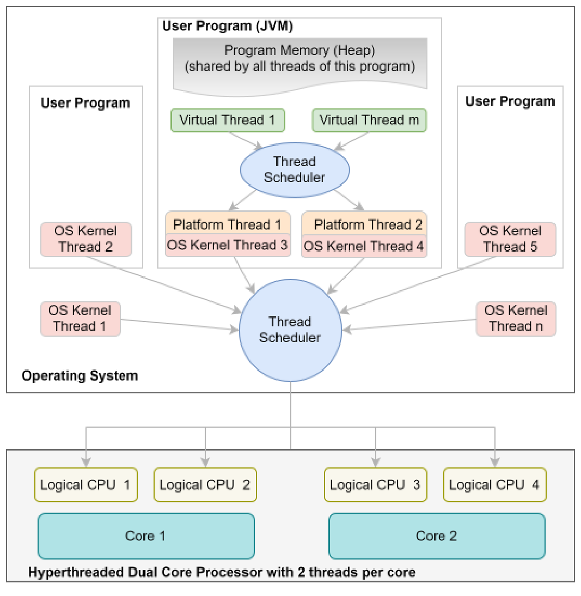
Dưới đây là một vài điểm đáng chú ý về sơ đồ trên:
Tại tầng trên cùng, có các tiến trình. Một tiến trình (process) là một chương trình, tức là một danh sách các
chỉ thị (instruction), đang được thực thi. Ví dụ, khi bạn nhấp vào một tệp thực thi (executable file), hệ điều hành (OS)
sẽ xác định điểm bắt đầu (entry point) của chương trình và lập lịch thực thi các chỉ thị từ
điểm đó. Hệ điều hành (OS) là cả thế giới đối với một tiến trình. Hệ điều hành (OS) cung cấp cho tiến trình
bất kỳ thứ gì nó cần bằng cách sử dụng các lời gọi hệ thống (system call). Nếu bạn không có nền tảng
về khoa học máy tính, bạn có thể hình dung một lời gọi hệ thống (system call) như một hàm do hệ điều hành (OS) cung cấp mà một tiến trình
có thể gọi để sử dụng các Resource (Tài nguyên) của phần cứng bên dưới. Ví dụ, nếu một tiến trình
muốn đọc một tệp, mở một socket mạng, hoặc muốn có thêm bộ nhớ, nó sẽ thực hiện một lời gọi hệ thống (system call).
Tương tự, tiến trình tự đăng ký với hệ điều hành (OS) để nhận các dữ liệu đầu vào như di chuyển chuột,
nhấn phím, và kết nối mạng, và hệ điều hành (OS) thực hiện các lời gọi đến tiến trình để
461
chuyển giao các đầu vào đó ngay khi chúng xảy ra. Điều quan trọng cần hiểu là các lệnh gọi hệ thống (system call) là đặc thù đối với từng hệ điều hành (OS), đó là lý do tại sao một chương trình được viết cho một hệ điều hành này không thể thực thi trên một hệ điều hành khác. Từ đó dẫn đến thuật ngữ “phụ thuộc nền tảng”.
Hệ điều hành cũng cung cấp cho một tiến trình quyền truy cập độc quyền vào một lượng RAM nhất định để tiến trình đó có thể lưu giữ trạng thái thực thi của mình. Tiến trình chịu trách nhiệm duy nhất trong việc quản lý bộ nhớ đã được cấp phát cho nó. Bộ nhớ này được gọi là bộ nhớ chương trình (program memory) và có thể truy cập được từ mọi phần của tiến trình. Hệ điều hành sẽ thu hồi lại bộ nhớ này khi tiến trình kết thúc. Một tiến trình không được phép truy cập bộ nhớ của tiến trình khác. Nếu cố tình làm vậy, hệ điều hành thường sẽ buộc dừng (kill) tiến trình đó.
Khi chúng ta khởi chạy một chương trình Java, thực chất chúng ta đang khởi chạy JVM, nhưng đối với hệ điều hành, đó cũng chỉ là một tiến trình bình thường khác.
Một hệ điều hành quản lý các tài nguyên phần cứng có sẵn trên máy vật lý và phân phối chúng cho nhiều tiến trình trên cơ sở chia sẻ thời gian (time sharing). Hệ điều hành đạt được điều này thông qua việc sử dụng các Thread (Luồng). Một Thread (Luồng) giống như một tác nhân với một danh sách các chỉ thị mà nó cần thực thi trên CPU bên dưới. Hệ điều hành tạo ra nhiều thread, một số dành cho mục đích sử dụng của riêng nó và một số khác để thực thi các chương trình của người dùng. Các thread này được gọi là kernel threads. Khi bạn khởi chạy một chương trình, hệ điều hành sẽ gán một tác nhân, tức là một kernel thread, để thực thi các chỉ thị có trong chương trình đó.
Vì một CPU chỉ có thể thực thi một chỉ thị tại một thời điểm, tất cả các thread không thể cùng thực thi các chỉ thị của chúng trên cùng một CPU tại cùng một thời điểm. Do đó, hệ điều hành sử dụng một bộ lập lịch luồng thread scheduler để quyết định thread nào sẽ có quyền truy cập CPU tại bất kỳ thời điểm nào. Bộ lập lịch luồng (thread scheduler) phân bổ thời gian CPU giữa các thread theo chính sách được triển khai bởi hệ điều hành. Khi định mức thời gian (quota) của một thread kết thúc, hệ điều hành sẽ hoán chuyển thread đó ra ngoài và đưa một thread khác vào. Sự hoán chuyển giữa các thread này được gọi là context switching (chuyển đổi ngữ cảnh). Về mặt khái niệm, việc này tương tự như những gì chúng ta làm khi đọc nhiều cuốn sách hoặc xem nhiều chương trình truyền hình ở các thời điểm khác nhau. Khi chuyển đổi giữa hai chương trình, chúng ta không quay lại Mùa 1 Tập 1 mỗi lần. Chúng ta nhớ mình đã dừng lại ở đâu vào lần trước và
462
chúng ta bắt đầu theo dõi từ vị trí đó. Tương tự, một Thread (Luồng) biết được vị trí của nó khi nhận được quyền truy cập vào CPU và nó bắt đầu thực thi các câu lệnh từ điểm đó.
Thread (Luồng) mà CPU đang thực thi tại một thời điểm được coi là ở trạng thái running (đang chạy), trong khi
Thread (Luồng) đã sẵn sàng chạy nhưng đang đợi đến lượt được coi là ở trạng thái ready (sẵn sàng). Bộ
lập lịch đủ thông minh để biết Thread (Luồng) nào đang đợi một Resource (Tài nguyên) cụ thể khả
dụng và đặt Thread (Luồng) đó vào trạng thái waiting (đang chờ) cho đến khi Resource (Tài nguyên) đó trở nên khả dụng.
Tất nhiên, nếu hệ thống bên dưới có nhiều CPU như trong hình trên, bộ
lập lịch có thể lập lịch cho nhiều Thread (Luồng) chạy cùng lúc trên các CPU khác nhau.
Khi đi sâu vào tiến trình JVM, hãy quan sát sự tương đồng giữa các thành phần của
toàn bộ hình vẽ và các thành phần bên trong JVM. Điều này không phải ngẫu nhiên mà là do thiết kế. Một
JVM trên thực tế mô phỏng một máy tính hoàn chỉnh bao gồm cả hệ điều hành. Vì vậy,
bất kỳ khái niệm nào tôi đã giải thích ở hai điểm trên đều áp dụng hoàn toàn tương tự cho một JVM.
Về mặt khái niệm, các thành phần của một JVM phục vụ cùng mục đích như các thành phần tương ứng trong
PC thực tế. Ví dụ, bộ nhớ chương trình của một JVM giống như RAM của
hệ thống. Các virtual threads (thread ảo) bên trong một JVM giống như các thread được tạo bởi hệ điều hành. Platform
threads (còn gọi là native threads) giống như các CPU logic của JVM. Bộ lập lịch thread của JVM
lập lịch cho các virtual threads chạy trên các platform threads tương tự như bộ lập lịch thread của hệ điều hành
lập lịch cho các thread của hệ điều hành chạy trên các CPU logic.
Vì vậy, khi bạn khởi chạy một JVM (sử dụng tệp java.exe trên Windows hoặc tệp thực thi java
trên Linux), về cơ bản bạn đang khởi động một máy ảo. Giống như hệ điều hành tạo ra
một user thread để khởi chạy một tiến trình, JVM cũng tạo ra một platform thread để thực thi
các câu lệnh có trong lớp main của bạn. Thread này được gọi là main thread.
Trước phiên bản Java 21, bất cứ khi nào JVM cần tạo một thread, nó đều yêu cầu hệ điều hành
tạo ra nó. Hệ điều hành sau đó sẽ tạo ra một thread và gán cho JVM. Như vậy, tất cả các thread trong
JVM thực chất chỉ là các lớp bọc (wrapper) bên ngoài các thread của hệ điều hành và chúng sẽ có cơ hội
thực thi khi và chỉ khi hệ điều hành lập lịch cho thread liên kết tương ứng thực thi. Các thread JVM như vậy
hiện nay được gọi chính thức là platform
463
Thread (Luồng). Cách tiếp cận này hoạt động tốt nhưng nó có một hạn chế nghiêm trọng. Mặc dù việc tạo một Thread (Luồng) mới bởi OS ít tốn kém hơn nhiều so với việc khởi chạy một tiến trình đầy đủ (nhân tiện, đó là lý do tại sao một Thread (Luồng) được gọi là tiến trình “hạng nhẹ”), nó vẫn đòi hỏi một lượng bộ nhớ đáng kể (cho không gian stack của Thread (Luồng)) cũng như các chu kỳ xung nhịp CPU. Do đó, các Thread (Luồng) của OS là một tài nguyên khan hiếm. Hơn nữa, vì OS là dùng chung cho tất cả các loại ứng dụng, nó phải đối xử bình đẳng với mọi ứng dụng, điều này về cơ bản có nghĩa là OS cố gắng phân bổ thời gian CPU cho tất cả các Thread (Luồng) một cách bình đẳng. Điều này có nghĩa là, việc tạo ra một số lượng lớn các Thread (Luồng) của OS sẽ khiến OS mất nhiều thời gian cho việc chuyển đổi ngữ cảnh (context switching), làm giảm hiệu suất tổng thể của hệ thống. Do đó, nếu một ứng dụng tạo một Thread (Luồng) mới cho mỗi tác vụ (còn gọi là mô hình lập trình thread-per-task), ứng dụng sẽ không hoạt động khi số lượng tác vụ đồng thời vượt quá vài nghìn. Nó sẽ đơn giản là hết bộ nhớ hệ thống sau khi tạo ra vài nghìn Thread (Luồng). Kinh nghiệm đã dạy các nhà thiết kế ngôn ngữ Java rằng hầu hết các chương trình đa luồng dành nhiều thời gian để đợi Vào/Ra (I/O), cho dù đó là các truy vấn cơ sở dữ liệu, tệp tin hay mạng. Mặc dù mô hình lập trình thread-per-task rất tuyệt vời để lập trình các ứng dụng như vậy, nhưng nó không khả thi khi mở rộng quy mô vì nó khiến máy tính hết bộ nhớ hệ thống từ lâu trước khi CPU đạt đến mức sử dụng tối đa. Vì lý do này, nhiều chương trình Java, đặc biệt là các chương trình máy chủ như Tomcat cần xử lý hàng triệu yêu cầu mỗi giây, tạo ra một pool chứa các Thread (Luồng) (thread pool) và tái sử dụng chúng để thực thi các tác vụ thay vì tạo một Thread (Luồng) mới cho mỗi yêu cầu. Chiến lược tạo pool cho Thread (Luồng) (thread pooling) được sử dụng phổ biến trong các ứng dụng Java đến mức JDK cũng cung cấp các thread pool sẵn có để thực thi các tác vụ do người dùng xác định nhằm quản lý chi phí tạo các Thread (Luồng) mới.
Với Java 21, một chương trình Java giờ đây có thể tạo virtual Thread (Thread ảo). Những Thread (Luồng) này là ảo vì OS không hề biết về sự tồn tại của chúng. Chúng được tạo và quản lý hoàn toàn bởi JVM. Khác với platform Thread (Thread nền tảng), việc tạo virtual Thread (Thread ảo) không yêu cầu phân bổ các Thread (Luồng) của OS và do đó, chúng không tốn nhiều bộ nhớ hay chu kỳ CPU để khởi tạo. Một virtual Thread (Thread ảo) cũng có thể được dọn dẹp bởi Bộ thu dọn rác (Garbage Collection) ngay khi nó nằm ngoài phạm vi hoạt động (out of scope) mà không yêu cầu bất kỳ sự dọn dẹp nào từ phía OS. Do đó, một virtual Thread (Thread ảo) là một phiên bản nhẹ hơn nhiều của một platform Thread (Thread nền tảng). Giống như việc một platform Thread (Thread nền tảng) thực thi trên một CPU logic mỗi khi nó được lập lịch để thực thi bởi bộ lập lịch Thread (Luồng) của OS, một virtual Thread (Thread ảo) thực thi trên
464
trên một platform thread bất cứ khi nào nó được lập lịch để thực thi bởi bộ lập lịch thread của JVM. Platform thread mà một virtual thread thực thi trên đó được gọi là carrier thread. Lợi ích của phương pháp này là một chương trình Java có thể tạo ra một số lượng khổng lồ (lên đến hàng triệu) các virtual thread với chi phí rất rẻ. Bộ lập lịch thread của JVM chỉ lập lịch cho một virtual thread thực thi trên một OS thread khi virtual thread đó sẵn sàng chạy. Vì virtual thread không bị gắn kết vĩnh viễn với một OS thread, nó không chặn OS thread khi đang đợi I/O. Điều này có nghĩa là, cùng một OS thread đó giờ đây có thể được sử dụng để thực thi một virtual thread khác không phải chờ đợi điều gì. Do đó, phương pháp này mang lại cho các lập trình viên tất cả các lợi ích của mô hình lập trình thread-per-task trong khi đạt được hiệu suất sử dụng CPU tối ưu và khả năng mở rộng khi triển khai.
20.1.2 Thực thi các tác vụ đồng thời☝
Trong Java, một tác vụ được đại diện bởi một instance của interface java.lang.Runnable . Interface này chỉ có duy nhất một method tên là run. Nó không nhận vào bất kỳ đối số nào và trả về void . Khi bạn đã đóng gói logic của mình vào một Runnable , nó đã sẵn sàng để được thực thi bởi một thread, vốn được đại diện bởi class java.lang.Thread . Vì vậy, cách điển hình để thực thi một hoặc nhiều tác vụ đồng thời trong Java là tạo một Runnable , truyền Runnable này khi tạo một đối tượng Thread , và sau đó “khởi chạy” (start) Thread đó. Bên dưới hệ thống, JVM sẽ tạo ra một platform thread mới để thực thi code trong method run của Runnable đó. Dưới đây là một ví dụ:
import java.math.BigInteger;
class Factorial implements Runnable{
int n;
BigInteger result;
Factorial(int n){
this.n = n;
}
public void run(){
BigInteger start = BigInteger.ONE;
465
for(int i=1; i<n;i++) start = start.multiply(BigInteger.valueOf(i));
result = start; //assign start to result once calculation is complete
System.out.println("Factorial "+n+" computed.");
}
}
public class TestClass {
public static void main(String[] args) {
Factorial f = new Factorial(100000); //create a task
Thread t = new Thread( f ); //create a new thread with the task
t.start(); //kick off the execution of the new thread concurrently with the current thread
System.out.println("All Done.");
}
}
Phương thức run của lớp (Class) Factorial triển khai logic để tính giai thừa của một số. Đừng lo lắng về việc sử dụng lớp (Class) BigInteger . Tôi chỉ sử dụng nó vì giá trị giai thừa của chúng ta sẽ rất lớn nhưng nó không có trong kỳ thi. Mục tiêu của chúng ta là thực thi logic này đồng thời với logic trong phương thức main. Nếu bạn chạy chương trình trên, rất có thể bạn sẽ nhận được kết quả đầu ra sau:
All Done.
Factorial 100000 computed.
Cho đến khi chúng ta gọi t.start(), chỉ có một thread (luồng) đang thực thi, tức là thread (luồng) chính. Lời gọi đến t.start() khởi chạy một thread (luồng) mới đồng thời với thread (luồng) chính. Từ góc độ của chúng ta, cả hai thread (luồng) thực thi độc lập với nhau từ thời điểm này trở đi. Bên dưới hệ thống, hệ điều hành (OS) sẽ cho cả hai thread (luồng) thực thi khi có CPU sẵn sàng để thực hiện các chỉ thị của chúng. Nếu hệ thống bên dưới có nhiều bộ xử lý, hệ điều hành (OS) có thể lên lịch thực thi hai thread (luồng) trên hai
466
các CPU khác nhau cùng một lúc và do đó, chúng sẽ được thực thi song song. Nếu không, OS
sẽ chia sẻ CPU với cả hai thread trên cơ sở chia sẻ thời gian (time sharing).
Tại thời điểm viết code, chúng ta không thể chắc chắn khi nào và trong bao lâu một thread thực sự
sẽ được chạy, đó là lý do tại sao tôi nói rằng kết quả đầu ra ở trên có khả năng xảy ra cao nhất. Vì việc tính giai thừa của 100000
mất nhiều thời gian hơn (khoảng 5 giây trên máy của tôi) so với câu lệnh in (print statement) trong phương thức main
(chỉ mất tối đa vài mili giây), rất có thể main thread sẽ hoàn thành việc thực thi
trước khi thread tính giai thừa kết thúc. Nhưng điều quan trọng là chúng ta
không thể giả định trình tự thực thi này khi viết code. Hoàn toàn có khả năng là tại
run time, OS sẽ phân bổ 10 giây thời gian CPU cho thread tính giai thừa trước và 10 giây cho
main thread tiếp theo. Trong trường hợp đó, kết quả đầu ra của hai câu lệnh in sẽ bị đảo ngược. Bạn
cần hiểu và nhớ điểm này thật rõ ràng vì đây là một trong hai nguyên nhân
chính gây ra bug trong các chương trình đa luồng (multithreaded). Bạn đơn giản là không thể xây dựng logic của chương trình dựa trên
thời gian thực thi (timing) của các thread. OS có thể lập lịch (schedule) cho bất kỳ thread nào chạy vào bất kỳ lúc nào.
Cuối cùng, khi chạy chương trình trên, bạn sẽ nhận thấy rằng chương trình không kết thúc
ngay cả khi đã đi đến cuối phương thức main. Bạn sẽ thấy con trỏ nhấp nháy một lúc
sau khi câu lệnh in trong phương thức main được thực thi. Nó chỉ kết thúc sau khi câu lệnh
in từ phương thức run được thực thi. Đó là vì một chương trình Java không chỉ được cấu thành từ
mỗi main thread. Một chương trình Java bao gồm tất cả các thread mà chúng ta đã khởi chạy bao gồm cả
main thread cũng như các thread mà JVM khởi chạy cho mục đích dọn dẹp hệ thống (chẳng hạn như
cho bộ thu dọn rác (Garbage Collection)) được gọi là daemon threads. Chương trình không kết thúc cho đến khi tất cả các
non-daemon threads hoàn thành việc thực thi của chúng. Sự khác biệt giữa daemon và non-daemon
threads là rất quan trọng vì các daemon threads chỉ tồn tại để hỗ trợ các non-daemon threads. Nếu
không có non-daemon threads nào đang chạy trong JVM, thì không cần thiết phải giữ cho các daemon
threads tiếp tục chạy. Ví dụ, nếu không có logic nghiệp vụ (business logic) nào cần thực thi, tại sao một chương trình
lại tiếp tục thực hiện bộ thu dọn rác (Garbage Collection)?
Ví dụ trên không quá thú vị vì thời gian chương trình hoàn thành cũng giống
như thời gian của một chương trình tính giai thừa mà không sử dụng thread. So, hãy để tôi
sửa đổi chương trình trên để chỉ ra cho bạn lợi thế của lập trình đồng thời (concurrent)
467
thực thi của các Thread (Luồng).
public static void main(String[] args) throws InterruptedException{
long start = System.currentTimeMillis();
Factorial f1 = new Factorial(150000);
Thread t1 = new Thread( f1 );
t1.start();
Factorial f2 = new Factorial(150000);
Thread t2 = new Thread( f2 );
t2.start();
t1.join();
t2.join();
long end = System.currentTimeMillis();
System.out.println("All Done. Time taken (secs):"+ (end-start)/1000);
}
Kết quả đầu ra của chương trình trên trên máy của tôi là:
Factorial 150000 computed.
Factorial 150000 computed.
All Done. Total time taken (secs):7
Chương trình trên tính toán hai giai thừa một cách đồng thời. Sau khi khởi chạy hai Thread (Luồng), tôi gọi phương thức join trên t1 và t2. Phương thức join làm cho Thread (Luồng) đang gọi (tức là Thread (Luồng) main trong ví dụ này) tạm dừng cho đến khi Thread (Luồng) mà join() được gọi trên đó kết thúc. Điều này đảm bảo rằng câu lệnh in trong main chỉ thực thi sau khi hai Thread (Luồng) kết thúc. Phương thức join có khả năng ném ra một ngoại lệ InterruptionException, đây là một ngoại lệ checked (Checked Exception). Vì vậy, tôi đã khai báo nó trong mệnh đề throws.
Vì tôi đang chạy chương trình trên một hệ thống đa nhân (multi-core), hai Thread (Luồng) sẽ được chạy trên hai nhân.
468
song song. Đó là lý do tại sao chương trình hoàn thành hai phép tính trong thời gian ít hơn so với thời gian cần thiết để hoàn thành chúng một cách tuần tự. Nó mất nhiều thời gian hơn một chút so với thời gian cần thiết cho một phép tính, nhưng đó là do hệ điều hành (OS) mất một khoảng thời gian để tạo và chuyển đổi ngữ cảnh (context-switch) giữa các Thread (Luồng).
Bạn có thể sửa đổi chương trình trên để tính toán nhiều giai thừa đồng thời hơn và quan sát thấy rằng thời gian chạy của chương trình không tăng lên nhiều cho đến khi bạn tạo ra nhiều Thread (Luồng) hơn số lượng nhân (core) trên hệ thống của bạn, bởi vì hệ điều hành (OS) có thể thực thi song song mỗi Thread (Luồng) trên các nhân khác nhau.
Sử dụng biểu thức Lambda (Lambda expression) để tạo task☝
Vì Runnable có đúng một phương thức trừu tượng (abstract method), nó là một Functional Interface và do đó, người ta thường sử dụng các biểu thức Lambda (Lambda expression) để tạo ra các Runnable cho các task đơn giản không yêu cầu duy trì bất kỳ trạng thái nào. Ví dụ:
public static void main(String[] args){
new Thread( ()-> System.out.println(Thread.currentThread().getName())
).start();
System.out.println(Thread.currentThread().getName());
}
Như tôi đã đề cập trước đó, việc Thread (Luồng) nào được thực thi các câu lệnh của nó trước không thể được xác định trước, vì vậy, sau đây là một kết quả đầu ra có thể xảy ra:
main
Thread-0
Kế thừa Thread để tạo task☝
Lớp (Class) Thread triển khai (implements) Runnable và do đó, ta có thể kế thừa Lớp (Class) Thread và ghi đè (override) phương thức run của nó để triển khai logic của bạn trong đó. Ví dụ:
469
public static void main(String[] args) {
Thread t = new Thread(){ //creating an anonymous class that
extends Thread
public void run(){
System.out.println(Thread.currentThread().getName());
}
};
t.start();
}
Việc kế thừa Thread giúp loại bỏ nhu cầu tạo một đối tượng Runnable riêng biệt và có vẻ thuận tiện. Tuy nhiên, dưới góc độ thiết kế, đây là một cách tiếp cận tồi vì một Thread không đại diện cho một tác vụ. Một Thread chỉ là một phương tiện để thực thi một tác vụ. Vì lý do này, cách tiếp cận này không được khuyến nghị.
Phương thức start() so với run() của Thread☝
Một hệ quả đáng tiếc của việc lớp Thread triển khai interface Runnable là chúng ta có thể gọi run trên một đối tượng Thread. Tuy nhiên, việc gọi run trên một đối tượng Thread hoạt động giống hệt như bất kỳ cuộc gọi phương thức thông thường nào khác, nghĩa là mã nguồn trong phương thức run sẽ thực thi trên cùng một Thread (Luồng) gọi nó (thay vì khởi chạy một Thread (Luồng) mới).
Hãy nhớ rằng để bắt đầu thực thi đồng thời một Thread (Luồng) mới, bạn cần gọi phương thức start trên đối tượng Thread.
Ví dụ: đoạn mã dưới đây sẽ in ra main vì phương thức run được thực thi trên Thread (Luồng) chính chứ không phải trên một Thread (Luồng) riêng biệt:
public static void main(String[] args) {
Thread t = new Thread(){
public void run(){
470
System.out.println(Thread.currentThread().getName());
}
};
t.run(); //should call start() here
}
Sử dụng Thread.Builder để tạo Thread (Luồng)☝
Cách tạo các Thread (Luồng) được thảo luận ở trên là cách tạo Thread (Luồng) trước Java 21. Nó vẫn còn hiệu lực ngay cả bây giờ trong Java 21 và hoạt động tương tự như trước. Nhưng nó chỉ nhằm mục đích tạo các platform thread. Giờ đây khi Java 21 đã giới thiệu các virtual thread, một Interface (Giao diện) Thread.Builder mới đã được định nghĩa trong thư viện chuẩn Java để tạo các platform thread cũng như virtual thread. Lớp (Class) Thread cũng đã được nâng cấp để bao gồm hai method static mới có tên là ofPlatform và ofVirtual trả về các đối tượng Thread.Builder để lần lượt tạo các platform thread và virtual thread. Dưới đây là cách API mới được sử dụng:
public static void main(String[] args) {
Factorial f = new Factorial(100000); //create a task
Thread.Builder tb = Thread.ofPlatform(); //create a builder for
creating platform threads
Thread t = tb.unstarted(f); //create a new platform thread with the
task
t.start(); //start the thread
System.out.println("All Done. Result: "+f.result);
}
Tôi đã sử dụng ba dòng code ở trên để khởi chạy một platform thread chỉ nhằm hiển thị kiểu trả về của các method này, nhưng thông thường, điều này được thực hiện chỉ bằng một dòng code:
Thread.ofPlatform().start(f); //the start method creates as well as starts the thread
471
Bạn nên đọc qua phần mô tả JavaDoc của Thread.Builder nhưng bốn phương thức sau đây của nó được sử dụng thường xuyên hơn những phương thức khác:
Thread.Builder name(String name) : Thiết lập tên cho Thread (Luồng).
Thread.Builder name(String prefix, long start) : Thiết lập tên Thread (Luồng) bằng cách ghép chuỗi tiền tố (prefix) với dạng biểu diễn chuỗi của một giá trị bộ đếm. Phương thức này hữu ích khi đối tượng Thread.Builder được dùng để tạo nhiều Thread (Luồng), mỗi Thread (Luồng) có một tên khác nhau.
Thread start(Runnable task) : Tạo một Thread (Luồng) mới từ trạng thái hiện tại của builder và lập lịch để nó thực thi.
Thread unstarted(Runnable task) : Tạo một Thread (Luồng) mới từ trạng thái hiện tại của builder để chạy tác vụ đã cho.
Daemon Threads (Luồng Daemon)☝
Khi chạy chương trình trên, bạn sẽ nhận thấy rằng chương trình không kết thúc ngay cả khi đã đi đến cuối phương thức main. Bạn sẽ thấy con trỏ nhấp nháy một lúc sau khi câu lệnh in trong phương thức main được thực thi. Chương trình chỉ kết thúc sau khi câu lệnh in trong phương thức run của lớp Factorial được thực thi. Đó là vì một chương trình Java không chỉ bao gồm riêng Thread (Luồng) main. Một chương trình Java được cấu thành từ tất cả các Thread (Luồng) được khởi chạy rõ ràng bởi mã nguồn của chúng ta, cũng như các Thread (Luồng) do JVM tự khởi chạy như Thread (Luồng) main. Do đó, một chương trình không thể kết thúc cho đến khi tất cả các Thread (Luồng) đang chạy kết thúc. Tuy nhiên, có một ngoại lệ.
Một số Thread (Luồng) mà JVM khởi chạy chỉ nhằm mục đích “quản lý nội bộ” (housekeeping) và chúng không thực thi bất kỳ logic nào liên quan đến người dùng (được gọi là “logic nghiệp vụ” hay “business logic”). Những Thread (Luồng) chỉ tồn tại để đóng vai trò hỗ trợ trong chương trình như vậy được gọi là daemon threads (luồng daemon). Ví dụ, khi bạn khởi chạy một chương trình Java, JVM cũng tự động khởi chạy một Thread (Luồng) dành cho Bộ thu dọn rác (Garbage Collection). Ở đây, việc thu dọn rác chỉ cần thiết nếu chương trình đang thực thi một số logic nghiệp vụ (business logic) nào đó. Sẽ không có ý nghĩa gì nếu tiếp tục duy trì Thread (Luồng) này hoạt động khi không còn logic nghiệp vụ (business logic) nào để thực thi. Vì lý do này, JVM sẽ tự động kết thúc tất cả các daemon thread (luồng daemon) sau khi tất cả các Thread (Luồng) không phải daemon (non-daemon threads) kết thúc. Do đó, một chương trình Java sẽ kết thúc khi tất cả các Thread (Luồng) không phải daemon (non-daemon threads) kết thúc.
472
Theo mặc định, tất cả các platform thread đều là non-daemon thread, nhưng bất kỳ thread (luồng) nào cũng có thể được đánh dấu là một daemon thread trước khi thread đó được bắt đầu, bằng cách gọi setDaemon(true) trên thread đó.
Điều này có nghĩa là bạn cũng có thể sử dụng các daemon thread để thực thi logic nghiệp vụ mà bạn chỉ muốn chạy nếu các phần khác của chương trình đang hoạt động. Ví dụ: bạn có thể muốn tạo một thread lặp lại mỗi 30 phút và xóa tất cả các mục nhập (entry) trong bộ nhớ đệm (cache) không được sử dụng trong vòng 30 phút qua. Bạn có thể đánh dấu thread này là một daemon thread vì bạn sẽ không muốn thread này ngăn chương trình kết thúc nếu không còn hoạt động nào khác đang chạy.
Lớp Thread cũng có một phương thức isDaemon() cho phép bạn kiểm tra xem một thread có phải là daemon thread hay không. Nó trả về một giá trị boolean.
Tạo Virtual Thread☝
Các virtual thread được đại diện bởi lớp java.lang.VirtualThread, vốn là một lớp con (subclass) của java.lang.Thread. Tuy nhiên, không giống như Thread, VirtualThread không phải là public. Do đó, chưa nói đến việc khởi tạo một đối tượng (object) VirtualThread, bạn thậm chí không thể tham chiếu đến lớp này trong mã nguồn của mình.
Điều này được thực hiện có chủ ý vì việc sử dụng các virtual thread được coi là minh bạch (transparent) sau khi chúng được tạo ra. Các virtual thread chính là các thread và chúng hỗ trợ cùng một API như các platform thread.
Vì vậy, bạn phải sử dụng các phương thức start / unstarted của Thread.Builder hoặc phương thức startVirtualThread(Runnable r) của Thread để tạo một virtual thread:
public static void main(String[] args) {
Factorial f = new Factorial(100000); //create a task
Thread t = Thread.ofVirtual().start(f);
//Thread t = Thread.startVirtualThread(f); //this is equivalent
to the above line
t.join(); //call to join is important
System.out.println("All Done. Result: "+f.result);
}
473
Một thực tế quan trọng về virtual thread (luồng ảo) là kể từ Java 21, một virtual thread luôn là một daemon
thread. Việc gọi setDaemon(false) trên một virtual thread sẽ ném ra một
java.lang.IllegalArgumentException. Tại sao? Câu hỏi hay đấy. Mặc dù tôi không tìm thấy lý do được
tài liệu hóa chính thức cho việc này, tôi có đọc được các bình luận từ những nhà thiết kế ngôn ngữ Java rằng
vì các virtual thread được dùng để thực thi các tác vụ nghiệp vụ ngắn hạn vốn có thể được thu dọn bởi bộ thu dọn rác (Garbage Collection) giống như bất kỳ
đối tượng (Object) nào khác, chúng nên là daemon thread. Hơn nữa, nếu tìm thấy một lý do chính đáng để biến chúng thành
non-daemon, hạn chế này có thể được gỡ bỏ trong tương lai. Cá nhân tôi thấy hạn chế này không hợp lý. Nếu một
virtual thread đang thực thi một tác vụ nghiệp vụ, bất kể thời gian chạy ngắn ngủi thế nào, nó cũng phải được trao cơ hội
để hoàn thành tác vụ đó thay vì bị chấm dứt đột ngột vì điều đó có thể làm cho trạng thái nghiệp vụ không nhất quán.
Được rồi, vậy thì, vì một virtual thread luôn là một daemon thread, nên rất dễ hiểu tại sao việc gọi
t.join() là bắt buộc trong đoạn mã trên. Nếu không có cuộc gọi này, thread (luồng) main sẽ kết thúc sau khi
câu lệnh in được thực thi. Một khi thread main đã kết thúc, sẽ không còn thread non-daemon nào trong chương trình đã cho.
Vì các daemon thread không thể ngăn chương trình kết thúc, chương trình trên sẽ kết thúc trong khi thread tính giai thừa
vẫn đang chạy. Do đó, câu lệnh in từ thread tính giai thừa rất có thể sẽ không được thực thi. Việc gọi join
khiến thread main phải đợi thread tính giai thừa kết thúc.
20.1.3 Thread API☝
Dưới đây, tôi liệt kê một vài phương thức của lớp (Class) Thread thường được sử dụng trong thực tế hoặc
quan trọng đối với kỳ thi. Bạn đã thấy một số phương thức này trong các ví dụ trên. Bạn sẽ thấy
cách sử dụng các phương thức khác trong phần còn lại của chương.
Các phương thức Static của java.lang.Thread
Thread currentThread() - Trả về đối tượng (Object) Thread cho thread hiện tại. Phương thức này
rất hữu ích khi bạn muốn in ra id hoặc tên của
474
thread (luồng) hiện đang thực thi đoạn mã đó.
boolean interrupted() - Kiểm tra xem thread (luồng) hiện tại có bị ngắt (interrupted) hay không. Phương thức này xóa trạng thái bị ngắt của thread (luồng) hiện tại.
void sleep(long milliseconds) - Khiến thread (luồng) hiện đang thực thi tạm dừng hoạt động (tạm thời ngừng thực thi) trong số mili giây được chỉ định. Ném ra InterruptedException. Có thêm hai phương thức sleep nạp chồng (overloaded) thực hiện cùng một chức năng: sleep(long millis, int nanos) và sleep(Duration duration). Phương thức này không giải phóng các khóa (lock) đã được chiếm giữ bởi thread (luồng) hiện tại.
Thread.Builder.OfPlatform ofPlatform() - Trả về một builder để tạo ra platform Thread (thread nền tảng) hoặc ThreadFactory tạo ra các platform thread (thread nền tảng).
Thread.Builder.OfVirtual ofVirtual() - Trả về một builder để tạo ra virtual Thread (thread ảo) hoặc ThreadFactory tạo ra các virtual thread (thread ảo).
Thread startVirtualThread(Runnable task) - Tạo một virtual thread (thread ảo) để thực thi một tác vụ (task) và lập lịch cho nó thực thi.
Các phương thức instance (thể hiện) của java.lang.Thread
long threadId() - Trả về mã định danh (identifier) của Thread (luồng) này. Thread ID là một số kiểu long dương được tạo ra khi thread (luồng) này được khởi tạo. Thread ID là duy nhất và không thay đổi trong suốt vòng đời của nó.
String getName()/void setName(String name) - Trả về/thiết lập tên của thread (luồng) này.
boolean isDaemon()/void setDaemon(boolean on) - Kiểm tra xem thread (luồng) này có phải là daemon thread (thread chạy ngầm) hay không. / Đánh dấu thread (luồng) này là daemon thread hoặc non-daemon thread. Hãy nhớ rằng các virtual thread (thread ảo) luôn luôn là daemon thread kể từ Java 21.
boolean isVirtual() - Trả về true nếu thread (luồng) này là một virtual thread (thread ảo).
void start() - Lập lịch cho thread (luồng) này bắt đầu thực thi.
void run() - Phương thức này được thực thi bởi thread (luồng) khi nó chạy.
void join() - Chờ thread (luồng) này kết thúc. Ném ra InterruptedException.
void join(long millis) - Chờ tối đa millis mili giây cho thread (luồng) này
475
để kết thúc. Ném ra InterruptedException. Có thêm hai phương thức join quá tải hoạt động tương tự: join(long millis, int nanos) và join(Duration duration).
void interrupt() - Ngắt thread này. Nếu thread này bị chặn trong khi gọi một trong các phương thức wait, join, hoặc sleep, trạng thái ngắt của nó sẽ bị xóa và nó sẽ nhận được ngoại lệ InterruptedException. Ngược lại, trạng thái ngắt của thread sẽ được thiết lập. Nghĩa là, việc gọi isInterrupted() trên thread này sẽ trả về true. Phương thức này được sử dụng để điều phối việc thực thi của hai thread.
Thread.State getState() - Trả về trạng thái của thread này.
boolean isAlive() - Kiểm tra xem thread này còn sống hay không.
boolean isInterrupted() - Kiểm tra xem thread này đã bị ngắt hay chưa. Nó không xóa trạng thái bị ngắt của thread này.
Lưu ý rằng các phương thức sleep và join có thể ném ra java.lang.InterruptedException, đây là một ngoại lệ checked (Checked Exception).
Các trạng thái của thread☝
Trạng thái của một thread cho chúng ta biết những gì hiện đang diễn ra với thread đó và chúng ta có thể mong đợi điều gì tiếp theo từ nó. Các trạng thái này được đại diện bởi sáu hằng số được định nghĩa trong một enum có tên là java.lang.Thread.State và được áp dụng cho cả platform thread cũng như virtual thread. Chúng cụ thể như sau:
NEW - Một thread chưa bắt đầu sẽ ở trạng thái này. Nó sẽ không làm gì cả cho đến khi phương thức start của nó được gọi.
RUNNABLE - Một thread trở thành runnable khi phương thức start của nó được gọi. Điều này có nghĩa là, hiện tại không có gì có thể cản trở thread thực thi phương thức run của tác vụ ngoại trừ sự sẵn có của thời gian CPU.
TERMINATED - Một thread đã thoát sẽ ở trạng thái này. Điều này xảy ra khi một thread đã hoàn thành việc thực thi phương thức run của tác vụ của nó. Một khi thread đã kết thúc (terminated), nó không thể được khởi động lại.
BLOCKED - Một thread bị chặn để chờ khóa monitor (monitor lock) sẽ ở trạng thái này. Nó
476
trở lại trạng thái RUNNABLE khi nó lấy được lock (khóa) mà nó đang cố gắng lấy.
WAITING - Một Thread (Luồng) đang đợi vô thời hạn một Thread (Luồng) khác thực hiện một hành động cụ thể sẽ ở trạng thái này. Thông thường, nó đi vào trạng thái này khi gọi wait() trên một Đối tượng (Object) hoặc join() trên một Thread (Luồng) runnable khác. Nó trở lại trạng thái RUNNABLE khi Thread (Luồng) kia thực hiện hành động cụ thể đó. Hành động đó thông thường là một cuộc gọi đến notify() hoặc notifyAll() trên cùng một Đối tượng (Object) hoặc khi Thread (Luồng) đó kết thúc.
TIMED_WAITING - Một Thread (Luồng) đang đợi một Thread (Luồng) khác thực hiện một hành động trong một khoảng thời gian chờ được chỉ định tối đa sẽ ở trạng thái này. Thông thường, nó đi vào trạng thái này khi gọi wait với một đối số timeout trên một Đối tượng (Object) hoặc join với một đối số timeout trên một Thread (Luồng) runnable khác. Nó trở lại trạng thái RUNNABLE khi Thread (Luồng) kia thực hiện hành động cụ thể đó hoặc khi thời gian chờ kết thúc. Một Thread (Luồng) cũng có thể tự đưa mình vào trạng thái này bằng cách gọi một trong các phương thức sleep nạp chồng (overloaded).
Sơ đồ dưới đây minh họa cách một Thread (Luồng) chuyển đổi giữa các trạng thái này.
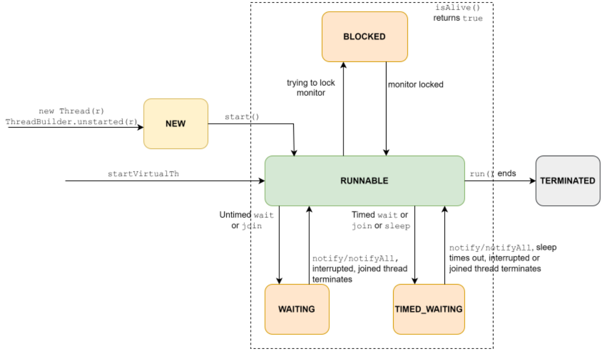
Khi một Thread (Luồng) ở trạng thái BLOCKED, WAITING, và TIME_WAITING, bộ lập lịch (scheduler) sẽ không lập lịch để nó chạy, điều này có nghĩa là một Thread (Luồng) không tiêu thụ chu kỳ CPU khi nó ở một trong các trạng thái này. Như bạn sẽ sớm được học, một Thread (Luồng) chuyển sang các trạng thái này
477
trong khi cố gắng giành quyền truy cập độc quyền vào các biến dùng chung hoặc trong khi phối hợp thực thi với
một hoặc nhiều Thread (Luồng), nhưng điểm quan trọng cần lưu ý là một Thread (Luồng) có thể chuyển qua lại
giữa các trạng thái RUNNABLE và BLOCKED, RUNNABLE và WAITING, hoặc RUNNABLE và
TIMED_WAITING nhiều lần trong suốt quá trình thực thi của nó tùy thuộc vào logic nghiệp vụ
của tác vụ đó. Phương thức isAlive của Thread (Luồng) chỉ trả về true khi nó ở một trong bốn
trạng thái này.
Sự khác biệt giữa các trạng thái BLOCKED và WAITING/TIMED_WAITING☝
Một Thread (Luồng) không thể được lên lịch để thực thi khi nó ở bất kỳ trạng thái nào trong các trạng thái BLOCKED, WAITING, và
TIMED_WAITING. Theo nghĩa đó, các trạng thái này tương tự nhau và được gọi là “các trạng thái chặn”.
Nhưng có một sự khác biệt cơ bản giữa các trạng thái BLOCKED và WAITING/TIMED_WAITING.
Một Thread (Luồng) ở trạng thái BLOCKED sẽ trở thành RUNNABLE và tự động bắt đầu cạnh tranh lại khóa
khi khóa mà nó đang cố gắng giành lấy trở nên sẵn sàng. Trong khi đó, một
Thread (Luồng) ở trạng thái WAITING/TIMED_WAITING chỉ đơn giản là đang chờ thông báo từ một
Thread (Luồng) khác hoặc chờ hết thời gian (timeout). Nó sẽ trở thành RUNNABLE khi các sự kiện này xảy ra. Sự khác biệt này đóng một
vai trò quan trọng trong quá trình phối hợp các Thread (Luồng).
Tuy nhiên, nhìn chung, logic chương trình không nên phụ thuộc vào việc biết chính xác một Thread (Luồng) đang ở trạng thái nào
trong các trạng thái chặn vì các chuyển đổi trạng thái này phụ thuộc rất nhiều vào cách triển khai cụ thể.
Việc biết trạng thái chính xác của một Thread (Luồng) chỉ hữu ích cho mục đích gỡ lỗi.
Độ ưu tiên của Thread (Luồng)☝
Một platform thread có một độ ưu tiên, có thể nằm trong khoảng từ Thread.MIN_PRIORITY
và Thread.MAX_PRIORITY và có thể được quản lý bằng cách sử dụng
478
Các phương thức int getPriority() và void setPriority(int p) . Độ ưu tiên của Thread (Luồng) chỉ là một thông tin bổ sung mà bộ điều phối tác vụ của hệ điều hành có thể sử dụng để tối ưu hóa việc điều phối các Thread (Luồng), nhưng không có gì đảm bảo rằng hệ điều hành sẽ thực sự sử dụng nó và do đó, các chương trình phụ thuộc vào nó để phối hợp các Thread (Luồng) có thể không phải lúc nào cũng hoạt động như mong đợi.
Các Thread (Luồng) ảo luôn có cùng độ ưu tiên và độ ưu tiên này được đặt thành Thread.NORM_PRIORITY . Lời gọi thay đổi độ ưu tiên của nó sẽ bị bỏ qua.
20.1.4 Trắc nghiệm☝
Q. Kết quả đầu ra nào có thể được mong đợi từ đoạn mã sau?
public class ThreadStates {
public static void main(String[] args) throws InterruptedException{
Runnable r = ()->{
Thread t = Thread.currentThread();
try{
Thread.sleep(5000);
}catch(InterruptedException e){
System.out.println("1: "+t.getState());
}
};
Thread t
= Thread.ofPlatform().start(r);
t.interrupt();
System.out.println("2: "+t.getState());
}
}
Chọn 3 phương án đúng.
479
A.
2: RUNNABLE
1: RUNNABLE
B.
2: TIMED_WAITING
1: RUNNABLE
C.
2: RUNNABLE
1: INTERRUPTED
D.
2: BLOCKED
1: RUNNABLE
E.
2: RUNNABLE
Đáp án đúng là: A, B, và E.
Xem xét hai khả năng sau đây:
Khả năng 1: Thread main (luồng chính) khởi chạy thread (luồng) mới t và thực thi t.interrupt() sau khi thread (luồng) mới thực thi Thread.sleep(5000) . Vì trong trường hợp này, thread (luồng) t đang ngủ khi bị ngắt, nó sẽ chuyển sang trạng thái RUNNABLE và nhận một InterruptedException , ngoại lệ này sẽ được bắt bởi khối catch. Do đó, câu lệnh in trong khối catch sẽ in ra 1: RUNNABLE . Vì câu lệnh in trong thread main (luồng chính) có thể thực thi trước hoặc sau khi thread (luồng) t chuyển sang trạng thái RUNNABLE , nó có thể in ra 2: TIMED_WAITING hoặc 2: RUNNABLE . Vì vậy, các tùy chọn A và B là chính xác. Lưu ý rằng câu lệnh in trong khối catch và câu lệnh in trong phương thức main có thể được thực thi theo bất kỳ thứ tự nào tùy thuộc vào thread (luồng) nào được chạy trước. Trên thực tế, nếu thread (luồng) t thực thi khối catch trước khi thread main (luồng chính) thực thi câu lệnh in,
480
main thread (thread chính) thậm chí có thể nhận thấy rằng thread (luồng) t đã hoàn thành việc thực thi và do đó, nó cũng có thể in ra
2: TERMINATED .
Khả năng 2: main thread (thread chính) khởi chạy thread (luồng) mới t và thực thi t.interrupt() trước khi thread mới có cơ hội thực thi Thread.sleep(5000) . Vì trong trường hợp này, thread t không ngủ khi bị ngắt (interrupted), chỉ có trạng thái bị ngắt của nó được thiết lập thành true và nó sẽ không nhận bất kỳ Exception (ngoại lệ) nào. Do đó, mệnh đề catch sẽ không được thực thi. Câu lệnh in trong main thread (thread chính) có thể được thực thi trước hoặc sau khi thread t thực thi t.sleep(5000) . Vì vậy, nó có thể in ra 2: RUNNABLE hoặc 2: TIMED_WAITING . Do đó, phương án E là đúng.
Lưu ý rằng không có trạng thái nào tên là INTERRUPTED. Do đó, phương án C không đúng. Một thread (luồng) đang ngủ sẽ ở trạng thái TIMED_WAITING chứ không phải trạng thái BLOCKED . Do đó, phương án D cũng không đúng.
20.2 Chia sẻ bộ nhớ với nhiều thread (luồng)☝
Các chương trình ví dụ mà tôi đã trình bày ở phần trước tạo ra các thread (luồng) hoạt động độc lập với nhau. Nghĩa là, chúng thực hiện công việc của mình mà không quan tâm các thread khác đang làm gì. Chúng không phụ thuộc vào thread khác để lấy dữ liệu và cũng không tạo ra bất kỳ dữ liệu nào mà thread khác yêu cầu. Các chương trình đó phù hợp để giới thiệu về lập trình đa luồng (multi-threading), nhưng hầu hết các chương trình đa luồng phức tạp đều yêu cầu một số hình thức chia sẻ dữ liệu cũng như sự phối hợp giữa chúng. Ví dụ, trong một chương trình producer-consumer (nhà sản xuất - người tiêu dùng) đơn giản, nơi một thread tiêu thụ dữ liệu được tạo ra bởi một thread khác, cần phải có sự phối hợp để thread tiêu dùng có thể biết khi nào thread sản xuất đã tạo ra dữ liệu và sau đó sử dụng dữ liệu đó. Mặc dù “chia sẻ” và “phối hợp” không hoàn toàn là cùng một thứ, nhưng có rất nhiều điểm chồng chéo giữa hai khái niệm này. Trước tiên, hãy cùng tìm hiểu về việc chia sẻ.
Vì tất cả các thread (luồng) trong một chương trình Java đều thuộc cùng một tiến trình hệ điều hành (OS process), chúng chia sẻ bộ nhớ được cấp phát cho tiến trình đó, và vì tất cả các đối tượng (Object) đều tồn tại trên vùng nhớ heap vốn là chung cho tất cả các thread, việc chia sẻ một đối tượng (Object) giữa nhiều thread đơn giản chỉ là
481
làm cho tham chiếu của nó có thể truy cập được từ các Lớp (Class) khác nhau. Thậm chí một trường public static của một Lớp (Class) cũng có thể được sử dụng cho mục đích này.
Tuy nhiên, ẩn sau sự đơn giản này chính là nguyên nhân thứ hai trong hai nguyên nhân chính gây ra lỗi (bug) trong các chương trình đa luồng. Hãy cùng xem bằng cách sửa đổi chương trình tính giai thừa của chúng ta một chút:
public static void main(String[] args) throws Exception{
Factorial f = new Factorial(100000); //create a task
Thread t = Thread.ofPlatform().start(f);
while(f.result == null){ } //this line of code is new
System.out.println("Factorial is : "+f.result); //this line of code
now prints f.result
}
Lớp (Class) Factorial vẫn giống như trước nhưng tôi đã sửa đổi phương thức main để in ra giai thừa. Hãy quan sát rằng bây giờ trường result của Đối tượng (Object) Factorial được thiết lập bởi một Thread (Luồng) (tôi gọi nó là “factorial thread”) nhưng lại được đọc bởi một Thread (Luồng) khác (main thread) và do đó, chương trình này giờ đây đã trở thành một chương trình producer-consumer (nhà sản xuất - người tiêu dùng) cổ điển. Factorial thread là nhà sản xuất (producer) của trường result và main thread là người tiêu dùng (consumer) của chính trường đó.
Vì việc tính toán mất một khoảng thời gian, tôi không muốn câu lệnh in trong phương thức main thực thi cho đến khi kết quả được tính toán xong. Để đảm bảo điều này, tôi đã thêm một vòng lặp liên tục kiểm tra xem kết quả đã được tính toán hay chưa. Một khi kết quả được tính toán xong, điều kiện while trở thành false và vòng lặp kết thúc. Câu lệnh tiếp theo sau vòng lặp while sẽ in ra result . Trông có vẻ ổn. Đúng không? Sai rồi. Có hai vấn đề với giải pháp này.
Vấn đề đầu tiên khá là rõ ràng. Việc kiểm tra giá trị của một biến trong một vòng lặp cho đến khi giá trị của nó thay đổi sẽ khiến lượng sử dụng CPU tăng vọt. Nó được gọi là “busy-waiting” (hoặc busy-looping hoặc spinning) và là một kỹ thuật phối hợp cực kỳ kém hiệu quả. Nhưng ít nhất nó không làm cho chương trình tạo ra kết quả đầu ra không chính xác.
Vấn đề thứ hai nghiêm trọng hơn nhiều và thực sự khiến chương trình hoàn toàn
482
không thể sử dụng được. Trên thực tế, chương trình thậm chí còn không kết thúc trên máy của tôi và rất có khả năng nó cũng sẽ không kết thúc trên máy của bạn. Vấn đề là thread chính (main thread) vẫn liên tục nhìn thấy giá trị ban đầu (null) của trường result ngay cả sau khi thread tính giai thừa (factorial thread) gán một giá trị mới cho nó. Đây không phải là một lỗi (bug). Đó là cách ngôn ngữ Java được thiết kế để hoạt động. Để khắc phục vấn đề này, bạn cần biết về “Memory Model” (Mô hình Bộ nhớ) của Java. Mặc dù các mục tiêu của kỳ thi OCP không bao gồm chủ đề này một cách rõ ràng, nhưng nếu không hiểu về nó, bạn chỉ có thể viết được các chương trình Java đa luồng không có lỗi (bug-free) một cách tình cờ. Vì vậy, tôi sẽ trình bày ngắn gọn các điểm quan trọng về chủ đề này.
20.2.1 Mô hình Bộ nhớ (Memory Model)☝
Như tôi đã đề cập trước đó, tất cả các thread (luồng) đều chia sẻ vùng nhớ heap của chương trình. Chúng truy cập các đối tượng (object) trong vùng nhớ heap này thông qua các tham chiếu đối tượng (object reference), vốn không gì khác ngoài địa chỉ của các ô nhớ ảo. Khi một chương trình Java đọc hoặc ghi một trường của đối tượng (object field), lệnh gọi này được dịch bởi JVM và hệ điều hành (OS) thành một chỉ thị CPU để đọc từ hoặc ghi vào một ô nhớ thực tế theo sơ đồ đánh địa chỉ của CPU. Bây giờ, hãy nhớ lại rằng một hệ thống có thể có nhiều CPU logic và nhiều thread (luồng) hệ điều hành có thể chạy song song trên các CPU đó. Để đảm bảo rằng nhiều CPU có thể thực thi các chỉ thị đồng thời với hiệu suất cao, các CPU có xu hướng lưu trữ nội dung của các ô nhớ trong các bộ nhớ đệm nhiều cấp (multilevel cache) cũng như trong các thanh ghi CPU. Vì vậy, hoàn toàn có khả năng trong khi một CPU đã lưu giá trị của một ô nhớ vào thanh ghi của nó, thì một CPU khác lại thay đổi giá trị tại ô nhớ thực tế. Do đó, một giá trị được lưu đệm bởi một CPU có thể trở nên “lệch pha” (out of sync) với giá trị tại ô nhớ hoặc với giá trị được lưu đệm bởi một CPU khác. Ở tầng trên cùng, tức là trong chương trình Java, một giá trị lưu đệm bị lệch pha sẽ dẫn đến việc một hoặc nhiều thread (luồng) nhìn thấy giá trị cũ (stale value) của biến chia sẻ. Đây chính xác là những gì xảy ra trong chương trình trên. Thread tính giai thừa (factorial thread) cập nhật giá trị của biến result nhưng thread chính (main thread) không bao giờ nhìn thấy giá trị được cập nhật vì cả hai thread rất có thể đang chạy trên các CPU khác nhau và bộ nhớ đệm của chúng bị lệch pha. Tình huống này rất phổ biến trên các CPU đa nhân.
Một lý do khác khiến một thread (luồng) có thể không quan sát thấy giá trị được cập nhật của một biến ngay sau khi nó được cập nhật bởi một thread khác là “instruction reordering” (sắp xếp lại chỉ thị).
483
Về lý thuyết, bạn sẽ kỳ vọng rằng một dòng code xuất hiện trước trong một phương thức sẽ thực thi trước một dòng code khác xuất hiện sau trong cùng phương thức đó. Tuy nhiên, để tối ưu hóa hiệu năng, trình biên dịch có thể chọn thay đổi thứ tự của một số dòng code, hoặc thậm chí lược bỏ một số dòng khỏi mã nguồn đã biên dịch, nếu nó có thể xác định được rằng sự tái cấu trúc như thế sẽ không ảnh hưởng đến ngữ nghĩa tổng thể của phương thức đó. Nhưng việc thay đổi cấu trúc như vậy có thể gây ra những tác dụng phụ không mong muốn trong môi trường đa luồng (multi-threaded).
Đi sâu vào chi tiết của những tối ưu hóa như vậy nằm ngoài phạm vi của cuốn sách này, nhưng điểm mấu chốt là có nhiều lý do dẫn đến việc quan sát thấy một giá trị cũ (stale), và do đó không chính xác, của một biến chia sẻ.
Làm thế nào để ngăn chặn điều này? Hệ điều hành (OS) và CPU có cung cấp các kỹ thuật để ngăn bộ nhớ đệm (cache) không bị mất đồng bộ, nhưng việc ngăn chặn điều này xảy ra mọi lúc và cho mọi vị trí bộ nhớ là rất tốn kém, và việc áp dụng đại trà các kỹ thuật đó sẽ làm suy giảm đáng kể hiệu năng của hệ thống. Do đó, nhiều ngôn ngữ lập trình như Java không áp dụng các kỹ thuật này trừ khi lập trình viên khai báo rõ ràng ý định của họ rằng việc đồng bộ hóa một tập hợp các giá trị cụ thể thực sự là điều mà chương trình mong muốn.
Mô hình Bộ nhớ (Memory Model) của một ngôn ngữ lập trình mô tả khi nào môi trường thực thi của ngôn ngữ (language runtime) giữ cho các bộ nhớ đệm (cache) đồng bộ và cách một chương trình được viết bằng ngôn ngữ đó có thể kiểm soát hành vi này. Nó cũng giới hạn mức độ mà trình biên dịch có thể sắp xếp lại các chỉ thị. Mô hình bộ nhớ cho phép một ngôn ngữ lập trình bậc cao như Java cung cấp một tập hợp thống nhất các kỹ thuật độc lập nền tảng bằng cách đóng gói việc sử dụng các kỹ thuật đặc thù của hệ điều hành (OS) và CPU bên dưới. Do đó, mô hình bộ nhớ cung cấp cho lập trình viên các tùy chọn để giúp họ kiểm soát chi phí của việc đồng bộ hóa bộ nhớ đệm (cache).
20.2.2 Mô hình Bộ nhớ Java (Java Memory Model)☝
Java không trực tiếp để lộ các kỹ thuật đồng bộ hóa bộ nhớ đệm (cache) cấp hệ điều hành (OS) cho lập trình viên Java. Nói cách khác, không có API nào mà bạn có thể sử dụng để quản lý hoặc
484
thậm chí quan sát các bộ nhớ đệm (cache) được sử dụng bởi nền tảng nằm bên dưới JVM. Cũng không có API nào để
ngăn chặn việc sắp xếp lại các câu lệnh. Thay vào đó, Java định nghĩa một “mô hình bộ nhớ”, được gọi là
Java Memory Model, giúp trừu tượng hóa vấn đề này thành một tập hợp các quy tắc mà nếu tuân thủ,
sẽ thiết lập một thứ tự thực thi các câu lệnh có thể dự đoán được, nhất quán và đáng tin cậy,
bất kể chúng được thực thi từ Thread (Luồng) nào. Về cơ bản, Java memory model
định nghĩa cách bộ nhớ dùng chung (shared memory) hoạt động khi được truy cập bởi nhiều Thread (Luồng). Cụ thể hơn,
nó xác định các điều kiện mà trong đó các cập nhật đối với một biến dùng chung bởi một Thread (Luồng) có thể được nhìn thấy bởi
một Thread (Luồng) khác. Ở đây, bộ nhớ dùng chung về cơ bản chỉ có nghĩa là các trường static và instance bởi vì
các biến cục bộ của phương thức luôn là cục bộ đối với một Thread (Luồng) và chúng không bao giờ được chia sẻ với bất kỳ Thread (Luồng)
nào khác.
Nhìn lại ví dụ tính giai thừa ở trên từ góc độ này, mặc dù Thread (Luồng) tính giai thừa
có thể đã thực thi câu lệnh gán, Thread (Luồng) chính đã không thể nhìn thấy cập nhật đối với
trường result bởi vì Java memory model không hứa hẹn rằng thao tác gán
được thực hiện bởi một Thread (Luồng), tức là Thread (Luồng) tính giai thừa, trên biến result sẽ thực sự được nhìn thấy
là đã thực thi từ một Thread (Luồng) khác, tức là Thread (Luồng) chính. Nói cách khác, vì Java memory
model không hứa hẹn rằng phép gán được thực hiện bởi Thread (Luồng) tính giai thừa sẽ xảy ra
trước khi Thread (Luồng) chính cố gắng đọc cùng một trường đó, Thread (Luồng) chính có thể không quan sát thấy
cập nhật được hoàn thành bởi Thread (Luồng) tính giai thừa ngay cả khi Thread (Luồng) chính tiếp tục kiểm tra biến result
mãi mãi. Vì về mặt lý thuyết, phép gán có thể xuất hiện để xảy ra sau một, hai, hoặc
bất kỳ số lần kiểm tra nào được thực hiện bởi Thread (Luồng) chính, Thread (Luồng) chính không thể phụ thuộc vào thực tế
là phép gán chắc chắn sẽ được thực thi trước bất kỳ số lần kiểm tra nào. Do đó, Thread (Luồng)
chính có thể không bao giờ thoát khỏi vòng lặp while.
Để đảm bảo rằng một hành động được nhìn thấy là xảy ra trước một hành động khác, cần phải tồn tại một
mối quan hệ “happens before” (xảy ra trước) giữa hai hành động đó. Java memory model định nghĩa các
điều kiện mà trong đó một mối quan hệ như vậy tồn tại và việc hiện thực hóa các mối quan hệ này như thế nào trong nội bộ là tùy thuộc
vào những nhà phát triển JVM. Với tư cách là lập trình viên Java, chúng ta chỉ cần tạo ra các
điều kiện như vậy trong mã nguồn của mình để có thể tin cậy vào các đảm bảo về tính hiển thị (visibility guarantees) do Java
memory model cung cấp.
Mặc dù có rất nhiều cách để thiết lập mối quan hệ happens-before, nhưng đừng
485
lo lắng, hiện tại chỉ có sáu điều trong số đó là chúng ta cần quan tâm nhất.
Thiết lập quan hệ happens-before☝
1. Thứ tự chương trình— Mỗi hành động trong một Thread (Luồng) xảy ra trước (happens-before) mọi hành động xảy ra sau đó trong chương trình của Thread (Luồng) đó. Đây là cam kết đơn giản nhất và nó có nghĩa là nếu một dòng mã xuất hiện trước một dòng mã khác trong một phương thức, thì một Thread (Luồng) thực thi mã nguồn đó sẽ ghi nhận rằng dòng mã thứ nhất thực sự đã được thực thi trước dòng thứ hai. Nói cách khác, một Thread (Luồng) luôn ghi nhận thứ tự thực thi giống với thứ tự chương trình. Ví dụ, hãy xem xét đoạn mã sau:
//assume that the variable x is accessible in this context.
//x could be a static field or an instance field
x = 0;
x = 10;
System.out.println(x);
Trong đoạn mã trên, giá trị 10 được gán cho x trước khi lệnh gọi phương thức println được thực hiện. Do đó, phương thức println sẽ ghi nhận giá trị của x là 10 . Điều này có vẻ hiển nhiên vì thứ tự thực thi tuần tự của các câu lệnh bởi một Thread (Luồng) tạo nên nền tảng của lập trình, nhưng cam kết này ngăn chặn trình biên dịch và JVM thay đổi thứ tự rõ ràng của ba câu lệnh đó.
2. Khởi chạy một Thread (Luồng)— Một lệnh gọi tới start() trên một Thread (Luồng) xảy ra trước (happens-before) bất kỳ hành động nào trong Thread (Luồng) được khởi chạy đó. Quy tắc này ngụ ý rằng các cập nhật được thực hiện bởi một Thread (Luồng) không thể được nhìn thấy bởi các Thread (Luồng) khác trừ khi Thread (Luồng) đó đã được khởi chạy. Quy tắc này cũng phát biểu một điều khá hiển nhiên nhưng cần phải được nêu ra để tránh các tối ưu hóa quá mức và việc sắp xếp lại thứ tự (reordering) có thể làm cho các cập nhật hiển thị đối với các Thread (Luồng) khác ngay cả trước khi Thread (Luồng) đó được khởi chạy.
486
3. Quan sát sự kết thúc của một Thread (Luồng)— Tất cả các hành động trong một Thread (Luồng) xảy ra trước khi bất kỳ Thread (Luồng) nào khác quan sát thấy Thread (Luồng) này đã kết thúc. Một Thread (Luồng) có thể quan sát sự kết thúc của một Thread (Luồng) khác bằng cách gọi các phương thức join hoặc isAlive trên Thread (Luồng) đó.
Việc gọi phương thức join() khiến cho Thread (Luồng) gọi nó phải đợi cho đến khi Thread (Luồng) kia kết thúc. Do đó, quy tắc này đảm bảo rằng nếu một Thread (Luồng) join vào một Thread (Luồng) khác, thì Thread (Luồng) gọi sẽ thấy toàn bộ các cập nhật được thực hiện đối với các biến chia sẻ bởi Thread (Luồng) kia khi lượt gọi tới join() trả về. Ví dụ, quy tắc này có thể được sử dụng để sửa chương trình tính giai thừa của chúng ta:
//while(f.result == null){ } //no need to busy wait
t.join(); //can throw an InterruptedException, which is a
checked exception, so declare it in the throws clause
System.out.println("Factorial is : "+f.result); //will print the
result correctly
Chú ý rằng việc gọi t.join() cho phép chúng ta loại bỏ vòng lặp while chờ bận (busy-waiting). Việc gọi isAlive cung cấp sự đảm bảo tương tự như join , nhưng chỉ khi nó trả về true . Vì nó trả về ngay lập tức với trạng thái của Thread (Luồng) kia, bạn cần sử dụng phương thức này trong một vòng lặp chờ bận (busy-waiting):
while(f.isAlive()){ } //not a great option but better than
checking for result == null
System.out.println("Factorial is : "+f.result); //will print the
result correctly
Không giống như join , isAlive không ném ra bất kỳ Exception (Ngoại lệ) nào.
4. Quan sát trạng thái bị ngắt của một Thread (Luồng)— Nếu Thread (Luồng) T1 ngắt Thread (Luồng) T2, tất cả các hành động được thực hiện bởi T1 ngay trước khi ngắt T2 xảy ra trước khi bất kỳ Thread (Luồng) nào khác (bao gồm cả T2) xác định rằng T2 đã bị ngắt (bởi
487
bị ném một InterruptedException hoặc bằng cách gọi các phương thức interrupted() / isInterrupted() ). Tôi không đưa ra ví dụ ở đây vì tôi chưa thảo luận về việc điều phối Thread (Luồng) và nó cũng không quá quan trọng cho kỳ thi, nhưng tôi khuyến khích bạn tự viết một ví dụ sau khi hoàn thành phần tiếp theo về điều phối Thread (Luồng) tương tự như ví dụ tôi đã đưa ra ở trên cho join() .
5. Sử dụng trường volatile— Mọi thứ xảy ra trong một Thread (Luồng) trước khi nó ghi vào một trường volatile (hãy nhớ rằng, chỉ các trường static và instance mới có thể được đánh dấu là volatile ), dường như đã xảy ra trước đó đối với một Thread (Luồng) khác đọc cùng trường volatile đó. Ví dụ sau đây sẽ làm rõ điều này:
class Student{
int id;
volatile String name;
}
public class TestClass {
public static void main(String[] args) {
Student s = new Student();
//writer thread
Thread.ofPlatform().start(()-> {
s.id = 10;
s.name = "bob";
s.id = 20;});
//reader thread
Thread.ofPlatform().start(()-> {
while(s.name == null){ }
System.out.println(s.id);
});
}
}
Trong đoạn mã trên, một Thread (Luồng) ghi vào các trường instance của một đối tượng (Object) Student
488
5. và một thread khác đọc chúng. Vì bất kỳ thread nào cũng có thể có cơ hội chạy vào bất kỳ lúc nào, chúng ta không thể giả định rằng thread ghi (writer thread) sẽ luôn có thể thiết lập các trường instance trước khi thread đọc (reader thread) thực hiện đọc chúng. Do đó, thread đọc sử dụng một vòng lặp while để kiểm tra xem thread ghi đã có cơ hội cập nhật trường name hay chưa. Trong khi thread đọc đang bận kiểm tra xem trường name có khác null hay không, OS cuối cùng sẽ lập lịch cho thread ghi chạy và thread ghi sẽ thiết lập trường id thành 10 , trường name thành "bob" , và sau đó lại thiết lập trường id thành 20 . Hãy quan sát rằng tại thời điểm thiết lập trường name thành "bob" , giá trị của trường id , như được thấy bởi thread ghi, là 10 . Giờ đây, vì trường name được đánh dấu là volatile , JVM đảm bảo rằng bất kỳ thread nào cố gắng đọc trường này sau khi nó đã được ghi, sẽ nhận thấy rằng việc ghi đã thực sự được thực thi, nghĩa là nó sẽ thấy giá trị đã được cập nhật. Hơn nữa, thread đọc cũng sẽ thấy các giá trị tương đương hoặc mới hơn của các trường khác (ngay cả khi chúng không được đánh dấu là volatile ) mà thread ghi đã thấy tại thời điểm ghi vào trường volatile. Vì vậy, thread đọc được đảm bảo sẽ thấy trường name thay đổi từ null thành khác null tại một thời điểm nào đó. Nó cũng được đảm bảo KHÔNG thấy giá trị của trường id là 0 bởi vì tại thời điểm ghi vào trường name , giá trị của trường id là 10 . Lưu ý rằng thread đọc không được đảm bảo sẽ thấy cập nhật được thực hiện đối với trường idsau khi thread ghi đã cập nhật trường name bởi vì trường id không được đánh dấu là volatile .
Từ thảo luận trên, bạn có thể thấy rằng chương trình tính giai thừa có thể được khắc phục bằng cách đánh dấu trường result là volatile .
6. Khóa cùng một monitor với monitor được mở khóa bởi một thread khác— Trong Java, mỗi đối tượng (object) đều liên kết với một monitor (còn được gọi là khóa nội tại - intrinsic lock). Monitor này có thể được khóa (lock) và mở khóa (unlock) bởi một thread bằng cách sử dụng một khối “synchronized”. Tại một thời điểm chỉ có tối đa một thread có thể khóa monitor. Nếu một monitor đã bị khóa bởi một thread, các thread khác phải đợi cho đến khi thread đang khóa monitor đó mở khóa nó.
Mặc dù các monitor được thiết kế để giải quyết một vấn đề lớn hơn thay vì chỉ làm cho các cập nhật hiển thị đối với các thread khác, về mặt kỹ thuật, chúng cũng có thể được sử dụng để thiết lập một mối quan hệ happens-before.
489
6. Ví dụ dưới đây chỉ ra cách thực hiện, nhưng hãy nhớ rằng tôi chỉ đưa ra ví dụ này để đảm bảo tính đầy đủ. Tôi hoàn toàn không khuyến nghị cách tiếp cận này vì ngoài việc tốn kém hơn nhiều so với việc đánh dấu một biến là volatile, nó còn quá phức tạp:
class Student{
int id;
String name; //not using volatile here
}
public class WorksButNotRecommended{
public static void main(String[] args) {
Student s = new Student();
Thread.ofPlatform().start(()-> {
s.id = 10; s.name = "bob";
synchronized(s){} //locking and unlocking
});
Thread.ofPlatform().start(()-> {
while(s.name == null){ synchronized(s){} }
System.out.println(s.id);
});
}
}
Khi thread (luồng) ghi gặp synchronized(s) , nó khóa monitor liên kết với đối tượng (Object) được tham chiếu bởi biến s . Sau đó, nó đi vào khối mã (khối này trống trong trường hợp này), thực thi mã, và mở khóa monitor khi rời khỏi khối mã.
Mặt khác, vòng lặp while chờ bận (busy-waiting) trong thread (luồng) đọc đảm bảo rằng thread (luồng) đọc cuối cùng sẽ thực thi câu lệnh synchronized(s){ } sau khi thread (luồng) ghi đã cập nhật các trường (field) và mở khóa cùng một monitor. Điều này thiết lập mối quan hệ happens-before giữa hai thread (luồng) tại thời điểm đó, và do đó các giá trị của các trường id và name mà thread (luồng) ghi nhìn thấy ngay trước khi mở khóa monitor sẽ được nhìn thấy bởi thread (luồng) đọc sau khi nó khóa cùng một monitor đó.
490
Mô hình bộ nhớ Java (Java Memory Model) áp dụng cho tất cả các Thread (Luồng) và vì vậy, các đảm bảo được đề cập ở trên áp dụng cho cả platform thread cũng như virtual thread.
Sau này bạn sẽ thấy rằng việc gọi các phương thức của một số Lớp (Class) liên quan đến đa luồng phổ biến như Future và ExecutorService cũng thiết lập một quan hệ happens-before. Kỳ thi OCP không yêu cầu bạn phải học thuộc lòng tất cả chúng. Nhưng khi lập trình chuyên nghiệp, bất cứ khi nào code của bạn phụ thuộc vào một quan hệ như vậy tồn tại sau khi gọi một phương thức, bạn nên xác minh nó từ JavaDoc của Lớp (Class) và phương thức đó. Nếu phần mô tả nói điều gì đó tương tự như, “Memory consistency effects: Actions taken by the asynchronous computation happen-before actions following the corresponding Future.get() in another thread.”, thì điều đó có nghĩa là bạn có thể tin cậy vào các đảm bảo được cung cấp bởi một quan hệ như vậy sau khi phương thức trả về.
20.2.3 Chia sẻ dữ liệu sử dụng monitor☝
Việc khai báo các biến chia sẻ là volatile hoặc theo dõi sự kết thúc của các Thread (Luồng) bằng cách sử dụng join / isAlive hoạt động tốt khi bạn muốn đảm bảo rằng một Thread (Luồng) có thể nhìn thấy các giá trị mới nhất của một hoặc nhiều biến chia sẻ. Tuy nhiên, các cơ chế này không đáp ứng được yêu cầu khi bạn muốn cập nhật nhiều biến chia sẻ theo cách “atomically” (nguyên tử). Ví dụ dưới đây sẽ minh họa cho ý của tôi:
class Student{
volatile int id; volatile String name;
}
public class TestClass {
public static void main(String[] args) throws InterruptedException{
Student s = new Student();
Thread t1 = Thread.ofPlatform().start(()->{ s.id = 1; s.name = "Amy"; });
Thread t2 = Thread.ofPlatform().start(()->{ s.id = 2;
491
s.name = "Bob"; });
Thread.sleep(5000); //causes the current thread to sleep for 5
seconds
//t1.join(); t2.join(); //this will not solve the problem
either
System.out.println("Id = "+s.id+" Name = "+s.name);
}
}
Lý tưởng nhất, tôi muốn chương trình trên in ra Id = 1 Name = Amy hoặc Id = 2 Name
= Bob. Nhưng hãy tưởng tượng kịch bản sau đây:
Chương trình bắt đầu thread (luồng) main. Thread (Luồng) main tạo một đối tượng (Object) Student mới và khởi chạy
hai thread (luồng) mới là T1 và T2. Thread (Luồng) main sau đó ngủ trong 5 giây (hoặc join vào hai
thread (luồng) này). Bây giờ, hệ điều hành (OS) lập lịch cho thread (luồng) T1 chạy. T1 thực thi câu lệnh s.id = 1; nhưng
trước khi T1 kịp thực thi câu lệnh thứ hai, tức là s.name = "Amy"; , hệ điều hành (OS) tạm dừng (preempt) T1 và
lập lịch cho thread (luồng) T2 chạy. Thread (Luồng) thứ hai thực thi hai câu lệnh, tức là s.id = 2;
và s.name = "Bob" và kết thúc. Hệ điều hành (OS) lập lịch cho T1 chạy lại. T1 thực thi câu lệnh
còn lại, tức là s.name = "Amy"; và kết thúc. Vì vậy, lúc này id là 2 và name là
"Amy" . Cuối cùng, thread (luồng) main thức dậy và vì cả hai trường id và name đều là volatile,
thread (luồng) main có thể thấy các giá trị được cập nhật của cả hai trường. Do đó, nó in ra Id = 2
Name = Amy. Sơ đồ dưới đây minh họa cách ba thread (luồng) (main, T1, và T2) có
thể nhận được thời gian xử lý của CPU để thực thi.
492
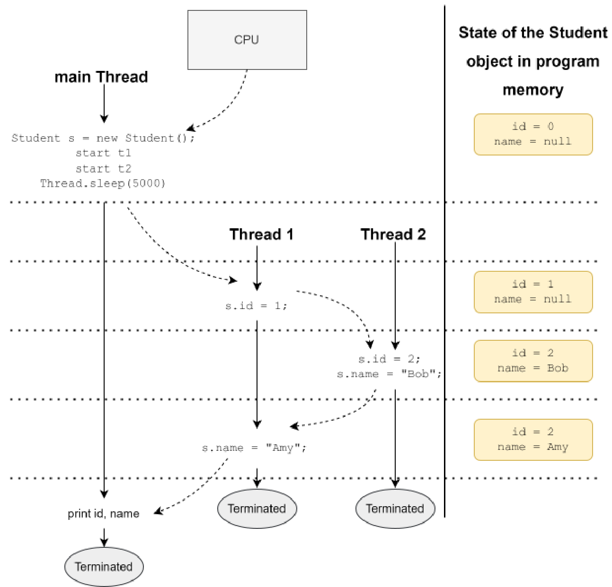
Kết quả đầu ra trong kịch bản này làm nổi bật vấn đề của chương trình. Các trường id và name được gán các giá trị không nhất quán với logic nghiệp vụ mà tôi dự định. Nó đã trộn lẫn các cập nhật từ hai Thread (Luồng). Theo thuật ngữ chuyên môn, tình huống này được gọi là “race condition”.
Một race condition đề cập đến một tình huống mà ở đó kết quả đầu ra của một chương trình phụ thuộc vào thời gian thực thi của các Thread (Luồng) và do đó, không thể đoán trước được. Bản thân tính không thể dự đoán của kết quả đầu ra không phải lúc nào cũng là vấn đề trừ khi kết quả đó không mong muốn. Trong trường hợp này, kết quả Id=2Name=Amy là không mong muốn theo logic nghiệp vụ. Lưu ý rằng ta vẫn có thể nhận được cùng một kết quả đầu ra ngay cả khi tôi đã sử dụng các trường non-volatile và phương thức join thay vì các trường volatile.
493
và phương thức sleep .
Có một vài biến thể của vấn đề này nhưng chúng đều có cùng một nguyên nhân gốc rễ - logic nghiệp vụ kỳ vọng một tập hợp các chỉ thị được thực thi như một chỉ thị duy nhất nhưng trên thực tế, các chỉ thị này được thực thi độc lập và một thread (luồng) có thể can thiệp hoặc có thể quan sát thấy các giá trị trung gian trong khi một thread (luồng) khác đang ở giữa quá trình thực thi tập hợp các chỉ thị đó.
Tập hợp các chỉ thị mà trong suốt quá trình đó chương trình có nguy cơ tạo ra các kết quả không mong muốn được gọi là critical section.
Giải pháp cho vấn đề này là tránh để nhiều thread (luồng) thực thi critical section đồng thời. Nếu một thread (luồng) đã ở giữa critical section, các thread (luồng) khác nên đợi cho đến khi thread (luồng) này rời khỏi critical section. Trong Java, điều này đạt được bằng cách sử dụng một “monitor”.
Bảo vệ critical section bằng monitor☝
Như tôi đã đề cập trước đó, mỗi đối tượng (Object) đều liên kết với một monitor mà một thread (luồng) có thể khóa và mở khóa. Nếu một thread (luồng) đã khóa một monitor, các thread (luồng) khác phải đợi nếu chúng cố khóa monitor đó lần nữa cho đến khi thread (luồng) đang giữ khóa mở khóa nó. Do đó, điều này là lý tưởng để bảo vệ critical section khỏi bị thực thi bởi nhiều thread (luồng) đồng thời.
Việc khóa và mở khóa monitor diễn ra tự động khi một thread (luồng) đi vào và đi ra khỏi một khối code synchronized . Nếu bạn không có nền tảng về Khoa học Máy tính, bạn có thể hình dung một monitor như một then chốt cửa vật lý ở bên trong cánh cửa của căn phòng chứa đoạn code nằm trong critical section.
Nếu một thread (luồng) muốn có quyền truy cập độc quyền vào đoạn code, nó phải khóa chốt sau khi vào phòng để các thread (luồng) khác không thể vào. Các thread (luồng) khác phải chờ ở cửa nếu thấy cửa đã khóa. Khi thread (luồng) hoàn tất với đoạn code, nó sẽ mở chốt và rời phòng, nhường cơ hội cho một thread (luồng) khác đi vào. Dưới đây là cách sử dụng một monitor để khắc phục ví dụ trước:
class Student{
volatile int id;
volatile String name;
494
void update(int id, String name){
synchronized(this){
this.id = id; this.name = name;
}
}
}
public class TestClass {
public static void main(String[] args) throws InterruptedException{
Student s = new Student();
Thread t1 = Thread.ofPlatform().start(()->{ s.update(1, "Amy"); });
Thread t2 = Thread.ofPlatform().start(()->{ s.update(2, "Bob"); });
Thread.sleep(5000);
System.out.println("Id = "+s.id+" Name = "+s.name);
}
}
Có một vài thay đổi trong phiên bản này. Đầu tiên, tôi đã di chuyển logic nghiệp vụ vào một phương thức duy nhất trong lớp Student (trước đó nó bị trùng lặp trong hai biểu thức Lambda (lambda expression)) để chỉ còn lại một khối code mà tôi cần bảo vệ khỏi việc thực thi đồng thời từ nhiều Thread (luồng) thay vì hai. Thứ hai, tôi đã sử dụng một khối synchronized để đảm bảo rằng chỉ có một Thread (luồng) đi vào miền găng (critical section) tại một thời điểm. Tôi đã sử dụng monitor liên kết với cùng đối tượng Student mà tôi muốn cập nhật khi đồng bộ hóa. Tôi sẽ sớm giải thích tại sao điều này lại quan trọng. Vì vậy bây giờ, bất kỳ Thread (luồng) nào khóa monitor trước sẽ giành được quyền truy cập độc quyền vào đoạn code bên trong khối synchronized. Ngay cả khi hệ điều hành (OS) tạm dừng (preempt) Thread (luồng) này và lập lịch cho một Thread (luồng) khác chạy, và nếu Thread (luồng) đó cố gắng đi vào cùng khối synchronized, nó cũng sẽ phải đợi. Về bản chất, vì Thread (luồng) còn lại không thể chạy do monitor đã bị khóa bởi Thread (luồng) đầu tiên, hệ điều hành (OS) sẽ lập lịch cho Thread (luồng) đầu tiên chạy lại và Thread (luồng) đầu tiên sẽ được hoàn thành việc thực thi khối synchronized. Do đó, không có khả năng hai trường này bị gán các giá trị bất hợp lý. Ít nhất là đối với phương thức update.
495
Sử dụng phương thức synchronized☝
Nếu bạn cần bảo vệ toàn bộ mã bên trong một phương thức khỏi sự truy cập đồng thời (như trường hợp của phương thức update được chỉ ra ở trên), bạn có thể khai báo toàn bộ phương thức là synchronized như sau:
Một phương thức synchronized đồng bộ hóa trên monitor liên kết với đối tượng (Object) mà phương thức đó được gọi. Do đó, phương thức trên tương đương về mọi mặt với khối synchronized được sử dụng trong ví dụ trước. Bây giờ bạn có thể thắc mắc điều gì sẽ xảy ra nếu một phương thức synchronized gọi một phương thức synchronized khác trong cùng một lớp (Class). Liệu Thread (Luồng) có bị chặn vì monitor đã bị khóa? Không. Các khóa nội tại (intrinsic lock) có tính khả nhập (reentrant), nghĩa là, nếu một Thread (Luồng) đã khóa monitor, nó có thể khóa lại chính monitor đó một lần nữa. Sẽ là một vấn đề lớn nếu không phải như vậy. Chúng ta sẽ không thể chia nhỏ một đoạn mã dài thành nhiều phương thức nhỏ vì việc gọi phương thức synchronized thứ hai sẽ chặn Thread (Luồng) vĩnh viễn. Vì vậy, mỗi hành động khóa bởi một Thread (Luồng) chỉ đơn thuần làm tăng số lượng khóa (lock count) của monitor đó và mỗi hành động mở khóa, tức là thoát khỏi một phương thức synchronized hoặc một khối synchronized, sẽ giảm số lượng đó. Do đó, monitor sẽ được mở khóa khi số lượng khóa trở về bằng không.
Bạn cũng có thể khai báo một phương thức static là synchronized. Trong trường hợp đó, phương thức sử dụng monitor liên kết với đối tượng java.lang.Class mà JVM tạo ra nội bộ để đại diện cho lớp (Class) mà phương thức static thuộc về. JVM chỉ tạo duy nhất một đối tượng (Object) Class cho mỗi lớp (Class), nghĩa là, tất cả các phương thức static synchronized của một lớp (Class) đều đồng bộ hóa trên cùng một monitor.
Lưu ý rằng thông thường người ta hay nói, “khóa đối tượng” hoặc “đồng bộ hóa trên đối tượng” thay vì nói, “khóa monitor liên kết với một đối tượng” hoặc “đồng bộ hóa trên monitor liên kết với đối tượng”. Chúng đều ám chỉ cùng một điều.
Đồng bộ hóa các constructor
496
Việc đánh dấu các constructor của một Lớp (Class) là synchronized là không được phép. Theo JLS, “Không có nhu cầu thực tế nào đối với việc đồng bộ hóa (synchronized) một constructor, bởi vì nó sẽ khóa Đối tượng (Object) đang được khởi tạo, đối tượng vốn thường không khả dụng cho các Thread (Luồng) khác cho đến khi tất cả các constructor của Đối tượng (Object) đó hoàn thành công việc của mình.”
Mặc dù điều này không quan trọng cho kỳ thi, nhưng hãy lưu ý rằng một tham chiếu đến một Đối tượng (Object) được khởi tạo một phần có thể bị rò rỉ từ Thread (Luồng) đang khởi tạo nó và có thể được truy cập từ một Thread (Luồng) khác.
Quyết định sử dụng lock nào☝
Việc quyết định sử dụng Đối tượng (Object) nào để bảo vệ một critical section là rất quan trọng vì một monitor chỉ hữu ích nếu tất cả các Thread (Luồng) chuẩn bị thực thi critical section đồng bộ hóa trên cùng một monitor. Monitor đó là gì không quan trọng nhưng nó phải là cùng một monitor. Việc sử dụng các monitor khác nhau để bảo vệ một critical section cũng giống như việc một phòng có nhiều cửa. Khóa một cửa và để mở cửa khác sẽ không ngăn được người khác đi vào phòng từ cửa kia. Ví dụ, việc khóa (lock) trong phương thức update sau đây là hợp lệ về mặt kỹ thuật nhưng hoàn toàn vô dụng:
Vì mỗi Thread (Luồng) thực thi phương thức này đều tạo ra một Object mới để khóa critical section, nên về mặt hiệu quả, không có Thread (Luồng) nào kiểm tra xem critical section đã bị khóa hay chưa.
Mặt khác, việc sử dụng cùng một monitor để bảo vệ nhiều critical section không liên quan với nhau sẽ khiến chương trình bị chậm lại vì trong trường hợp đó, ngay cả các Thread (Luồng)...
497
mà không cần phải đồng bộ hóa với nhau sẽ phải chờ đợi trên cùng một monitor. Việc này giống như một vị khách khóa toàn bộ khách sạn thay vì khóa phòng riêng của mình. Ví dụ, khóa (lock) trong đoạn mã sau đây quá hạn chế:
Trong đoạn mã trên, Student.class tham chiếu đến đối tượng Class duy nhất được tạo tự động bởi JVM khi nó tải lớp (Class) Student. Việc sử dụng monitor của đối tượng này là quá hạn chế vì nó sẽ ngăn cản các Thread (Luồng) cập nhật ngay cả các đối tượng (Object) Student khác nhau cùng một lúc, trong khi tất cả những gì chúng ta muốn là ngăn không cho cùng một đối tượng (Object) Student bị cập nhật bởi nhiều Thread (Luồng) cùng một lúc.
20.3 Điều phối thực thi Thread (Luồng)☝
Việc chỉ đơn thuần thực thi hai Thread (Luồng) đồng thời mang lại rất ít lợi ích trừ khi quá trình thực thi của chúng được điều phối tốt. Thật vậy, một Thread (Luồng) consumer không thể làm được gì nhiều ngay cả khi nó có cơ hội thực thi trừ khi Thread (Luồng) producer đã sản xuất ra thứ gì đó. Do đó, điều quan trọng là phải biết về các kỹ thuật cơ bản để điều phối việc thực thi của các Thread (Luồng) trong một chương trình đa luồng.
Java cung cấp một số phương thức để điều phối việc thực thi của hai hoặc nhiều Thread (Luồng). Bạn đã thấy một số trong số chúng ở phần trước khi tìm hiểu cách chia sẻ bộ nhớ với nhiều Thread (Luồng). Hãy cùng điểm nhanh qua chúng.
20.3.1 Sử dụng join☝
Bạn đã thấy cách sử dụng phương thức join. Đây là một cách tuyệt vời để
498
sự phối hợp khi một Thread (Luồng) yêu cầu sự kết thúc của một Thread (Luồng) khác trước khi nó có thể tiếp tục.
Phương pháp này không hữu ích trong các tình huống mà nhiều Thread (Luồng) cần phối hợp thực thi
khi chúng đang hoạt động.
20.3.2 Sử dụng sleep☝
Một Thread (Luồng) đang ngủ không tiêu thụ bất kỳ Resource (Tài nguyên) nào. Vì vậy, một cách để một consumer Thread (Luồng) giảm
chờ bận (busy-waiting) là đi ngủ trong các khoảng thời gian ngắn. Ví dụ:
public static void main(String[] args) throws Exception{
Factorial f = new Factorial(100000);
Thread t = Thread.ofVirtual().start(f);
while(f.result == null){
Thread.currentThread().sleep(5000);
}
System.out.println("Factorial is : "+f.result);
}
Trong chương trình trên, main Thread (Luồng) khởi chạy factorial Thread (Luồng) và đi ngủ trong 5
giây. Vòng lặp while đảm bảo rằng nếu factorial Thread (Luồng) mất nhiều hơn 5 giây để
tính toán, main Thread (Luồng) sẽ tiếp tục đi ngủ lại. Điểm tốt duy nhất ở cách tiếp cận này
so với cách tiếp cận chờ bận (busy-waiting) là nó không tiêu tốn nhiều CPU, nhưng nhược điểm
lớn nhất của nó là mất tối thiểu năm giây ngay cả khi tính toán giai thừa cho các số
nhỏ. Thời gian sleep có thể được tối ưu hóa dựa trên bài toán cần giải quyết.
Sleep và lock☝
Một Thread (Luồng) không tự động mở khóa (unlock) bất kỳ monitor nào mà nó có thể đã khóa (lock) khi đi
ngủ. Hạn chế này khiến việc sử dụng phương thức sleep để phối hợp trở nên khó khăn khi nhiều
Thread (Luồng) yêu cầu khóa (lock) cùng một monitor để truy cập vào một Resource (Tài nguyên) được chia sẻ.
499
20.3.3 Sử dụng interrupt☝
Lớp Thread có một instance method tên là interrupt, có thể được dùng để thu hút sự chú ý của một Thread (Luồng). Phương thức này hoạt động theo hai cách — nếu một Thread (Luồng) đã ở trạng thái RUNNABLE hoặc BLOCKED, thì phương thức này chỉ thiết lập cờ interrupted của Thread (Luồng) đó thành true và nếu một Thread (Luồng) đang ở trạng thái WAITING hoặc TIMED_WAITING (chẳng hạn như khi Thread (Luồng) đang ngủ) thì Thread (Luồng) đó sẽ thoát khỏi trạng thái đó với một java.lang.InterruptedException và trở thành RUNNABLE. Dưới đây là cách chúng ta có thể sử dụng nó để khắc phục thiếu sót của ví dụ trước:
class Factorial implements Runnable{
int n;
volatile BigInteger result;
Thread consumer; //will interrupt this thread when done
Factorial(int n, Thread consumer){
this.n = n; this.consumer;
}
public void run(){
BigInteger start = BigInteger.ONE;
for(int i=1; i<n;i++) start = start.multiply(BigInteger.valueOf(i));
result = start;
consumer.interrupt(); //interrupt it up now
}
}
public class TestClass{
public static void main(String[] args){
Factorial f = new Factorial(100000, Thread.currentThread()); //pass
the current thread's reference
Thread t = Thread.ofVirtual().start(f);
while(f.result == null){
try{
Thread.currentThread().sleep(5000);
500
}catch(InterruptedException ie) {
//exception is expected here, so, not logging it
}
}
System.out.println("Factorial is : "+f.result);
}
Trong chương trình trên, chúng ta truyền tham chiếu của thread (luồng) main vào thread (luồng) factorial để thread (luồng) factorial có thể đánh thức nó sau khi quá trình tính toán hoàn tất. Thread (luồng) main khởi chạy thread (luồng) factorial và đi vào trạng thái ngủ (sleep). Thread (luồng) factorial, lúc này đã có tham chiếu đến thread (luồng) đang ngủ, sẽ ngắt thread (luồng) đó khi hoàn thành việc tính toán bằng cách gọi interrupt() trên thread (luồng) đó. Khi bị ngắt, thread (luồng) main sẽ ngay lập tức thoát khỏi trạng thái ngủ với một InterruptedException. Điều này đảm bảo rằng thread (luồng) main không phải ngủ đủ 5 giây nếu quá trình tính toán hoàn tất sớm hơn.
Tuy nhiên, cách tiếp cận này cũng có một vài vấn đề:
Phối hợp vụng về — Vì bất kỳ thread (luồng) nào cũng có thể được JVM lập lịch chạy vào bất kỳ lúc nào, nên có khả năng thread (luồng) factorial hoàn thành việc tính toán sau khi thread (luồng) main kiểm tra trường result nhưng trước khi thread (luồng) main đi vào trạng thái ngủ. Trong trường hợp này, tín hiệu ngắt (interrupt) được gửi bởi thread (luồng) factorial sẽ thực sự bị lãng phí vì thread (luồng) main vẫn chưa đi vào trạng thái ngủ. Điều này có nghĩa là thread (luồng) main sẽ ngủ ít nhất 5 giây mặc dù việc tính toán đã được thực hiện xong. Chúng ta sẽ cần thêm mã nguồn để loại bỏ sự kém hiệu quả này.
Liên kết chặt chẽ (Tight coupling) — Cho đến nay, nhược điểm lớn nhất của cách tiếp cận này là lớp Factorial hiện đang bị liên kết chặt chẽ với một đối tượng Thread khác. Trong ví dụ cụ thể này, chỉ có một thread (luồng) đợi kết quả, nhưng điều gì sẽ xảy ra nếu có một số lượng thread (luồng) không xác định quan tâm đến việc biết khi nào tác vụ hoàn tất? Việc dồn trách nhiệm theo dõi các bên quan tâm lên thread (luồng) sản xuất (producer thread) sẽ là một thiết kế cực kỳ tồi tệ.
Việc phối hợp với một thread (luồng) đã ở trạng thái RUNNABLE bằng phương thức interrupt() sẽ khó khăn hơn một chút vì một thread (luồng) ở trạng thái RUNNABLE không nhận được một
501
InterruptedException khi nó bị ngắt. Do đó, nhiệm vụ của Thread (Luồng) RUNNABLE là kiểm tra trạng thái bị ngắt của nó thường xuyên và quyết định xem cần làm gì khi phát hiện ra rằng nó đã bị ngắt. Ví dụ, method run của Lớp (Class) Factorial có thể hủy bỏ việc tính toán nếu nó phát hiện mình đã bị ngắt như sau:
Tôi có thể đã sử dụng Thread.currentThread().isInterrupted() thay vì
Thread.interrupted() trong ví dụ này, nhưng trong một số trường hợp interrupted() có thể phù hợp hơn vì nó xóa trạng thái bị ngắt trong khi isInterrupted() thì không.
20.3.4 Sử dụng wait và notify☝
Mặc dù các method wait, notify, và notifyAll chính thức không có trong kỳ thi OCP, chúng cung cấp
một kỹ thuật hiệu quả để điều phối Thread (Luồng). Vì chúng cũng quan trọng trong các cuộc phỏng vấn kỹ thuật,
tôi sẽ trình bày ngắn gọn về chủ đề này.
Các method wait, notify, và notifyAll là các instance method của Object
502
lớp và do đó, có sẵn trong tất cả các Đối tượng (Object). Chỉ một Thread (Luồng) đã khóa monitor liên kết với Đối tượng (Object) mới được phép gọi các phương thức này trên Đối tượng (Object) đó, nếu không Thread (Luồng) sẽ nhận một java.lang.IllegalMonitorStateException, vốn là một Ngoại lệ unchecked (Unchecked Exception). Trước hết, chúng ta hãy xem các phương thức này làm gì và sau đó xem cách sử dụng của chúng.
voidwait() và voidwait(long timeoutMillis) và wait(long
timeoutMillis, int nanos) - Khi một Thread (Luồng) gọi bất kỳ phương thức nào trong số này trên một Đối tượng (Object),
ba điều sẽ xảy ra. Đầu tiên, Thread (Luồng) được đưa vào một “danh sách chờ” gồm các Thread (Luồng) do JVM duy trì cho Đối tượng (Object) đó, thứ hai, monitor của Đối tượng (Object) mà phương thức này được gọi
sẽ được mở khóa, và thứ ba, Thread (Luồng) này sẽ chuyển sang trạng thái WAIT (hoặc trạng thái TIMED_WAIT nếu đối số timeout cũng được truyền vào). Điều này có nghĩa là bộ lập lịch (scheduler) sẽ không lập lịch cho Thread (Luồng)
đang gọi để thực thi cho đến khi nó được đưa trở lại trạng thái RUNNABLE.
Kết quả của việc gọi phương thức này là bất kỳ Thread (Luồng) RUNNABLE nào muốn khóa
cùng một monitor đều có thể khóa nó vì monitor hiện đã được mở khóa.
voidnotify() và voidnotifyAll() - Khi một Thread (Luồng) gọi notify() trên một
Đối tượng (Object), JVM sẽ chuyển bất kỳ một Thread (Luồng) nào khác trong số các Thread (Luồng) đã được đưa vào danh sách chờ
của Đối tượng (Object) này thành RUNNABLE. Không có gì đảm bảo Thread (Luồng) nào sẽ được chuyển thành RUNNABLE. Nó
có thể là bất kỳ Thread (Luồng) nào trong số đó. Phương thức notifyAll() hoạt động theo cách tương tự, ngoại trừ việc
JVM sẽ chuyển tất cả các Thread (Luồng) đang chờ trên Đối tượng (Object) này thành RUNNABLE.
Bí quyết khi sử dụng các phương thức này là phải hiểu rằng chỉ vì một Thread (Luồng) trở thành
RUNNABLE không có nghĩa là nó đã giành được monitor và sẽ có thể tiếp tục thực thi
phần mã găng (critical section). Nó chỉ có nghĩa là Thread (Luồng) đó hiện đang cạnh tranh để khóa cùng một monitor
cùng với các Thread (Luồng) khác đang cố gắng khóa cùng một monitor đó. Chỉ một Thread (Luồng) có thể
khóa monitor và tất cả các Thread (Luồng) khác sẽ bị đưa vào trạng thái BLOCKED. Chúng sẽ trở thành RUNNABLE
trở lại khi monitor được mở khóa.
Hãy để tôi chỉ cho bạn cách kỹ thuật này có thể được sử dụng để triển khai chương trình tính giai thừa của chúng ta:
class Factorial implements Runnable{
503
int n;
BigInteger result;
Factorial(int n){
this.n = n;
}
public synchronized void run(){ //lock this object using synchronized
BigInteger start = BigInteger.ONE;
for(int i=1; i<n;i++) {
start = start.multiply(BigInteger.valueOf(i));
}
result = start;
notifyAll(); //make all threads that are waiting on this object RUNNABLE
}
}
public class TestClass{
public static void main(String[] args) {
Factorial f = new Factorial(200000);
synchronized(f){ //acquire the lock of the Factorial object
Thread ft = Thread.ofVirtual().start(f); //start the computation thread
while(f.result == null){ //use while instead of if
try{
f.wait(); //put self on the wait list of this Factorial object
}catch(InterruptedException e){ e.printStackTrace(); }
}
}
System.out.println("Factorial is : "+f.result);
}
}
Sau đây là cách chương trình trên thực thi:
504
Thread (Luồng) chính tạo ra một đối tượng (Object) Factorial và khóa nó lại. Vì tại thời điểm này không có thread (luồng) nào khác đang cố gắng khóa đối tượng (Object) Factorial này, thread (luồng) chính có thể khóa được nó.
Thread (Luồng) chính bắt đầu một thread (luồng) mới với cùng đối tượng (Object) Factorial làm Runnable của nó. Tuy nhiên, phương thức run của Factorial được đồng bộ hóa (synchronized), điều đó có nghĩa là, ngay khi factorial thread được thực thi, nó sẽ cố gắng khóa chính đối tượng (Object) Factorial đó. Vì đối tượng (Object) Factorial này đã bị khóa bởi thread (luồng) chính, factorial thread sẽ chuyển từ trạng thái RUNNABLE sang trạng thái BLOCKED ngay lập tức.
Thread (Luồng) chính lúc này kiểm tra trường result, tất nhiên giá trị của nó là null, vì factorial thread vẫn chưa có cơ hội thực hiện việc tính toán. Thread (luồng) chính bây giờ gọi wait() trên cùng đối tượng (Object) Factorial đó. Nó được phép làm như vậy vì nó đã có khóa của đối tượng (Object) Factorial đó. Như tôi đã đề cập về phương thức wait trước đó, thread (luồng) chính lúc này chuyển từ trạng thái RUNNABLE sang trạng thái WAITING và đối tượng (Object) Factorial được mở khóa.
Ngay khi đối tượng (Object) Factorial được mở khóa, factorial thread đang ở trạng thái BLOCKED sẽ tự động được chuyển sang trạng thái RUNNABLE và cũng có thể khóa đối tượng (Object) Factorial vì không có thread (luồng) nào khác đang cố gắng khóa nó. Bộ điều phối (scheduler) bây giờ sẽ có thể lập lịch cho factorial thread.
Factorial thread thực thi phương thức run, hoàn thành việc tính toán, và gọi notifyAll(). Lời gọi này đưa tất cả các thread (luồng) đang nằm trong danh sách chờ của monitor thuộc đối tượng (Object) này từ trạng thái WAITING sang trạng thái RUNNABLE. Vì chỉ có duy nhất một thread (luồng) là thread (luồng) chính trong danh sách này, nó được chuyển thành RUNNABLE và lời gọi phương thức wait() của nó kết thúc. Hãy nhớ rằng lời gọi phương thức wait() nằm bên trong khối synchronized và ngay cả khi lời gọi đó kết thúc, thread (luồng) chính vẫn cần phải giành được khóa của đối tượng (Object) Factorial để thực thi câu lệnh tiếp theo trong khối synchronized. Vì đối tượng (Object) Factorial vẫn chưa được mở khóa bởi factorial thread, thread (luồng) chính sẽ chuyển sang trạng thái BLOCKED ngay lập tức sau khi lời gọi phương thức wait() kết thúc.
Factorial thread thoát khỏi khối synchronized sau khi gọi notifyAll(), qua đó mở khóa đối tượng (Object) Factorial.
Ngay khi đối tượng (Object) Factorial được mở khóa, thread (luồng) chính được chuyển từ
505
từ trạng thái BLOCKED sang trạng thái RUNNABLE và khóa đối tượng (Object) Factorial.
Thread (Luồng) chính chạy, thoát khỏi khối synchronized và in ra result. Lưu ý rằng
giá trị được cập nhật của result có thể nhìn thấy bởi Thread (Luồng) chính (ngay cả khi nó không phải là volatile) nhờ vào
sự đảm bảo được cung cấp bởi Java Memory Model mà tôi đã giải thích trước đó.
Cách tiếp cận này có khá nhiều ưu điểm so với các cách tiếp cận trước đó:
Lớp (Class) Factorial không bị liên kết chặt chẽ với bất kỳ thread (Luồng) nào khác. Nó thậm chí không quan tâm
đến việc ai muốn biết về việc hoàn thành phép tính và không chịu
trách nhiệm thông báo cho bất kỳ thread (Luồng) cụ thể nào.
Nhiều thread (Luồng) có thể cùng chờ đợi việc hoàn thành phép tính.
Không có tình trạng chờ bận (busy-waiting) và kết quả luôn có sẵn ngay khi nó được tính toán trong mọi
tình huống.
Bây giờ bạn có thể tự hỏi về việc sử dụng vòng lặp while trong phương thức main thay vì
một câu lệnh if. Có bốn lý do cho việc đó:
Đánh thức giả (Spurious wakeups) – Thông thường, một lời gọi tới wait() sẽ trả về như một kết quả của việc một thread (Luồng) khác
gọi notify hoặc notifyAll. Tuy nhiên, đặc tả kỹ thuật cho phép lời gọi trả về ngay cả
khi không có tác nhân kích hoạt nào như vậy. Điều này được gọi là một “đánh thức giả” (spurious wakeup), có nghĩa là thread (Luồng) bị
đánh thức mà không vì lý do rõ ràng nào.
Hết thời gian chờ (Timeout) – Một lệnh chờ với tham số thời gian chờ (timeout) sẽ trả về sau khi thời gian chờ hết hạn.
Sự không có sẵn của resource (Tài nguyên) (Unavailability of the resource) – Hãy nhớ rằng có thể có nhiều thread (Luồng)
cùng chờ đợi trên một đối tượng (Object) và tất cả chúng sẽ thức dậy khi có lời gọi tới notifyAll. Tuy nhiên, nếu
số lượng resource (Tài nguyên) mà các thread (Luồng) yêu cầu để tiếp tục thực hiện logic nghiệp vụ của chúng là
có hạn, một số thread (Luồng) trong số đó có thể không lấy được resource (Tài nguyên) cần thiết để tiếp tục
thực thi. Điều này có thể xảy ra, ví dụ, khi một thread (Luồng) sản xuất (producer thread) chỉ tạo ra
một phần tử trong khi có nhiều thread (Luồng) tiêu thụ (consumer thread) đang chờ đợi mỗi phần tử có sẵn.
Chỉ có một thread (Luồng) tiêu thụ là có thể lấy được phần tử đó và tiếp tục. Các thread (Luồng) tiêu thụ khác
cần phải bắt đầu chờ đợi lại.
Nhận được tín hiệu ngắt (Receiving an interrupt signal) – Lời gọi tới wait có thể kết thúc bằng một
506
InterruptedException nếu có bất kỳ Thread (Luồng) nào khác ngắt Thread (Luồng) này. Đây là lý do cho việc bọc một lời gọi đến wait() trong một khối try/catch ở đoạn mã trên.
Trong tất cả bốn tình huống được mô tả ở trên, Thread (Luồng) đang đợi sẽ thức dậy nhưng điều kiện mà Thread (Luồng) đang đợi không thực sự được đáp ứng. Do đó, bắt buộc phải kiểm tra lại điều kiện đó sau khi thức dậy và bắt đầu đợi lại nếu điều kiện không được thỏa mãn.
20.3.5 Trắc nghiệm☝
Q. Kết quả đầu ra nào có thể được mong đợi từ đoạn mã sau?
public class ThreadStates {
static Object lock = new Object();
public static void main(String[] args) throws Exception{
Thread t = new Thread(){
public void run(){
try{
lock.wait();
}catch(Exception e){
e.printStackTrace();
}
}
};
t.start();
Thread.sleep(1000);
t.interrupt();
}
}
Chọn 1 phương án đúng.
507
A. Một stack trace cho InterruptedException.
B. Một stack trace cho IllegalMonitorStateException.
C. Một stack trace cho ThreadException.
D. Không có đầu ra.
Đáp án đúng là B.
Quan sát thấy lock.wait(); đang được gọi bởi một thread (luồng) không sở hữu lock (khóa) của
đối tượng (Object) lock. Do đó, nó sẽ nhận một IllegalMonitorStateException ngay khi gọi
lock.wait().
20.4 Viết mã nguồn an toàn với thread☝
Như tôi đã giải thích trước đó, đầu ra thực tế của một chương trình không phải lúc nào cũng có thể dự đoán trước được do các race
condition (tình trạng tranh chấp). Nhưng không phải tất cả các chương trình như vậy đều không an toàn với thread (thread unsafe). Ví dụ, bạn không thể dự đoán
người dùng nào sẽ có được ghế nếu hai người dùng cố gắng đặt cùng một ghế, nhưng điều đó không làm cho ứng dụng
gặp vấn đề. Ứng dụng sẽ gặp vấn đề nếu nó cho phép hai người đặt cùng một
ghế. Với tư cách là một lập trình viên, bạn cần có khả năng đoán trước khả năng ứng dụng
tạo ra một kết quả không mong muốn khi nó được sử dụng bởi nhiều người.
Do đó, việc chia sẻ các trường lớp (class) và thực thể (instance) với nhiều thread (luồng) chỉ là một phần của việc viết
các chương trình đa luồng (multithreaded). Đảm bảo rằng chúng được chia sẻ một cách “an toàn” mới là phần còn lại. Một lớp (Class) hoặc một phương thức
có thể bị coi là không an toàn với thread (thread unsafe) nếu một kết quả không mong muốn có thể được dự đoán khi nó được sử dụng từ
nhiều thread (luồng). Ví dụ, lớp (Class) Student mà bạn đã thấy trước đó không an toàn với thread (thread unsafe)
bởi vì các trường id và name của nó có thể bị sửa đổi độc lập từ bất kỳ thread (luồng) nào, làm cho
logic nghiệp vụ được thể hiện trong phương thức update của nó mất hiệu lực. Tương tự, lớp (Class) Factorial cũng
không an toàn với thread (thread unsafe) bởi vì
508
bất kỳ thread (luồng) nào cũng có thể đọc hoặc sửa đổi trường result của nó trong khi giai thừa vẫn đang được tính toán. Lưu ý rằng kết quả có được coi là mong muốn hay không được quyết định bởi quy trình nghiệp vụ đang được thiết kế mô hình và triển khai.
An toàn thread (Thread safety) là một mối quan tâm lớn trong các ứng dụng phức tạp và mặc dù không phải lúc nào cũng có thể dự đoán trước mọi tình huống thực thi có thể xảy ra, có một số kỹ thuật lập trình giúp giảm khả năng các lỗi liên quan đến đa luồng (multithreading) xuất hiện trong mã nguồn. Tôi xin liệt kê một vài kỹ thuật quan trọng ở đây.
20.4.1 Sử dụng các đối tượng bất biến (immutable objects)☝
Nếu trạng thái của một đối tượng (object) không bao giờ thay đổi sau khi được khởi tạo, nó có thể được đọc từ nhiều thread (luồng) mà không có bất kỳ khả năng đọc phải các giá trị sai hoặc không nhất quán. Do đó, các lớp (class) bất biến vốn đã an toàn thread (thread safe).
Tuy nhiên, việc tạo các lớp (class) bất biến nói thì dễ hơn làm. Nếu bạn nghĩ rằng việc đặt các trường instance của một lớp là final là đủ để làm cho lớp đó bất biến, hãy xem xét Student record dưới đây:
public record Student(String name, java.util.Date dob){ };
Bản thân Student record không cho phép thay đổi bất kỳ trường nào của nó, nhưng còn đối tượng Date được trỏ tới bởi trường dob của nó thì sao? Vì lớp Date có một vài phương thức setter, nên nó là khả biến (mutable). Do đó, một đối tượng Student không thể thực sự được coi là bất biến. Điều này có nghĩa là chỉ việc khai báo các trường của một lớp là final hoặc lược bỏ các phương thức setter cho các trường của nó có thể là chưa đủ để làm cho lớp đó trở nên bất biến. Bạn cần kiểm tra xem kiểu dữ liệu của các trường trong đó có bất biến hay không.
Hơn nữa, vì nhiều thread (luồng) có thể truy cập trường dob và sửa đổi cùng một đối tượng Date đồng thời, tính an toàn thread (thread safety) của đối tượng Student phụ thuộc vào tính an toàn thread (thread safety) của đối tượng Date. Vì lớp Date không an toàn thread (vì tài liệu hướng dẫn của nó không nói rằng nó an toàn thread), Student record cũng không thể được coi là an toàn thread.
Trên đây chỉ là một ví dụ cho thấy một lớp trông có vẻ bất biến lại hóa ra
509
có thể thay đổi (mutable) và không an toàn cho thread (thread unsafe), nhưng có một vài điều bạn cần lưu ý khi tạo một Lớp (Class) thực sự bất biến (immutable). Vì kỳ thi OCP không yêu cầu bạn phải biết tất cả các chi tiết đó, tôi sẽ không đi sâu vào chúng trong cuốn sách này. Tuy nhiên, tôi thực sự khuyên bạn nên đọc thêm về chủ đề này từ tài liệu Java Secure Coding Guidelines do Oracle công bố vào thời gian rảnh rỗi.
20.4.2 Sử dụng các trường final hoặc volatile☝
Nếu bạn không mong muốn một trường của một Lớp (Class) bao giờ thay đổi, hãy khai báo nó là final. Điều này giúp ngăn ngừa việc vô tình sử dụng sai trường đó. Mặt khác, nếu bạn dự kiến một trường sẽ bị thay đổi trực tiếp bởi nhiều Thread (Luồng), hãy khai báo nó là volatile để đảm bảo không Thread (Luồng) nào nhìn thấy giá trị cũ (stale value) của trường đó.
Hãy nhớ rằng volatile không đảm bảo tính nguyên tử (atomicity) cho các thao tác liên quan đến nhiều trường hoặc cho nhiều thao tác trên cùng một trường.
20.4.3 Sử dụng tính đóng gói (Encapsulation)☝
Mặc dù việc sử dụng các Lớp (Class) bất biến nhiều nhất có thể là rất tốt cho an toàn thread (thread safety), nhưng việc kỳ vọng một ứng dụng chỉ bao gồm các Lớp (Class) bất biến là điều không thực tế. Trong những trường hợp các trường của Đối tượng (Object) có thể bị thay đổi, bạn nên luôn sử dụng các phương thức truy cập (accessor) và sửa đổi (mutator) với kiểm soát quyền truy cập (access control) phù hợp cho các trường của nó. Việc cho phép truy cập non-private vào các trường thực thể (instance fields) của một Lớp (Class) là con đường dẫn đến thảm họa, vì các trường đó có thể bị sửa đổi bởi bất kỳ Thread (Luồng) nào ở bất kỳ thời điểm nào mà không cần quan tâm đến logic nghiệp vụ (business logic) của Lớp (Class). Cung cấp các phương thức truy cập và sửa đổi phù hợp cho các trường thực thể không chỉ cho phép kiểm tra tính hợp lệ của giá trị, mà còn cho phép kết hợp các khóa (lock) để ngăn chặn việc sửa đổi chúng từ nhiều Thread (Luồng) cùng một lúc. Ví dụ, Lớp (Class) Square sau đây là an toàn thread (thread safe) vì các phương thức getter và setter đồng bộ hóa (synchronize) trên cùng một khóa (lock):
510
public class Square{
private int side;
public synchronized void setSide(int side){
if(side<0) throw new IllegalArgumentException("Invalid side");
this.side = side;
}
public synchronized int getSide(){return side;}
}
20.4.4 Cô lập và bảo vệ các bất biến của lớp☝
Một bất biến đề cập đến một khẳng định được định nghĩa bởi logic nghiệp vụ luôn đúng trong suốt vòng đời của một Đối tượng (Object) của một Lớp (Class). Ví dụ, hãy xem xét Lớp (Class) sau:
public class Square{
private int side;
private int area;
//synchronized getters and setters for side and area not shown
}
Nếu logic nghiệp vụ của tôi yêu cầu rằng giá trị của trường area phải luôn bằng giá trị được đưa ra bởi công thức side*side, thì quy tắc này là một bất biến của Lớp (Class) Square . Bây giờ, điều gì sẽ xảy ra nếu một Thread (Luồng) cập nhật trường side và trước khi nó kịp cập nhật trường area với giá trị bằng side*side, một Thread (Luồng) khác lại xen vào và sửa đổi trường side thành một giá trị khác? Trong trường hợp này, các trường side và area sẽ trở nên mất đồng bộ xét theo bất biến của Lớp (Class). Do đó, Lớp (Class) Square không an toàn luồng (thread-safe).
Để làm cho một Lớp (Class) an toàn luồng (thread-safe), bất kỳ đoạn mã nào ảnh hưởng đến các bất biến của Lớp (Class) đều phải được
511
được cô lập và bảo vệ bằng một lock (khóa) chung. Ví dụ, Lớp (Class) Square có thể được cập nhật như
sau để bảo đảm thread-safe (an toàn đa luồng):
class Square{
private int side; private int area;
public synchronized int getSide(){ return side; }
public synchronized int getArea(){ return area; }
public synchronized void setSide(int side){
this.side = side; this.area = side*side;
}
}
Trong đoạn mã trên, tất cả các phương thức đều được đồng bộ hóa (synchronized) bằng cách sử dụng cùng một monitor (chính là
monitor liên kết với cùng một đối tượng (Object) Square). Điều này đảm bảo rằng trường area luôn đồng bộ
với trường side tại bất kỳ thời điểm nào theo yêu cầu của logic nghiệp vụ (business logic) của Lớp (Class).
20.4.5 Xác định các vùng tới hạn (critical sections) và bảo vệ chúng bằng một lock (khóa)☝
Một nguồn gây lỗi phổ biến trong mã nguồn đa luồng là phần logic nơi một hành động được thực hiện dựa
trên giá trị của một vị từ (predicate). Logic như vậy rất dễ xảy ra tình trạng tranh chấp (race condition). Như tôi đã giải thích trước đó, một
tình trạng tranh chấp (race condition) có thể dẫn đến các kết quả không mong muốn. Ví dụ: giả sử logic nghiệp vụ (business logic) mà bạn
đang cố gắng triển khai là kiểm tra xem trường passengerId của một vé (ticket) có phải là null hay không, và nếu
đúng như vậy, hãy thiết lập nó thành userId hiện tại. Đại loại như thế này:
Vì việc kiểm tra điều kiện và việc thiết lập passengerId là hai
512
các thao tác khác nhau, một Thread (luồng) có thể thấy passengerId của một vé là null nhưng trước khi
nó có thể gán userId hiện tại cho trường passengerId, một Thread (luồng) khác có thể xen vào,
thấy passengerId là null và gán một userId khác cho nó. Nếu Thread (luồng) đầu tiên bây giờ
tiếp tục thực hiện việc gán giá trị, nó sẽ ghi đè lên giá trị được gán bởi Thread (luồng) thứ hai.
Điều này rõ ràng là không mong muốn vì hai người dùng bây giờ có thể cùng nghĩ rằng họ đã có được vé.
Để sửa các lỗi như vậy, chúng ta cần xác định các hành động tạo thành đoạn găng (critical section) và thực thi đoạn găng (critical section) đó như một thao tác nguyên tử (atomic operation) duy nhất. Một thao tác nguyên tử (atomic operation) loại trừ khả năng các Thread (luồng) khác nhìn thấy các trạng thái trung gian của các Đối tượng (Object) liên quan đến thao tác đó. Chúng hoặc thấy trạng thái giống như ngay trước khi bắt đầu thao tác, hoặc giống như ngay sau khi thao tác kết thúc. Một thao tác nguyên tử (atomic operation) cũng ngăn cản việc thực thi của Thread (luồng) bị xen kẽ với việc thực thi của các Thread (luồng) khác truy cập vào cùng các Đối tượng (Object) đó.
Việc xác định các hành động tạo thành đoạn găng (critical section) không hề dễ dàng nhưng, về cơ bản, một đoạn găng (critical section) bao trùm toàn bộ chuỗi hành động mà mỗi hành động tiếp theo yêu cầu trạng thái của các Đối tượng (Object) liên quan đến thao tác vẫn phải giống như ngay sau hành động trước đó. Ví dụ, câu lệnh ticket.setPassengerId(userid) yêu cầu ticket.getPassengerId() phải giữ nguyên là null cho đến khi nó hoàn thành việc thiết lập passengerId. Do đó, hai hành động này là các phần của cùng một đoạn găng (critical section).
Một đoạn găng (critical section) có thể được thực hiện một cách nguyên tử nếu các Đối tượng (Object) có trạng thái bị thay đổi được khóa lại khi bắt đầu đoạn găng (critical section). Điều này sẽ đảm bảo rằng nếu một Thread (luồng) đã bắt đầu thực thi đoạn găng (critical section), Thread (luồng) khác sẽ không được phép sửa đổi trạng thái của Đối tượng (Object) đó dưới bất kỳ hình thức nào cho đến khi Thread (luồng) đầu tiên hoàn thành. Đại loại như thế này:
//this method could be in any class
void bookTicket(Ticket t, User u){
synchronize(t){ //lock the Ticket object at the beginning of the
critical section
if(ticket.getPassengerId() == null){
513
ticket.setPassengerId(userId);
}
}
}
Lưu ý rằng việc bảo vệ critical section (vùng tới hạn) là phần bổ sung cho các bộ bảo vệ được đặt trên các phương thức của Đối tượng (Object) đang được cập nhật. Vì vậy, ví dụ, việc đồng bộ hóa critical section trên chỉ có ích nếu các phương thức getPassengerId và setPassengerId của Lớp (Class) Ticket cũng được đồng bộ hóa (synchronized).
Tại thời điểm này, bạn có thể thắc mắc rằng nếu đối tượng ticket đã bị khóa ở đầu critical section (vùng tới hạn), thì làm thế nào có thể gọi các phương thức getPassengerId và setPassengerId từ bên trong critical section khi cả hai đều cần khóa cùng một đối tượng ticket. Điều này là khả thi vì các khóa nội tại (intrinsic locks) có tính chất “reentrant” (khóa tái vào). Nghĩa là, nếu một Thread (Luồng) đã khóa một Đối tượng (Object), nó có thể khóa lại Đối tượng (Object) đó bao nhiêu lần tùy ý. Việc khóa lại cùng một Đối tượng (Object) chỉ làm tăng số lượng khóa (lock count) của Đối tượng (Object) đó và Thread (Luồng) phải mở khóa monitor cùng số lần tương ứng để monitor sẵn sàng cho các Thread (Luồng) khác khóa. Do đó, trong ví dụ trên, khi một Thread (Luồng) gọi ticket.getPassengerId(), nó chỉ đơn giản là khóa lại đối tượng ticket và điều đó làm tăng số lượng khóa (lock count) của đối tượng ticket lên hai. Khi Thread (Luồng) thoát khỏi phương thức getPassengerId , số lượng khóa được giảm về một. Vì số lượng khóa chưa về không, đối tượng ticket vẫn bị khóa bởi chính Thread (Luồng) đó. Các Thread (Luồng) khác sẽ có thể khóa cùng đối tượng ticket đó sau khi Thread (Luồng) đầu tiên thoát khỏi khối synchronized.
20.4.6 Sử dụng các Lớp (Class) atomic☝
Nhiều chương trình thường xuyên sử dụng một trường (field) int để lưu giữ bộ đếm của một thứ gì đó, chẳng hạn như số lượng Thread (Luồng) hoạt động, số lượng truy vấn được thực thi, số lượng kết nối, v.v. Họ cũng có các câu lệnh như count++; chứa các toán tử tăng và giảm trước (pre) hoặc sau (post) để quản lý bộ đếm. Các câu lệnh như vậy thực tế liên quan đến ba hành động — đọc giá trị hiện tại của biến, cộng thêm 1 vào giá trị đó, và
514
gán lại giá trị mới cho biến. Tuy nhiên, ba hành động này không được thực thi một cách nguyên tử (atomically) và do đó, chúng có thể bị xen kẽ với các hành động được thực hiện trên cùng một biến bởi một Thread (luồng) khác. Ví dụ, không có gì đảm bảo rằng đoạn mã sau sẽ in ra 2 mặc dù counter được khai báo volatile:
public class TestClass{
static volatile int counter = 0;
public static void main(String[] args) throws Exception{
Thread t1 = new Thread(()->counter++);
Thread t2 = new Thread(()->counter++);
//Use the following two lines instead of the above two lines if
you really want to test the theory
//Thread t1 = new Thread(()->{ for(int i = 0; i<20000; i++) {
counter++; }});
//Thread t2 = new Thread(()->{ for(int i = 0; i<20000; i++) {
counter++; }});
t1.start(); t2.start(); t1.join(); t2.join();
System.out.println("counter = "+counter);
}
}
Như đã thảo luận trước đây, nếu bạn muốn nhiều Thread (luồng) tăng bộ đếm mà không làm mất đi bất kỳ lượt tăng nào, bạn nên coi ba hành động này là một critical section (phần tới hạn) và bảo vệ nó bằng một khóa (lock). Ví dụ như thế này:
class Counter{
private int i;
public synchronized void increment(){ i++; }
public synchronized int get(){ return i; }
}
public class TestClass{
static Counter counter = new Counter();
public static void main(String[] args) throws Exception{
515
Thread t1 = new Thread(()->counter.increment());
Thread t2 = new Thread(()->counter.increment());
t1.start(); t2.start(); t1.join(); t2.join();
System.out.println("counter = "+counter.get());
}
}
Nhưng tại sao lại phải tạo một Lớp (Class) mới khi bạn có thể chỉ cần sử dụng lớp
java.util.concurrent.atomic.AtomicInteger , lớp đi kèm miễn phí với JDK và
cung cấp nhiều chức năng hơn là chỉ tăng một giá trị số nguyên một cách atomic. Lớp
AtomicInteger kế thừa từ Number và bao bọc một giá trị int có thể được thao tác
một cách atomic theo nhiều cách khác nhau. Bạn có thể tham khảo phần mô tả API của nó để biết tất cả các phương thức, nhưng
bạn chỉ cần lưu ý các phương thức sau đây cho kỳ thi:
int get() - Trả về giá trị hiện tại.
int getAndIncrement() - Tăng giá trị nhưng trả về giá trị cũ. Mô phỏng
hậu tăng (post-increment), tức là i++.
int getAndDecrement() - Giảm giá trị nhưng trả về giá trị cũ. Mô phỏng
hậu giảm (post-decrement), tức là i--.
int incrementAndGet() - Tăng giá trị và trả về giá trị mới. Mô phỏng
tiền tăng (pre-increment), tức là ++i.
int decrementAndGet() - Giảm giá trị và trả về giá trị mới. Mô phỏng
tiền giảm (pre-decrement), tức là --i.
Chương trình trên có thể được cập nhật để sử dụng Lớp (Class) này như sau:
import java.util.concurrent.atomic.AtomicInteger;
public class TestClass{
static AtomicInteger counter = new AtomicInteger(); //default
value is 0
public static void main(String[] args) throws Exception{
Thread t1 = new Thread(()->counter.getAndIncrement()); //ignore the
value returned by getAndIncrement
Thread t2 = new Thread(()->counter.getAndIncrement());
516
//ignore the value returned by getAndIncrement
t1.start(); t2.start(); t1.join(); t2.join();
System.out.println("counter = "+counter.get());
}
}
Lưu ý rằng không cần thiết phải sử dụng một AtomicInteger khi nó chỉ được yêu cầu cục bộ bên trong một phương thức, chẳng hạn như cho một vòng lặp for, bởi vì các biến cục bộ không bao giờ được chia sẻ với các Thread (Luồng) khác.
Bên cạnh AtomicInteger, package java.util.concurrent.atomic có nhiều lớp (class) khác bao gồm AtomicLong, AtomicBoolean, và AtomicReference hoạt động tương tự. Bạn không cần phải biết chi tiết về tất cả các lớp (class) đó cho kỳ thi nhưng chỉ cần nhận biết được chúng để không bị cám dỗ tự mình viết mã khi bạn cần chức năng mong muốn.
20.4.7 Cảnh giác với các vấn đề liveness☝
Đồng bộ hóa quyền truy cập vào các đối tượng (object) được chia sẻ đôi khi có thể khiến một chương trình đa luồng bị treo hoặc hoạt động chậm chạp. Những chương trình như vậy không hẳn là không an toàn cho luồng (thread unsafe) theo nghĩa là chúng không tạo ra kết quả sai, nhưng chúng cũng không quá hữu ích vì không tạo ra bất kỳ kết quả nào. Thủ phạm thường là việc tranh chấp lock (khóa) một cách thiếu trách nhiệm hoặc không được phối hợp trong ứng dụng.
Đói tài nguyên (Starvation)☝
Một Thread (Luồng) được coi là bị “đói” (starved) khi nó không thể tiếp tục công việc của mình trong một thời gian dài do đối tượng (object) được chia sẻ không có sẵn vì đối tượng (object) đó bị khóa bởi các Thread (Luồng) khác trong hầu hết thời gian. Điều này có thể xảy ra do việc lập lịch không hợp lý từ bộ lập lịch luồng (thread scheduler) hoặc do một Thread (Luồng) khác giữ đối tượng (object) bị khóa trong một thời gian dài. Ví dụ, giả sử người dùng yêu cầu làm mới giá của một vé bằng cách nhấp vào một
517
nút trên GUI và nó khiến đoạn mã sau được thực thi ở backend:
Vì thao tác này khóa ticket, không Thread (Luồng) nào khác sẽ có thể đặt nó. Điều này có thể chấp nhận được nếu đó là điều mà trường hợp sử dụng nghiệp vụ yêu cầu. Nhưng nếu lệnh gọi fetch mất nhiều thời gian hoặc nếu người dùng liên tục nhấp vào nút Refresh Price thì sao? Một Thread (Luồng) cố gắng đặt ticket này sẽ gặp khó khăn trong việc khóa đối tượng (Object) ticket.
Không có biện pháp vạn năng nào để khắc phục các lỗi liên quan đến starvation (đói tài nguyên), nhưng việc giữ các đối tượng (Object) bị khóa trong thời gian ngắn sẽ giảm thiểu khả năng xảy ra của chúng.
Deadlock (Bế tắc)☝
Deadlock (Bế tắc) xảy ra khi hai hoặc nhiều Thread (Luồng) đang chờ đợi hành động lẫn nhau. Ví dụ, nếu Thread (Luồng) T1 đã khóa đối tượng (Object) O1 và đang chờ đối tượng (Object) O2 trở nên khả dụng, trong khi Thread (Luồng) T2 đã khóa đối tượng (Object) O2 và đang chờ đối tượng (Object) O1 trở nên khả dụng, cả hai Thread (Luồng) đều không thể tiếp tục. Tình huống như vậy có thể xảy ra khi nhiều Thread (Luồng) cố gắng chiếm giữ nhiều khóa theo thứ tự khác nhau như được minh họa bởi đoạn mã sau:
void bookTicket(Ticket t, User u){
synchronize(t){ //lock the Ticket object
synchronize(u){ //lock the user object
ticket.setPassengerId(userId);
u.addTicket(t);
}
}
}
void cancelTicket(Ticket t, User u){
518
synchronize(u){ //lock the User object
synchronize(t){ //lock the Ticket object
ticket.setPassengerId(null);
u.removeTicket(t);}
}}
Nếu hai Thread (Luồng) thực thi hai phương thức trên cho cùng các Đối tượng (Object) Ticket và User tại cùng một thời điểm, do sự đan xen không mong muốn của hai Thread (Luồng), Thread 1 có thể khóa ticket và trước khi nó kịp khóa user, Thread 2 có thể khóa user và tiến hành khóa ticket. Rõ ràng là cả hai Thread (Luồng) đều không thể tiếp tục thực thi và ứng dụng sẽ có vẻ như bị treo.
Java không cung cấp bất kỳ cách tiêu chuẩn nào để ngăn chặn deadlock, nhưng một chiến lược phổ biến được sử dụng để tránh chúng là luôn chiếm giữ các khóa (lock) theo cùng một thứ tự. Trong ví dụ trên, nếu cả hai phương thức đều khóa các Đối tượng (Object) Ticket và User theo cùng một thứ tự, deadlock sẽ không xảy ra.
Livelock☝
Một Livelock tương tự như deadlock, ngoại trừ việc trong một livelock, các Thread (Luồng) liên tục thực thi cùng một chuỗi các hành động trong một vòng lặp mà không thực sự đạt được bất kỳ tiến triển nào trong việc thực thi logic nghiệp vụ. Ví dụ, giả sử Thread (Luồng) T1 khóa Đối tượng (Object) O1 và nhận thấy rằng O2 đã bị khóa. Tương tự, Thread (Luồng) T2 khóa O2 và nhận thấy rằng O1 đã bị khóa. Để ngăn chặn deadlock, các Thread (Luồng) T1 và T2 lần lượt mở khóa các Đối tượng (Object) O1 và O2 , rồi cố gắng khóa các Đối tượng (Object) O2 và O1 tương ứng. Vì vậy, lúc này, T1 nắm giữ O2 và T2 nắm giữ O1 . Chuỗi thực thi này liên tục lặp lại. Do đó, các Thread (Luồng) có vẻ như đang chạy nhưng không Thread (Luồng) nào có thể khóa được cả hai đối tượng và cũng không Thread (Luồng) nào có thể thực thi được logic nghiệp vụ.
Mặc dù tình huống này không thể xảy ra khi sử dụng các khối synchronized bởi vì một Thread (Luồng) luôn bị chặn (BLOCKED) tại câu lệnh synchronized nếu khóa (lock) không khả dụng (nghĩa là không có cách nào để rẽ sang hướng thực thi khác nếu đối tượng
519
đã bị khóa), điều này là khả thi khi sử dụng Lớp (Class) ReentrantLock mà bạn sẽ sớm được tìm hiểu.
20.5 Sử dụng package java.util.concurrent.locks☝
Cơ chế khóa nội tại (intrinsic locking) được cung cấp bởi từ khóa synchronized là đủ cho hầu hết các chương trình, nhưng có một vài tình huống mà cơ chế khóa nội tại hoặc là quá cứng nhắc về mặt cấu trúc hoặc đơn giản là không đủ. Cụ thể, cơ chế khóa nội tại (intrinsic locking) có những nhược điểm sau:
Nó chỉ có thể được sử dụng trong một cấu trúc dạng khối (block structure) như một khối mã nguồn (code block) hoặc một phương thức (method). Điều này có nghĩa là, bạn không thể khóa một monitor ở phương thức này và mở khóa nó ở một phương thức khác, hoặc nếu một khối mã nguồn khóa nhiều monitor, chúng phải được mở khóa theo thứ tự ngược lại với thứ tự thu nhận.
Các khóa nội tại (intrinsic lock) không cho phép bất kỳ sự kiểm soát nào đối với “tính công bằng” (fairness). Nghĩa là, trong số tất cả các Thread (Luồng) đang cạnh tranh cho một khóa nội tại, bất kỳ Thread (Luồng) nào cũng có thể khóa monitor, bất kể các Thread (Luồng) khác đã chờ đợi khóa đó trong bao lâu. Một khóa công bằng (fair lock) sẽ ưu tiên Thread (Luồng) đã chờ đợi lâu nhất và do đó, có thể ngăn chặn tình trạng đói Thread (thread starvation).
Một khi một Thread (Luồng) cố gắng khóa monitor, nó không thể rút lui. Nó sẽ bị kẹt ở trạng thái BLOCKED cho đến khi nhận được khóa bất kể mất bao lâu. Thậm chí việc ngắt (interrupt) Thread (Luồng) đó cũng không làm cho nó ngừng chờ đợi khóa.
Ghim Thread (Thread pinning) — Kể từ Java 21, một virtual thread (thread ảo) không thể bị hủy gắn (unmount) khi nó đang thực thi một khối synchronized . Hành vi này được gọi là “pinning” (ghim). Mặc dù pinning không gây ra vấn đề nghiêm trọng nếu khối synchronized chứa các thao tác ngắn hạn, nhưng nếu nó bao gồm một thao tác chạy lâu dài hoặc nếu khối synchronized được thực thi thường xuyên, platform thread (thread nền tảng) sẽ không sẵn sàng để thực thi các virtual thread khác và điều đó sẽ làm mất đi mục đích của việc sử dụng virtual thread.
Mặc dù không quan trọng cho kỳ thi, hãy lưu ý rằng một virtual
520
thread cũng bị ghim vào một platform thread khi nó thực thi mã native, tương tự như khi nó thực thi một khối synchronized.
Package java.util.concurrent.locks cung cấp các interface Lock và ReadWriteLock cùng các lớp triển khai của chúng như ReentrantLock và ReentrantReadWriteLock. Chúng linh hoạt hơn khi sử dụng so với các intrinsic lock (khóa nội tại) và cũng cung cấp một vài tính năng bổ sung mà bạn có thể cần khi xây dựng logic điều phối thread phức tạp.
Chúng cũng không khiến một virtual thread bị ghim vào một platform thread. Chúng được gọi là explicit lock (khóa rõ ràng). Kỳ thi OCP 17 chỉ đề cập đến Lock và lớp triển khai ReentrantLock của nó, nhưng kỳ thi OCP 21 yêu cầu bạn phải biết cả ReadWriteLock nữa.
Cách sử dụng cơ bản của một explicit lock như sau:
lock.lock(); //lock refers to a Lock instance
try{
//critical section code goes here
}finally{
lock.unlock();
}
Bất kỳ mã nguồn nào nằm giữa các lời gọi đến lock() và unlock() đều được thực thi tương tự như mã nguồn bên trong một khối synchronized. Nếu lock không rảnh, một thread sẽ chuyển sang một trong các trạng thái blocking (tức là WAITING, TIMED_WAITING, hoặc BLOCKED) tùy thuộc vào triển khai của Lock và do đó, sẽ không được lên lịch thực thi sau khi gọi lock(). Nó sẽ chỉ trở lại trạng thái RUNNABLE sau khi giành được lock, tức là khi lời gọi đến lock() hoàn tất. Các thread sử dụng chung một instance Lock để điều phối việc thực thi có thể tin cậy vào các đảm bảo happens-before được cung cấp bởi Java Memory Model.
Mặc dù các phương thức lock() và unlock() hoạt động gần giống như một khối synchronized, các tính năng bổ sung do explicit lock cung cấp — thể hiện qua các phương thức sau của interface Lock — lại không có sẵn trong các intrinsic lock.
521
void lockInterruptibly() - Nhận khóa trừ khi thread (luồng) hiện tại bị
gián đoạn.
boolean tryLock() - Chỉ nhận khóa nếu khóa đang rảnh tại thời điểm gọi.
boolean tryLock(long time, TimeUnit unit) - Nhận khóa nếu khóa đang rảnh trong
khoảng thời gian chờ được chỉ định và thread (luồng) hiện tại chưa bị gián đoạn.
Condition newCondition() - Trả về một instance Condition mới được liên kết với
instance Lock này. Một Condition cung cấp cơ chế điều phối tương tự như cơ chế
wait và notify mà tôi đã giải thích trước đó.
20.5.1 Sử dụng ReentrantLock☝
Lớp (Class) ReentrantLock là một bản triển khai chuẩn của interface (giao diện) Lock. Nó có hai
constructor - ReentrantLock() và ReentrantLock(boolean fair). Constructor thứ hai
tạo ra một instance của ReentrantLock với chính sách công bằng (fairness policy) được chỉ định. Nếu là
true, thread (luồng) chờ đợi lâu nhất sẽ nhận được khóa.
Từ “reentrant” trong tên của nó biểu thị rằng nếu một thread (luồng) đã nắm giữ khóa, thread
đó có thể khóa lại một lần nữa. Điều này giống hệt như các khóa nội tại (intrinsic locks) mà bạn đã thấy trước đó. Mỗi hành động
khóa sẽ làm tăng số lượng nắm giữ (hold count) của khóa và mỗi hành động mở khóa sẽ làm giảm số lượng đó. Lớp (Class)
ReentrantLock định nghĩa một phương thức int getHoldCount() có thể được gọi để tìm hiểu xem
thread (luồng) hiện tại đang có bao nhiêu lượt nắm giữ đối với khóa này. Một ReentrantLock sẽ không được mở khóa
trừ khi số lượng nắm giữ giảm về không. Do đó, một thread (luồng) phải gọi unlock()chính xác số
lần tương tự như khi nó gọi lock() để mở khóa một ReentrantLock. Việc gọi unlock()
thêm một lần nữa sẽ khiến một IllegalMonitorStateException bị ném ra.
Chương trình dưới đây cho thấy cách sử dụng một ReentrantLock:
public class TestClass {
522
static Lock lock = new ReentrantLock();
static int count = 0;
static Runnable r = () -> {
lock.lock();
try{
count++;
}finally{
lock.unlock();
}
};
public static void main(String[] args) throws Exception {
Thread t1 = Thread.startVirtualThread(r);
Thread t2 = Thread.startVirtualThread(r);
boolean gotTheLock = lock.tryLock(1, TimeUnit.SECONDS);
if(gotTheLock){ //should wrap this block in try/finally
System.out.println("main thread got the lock");
lock.unlock();
}else{
System.out.println("main thread did not get the lock");
}
t1.join(); t2.join();
System.out.println("Count is "+count);
}
}
Các điểm sau đây đáng lưu ý về chương trình trên:
Hai Thread (Luồng) ảo đồng bộ hóa bằng cách sử dụng cùng một đối tượng (Object) Lock và do đó, chỉ có một trong số chúng có thể cập nhật count tại một thời điểm. Vì vậy, chúng ta chắc chắn rằng count được tăng lên một cách nguyên tử.
Hãy quan sát rằng khối mã sau lock.lock() được bọc trong một khối try và lệnh gọi tới lock.unlock() nằm trong khối finally. Mặc dù điều này là không cần thiết trong trường hợp này vì có ít khả năng mã trong khối try sẽ ném một Exception (Ngoại lệ), nhưng việc sử dụng các lock tường minh theo cách này được khuyến nghị để
523
đảm bảo rằng một lock không bị bỏ quên ở trạng thái chưa được unlock (mở khóa) nếu mã nguồn trong critical section (vùng tranh chấp) ném ra một Exception (Ngoại lệ), vì điều đó có thể khiến các Thread (Luồng) khác phải chờ đợi lock được unlock mãi mãi. Một intrinsic lock chắc chắn có lợi thế ở khía cạnh này vì nó luôn được tự động unlock bất kỳ khi nào và bằng cách nào luồng điều khiển chương trình thoát khỏi một khối synchronized.
Vì Thread (Luồng) chính sử dụng phương thức tryLock với các đối số thời gian chờ (timeout), nó có thể lấy được hoặc không lấy được lock tùy thuộc vào việc lock đã được sở hữu bởi một Thread (Luồng) khác hay chưa và liệu Thread (Luồng) kia có giải phóng lock trong vòng 1 giây tiếp theo hay không. Điều này có nghĩa là Thread (Luồng) chính sẽ không được lập lịch thực thi trong tối đa 1 giây mà thôi. Tôi sử dụng tryLock trong chương trình này chỉ nhằm mục đích minh họa.
Lớp (Class) ReentrantLock định nghĩa một vài phương thức hữu ích bên cạnh các phương thức được khai báo trong Interface (Giao diện) Lock như getHoldCount, isLocked, và isHeldByCurrentThread() nhưng kỳ thi không có các câu hỏi về chúng.
20.5.2 Trắc nghiệm☝
Hỏi. Các kết quả đầu ra có thể xảy ra của chương trình sau là gì?
public class Quiz {
static Lock rlck = new ReentrantLock();
static List items = new ArrayList();
public static void main(String[] args) {
Thread.ofPlatform().start(()->{
rlck.lock();
if(!items.isEmpty()) System.out.print(items.remove("A"));
rlck.unlock();
});
Thread.ofPlatform().start(()->{
if(rlck.tryLock()){
524
items.add("A");
} else rlck.unlock();
});
}
}
Chọn 2 đáp án đúng.
A. Nó in ra true
B. Nó in ra true cũng như stack trace của một
IllegalMonitorStateException
C. Không in ra true nhưng in ra stack trace của một
IllegalMonitorStateException
D. Không có kết quả đầu ra và chương trình bị treo
E. Nó in ra true và sau đó bị treo
Đáp án đúng là C, D.
Bạn cần lưu ý rằng bộ lập lịch có thể lập lịch cho bất kỳ Thread (Luồng) nào chạy vào bất kỳ lúc nào. Vì vậy,
hãy xem xét ba kịch bản sau:
Kịch bản 1: Thread (Luồng) đầu tiên được khởi chạy bởi main chạy và hoàn thành trước khi Thread (Luồng) thứ hai
chạy.
Trong trường hợp này, Thread (Luồng) đầu tiên sẽ lấy được lock. Vì danh sách trống tại thời điểm này, nó sẽ không in ra
bất kỳ thứ gì. Sau đó, nó sẽ unlock rlck và kết thúc. Thread (Luồng) thứ hai sẽ gọi tryLock, và vì
rlck đã được unlock tại thời điểm này, tryLock sẽ trả về true. Do đó, nó sẽ đi vào khối if,
thêm "A" vào danh sách, và kết thúc. Như vậy, chương trình sẽ kết thúc mà không in ra bất kỳ thứ gì. Lưu ý
rằng Thread (Luồng) thứ hai sẽ không thực thi phần else và rlck vẫn sẽ bị khóa, nhưng đó
không phải là vấn đề vì chương trình dù sao cũng sẽ kết thúc.
Kịch bản 2: Thread (Luồng) thứ hai được khởi chạy bởi main chạy và hoàn thành trước khi Thread (Luồng) đầu tiên
chạy.
Trong trường hợp này, Thread (Luồng) thứ hai sẽ lấy được lock và thêm "A" vào danh sách. Tuy nhiên, Thread (Luồng) này
sẽ kết thúc mà không unlock rlck và vì vậy rlck sẽ vẫn bị khóa. Như vậy, khi Thread (Luồng) đầu tiên
chạy, nó sẽ tiếp tục chờ đợi mãi mãi để rlck trở nên sẵn sàng. Do đó, trong kịch bản này, chương
trình sẽ không in ra bất kỳ thứ gì và sẽ bị treo.
525
Kịch bản 3: Thread (Luồng) đầu tiên được khởi chạy bởi main chạy và giành được lock khi gọi
rlck.lock(). Trình lập lịch lúc này tạm dừng thread đầu tiên và chạy thread thứ hai. Thread
thứ hai gọi rlck.tryLock() nhưng lệnh gọi này sẽ trả về false vì rlck đã
bị lock bởi thread thứ nhất. Do đó, thread thứ hai thực thi rlck.unlock() trong
phần else. Vì thread thứ hai không nắm giữ lock đối với rlck, nó sẽ nhận một
IllegalMonitorStateException và kết thúc. Thread thứ nhất lúc này chạy và thực thi
phần mã còn lại mà không gặp bất kỳ vấn đề gì. Như vậy, trong kịch bản này, câu lệnh print sẽ không được
thực thi nhưng stack trace của ngoại lệ được tạo ra trong thread thứ hai sẽ được in ra.
Hãy thử tự suy luận kết quả đầu ra trong kịch bản mà thread thứ hai chạy trước và thực thi
tryLock nhưng sau đó bị trình lập lịch tạm dừng ngay lập tức.
20.5.3 Sử dụng ReadWriteLock và ReentrantReadWriteLock☝
Việc chặn truy cập đồng thời từ nhiều thread vào một trường chia sẻ chỉ có ý nghĩa nếu trường chia sẻ đó được sửa đổi. Như bạn đã học ở phần trước, một trường bất biến không gây ra rủi ro nào khi được đọc bởi nhiều thread cùng một lúc. Do đó, nếu có một trường chia sẻ được đọc thường xuyên hơn là ghi, việc chặn truy cập vào trường đó cho mỗi thao tác đọc sẽ rất kém hiệu quả. Sẽ là lý tưởng nếu chỉ chặn truy cập vào nó khi một thread thực sự muốn sửa đổi nó.
Và đây chính là chức năng mà một ReadWriteLock cung cấp. Nó cho phép nhiều thao tác đọc của một trường thực thi đồng thời nhưng chặn tất cả truy cập vào trường đó từ các thread khác khi một thread muốn sửa đổi nó.
Về mặt kỹ thuật, một ReadWriteLock có hai lock - một lock “đọc” (read lock), có thể được giành được bởi bất kỳ số lượng thread nào cùng một lúc khi lock ghi đang rảnh, và một lock “ghi” (write lock) độc quyền, chỉ có thể được giành được bởi duy nhất một thread tại một thời điểm và chỉ khi không có thread nào đang giữ lock đọc.
Ví dụ sau đây chỉ ra cách nó được sử dụng:
public class TestRWLock {
526
static ReadWriteLock rwlock = new ReentrantReadWriteLock();
static Lock wLock = rwlock.writeLock();
static Lock rLock = rwlock.readLock();
static int count; //this is the shared resource in this example
static void updateCount(){
while( true ){
wLock.lock(); //acquire the write lock before updating
count++;
System.out.println("Count updated to "+count);
wLock.unlock();
try{ Thread.sleep(3000); }
catch(Exception e){ e.printStackTrace(); }
}
}
static void readCount(){
while( true ){
rLock.lock(); //acquire a read lock before reading
System.out.println("Current count is "+count);
rLock.unlock();
try{ Thread.sleep(1000); }
catch(Exception e){ e.printStackTrace(); }
}
}
public static void main(String[] args) throws InterruptedException{
for(int i=0; i<3; i++) new Thread(TestRWLock::readCount).start();
new Thread(TestRWLock::updateCount).start();
}
}
527
Ví dụ trên mô phỏng một tình huống chỉ có một Thread (Luồng) cập nhật một trường được chia sẻ một cách không thường xuyên, trong khi có nhiều Thread (Luồng) cố gắng đọc cùng một trường đó một cách thường xuyên.
Dưới đây là một số điều bạn cần lưu ý khi sử dụng ReadWriteLock :
Nó chỉ có hai phương thức - Lock readLock() và Lock writeLock().
Vì ReadWriteLock chỉ là một Interface (Giao diện), một số tính năng của lock như thứ tự thu nhận (acquisition order), tính reentrancy (khả năng tái vào), và tính công bằng (fairness) sẽ phụ thuộc vào Lớp (Class) triển khai, nghĩa là Lớp (Class) ReentrantReadWriteLock.
Dưới đây là một số điều bạn cần lưu ý khi sử dụng ReentrantReadWriteLock :
Các lock được thu nhận bằng cách sử dụng ReentrantReadWriteLock có tính reentrant.
Nâng cấp lock (Lock upgrading) không được phép - một Thread (Luồng) đã giữ read lock sẽ không thể thu nhận write lock trừ khi nó giải phóng read lock trước. Gọi tryLock() trên write lock sẽ chỉ trả về false và gọi lock() trên write lock sẽ chờ vô hạn nếu Thread (Luồng) đó không giải phóng read lock trước.
Hạ cấp lock (Lock downgrading) là khả thi - một Thread (Luồng) đang giữ write lock có thể thu nhận một read lock mà không cần giải phóng write lock. Tuy nhiên, việc làm này sẽ không tự động giải phóng write lock. Nó sẽ phải giải phóng cả hai lock một cách riêng biệt.
Lớp (Class) ReentrantReadWriteLock định nghĩa một vài phương thức hữu ích như getReaderHoldCount, getReaderLockCount, isWriteLocked, và isWriteLockedByCurrentThread.
20.5.4 Trắc nghiệm☝
Kết quả của đoạn mã sau sẽ là gì:
public class TestClass{
528
public static void main(String[] args) {
ReentrantReadWriteLock rwlock = new ReentrantReadWriteLock();
int value = 0;
rwlock.readLock().lock();
try {
if(rwlock.writeLock().tryLock()) {
value = 1;
}
} catch (Exception e) {
value = 999;
} finally {
System.out.print("In finally ");
if (rwlock.isWriteLocked()) {
rwlock.writeLock().unlock();
System.out.print("Write lock released ");
}
}
System.out.print(value);
}
}
Chọn 1 đáp án đúng.
A. In finally Write lock released 1
B. In finally 99
C. In finally 0
D. Không có kết quả đầu ra. Chương trình sẽ bị treo.
Đáp án đúng là C.
Vì thread (luồng) main đã sở hữu read lock, nó không thể sở hữu write
529
khóa mà không giải phóng read lock (khóa đọc) trước. Do đó, rwlock.writeLock().tryLock() sẽ chỉ trả về false . Sẽ không có bất kỳ Exception (Ngoại lệ) nào xảy ra. Luồng điều khiển chương trình sẽ chuyển đến finally và in ra In finally.
Vì write lock (khóa ghi) chưa được lấy, nó đang ở trạng thái tự do và do đó, rwlock.isWriteLocked() sẽ trả về false . Vì vậy, C là đáp án đúng.
20.5.5 Sử dụng Condition để phối hợp các Thread (Luồng)☝
Mặc dù kỳ thi OCP không có các câu hỏi về chủ đề này, tôi khuyên bạn nên đọc tiếp vì khả năng sử dụng một Condition là một lý do thuyết phục để sử dụng explicit lock (khóa tường minh) thay vì intrinsic lock (khóa nội tại).
Một Đối tượng (Object) Condition cho phép một Thread (Luồng) tạm dừng thực thi bằng cách gọi phương thức await() của nó cho đến khi một Thread (Luồng) khác gọi signal() hoặc signalAll() . Cách hoạt động của nó rất giống với các phương thức wait() và notify() / notifyAll() của Lớp (Class) Object. Tuy nhiên, Interface (Giao diện) Condition cũng cung cấp sự linh hoạt hơn trong việc chờ đợi thông qua các phương thức của nó là boolean await(long time, TimeUnit unit) , long awaitNanos(long nanosTimeout) , và void awaitUninterruptibly() . Tên của các phương thức này đã tự giải thích ý nghĩa của chúng.
Hãy để tôi sửa đổi chương trình Factorial để sử dụng một ReentrantLock và một Condition nhằm điều phối việc thực thi của Thread (Luồng) chính và Thread (Luồng) factorial thay vì một intrinsic lock (khóa nội tại). Bạn nên xem lại phiên bản trước đó nếu đã quên cách hoạt động của nó vì phiên bản này tuân theo cùng một logic.
class Factorial implements Runnable{
int n;
BigInteger result;
Lock lock = new ReentrantLock();
Condition completed = lock.newCondition();
Factorial(int n){ this.n = n; }
530
public void run(){
lock.lock();
try{
BigInteger start = BigInteger.ONE;
for(int i=1; i<n;i++) {
start = start.multiply(BigInteger.valueOf(i));
}
result = start;
}finally{
completed.signal(); //signalAll() will work too
lock.unlock();
}
}
}
class TestClass{
public static void main(String[] args) throws Exception{
Factorial f = new Factorial(100000);
f.lock.lock();
try{
Thread t = Thread.startVirtualThread(f);
while(f.result==null) f.completed.await();
System.out.println("Factorial computed "+f.result);
}finally{
f.lock.unlock();
}
}
}
}
Hãy quan sát các điểm sau trong chương trình trên:
Một đối tượng Condition được tạo ra từ một đối tượng Lock bằng cách gọi phương thức
newCondition() của nó. Nhiều đối tượng Condition có thể được tạo ra từ cùng một
Lock nhưng ở đây, chúng ta chỉ cần một đối tượng.
Thread (Luồng) chính gọi await() trên đối tượng Condition sau khi nó đã khóa
Lock . Thông thường, thread (luồng) bắt buộc phải khóa
531
Lock trước khi nó có thể gọi các phương thức trên Condition được liên kết.
Lưu ý rằng await() giải phóng lock được liên kết một cách nguyên tử và tạm dừng Thread (Luồng) hiện tại, tương tự như Object.wait .
Thread (Luồng) chính bao bọc lời gọi đến await() trong một vòng lặp while bởi vì, tương tự như Object.wait , Condition.await cũng gặp phải hiện tượng thức giấc giả (spurious wakeup). Hãy nhớ rằng ngay cả khi Thread (Luồng) được đánh thức, nó sẽ không tiếp tục thực thi vùng tranh chấp (critical section) cho đến khi lấy được lock.
Thread (Luồng) tính giai thừa gửi tín hiệu đến Thread (Luồng) đang chờ trên cùng một Condition bằng cách gọi phương thức signal() . Điều này làm cho Thread (Luồng) chính trở lại trạng thái RUNNABLE.
Thread (Luồng) chính lấy lại lock và tiếp tục thực thi các câu lệnh sau khi lời gọi đến await() trả về.
Trong ví dụ này, lock tường minh và Condition không mang lại bất kỳ lợi ích nào so với cách tiếp cận wait/notify. Trên thực tế, tôi thích cách tiếp cận wait/notify hơn vì nó không yêu cầu tôi phải tạo các đối tượng Lock và Condition riêng biệt rồi chia sẻ tham chiếu của chúng với Thread (Luồng) chính một cách tùy tiện (ad hoc). Tuy nhiên, cách tiếp cận dùng lock tường minh và Condition sẽ rất tiện lợi và hiệu quả hơn khi bạn muốn các Thread (Luồng) khác nhau chờ đợi trên các điều kiện khác nhau được liên kết với cùng một lock. Tôi khuyến khích bạn đọc qua ví dụ được đưa ra trong phần mô tả Javadoc của Interface (Giao diện) Condition nếu bạn có thời gian.
20.6 Sử dụng package java.util.concurrent☝
Việc tạo các Thread (Luồng) và triển khai logic điều phối Thread (Luồng) bằng Thread API là một hoạt động lập trình cấp thấp, làm phân tán sự tập trung của nhà phát triển khỏi việc viết code logic nghiệp vụ (business logic). Sẽ rất hữu ích nếu nhà phát triển có thể tập trung hơn vào việc đóng gói logic nghiệp vụ của họ dưới dạng các “task” (nhiệm vụ) và sử dụng một framework có sẵn để quản lý việc thực thi các task đó thay vì phải “phát minh lại bánh xe” cho mỗi dự án. Package java.util.concurrent cung cấp chính xác điều đó. Theo mô tả trong JavaDoc của nó, package này chứa các lớp tiện ích thường được sử dụng trong lập trình đồng thời (concurrent programming). Nó bao gồm một vài framework mở rộng được tiêu chuẩn hóa nhỏ gọn, cũng như các lớp cung cấp chức năng hữu ích mà nếu tự triển khai sẽ rất tẻ nhạt hoặc khó khăn.
532
Hiểu rõ các framework này có thể giúp tăng năng suất của lập trình viên một cách đáng kể.
Package này cung cấp năm framework cho các mục đích khác nhau - Executors, Concurrent
Collections, Synchronizers, Queues, và Timing. Trong số này, kỳ thi OCP tập trung
chủ yếu vào Executors và một phần nhỏ vào Concurrent Collections và Synchronizers. Lưu ý rằng
từ “Executors” ở đây ám chỉ tên của framework. Như bạn sẽ sớm tìm hiểu, cũng có một
Lớp (Class) tên là Executors trong framework Executors.
20.6.1 Sử dụng framework Executors☝
Nếu một Thread giống như một tác nhân thực thi một nhiệm vụ, thì một Executor giống như một người quản lý điều phối
việc thực thi nhiều nhiệm vụ bằng cách sử dụng một hoặc nhiều worker thread (luồng làm việc) mà nó quản lý. Một khi bạn
gửi một nhiệm vụ cho một Executor , trách nhiệm của Executor là đảm bảo nhiệm vụ đó được thực thi bởi
một trong các Thread mà nó có. Điều này được minh họa bởi đoạn mã sau:
public static void main(String[] args) {
Runnable myTask = ()->{ out.println("executing my task..."); };
Executor e = Executors.newSingleThreadExecutor();
e.execute( myTask );
((ExecutorService )e).shutdown();
}
Phải thừa nhận rằng, myTask có thể được thực thi chỉ bằng một câu lệnh
new Thread(myTask).start(); hoặc tốt hơn nữa là với Thread.ofPlatform().start(myTask); trong
Java 21, nhưng hãy tin tôi, bạn sẽ sớm thấy những ưu điểm của framework này. Trước tiên, hãy cùng tìm hiểu
các Interface (Giao diện) và Lớp (Class) quan trọng của framework này.
Executor - Executor là một Interface (Giao diện) chỉ có duy nhất một phương thức, void execute(Runnable r) ,
dùng để thực thi Runnable được truyền vào tại một thời điểm nào đó trong
533
tương lai. Đây thực chất là một interface (giao diện) gốc mô tả mục đích của một Executor . Nó không cung cấp bất kỳ method nào để quản lý vòng đời của chính bản thân Executor . Không có lớp (class) nào được định nghĩa công khai trong JDK triển khai (implements) Executor . Tất nhiên, bạn có thể tự định nghĩa một lớp cho riêng mình nhưng điều đó thường không bắt buộc.
ExecutorService - ExecutorService là một interface (giao diện) kế thừa từ Executor (cũng như AutoCloseable kể từ Java 19). Nó bổ sung thêm cho interface (giao diện) Executor các method như shutdown() , shutdownNow() , và close() để quản lý việc kết thúc của nó. Có một số khác biệt nhỏ trong cách hoạt động của ba method này.
void shutdown() - Bắt đầu một quá trình tắt tuần tự, trong đó các task đã được submit trước đó vẫn sẽ được thực thi, nhưng không chấp nhận thêm bất kỳ task mới nào.
List<Runnable> shutdownNow() - Cố gắng dừng tất cả các task đang tích cực thực thi (thường bằng cách gọi interrupt() trên các thread (luồng) worker của nó), tạm dừng việc xử lý các task đang chờ, và trả về một danh sách các task đang chờ được thực thi.
void close() - Bắt đầu một quá trình tắt tuần tự, trong đó các task đã được submit trước đó vẫn được thực thi, nhưng không chấp nhận thêm bất kỳ task mới nào. Method này sẽ đợi cho đến khi tất cả các task hoàn thành thực thi và executor đã kết thúc hoạt động (terminated).
Lưu ý rằng các method shutdown và shutdownNow không làm cho thread (luồng) hiện tại (tức là thread gọi một trong các method này) bị chặn (block) hoặc phải đợi cho đến khi ExecutorService tắt hoàn toàn. Nhưng method close , vốn chỉ mới khả dụng kể từ Java 19, thì có chặn thread. Nếu muốn thread (luồng) hiện tại đợi cho đến khi ExecutorService kết thúc sau khi gọi shutdown hoặc shutdownNow , bạn có thể gọi method awaitTermination(long timeout, TimeUnit unit) trên đối tượng (instance) ExecutorService . Việc không tắt ExecutorService thông qua một trong các method này có thể khiến các thread (luồng) worker của nó tiếp tục duy trì hoạt động, và điều đó sẽ ngăn chương trình Java kết thúc. Một số executor, chẳng hạn như executor được tạo bởi method newWorkStealingPool() , không duy trì bất kỳ thread (luồng) rảnh rỗi nào và do đó không cần phải tắt, nhưng dù sao việc tắt chúng vẫn là một thói quen tốt. Từ Java 19 trở đi, việc sử dụng một executor service với khối Try-with-resources sẽ giải quyết yêu cầu này một cách gọn gàng.
Một ExecutorService cũng cho phép submit các task trả về một giá trị thông qua các method Future<T> submit(Callable<T> c) , Future<T> submit(Runnable r) và
534
Các phương thức Future<T> submit(Runnable r, T result) , trong đó Callable<T> và
Runnable đại diện cho tác vụ, còn Future<T> đại diện cho kết quả thuộc kiểu T sẽ được
tạo ra sau khi việc thực thi tác vụ hoàn tất.
Việc gửi một tác vụ đến một ExecutorService bằng cách sử dụng các phương thức submit của nó tạo nên nền tảng của
tính toán bất đồng bộ (asynchronous computation) trong thế giới Java. Nó được gọi là bất đồng bộ vì kết quả
của tác vụ chỉ được tạo ra khi việc thực thi tác vụ hoàn tất, nhưng lượt gọi đến
submit lại trả về ngay lập tức với một đối tượng Future trống, đối tượng này sẽ được lấp đầy bằng kết quả
sau đó. Điều này làm cho các phương thức submit khác biệt về mặt bản chất so với phương thức execute .
Một điểm khác biệt nữa, dĩ nhiên, là phương thức execute chỉ chấp nhận một Runnable , nhưng
có các phương thức submit nạp chồng (overloaded) chấp nhận cả Runnable lẫn Callable .
Cũng không có lớp (class) nào được định nghĩa công khai (public) trong JDK triển khai ExecutorService cả. Bạn
phải lấy một instance của một ExecutorService thông qua một phương thức factory của lớp
Executors . Trên thực tế, tất cả các phương thức factory của lớp Executors đều thực sự trả về một
instance của một ExecutorService , đó là lý do tại sao chúng ta có thể ép kiểu e sang
ExecutorService và gọi shutdown() trên nó trong đoạn mã ở trên.
Executors - Executors là một lớp trợ giúp (helper class) biết cách tạo ra các loại
Executors khác nhau. Nó có một phương thức static để tạo ra từng loại. Dưới đây là những phương thức quan trọng
nhất:
ExecutorService newSingleThreadExecutor() - Tạo một Executor chỉ có duy nhất
một worker thread và nó sử dụng thread đơn đó để thực thi các tác vụ. Dĩ nhiên, vì chỉ sử dụng một
thread, nó chỉ có thể thực thi các tác vụ một cách tuần tự từng cái một.
ExecutorService newCachedThreadPool() - Tạo một thread pool để tạo các thread mới
khi cần thiết, nhưng sẽ tái sử dụng các thread đã được xây dựng trước đó khi chúng có sẵn.
ExecutorService newFixedThreadPool(int nThreads) - Tạo một thread pool tái sử dụng
một số lượng thread cố định hoạt động ngoài một hàng đợi không giới hạn (unbounded queue) được chia sẻ.
535
ExecutorService newWorkStealingPool() - Tạo một work-stealing thread pool sử dụng
số lượng bộ vi xử lý có sẵn làm mức độ song song mục tiêu của nó. Executor này khá
hữu ích khi các tác vụ bạn muốn thực thi thuộc loại thâm dụng CPU (chẳng hạn như tác vụ
tính giai thừa) bởi vì việc có nhiều worker thread hơn số lượng CPU sẽ chỉ khiến các
thread bổ sung không được lên lịch chạy do thiếu CPU.
ExecutorService newVirtualThreadPerTaskExecutor() - (Được thêm vào trong Java 21)
Tạo một Executor khởi chạy một virtual thread mới cho mỗi tác vụ. Số lượng
thread được tạo bởi Executor là không giới hạn. Phương thức này tương đương với việc gọi
phương thức ExecutorService newThreadPerTaskExecutor(ThreadFactory) với một
thread factory tạo ra các virtual thread.
Hãy nhớ rằng các virtual thread được thiết kế để dùng một lần rồi bỏ. Bạn có thể tạo bao nhiêu tùy thích.
Vì không cần phải “tạo pool” cho các virtual thread, không có phương thức factory nào trả về một
ExecutorService của các virtual thread ngoài phương thức này.
Lớp Executors cũng có hai phương thức nạp chồng newScheduledThreadPool để tạo
một ScheduledExecutorService , vốn cung cấp các phương thức để thực thi một tác vụ sau một khoảng thời gian trễ nhất định
hoặc theo chu kỳ.
Callable - Giống như java.lang.Runnable , java.util.concurrent.Callable<V> cũng là một
functional interface được sử dụng để đại diện cho một tác vụ. Tuy nhiên, không giống như Runnable , Callable là
một generic class. Phương thức functional call() của nó trả về một giá trị kiểu V và cũng khai báo
Exception trong mệnh đề throws của nó.
Future - Một Future<V> đại diện cho kết quả của một phép tính bất đồng bộ. Nó có một vài
phương thức cho phép chúng ta kiểm tra trạng thái của phép tính như boolean
isCancelled() , boolean isDone() , V get() , V get(long timeout, TimeUnit
unit) , và boolean cancel(boolean mayInterruptIfRunning) . Phương thức get() của nó
đặc biệt quan trọng vì nó chặn thread hiện tại cho đến khi kết quả sẵn sàng và cung cấp
tất cả các đảm bảo happens-before để kết quả có thể nhìn thấy từ bất kỳ thread nào gọi
phương thức này. Nó
536
có thể ném ra một java.lang.InterruptedException nếu Thread (Luồng) đang đợi nó hoàn thành bị ngắt và một java.util.concurrent.ExecutionException nếu việc thực thi tác vụ ném ra bất kỳ Exception (Ngoại lệ) nào. Phương thức get với đối số thời gian chờ (timeout) hoạt động tương tự nhưng nó có thể ném thêm một java.util.concurrent.TimeoutException (cũng là một Ngoại lệ checked (Checked Exception)) nếu kết quả không sẵn sàng trước khi hết thời gian chờ.
Bây giờ, hãy để tôi viết lại ví dụ tính giai thừa bằng cách sử dụng package concurrent:
class Factorial implements Callable<BigInteger>{
int n;
BigInteger result;
Factorial(int n){ this.n = n; }
public BigInteger call(){
BigInteger start = BigInteger.ONE;
for(int i=1; i<n;i++) {
start = start.multiply(BigInteger.valueOf(i));
}
result = start;
return result;
}
public static void main(String[] args) throws Exception {
ExecutorService es = Executors.newWorkStealingPool();
Factorial fact = new Factorial(100000);
Future<BigInteger> future = es.submit(fact); //returns immediately
BigInteger result = future.get(); //blocks until result is ready
System.out.println(result+"\r\n"+fact.result);
es.close();
}
}
Quan sát thấy rằng không có logic đặc biệt nào trong mã nguồn ở trên để điều phối việc thực thi của
537
main thread (luồng chính) và factorial thread (luồng tính giai thừa). Trên thực tế, không có sự khởi tạo tường minh của bất kỳ thread (luồng) nào để tính toán giai thừa. Việc tạo ra một thread (luồng) mới và sự phối hợp cần thiết để nhận kết quả trả về cho phương thức main() được xử lý một cách minh bạch bởi các đối tượng ExecutorService và Future. Vì Future.get() cung cấp tất cả các bảo đảm happens-before, main thread (luồng chính) cũng có thể xem được giá trị đã cập nhật của fact.result.
ExecutorService cũng cho phép gửi nhiều task (tác vụ) để thực thi thông qua hai phương thức invokeAll nạp chồng (overloaded) của nó. Ví dụ:
List<Callable<BigInteger>> tasks = new ArrayList<>();
tasks.add(new Factorial(100000));
tasks.add(new Factorial(100000));
List<Future<BigInteger>> results = es.invokeAll(tasks);
System.out.println("All done!");
for(Future f : results) System.out.println(f.get());
Lời gọi đến invokeAll sẽ chặn (block) cho đến khi việc thực thi tất cả các task (tác vụ) được đưa vào hoàn tất.
Tùy thuộc vào loại ExecutorService đang được sử dụng, các task (tác vụ) có thể được thực thi song song bởi nhiều thread (luồng). Nếu có thời gian, bạn nên tìm hiểu mô tả phương thức của các phương thức invokeAll và invokeAny trong JavaDoc.
Mặc dù không quan trọng đối với kỳ thi, việc sử dụng đúng ExecutorService cho một tình huống cụ thể là rất quan trọng đối với hiệu năng của ứng dụng.
Nhìn chung, để đạt được thông lượng (throughput) tối đa từ một máy tính, số lượng thread (luồng) nên xấp xỉ bằng số lượng lõi logic (logical core) của hệ thống nếu các task (tác vụ) thuộc loại tiêu tốn nhiều tài nguyên CPU (CPU-intensive). Nếu thông số chi tiết của máy chạy môi trường production không được biết trước, bạn có thể tin cậy vào newWorkStealingPool vì nó tự xác định số lượng thread (luồng) tối ưu cho phần cứng máy tính bên dưới.
Nếu các task (tác vụ) hầu hết bị giới hạn bởi I/O (I/O-bound), bạn có thể sử dụng newCachedThreadPool hoặc newFixedThreadPool với số lượng thread (luồng) lớn. Cách tốt nhất để đạt được mức tối ưu
538
số lượng Thread (Luồng) là đo hiệu năng ứng dụng.
Trong Java 21, newVirtualThreadPerTaskExecutor là tốt nhất cho các tác vụ bị chặn nhiều do Vào/Ra (I/O)
và không sử dụng nhiều thời gian trong các khối synchronized .
Bảo vệ trạng thái chia sẻ khi sử dụng executor☝
Một executor chỉ có thể giải phóng bạn khỏi việc quản lý việc tạo và thực thi các Thread (Luồng). Nó không thể
tự động đảm bảo tính an toàn thread (thread safety) cho bất kỳ trạng thái chia sẻ nào mà các tác vụ của bạn có thể sử dụng.
Trách nhiệm của bạn là viết mã nguồn cho các tác vụ của mình theo cách truy cập trạng thái chia sẻ một cách an toàn thread.
Điều này được minh họa qua đoạn mã sau:
public class WorkPool {
int workCount = 0;
public static void main(String[] args) {
WorkPool wp = new WorkPool();
ExecutorService es = Executors.newCachedThreadPool();
for(int i=0; i<10; i++) es.submit(()->{
wp.workCount++;
});
es.close();
System.out.println("Total work done = "+wp.workCount);
}
}
Không có gì đảm bảo rằng đoạn mã trên sẽ in ra 10 bởi vì trường workCount không
an toàn thread và wp.workCount++; không phải là một thao tác nguyên tử (atomic operation). Để khắc phục
vấn đề này, trước hết bạn cần quyết định xem bạn muốn trạng thái chia sẻ an toàn thread hay muốn các tác vụ truy cập
trạng thái chia sẻ theo cách an toàn thread. Nếu chọn cách thứ nhất, bạn có thể sử dụng AtomicInteger thay vì
int và nếu chọn cách thứ hai, bạn có thể bọc vùng tới hạn (critical section) vào một khối synchronized ví dụ như
synchronized(wp) { wp.workCount++; } . Tôi ưu tiên cách tiếp cận đầu tiên hơn, nhưng nếu mã nguồn của
trạng thái chia sẻ không nằm trong tầm kiểm soát của bạn, thì bạn phải sử dụng cách tiếp cận thứ hai.
539
20.6.2 Sử dụng các collection đồng thời☝
Các lớp collection thường dùng như ArrayList và HashMap từ package java.util
không thread-safe. Điều này gây ra những ảnh hưởng nghiêm trọng đối với các ứng dụng đa luồng (multithreaded)
bởi vì các lớp này không thể được sử dụng trực tiếp cho một số tác vụ thường xuyên yêu cầu. Ví
dụ, giả sử một ứng dụng mua sắm trực tuyến sử dụng một HashMap để lưu trữ số lượng mặt hàng
và cho phép các thread (luồng) truy cập đối tượng map instance này thông qua một trường static. Một đoạn mã
như thế này:
static final Map<String, Integer> itemQuantities = new HashMap<>();
public static void main(String[] args) throws Exception{
Thread loadQuantitiesT = Thread.ofPlatform().start(()->{
for(int i = 0; i<1000; i++) itemQuantities.put("ITM"+i, 100);
});
Thread printQuantitiesT = Thread.ofPlatform().start(()->{
itemQuantities.forEach((i, q)->System.out.println(i+" = "+q));
});
Thread.sleep(5000);
int qnt = itemQuantities.get("ITM1");
if(qnt>0){
itemQuantities.put("ITM1", qnt-1);
}
}
Trong đoạn mã trên, tôi đang thực hiện mọi thứ trong cùng một phương thức nhưng hãy nhớ rằng, trong một
ứng dụng thực tế, các hoạt động này sẽ được thực hiện từ các thread (luồng) được tạo ra trong các lớp khác nhau do
những người khác nhau viết mã. Vì vậy, một thread có thể đang sử dụng map mà hoàn toàn không hay biết gì về sự tồn tại
của các thread khác hoặc những gì các thread khác đó đang làm với map. Bạn có thể dự đoán được
ít nhất ba hành vi bất thường từ đoạn mã này:
540
Nếu thread (luồng) thứ hai bắt đầu thực thi trong khi thread (luồng) thứ nhất vẫn đang tải số lượng,
thread (luồng) thứ hai sẽ nhận một java.util.ConcurrentModificationException vì các lớp này được thiết kế theo
cơ chế “fail-fast”, nghĩa là chúng từ chối tiếp tục thực hiện một thao tác nếu phát hiện thấy dù chỉ một khả năng nhỏ nhất
dẫn đến kết quả không chính xác hoặc làm hỏng cấu trúc dữ liệu nội bộ của chúng. Đây là một
vấn đề vì số lượng có thể được làm mới hoặc cập nhật bất kỳ lúc nào khi
ứng dụng đang hoạt động.
Ngay cả khi thread (luồng) thứ hai bắt đầu thực thi sau khi thread (luồng) thứ nhất đã hoàn thành, thread (luồng)
thứ hai có thể sẽ không nhìn thấy bất kỳ sản phẩm nào trong map cả. Nếu bạn nhớ lại cuộc thảo luận về
khả năng hiển thị của bộ nhớ chia sẻ (shared memory), không có gì đảm bảo rằng một cập nhật được thực hiện bởi một thread (luồng)
này sẽ hiển thị đối với một thread (luồng) khác trừ khi mối quan hệ happens-before được thiết lập giữa
chúng. (Pop quiz: Bạn có thể làm gì để thiết lập mối quan hệ happens-before giữa
thread 1 và thread 2 trong đoạn mã trên?)
Việc kiểm tra và cập nhật được thực hiện bởi main thread (luồng chính) không mang tính atomic (nguyên tử). Điều này có nghĩa là, sau khi
main thread xác nhận rằng một mặt hàng còn hàng, các thread (luồng) khác có thể can thiệp vào và giảm
số lượng của mặt hàng đó xuống 0 trước khi chính main thread có thể hoàn thành đơn hàng và tự
giảm số lượng đi 1.
Có thể khắc phục những vấn đề này bằng cách bảo vệ tất cả các thao tác liên quan đến map bằng một lock (khóa).
Tuy nhiên, để làm được điều đó, bạn sẽ phải công khai lock này và hy vọng mọi người đều sử dụng
lock trước khi truy cập vào map, hoặc định nghĩa một lớp thread-safe (an toàn luồng) bao bọc map và sử dụng
lớp đó thay thế. Lựa chọn đầu tiên không chỉ đòi hỏi thêm các dòng mã nguồn rải rác khắp toàn bộ codebase
mà còn quá rủi ro. Lựa chọn thứ hai cũng yêu cầu viết thêm mã nguồn nhưng ít nhất phần mã nguồn viết thêm đó
chỉ nằm ở một nơi, và lựa chọn này cũng loại bỏ khả năng người khác quên lock
map trước khi sử dụng nó.
May mắn thay, package java.util.concurrent chứa lớp ConcurrentHashMap giúp
giải quyết cả ba vấn đề trên mà không cần thêm một dòng mã nguồn nào.
ConcurrentHashMap triển khai java.util.concurrent.ConcurrentMap , đến lượt nó lại
kế thừa java.util.Map . Do đó, ConcurrentHashMap là một sự thay thế thread-safe (an toàn luồng) trực tiếp cho
một Map , nhưng ngoài ra, nó còn có các phương thức sau (kể từ Java 1.8) cho phép bạn thực hiện
các thao tác kiểm tra và cập nhật một cách atomic (nguyên tử):
541
V computeIfAbsent(K key, Function<? super K,? extends V> mappingFunction) - Nếu key được chỉ định chưa được liên kết với một giá trị (hoặc được
ánh xạ tới null), phương thức sẽ cố gắng tính toán giá trị của nó bằng cách sử dụng mapping function đã cho và
đưa vào map này trừ khi kết quả là null.
V computeIfPresent(K key, BiFunction<? super K,? super V,? extends V> remappingFunction) - Nếu giá trị của key được chỉ định tồn tại và khác null, phương thức sẽ cố gắng
tính toán một ánh xạ mới dựa trên key và giá trị được ánh xạ hiện tại của nó.
V merge(K key, V value, BiFunction<? super V,? super V,? extends V> remappingFunction) - Nếu key được chỉ định chưa được liên kết với một giá trị hoặc đang
được liên kết với null, phương thức sẽ liên kết nó với giá trị khác null được cung cấp.
V putIfAbsent(K key, V value) - Nếu key được chỉ định chưa được liên kết với một
giá trị, phương thức sẽ liên kết nó với giá trị được cung cấp.
Lưu ý rằng các phương thức này được định nghĩa trong Interface (Giao diện) Map và cũng được triển khai bởi các Lớp (Class) Map
thông thường như HashMap , nhưng các triển khai của chúng không an toàn cho luồng (thread-safe) và chúng không
thực hiện kiểm tra-và-cập nhật (check-and-update) một cách nguyên tử.
Vì vậy, tất cả những gì cần làm bây giờ để đạt được hành vi mong muốn trong đoạn mã trên là thay thế HashMap
bằng ConcurrentHashMap và sử dụng đoạn mã sau để cập nhật số lượng một cách nguyên tử:
Integer newQ = itemQuantities.computeIfPresent("ITM1", (item, currentQty)->
{
int newQty = currentQty - 1;
if(newQty<0){
throw new RuntimeException("Item sold out!");
}else return newQty;
});
if(newQ == null) throw new RuntimeException("No such Item!");
Bên cạnh ConcurrentHashMap , Package java.util.concurrent cũng có
542
Các lớp ConcurrentSkipListMap , ConcurrentSkipListSet , CopyOnWriteArrayList , và
CopyOnWriteArraySet cung cấp các triển khai an toàn luồng tương tự cho Map ,
Set , và List . Kỳ thi không yêu cầu bạn phải nắm rõ chi tiết về tất cả các lớp (Class) này nhưng
việc biết đến chúng sẽ rất tốt cho mục đích chuyên môn cũng như khi phỏng vấn.
Bạn có thể thay thế một HashMap bằng một ConcurrentHashMap trong hầu hết các trường hợp nhưng không phải khi bạn cần
lưu trữ khóa hoặc giá trị null vì ConcurrentHashMap không cho phép chúng.
Tuy nhiên, mặt khác CopyOnWriteArrayList lại có hỗ trợ các phần tử null .
Sử dụng synchronized wrapper cho các collection☝
Lớp java.util.Collections có các phương thức static như List synchronizedList(List l) và
Map synchronizedMap(Map m) giúp bọc một list hoặc map cho trước thành một
lớp triển khai List hoặc Map an toàn luồng. Việc sử dụng các synchronized wrapper này thay vì các phiên bản concurrent
mà bạn đã thấy ở trên giải quyết được ba vấn đề mà tôi đã giải thích ở phần đầu, nhưng có hai vấn đề đối với
chúng.
Chúng cung cấp các phương thức kiểm tra-và-cập nhật (check-and-update) an toàn luồng nhưng không cung cấp một
cách thức an toàn luồng để duyệt qua các phần tử. Đó là chủ đề tiếp theo của chúng ta.
Chúng đồng bộ hóa tất cả các thao tác đọc và ghi bằng cách sử dụng một khóa (lock) duy nhất. Kỹ thuật này mang lại
hiệu năng thấp hơn so với các phiên bản concurrent, vốn sử dụng các kỹ thuật tốt hơn
ở bên trong để vừa đảm bảo an toàn luồng vừa đảm bảo hiệu năng.
Do đó, không có lý do thuyết phục nào để sử dụng các synchronized wrapper thay vì các
lớp concurrent ngoại trừ khi bạn nhận được một collection không an toàn luồng (có thể là một
tham số phương thức) và muốn làm cho nó có thể truy cập được thông qua nhiều thread.
Duyệt các collection đồng thời☝
543
Khi sử dụng các collection thông thường hoặc các collection được đồng bộ hóa (synchronized collections), thread (luồng) thực hiện duyệt sẽ gặp phải một
ConcurrentModificationException nếu một thread (luồng) khác sửa đổi cùng collection đó. Để
ngăn điều này xảy ra, ta phải sử dụng một khối synchronized, như thế này:
void displayProducts(){
List lp = ProductService.getProducts(); //assuming that ProductService
uses an ArrayList or a List returned by
Collections.synchronizedList
synchronized(lp){
Iterator i = lp.iterator(); //Iterator must be acquired inside the
synchronized block
while(i.hasNext()) System.out.println(i.next());
}
}
Cách tiếp cận này hợp lệ nhưng có nhiều rủi ro vì tính an toàn thread (thread safety) của nó phụ thuộc hoàn toàn vào những người sử dụng danh sách products. Một lập trình viên có thể dễ dàng quên đồng bộ hóa trên instance products khi lập trình một phương thức khác, từ đó khiến ứng dụng không an toàn thread (thread unsafe).
Một cách tiếp cận tốt hơn là sử dụng một concurrent collection, như thế này:
void displayProducts(){
List lp = ProductService.getProducts(); //assuming that ProductService
returns a CopyOnWriteArrayList
Iterator i = lp.iterator(); //no need for explicit synchronization
while(i.hasNext()) System.out.println(i.next());
}
CopyOnWriteArrayList (và CopyOnWriteArraySet ) hoạt động rất tốt trong trường hợp này
544
tình huống vì nó tạo ra một bản sao của danh sách cơ sở tại thời điểm tạo một iterator. Iterator
sử dụng bản sao này để duyệt qua các phần tử thay vì danh sách gốc. Các Thread (Luồng) khác
có thể tự do sửa đổi danh sách gốc mà không ảnh hưởng đến bản sao. Không cần đồng bộ hóa rõ
ràng. ConcurrentHashMap hoạt động tương tự.
20.6.3 Trắc nghiệm☝
Q. Đoạn mã dưới đây mô phỏng các phần của một ứng dụng hiển thị danh sách sản phẩm và
cho phép một admin tạo sản phẩm mới. Lớp ProductService duy trì danh sách các
sản phẩm, danh sách này được sử dụng bởi một bảng quản trị (admin panel) và một bảng hiển thị (display panel). Giả sử rằng các phương thức từ
các lớp AdminPanel và DisplayPanel sẽ được gọi từ các Thread (Luồng) khác nhau của
ứng dụng, làm thế nào bạn có thể đảm bảo rằng danh sách sản phẩm được quản lý một cách an toàn đa luồng (thread-safe)?
class ProductService{
private static List<String> products = new ArrayList();
public static List<String> getProducts(){
return products;
}
}
class AdminPanel{
public static void createNewProduct(String name){
ProductService.getProducts().add(name);
}
}
class DisplayPanel{
public static void displayProducts(){
List<String> products = ProductService.getProducts();
for(String name : products){
System.out.println(name);
545
}
}
}
public class App {
public static void main(String[] args) {
new Thread(() -> AdminPanel.createNewProduct("Product 1")).start();
new Thread(() -> DisplayPanel.displayProducts()).start();
}
}
Chọn 2 đáp án đúng.
A. Bao bọc instance ArrayList trong ProductService thành một synchronized collection như thế này:
B. Khai báo các phương thức getProducts, displayProducts, và createNewProduct là synchronized.
C. Bao bọc đoạn mã bên trong các phương thức displayProducts và createNewProduct vào các khối synchronized đồng bộ hóa trên instance products.
D. Thay thế ArrayList bằng CopyOnWriteArrayList.
E. Sử dụng một synchronized collection như trong phương án A và sau đó sử dụng iterator được đồng bộ hóa (synchronized iterator) trong phương thức displayProducts được cung cấp bởi synchronized collection đó.
Đáp án đúng là C, D.
Tất cả các phương thức của các synchronized collection đều được đồng bộ hóa (sử dụng lock của chính đối tượng collection đó) và vì vậy, chúng cung cấp khả năng truy cập an toàn luồng (thread-safe) cho các thao tác riêng lẻ của collection đó như add, remove, và get. Tuy nhiên, bạn không thể kỳ vọng nhiều thao tác trên các collection này sẽ diễn ra nguyên tử (atomic). Chúng có cung cấp chức năng kiểm tra và cập nhật nguyên tử (atomic check-and-update) thông qua các phương thức như computeIfPresent/Absent, nhưng chúng
546
không cung cấp khả năng duyệt (iteration) an toàn Thread (Luồng). Do đó, A không khắc phục hoàn toàn vấn đề.
Việc làm cho các phương thức của các Lớp (Class) khác nhau được synchronized sẽ không ngăn cản nhiều Thread (Luồng) thực thi chúng đồng thời vì chúng sẽ đồng bộ hóa trên các lock khác nhau. Do đó, B là không chính xác.
C là một lựa chọn khả thi trong tình huống đã cho, nhưng hãy lưu ý rằng đây là một cách tiếp cận rủi ro vì tính an toàn Thread (Luồng) của nó hoàn toàn phụ thuộc vào người dùng danh sách sản phẩm (products list).
CopyOnWriteArrayList là một lựa chọn tốt vì các phương thức thay đổi dữ liệu (mutator methods) của nó có tính an toàn Thread (Luồng) độc lập và nó cho phép duyệt (iteration) an toàn Thread (Luồng). Vì vậy, D là đúng.
Lựa chọn E không chính xác vì không tồn tại khái niệm Iterator được đồng bộ hóa (synchronized Iterator).
20.6.4 Sử dụng các bộ đồng bộ hóa (Synchronizers)☝
Trong khi phát triển các ứng dụng Java đa Thread (Luồng), bạn có thể nhận thấy các yêu cầu tương tự nhau giữa các ứng dụng và cuối cùng bạn phải viết đi viết lại cùng một kiểu code. Đúng vậy, đó là các mẫu (patterns) và chúng cũng tồn tại khi đồng bộ hóa nhiều Thread (Luồng). Package java.util.concurrent cung cấp một số Lớp (Class) ở cấp độ cao hơn, cụ thể là: CyclicBarrier , CountdownLatch , Semaphore , Phaser , và Exchanger , triển khai các mẫu đó. Các Lớp (Class) này cung cấp thêm các chức năng bổ sung dựa trên các công cụ đồng bộ hóa cấp thấp hơn như từ khóa synchronized và các Lớp (Class) Lock tường minh.
CyclicBarrier☝
Một CyclicBarrier cho phép một số lượng Thread (Luồng) được xác định trước chờ đợi lẫn nhau để cùng đạt đến một điểm chung. Nó có hai constructor:
CyclicBarrier(int parties) - Tạo một CyclicBarrier mới, đối tượng này sẽ được kích hoạt (trip) khi số lượng bên tham gia - parties (các Thread (Luồng)) được chỉ định đang chờ đợi tại đó, và không thực hiện hành động xác định trước nào khi barrier được kích hoạt.
CyclicBarrier(int parties, Runnable barrierAction) - Tạo một CyclicBarrier mới, đối tượng này sẽ được kích hoạt (trip) khi số lượng bên tham gia - parties (các Thread (Luồng)) được chỉ định
547
đang chờ đợi nó, và sẽ thực thi barrier action đã cho khi barrier được kích hoạt, được thực hiện bởi thread (luồng) cuối cùng đi vào barrier.
Điều này giống như một vài người bạn quyết định gặp nhau tại một điểm hẹn chung. Tất cả họ đều đến và đợi ở điểm chung đó cho đến khi người bạn cuối cùng tới nơi, sau đó tất cả họ mới tiếp tục các hoạt động còn lại của mình. Dưới đây là tình huống tương tự được thể hiện bằng code:
public class Test {
public static void main(String[] args) {
CyclicBarrier cb = new CyclicBarrier(2, ()->{
System.out.println("Barrier Lifted");
});
Thread.ofPlatform().start(new Friend("Paul", cb));
Thread.ofPlatform().start(new Friend("Peter", cb));
}
static record Friend(String name, CyclicBarrier cb) implements
Runnable{
public void run(){
System.out.println(name+" Arrived.");
try{
cb.await();
}catch(InterruptedException|BrokenBarrierException e){ }
System.out.println(name+" Proceeding.");
}
}
}
Chương trình trên tạo ra kết quả đầu ra sau:
Paul Arrived.
Peter Arrived.
Barrier Lifted
Peter Proceeding.
Paul Proceeding.
548
Hãy quan sát các điểm sau trong chương trình trên:
Một CyclicBarrier với số lượng party là 2 đang được tạo ra. Một Runnable sẽ được thực thi sau khi cả hai party đến nơi cũng được truyền vào constructor. .
Mỗi thread người bạn bắt đầu chờ đợi khi gọi cb.await() .
Runnable này được truyền dưới dạng hành động rào cản (barrier action) được thực thi ngay khi party cuối cùng đến và trước khi các party tiếp tục thực thi. Đó là lý do tại sao Barrier Lifted được in ra trước hai dòng cuối cùng.
Lưu ý rằng thứ tự đến của các người bạn là không xác định vì điều đó phụ thuộc vào thread nào được chạy trước. Do đó, thứ tự của hai dòng đầu tiên và hai dòng cuối cùng có thể khác nhau.
Từ cyclic trong CyclicBarrier ngụ ý rằng rào cản (barrier) đã sẵn sàng để chặn các thread một lần nữa sau khi số lượng party được chỉ định đã đến. Kỳ thi có thể kiểm tra bạn về khía cạnh này. Vì vậy, ví dụ, bạn nên biết điều gì sẽ xảy ra nếu có thêm ba người bạn nữa cố gắng chờ (await) trên cùng một rào cản:
public static void main(String[] args) {
...same as before
Thread.ofPlatform().start(new Friend("Paul", cb));
Thread.ofPlatform().start(new Friend("Peter", cb));
Thread.ofPlatform().start(new Friend("Amy", cb));
Thread.ofPlatform().start(new Friend("Bella", cb));
Thread.ofPlatform().start(new Friend("Cathy", cb));
}
Rào cản sẽ được nâng lên sau khi hai người bạn đầu tiên đến và sau đó lại được nâng lên sau khi hai người bạn tiếp theo đến. Do đó, hành động rào cản (barrier action) sẽ được thực thi hai lần, điều đó có nghĩa là Barrier Lifted sẽ được in hai lần. Rào cản sẽ tiếp tục được hạ xuống sau khi người bạn thứ năm đến. Vì chỉ có năm người bạn, người bạn thứ năm sẽ không thể tiếp tục và rào cản sẽ chờ để nâng lên một lần nữa mãi mãi. Còn rất nhiều điều về class này hơn những gì ví dụ trên minh họa, vì vậy, hãy cố gắng đọc qua JavaDoc của nó.
Mặc dù cả năm bộ đồng bộ hóa (synchronizer) đều hữu ích, kỳ thi chỉ có các câu hỏi về CyclicBarrier . Vì vậy, tôi sẽ không thảo luận về những phần còn lại ở đây. Nhưng tôi khuyến khích bạn nên
549
duyệt qua tài liệu JavaDoc của tất cả chúng vì việc sử dụng chúng bất cứ khi nào tình huống yêu cầu
chắc chắn sẽ giúp bạn tiết kiệm rất nhiều thời gian trong công việc chuyên môn.
20.7 Bài tập☝
1. Cho một trường int có tên là sum, hãy khởi chạy năm Thread (Luồng) mà mỗi Thread (Luồng) sẽ cộng một số ngẫu nhiên vào
sum này. In ra sum khi tất cả các Thread (Luồng) đã hoàn thành.
2. Thực hiện điều tương tự như trên bằng cách sử dụng một ExecutorService.
3. Cải tiến Lớp (Class) Factorial được trình bày trong chương này bằng cách sử dụng các phương thức sleep và interrupt sao cho
nếu quá trình tính toán không hoàn thành trong khoảng năm giây, quá trình tính toán sẽ bị
hủy bỏ.
550
Hướng dẫn Học & Chuẩn bị Thi
Chứng chỉ Lập trình viên OCP Java 17 & 21
Kiến thức Cơ bản
Tài liệu Đồng hành Chính thức của Khóa học
Chương 21
Stream
Tổng quan Chương
Chương này đề cập đến các mục tiêu thi sau: Sử dụng các Stream đối tượng (object Stream) và Stream nguyên thủy (primitive Stream) trong Java, bao gồm cả các biểu thức Lambda (lambda expression) triển khai các Functional Interface, để cung cấp (supply), lọc (filter), ánh xạ (map), tiêu thụ (consume) và sắp xếp (sort) dữ liệu, Thực hiện phân rã (decomposition), nối (concatenation) và rút g…
Mục tiêu Kỳ thi được Đề cập
Sử dụng các Stream đối tượng (object Stream) và Stream nguyên thủy (primitive Stream) trong Java, bao gồm cả các biểu thức Lambda (lambda expression) triển khai các Functional Interface, để cung cấp (supply), lọc (filter), ánh xạ (map), tiêu thụ (consume) và sắp xếp (sort) dữ liệu
Thực hiện phân rã (decomposition), nối (concatenation) và rút gọn (reduction), cũng như gom nhóm (grouping) và phân hoạch (partitioning) trên các Stream song song (parallel stream)
Xử lý các Java collection một cách đồng thời, bao gồm cả việc sử dụng các Stream song song (parallel stream)
551
Chương 21 Stream
Mục tiêu Kỳ thi
Sử dụng các Stream đối tượng và primitive trong Java, bao gồm các biểu thức Lambda (Lambda expression) triển khai các Functional Interface, để cung cấp (supply), lọc (filter), ánh xạ (map), tiêu thụ (consume), và sắp xếp (sort) dữ liệu
Thực hiện phân rã (decomposition), nối (concatenation) và rút gọn (reduction), gom nhóm (grouping) và phân vùng (partitioning) trên các stream song song (parallel streams)
Xử lý đồng thời các Collection trong Java bao gồm cả việc sử dụng các stream song song (parallel streams)
21.1 Kiến thức Cơ bản về Stream☝
Trong chương trước, bạn đã tìm hiểu cách xử lý một nhóm các đối tượng (object) liên quan bằng cách sử dụng
Collections API. Stream API cũng tương tự ở khía cạnh nó cho phép bạn xử lý một nhóm
các đối tượng (object) liên quan nhưng thực hiện theo một cách hoàn toàn khác. Thay vì cho phép bạn
thao tác trên bản thân Collection đó (sử dụng các phương thức như add và remove), một stream cung cấp một
luồng tuần tự (sequential) của các đối tượng (object) mà bạn có thể khai thác và thao tác ở một đầu, từ đó tạo ra một
stream mới đã được thay đổi hoặc một kết quả ở đầu bên kia. Một đường ống stream (stream pipeline) là một chuỗi các
stream được kết nối với nhau, có thể xem như một dây chuyền lắp ráp của một nhà máy sản xuất nơi các linh kiện thô
đi vào từ một đầu dưới dạng một stream đầu vào, trải qua một chuỗi các bước biến đổi lần lượt từng bước một,
và đi ra dưới dạng các sản phẩm hoàn thiện ở đầu bên kia.
Nhà phát triển chỉ cần chỉ định các thao tác dưới dạng các “hàm (function)” cần được
thực hiện trên các đối tượng (object) và đường ống stream (stream pipeline) sẽ tự động đảm nhận việc gọi thực tế các
thao tác đó trên các đối tượng (object). Ví dụ, hãy tưởng tượng một đường ống stream (stream pipeline) nơi stream ký tự đầu vào
trước tiên được chuyển đổi thành một stream ký tự viết hoa, sau đó được lọc để
tạo ra một stream gồm các ký tự không chứa khoảng trắng, và cuối cùng, các ký tự này được ghép lại với nhau
thành một chuỗi (string). Kiểu như thế này:
552
Pipeline của stream được hiển thị trong hình trên có thể được viết code như sau:
Đừng lo lắng về tên các phương thức và các đối số được truyền vào chúng vào lúc này. Thay vào đó, hãy tập trung vào các điểm sau:
Stream ban đầu đang được tạo ra từ một List chứa các ký tự. Do đó, danh sách này là nguồn của stream ban đầu.
Tại mỗi bước ngoại trừ bước cuối cùng, stream trải qua quá trình biến đổi để kết quả đầu ra vẫn là một stream. Các thao tác biến đổi một stream thành một stream mới được gọi là các thao tác trung gian (intermediate operations).
Bước cuối cùng không tạo ra một stream mà là một đối tượng (Object) StringBuilder . Đây là kết quả cuối cùng của pipeline của stream. Thao tác cuối cùng được gọi là thao tác kết thúc (terminal operation).
Lưu ý rằng trong hình ảnh trên, tất cả các phần tử của stream dường như đang chảy
553
qua mỗi giao lộ cùng một lúc, nhưng thực tế không phải như vậy. Các phần tử đi qua stream pipeline một cách tuần tự, từng phần tử một. Vì vậy, ví dụ, ’a’ sẽ đi qua cả ba giao lộ trước tiên và sau đó phần tử tiếp theo ’b’ sẽ đi vào pipeline, và cứ tiếp tục như vậy. Một stream pipeline sẽ không có nhiều hơn một phần tử đi qua nó tại bất kỳ thời điểm nào (trừ khi đó là một parallel stream hoặc thao tác đó là stateful, nhưng chúng ta sẽ bàn về điều đó sau). Bạn có thể xác minh điều này bằng cách thêm các câu lệnh print vào các biểu thức Lambda (Lambda expression) được truyền vào các lời gọi phương thức map , filter , và collect .
Quan sát thấy rằng kiểu trả về của các thao tác trung gian (intermediate operation) luôn là một Stream , vì vậy, thông thường, mã nguồn của một stream pipeline được viết dưới dạng một câu lệnh chuỗi duy nhất như sau:
Như bạn có thể thấy, một stream pipeline không có gì khác ngoài một chuỗi các lời gọi phương thức, nhưng sự khác biệt cơ bản giữa mã nguồn này và các lời gọi phương thức thông thường khác là ở đây các đối số không phải là các biến dữ liệu mà là các hàm. Vì các hàm mà chúng ta truyền vào các thao tác stream dưới dạng đối số cung cấp hành vi cho các thao tác này, nên các tham số này được gọi là “behavioral parameters” (tham số hành vi).
Một điểm khác cần hiểu trong ví dụ trên là chúng ta đã không viết bất kỳ mã nguồn nào để lặp qua các phần tử của danh sách và truyền từng phần tử đến các hàm khác nhau. Lớp triển khai (implementation class) của Stream (được cung cấp bởi JDK) thực hiện việc
554
các phần tử chạy qua các hàm đó tại thời điểm runtime. Điều này rất khác so với, ví dụ, một
vòng lặp for nơi chúng ta không chỉ viết logic nghiệp vụ cần áp dụng cho mỗi phần tử mà
còn viết cả mã nguồn điều khiển luồng của các phần tử, nghĩa là các bước lặp. Vì vậy, với stream, chúng ta
chỉ cần chỉ định “cái gì” mình muốn làm với mỗi phần tử. Stream framework sẽ đảm nhận
“làm thế nào” logic đó được áp dụng cho tất cả các phần tử. Nói cách khác, các thao tác stream cho phép chúng ta
“khai báo” logic nghiệp vụ muốn áp dụng cho tất cả các phần tử và đó là lý do tại sao các
thao tác stream này được gọi là “các thao tác tổng hợp”.
Tóm lại, Stream API cho phép chúng ta thể hiện logic của bạn theo phong cách khai báo (declarative) và lập trình hàm (functional)
thay vì phong cách mệnh lệnh (imperative), điều mà như bạn sẽ tìm hiểu sau, cũng giúp việc song song hóa
việc thực thi mã nguồn trở nên dễ dàng hơn.
Stream cho kỳ thi OCP
Stream API định nghĩa một số lượng lớn các lớp (class) và phương thức (method). Hơn nữa, do sự phổ biến
của phong cách lập trình khai báo, một số lớp hiện có từ các API khác như
Collections API cũng đã được cập nhật để bao gồm các phương thức làm việc với stream. Với mỗi
phiên bản Java, các phương thức mới được thêm vào API để đáp ứng nhiều trường hợp sử dụng khác nhau. Việc
ghi nhớ tất cả chúng trên thực tế là không thể. May mắn thay, đó cũng không phải là điều mà kỳ thi kỳ vọng ở
bạn. Nó không đánh lừa bạn bằng cách sử dụng các phương thức không tồn tại hoặc bằng cách truyền các
đối số không tồn tại trong mã nguồn, ví dụ như vậy. Thay vào đó, nó kỳ vọng bạn biết một lớp hoặc một phương thức
được sử dụng trong mã nguồn thực sự làm gì, với giả định rằng lớp hoặc phương thức đó được sử dụng một cách chính xác. Mặc dù
ban đầu điều đó có vẻ quá khó, nhưng thực tế không phải vậy. Vì toàn bộ mục đích của phong cách lập trình
khai báo là truyền đạt những gì bạn thực sự muốn thực hiện ở cấp độ cao hơn (thay vì cung cấp
các bước chi tiết để thực hiện nó), nên thường rất dễ đoán một phương thức có thể làm gì chỉ bằng cách
quan sát tên của nó và ý đồ của đoạn mã nguồn được đưa ra. Ví dụ, trong mã nguồn trên,
người ta có thể dễ dàng đoán được các phương thức map và filter làm gì. Đồng ý là rất khó đoán
phương thức collect làm gì nhưng tôi sẽ đề cập đến mọi thứ tương tự như vậy vào cuối chương này.
Hiện tại, chỉ cần tập trung vào cách thực hiện công việc trong stream thay vị tìm hiểu và ghi nhớ tất cả
tên của các lớp và phương thức.
555
21.1.1 Tạo Stream☝
Một điều quan trọng cần hiểu là một stream không “lưu trữ” hay “giữ” các phần tử bên trong nó. Nó
chỉ đơn thuần lấy chúng từng cái một từ một nguồn bên dưới. Nguồn này có thể là bất kỳ thứ gì có thể
tạo ra các phần tử theo yêu cầu, ví dụ như một danh sách đối tượng được khai báo trực tiếp (hardcoded), một collection, hoặc một mảng. Nó
thậm chí có thể là một hàm tạo (generator function) tự tạo ra các đối tượng hoặc lấy chúng từ một nơi
khác như cơ sở dữ liệu. Vì vậy, không giống như một collection hay một mảng, một Stream không có khái niệm
về “kích thước” hay “độ dài”. Một stream sẽ tiếp tục hoạt động (chảy) cho đến khi không còn phần tử nào để xử lý. Vì
lý do tương tự, các stream cũng không thể bị sửa đổi. Vì không có phần tử nào “trong” một Stream, bạn
không thể thêm hoặc xóa phần tử vào/khỏi một stream. Bạn có thể sửa đổi nguồn của stream nếu nó cho phép
sửa đổi, nhưng việc sửa đổi đó có được phản ánh trong stream hay không phụ thuộc vào cách nguồn
được triển khai.
Các stream được đại diện bởi Interface (Giao diện) java.util.stream.Stream . Không có Lớp (Class)
nào có thể truy cập công khai trong JDK triển khai Stream và vì vậy, bạn không thể trực tiếp khởi tạo một
đối tượng (Object) Stream . Tuy nhiên, Java cung cấp một số cách để tạo một Stream từ các
nguồn khác nhau. Hãy để tôi giới thiệu cho bạn một vài cách phổ biến.
Cách dễ nhất để tạo một stream từ một số lượng Đối tượng (Object) đã biết trước là sử dụng phương thức static of(). Ví dụ:
Stream<Integer> s = Stream.of(1, 2, 3, null);//yes, a stream may have
null elements
Stream<String> s = Stream.of("A", "B", "C");
Tất nhiên, các stream như vậy chỉ phù hợp cho mục đích thử nghiệm bởi vì thông thường các Đối tượng (Object) không
được khai báo trực tiếp (hardcoded) trong mã nguồn. Trong thực tế, phương thức stream() của Interface (Giao diện) Collection
được sử dụng khá thường xuyên để xử lý một collection dưới dạng một stream:
Collection<String> collection = //get the collection somehow
Stream<String> s = collection.stream();
556
Tương tự, lớp (Class) java.lang.Arrays có một số phương thức stream() nạp chồng trả về một view Stream của mảng đã cho. Thậm chí còn có cả phương thức Stream.empty() giúp tạo ra một Stream không chứa phần tử nào.
Tạo một stream với số lượng đối tượng (Object) chưa biết trước☝
Stream có phương thức static generate(Supplier<? extends T> s) giúp lấy nguồn các đối tượng (Object) cho stream từ hàm sinh (generator function) được cung cấp. Tất nhiên, nếu hàm sinh (generator function) hoạt động theo cách liên tục tạo ra các đối tượng (Object) mãi mãi, stream kết quả thu được sẽ là một stream vô hạn (infinite stream). Ví dụ, Stream<Double> sd = Stream.generate(Math::random); sẽ tạo ra một stream không bao giờ kết thúc chứa các đối tượng Double .
Một cách khác để lấy các đối tượng (Object) cho stream một cách động là sử dụng một trong các phương thức iterate của Stream :
Student first = fetchNextStudentFromDB(0);
Stream<Student> ss = Stream.iterate(first,
previous -> fetchNextStudentFromDB(previous.id())
);
Đoạn mã trên tạo ra một stream chứa các đối tượng (Object) Student bằng cách truy xuất chúng từ cơ sở dữ liệu thông qua một phương thức giả định fetchNextStudentFromDB . Điểm thú vị ở đây là phương thức này sử dụng thông tin từ phần tử trước đó trong stream để lấy ra phần tử tiếp theo.
Tạo một stream bằng cách nối các stream khác lại với nhau☝
Stream có phương thức static concat(Stream s1, Stream s2) giúp nối các phần tử của hai stream thành một stream mới. Ví dụ:
Stream sau khi ghép nối chứa các phần tử của stream thứ nhất, theo sau là các phần tử của stream thứ hai.
Stream ghép nối này sẽ có thứ tự nếu cả hai stream đầu vào đều có thứ tự, và song song nếu một trong
hai stream đầu vào là song song.
21.1.2 Các thao tác trên stream☝
Interface Stream (Giao diện) chứa một số phương thức để xử lý các phần tử chảy qua
stream. Chúng được gọi là các thao tác trên stream (stream operations). Các thao tác trên stream gồm hai loại —
các thao tác trung gian (intermediate operations) và các thao tác đầu cuối (terminal operations). Các thao tác trung gian trả về một
stream mới (có khả năng đã bị biến đổi), cho phép liên kết thao tác tiếp theo trong pipeline, trong khi
các thao tác đầu cuối tạo ra kết quả cuối cùng và đánh dấu sự kết thúc của pipeline của stream.
Điều này cũng có nghĩa là bạn không thể gọi bất kỳ thao tác nào trên một stream sau khi đã gọi một
thao tác đầu cuối. Việc biết một thao tác trên stream là trung gian hay đầu cuối là rất
quan trọng bởi vì các thao tác trung gian luôn ở cơ chế trì hoãn (lazy) và không thực sự thực hiện
bây kỳ hành động nào cho đến khi chúng bị bắt buộc thực thi bởi một thao tác đầu cuối được liên kết ở cuối pipeline.
Các thao tác trung gian được phân loại sâu hơn thành các thao tác không duy trì trạng thái (stateless) và có duy trì trạng thái (stateful). Các thao tác stateless,
chẳng hạn như filter và map , xử lý từng phần tử một cách độc lập mà không
cần xem xét bất kỳ thông tin nào có được từ các phần tử đã được xử lý trước đó. Các thao tác stateful,
chẳng hạn như distinct và sorted , thường giữ lại một trạng thái tích hợp thông tin từ
mỗi phần tử khi nó được xử lý, và trạng thái đó sẽ ảnh hưởng đến việc xử lý các phần tử tiếp theo.
Mặc dù kỳ thi OCP không tập trung vào hiệu năng, bạn nên biết rằng các thao tác stateful
có ảnh hưởng nghiêm trọng đến hiệu năng của một pipeline của stream. Điều này là do các thao tác stateful
có thể phải xử lý toàn bộ đầu vào trước khi tạo ra phần tử đầu tiên của stream đầu ra (như trường hợp
của sorted ), và/hoặc cũng có thể yêu cầu lưu trữ một lượng dữ liệu đáng kể
trong khi xử lý các phần tử (như trường hợp của distinct ). Chúng cũng có thể
gây ra hiện tượng nghẽn cổ chai khi việc thực thi một pipeline của stream được song song hóa.
558
Bảng dưới đây liệt kê các phép toán trung gian (intermediate operations) cũng như các phép toán đầu cuối (terminal operations) quan trọng mà bạn cần lưu ý cho kỳ thi.
Các phép toán trung gian (Intermediate Operations)
Stateless (Không lưu trạng thái):
filter(Predicate<? super T> predicate), map(Function<? super T,? extends R>
mapper), limit(long maxSize), peek(Consumer<? super T> action)
Stateful (Có lưu trạng thái):
sorted(), sorted(Comparator<? super T> comparator), distinct(),
takeWhile(Predicate p) và dropWhile(Predicate p)
Các phép toán đầu cuối (Terminal Operations)
Các phương thức trả về boolean:
allMatch(Predicate<? super T> predicate), anyMatch(Predicate<? super T>
predicate), noneMatch(Predicate<? super T> predicate)
Các phương thức trả về Optional:
findAny(), findFirst(), max(Comparator<? super T> comparator),
min(Comparator<? super T> comparator)
Khác:
long count(), void forEach(Consumer<? super T> action), Iterator<T>
iterate(), toList(), toArray(), và các phương thức nạp chồng reduce và collect
khác nhau.
Bây giờ, chúng ta hãy cùng xem các phương thức này hoạt động như thế nào, bắt đầu với các phép toán trung gian trước.
21.1.3 Các phép toán trung gian☝
Dưới đây là tổng quan về các phép toán trung gian quan trọng của stream. Hãy nhớ rằng vì các
phép toán trung gian là lazy (trì hoãn), các ví dụ sẽ không tạo ra bất kỳ kết quả đầu ra nào trừ khi bạn áp dụng một
phép toán đầu cuối (terminal operation) chẳng hạn như forEach(System.out::println) ở cuối.
559
Lọc một stream☝
Phương thức filter kiểm tra từng phần tử của stream đầu vào và loại bỏ những phần tử không thỏa mãn predicate được cung cấp. Do đó, chỉ những phần tử mà Predicate trả về true mới được chuyển tiếp đến giai đoạn tiếp theo của pipeline. Ví dụ, nếu s trỏ đến một đối tượng Stream<Character>, s.filter(ch->!Character.isWhitespace(ch)) sẽ khiến tất cả các ký tự khoảng trắng bị loại bỏ.
Ánh xạ một stream☝
Phương thức map thay thế một đối tượng đầu vào bằng một đối tượng được trả về bởi Function được cung cấp trong stream đầu ra. Ví dụ, nếu bạn có một Stream chứa các id của các đối tượng Student, bạn có thể chuyển đổi nó thành một stream chứa các đối tượng Student như sau:
Bên cạnh map, Stream cũng có phương thức flatMap(Function<? super T,? extends Stream<? extends
R>> mapper) hoạt động tương tự nhưng thay vì ánh xạ trực tiếp một phần tử đầu vào thành một phần tử mới, nó sử dụng hàm ánh xạ để ánh xạ một phần tử đầu vào thành một stream các phần tử và đưa các phần tử của stream đó vào stream đầu ra.
Ví dụ: Đoạn mã sau đây ánh xạ một stream chứa các id khóa học đầu vào thành một stream chứa các sinh viên đã đăng ký học các khóa học đó:
Function<Integer, Stream<Student>> getStudentsByCourseId = (courseId)->{
List<Student> l = getEnrolledStudents(courseId); //fetch the list from DB
return l.stream();
};
560
Stream<Student> students = Stream.of(101, 102, 103).flatMap(getStudentsByCourseId);
Lưu ý rằng getStudentsByCourseId là một Function nhận vào một courseId và
trả về một Stream các Student đăng ký khóa học đó. Hàm này sau đó được truyền vào
phương thức flatMap.
Giới hạn một stream☝
Phương thức limit cắt ngắn một stream về số lượng phần tử được chỉ định. Phương thức này rất hữu ích
để giới hạn số lượng phần tử của một stream lớn hoặc vô hạn. Ví dụ, đoạn mã sau
giới hạn stream kết quả chỉ còn 10 số ngẫu nhiên:
Phương thức peek cho phép bạn thêm một Consumer vào pipeline của stream mà không làm thay đổi
stream đầu vào dưới bất kỳ hình thức nào. Phương thức này có thể được dùng để ghi log từng phần tử khi nó đi qua
điểm đó trong pipeline của stream. Ví dụ,
Có hai phương thức sorted nạp chồng. Phương thức không có tham số sẽ sắp xếp các đối tượng (Object) đầu vào
theo thứ tự tự nhiên của chúng. Hãy nhớ rằng để các đối tượng (Object) được sắp xếp theo thứ tự tự nhiên, các
đối tượng đó phải triển khai interface (giao diện) java.lang.Comparable . Nếu lớp (Class) không
triển khai Comparable, bạn có thể sử dụng phương thức sorted nhận vào một
đối tượng (Object) java.util.Comparator . Ví dụ, câu lệnh sau tạo ra một stream đã được sắp xếp
gồm 10 số ngẫu nhiên:
Vì một stream không thể được sắp xếp cho đến khi tất cả các phần tử được xác định, sorted là một hoạt động stateful và phải được sử dụng cẩn trọng trên các stream lớn. Việc áp dụng nó trên các stream vô hạn sẽ khiến chương trình bị hết bộ nhớ.
Loại bỏ các phần tử trùng lặp bằng distinct☝
Phương thức distinct lọc bỏ các phần tử trùng lặp từ stream đầu vào. Các đối tượng được so sánh bằng phương thức equals. Đây cũng là một hoạt động stateful và phải được sử dụng cẩn trọng trên các stream lớn. Ví dụ, câu lệnh sau loại bỏ các số trùng lặp từ stream số ngẫu nhiên đầu vào:
Vì nhiều thao tác terminal trả về Optional, dưới đây là phần giới thiệu cơ bản về lớp này.
Java đã bị chỉ trích kể từ khi mới ra đời vì không cung cấp một cách hiệu quả để xử lý các giá trị null. Thông thường, lập trình viên có trách nhiệm kiểm tra xem một tham chiếu có phải là null hay không trước khi gọi bất kỳ phương thức nào trên nó, nếu không, mã nguồn có thể ném ra một NullPointerException ở runtime. Ví dụ, việc gọi s.enrollInCourse("Math") trong đoạn mã sau sẽ ném ra một NullPointerException nếu getStudentById(10) trả về null.
Student s = getStudentById(10);
s.enrollInCourse("Math");
Lý tưởng nhất, lập trình viên nên kiểm tra xem s có bị null hay không và cung cấp một luồng thực thi thay thế trước khi gọi enrollInCourse() trên nó. Ví dụ như
562
if(s!=null) s.enrollInCourse("Math") else print("No such student");. Tuy nhiên,
có ít nhất ba vấn đề với cách tiếp cận này. Thứ nhất, trình biên dịch không bắt buộc kiểm tra null
trước khi bất kỳ tham chiếu nào được sử dụng và điều đó cho phép nhà phát triển viết mã không
an toàn với null (null-unsafe). Thứ hai, việc viết các kiểm tra null ở khắp mọi nơi không chỉ tẻ
nhạt mà còn làm giảm tính dễ đọc của mã nguồn. Thứ ba, mã nguồn được lồng trong một câu lệnh if/else
không phù hợp với phong cách lập trình hàm (functional programming) nơi nhiều lời gọi được liên kết chuỗi với nhau.
Lớp (Class) java.util.Optional được giới thiệu trong Java 1.8 là giải pháp của Java cho vấn đề này.
Optional là một lớp bọc (wrapper class) với vài phương thức tiện ích giúp dễ dàng làm việc với
null cũng như các giá trị khác null. Cách hoạt động của giải pháp này là thay vì trả về trực tiếp một
tham chiếu, một phương thức sẽ trả về một Optional bọc tham chiếu mà nó muốn trả về.
Bên gọi phương thức giờ đây có thể chắc chắn rằng phương thức sẽ không bao giờ trả về null và
có thể sử dụng phương thức isPresent hoặc isEmpty để kiểm tra xem Optional thực sự
chứa một giá trị hay không, và sau đó sử dụng phương thức get của nó để lấy giá trị đó:
Optional<Student> os = getStudentById(id);
if(os.isPresent()){
Student s = os.get();
s.enrollInCourse("MATH");
}
Lưu ý rằng việc gọi get() trên một optional trống sẽ ném ra một
java.util.NoSuchElementException, đây là một Ngoại lệ unchecked (Unchecked Exception), do đó, cuộc gọi
đến get() luôn phải được thực hiện sau khi xác nhận rằng optional đó không trống.
Mặc dù mã nguồn trên không tốt hơn mã nguồn sử dụng kiểm tra null, nhưng Optional có
vài phương thức có thể được sử dụng để cung cấp một hướng thực thi thay thế nếu một optional là
trống mà không cần sử dụng câu lệnh if. Ví dụ, mã nguồn sau đây sử dụng phương thức
ifPresentOrElse để đạt được kết quả tương tự như trên:
Optional<Student> os = getStudentById(10);
563
os.ifPresentOrElse(s->s.enrollInCourse("MATH"),
()->{
print("No such student"); });
Phương thức ifPresentOrElse có hai tham số - một Consumer, được gọi nếu
Optional chứa một giá trị khác null và một Runnable được thực thi nếu Optional
rỗng.
Bạn nên xem thêm các phương thức khác của lớp (Class) Optional từ JavaDoc - or,
orElse, orElseGet, và orElseThrow.
Tạo một Optional☝
Một Optional có thể được tạo bằng cách sử dụng một trong ba phương thức static của lớp (Class) Optional ,
cụ thể là empty(), of(T value), và ofNullable(T value). Ví dụ:
Optional<String> os = Optional.empty();
String str = "value";
Optional<String> os = Optional.of(str); //str must not be null
Optional<String> os = Optional.ofNullable(str); //str may be null
21.1.5 Các thao tác terminal☝
Dưới đây là tổng quan về các thao tác terminal quan trọng.
Các thao tác trả về boolean☝
Các thao tác terminal trả về boolean khá đơn giản - allMatch trả về
true nếu Predicate được cung cấp trả về true cho tất cả các phần tử trong stream, anyMatch
trả về true nếu Predicate được cung cấp trả về true cho bất kỳ phần tử nào trong
564
các phần tử trong stream, và noneMatch trả về
true nếu Predicate được cung cấp trả về false cho tất cả các phần tử trong stream.
Tuy nhiên, bạn cần lưu ý hai điểm về các phương thức này. Điểm đầu tiên là tất cả chúng đều là các thao tác ngắn mạch (short-circuiting operations). Nghĩa là, nếu kết quả của thao tác có thể được xác định một cách chắc chắn trong quá trình đánh giá bất kỳ phần tử nào, stream pipeline có thể dừng thực thi pipeline đối với các phần tử còn lại. Ví dụ,
sẽ bỏ qua việc thực thi pipeline đối với các phần tử 4 và 6 vì kết quả có thể được xác định ngay sau khi đánh giá pipeline cho phần tử 2 . Do đó, thao tác peek sẽ chỉ thực thi đối với phần tử 2 ngay cả khi nó xuất hiện trước terminal operation (thao tác đầu cuối). Đặc tính ngắn mạch của chúng thậm chí có thể kết thúc quá trình xử lý của các stream vô hạn (infinite streams). Ví dụ,
sẽ kết thúc ngay khi Math.random() trả về một giá trị lớn hơn 0.5 . Nhưng, dĩ nhiên, việc phụ thuộc vào logic như vậy là rất nguy hiểm vì bạn không bao giờ biết được sẽ mất bao lâu để một stream bắt gặp một giá trị thỏa mãn Predicate được cung cấp.
Điểm thứ hai là allMatch và noneMatch trả về true đối với các stream rỗng (empty streams) nhưng
anyMatch trả về false .
Các thao tác trả về Optional☝
Các phương thức findAny và findFirst là các thao tác ngắn mạch (short-circuiting operations) lần lượt trả về bất kỳ giá trị nào hoặc giá trị đầu tiên của stream được bọc trong một Optional . Trong khi findFirst trả về phần tử đầu tiên của stream nếu stream đó có thứ tự (thông thường, các stream được tạo bằng một collection có thứ tự như List sẽ có thứ tự), thì phương thức findAny có thể tự do trả về bất kỳ phần tử nào.
Các phương thức max và min đánh giá tất cả các phần tử của stream trước khi lần lượt trả về các giá trị lớn nhất và nhỏ nhất được bọc trong một Optional .
Cả bốn phương thức đều trả về một Optional rỗng nếu stream rỗng.
565
Đếm các phần tử trong một stream☝
Phương thức count() trả về số lượng phần tử trong stream dưới dạng một giá trị long . Ví
dụ,
Stream.of(1, 2, 3).filter(i->i%2==0).count()
trả về 1 . Lưu ý rằng phương thức này trả về 0 đối với một stream rỗng.
Vì một stream không biết có bao nhiêu phần tử sẽ đi qua nó, bạn phải cẩn thận khi gọi các
phương thức như min, max, và count, vốn cần stream phải kết thúc trước
khi chúng có thể trả về kết quả. Việc gọi các phương thức như vậy trên một stream vô hạn sẽ
khiến chương trình bị crash.
Tích lũy các phần tử vào một List hoặc một mảng☝
Phương thức toList tích lũy các phần tử của stream này vào một List không
thể sửa đổi (unmodifiable) và phương thức toArray tích lũy các phần tử vào một Object[] .
Xử lý từng phần tử riêng lẻ bằng cách sử dụng iterator và forEach☝
Các thao tác terminal mà bạn đã thấy ở trên về cơ bản chỉ là các chức năng có sẵn có thể sử
dụng ngay lập tức. Không có gì đặc biệt về các phương thức đó ngoại trừ việc các nhà thiết kế
Java cảm thấy chúng sẽ hữu ích và đưa chúng vào thư viện chuẩn. Thực tế, tôi thà để cơ sở dữ liệu
thực hiện các thao tác này hơn là sử dụng Stream API. Mặc dù vậy, vẫn có những tình huống không
có lựa chọn nào khác ngoài việc phải xử lý từng phần tử dữ liệu ngay trong ứng dụng Java. Có
hai phương thức trong Stream cho phép bạn làm điều đó -
iterator và forEach . Hãy cùng tìm hiểu iterator trước.
Mặc dù một Stream không phải là một Iterable (có nghĩa là bạn không thể
trực tiếp lặp qua các giá trị của nó bằng vòng lặp for cải tiến), phương thức iterator() cho
phép bạn "duyệt qua" các giá trị của một stream theo phong cách lập trình mệnh lệnh (imperative)
bằng cách trả về một Iterator . Điều này hữu ích khi bạn muốn thoát ra khỏi quá trình xử lý
stream khi
566
điều kiện nào đó. Ví dụ, đoạn mã dưới đây sẽ thoát vòng lặp while sau khi gặp phần tử 2 :
Iterator<Integer> it = Stream.of(1, 2, 3).iterator();
while(it.hasNext()){
Integer i = it.next();
System.out.println("Processed "+i);
if(i == 2 ) break;
}
Mặt khác, phương thức void forEach(Consumer<? super T> c) hữu ích khi bạn
muốn áp dụng logic nghiệp vụ của mình lên từng phần tử trong stream mà không cần quan tâm đến thứ tự
hay số lượng phần tử trong stream. Ví dụ:
Stream.of(1, 2, 3).forEach(System.out::print); in ra từng phần tử. Mặc dù điều này dường như không khác gì so với
một Iterator, bạn sẽ sớm tìm hiểu rằng forEach phù hợp hơn để xử lý các phần tử của
stream song song. Tuy nhiên, lưu ý rằng không có cách nào để "ngắt" (break) việc xử lý các phần tử tại một
vị trí xác định khi sử dụng forEach (ngoại trừ việc ném ra một Exception (Ngoại lệ) nhưng ngay cả điều đó cũng sẽ
không hoạt động như mong đợi khi các phần tử đang được xử lý song song). Các phương thức forEach và
iterator làm nổi bật sự khác biệt giữa các thao tác tổng hợp và thao tác thông thường
(forEach() là một thao tác tổng hợp, trong khi iterator() thì không).
Thu gọn stream bằng reduce☝
Mục đích của việc thu gọn là xử lý các phần tử của stream sao cho thu được một giá trị kết quả
duy nhất. Có ba phương thức reduce quá tải (overloaded) cho mục đích này và tất cả
chúng đều hoạt động trên cùng một nguyên lý, đó là tạo ra một giá trị kết quả mới mỗi khi một phần tử của
stream được xử lý bằng một hàm "tích lũy" (accumulator). Hàm tích lũy này nhận kết quả
hiện tại và phần tử tiếp theo để tạo ra giá trị kết quả mới. Hãy cùng tìm hiểu xem ba
phương thức reduce này hoạt động như thế nào.
Phiên bản này được sử dụng để thu gọn một stream khi kiểu của các Đối tượng (Object) trong stream và
567
kiểu của kết quả là trùng nhau. Ví dụ, điều này rất hoàn hảo nếu bạn muốn tính tổng
của các giá trị trong một stream chứa các đối tượng Integer. Tại đây, hàm accumulator sẽ là một
BinaryOperator nhận vào tổng hiện tại cùng phần tử tiếp theo trong stream và trả về tổng
mới.
Optional<Integer> sum = reduce( (oldsum, newelement) -> {
int newsum = oldsum + newelement;
System.out.println("Old sum = "+oldsum+" New element = "+newelement+"New sum = "+newsum);
return newsum;
});
System.out.println("sum = "+sum);
Nó tạo ra kết quả đầu ra sau:
Old sum = 1 New element = 2 New sum = 3
Old sum = 3 New element = 3 New sum = 6sum = Optional[6]
Hãy quan sát các điểm sau trong kết quả đầu ra ở trên:
Hàm accumulator chỉ được gọi hai lần chứ không phải ba lần, mặc dù có ba
phần tử trong stream. Điều này là do lúc bắt đầu, kết quả chính bằng giá trị
của phần tử đầu tiên. Do đó, hàm accumulator chỉ cần thiết kể từ phần tử thứ
hai trở đi. Lưu ý rằng nếu stream chỉ có một phần tử, bản thân giá trị của phần tử
đầu tiên đó sẽ là kết quả cuối cùng.
Phương thức này trả về một Optional . Như đã giải thích trước đó, việc trả về một Optional giúp tránh
trả về giá trị null khi không có kết quả nào để trả về. Ở đây, phương thức reduce trả
về một Optional rỗng nếu stream rỗng.
2. T reduce(T identity, BinaryOperator<T> accumulator)
Phiên bản này cũng được dùng để rút gọn một stream khi kiểu của các đối tượng trong stream và kiểu của kết quả là trùng nhau. Nhưng thay vì khởi tạo kết quả bằng giá trị của phần tử đầu tiên, nó khởi tạo kết quả với giá trị identity được truyền vào làm
568
đối số đầu tiên. Một điểm khác biệt khác là phiên bản này không trả về một Optional . Nó trả về
giá trị identity nếu stream trống.
Integer sum = reduce( 0, (oldsum, newelement) -> {
int newsum = oldsum + newelement;
System.out.println("Old sum = "+oldsum+" New element = "+newelement+" New sum = "+newsum);
return newsum;
});
System.out.println("sum = "+sum);
Nó tạo ra output sau:
Old sum = 0 New element = 1 New sum = 1
Old sum = 1 New element = 2 New sum = 3
Old sum = 3 New element = 3 New sum = 6
sum = 6
Hãy quan sát các điểm sau trong output ở trên:
Hàm accumulator được gọi ba lần.
Phương thức trả về một Integer thay vì Optional .
Mặc dù không rõ ràng từ output ở trên, hãy lưu ý rằng nó sẽ ném ra một
NullPointerException nếu bạn truyền null làm đối số identity.
Sau này bạn sẽ thấy rằng giá trị được chọn cho identity đóng một vai trò quan trọng khi stream được
song song hóa.
3. <U> U reduce(U identity, BiFunction<U,? super T, U> accumulator,
BinaryOperator<U> combiner)
Khai báo (signature) của phiên bản này trông có vẻ đáng sợ, nhưng tin tôi đi, nó không phải là một con quái vật đâu.
Trước tiên, hãy quan sát rằng kiểu của giá trị identity (U) khác với kiểu của các đối tượng
trong stream (T). Do đó, phiên bản reduce này cho phép kiểu của kết quả khác với
kiểu của các đối tượng. Sự thay đổi kiểu này (từ kiểu của các đối tượng trong stream sang kiểu
của kết quả) xảy ra trong hàm accumulator.
569
Thứ hai, hãy nhớ rằng BinaryOperator extends BiFunction và do đó chỉ là một trường hợp đặc biệt
của BiFunction . Trong khi một BiFunction có thể được áp dụng cho hai đối số có kiểu khác nhau
và có thể tạo ra kết quả có một kiểu khác nữa, BinaryOperator giới hạn BiFunction chỉ hoạt động
với một kiểu duy nhất. Kiểu của các tham số và kiểu trả về của một BinaryOperator luôn luôn
giống nhau. Ví dụ, giả sử chúng ta muốn tính tổng của một stream gồm các đối tượng Integer để cho ra kết quả là Long thay vì
Integer . Hàm tích lũy (accumulator function), trong trường hợp này, phải có khả năng "cộng" hai giá trị thuộc
các kiểu khác nhau (Long và Integer ) và tạo ra kết quả của kiểu yêu cầu (Long ).
Dưới đây là cách hàm tích lũy này có thể được triển khai bằng cách sử dụng Biểu thức Lambda (Lambda expression):
Hãy lưu ý rằng tôi đã chỉ định kiểu của các tham số một cách tường minh trong biểu thức trên chỉ
nhằm mục đích làm nổi bật thực tế rằng chúng khác nhau. Trong thực tế chúng thường được bỏ qua.
Bây giờ, hãy chuyển sang tham số thứ ba có tên là combiner . Tham số này được sử dụng khi một stream
được chia nhỏ thành nhiều phần (fragments) để mỗi phần có thể được xử lý riêng biệt một cách song song.
Kết quả của từng phần được kết hợp lại bằng cách sử dụng hàm combiner để thu được kết quả cuối cùng.
Vì vậy, mục đích của hàm combiner là cộng kết quả của hai phần bất kỳ và
tạo ra kết quả kết hợp của hai phần đó. Vì kiểu của kết quả của các phần
và kiểu của kết quả cuối cùng luôn giống nhau, cụ thể là U , hàm combiner chỉ là một
BinaryOperator thay vì BiFunction . Bạn có thể bỏ qua đối số này vào lúc này vì
chúng ta chưa dự kiến stream mẫu sẽ được xử lý song song ở thời điểm hiện tại, nhưng dưới đây là cách
hàm combiner có thể được triển khai trong trường hợp này:
(Long sumOfFragment1, Long sumOfFragment2) -> {
return Long.sum(sumOfFragment1, sumOfFragment2);
}
570
Dưới đây là mã nguồn hoàn chỉnh cho việc tính tổng:
Long sum = Stream.of(1, 2, 3).reduce(Long.valueOf(0),
(oldsum, newelement) -> {
Long newsum = Long.sum(oldsum, newelement.longValue());
System.out.println("Old sum = "+oldsum+" New element = "+newelement+"New sum = "+newsum);
return newsum;
},
(sum1, sum2)-> {
System.out.println("Combining "+sum1+" "+sum2);
return Long.sum(sum1, sum2);
});
System.out.println("sum = "+sum);
Nó tạo ra kết quả đầu ra như sau:
Old sum = 0 New element = 1 New sum = 1
Old sum = 1 New element = 2 New sum = 3
Old sum = 3 New element = 3 New sum = 6
sum = 6
Quan sát thấy rằng không có sự khác biệt nào ở kết quả đầu ra.
Phép thu gọn khả biến sử dụng collect☝
Một phép toán thu gọn khả biến (mutable reduction) tương tự như phép toán thu gọn thông thường được thảo luận ở trên ở khía cạnh là nó cũng xử lý các phần tử của stream sao cho thu được một kết quả đơn trị. Tuy nhiên, thay vì tạo và trả về một giá trị kết quả mới sau khi xử lý một phần tử, phép thu gọn khả biến cập nhật chính đối tượng (Object) kết quả hiện tại. Do đó, cùng một đối tượng (Object) kết quả sẽ được cập nhật lặp đi lặp lại cho mỗi phần tử của stream. Sau đó, nó được trả về sau khi tất cả các phần tử đã được xử lý. Bây giờ, hãy xem qua chữ ký của phương thức collect:
571
R collect(Supplier<R> supplier, BiConsumer<R, ? super T> accumulator,
BiConsumer<R, R> combiner)
Hàm supplier được sử dụng bởi stream pipeline để tạo ra đối tượng kết quả có thể thay đổi (mutable result object) thuộc kiểu
R . Đối tượng kết quả có thể thay đổi được trả về bởi hàm supplier sẽ được cập nhật mỗi khi một
phần tử của stream được xử lý. Các hàm accumulator và combiner đóng vai trò
tương tự như trong các phương thức reduce. Hàm accumulator áp dụng một phần tử stream
kiểu T vào đối tượng kết quả và hàm combiner kết hợp các đối tượng kết quả được tạo ra bởi
các phân đoạn khác nhau của một stream nếu stream bị chia tách khi được xử lý song song.
Hãy cùng xem điều này hoạt động từng bước như thế nào nếu chúng ta muốn kết hợp một stream các ký tự thành một
StringBuilder .
1. Vì kết quả cuối cùng sẽ thuộc kiểu StringBuilder , chúng ta cần một hàm Supplier để
trả về một StringBuilder rỗng. Điều này có thể được thực hiện dễ dàng bằng một tham chiếu
constructor (constructor reference) Supplier<StringBuilder> supplier = StringBuilder::new; Nhưng chúng ta hãy
sử dụng một biểu thức lambda có phần thân để có thể đưa một câu lệnh in vào trong đó:
Supplier<StringBuilder> supplier = () -> {
System.out.println("Creating a new StringBuilder");
return new StringBuilder();
};
2. Hàm accumulator phải là một BiConsumer biết cách nhận một phần tử của
stream (tức là một Character ) và thêm nó vào đối tượng kết quả hiện tại (tức là một
StringBuilder ). Điều này cũng có thể được thực hiện bằng cách sử dụng tham chiếu phương thức (method reference)
StringBuilder::append nhưng thay vào đó chúng ta hãy làm như sau:
System.out.println("Appending "+ch+" to "+sb);
sb.append(ch);
};
3. Hàm combiner cũng phải là một BiConsumer nhưng không giống như accumulator,
combiner cần biết cách cập nhật kết quả của một phân đoạn stream bằng kết quả của một
phân đoạn stream khác. Hãy triển khai nó như sau:
Lưu ý rằng hàm combiner nên “thêm” nội dung của đối số thứ hai vào
đối số thứ nhất (nghĩa là s2 vào s1 ) chứ không phải ngược lại. Đối tượng được trỏ bởi
đối số thứ hai cuối cùng sẽ bị loại bỏ bởi stream framework bên dưới.
Vì vậy, giả sử bạn đã định nghĩa các biến như trên, lời gọi phương thức collect
sẽ là collect(supplier, accumulator, combiner) . Lưu ý rằng trong mã nguồn chuyên nghiệp,
bạn thường sẽ gọi phương thức này mà không cần định nghĩa các biến một cách tường minh. Giống như
thế này:
Hãy so sánh các hàm accumulator và combiner này với các hàm được sử dụng cho phương thức reduce.
Các hàm được sử dụng cho collect không trả về bất kỳ giá trị nào (vì chúng là các BiConsumer ),
trong khi các hàm được sử dụng cho reduce thì có (vì chúng là các BinaryOperator hoặc BiFunction )
Để chạy thử, bạn có thể thực thi đoạn mã sau từ main:
Creating a new StringBuilder
Appending a to
Appending b to a
Appending c to ab
result = abc
Kết quả đầu ra chứng minh cho những gì chúng ta đã thảo luận trước đó. Chỉ có combiner là không bao giờ được gọi vì stream không bị chia tách trong ví dụ này, nhưng đừng lo lắng, bạn sẽ thấy nó được sử dụng sau.
21.1.6 Trắc nghiệm☝
Câu 1. Cho:
Stream<Integer> marks = Stream.of(55, 65, 70, 80, 70);
Kết quả đầu ra của các dòng code sau sẽ là gì nếu giả định rằng chúng được thực thi độc lập với nhau?
1. Hãy nhớ rằng sorted là một phép toán trung gian (intermediate operation). Nó không kích hoạt việc thực thi pipeline của stream cho đến khi một phép toán đầu cuối (terminal operation) được áp dụng ở cuối pipeline. Do đó, nó sẽ chỉ in ra một chuỗi tương tự như java.util.stream.SortedOps$OfRef@3a71f4dd. Để in các phần tử của stream, bạn có thể thực hiện marks.sorted().forEach(System.out::println);.
2. Phép toán map chuyển đổi stream của các Integer đầu vào thành một stream của các String. Khác với sorted, max là một phép toán đầu cuối (terminal operation), và vì vậy, nó sẽ kích hoạt việc thực thi pipeline của stream. Tuy nhiên, cũng khác với sorted, max và min yêu cầu một Đối tượng (Object) Comparator phải được truyền vào làm đối số. Do đó, câu lệnh này sẽ không biên dịch. Bạn có thể truyền String::compareTo vào max và khi đó nó sẽ in ra Optional[80]. Hãy nhớ rằng max và min trả về một Optional.
3. Nếu bạn mong đợi các phép toán peek của pipeline đã cho tạo ra bất kỳ kết quả đầu ra nào, bạn sẽ phải ngạc nhiên đấy. Việc thực thi stream đủ thông minh để nhận ra rằng không có phép toán trung gian nào trong pipeline đã cho làm thay đổi số lượng phần tử trong stream, và do đó, nó sẽ bỏ qua (short-circuit) tất cả chúng và trả về số lượng dựa trên chính stream ban đầu. Vì vậy, nó sẽ chỉ in ra 5. Hãy lưu ý rằng count() không trả về một Optional.
4. Điều này cũng gặp vấn đề tương tự như câu lệnh trước nhưng có một chút khác biệt. Thay vì tối ưu hóa bỏ qua hoàn toàn các phép toán trung gian, ở đây, việc thực thi pipeline của stream tối ưu hóa bằng cách bỏ qua việc xử lý tất cả ngoại trừ phần tử đầu tiên của stream, bởi vì để tạo ra kết quả của findAny, nó chỉ cần xử lý một phần tử duy nhất. Do đó, chỉ có một phần tử đi qua pipeline. Vì vậy, peek in ra 55 và findAny cho kết quả là Optional[55].
Hai câu lệnh này làm nổi bật tính không đáng tin cậy của phép toán peek. Nó chỉ tốt cho mục đích gỡ lỗi (debugging) và không được tin cậy để tạo ra bất kỳ tác dụng phụ (side effect) nào.
5. Phép toán sorted yêu cầu tất cả các phần tử phải được xử lý trước khi nó có thể tạo ra phần tử đầu tiên của stream đầu ra. Do đó, tất cả các phần tử sẽ đi qua peek trước, sau đó mới qua sorted. Phép toán findFirst sẽ trả về Optional[55] ở cuối.
6. Ở đây, số lượng phần tử trong stream đầu ra cuối cùng không thể được xác định nếu không thực hiện phép toán filter cho từng phần tử đầu vào. Do đó,
575
6. mỗi phần tử phải đi qua peek và sau đó đi qua filter trước khi count có thể
tạo ra kết quả. Hoạt động peek được cung cấp in ra từng phần tử. Vì không có phần tử nào
thỏa mãn predicate được cung cấp cho hoạt động filter, stream đầu ra từ
filter sẽ trống. Do đó, count sẽ trả về 0.
Q 2. Cho:
Stream<Integer> marks = Stream.of(55, 65, 70, 80, 70);
Kết quả đầu ra của các dòng mã sau đây sẽ là gì nếu giả định rằng chúng được thực thi độc lập
với nhau?
1. limit(2) sẽ giới hạn stream ở hai phần tử đầu tiên, tức là 55, 65. Vì cả hai
phần tử đều không thỏa mãn predicate i>70, anyMatch(i -> i>70); sẽ trả về false.
2. Vì phương thức limit giới hạn stream đầu vào ở tối đa số lượng phần tử được đưa ra
và vì stream trong ví dụ này chỉ chứa năm phần tử, limit(10) sẽ cho phép cả năm phần tử
đi qua stream đầu ra. Tuy nhiên, phần tử thứ tư lớn hơn 70 và vì thế, noneMatch(i -> i>70);
sẽ thất bại tại phần tử đó và sẽ trả về false.
3. Hãy nhớ rằng allMatch() là một terminal operation và không có thao tác nào khác có thể
được liên kết chuỗi thêm sau đó. Ngoài ra, allMatch() trả về một giá trị boolean, vốn là một
giá trị nguyên thủy, và việc gọi bất kỳ phương thức nào trên một giá trị nguyên thủy sẽ gây ra lỗi biên dịch.
4. filter(i -> i>90) chỉ cho phép các phần tử lớn hơn 90 đi qua
576
4. qua. Vì không có phần tử nào như vậy trong stream đầu vào, stream đầu ra từ phương thức filter sẽ rỗng. Việc gọi limit(2) trên stream này sẽ không có tác dụng vì stream đầu vào kết thúc với không phần tử. Do đó, findFirst() sẽ trả về một Optional rỗng, và sẽ được in ra là Optional.empty.
Lưu ý rằng phương thức limit chỉ kết thúc stream đầu ra trong hai điều kiện — nếu đạt đến giới hạn hoặc nếu stream đầu vào kết thúc trước khi đạt đến giới hạn. Vì vậy, ví dụ, stream đi ra từ phương thức limit trong stream.generate(Math::random).filter(d -> d>1.0).limit(1) sẽ là một stream vô tận và không có phần tử nào. Điều này là do stream được tạo bằng cách sử dụng Math::random không bao giờ tạo ra giá trị lớn hơn 1.0. Do đó, stream đầu vào của filter(d -> d>1.0) sẽ liên tục gửi các giá trị đến thao tác filter nhưng thao tác filter sẽ không bao giờ để bất kỳ giá trị nào đi qua và vì thế, thao tác limit sẽ tiếp tục chờ đợi mãi mãi.
5. filter(i -> i>70) chỉ cho phép các phần tử lớn hơn 70 đi qua. Vì chỉ có một phần tử như vậy trong stream đầu vào, stream đầu ra từ phương thức filter sẽ chỉ có một phần tử. Việc gọi limit(2) trên stream này sẽ cho phép tối đa hai phần tử đi qua nhưng stream đầu vào kết thúc chỉ sau một phần tử, và vì thế, count() sẽ trả về 1.
Cả bốn câu lệnh đều trả về số lần targetWord xuất hiện trong stream.
Do đó, tất cả chúng đều trả về giá trị 2. Tuy nhiên, phiên bản của phương thức reduce
chỉ nhận một tham số trả về một Optional trong khi hai phiên bản còn lại
trực tiếp trả về giá trị. Vì vậy, các tùy chọn 2 và 3 trả về một Optional<Integer>
chứa giá trị 2 trong khi tùy chọn 1 trả về giá trị int là 2.
Thao tác count() trả về một giá trị long.
Q 4. Với các khai báo của words và targetWords như trên, đoạn mã sau đây
cố gắng đếm số lần từ mục tiêu xuất hiện trong stream đầu vào. Có điều gì
không ổn với nó?
Hãy nhớ rằng collect thực hiện một phép rút gọn khả biến (mutable reduction). Điều này có nghĩa là đối tượng được cung cấp bởi hàm
Supplier đóng vai trò như một container (vật chứa) lưu trữ kết quả và chính đối tượng đó sẽ
được cập nhật sau khi mỗi phần tử được xử lý. Ở đây, một đối tượng Integer đang được cung cấp bởi hàm
Supplier nhưng Integer lại là bất biến (immutable). Bạn có thể thực hiện oldCount++ nhưng việc đó sẽ không
cập nhật oldCount. Hơn nữa, phương thức collect chấp nhận các BiConsumer làm đối số thứ hai
và thứ ba. Một BiConsumer chỉ tiêu thụ hai giá trị, nó không trả về bất kỳ thứ gì.
Vì vậy, biểu thức lambda thứ ba không triển khai BiConsumer một cách chính xác.
Trong đoạn mã trên, một AtomicInteger đang được sử dụng làm container chứa kết quả. Nó được cập nhật sau khi mỗi phần tử được xử lý. Biểu thức lambda thứ ba gộp giá trị của c2 vào c1 một cách chính xác.
21.1.7 Sử dụng các stream nguyên thủy☝
Các stream dựa trên đối tượng thông thường nói chung là đủ cho mọi mục đích thực tế, nhưng các nhà thiết kế Java cảm thấy rằng việc có các primitive stream chuyên biệt cho int, long, và double sẽ cho phép đưa vào JDK một vài phương thức sẵn dùng bổ sung như sum() và average() vốn chỉ áp dụng cho dữ liệu số, giúp các lập trình viên Java dễ dàng sử dụng hơn. Các primitive stream cũng mang lại hiệu năng tốt hơn so với một Stream thông thường của các đối tượng wrapper nguyên thủy trong một số tình huống nhất định. Do đó, package java.util.stream bao gồm ba interface (giao diện) sau: IntStream, LongStream, và DoubleStream.
Các interface (giao diện) này không extend Stream nhưng chúng định nghĩa tất cả các phương thức của Stream mà chúng ta đã thảo luận trước đó. Sự khác biệt giữa các phương thức của interface (giao diện) Stream và các phương thức của các interface (giao diện) primitive stream chỉ nằm ở kiểu trả về và kiểu của các tham số. Các kiểu được sử dụng trong các phương thức của primitive stream là các phiên bản đặc thù nguyên thủy của các kiểu được sử dụng trong các phương thức của interface (giao diện) Stream. Ví dụ, nếu bạn so sánh phương thức findAny của Stream và IntStream, bạn sẽ nhận thấy rằng findAny của Stream’s trả về Optional trong khi findAny của IntStream’s trả về OptionalInt. Tương tự, filter của Stream’s nhận vào một Predicate trong khi filter của IntStream’s nhận vào một IntPredicate. Điều tương tự cũng áp dụng cho phương thức generate. generate của Stream’s nhận vào một Supplier, trong khi generate của IntStream’s nhận vào một IntSupplier.
579
Các lớp optional dành riêng cho kiểu dữ liệu nguyên thủy như OptionalInt cũng hoạt động tương tự như lớp generic Optional thông thường nhưng chúng có một vài thay đổi liên kết chặt chẽ với kiểu dữ liệu nguyên thủy cụ thể mà chúng đại diện. Ví dụ, thay vì get(), OptionalInt có getAsInt(), OptionalLong có getAsLong(), và OptionalDouble có getAsDouble(). Các phương thức này lần lượt trả về kiểu dữ liệu int, long, và double. Kỳ thi OCP không đánh đố bạn về tên phương thức và bạn có thể dễ dàng đoán được chức năng của một phương thức dựa vào tên của nó.
Với các stream nguyên thủy, một số thao tác có thể được thực hiện với ít mã nguồn hơn. Ví dụ, thay vì viết int sum = Stream.of(2, 3, 5, 9, 6).reduce(0, (a, b)->a+b);, bạn có thể viết int sum = IntStream.of(2, 3, 5, 9, 6).sum(); Việc tính toán giá trị trung bình (average) của một stream Integer thông thường sẽ yêu cầu bạn tự viết các hàm accumulator và combiner, nhưng nếu bạn sử dụng một IntStream, bạn chỉ cần gọi phương thức average() trên nó:
OptionalDouble average = IntStream.of(2, 3, 5, 9, 6).average();
Một phương thức thú vị khác trong các lớp stream nguyên thủy là phương thức summaryStatistics(), trả về một thực thể của lớp IntSummaryStatistics (hoặc LongSummaryStatistics và DoubleSummaryStatistics, tùy thuộc vào stream nguyên thủy mà bạn đang sử dụng). Phương thức này cũng là một phương thức tiện ích có sẵn giúp bạn lấy các giá trị count, sum, average, min, và max của stream nguyên thủy đã cho. Ví dụ, đoạn mã sau đây sẽ in ra: count = 5, sum = 25.0, min = 2.0, max = 9.0, avg = 5.0 :
DoubleStream ds = DoubleStream.of(2.0, 3.0, 5.0, 9.0, 6.0);
DoubleSummaryStatistics dss = ds.summaryStatistics();
System.out.println("count = "+dss.getCount()+", sum = "+dss.getSum()+", min
= "+dss.getMin()+", max = "+dss.getMax()+", avg = "+dss.getAverage());
Lưu ý rằng việc tự viết các hàm accumulator và combiner phù hợp để tự tính toán các chỉ số này cũng không quá khó khăn.
580
Tạo các stream nguyên thủy☝
Bên cạnh các phương thức tĩnh of và generate có thể được sử dụng để tạo bất kỳ stream nào trong ba
stream nguyên thủy bằng cách sử dụng một tập hợp giá trị cố định hoặc một hàm tạo (generator function), IntStream và
LongStream có thêm hai phương thức để tạo các stream nguyên thủy:
static IntStream range(int startInclusive, int endExclusive) : Tạo một
IntStream tuần tự, có thứ tự từ startInclusive (bao gồm) đến endExclusive (loại trừ)
với bước tăng là 1.
static IntStream rangeClosed(int startInclusive, int endInclusive) :
Tạo một IntStream tuần tự, có thứ tự từ startInclusive (bao gồm) đến endInclusive
(bao gồm) với bước tăng là 1.
Một cách khác để tạo các stream nguyên thủy là sử dụng các phương thức mapToInt , mapToLong , mapToDouble
của interface (giao diện) Stream thông thường. Các phương thức này lần lượt nhận một ToIntFunction ,
ToLongFunction , và ToDoubleFunction làm đối số. Ví dụ:
chuyển đổi một Stream của các Integer thành một DoubleStream .
API stream nguyên thủy cũng có một số lượng lớn các lớp (class) và phương thức. Nhưng bạn không cần phải
ghi nhớ tất cả chúng. Chỉ cần đọc qua các mô tả JavaDoc của các lớp (class) này để nắm được sơ bộ cách
hoạt động của chúng. Nếu bạn gặp một phương thức trong kỳ thi mà bạn chưa từng đọc qua hoặc thậm chí
chưa từng thấy trước đây, hãy sử dụng suy luận thông thường để đoán xem nó làm gì. Kỳ thi không có
các câu hỏi lắt léo về chủ đề này.
21.2 Sử dụng Collector☝
581
Phép toán mutable reduction, được thực hiện bằng cách sử dụng phương thức collect của Stream, cho đến nay là phép toán được sử dụng phổ biến nhất trong tất cả các phép toán stream. Mặc dù phương thức collect mà bạn đã thấy trước đó mang lại sự linh hoạt rất lớn trong việc triển khai, nhưng nó lại hơi quá dài dòng. Cụ thể, vì các hàm supplier, accumulator và combiner được truyền vào phương thức collect dưới dạng ba đối số riêng biệt, lời gọi tới collect có thể dễ dàng có rất nhiều sự lặp lại. Ví dụ: nếu tôi muốn thu gom tất cả các phần tử của một stream các chuỗi vào một List , lời gọi phương thức của tôi sẽ trông như thế này:
Vì mọi lời gọi collect luôn yêu cầu ba đối số (bạn không thể bỏ qua bất kỳ hàm nào trong số supplier, accumulator và combiner), sẽ dễ dàng hơn nhiều nếu phương thức collect chấp nhận chỉ một đối số duy nhất và lấy ra ba hàm này bằng cách gọi các phương thức trên đối số đó. Điều đó cũng sẽ giúp dễ dàng tổ chức việc tạo và quản lý ba hàm này.
Đây chính xác là những gì phương thức collect(Collector c) của Stream thực hiện.
java.util.stream.Collector là một Interface (Giao diện) đóng vai trò như một kho chứa của ba hàm được yêu cầu bởi phép toán mutable reduction. Thay vì cung cấp ba hàm một cách riêng biệt, chúng ta yêu cầu phương thức collect lấy ba hàm này từ kho chứa đó. Cách tiếp cận này không chỉ giúp giảm bớt sự dài dòng của lời gọi phương thức, mà còn tăng khả năng bảo trì mã nguồn bằng cách cho phép chúng ta đặt code của ba hàm đó vào một Lớp (Class) tái sử dụng riêng biệt.
Nhưng Java SDK không dừng lại ở đó. Nó cũng bao gồm một Lớp (Class) tiện ích có tên là Collectors , chứa các triển khai cho rất nhiều cơ chế được sử dụng phổ biến cho các phép toán mutable reduction. Nói cách khác, Lớp (Class) Collectors chứa các triển khai cho rất nhiều Collector ! Bạn có thể lấy một thực thể của bất kỳ triển khai Collector nào trong số đó bằng cách gọi các phương thức tĩnh của nó. Dưới đây là cách lời gọi tới collect trông như thế nào khi sử dụng cách tiếp cận này:
Vì vậy, xin nhắc lại, phương thức toList của lớp Collectors trả về một Collector chứa các triển khai sẵn có của các hàm supplier, accumulator, và combiner phù hợp cho việc “thu thập” các phần tử của stream vào một List .
Dưới đây là một ví dụ khác. Nếu bạn muốn thu thập các từ vào một Set thay vì một List , bạn có thể thực hiện Set<String> setOfWords = words.collect(Collectors.toSet()); .
Mặc dù không quan trọng đối với kỳ thi OCP, bạn nên biết rằng bên cạnh việc cung cấp các hàm supplier, accumulator, và combiner, một Collector cũng có thể tùy chọn cung cấp một hàm “finisher”. Nhiệm vụ của hàm này là thực hiện bước chuyển đổi cuối cùng từ kiểu tích lũy trung gian sang kiểu kết quả cuối cùng. Hàm này được sử dụng khi kiểu của đối tượng được trả về bởi hàm supplier không giống với kiểu đối tượng mà Collector được mong đợi sẽ trả về.
Tính đến Java 21, lớp Collectors chứa các triển khai cho hơn 40 Collector s! Mặc dù kỳ thi OCP không yêu cầu bạn phải ghi nhớ tất cả chúng, nhưng nó yêu cầu bạn biết các loại Collector s khác nhau và triết lý thiết kế của chúng, điều này cho phép chúng được liên kết chuỗi (chain) với nhau để tạo ra chức năng mới. Trên thực tế, một trong những mục tiêu của Collectors API là việc viết và đọc mã nguồn mang lại cảm giác như thể bạn đang diễn đạt ý tưởng của mình bằng một câu tiếng Anh. Việc cố gắng ghi nhớ tên các phương thức sẽ làm mất đi ý nghĩa của một API giàu tính biểu đạt như vậy. Vì vậy, ví dụ: khi bạn nhìn thấy câu lệnh words.collect(Collectors.toList()) , bạn có thể dễ dàng đoán được rằng câu lệnh này sẽ thu thập tất cả các phần tử của stream vào một List . Bạn không thực sự cần phải nhớ các chi tiết tỉ mỉ về các hàm khác nhau mà nó sử dụng bên trong. Bạn có thể chỉ cần tin tưởng rằng nó sẽ hoạt động đúng.
21.2.1 Thu thập kết quả vào một Collection☝
583
Như bạn đã thấy ở trên, các phương thức toList() và toSet() thu thập các phần tử lần lượt vào một List
và một Set . Tuy nhiên, các Collector trả về bởi các phương thức này không cung cấp
bất kỳ đảm bảo nào về kiểu, tính khả biến (mutability), khả năng tuần tự hóa (serializability), hoặc tính an toàn thread (thread-safety) của List / Set mà
chúng sử dụng để thu thập các phần tử. Cũng có các phương thức toUnmodifiableList() và
toUnmodifiableSet cho phép bạn thu thập các phần tử lần lượt vào một List không thể sửa đổi và
một Set không thể sửa đổi, nhưng chúng sẽ ném ra một NullPointerException nếu stream
chứa các giá trị null .
Để có nhiều kiểm soát hơn đối với kiểu của Collection mà bạn muốn thu thập các phần tử vào đó,
bạn có thể sử dụng phương thức toCollection(Supplier s) . Ví dụ:
Vì một map lưu trữ các cặp key - value, phương thức toMap cần ít nhất hai Function - một để
tạo key và một để tạo value sẽ được liên kết với key đó. Lưu ý rằng
lambda word->word triển khai một Function trả về cùng một giá trị như giá trị được
truyền vào cho nó. Một hàm như vậy được gọi là hàm đồng nhất (identity function). Bạn
584
cũng có thể sử dụng phương thức Function.identity() cho mục đích này. Ví dụ, bạn có thể gọi
phương thức toMap trong đoạn mã trên như sau: toMap(Function.identity(), word->word.length()) .
Trông chuyên nghiệp hơn đúng không?
Thông thường, khi bạn thêm một cặp key-value vào một Map , giá trị hiện có liên kết với key đó trong map sẽ được thay thế bằng giá trị mới. Tuy nhiên, phương thức toMap được sử dụng ở trên không làm như vậy. Nó sẽ ném ra một java.lang.IllegalStateException (là một ngoại lệ unchecked (Unchecked Exception)) nếu
hàm key trả về một key đã tồn tại trong map. Nói cách khác, phương thức toMap hai đối số không tự động “gộp” giá trị mới một cách âm thầm. Phương thức toMap yêu cầu
bạn cung cấp một hàm thứ ba có kiểu BinaryOperator để gộp các giá trị lại với nhau. Ví dụ:
Tương tự như phương thức toCollection , nếu bạn muốn có nhiều quyền kiểm soát hơn đối với kiểu của
Map được sử dụng để thu thập kết quả, bạn có thể truyền một Supplier trả về đối tượng (Object) Map mà bạn muốn sử dụng làm đối số thứ tư.
21.2.3 Đếm, tính trung bình và tính tổng các giá trị☝
Có một vài biến thể của các phương thức để đếm, tính tổng và tính trung bình các giá trị của một
stream. Vì chúng tuân theo cùng một khuôn mẫu, bạn có thể dễ dàng hiểu được chúng thông qua một vài
ví dụ. Giả sử các định nghĩa sau đây tồn tại cho mỗi ví dụ.
record Student(String id, double gpa){};
585
Stream<Student> students = Stream.of(new Student("A1", 3.4), new
Student("A2", 4.0), new Student("A3", 3.1));
Đếm phần tử
long count = students.collect(Collectors.counting()); //returns 3
Observe that it returns a long .
Tính giá trị trung bình
Có ba phương thức để tính giá trị trung bình - averagingInt , averagingLong , và
averagingDouble . Hãy cùng xem xét phương thức averagingDouble . Nó cần một
ToDoubleFunction có thể tạo ra các giá trị double từ các phần tử của stream.
Các phương thức averagingInt và averagingLong hoạt động theo cùng một cách, ngoại trừ việc chúng lần lượt nhận
ToIntFunction và ToLongFunction làm đối số tương ứng.
Tính tổng các giá trị
Tương tự như khi tính giá trị trung bình, có ba phương thức để tính tổng các giá trị -
summingInt , summingLong , và summingDouble . Chúng cũng lần lượt nhận ToIntFunction ,
ToLongFunction , và ToDoubleFound làm đối số tương ứng. Ví dụ,
Trước đó, bạn đã thấy các lớp như DoubleSummaryStatistics để thu thập thống kê
tổng hợp của các primitive stream. Các lớp tương tự này cũng được sử dụng bởi các Collector .
Nhưng các phương thức được đặt tên là summarzingInt , summarizingLong , và summarizingDouble
và chúng nhận vào ToIntFunction ,
586
ToLongFunction và ToDoubleFound lần lượt làm đối số. Dưới đây là một ví dụ:
Nếu bạn có thể tạo một Comparator có thể so sánh các phần tử của một stream, bạn có thể sử dụng các phương thức
maxBy và minBy để lần lượt tìm giá trị lớn nhất và nhỏ nhất.
Lưu ý rằng phương thức này trả về một Optional . Hãy nhớ lại rằng interface Stream cũng có các phương thức
max(Comparator c) và min(Comparator c) . Chúng cũng trả về một Optional .
21.2.4 Nối các phần tử của stream☝
Nếu bạn muốn nối các phần tử của một stream chứa các CharSequence (hãy nhớ lại rằng String là một
CharSequence ) thành một String dài, có ba Collector cho mục đích này:
joining() — Ví dụ:
String s = Stream.of("a", "b", "c").collect(Collectors.joining()); //returns "abc"
Lưu ý rằng tiền tố (prefix) và hậu tố (suffix) được áp dụng cho chuỗi kết hợp cuối cùng chứ không phải cho từng phần tử riêng lẻ.
Thật không may, không có ToStringFunction trong thư viện Java và cũng không có phương thức nào
có thể kết hợp các phần tử của một kiểu tùy ý thành một chuỗi. Do đó, bạn không thể thực hiện những việc như:
students.collect(Collectors.joining(s -> s.id())); . Tuy nhiên, bạn có thể ánh xạ các
phần tử của một Stream thành các chuỗi rồi sử dụng một trong các collector nối hiện có. Ví
dụ: students.map(s -> s.id()).collect(Collectors.joining(", ")) .
21.2.5 Phân vùng và gom nhóm các phần tử stream☝
Phân vùng
Bạn có thể phân tách các phần tử của một stream thành hai phần sao cho các phần tử ở một phần
thỏa mãn một Predicate và các phần tử ở phần còn lại thì không. Ví dụ, đoạn mã dưới đây
phân vùng một stream sinh viên thành hai phần dựa trên điểm gpa của họ :
Stream<Student> students = Stream.of(new Student("A1", 2.4), new
Student("A2", 4.0), new Student("A3", 3.1));
Map<Boolean, List<Student>> m =
Hãy quan sát rằng bộ thu thập (collector) trả về một Map chứa chính xác hai key — true và false .
Các đối tượng (Object) của stream thỏa mãn Predicate được đưa vào một List dưới key true
trong khi các đối tượng còn lại được đưa vào một List dưới key false . Lưu ý rằng nếu không có phần tử nào thỏa mãn
predicate được cho, List được ánh xạ tới true sẽ trống và tất cả các phần tử sẽ nằm trong List
được ánh xạ tới false . Điều ngược lại sẽ xảy ra nếu tất cả các phần tử đều thỏa mãn predicate được cho.
Gom nhóm (Grouping)
Gom nhóm hoạt động tương tự như phân vùng ngoại trừ việc thay vì phân chia các phần tử
thành chính xác hai phần bằng cách sử dụng một Predicate , groupingBy chia các phần tử thành một hoặc
nhiều phần bằng cách sử dụng một Function . Ví dụ, nếu bạn muốn gom nhóm các sinh viên thành ba danh mục
— dưới trung bình (below average), trung bình (average), và trên trung bình (above average), bạn có thể làm như sau:
Map<String, List<Student>> m = students.collect(Collectors.groupingBy( s ->
s.gpa()<3 ? "below average" : s.gpa()>=4 ? "above average" :
"average"));
System.out.println(m);
Đoạn mã trên in ra, {average=[Student[id=A3, gpa=3.1]], above average=
[Student[id=A2, gpa=4.0]], below average=[Student[id=A1, gpa=2.4]]} .
Hãy quan sát rằng groupingBy cũng trả về một Map nhưng các key của map là các giá trị được trả về
bằng cách áp dụng Function lên các phần tử của stream. Các key được ánh xạ tới các List chứa
các phần tử của stream.
Lưu ý rằng Collector được trả về bởi phương thức partitioningBy không chấp nhận null làm
một key. Nó sẽ ném ra một NullPointerException nếu Function phân loại (classifier) trả về null .
589
Như thường lệ, vì phương thức groupingBy chỉ cam kết thu thập các kết quả vào một Map , nên không có gì đảm bảo về kiểu, tính khả biến (mutability), khả năng tuần tự hóa (serializability), hay tính an toàn thread (thread-safety) của triển khai Map được trả về bởi collector. Chúng ta có thể yêu cầu collector groupingBy sử dụng một lớp triển khai Map cụ thể bằng cách sử dụng một phiên bản nạp chồng (overloaded) của phương thức groupingBy , nhưng vì phương thức đó cũng liên quan đến khái niệm liên kết các collector hạ nguồn (downstream collectors), tôi sẽ nói về nó sau.
21.2.6 Lồng các collector☝
Khi tìm hiểu các phương thức của lớp Collectors , bạn sẽ nhận thấy rằng nó cho phép bạn tạo các Collector để lọc (filtering ) và ánh xạ (mapping ) các phần tử của một stream, và cả để rút gọn (reducing ) các phần tử của một stream thông qua các phương thức filtering , mapping , và reducing của nó. Hãy nhớ lại rằng lọc và ánh xạ là các phép toán trung gian (intermediate operations) và có thể được thực hiện bằng cách sử dụng các phương thức filter và map của Stream , trong khi rút gọn (reduction) là một phép toán kết thúc (terminal operation) có thể được thực hiện bằng bất kỳ phương thức reduce nạp chồng nào của Stream . Ví dụ, tôi có thể rút gọn một stream gồm các đối tượng Integer thành tổng các giá trị của chúng bằng cách sử dụng một trong hai câu lệnh sau:
Optional<Integer> sum = Stream.of(55,
65).collect(Collectors.reducing(Math::addExact));
Optional<Integer> sum = Stream.of(55, 65).reduce(Math::addExact);
Có người có thể thắc mắc tại sao cùng một chức năng lại tồn tại ở cả Stream cũng như ở Collector . Trước hết, phương thức reduce của Stream hoàn toàn không có vấn đề gì và trên thực tế, đó là cách được ưu tiên hơn nếu bạn muốn rút gọn trực tiếp một stream. Điều tương tự cũng áp dụng cho các phương thức filter và map của Stream . Tuy nhiên, việc đóng gói các phép toán này trong một Collector cho phép phép toán đó được lồng bên trong một Collector khác.
Hãy cùng tìm hiểu sâu hơn một chút về những gì việc lồng nhau thực sự ngụ ý ở đây. Hãy tưởng tượng một dòng nước chảy từ điểm A đến điểm B. Chúng ta có thể nói rằng từ góc nhìn của điểm A,
590
điểm B nằm ở downstream. Tương tự, từ góc độ của một thao tác stream A, một
thao tác B được thực hiện trên stream đi ra từ A là thao tác downstream. Bạn
đã thấy điều này được thực hiện trong các ví dụ được trình bày trước đó khi chúng ta gọi liên tiếp
nhiều thao tác trung gian trong một stream pipeline và kết thúc pipeline ở
cuối bằng một thao tác kết thúc.
Tuy nhiên, phương thức collect của Stream bản thân nó là một thao tác kết thúc. Không bao giờ có một
stream đi ra từ phương thức collect . Stream đã bị kết thúc khi lời gọi tới
collect trả về. Vì vậy, làm thế nào một Collector khác có thể được áp dụng cho kết quả được tạo ra bởi một
Collector ? Điều đó thực sự không thể, ít nhất là không theo cách mà một thao tác trung gian được
gọi sau một thao tác khác.
Cách framework Collectors được thiết kế là một Collector có thể được tạo ra với một
tham chiếu đến một Collector "downstream". Để cho phép tạo ra một Collector với
Collector downstream, nhiều phương thức xxxBy của lớp Collectors được
nạp chồng để nhận thêm một tham số kiểu Collector . Vì vậy, khi một Collector được
tạo ra với một tham chiếu đến một Collector downstream, thay vị trả về kết quả cuối cùng,
Collector này sẽ chuyển tiếp các kết quả của thao tác đến Collector downstream được lồng đó và
để cho Collector downstream đó thực hiện các thao tác rút gọn tiếp theo trên kết quả đó. Vì
Collector downstream cũng được tạo bằng một trong các phương thức xxxBy của lớp
Collectors , nó cũng có thể chấp nhận một Collector sẽ được áp dụng sâu hơn ở downstream.
Do đó, sự lồng nhau này có thể diễn ra sâu tùy ý bạn muốn. Vì vậy, thay vì chuỗi các thao tác liên tiếp
nhau một cách bên ngoài, các collector cho phép bạn lồng một thao tác bên trong một thao tác khác.
Hãy sử dụng cách tiếp cận này để sửa đổi một câu lệnh mà tôi đã trình bày với bạn trước đó nhằm ghép nối các giá trị id của
các đối tượng Student :
Câu lệnh trên tạo ra một collector mapping với một collector joining được lồng bên trong. Collector
mapping sẽ ánh xạ các đối tượng Student thành các đối tượng String và sau đó chuyển
591
stream các chuỗi kết quả đến collector joining. Collector joining nối tất cả các chuỗi đầu vào thành một chuỗi dài.
Mặc dù chúng ta không nhận được nhiều lợi ích ở đây khi sử dụng cách tiếp cận này, nhưng nếu chúng ta muốn đếm số lượng học sinh đỗ hoặc trượt thì sao? Điều này yêu cầu trước tiên chúng ta phải phân tách (partition) stream các học sinh đầu vào thành hai danh sách (điều này có thể được thực hiện bởi collector partitioningBy) và sau đó tìm ra kích thước của mỗi danh sách bằng cách lặp qua map. Đại loại như sau:
Như vậy chẳng phải tốt hơn sao? Vì không có giới hạn đối với việc lồng nhau, bạn chỉ cần suy nghĩ về cách bạn muốn xây dựng một pipeline stream theo cách logic và sau đó sử dụng các collector lồng nhau thích hợp để đạt được điều đó. Dưới đây là một ví dụ khác. Đoạn mã sau đây phân tách các học sinh đầu vào thành hai nhóm — những người đỗ và những người trượt, và sau đó nối các id của học sinh trong hai nhóm đó:
Stream<Student> students = Stream.of(new Student("A1", 2.4), new
Student("A2", 4.0), new Student("A3", 3.1));
Map<Boolean, String> ids = students.collect(
Collectors.partitioningBy(
s->s.gpa()>2.5,
Collectors.mapping(
Đoạn mã trên tạo ra một partitioning collector với một mapping collector lồng bên trong cùng với một
joining collector lồng nhau. Partitioning collector này phân hoạch stream student đầu vào thành một
Map chứa hai List, nhưng thay vị trả về map đó, partitioning collector sử dụng
mapping collector lồng bên trong để chuyển đổi các danh sách student đó thành các danh sách chuỗi. Cuối cùng,
mapping collector sử dụng joining collector lồng bên trong để ghép mỗi danh sách chuỗi thành
một chuỗi duy nhất. Bạn có thể thử đạt được kết quả tương tự mà không cần sử dụng các collector và bạn sẽ nhận ra
rằng cách tiếp cận này ngắn hơn nhiều. Mã nguồn chuyên nghiệp thường sử dụng
import static java.util.stream.Collectors.*; và điều đó còn giúp làm ngắn mã nguồn hơn nữa.
Mặc dù cách tiếp cận này cần một thời gian để làm quen, nhưng một khi đã thành thạo, bạn sẽ cảm thấy nó rất tự nhiên.
Kỳ thi không đòi hỏi bạn phải ghi nhớ Collector nào chấp nhận một downstream
Collector và cái nào thì không. Kỳ thi không đánh đố bạn bằng những chi tiết vụn vặt đó. Nếu bạn thấy một lời gọi
phương thức trong đề thi nhận một downstream collector, bạn có thể giả định rằng nó thực sự nhận một
downstream collector. Kỳ thi tập trung nhiều hơn vào việc lời gọi phương thức đó thực hiện điều gì, thay vì
tính đúng đắn hợp lệ của nó.
Tuy nhiên, nhìn chung, bạn có thể sử dụng mẹo sau để xác định xem một Collector có chấp nhận một
downstream Collector hay không. Bất kỳ thao tác nào chuyển đổi một stream thành một stream khác hoặc rút gọn
nó thành một dạng collection nào đó đều chấp nhận một downstream Collector . Ví dụ, các collector
được trả về bởi các phương thức filtering , mapping , groupingBy , và partitioningBy chấp nhận một
downstream Collector trong khi các collector được trả về bởi các phương thức counting , reducing , joining ,
maxBy , minBy , summingXXX, averagingXXX, và summarizingXXX thì không. Một
ngoại lệ đối với mẹo này là toList và toMap (và các phương thức tương tự khác
593
các method) không chấp nhận một downstream collector.
21.2.7 Xác định kiểu dữ liệu đầu vào và kiểu trả về khi sử dụng các collector☝
Collectors API phụ thuộc rất nhiều vào generics khi nó suy luận kiểu dữ liệu từ ngữ cảnh. Bạn có thể đọc qua chương Collections và Generics để ôn lại những kiến thức cơ bản về generics trước khi tiếp tục.
Hãy bắt đầu với interface Stream . Nó khai báo một tham số kiểu T , đại diện cho kiểu của các đối tượng mà stream này sẽ xử lý. Tiếp theo, hãy xem khai báo của method collect của Stream : <R,A> R collect(Collector<? super T,A,R> collector) . Method này khai báo thêm hai tham số kiểu tên là R và A , đồng thời cũng sử dụng R làm kiểu trả về của method. Tại thời điểm này, method collect có quyền truy cập vào ba tham số kiểu — T , A và R , trong đó T có thể truy cập được trong toàn bộ interface Stream trong khi A và R chỉ có thể truy cập được bên trong method collect .
Bây giờ, hãy xem định nghĩa của interface Collector . Collector cũng là một generic interface xử lý các đối tượng thuộc ba kiểu dữ liệu. Ba kiểu dữ liệu này được đại diện bởi ba tham số kiểu tên là T , A và R mà nó khai báo. Lưu ý rằng ba tên tham số kiểu này chưa có liên hệ gì với ba tham số kiểu được khai báo trong method collect bởi vì Collector và Stream là hai interface khác nhau, và do đó, các tham số kiểu này thuộc về hai phạm vi (scope) khác nhau. (Điều này tương tự như việc hai class cùng có một biến trùng tên. Chúng không có liên hệ gì với nhau.)
Quay trở lại với method collect của Stream , hãy quan sát kiểu dữ liệu của tham số method tên là collector . Kiểu của tham số method này là một Collector được định kiểu theo ba biến kiểu có thể truy cập được ở đây, tức là ? super T , A và R . Nói cách khác, các tham số kiểu T , A và R của interface Collector đang được định kiểu theo các tham số kiểu ? super T , A và R của
594
giao diện Stream bởi phương thức này. Đây là điều thiết lập mối quan hệ giữa các tham số kiểu
của giao diện Stream và các tham số kiểu của giao diện Collector .
Điều này ngụ ý ba điều:
Phương thức collect chỉ có thể chấp nhận một Collector có khả năng tiêu thụ
các đối tượng thuộc kiểu T hoặc bất kỳ kiểu cha (super type) nào của T .
Kiểu của giá trị được trả về bởi phương thức collect giống với tham số kiểu thứ ba
R của Collector được truyền vào phương thức collect .
Không có hạn chế nào đối với A .
Vì vậy, để kiểm tra xem một lời gọi cụ thể của phương thức collect có hợp lệ hay không, bạn cần
kiểm tra các kiểu của T và R của Collector được trả về bởi phương thức của
lớp Collectors trong JavaDoc. Ví dụ, nếu bạn nhìn vào khai báo của
phương thức Collectors.counting() trong JavaDoc, bạn sẽ nhận thấy rằng nó trả về
Collector<T,?,Long> . Điều này có nghĩa là collector này có thể hoạt động với bất kỳ kiểu nào của
đối tượng đầu vào (được biểu diễn bởi T ), nó không để lộ kiểu A mà nó sử dụng ( ? ),
và nó sẽ luôn trả về một Long vì nó định kiểu cho R thành Long . Do đó, cả hai
câu lệnh sau đây đều hợp lệ:
Long count = students.collect(Collectors.counting());
Long count = Stream.of(1, 2, 3).collect(Collectors.counting());
Bây giờ, hãy xem xét Collectors.joining() . Nó trả về
Collector<CharSequence,?,String> . Điều này có nghĩa là, nó chỉ có thể hoạt động khi các phần tử
đầu vào có kiểu CharSequence và nó sẽ luôn trả về một String . Do đó, câu lệnh
sau đây sẽ không biên dịch được vì stream đầu vào là các Integer :
String str = Stream.of(1, 2, 3).collect(Collectors.joining());//will not compile
Hãy xem xét thêm một phương thức nữa trước khi chuyển sang phương thức phức tạp hơn. Phương thức maxBy
trả về Collector<T,?,Optional<T>> . Nó không áp đặt hạn chế nào lên T , và do đó, nó có thể hoạt động
với bất kỳ loại stream nào. Nó sẽ luôn trả về một Optional của bất kỳ kiểu nào thuộc
stream đó. Dĩ nhiên, khai báo cũng nói rằng nó nhận
595
một tham số phương thức có kiểu Comparator<? super T>, nghĩa là chúng ta phải truyền một
Comparator có thể so sánh các phần tử của stream đầu vào.
Bây giờ, hãy xem xét câu lệnh sau:
students.collect(partitioningBy(s -> s.gpa()>2.4, mapping( s -> s.id(),
joining() )));
Hãy cùng tìm hiểu xem câu lệnh này trả về kết quả gì. Ở đây, chúng ta có một collector patitioningBy lồng một
collector mappingBy, và collector này lại lồng một collector joining. Phương thức partitioningBy được
khai báo như sau:
Collector<T, ?, Map<Boolean,D>> partitioningBy(Predicate<? super T>
predicate, Collector<? super T,A,D> downstream)
Như đã giải thích trước đó, một collector partitioningBy không có downstream collector sẽ phân chia
stream dựa trên một Predicate và trả về một Map gồm hai cặp key-value, trong đó các key là
true và false còn các giá trị là các List chứa các phần tử của stream. Tuy nhiên,
một partitioningBy collector có lồng downstream collector sẽ không tự quyết định các giá trị
liên kết với hai key đó. Nó chỉ đơn giản là chia stream đầu vào thành hai stream (một stream
chứa các đối tượng thỏa mãn Predicate đã cho và một stream thì không), rồi truyền các stream đó đến
downstream collector một cách riêng biệt và sử dụng các giá trị được trả về bởi downstream collector
từ mỗi stream đó để điền dữ liệu vào map. Do đó, nếu downstream collector trả về một kết quả
thuộc kiểu D, partitioning collector sẽ trả về một đối tượng Map<Boolean, D> làm kết quả của nó
thay vì Map<Boolean, List<T>>. Lưu ý rằng downstream collector được gọi cho từng stream
trong hai stream đó một cách độc lập. Làm sao tôi biết nó hoạt động như vậy? Thông qua JavaDoc của phương thức này.
Được rồi, như vậy chúng ta đã biết đầu vào của downstream collector trong trường hợp này là
Stream<Student>. Hãy cùng xem xét mapping collector. Nó được khai báo như sau:
Collector<T,?,R> mapping(Function<? super T,? extends U> mapper, Collector<?
super U,A,R> downstream)
Mapping collector chuyển đổi các phần tử kiểu T (tức là Student trong trường hợp này) thành
596
các phần tử kiểu U . Kiểu của U được xác định bởi hàm mapper. Ở đây, hàm mapper
là s->s.id() . Vì s.id() trả về một String , U được xác định kiểu là String
ở đây. Do đó, mapping collector được sử dụng ở đây chuyển đổi một stream các student thành một stream các
string và, một lần nữa, thay vì trả về kết quả ngay lập tức, nó truyền stream mới này cho
collector tiếp theo ở phía hạ nguồn (downstream), tức là joining collector để tạo ra kết quả. Bạn đã thấy cách
joining collector hoạt động. Nó nhận một stream các đối tượng CharSequence và nối chúng thành
một String dài. Không còn collector lồng nhau nào khác nữa và kết quả của joining collector được
trả về cho bên gọi, tức là cho mapping collector. Mapping collector trả về chuỗi đó cho
partitioning collector, bộ thu gom này sẽ đưa nó vào map. Đây là map mà partitioning
collector cuối cùng trả về. Do đó, bạn có thể thấy rằng câu lệnh trên trả về một
Map<Boolean, String> .
Bạn có thể làm điều tương tự bằng cách tạo riêng các biến cho các collector lồng nhau và
sử dụng các biến đó trong các lời gọi phương thức khác nhau như sau:
Collector<CharSequence, ?, String> jc = Collectors.joining();
Collector<Student, ?, String> mc = Collectors.mapping(s->s.id(), jc);
Collector<Student, ?, Map<Boolean, String>> pc = Collectors.partitioningBy(s-
>s.gpa()>2.4, mc);
Map<Boolean, String> result = students.collect(pc);
Hãy quan sát rằng collector nằm trong cùng cần phải được tạo trước.
21.2.8 Sử dụng teeing Collector☝
Hãy nhớ rằng một stream không thể được “khởi động lại” sau khi đã kết thúc. Vì vậy, nếu muốn xử lý một stream theo
hai cách khác nhau, bạn không thể tái sử dụng cùng một stream đó sau khi đã xử lý nó theo một cách. Bạn
phải tạo lại stream từ nguồn dữ liệu. Nếu điều đó không khả thi, thì một lựa chọn là
thu gom các phần tử của stream vào một collection
597
và sau đó xử lý nó theo nhiều cách khác nhau. Lưu ý rằng bạn có thể thêm nhiều thao tác stream vào một
stream pipeline nhưng nếu một thao tác làm thay đổi stream đó, chẳng hạn như bằng cách lọc hoặc ánh xạ, thì
thao tác còn lại sẽ không thể nhìn thấy các phần tử ban đầu của stream.
Với Java 12, có một tùy chọn khác. Lớp Collectors cung cấp một teeing collector cho phép
bạn kết hợp hai stream pipeline (dưới dạng hai downstream collector) vào một
stream pipeline duy nhất. Collector teeing này chuyển các phần tử stream đầu vào đến cả hai
downstream collector. Khi các downstream collector hoàn thành, nó sẽ gộp kết quả của
hai collector thành một đối tượng kết quả duy nhất và trả về đối tượng kết quả đó. Phương thức để lấy
teeing collector được khai báo như sau:
static <T,R1,R2,R> Collector<T,?,R> teeing(Collector<? super T,?,R1>
downstream1, Collector<? super T,?,R2> downstream2, BiFunction<? super R1,?
super R2,R> merger)
Partitioning collector phân chia stream đầu vào thành hai stream dựa trên Predicate được cung cấp và truyền các stream đó đến downstream collector một cách riêng biệt. Do đó, chúng ta có thể chắc chắn rằng kiểu trả về sẽ là một Map có các key là Boolean nhưng kiểu của các value sẽ do downstream collector quyết định. Downstream collector ở đây là một grouping collector, chia stream đầu vào thành nhiều stream dựa trên giá trị được trả về bởi grouping Function được cung cấp và truyền các stream kết quả đến downstream collector của nó. Do đó, chúng ta có thể chắc chắn rằng kiểu trả về của collector này sẽ là một Map có các key là String (bởi vì grouping function được cung cấp trả về một String ) và kiểu của các value sẽ được quyết định bởi collector tiếp theo ở phía downstream. Collector tiếp theo ở phía downstream là một counting collector, chỉ đơn giản đếm số lượng các đối tượng (Object) trong stream đầu vào và trả về một Long . Do đó, kiểu trả về của grouping collector sẽ là Map<String, Long> và kiểu trả về của partitioning collector sẽ là Map<Boolean, Map<String, Long>>.
599
Bạn nên chạy mã và kiểm tra kết quả đầu ra.
21.3 Các khái niệm nâng cao về Stream☝
21.3.1 Thứ tự☝
Như đã đề cập trước đó, một stream lấy các phần tử của nó từ một nguồn. Nguồn này có thể là một collection,
một mảng, hoặc một hàm sinh (generator function). Hãy nhớ lại rằng khi bạn duyệt qua một mảng hoặc một List , bạn
được đảm bảo sẽ nhận được các phần tử theo cùng một thứ tự (còn gọi là thứ tự xuất hiện - encounter order). Nếu nguồn
đảm bảo cung cấp các phần tử cho stream theo một thứ tự xác định, kết quả của thao tác stream
cũng sẽ tuân theo thứ tự đó. Vì vậy, ví dụ trong đoạn mã sau, thứ tự của các
phần tử trong danh sách kết quả sẽ luôn giống với thứ tự của các phần tử trong stream nguồn,
tức là 2 , 1 , 3 bởi vì một List (và tất cả các SequencedCollection kể từ Java 21)
định nghĩa một thứ tự xuất hiện (encounter order):
Tương tự, Stream.of(2, 1, 3).collect(Collectors.toList()); cũng bảo toàn thứ tự
vì nó tạo ra một stream bằng cách sử dụng một mảng, vốn cũng có thứ tự nội tại.
Tuy nhiên, có một vài ngoại lệ đối với quy tắc này. Chúng cụ thể như sau:
Nếu nguồn của stream báo cáo rằng nó không có thứ tự thì pipeline của stream được tự do
tối ưu hóa việc thực thi mà không cần lo lắng về thứ tự của các
600
các phần tử đầu vào.
Lưu ý rằng không có phương thức nào trong Stream để kiểm tra xem nó có thứ tự hay không vì thứ tự thực sự phụ thuộc vào nguồn. Do đó, để xác định xem một stream có thứ tự hay không, bạn phải kiểm tra xem nguồn của stream đó có thứ tự hay không. Ví dụ, để kiểm tra xem một collection cho trước có thứ tự hay không, bạn có thể thực hiện:
collection.spliterator().hasCharacteristics(Spliterator.ORDERED) . Điều này sẽ
trả về true cho ArrayList và TreeSet nhưng trả về false cho HashSet . Vì vậy, một
stream được tạo từ một ArrayList là có thứ tự nhưng từ một HashSet thì không.
Một stream được tạo bằng cách sử dụng một hàm tạo (generator function) (tức là sử dụng phương thức Stream.generate(Supplier
s) ) luôn không có thứ tự. Điều này được quy định bởi đặc tả của phương thức
generate của Stream .
Một thao tác trên stream có thể áp đặt thứ tự riêng của nó lên các phần tử, trong trường hợp đó, thứ tự ban đầu (nếu có) sẽ bị mất. Ví dụ, thao tác sort sắp xếp các phần tử đầu vào. Do đó, stream đầu ra từ thao tác sort sẽ có một thứ tự phần tử mới.
Kể từ Java 21, hai trong số các thao tác trên stream được định nghĩa rõ ràng là “không xác định” (non-deterministic).
Nghĩa là, chúng không quan tâm đến thứ tự của các phần tử đầu vào và có thể xử lý các
phần tử theo bất kỳ thứ tự nào. Đó là forEach(Consumer c) và findAny() . Do đó, không
có gì đảm bảo rằng Stream.of(1, 2, 3).forEach(System.out::println); sẽ
in các số 1 , 2 , và 3 theo thứ tự đó hoặc Stream.of(1, 2,
3).findAny() sẽ luôn trả về một giá trị cụ thể. Tuy nhiên, có một thao tác forEachOrdered
trong Stream có thể được sử dụng để xử lý các phần tử theo cùng một thứ tự.
Vì vậy, Stream.of(1, 2, 3).forEachOrdered(System.out::println); được đảm bảo sẽ
in các số 1 , 2 , và 3 theo đúng thứ tự đó.
Nếu bạn yêu cầu stream bỏ qua thứ tự bằng cách thêm thao tác unordered() vào đường ống (pipeline), đường ống của stream (stream pipeline) được tự do bỏ qua thứ tự. Thao tác này không chủ động làm xáo trộn thứ tự của các phần tử mà chỉ cho phép đường ống của stream bỏ qua thứ tự nếu nó muốn. Bạn không thể khôi phục lại thứ tự của stream một khi nó đã không có thứ tự.
601
Tôi chưa đề cập đến parallel stream (stream song song) nhưng việc loại bỏ ràng buộc thứ tự (ordered constraint) khỏi một stream
giúp tăng hiệu năng khi quá trình thực thi stream được song song hóa. Ví dụ, nếu bạn
chỉ đang tính tổng một stream các số nguyên (Integer), bạn không thực sự quan tâm đến thứ tự các giá trị
được cộng. Vì vậy,
aLongListOfInts.stream().unordered().collect(Collectors.summingInt(i->i));
có thể hoạt động tốt hơn khi được song song hóa.
Tuy nhiên, hãy lưu ý rằng việc bỏ ràng buộc thứ tự của một stream cũng có thể dẫn đến những hệ quả không mong muốn. Ví
dụ, không có gì đảm bảo rằng
aLongListOfInts.stream().unordered().parallel().limit(3).forEachOrdered(System.out::println );
sẽ luôn in ra ba giá trị đầu tiên của danh sách đầu vào hoặc
aLongListOfInts.stream().unordered().parallel().findFirst()
sẽ luôn trả về phần tử đầu tiên.
Phương thức dropWhile(Predicate p) loại bỏ các phần tử của một stream cho đến khi gặp một phần tử không thỏa mãn predicate. Trong trường hợp này, predicate kiểm tra xem chuỗi có trống hay không. Do đó, nó sẽ loại bỏ các phần tử từ đầu cho đến khi gặp một chuỗi không trống. Một khi tìm thấy một phần tử chuỗi không trống, nó sẽ chuyển các phần tử còn lại cho thao tác tiếp theo trong pipeline. Bây giờ, hãy nhớ rằng List có thứ tự trong khi Set thì không. Do đó, stream tại //1 sẽ luôn gặp các phần tử theo thứ tự của các phần tử trong list nguồn, trong khi stream tại //2 có thể gặp các phần tử theo bất kỳ thứ tự nào. Nếu phần tử đầu tiên mà stream tại //2 gặp không phải là một chuỗi trống, predicate sẽ không thỏa mãn và tất cả các phần tử sẽ nằm trong stream kết quả. Do đó, các tùy chọn A và D là đúng. B và C là sai vì nếu phần tử đầu tiên trong stream là một chuỗi trống, nó sẽ bị loại bỏ, nghĩa là phần tử đầu tiên của stream kết quả không bao giờ có thể là một chuỗi trống. Vì lý do tương tự, tùy chọn E là đúng.
21.3.3 Stream song song☝
Tôi tin rằng câu hỏi trắc nghiệm trong phần “Using Collectors”, trong đó một multi-map được tạo ra chỉ bằng một dòng mã duy nhất, đã thuyết phục bạn về sức mạnh của Stream API. Nhưng lợi ích của việc giảm kích thước mã nguồn không là gì so với lợi ích mà stream mang lại trong việc song song hóa việc thực thi logic nghiệp vụ mà không cần viết một dòng mã đa luồng (multi-threading) nào.
Theo mặc định, các stream là tuần tự, có nghĩa là stream framework chỉ sử dụng một thread (luồng) để thực thi một stream pipeline. Đây là thread lấy các phần tử từ nguồn, thực thi các hàm được cung cấp cho các thao tác trung gian (intermediate operations), và sau đó thực thi thao tác kết thúc (terminal operation). Nó làm mọi thứ. Điều này được thể hiện rõ ràng từ kết quả đầu ra của đoạn mã sau:
Đoạn mã trên có hai thao tác mapping và một thao tác forEach trong pipeline của stream. Nó in ra:
T 1 doubling 1
T 1 mapping 2
T 1 printing 2
T 1 doubling 2
T 1 mapping 4
T 1 printing 4
T 1 doubling 3
T 1 mapping 6
T 1 printing 6
Hãy quan sát rằng cùng một ID Thread (Luồng) được in ra trong tất cả các câu lệnh in. Điều này vẫn ổn đối với đoạn mã đơn giản như trên, nhưng nếu stream có vài nghìn giá trị và các thao tác mapping chứa các tính toán chạy lâu thì sao? Sẽ mất rất nhiều thời gian để hoàn thành! Đây chính xác là lý do tại sao các lập trình viên sử dụng đa luồng. Như bạn đã thấy trong chương Lập trình đồng thời (Concurrency), đa luồng cho phép các tác vụ được xử lý song song, giúp cải thiện hiệu suất tổng thể bằng cách tận dụng nhiều nhân CPU và sử dụng hiệu quả các Resource (Tài nguyên) hệ thống. Tuy nhiên, mặc dù các API cấp cao đã có sẵn trong Java SDK, việc viết mã đa luồng vẫn đòi hỏi nhiều công sức. Với stream, tất cả những gì bạn cần làm để đạt được điều tương tự chỉ là khai báo từ parallel:
Điểm khác biệt duy nhất trong đoạn mã trên là tôi đã chèn thao tác parallel()
vào pipeline. Nó tạo ra kết quả output sau:
T 21 doubling 1
T 22 doubling 3
T 21 mapping 2
T 22 mapping 6
T 21 printing 2
T 22 printing 6
T 1 doubling 2
T 1 mapping 4
T 1 printing 4
Như bạn có thể thấy, nhiều Thread (Luồng) đã được stream pipeline sử dụng để xử lý các phần tử.
Nhờ vào cách khai báo khi tạo một stream pipeline, stream framework bên dưới có khả năng thực thi các operation song song một cách minh bạch sau khi cân nhắc đến tính khả dụng của các tài nguyên hệ thống. Tuy nhiên, để cho phép stream framework đạt được sự gia tăng hiệu năng này mà không ảnh hưởng đến an toàn luồng (thread safety), lập trình viên phải nhận thức được một số khái niệm và tuân thủ các quy tắc thực hành nhất định khi tạo một stream pipeline. Cụ thể, bạn phải biết câu trả lời cho các câu hỏi dưới đây để có thể song song hóa việc thực thi stream pipeline một cách chính xác:
605
Làm thế nào để tạo một stream song song?
Một stream song song sử dụng bao nhiêu Thread (Luồng)?
Việc xử lý được phân chia giữa nhiều Thread (Luồng) như thế nào?
Điều gì xảy ra với thứ tự của các phần tử?
Điều gì xảy ra khi các phép toán stream có trạng thái (stateful)?
Điều gì xảy ra khi các hàm có trạng thái (stateful) được truyền dưới dạng đối số hành vi (behavioral arguments)?
Kết quả của một phép toán thu gọn (reduction operation) được tạo ra như thế nào khi sử dụng một parallel stream?
Tính an toàn luồng (thread safety) được đảm bảo như thế nào khi sử dụng các phép toán thu gọn có thể biến đổi (mutable reduction)?
Hãy cùng lần lượt tìm hiểu các điểm trên.
Tạo các stream song song☝
Các intermediate operation parallel() và sequential()
Cách dễ nhất để tạo một stream song song là thêm intermediate operation parallel() vào
pipeline của stream. Việc nó được thêm vào vị trí nào trong pipeline không quan trọng, miễn là trước
terminal operation. Vị trí thêm không quan trọng bởi vì việc gọi
parallel() thực chất không làm gì ngoài việc thiết lập một cờ (flag) để báo cho stream framework
xử lý pipeline của stream song song. Một stream hoặc là song song, hoặc là không; và tất cả các
intermediate operation, cho dù xuất hiện trước hay sau lời gọi parallel() đều
bị ảnh hưởng bởi thiết lập này.
Bạn có thể kiểm tra xem một stream có song song hay không bằng cách gọi method isParallel() trên
Stream và nếu bạn không muốn một stream được xử lý song song (bạn sẽ sớm thấy rằng
có những lý do thực sự chính đáng để không muốn xử lý song song một stream), bạn có thể thêm
intermediate operation sequential() vào pipeline của stream. Việc bạn thêm các phép toán
parallel() và sequential() bao nhiêu lần trong pipeline của stream không quan trọng. Số phận của
stream được quyết định bởi phép toán cuối cùng mà bạn thêm vào bởi vì, như tôi đã đề cập trước đó, những
phép toán này chỉ bật hoặc tắt một cờ nội bộ.
Method parallelStream()
Bên cạnh method stream(), interface Collection cũng có một default method tên là
parallelStream() trả về một stream song song. Method này chủ yếu
606
dành cho nhà phát triển của một lớp Collection để họ có thể tùy chỉnh việc chia tách các nội dung của collection.
Bạn sẽ thấy cả hai phương thức này được sử dụng trong kỳ thi. Không có sự khác biệt nào giữa hai phương thức xét về kết quả cuối cùng.
Số lượng Thread (Luồng) được sử dụng bởi một parallel stream☝
Stream framework sử dụng số lượng Thread (Luồng) tối ưu dựa trên số lượng nhân xử lý có sẵn trên máy. Số lượng này không thể tùy chỉnh bằng Stream API nhưng có thể được cấu hình bằng một tham số dòng lệnh khi khởi động JVM. Vì điều này nằm ngoài phạm vi kỳ thi, tôi sẽ dừng ở đó.
Chia tách các phần tử stream giữa các Thread (Luồng)☝
Stream framework sử dụng Spliterator được cung cấp bởi nguồn stream bên dưới để chia tách các phần tử thành nhiều nhóm nếu thấy phù hợp. Nhìn chung, bạn không nên đưa ra bất kỳ giả định nào về cách các phần tử được chia tách.
Thứ tự các phần tử trong một parallel stream☝
Đối với một stream có thứ tự (ordered stream), cả việc thực thi tuần tự và song song của một stream pipeline đều được đảm bảo sẽ tạo ra cùng một kết quả cuối cùng. Tuy nhiên, không có gì đảm bảo về thứ tự thực thi của các hoạt động stream riêng lẻ trong pipeline. Điều này có nghĩa là nhiều Thread (Luồng) có thể thực thi một hoạt động stream cụ thể cho một phần tử stream cụ thể theo bất kỳ thứ tự nào, miễn là nó tạo ra cùng một kết quả cuối cùng. Parallel stream pipeline sẽ kết hợp các kết quả thực thi của nó sao cho kết quả cuối cùng sẽ giống với kết quả được tạo ra bởi một stream tuần tự. Hãy xem xét đoạn mã sau:
.peek(i->{ System.out.println("Peeking after map "+i);} )
.filter(i->{System.out.println("Filtering "+i); return i%2==0;} )
.forEachOrdered(i->{ System.out.println("Printing final "+i);} );
Nó tạo ra kết quả đầu ra sau:
Peeking before map 1
Mapping 1
Peeking after map 2
Peeking before map 3
Peeking before map 5
Mapping 5
Peeking after map 6
Filtering 6
Peeking before map 2
Peeking before map 4
Mapping 4
Peeking after map 5
Filtering 5
Filtering 2
Mapping 3
Mapping 2
Printing final 2
Peeking after map 4
Filtering 4
Peeking after map 3
Filtering 3
Printing final 4
Printing final 6
Bạn có thể nhận được kết quả đầu ra khác nhau nếu chạy mã nguồn nhiều lần và bạn sẽ nhận thấy rằng kết quả đầu ra từ các câu lệnh in trong các thao tác trung gian (intermediate operations) không tuân theo bất kỳ thứ tự cụ thể nào. Điều này đã được dự liệu trước và hoàn toàn bình thường vì suy cho cùng, chúng ta đang thực thi các thao tác song song. Tuy nhiên, vì stream có thứ tự và thao tác cuối cùng (terminal operation) cũng có thứ tự, kết quả đầu ra từ câu lệnh in trong thao tác forEachOrdered sẽ luôn tuân theo thứ tự xuất hiện (encounter order) của nguồn stream. Thứ tự này sẽ không được đảm bảo nếu stream không có thứ tự hoặc nếu bản thân thao tác cuối cùng là không xác định (ví dụ: forEach hoặc findAny ).
Việc xử lý một pipeline stream trong khi vẫn tôn trọng thứ tự của các phần tử trong stream là một nhiệm vụ khá nặng nề và nó có thể làm giảm hiệu năng của một pipeline stream song song nếu pipeline chứa các thao tác như limit hoặc findFirst mà ép buộc
608
pipeline để tổ chức lại kết quả của các thao tác trung gian theo thứ tự ban đầu của các
phần tử stream. Một lần nữa, vì kỳ thi không tập trung vào hiệu năng, tôi sẽ không đi sâu vào
chi tiết của khía cạnh này nhưng tôi khuyến khích bạn tìm hiểu thêm về chủ đề này trực tuyến. Phần mô tả JavaDoc
được cung cấp cho package java.util.stream là một tài liệu phải đọc.
Sử dụng các thao tác có trạng thái với stream song song☝
Như đã giải thích trước đó, các thao tác có trạng thái cần duy trì một trạng thái phụ thuộc vào các phần tử
đi qua stream. Trong khi nhiều thao tác có trạng thái như distinct không cần đợi
stream kết thúc trước khi tạo ra stream đầu ra, một số thao tác như sort thì có. Trong
cả hai trường hợp, một thao tác có trạng thái vừa đọc vừa cập nhật trạng thái nội bộ của nó khi các phần tử mới đi
qua. Bây giờ bạn có thể hình dung điều này sẽ diễn ra như thế nào khi quá trình xử lý stream được
song song hóa. Duy trì một trạng thái được chia sẻ với nhiều Thread (Luồng) cần có sự đồng bộ hóa. Tin
vui là bạn không cần phải lo lắng về điều đó. Bất kỳ sự đồng bộ hóa nào cần thiết cho một thao tác có trạng thái
đều được quản lý bởi stream framework. Tin xấu là sự đồng bộ hóa sẽ gây ra tổn thất về
hiệu năng. Hơn nữa, vì quá trình xử lý stream phải tôn trọng thứ tự của các phần tử
nếu stream được sắp thứ tự, nhiều thao tác có trạng thái tưởng chừng như vô hại như
dropWhile, takeWhile, limit và skip hoạt động kém hiệu quả khi một stream có thứ tự được
song song hóa.
Vì vậy, mặc dù việc chuyển một stream thành song song là dễ dàng, nhưng việc đưa ra quyết định có nên song song hóa stream hay không lại không
hề dễ dàng. Không có công thức chung nào có thể giúp bạn quyết định. Cách tốt nhất để đưa ra
quyết định này là thực sự đo hiệu năng (benchmark) ứng dụng của bạn với dữ liệu thực tế và xem liệu
việc song song hóa stream có cải thiện hiệu năng hay không.
Sử dụng các đối số hành vi có trạng thái với stream song song☝
Việc truyền một hàm có trạng thái vào một thao tác stream sẽ gặp phải tất cả các vấn đề đã mô tả ở trên,
và hơn thế nữa, hàm đó chịu trách nhiệm đảm bảo an toàn luồng (thread safety) cho trạng thái mà nó lưu giữ. Ví
dụ, giả sử sum là một biến int được chia sẻ, có
609
không có gì đảm bảo rằng đoạn mã sau đây sẽ tính toán chính xác tổng:
IntStream.range(0, 10000).parallel().forEach(i->{ sum = sum+i; }); . Biểu thức Lambda (Lambda expression)
i->{ sum = sum +i; } là một biểu thức lambda có trạng thái (stateful lambda) và được chia sẻ bởi nhiều Thread (Luồng) nhưng nó không
đồng bộ hóa quyền truy cập vào sum . Tất nhiên, nếu bạn đồng bộ hóa việc tính tổng, các lợi ích của
lập trình song song sẽ bị mất.
Rút gọn một parallel stream☝
Vì một phép rút gọn bất biến (non-mutable reduction) tạo ra một giá trị kết quả mới sau khi xử lý từng phần tử, nó không
có bất kỳ trạng thái chia sẻ nào cần quản lý. Do đó, miễn là các hàm tích lũy (accumulator) và hàm kết hợp (combiner)
không có trạng thái riêng của chúng (vì chúng có thể được gọi từ nhiều Thread (Luồng)
đồng thời) và miễn là chúng không cố gắng sửa đổi các đối số được truyền vào, bạn không
cần phải lo lắng về an toàn thread (thread safety) của một phép rút gọn bất biến (non-mutable reduction). Ví dụ,
đoạn mã sau đây hoàn toàn an toàn thread (thread safe):
//defining this method separately to conserve space
static long tid(){ return Thread.currentThread().threadId(); }
//in main
String result = Stream.of("a", "b", "c", "d").parallel().reduce("",
(partialResult, s)->{
System.out.println("T "+tid()+" Accumulating -
partialResult="+partialResult+" newvalue="+s);
return partialResult+s;
},
(partialResult1, partialResult2)->{
System.out.println("T "+tid()+" Combining -
partialResult1="+partialResult1+" partialResult2="+partialResult2);
return partialResult1+partialResult2;
});
610
System.out.println(result);
Nó tạo ra kết quả đầu ra sau:
T 21 Accumulating - partialResult= newvalue=b
T 1 Accumulating - partialResult= newvalue=c
T 22 Accumulating - partialResult= newvalue=a
T 23 Accumulating - partialResult= newvalue=d
T 22 Combining - partialResult1=a partialResult2=b
T 23 Combining - partialResult1=c partialResult2=d
T 23 Combining - partialResult1=ab partialResult2=cd
abcd
Hãy lưu ý các điểm sau trong kết quả đầu ra ở trên:
Bốn Thread (Luồng) đã được sử dụng để tích lũy song song các phần tử của stream với giá trị identity. Các kết quả riêng phần cũng được kết hợp song song bằng cách sử dụng các Thread (Luồng) khác nhau.
Thứ tự thực hiện việc tích lũy và kết hợp không giống với thứ tự của các phần tử trong stream. Mặc dù vậy, thứ tự trong kết quả cuối cùng vẫn giống nhau vì stream có thứ tự.
Các hàm accumulator và combiner không có bất kỳ trạng thái nào và không sửa đổi các đối số.
Giá trị identity khi thu gọn các stream song song☝
Giá trị được truyền cho tham số identity là cực kỳ quan trọng để duy trì tính nhất quán của kết quả được tạo ra bởi các phương thức reduce. Vì một stream có thể bị chia thành nhiều phân đoạn và mỗi phân đoạn có thể được thu gọn độc lập, giá trị identity có thể được sử dụng một số lần không thể dự đoán trước khi thu gọn các phân đoạn đó. Do đó, giá trị identity nên được chọn sao cho việc tích lũy giá trị identity với bất kỳ phần tử nào cũng tạo ra một giá trị giống như giá trị của phần tử đó. Nói cách khác, accumulator.apply(identity,t) phải luôn trả về cùng giá trị với t . Ví dụ, 0 là một giá trị identity phù hợp nếu hàm accumulator cộng hai giá trị, trong khi 1 phù hợp nếu nó nhân chúng.
611
Không tuân thủ quy tắc này sẽ tạo ra kết quả không nhất quán. Ví dụ,
Stream.of(1, 2, 3, 4).parallel().reduce(1, (a, b)->a+b); sẽ trả về 14 nếu stream được chia thành bốn
phân đoạn nhưng vì không có gì đảm bảo rằng stream sẽ luôn được chia thành bốn
phân đoạn, kết quả có thể không phải lúc nào cũng là 14 .
Vì cùng một lý do đó, identity lý tưởng nhất là nên bất biến (immutable) hoặc, ít nhất, hàm accumulator (accumulator function) không được sửa đổi đối tượng được truyền dưới dạng identity bởi vì làm như vậy thực tế sẽ khiến các phân đoạn stream khác nhau nhận một giá trị identity khác nhau khi được xử lý song song.
Phép rút gọn khả biến (Mutable reduction) của các stream song song☝
Vì phép rút gọn khả biến (mutable reduction) biến đổi cùng một đối tượng kết quả mỗi khi nó xử lý một phần tử của stream, người ta có thể nghĩ rằng một phép rút gọn khả biến cần rất nhiều công sức để đảm bảo an toàn luồng (thread-safe). Nhưng không phải như vậy. Stream framework đảm bảo rằng một phép rút gọn khả biến là an toàn luồng ngay cả khi container chứa kết quả (result container) không an toàn luồng. Tuy nhiên, cách quản lý an toàn luồng trong phép rút gọn khả biến rất khác so với cách quản lý trong phép rút gọn bất biến (non-mutable reduction). Khi thực hiện phép rút gọn khả biến, thay vì tạo ra một đối tượng container chứa kết quả duy nhất và đồng bộ hóa quyền truy cập vào nó, stream framework tạo ra nhiều đối tượng container chứa kết quả - mỗi đối tượng cho một phân đoạn mà stream được chia nhỏ. Nó cũng đảm bảo thêm rằng mỗi đối tượng container chứa kết quả khả biến được truy cập từ chính xác một thread tại một thời điểm, từ đó loại bỏ nhu cầu đồng bộ hóa (synchronization). Cuối cùng, nó gộp nhiều đối tượng container chứa kết quả thành một đối tượng duy nhất (sử dụng hàm combiner) và trả về đối tượng đó. Ví dụ sau đây sẽ làm sáng tỏ điều này:
Supplier<List<String>> supplier = ()->{
ArrayList<String> al = new ArrayList();
System.out.println("Supplier invoked by thread "+tid()+" AL =
"+System.identityHashCode(al));
return al;
};
Đoạn mã trên thu thập các đối tượng Integer từ stream đầu vào vào một List các đối tượng String. Lưu ý
rằng ArrayList đang được sử dụng làm đối tượng chứa kết quả khả biến (mutable result container) ở đây mặc dù nó không phải là một
lớp (class) an toàn với thread (thread-safe). Nhưng đoạn mã trên vẫn hoạt động tốt. Nó tạo ra kết quả đầu ra sau:
Supplier invoked by thread 21 AL = 26605576
Supplier invoked by thread 23 AL = 1117808977
Supplier invoked by thread 1 AL = 834600351
Supplier invoked by thread 22 AL = 247510350
Accumulator invoked by thread 21 AL=26605576 Value:2
Accumulator invoked by thread 22 AL=247510350 Value:1
Accumulator invoked by thread 1 AL=834600351 Value:3
Accumulator invoked by thread 23 AL=1117808977 Value:4
Comibiner invoked by thread 1 L1=834600351 L2:1117808977
Comibiner invoked by thread 21 L1=247510350 L2:26605576
Comibiner invoked by thread 21 L1=247510350 L2:834600351
613
[1, 2, 3, 4]
Những điểm sau đây được thể hiện rõ ràng từ kết quả đầu ra trên:
Stream được chia thành bốn phân đoạn và hàm Supplier được gọi cho mỗi phân đoạn.
Các Thread (Luồng) khác nhau nhận được các đối tượng ArrayList khác nhau và hàm accumulator được thực thi song song bằng cách sử dụng các đối tượng ArrayList khác nhau. Các kết quả trung gian cũng được kết hợp song song bằng các Thread (Luồng) khác nhau.
Thứ tự thực hiện việc tích lũy và kết hợp không giống với thứ tự của các phần tử trong stream. Mặc dù vậy, thứ tự trong kết quả cuối cùng vẫn giống nhau vì stream có tính thứ tự (ordered).
Các hàm accumulator và combiner không có trạng thái nhưng chúng có sửa đổi container chứa kết quả (result container).
Do đó, chìa khóa để đảm bảo an toàn thread (thread safety) của một phép thu gọn khả biến (mutable reduction) là sử dụng một hàm Supplier trả về một container chứa kết quả khả biến mới, và phần còn lại sẽ do framework stream tự động xử lý.
An toàn thread khi sử dụng một Collector☝
Thực hiện phép thu gọn khả biến (mutable reduction) bằng cách sử dụng bất kỳ collector có sẵn nào được cung cấp bởi lớp Collectors cũng đảm bảo an toàn thread. Bạn không cần phải viết bất kỳ mã nguồn nào để đảm bảo an toàn thread cho thao tác đó. Ví dụ, đoạn mã sau đây là an toàn thread:
List<String> result = List.of(1, 2, 3, 4).stream().parallel().map(i->""+i).collect(Collectors.toList());
Tuy nhiên, nếu bạn truyền các lambda có trạng thái (stateful lambdas) làm tham số cho các thao tác stream, bạn phải chịu trách nhiệm về tính an toàn thread của trạng thái đó.
Sử dụng các collector đồng thời☝
Đạt được an toàn thread cho phép thu gọn khả biến (mutable reduction) bằng cách sử dụng nhiều thực thể của thread-
614
các result container không an toàn (unsafe result container) là một mẹo thú vị nhưng nó có một vấn đề - nội dung của các thực thể (instance) container cần phải được gộp (merge) thành một đối tượng kết quả cuối cùng ở bước cuối. Tùy thuộc vào loại container nào đang được sử dụng, thao tác gộp có thể rất tốn kém. Ví dụ, nếu container kết quả có thể thay đổi (mutable result container) của bạn là một Map, việc gộp nhiều map sẽ là một thao tác rất tốn kém.
Tuy nhiên, cũng có một giải pháp cho vấn đề đó - sử dụng các concurrent collection. Lưu ý rằng tôi không nói về các synchronized collection, thứ mà bạn có thể tạo bằng cách sử dụng các phương thức synchronizedXXX của lớp Collections, bởi vì chúng đồng bộ hóa từng thao tác và điều đó sẽ làm mất đi toàn bộ ý nghĩa của việc làm cho stream chạy song song. Tôi đang nói về các concurrent collection chẳng hạn như java.util.concurrent.ConcurrentHashMap. Các lớp này cung cấp hiệu năng tốt hơn các synchronized collection bằng cách cho phép các thao tác đồng thời. Vì vậy, thay vị tạo các thực thể (instance) mới của lớp result container trong hàm Supplier của bạn, bạn có thể sử dụng cùng một thực thể (instance) của một lớp hỗ trợ các thao tác đồng thời. Một phép thu gọn có thể thay đổi (mutable reduction) sử dụng các concurrent collection được gọi là “concurrent reduction” (thu gọn đồng thời).
Lớp Collectors cung cấp hai phương thức - toConcurrentMap và groupingByConcurrent hoạt động dựa trên nguyên lý này. Ví dụ, câu lệnh
sử dụng một concurrent map để nhóm các giá trị đầu vào. Tuy nhiên, Collector lồng nhau được trả về bởi toList là một collector thông thường.
Mặc dù kỳ thi không đi quá sâu vào concurrent reduction, bạn nên biết rằng vì nhiều thread (luồng) có thể tích lũy kết quả vào một container đồng thời (concurrent container) dùng chung bất kỳ lúc nào, thứ tự tích lũy các kết quả không thể mang tính xác định. Do đó, một concurrent reduction cho một parallel stream chỉ khả thi nếu - 1. collector có đặc tính CONCURRENT và 2. stream không có thứ tự (unordered) hoặc Collector tuyên bố rõ ràng rằng nó bỏ qua thứ tự gặp (encounter order) bằng cách có đặc tính Collector.Characteristics.UNORDERED.
B. Chương trình có thể không luôn in ra Optional[1] nếu thao tác unordered() được thêm vào stream pipeline.
C. Chương trình sẽ luôn in ra Optional[1] nếu parallel() bị loại bỏ khỏi pipeline.
D. Chương trình sẽ luôn in ra Mapping 1 đến Mapping 4 theo đúng thứ tự đó.
E. Chương trình sẽ luôn in ra Mapping 1 đến Mapping 4 theo đúng thứ tự đó nếu thao tác sequential() được thêm vào stream pipeline thay vìparallel().
F. Chương trình có thể in ra Mapping 1 đến Mapping 4 theo bất kỳ thứ tự nào chỉ khi thao tác unordered() được thêm vào stream pipeline.
Đáp án đúng là A, B, C.
Quan sát thấy rằng stream này có thứ tự (ordered) bởi vì nó được tạo ra từ một nguồn có thứ tự (một mảng)
và stream pipeline đã cho không có thao tác unordered() để làm cho nó trở nên không có thứ tự.
Đối với một stream có thứ tự, kết quả cuối cùng sẽ luôn tuân theo thứ tự của các
phần tử trong stream, bất kể stream đó là tuần tự (sequential) hay song song (parallel). Vì
findFirst() trả về phần tử đầu tiên, nó sẽ luôn trả về Optional[1] trong trường hợp này.
Do đó, A và C là đúng.
Thao tác unordered() làm cho stream trở nên không có thứ tự, từ đó cho phép stream
pipeline bỏ qua thứ tự của các phần tử. Trong một stream không có thứ tự,
616
findFirst() được phép trả về bất kỳ phần tử nào bất kể stream là tuần tự
hay song song. Do đó, B là đúng.
Thứ tự thực thi của các thao tác trung gian không được đảm bảo ngay cả đối với các stream có thứ tự
khi stream là song song. Vì stream đã cho là song song, thứ tự gọi thao tác mapping
cho các phần tử không được đảm bảo. Do đó, D và F là không đúng.
Nếu stream được chuyển thành tuần tự thay vì song song, mỗi phần tử sẽ được xử lý bởi một
Thread (Luồng) duy nhất, lần lượt từng phần tử một. Tuy nhiên, thao tác findFirst() sẽ ngắn mạch (short-circuit)
stream pipeline sau khi trả về phần tử đầu tiên, khiến các phần tử còn lại không được xử lý. Do đó,
thao tác map() sẽ chỉ được thực thi cho phần tử đầu tiên. Vì vậy, việc chuyển stream đã cho
thành tuần tự sẽ khiến chương trình chỉ in ra Mapping 1 thay vì từ Mapping 1 đến
Mapping 4 và do đó, E là không đúng.
21.3.5 Parallel Streams và Virtual Threads☝
Framework stream sử dụng một nhóm thread chung (common thread pool) được duy trì bởi JVM gọi là
common ForkJoin Pool để thực thi song song các thao tác stream. Đừng lo lắng, ForkJoin không có trong
kỳ thi, vì vậy phần này chỉ mang tính chất tham khảo (FYI). Các thread trong common ForkJoinPool này là các platform
thread (thread nền tảng), nghĩa là một parallel stream sử dụng các platform thread để thực thi stream pipeline.
Tuy nhiên, điều gì sẽ xảy ra nếu bản thân stream được tạo trên một Virtual Thread? Hoặc nếu không có
thread nào khả dụng trong common thread pool?
Thực tế, một trong các thread mà một parallel stream sử dụng để thực thi stream pipeline chính là thread
yêu cầu thực thi nó. Do đó, nếu thread yêu cầu thực thi một stream pipeline là một Virtual Thread,
thì ít nhất một số phần của stream pipeline có thể được thực thi trên một Virtual Thread.
Dưới đây là một phiên bản sửa đổi nhẹ của chương trình tính tổng song song (parallel summation) mà tôi đã
trình bày trước đó. Phiên bản này yêu cầu thực thi stream từ một Virtual Thread:
public class TestClass{
617
static String tid(){ return ""+Thread.currentThread().threadId()+"
("+Thread.currentThread().isVirtual()+")"; }
public static void main(String[] args) throws Exception {
Thread t = Thread.startVirtualThread(() -> {
System.out.println("Tid:"+tid());
Long sum = Stream.of(1, 2, 3, 4).parallel().reduce(Long.valueOf(0),
(oldsum, newelement) ->{
Long newsum = Long.sum(oldsum, newelement.longValue());
System.out.println("T "+tid()+" Accumulating - Old sum = "+oldsum+"
New element = "+newelement+" New sum = "+newsum);
return newsum;
},
(sum1, sum2)-> {
System.out.println("T "+tid()+" Combining - "+sum1+" "+sum2);
return Long.sum(sum1, sum2);
});
System.out.println("sum = "+sum);
});
t.join(); //necessary for virtual thread, remember?
}
}
Nó tạo ra kết quả đầu ra như sau:
Tid:21(true)
T 26(false) Accumulating - Old sum = 0 New element = 4 New sum = 4
T 24(false) Accumulating - Old sum = 0 New element = 2 New sum = 2
618
T 25(false) Accumulating - Old sum = 0 New element = 1 New sum = 1
T 21(true) Accumulating - Old sum = 0 New element = 3 New sum = 3
T 25(false) Combining - 1 2
T 21(true) Combining - 3 4
T 25(false) Combining - 3 7
sum = 10
Hãy quan sát rằng một trong các phân đoạn stream đã được thực thi trên cùng một thread (luồng) (ID 21) với thread đã yêu cầu thực thi stream, và thread đó là một virtual thread (luồng ảo). Các phân đoạn còn lại được thực thi trên các platform thread (luồng nền tảng).
21.3.6 Tạo các stream nguyên thủy sử dụng ThreadLocalRandom☝
Bạn đã thấy cách sử dụng phương thức Math.random() để tạo các số ngẫu nhiên. Phương thức này được đồng bộ hóa đúng cách và có thể được sử dụng một cách an toàn từ nhiều thread (luồng). Tuy nhiên, do việc đồng bộ hóa mạnh mẽ, hiệu suất của nó sẽ kém đi khi được gọi từ nhiều thread (luồng) cùng một lúc.
Lớp java.util.concurrent.ThreadLocalRandom là một giải pháp thay thế cung cấp cách thức hiệu quả hơn để tạo ra một stream giới hạn hoặc không giới hạn các số ngẫu nhiên (các kiểu int , long , và double ) từ nhiều thread (luồng). Kỳ thi yêu cầu bạn nắm được cách sử dụng phổ biến của lớp này:
IntStream is1 = ThreadLocalRandom.current().ints(); //returns an
unlimited stream of random ints
IntStream is2 = ThreadLocalRandom.current().ints(10, 1000); //returns an
unlimited stream of random ints between 10 and 1000 (not including
1000)
IntStream is3 = ThreadLocalRandom.current().ints(100);
619
//returns a stream of 100 random ints
Các phương thức tương tự cũng tồn tại để tạo ra một stream chứa các giá trị long cũng như double . Cách tiếp cận này
tránh việc tranh chấp tài nguyên liên quan đến Math.random() , bằng cách cho phép bạn lấy một
instance độc lập của lớp ThreadLocalRandom cho mỗi Thread (Luồng) thông qua phương thức current() của nó.
21.3.7 Quiz☝
Q. Xác định các phát biểu đúng về đoạn mã sau:
StringBuilder sb = new StringBuilder();
IntStream is = ThreadLocalRandom.current().ints(0, 10);
is.parallel().takeWhile(i->sb.length()<2001).forEach(s->sb.append(s));
System.out.println(sb.length());
Chọn 3 phương án đúng.
A.sb sẽ chứa chính xác 2000 số.
B. Độ dài của sb là không thể dự đoán trước.
C.sb sẽ chứa chính xác 2000 số nếu loại bỏ thao tác song song.
D. Một Exception (Ngoại lệ) có thể bị ném ra.
Đáp án đúng là B, C, D.
Đoạn mã này minh họa các cạm bẫy liên quan đến biểu thức Lambda có trạng thái (stateful lambda expression) trong các
thao tác stream song song. i->sb.length()<2000 và s->sb.append(s) là các lambda có trạng thái vì
sb tham chiếu đến một đối tượng có thể thay đổi (mutable object) mà trạng thái của nó không được quản lý bởi stream pipeline nhưng trạng thái đó lại
được truy cập từ các thao tác stream. Do đó, khi stream pipeline được song song hóa, nhiều
Thread (Luồng) được stream pipeline sử dụng để xử lý các phần tử của stream sẽ cố gắng truy cập
và thay đổi sb đồng thời.
620
Vì sb không phải là một Đối tượng (Object) thread-safe (an toàn luồng), việc gọi sb.length() và sb.append(s) từ nhiều Thread (Luồng) đồng thời sẽ tạo ra các kết quả không thể dự đoán trước.
Việc loại bỏ parallel() sẽ đảm bảo rằng chỉ có một Thread (Luồng) duy nhất được sử dụng để truy cập sb và trong trường hợp đó, chính xác 2000 số sẽ được thêm vào nó. Do đó, B và C là các đáp án đúng.
Một Ngoại lệ runtime (Runtime Exception) cũng có thể bị ném ra bởi các phương thức của StringBuilder khi nhiều Thread (Luồng) cố gắng thay đổi nó đồng thời. Do đó, D cũng đúng.
21.4 Bài tập☝
1. Tạo một IntStream vô hạn có phần tử đầu tiên là 2 và phần tử tiếp theo bằng phần tử trước đó + 3.
2. Tìm tổng của các phần tử từ thứ 10 đến thứ 15 (bao gồm cả hai phần tử này) của stream trên.
3. Tạo một IntStream gồm 100 số nguyên (int) ngẫu nhiên. Tìm giá trị lớn nhất (maximum), nhỏ nhất (minimum) và trung bình (average) của các giá trị này.
4. Tìm tổng của các số chẵn cũng như các số lẻ của stream trên bằng cách sử dụng các phương thức reduce cũng như collect. Sử dụng bất kỳ Lớp (Class) nào có hai trường int để lưu trữ các tổng đó.
5. Từ một stream gồm 100.000 số nguyên ngẫu nhiên, hãy lọc bỏ các số là bội số của 5 và in ra các phần tử còn lại theo thứ tự tăng dần. Thực hiện tương tự bằng cách sử dụng cả stream tuần tự lẫn song song và so sánh hiệu năng của chúng.
6. Tạo một stream gồm 100 chuỗi (string) ngẫu nhiên có độ dài từ 2 đến 10. Tìm số lượng từ trong stream cho mỗi độ dài. In ra một map trong đó key là độ dài và value là danh sách các từ duy nhất có độ dài đó.
621
Hướng dẫn Học & Chuẩn bị Kỳ thi
Chứng chỉ Lập trình viên OCP Java 17 & 21
Cơ bản
Tài liệu Đồng hành Khóa học Chính thức
Chương 22
API Ngày và Giờ (Date and Time API)
Tổng quan Chương
Khi Java 8 giới thiệu API Ngày và Giờ (Date and Time API) mới, đó đã là nỗ lực thứ ba của Java để xử lý các vấn đề liên quan đến ngày/giờ một cách chính xác. Nỗ lực đầu tiên là lớp (Class) java.util.Date và nỗ lực thứ hai là lớp (Class) java.util.Calendar .
Mục tiêu Kỳ thi được Đáp ứng
Thao tác các đối tượng (Object) ngày (date), giờ (time), khoảng thời gian (duration), chu kỳ (period), thời điểm (instant) và múi giờ (time-zone) bao gồm cả giờ tiết kiệm ánh sáng ngày (daylight saving time) bằng cách sử dụng API Ngày-Giờ (Date-Time API)
622
Chương 22 API Ngày và Giờ (Date and Time API)
Mục tiêu kỳ thi
Thao tác với các đối tượng ngày, giờ, khoảng thời gian (duration), chu kỳ (period), thời điểm (instant) và múi giờ (time-zone), bao gồm cả giờ mùa hè (daylight saving time) bằng cách sử dụng API Ngày-Giờ (Date-Time API)
22.1 Tổng quan về API Ngày và Giờ (Date and Time API)☝
Khi Java 8 giới thiệu API Ngày và Giờ (Date and Time API) mới, đó đã là nỗ lực thứ ba của Java nhằm xử lý các vấn đề về ngày/giờ một cách chính xác. Nỗ lực đầu tiên là lớp (Class) java.util.Date và nỗ lực thứ hai là lớp (Class) java.util.Calendar. Cả hai đều rất khó sử dụng và là nguyên nhân gây ra lỗi trong các ứng dụng Java. Vì hầu hết các ứng dụng thực tế đều sử dụng ngày/giờ dưới hình thức này hay hình thức khác, bạn có thể hình dung việc thiếu đi các lớp trừu tượng tốt cho các giá trị ngày/giờ trong JDK đã gây ức chế như thế nào. Dù vậy, phải mất một thời gian dài Java mới đưa ra được một giải pháp thay thế tốt hơn. Tôi đề cập đến điều này chỉ để giúp bạn nhận thấy rằng việc làm việc với ngày/giờ không hề đơn giản như vẻ bề ngoài của nó. Việc nắm vững các khái niệm cơ bản là rất quan trọng.
22.1.1 Các lớp (Class) quan trọng của API Ngày/Giờ (Date/Time API)☝
API Ngày/Giờ (Date/Time API) của Java 8 là một cách tiếp cận hoàn toàn mới để quản lý ngày và giờ. Nó không có sự phụ thuộc hay liên quan nào đến các lớp (Class) Date và Calendar cũ. Mặc dù trong thực tế bạn vẫn có thể bắt gặp mã nguồn sử dụng các lớp (Class) Date và Calendar cũ, tôi sẽ không đi sâu chi tiết về chúng ở đây để tránh gây nhầm lẫn.
Nguyên nhân chính dẫn đến sự phức tạp khi làm việc với thời gian là do máy tính không nhìn nhận thời gian giống như con người. Đối với máy tính, thời gian chỉ là một khoảng thời gian đã trôi qua kể từ một mốc thời gian bắt đầu được xác định trước. Thời điểm này được gọi là “Epoch” và được thiết lập tại
623
Ngày 1 tháng 1 năm 1970 00:00:00.000 tại Greenwich. (Greenwich là tên của thị trấn ở Vương quốc Anh nơi đặt Đài thiên văn Hoàng gia. Thời gian tại vị trí này được chọn vì các lý do lịch sử). Thời gian tại vị trí này được gọi là Greenwich Mean Time (GMT). Mốc thời gian tương tự đã được áp dụng trên toàn cầu làm thời gian tham chiếu và còn được gọi là Coordinated Universal Time hay gọi tắt là UTC. Bạn có thể coi thời gian như một chuỗi các mili giây được vẽ trên trục x, trong đó điểm 0 được gọi là Ngày 1 tháng 1 năm 1970 00:00:00.000 GMT. Mỗi mili giây trôi qua kể từ epoch sẽ đưa bạn tiến về phía trước trên trục này.
Mặt khác, con người nhìn nhận thời gian dưới dạng giờ, phút và giây của một ngày, tháng và năm cụ thể, tại một địa điểm xác định. Ví dụ, đối với máy tính, điểm 1735711200000 trên dòng thời gian có nghĩa là 1735711200000 mili giây đã trôi qua kể từ epoch. Nhưng đối với con người, điểm này thực chất là 6AM1stJanuary2025 tại Greenwich. Cùng một thời điểm đó cũng có thể được hiểu là 1AM vào January1st2025 ở New York hoặc 10PM vào Dec31st2024 ở Los Angeles. Các Lớp (Class) Java cũ trộn lẫn hai ý tưởng rất khác nhau này trong cùng một Lớp (Class). Điều này thể hiện rõ qua thực tế là java.util.Date thực chất chỉ lưu trữ số mili giây đã trôi qua kể từ epoch và không hề biết gì về ngày tháng. Thế nhưng, tên của Lớp (Class) này lại là Date!
API Ngày và Giờ (Date and Time API) mới giải quyết tốt mối bận tâm này và giúp việc thực hiện các thao tác thường nhật như tính toán ngày tháng và in ra màn hình trở nên dễ dàng hơn nhiều. Framework ngày/giờ mới này được tổ chức trong package java.time và có rất nhiều Lớp (Class) và Interface (Giao diện). Sơ đồ dưới đây hiển thị một vài Lớp (Class) và Interface (Giao diện) quan trọng của API này. Các hộp nét đứt chứa các Interface (Giao diện) và các hộp nét liền chứa các Lớp (Class).
624
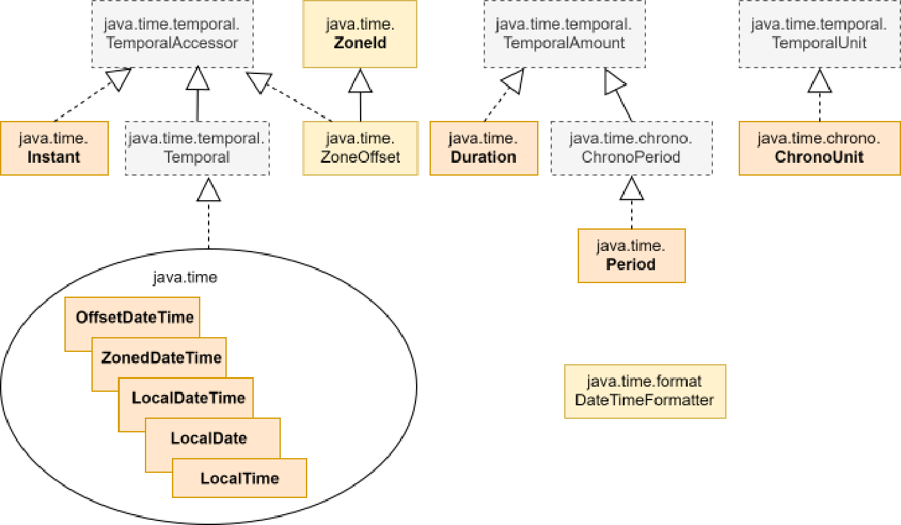
Trong sơ đồ trên, mười Lớp (Class) được hiển thị in đậm. Mặc dù kỳ thi chỉ tập trung vào mười Lớp (Class) này, việc hiểu rõ cấu trúc của các Lớp (Class) liên quan cũng rất quan trọng. Trước tiên, chúng ta hãy cùng xem qua tổng quan về các package và Lớp (Class) được hiển thị trong sơ đồ trên, sau đó tôi sẽ đi vào chi tiết của chúng.
Package java.time☝
Đây là package quan trọng nhất của framework ngày/giờ. Hầu hết các chương trình ứng dụng chỉ cần các Lớp (Class) được định nghĩa trong package này. Các Lớp (Class) được định nghĩa trong package này dựa trên hệ thống lịch ISO (Bạn không cần biết chi tiết về hệ thống lịch ISO). Tất cả các Lớp (Class) trong package này đều bất biến (immutable) và thread-safe.
Khía cạnh quan trọng nhất của các Lớp (Class) này là sự phân chia rõ ràng giữa các Lớp (Class) biểu diễn góc nhìn của máy tính về thời gian và các Lớp (Class) biểu diễn góc nhìn của con người về thời gian.
Instant: Lớp (Class) này đại diện cho góc nhìn của máy tính về thời gian. Như đã thảo luận trước đó, một
625
máy tính chỉ quan tâm đến số mili giây đã trôi qua kể từ Epoch. Đó chính xác là
những gì một Instant chứa đựng. Nó không có khái niệm về AM/PM hay múi giờ. Tuy nhiên,
vì điểm số không của dòng thời gian máy tính đã được định nghĩa tương ứng với 00.00AM1stJan,1970UTC,
việc chuyển đổi một Instant sang thời gian trong dòng thời gian UTC không yêu cầu bất kỳ
thông tin nào khác. Do đó, bạn có thể nói rằng một đối tượng (Object) Instant tương ứng chính xác với một ngày
và giờ trong UTC. Bạn có thể tạo một Instant cho bất kỳ khoảng thời gian nào đã trôi qua kể từ
epoch. Ví dụ, Instant.ofEpochMilli(1735711200000L).
LocalDate/LocalTime/LocalDateTime: Các lớp (Class) này chỉ đại diện cho một ngày, một giờ, hoặc
ngày và giờ mà không có bất kỳ chỉ dẫn nào về địa điểm áp dụng ngày/giờ đó. Hãy nghĩ
theo cách này - nếu ai đó nói với bạn rằng Tổng thống sẽ phát biểu trước quốc gia vào lúc 8PM vào ngày 1stJan2025,
bạn không thực sự chắc chắn chính xác khi nào bạn cần chuẩn bị sẵn sàng để xem vì bạn
chưa được cho biết địa điểm áp dụng ngày và giờ này. Nếu không có thông tin này,
bạn có thể xem quá sớm hoặc quá muộn. Do đó, bạn không thể lấy thông tin
có sẵn trong một đối tượng (Object) LocalDateTime và xác định một điểm cụ thể trên dòng thời gian của máy tính.
Tốt nhất, bạn chỉ có thể đoán rằng thời gian này là tương ứng với khu vực bạn đang ở và sử dụng thông tin
đó để quyết định khi nào cần sẵn sàng xem bài phát biểu của Tổng thống. Theo nghĩa đó, nó
đại diện cho ngày/giờ của hệ thống mà chương trình đang chạy. Bạn sẽ thấy một vài
cách để tạo các đối tượng (Object) thuộc các kiểu này trong phần tiếp theo.
ZoneId: Một ZoneId xác định một khu vực hoặc vùng, được gọi là “Múi giờ (Time Zone)”, mà ở đó có các quy tắc
chính xác để xác định ngày và giờ trong ngày đối với UTC. Các quy tắc này
cho phép bạn lấy một điểm trên dòng thời gian của máy tính, tức là một đối tượng (Object) Instant , và xác định
chính xác ngày và giờ ở khu vực đó tại thời điểm đó. Lưu ý rằng bản thân đối tượng (Object) ZoneId không
chứa bất kỳ quy tắc nào. Nó chỉ là một id. JDK duy trì các quy tắc trong một loại cơ sở dữ liệu nội bộ (thực chất là trong
lớp (Class) ZoneRules , nhưng bạn không cần phải lo lắng về nó) bên trong thư viện tiêu chuẩn của nó,
có thể được lấy ra bằng cách sử dụng id này. Có nhiều cách để tạo một đối tượng (Object) ZoneId nhưng
thông thường, bạn sẽ thấy một ZoneId được tạo bằng cách sử dụng một chuỗi có định dạng <area>/<city>. Ví
dụ, ZoneId.of("Asia/Calcutta") hoặc ZoneId.of("America/New_York"). Nếu bạn
xem JavaDoc của phương thức of , bạn sẽ nhận thấy rằng framework nền tảng
do JDK cung cấp khá mạnh mẽ và có thể tạo ZoneId từ một
626
chuỗi được viết dưới nhiều định dạng khác nhau. Mặc dù vậy, chuỗi dùng để tạo một ZoneId bằng cách sử dụng phương thức
of phải khớp với một múi giờ chính thức trong cơ sở dữ liệu của JDK hoặc ở định dạng
chỉ định chính xác lượng “offset” chẳng hạn như UTC+01:15. (Đừng lo lắng, định dạng này không
quan trọng đối với kỳ thi). Việc cố gắng tạo một ZoneId cho một nơi không tồn tại chẳng hạn
như ZoneId.of("Somewhere/Timbaktoo"); sẽ khiến
một java.time.zone.ZoneRulesException bị ném ra kèm theo thông báo, Unknown time-
zone ID: Somewhere/Timbaktoo.
ZonedDateTime: Một đối tượng ZonedDateTime biểu diễn ngày và giờ trong một múi giờ
cụ thể. Do đó, nó cần hai thứ - số mili giây đã trôi qua kể từ epoch và
ZoneId của múi giờ mà nó biểu diễn thời gian. Nó sử dụng ZoneId để lấy tất cả các quy tắc
ảnh hưởng đến ngày/giờ được sử dụng trong múi giờ đó và áp dụng chúng để hiển thị cho bạn thời gian của khu vực đó.
Nói một cách bình dân, ví dụ, nếu người dân ở một múi giờ cụ thể chỉnh đồng hồ của họ lùi lại hoặc
tiến lên vào các ngày nhất định trong năm (chẳng hạn như để tiết kiệm ánh sáng ban ngày), thì một đối tượng ZonedDateTime được
tạo cho múi giờ đó sẽ biết các ngày đó và lượng điều chỉnh cần áp dụng để hiển thị
thời gian chính xác ở khu vực đó tại bất kỳ thời điểm nào. Vì một ZonedDateTime lấy tất cả các quy tắc áp dụng
cho múi giờ đó bằng cách sử dụng ZoneId, một ZoneId là cần thiết để tạo một ZonedDateTime.
OffsetDateTime: - Lớp OffsetDateTime hơi kỳ lạ vì nó không biểu diễn
ngày giờ cục bộ (local datetime) cũng như không biểu diễn ngày giờ ở bất kỳ vùng địa lý cụ thể nào. Thực chất nó
chỉ chứa hai thứ - số mili giây đã trôi qua sau epoch và một lượng chênh lệch (offset)
gọi là “zone offset”, không gì khác ngoài lượng thời gian mà thời gian được biểu diễn bởi
OffsetDateTime này khác biệt so với UTC. Vì một OffsetDateTime không biểu diễn thời gian
cho bất kỳ vùng địa lý cụ thể nào, nó không quan tâm đến các quy tắc đặc thù của vùng. Theo một cách nào đó, một
đối tượng OffsetDateTime biểu diễn ngày/giờ của một địa điểm tưởng tượng luôn luôn “lệch” (offset)
so với UTC một lượng bằng giá trị offset đã cho. Lượng chênh lệch này được nắm giữ bởi một instance của
lớp ZoneOffset, lớp kế thừa từ ZoneId. Bạn thực sự có thể tạo một khoảng chênh lệch giờ (zone offset) với bất kỳ
lượng thời gian nào như thế này:
ZoneOffset zo = ZoneOffset.ofHoursMinutes(1, 10); //creates a ZoneOffset of 1 hour
and 10 minutes
“id” của ZoneOffset này là “+01:10”. Tất nhiên, bạn sẽ không thể tìm thấy bất kỳ “quy tắc” nào cho
múi giờ này vì +1:10 không phải là tên múi giờ chính thức của bất kỳ khu vực nào trong
627
trên thế giới nhưng nếu bạn tạo một ZonedDateTime sử dụng ZoneOffset này, thời gian ở địa điểm giả tưởng này sẽ luôn đi trước UTC 1 giờ và 10 phút.
Period: Period biểu thị một lượng thời gian dựa trên ngày, tính theo ngày, tháng và năm. Nó không có khái niệm về giờ, phút và giây.
Duration: Duration biểu thị một lượng thời gian dựa trên thời gian, tính theo giờ, phút và giây. Nó không có khái niệm về ngày, tháng hay năm.
Việc hiểu rõ sự khác biệt giữa Period và Duration là rất quan trọng. Mặc dù một Period biểu thị 1 ngày tương đương với một Duration biểu thị 24 giờ, cả hai lại khác nhau về mặt khái niệm. Việc cộng thêm một Period 1 ngày vào một ngày cho trước sẽ chỉ tăng phần ngày của ngày đó và không ảnh hưởng đến thành phần thời gian, nhưng việc cộng thêm một Duration 24 giờ sẽ cộng thêm 24 giờ vào phần thời gian, từ đó cũng làm thay đổi cả phần ngày. Ví dụ, việc cộng thêm một Period 1 ngày vào ngày trước ngày bắt đầu giờ mùa hè sẽ chỉ đơn thuần tăng ngày mà không ảnh hưởng đến giờ. Do đó, ngày 9 tháng 3 năm 2024 lúc 10 PM sẽ trở thành ngày 10 tháng 3 năm 2024 10 PM. Nhưng việc cộng thêm một Duration 24 giờ vào cùng ngày đó sẽ làm thay đổi ngày thành ngày 10 tháng 3 năm 2024 11 PM, bởi vì vào ngày cụ thể này, đồng hồ đã được điều chỉnh chạy nhanh hơn 1 giờ. Vì thế, 10 PM + 24 giờ không phải là 10 PM mà là 11 PM của ngày hôm sau.
Package này cũng chứa hai enum - Month và DayOfWeek. Month chứa các giá trị từ JANUARY đến DECEMBER và DayOfWeek chứa các giá trị từ MONDAY đến SUNDAY. Sẽ tốt hơn nếu sử dụng các enum này thay vì số nguyên khi tạo các đối tượng ngày/giờ vì chúng giúp mã nguồn dễ đọc hơn và cũng giúp bạn tránh được sự nhầm lẫn do việc đánh chỉ số gây ra. Ví dụ, LocalDate.of(2024, Month.JANUARY, 10) dễ đọc hơn LocalDate.of(2024, 1, 10).
Package java.time.temporal☝
628
Package này chứa các Interface (Giao diện) cơ bản như Temporal, TemporalAmount,
TemporalUnit, TemporalField và TemporalAccessor của framework Ngày/Giờ.
Các Interface (Giao diện) này được triển khai bởi nhiều Class (Lớp) khác nhau của package java.time .
Việc có các Interface (Giao diện) cơ bản chung cho các Class (Lớp) liên quan cho phép các ứng dụng thao tác trên các Class (Lớp)
một cách đồng nhất. Ví dụ, bạn có thể thêm một Period vào một LocalDate theo cùng một cách như khi thêm một
Duration vào một ZonedDateTime , nghĩa là bằng cách gọi method addTo trên một instance Period hoặc
Duration hoặc bằng cách gọi method plus trên một instance LocalDate hoặc ZonedDateTime .
Điều này khả thi vì cả Period và Duration đều triển khai
TemporalAmount, vốn khai báo method addTo(Temporal t) và cả LocalDate
và ZonedDateTime đều triển khai Temporal.
Kỳ thi không đề cập đến package này trong các mục tiêu thi, nhưng toàn bộ cơ chế liên quan
đến việc thao tác ngày/giờ đều được vận hành bởi các Interface (Giao diện) của package này. Nhiều
method mà bạn sẽ sử dụng khi làm việc với các Class (Lớp) ngày/giờ thực chất được khai báo trong các
Interface (Giao diện) của package này.
Enum ChronoUnit của package này đặc biệt hữu ích vì nó triển khai TemporalUnit
và định nghĩa một tập hợp đơn vị ngày/giờ tiêu chuẩn như DAYS, MONTHS, YEARS, HOURS,
MINUTES, SECONDS, NANOS, và WEEKS. Các đơn vị này được sử dụng khi thao tác và
tạo các Đối tượng (Object) ngày và giờ. ChronoUnit cũng ghi đè (override) method long between(Temporal
temporal1Inclusive, Temporal temporal2Exclusive) của TemporalUnit, vốn
thường được dùng để tính toán khoảng chênh lệch giữa hai giá trị ngày/giờ theo đơn vị được
định nghĩa bởi instance ChronoUnit .
Package java.time.format☝
Package này chứa các Class (Lớp) hỗ trợ để chuyển đổi các Đối tượng (Object) ngày/giờ thành chuỗi và parse (phân tích cú pháp)
các chuỗi thành các Class (Lớp) ngày/giờ. DateTimeFormatter và FormatStyle là các Class (Lớp) được sử dụng nhiều nhất
trong package này.
629
Nếu duyệt qua JavaDoc của API Ngày và Giờ (Date/Time API) mới, bạn sẽ thấy nhiều Lớp (Class)
khác nhau và nhiều phương thức khác nhau trong mỗi Lớp (Class) này. Sẽ rất dễ bị choáng ngợp, nhưng
đừng lo lắng. API này thực sự khá dễ hiểu một khi bạn nhận ra rằng chỉ có
bốn loại thao tác mà bạn có thể thực hiện với các Lớp (Class) này - tạo các Đối tượng (Object) mới, so sánh,
đọc trạng thái của các Đối tượng (Object), và chuyển đổi chúng thành chuỗi (String). Không có phương thức nào để
cập nhật vì các Đối tượng (Object) của các Lớp (Class) này là bất biến. Tất cả các Lớp (Class) liên quan đều có
các phương thức tương tự để thực hiện các thao tác này. Trong các phần tiếp theo, tôi sẽ giải thích từng thao tác
này kèm theo các ví dụ.
22.2 Tạo các Đối tượng (Object) Ngày/Giờ☝
Hãy nhớ rằng không có Lớp (Class) ngày/giờ nào có constructor public. Do đó,
không thể tạo chúng bằng cách sử dụng toán tử new . Nếu bạn thấy bất kỳ dòng mã nào dạng new LocalDate()
ở bất kỳ đâu, hãy chọn ngay phương án nói rằng, “compilation fails”!
Thay vì sử dụng các constructor, API Ngày và Giờ (Date and Time API) mới cung cấp một số cách khác để tạo
các Đối tượng (Object) ngày/giờ. Chúng có thể được phân loại rộng rãi thành hai nhóm:
Các phương thức factory publicstatic nạp chồng (overloaded) có tên là now, of, và from
Các phương thức instance public nạp chồng (overloaded) có tên là with và truncatedTo
Hãy cùng tìm hiểu chúng.
22.2.1 Sử dụng các phương thức static now/of/from☝
Các phương thức now☝
Các phương thức now trả về một thực thể (instance) đại diện cho ngày hoặc giờ hiện tại trên dòng thời gian
mà Lớp (Class) đó đại diện. Ví dụ, vì Lớp (Class) LocalDateTime đại diện
cho ngày và giờ của hệ thống mà chương trình đang chạy, LocalDateTime.now();
trả về một Đối tượng (Object) LocalDateTime được thiết lập
630
với ngày hiện tại và thời gian hiện tại được hiển thị bởi đồng hồ hệ thống. Hãy nhớ rằng
LocalDateTime không lưu giữ bất kỳ thông tin múi giờ nào. Vì vậy, LocalDateTime.now() chỉ
lấy các giá trị ngày và giờ hiện tại từ máy cục bộ và bỏ qua múi giờ.
LocalDate.now() và LocalTime.now() hoạt động tương tự.
OffsetDateTime.now() và ZonedDateTime.now() cũng thực hiện điều tương tự, ngoại trừ việc chúng lần lượt lấy thêm
thông tin về offset và múi giờ của đồng hồ hệ thống.
Mặt khác, lớp (Class) Instant biểu diễn số mili giây đã trôi qua kể từ
epoch (bạn còn nhớ chứ?) và vì vậy, Instant.now() trả về một đối tượng (Object) Instant chứa
số mili giây đã trôi qua kể từ epoch tại thời điểm đối tượng (Object) Instant đó được tạo.
Đoạn mã sau đây, được tôi chạy vào lúc 8:30:42 CH ngày 26 tháng 4 năm 2024 tại Ấn Độ (múi giờ hệ thống của tôi
được thiết lập thành Giờ chuẩn Ấn Độ, còn gọi là IST, nhanh hơn UTC 5,30 giờ), sẽ làm rõ
điều này:
Kết quả đầu ra được tạo bởi đoạn mã trên cho thấy rằng LocalDateTime không đọc bất kỳ thông tin offset
hay múi giờ nào từ đồng hồ của hệ thống. OffsetDateTime đọc thông tin offset
nhưng không đọc thông tin múi giờ. ZonedDateTime đọc cả hai.
Hãy quan sát chữ cái z được thêm vào cuối kết quả đầu ra của Instant.now() . Nó biểu thị UTC. Đồng thời
hãy quan sát rằng thời gian được in bởi Instant.now() là 5,30 giờ trước
631
các ngày-giờ local, offset, và zoned. Đó là bởi vì, IST nhanh hơn UTC 5.30 giờ.
Có các biến thể nạp chồng (overloaded) khác của phương thức now hoạt động theo cùng nguyên lý. Ví
dụ, bạn có thể tạo một ZonedDateTime biểu diễn thời gian hiện tại ở một múi giờ
khác bằng cách sử dụng ZonedDateTime.now(ZoneId zid). Do đó, nếu tôi gọi
ZonedDateTime.now(ZoneId.of("America/New_York")) khi thời gian hệ thống của tôi hiển thị
ngày 26 tháng 4 năm 2024 9PM IST, nó sẽ trả về ngày và giờ biểu diễn ngày 26 tháng 4 năm 2024
11.30AM EST vì múi giờ miền Đông Hoa Kỳ (US/Eastern) chậm hơn IST 9.30 giờ. (IST nhanh hơn
UTC 5.30 giờ và EST chậm hơn UTC 4 giờ, do đó, EST chậm hơn IST 9.30 giờ)
Vì Period và Duration biểu thị một khoảng thời gian chứ không phải một thời điểm, chúng không có
phương thức now() . Nhưng chúng có một hằng số tĩnh tên là ZERO, biểu thị một
khoảng thời gian/thời lượng bằng không.
Các phương thức of☝
Các phương thức of cho phép bạn tạo một đối tượng (object) cho bất kỳ ngày hoặc giờ nào bằng cách truyền vào các thành phần riêng lẻ
của ngày/giờ. Có quá nhiều phương thức loại này để có thể liệt kê hết ở đây, vì vậy, tôi sẽ chỉ trình bày một vài
ví dụ để minh họa cách chúng được sử dụng:
Có ba điểm mà bạn nên ghi nhớ về các phương thức of :
632
Việc đánh chỉ mục cho tham số tháng bắt đầu từ 1. Nói cách khác, để chỉ định
tháng Một, bạn phải truyền vào 1 (hoặc sử dụng giá trị enum Month.JANUARY).
Họ sử dụng đồng hồ 24 giờ cho tham số hour. Vì vậy, để chỉ định
11 giờ sáng (11 AM), bạn cần truyền vào 11 và để chỉ định 11 giờ tối (11 PM), bạn cần truyền vào
23.
Họ sẽ ném ra java.time.DateTimeException (kế thừa từ
java.lang.RuntimeException và do đó là một ngoại lệ unchecked (Unchecked Exception)) nếu giá trị
được truyền cho bất kỳ trường nào vượt quá phạm vi. Ví dụ, LocalDate.of(2018, 2, 29); sẽ
ném ra DateTimeException vì tháng Hai năm 2018 không có 29 ngày. Tương tự,
LocalTime.of(24, 10); cũng sẽ ném ra DateTimeException vì phạm vi của
tham số giờ chỉ từ 0 đến 23.
Lớp (Class) Period có các phương thức of sau:
static Period of(int years, int months, int days)
static Period ofDays(int days)
static Period ofMonths(int months)
static Period ofWeeks(int weeks)
static Period ofYears(int years)
Dưới đây là một vài ví dụ minh họa cách sử dụng chúng:
out.print(Period.ofDays(40)); //prints P40D
out.print(Period.ofMonths(-2)); //negative values are also acceptable. prints P-2M
out.print(Period.of(0, 1, 10); //prints P1M10D
Lưu ý rằng một Period 40 ngày không giống với một Period 1 tháng và 10 ngày vì 1
tháng không phải lúc nào cũng bằng 30 ngày.
Lớp (Class) Duration có các phương thức of tương tự:
Các phương thức from tương tự như các phương thức of ngoại trừ việc thay vì chỉ định một giá trị cho từng thuộc tính một cách riêng lẻ, bạn chỉ định một đối tượng (Object) TemporalAccessor khác. Đối tượng (Object) TemporalAccessor này được sử dụng làm nguồn cho tất cả các thuộc tính cần thiết để tạo ra đối tượng (Object) mong muốn. Ví dụ:
Hãy quan sát rằng một LocalDateTime có cả thành phần ngày cũng như thành phần thời gian, và do đó, có thể sử dụng một LocalDateTime để tạo một LocalDate cũng như một LocalTime . Nhưng không thể sử dụng một LocalDate để tạo một LocalDateTime hoặc một LocalTime bởi vì LocalDate không có thành phần thời gian. Tương tự như vậy, bạn không thể tạo một ZonedDateTime bằng cách sử dụng một LocalDateTime vì LocalDateTime không có thông tin múi giờ (zone). Do đó, đoạn mã sau đây sẽ ném ra một DateTimeException tại thời điểm runtime:
LocalDate ld = LocalDate.now();
LocalDateTime ldt = LocalDateTime.from(ld); //DateTimeException at run
time
LocalTime lt = LocalTime.from(ld); //DateTimeException at run time
ZonedDateTime zdt = ZonedDateTime.from(LocalDateTime.now());
//DateTimeException at run time
Tương tự như vậy, bạn có thể tạo một Period bằng cách sử dụng một Period khác nhưng bạn không thể tạo một Period bằng cách sử dụng một Duration bởi vì Duration làm việc với giờ, phút, và
634
giây, trong khi Period cần ngày, tháng và năm. Việc tạo một Duration từ một Period cũng sẽ không hoạt động.
22.2.2 Sử dụng các phương thức instance plus/minus/with/at/truncatedTo☝
Hãy nhớ rằng tất cả các đối tượng (Object) date/time đều là bất biến (immutable) và do đó, bạn không thể thay đổi chúng. Nhưng bạn có thể sử dụng các giá trị từ một đối tượng (Object) date/time hiện có để xây dựng một đối tượng (Object) date/time mới. Điều này rất hữu ích khi đối tượng (Object) mới mà bạn muốn tạo chỉ khác biệt một chút so với đối tượng (Object) hiện có. Ví dụ, bạn có thể đã có một LocalDate và muốn tạo một LocalDateTime bằng cách thêm một thành phần thời gian vào cùng ngày đó, hoặc bạn có một LocalDateTime và chỉ muốn có một LocalDate, hoặc bạn có một LocalDate cho ngày hôm nay và muốn có một LocalDate cho ngày mai. API cung cấp một số phương thức cho mục đích này.
Để giúp bạn dễ nhớ hơn, tôi đã phân loại các phương thức này dựa trên cách chúng thay đổi các giá trị hiện có:
các phương thức trả về một đối tượng (Object) mới bằng cách thay đổi một trường của một đối tượng (Object) khác -
plus/minus/with/truncatedTo
các phương thức trả về một đối tượng (Object) mới bằng cách thêm hoặc xóa một trường của một đối tượng (Object) khác -
at/truncatedTo
1. Các phương thức instance thay đổi giá trị trường hiện có
Các phương thức plus/minusXXX
Cả LocalDate và Period đều có ba thành phần: ngày, tháng và năm. Để sửa đổi bất kỳ thuộc tính nào trong số này, bạn có các phương thức plusDays, plusWeeks, plusMonths, và plusYears cũng như minusDays, minusWeeks, minusMonths, và
635
các phương thức minusYears trong LocalDate cũng như trong Period. Tương tự, LocalTime có
các phương thức plusHours, plusMinutes, plusSeconds, plusNanos và minusHours,
minusMinutes, minusSeconds, minusNanos để sửa đổi các thuộc tính mà nó
hỗ trợ.
Lưu ý rằng LocalTime không có các phương thức để thay đổi ngày, tháng, và năm vì
LocalTime không có các thuộc tính này, trong khi LocalDateTime có các phương thức plus và minus
cho tất cả các thuộc tính của LocalDate cũng như LocalTime.
Ví dụ:
LocalDate ld1 = LocalDate.now();
LocalDate ld2 = ld1.plusDays(10);
Period p = Period.ZERO.plusDays(10);
Các phương thức plusXXX và minusXXX chỉ nhận một đối số vì tên của
thuộc tính cần cập nhật được ngụ ý bởi chính tên của chúng.
Có thêm bốn phương thức plus và minus thực hiện cùng một công việc nhưng theo một cách khác —
plus(long amountToAdd, TemporalUnit unit), plus(TemporalAmount amountToAdd),
minus(long amountToSubtract, TemporalUnit unit), minus(TemporalAmount
amountToSubtract). Các phương thức này xác định thuộc tính cần thay đổi thông qua các đối số
được truyền vào chúng.
Hãy nhớ lại từ sơ đồ phân cấp Lớp (Class) mà tôi đã trình bày trước đó rằng Period implements
TemporalAmount và ChronoUnit là một enum implements TemporalUnit.
Bạn cần cẩn thận khi sử dụng ngày và tháng khi thao tác với ngày. Cộng thêm một tháng
vào một ngày không giống như cộng thêm 30 ngày vào ngày đó vì số ngày trong một tháng
phụ thuộc vào tháng của ngày mà bạn muốn thao tác. Ví dụ sau đây cho thấy
sự khác biệt:
Nếu bạn cố gắng cộng thêm hoặc trừ đi một trường không được hỗ trợ bởi một Lớp (Class) cụ thể, một
DateTimeException sẽ bị ném ra. Ví dụ, việc cộng thêm giờ vào một LocalDate hoặc cộng thêm
tháng vào một LocalTime, sẽ ném ra một DateTimeException khi runtime.
Các phương thức withXXX
Nếu bạn muốn chỉ định một giá trị chính xác cho một thuộc tính thay vì cộng thêm hoặc trừ đi từ một
thuộc tính, bạn có thể sử dụng các phương thức withXXX .
Ví dụ:
LocalDate ld = LocalDate.now();//doesn't matter what the year is now
LocalDate ld2 = ld.withYear(2025);//change year to 2025
ld2 = ld.withMonth(2);//change month to Feb
ld2 = ld.withDayOfMonth(4);//change date to 4
LocalDateTime ldt = LocalDateTime.now();
637
ldt = ldt.withYear(2019);//change year to 2019
ldt = ldt.withHour(23);//change hour to 23
Period có các phương thức withXXX tương tự ngoại trừ tên của các phương thức kết thúc bằng chữ ’s’:
Period p1 = Period.ZERO.withDays(10);
p1 = p1.withMonths(2);
p1 = p1.withYears(1); //p1 now points to a Period with 1 year, 2
months, and 10 days
Period cũng có một phương thức negated trả về một Period mới với lượng giá trị của từng thành phần bị phủ định (đổi dấu). Ví dụ Period.of(1, 3, 20).negated(); trả về một Period có giá trị -1 năm, -3 tháng, và -20 ngày. Duration cũng có các phương thức with và negated tương tự.
2. Các phương thức đối tượng (instance method) dùng để thêm hoặc loại bỏ các thuộc tính vào/khỏi một đối tượng hiện có - at và truncatedTo
Các phương thức atXXX
Sẽ ra sao nếu bạn có một LocalDate và muốn có một LocalDateTime bằng cách thêm thành phần thời gian vào ngày hiện có? Thật vậy, LocalDate có một số phương thức atTime cho phép bạn tạo ra một LocalDateTime bằng cách sử dụng một LocalDate.
Ví dụ:
LocalDate ld = LocalDate.now();
LocalDateTime ldt = ld.atTime(10, 15); //same date with 10hr 15mins
ldt = ld.atTime(10, 15, 45); //same date with 10hr 15mins 45 secs.
Tương tự, LocalTime có phương thức atDate(LocalDate ld), trả về một LocalDateTime và LocalDateTime có phương thức atZone(ZoneId id), trả về một
638
ZonedDateTime.
LocalTime lt = LocalTime.now();
LocalDate ld = LocalDate.now();
LocalDateTime ldt = lt.atDate(ld); //add a LocalDate to LocalTime.
Lưu ý rằng LocalDateTime không có atTime hoặc atDate vì LocalDateTime đã có sẵn cả thành phần thời gian và ngày. Nhưng nó không có offset hoặc múi giờ (zone). Do đó, LocalDateTime có các phương thức atOffset và atZone:
Period và Duration không có bất kỳ phương thức atXXX nào.
Phương thức truncatedTo
Phương thức truncatedTo trả về một bản sao của date-time gốc với các trường nhỏ hơn đơn vị được chỉ định được thiết lập về không. Ví dụ, việc làm tròn (truncating) với đơn vị DAYS sẽ thiết lập các trường giờ, phút, giây và nano giây về không:
Mặc dù không quan trọng cho kỳ thi, hãy lưu ý rằng không phải tất cả các lớp date-time đều hỗ trợ làm tròn (truncation) với mọi đơn vị có sẵn. Ví dụ, ZonedDateTime không hỗ trợ làm tròn với các đơn vị lớn hơn DAYS.
22.2.3 Tạo đối tượng Date/Time sử dụng các phương thức parse static☝
639
Tất cả các lớp ngày/giờ đều có hai phương thức parse trả về một đối tượng của lớp tương ứng bằng cách sử dụng thông tin có trong đối số chuỗi. Ví dụ, LocalDate có hai phương thức sau:
Cách các phương thức này parse một chuỗi cho trước cần giải thích thêm một chút. Chúng không thể parse một chuỗi ngẫu nhiên bất kỳ thành ngày/giờ. Chuỗi mà bạn truyền vào phải chứa dữ liệu ngày/giờ theo một định dạng cụ thể. Định dạng này được mô tả bởi một đối tượng thuộc lớp
java.time.format.DateTimeFormatter.
Một đối tượng DateTimeFormatter hiểu định dạng của thông tin ngày/giờ có trong chuỗi. Mặc dù bạn có thể tự thiết kế định dạng ghi ngày của riêng mình, các định dạng tiêu chuẩn để ghi chuỗi ngày/giờ vẫn tồn tại, và lớp DateTimeFormatter cung cấp một số đối tượng DateTimeFormatter có sẵn để hiểu các định dạng tiêu chuẩn này. Các đối tượng này có thể được truy cập thông qua các biến public static của lớp DateTimeFormatter.
Bạn cần lưu ý đến ba biến như vậy — ISO_LOCAL_DATE, ISO_LOCAL_TIME, và
ISO_LOCAL_DATE_TIME — bởi vì khi bạn không truyền một formatter vào các phương thức parse của LocalDate/Time, đây là các formatter mà các phương thức parse sử dụng nội bộ để parse
chuỗi. LocalDate sử dụng ISO_LOCAL_DATE, LocalTime sử dụng ISO_LOCAL_TIME, và
LocalDateTime sử dụng ISO_LOCAL_DATE_TIME để parse chuỗi cho trước. Do đó, ví dụ,
việc gọi LocalDate.parse("2024-02-14"); sẽ cho ra cùng kết quả như
việc gọi LocalDate.parse("2024-02-14", DateTimeFormatter.ISO_LOCAL_DATE);
640
Cho mục đích kỳ thi, bạn chỉ cần biết rằng ISO_LOCAL_DATE yêu cầu các chuỗi có định dạng
yyyy-MM-dd , ISO_LOCAL_TIME yêu cầu các chuỗi có định dạng HH:mm hoặc HH:mm:ss , và
ISO_LOCAL_DATE_TIME yêu cầu các chuỗi có định dạng yyyy-MM-ddTHH:mm:ss hoặc yyyy-MM-ddTHH:mm
(bỏ qua phần nano giây của thành phần thời gian), trong đó yyyy đại diện cho năm có bốn
chữ số, MM đại diện cho tháng có hai chữ số, dd đại diện cho ngày có hai chữ số, HH đại diện cho giờ có hai
chữ số, mm đại diện cho phút có hai chữ số, và ss đại diện cho giây có hai chữ số. Bạn sẽ không bị
yêu cầu phải phân tích cú pháp các chuỗi phức tạp trong kỳ thi.
Hơn nữa, trừ khi đề bài có quy định khác, bạn nên trả lời câu hỏi với giả định rằng mã được thực thi với ngôn ngữ là tiếng Anh/Mỹ. Do đó, tên và tên viết tắt của các tháng sẽ bằng tiếng Anh.
Tương tự, các phương thức parse của OffsetDateTime sử dụng
DateTimeFormatter.ISO_OFFSET_DATE_TIME theo mặc định, các phương thức parse
của ZonedDateTime sử dụng DateTimeFormatter.ISO_ZONED_DATE_TIME và tương tự như vậy. Bạn không cần phải
biết chi tiết định dạng của các bộ định dạng này, nhưng bạn cần biết rằng chúng tồn tại để
không giả định một phương án là sai chỉ vì nó sử dụng một trong các bộ định dạng này.
Lớp DateTimeFormatter☝
Việc tạo một DateTimeFormatter để phân tích cú pháp một chuỗi không chuẩn cũng khá dễ dàng.
DateTimeFormatter có một phương thức static ofPattern(String pattern) và một phương thức static
ofPattern(String pattern, String locale) nhận đặc tả định dạng làm đối số. Ví dụ, nếu các ngày của bạn ở định dạng MMM/dd/yy , bạn có thể tạo một bộ định dạng
như thế này:
Đặc tả định dạng sử dụng các ký tự được định nghĩa trước để biểu thị các thành phần khác nhau của ngày/giờ.
Mặc dù không yêu cầu hiểu chi tiết về đặc tả này, nhưng bạn nên biết ý nghĩa của một vài ký tự cơ bản:
y là năm
M là tháng
d là ngày trong tháng
H là giờ trong ngày
m là phút
s là giây
n là nano giây
Phân tích cú pháp một chuỗi để tạo một Period hoặc một Duration☝
Lớp Period cũng có phương thức parse nhưng định dạng của một chuỗi period khá khác so với
ngày/giờ. Thật lòng mà nói thì nó trông có vẻ kỳ lạ khi bạn nhìn vào lần đầu tiên, nhưng thực tế thì nó rất
hợp lý. Nó tuân theo định dạng chu kỳ ISO-8601 và có dạng như thế này: PnYnMnD và PnW. Ở đây, n
đại diện cho một số và P, Y, M, D, và W là các chữ cái xuất hiện trong chuỗi. Chữ hoa hay chữ thường
của các chữ cái đều không quan trọng. Ví dụ, P1Y10M3d nghĩa là 1 năm, 10 tháng, và 3 ngày,
P1Y3D nghĩa là 1 năm và 3 ngày. p1Y2w nghĩa là 1 năm và 2 tuần.
Giờ đây việc tạo một Period bằng cách phân tích cú pháp một chuỗi đã trở nên dễ dàng. Ví dụ, Period p =
Period.parse("p1Y2w"); tạo ra một Period với 1 năm và 2 tuần. Bạn cũng có thể tạo một
Period với cả các giá trị âm, ví dụ, "-P2m3d" và "P-2m-3d" sẽ được phân tích cú pháp
thành cùng một Period đại diện cho -2 tháng và -3 ngày.
Việc phân tích cú pháp một Duration hoạt động tương tự nhưng nó sử dụng ký tự T để tách biệt thông tin thời gian
trong chuỗi đầu vào:
System.out.println(Duration.parse("P1DT3H4M"));
642
//prints PT27H4M
Lưu ý rằng vì Duration coi 1 ngày là 24 giờ, nó sẽ in ra 27H trong kết quả đầu ra ở trên.
Bạn sẽ không bị yêu cầu parse (phân tích) một chuỗi phức tạp trong kỳ thi. Kỳ thi không có các câu hỏi mẹo trong phần này và những kiến thức cơ bản được cung cấp ở trên sẽ là đủ để bạn trả lời các câu hỏi trong kỳ thi.
22.3 Truy cập các đối tượng Ngày/Giờ
22.3.1 Đọc trạng thái của các đối tượng Ngày/Giờ☝
Tất cả các đối tượng ngày/giờ đều cho phép đọc các thuộc tính của chúng thông qua các getter phù hợp. Ví dụ, mô tả JavaDoc API cho LocalDateTime liệt kê các getter sau:
int getDayOfMonth() : Lấy trường ngày trong tháng (day-of-month).
DayOfWeek getDayOfWeek() : Lấy trường ngày trong tuần (day-of-week), là một enum DayOfWeek.
int getDayOfYear() : Lấy trường ngày trong năm (day-of-year).
int getHour() : Lấy trường giờ trong ngày (hour-of-day).
int getMinute() : Lấy trường phút trong giờ (minute-of-hour).
Month getMonth() : Lấy trường tháng trong năm (month-of-year) sử dụng enum Month.
int getMonthValue() : Lấy trường tháng trong năm (month-of-year) từ 1 đến 12.
int getNano() : Lấy trường nano giây (nano-of-second).
int getSecond() : Lấy trường giây trong phút (second-of-minute).
int getYear() : Lấy trường năm (year).
Bên cạnh các phương thức trên, nó cũng có hai phương thức get đặc biệt sau:
643
int get(TemporalField field) : Lấy giá trị của trường được chỉ định từ ngày-giờ này dưới dạng một int.
long getLong(TemporalField field) : Lấy giá trị của trường được chỉ định từ ngày-giờ này dưới dạng một long.
LocalDate và LocalTime có cùng các phương thức get ngoại trừ các thuộc tính mà chúng không có. Ví dụ, LocalDate không có getHour và LocalTime không có getYear.
Các thuộc tính được hỗ trợ bởi Period☝
Period có các getter sau:
int getDays() : Lấy số ngày của period này.
int getMonths() : Lấy số tháng của period này.
int getYears() : Lấy số năm của period này.
long get(TemporalUnit unit) : Lấy giá trị của đơn vị được yêu cầu.
Lưu ý rằng tôi chỉ trích dẫn lại các mô tả từ JavaDoc vì không có nhiều điều để thảo luận về chúng. Chúng hoạt động đúng như tên gọi của mình. Kỳ thi cũng không có các câu hỏi mẹo về khía cạnh này.
Các thuộc tính được hỗ trợ bởi Duration☝
Vì Duration biểu diễn một lượng thời gian dưới dạng giây và nano giây, Duration không có getHours() hoặc getMinutes(). Nó chỉ hỗ trợ các phương thức getSeconds(), getNano(), và get(TemporalUnit unit).
644
22.3.2 Gọi chuỗi phương thức☝
Hầu hết các phương thức mà bạn đã thấy cho đến nay để tạo các đối tượng (Object) ngày/giờ mới (tức là now, of,
ofXXX, from, plusXXX, minusXXX và withXXX) đều trả về một tham chiếu có cùng kiểu. Điều
đó giúp bạn dễ dàng tùy chỉnh đối tượng (Object) mình muốn bằng cách gọi chuỗi nhiều phương thức trong một
câu lệnh. Ví dụ:
Trước hết, bạn nên làm quen với việc đánh giá kết quả của các lời gọi chuỗi phương thức như vậy vì bạn sẽ
thấy các đoạn mã đó trong kỳ thi. Thứ hai, việc đánh giá các lời gọi phương thức như vậy thường khá đơn giản nhưng
bạn cần đề phòng các mẹo sau đây mà bạn sẽ gặp trong kỳ thi:
Đề phòng các đối tượng (Object) bị thất lạc - Tôi đã nói điều này nhiều lần rồi nhưng vì rất
dễ quên, tôi sẽ nhắc lại một lần nữa - tất cả các đối tượng (Object) ngày/giờ đều bất biến. Do đó, không phương thức
nào thay đổi đối tượng (Object) mà chúng được gọi trên đó. Chúng trả về một đối tượng (Object) mới. Nếu bạn không
gán đối tượng (Object) mới này cho một biến, bạn sẽ không thấy kết quả của các lời gọi phương thức của mình. Nếu bạn
có thể biết đoạn mã sau sẽ in ra những gì, bạn sẽ hiểu tôi đang nói về điều gì:
Bạn nên thay đổi dòng thứ hai thành ld = ld.plusMonths(2).plusDays(10); nếu bạn
muốn thấy 2018-03-11 trong kết quả đầu ra.
Đề phòng kiểu trả về - Không giống như các phương thức tạo khác, các phương thức atXXX
trả về một tham chiếu có kiểu khác. Ví dụ: phương thức atTime của LocalDate
trả về một LocalDateTime. Nếu một lời gọi đến phương thức này là
645
được nhúng trong chuỗi gọi (call chain), hãy chú ý kỹ đến kiểu của biến tham chiếu mà kết quả được gán vào. Ví dụ, đoạn mã sau sẽ không biên dịch:
Hãy quan sát rằng phương thức of của LocalDate được gọi ở trên và do đó, nó trả về một LocalDate. Vì lý do tương tự, lệnh gọi tới plusDays cũng trả về một LocalDate. Nhưng lệnh gọi tới atTime trên một LocalDate trả về một LocalDateTime, và do đó, lệnh gọi tiếp theo tới plusMonths trong chuỗi sẽ trả về một LocalDateTime. Một đối tượng (Object) LocalDateTime không thể được gán cho một biến thuộc lớp (Class) LocalDate.
Hãy cẩn thận với các thuộc tính không được hỗ trợ - Bạn không thể cộng thêm ngày vào một LocalTime hoặc cộng thêm giờ vào một LocalDate. Do đó, mặc dù bạn có thể tin rằng đoạn mã sau sẽ in ra “2018-01-01” (nếu bạn tránh được cái bẫy đầu tiên), nhưng thực tế là nó sẽ không biên dịch vì LocalDate thậm chí không có các phương thức để thay đổi các trường liên quan đến thời gian.
LocalDate ld = LocalDate.of(2018, 1, 1);
ld.plusHours(10); // will not compile
System.out.println(ld);
Hãy cẩn thận với việc gọi chuỗi các phương thức static của Period - Điều này được giải thích tốt nhất qua mã nguồn. Bạn nghĩ đoạn mã sau sẽ in ra kết quả gì?
LocalDate ld = LocalDate.of(2018, 1, 31).of(2019, 1, 1);
System.out.print(ld+" ");
Period p1 = Period.ZERO;
Period p2 = p1.ofDays(1).ofMonths(1);
System.out.println(p2);
646
4. Kết quả in ra là – 2019-01-01 P1M . Từ kết quả đầu ra, có vẻ như lời gọi hàm ofDays(1) trên
p1 không có tác dụng!
Thực tế, lời gọi hàm of(2018, 1, 31) trên LocalDate cũng không có tác dụng, nhưng kết quả
được tạo ra trong trường hợp của một Period đáng lo ngại hơn.
Trong cả hai trường hợp, các phương thức ofXXX là các phương thức static và tạo ra một đối tượng (Object) mới
từ đầu. Không giống như các phương thức instance (ví dụ: with, plus, minus, ), các phương thức static (of và
parse) không xây dựng “dựa trên” một đối tượng (Object) trước đó. Như bạn đã biết, về mặt kỹ thuật, việc gọi một phương thức static trên một biến tham chiếu là hợp lệ
nhưng việc gọi một phương thức static trên một tham chiếu cũng tương tự như gọi một phương thức static trên tên lớp (Class). Do đó, LocalDate.of(2018,
1, 31) tạo ra một instance LocalDate mới và việc chuỗi một phương thức of khác vào
instance LocalDate này thực chất cũng tương tự như gọi độc lập LocalDate.of(2019, 1, 1).
Tuy nhiên, vì cả hai lời gọi đều cung cấp giá trị cho tất cả các trường của một
LocalDate , nên không có sự khác biệt trong kết quả cuối cùng.
Tương tự, trong trường hợp của Period , việc gọi ofMonths(1) trên một instance Period hiện có
cũng tương tự như gọi Period.ofMonths(1) . Tuy nhiên, vì phương thức ofMonths tạo ra
một Period với 0 năm và 0 ngày, nên có vẻ như lời gọi này đã làm mất giá trị của thuộc tính ngày
được thiết lập trước đó thông qua Period.ofDays(1) .
Trên thực tế, không có phương thức static nào sử dụng các giá trị của một instance ngày/giờ hiện có
ngay cả khi bạn gọi phương thức static bằng một tham chiếu thay vì tên lớp (Class). Nếu bạn
muốn tạo một Period với 1 tháng và 1 ngày, bạn nên sử dụng Period.of(0, 1,
1); .
22.4 Chuyển đổi các đối tượng (Object) ngày/giờ sang các kiểu khác nhau và các múi giờ khác nhau☝
Như đã giải thích trước đó, con người không thể hiểu được ý nghĩa của “1735711200000 mili giây kể từ
mốc thời gian epoch”. Ví dụ, bạn không thể bảo ai đó gọi cho bạn vào lúc
647
“1735711200000 kể từ epoch” ngay cả khi đó là một cách xác định thời gian hoàn toàn hợp lệ khi bạn
muốn họ gọi điện. Con người cần một định dạng như ngày 1 tháng 1 năm 2025 lúc 6 giờ sáng UTC để có thể hiểu được
thời gian. Tuy nhiên, ngay cả thời gian được viết dưới định dạng này cũng có thể gây bất tiện khi mọi người phân bố
rải rác về mặt địa lý và ở các múi giờ khác nhau. Ví dụ, nếu bạn đang ở New York,
bạn có thể bối rối nếu được yêu cầu tham gia một cuộc họp nhóm vào lúc 2 giờ chiều UTC ngày 29 tháng
3 năm 2024! Bạn sẽ mong đợi nhìn thấy thời gian theo múi giờ của mình, tức là 10 giờ sáng EST. Tất nhiên,
đồng nghiệp từ xa của bạn ở Ấn Độ có thể không mấy vui vẻ khi thấy họ phải tham gia họp vào lúc 7:30 tối,
nhưng đó lại là một vấn đề khác!
API Ngày và Giờ (Date and Time API) của Java giúp việc thực hiện các chuyển đổi này khá dễ dàng. Hãy bắt đầu với ví dụ
đã thảo luận ở trên. Một cách để ghi nhận ngày/giờ tại một múi giờ là tạo một ZonedDateTime sử dụng
LocalDateTime và múi giờ bạn muốn. Như sau:
LocalDateTime ldt = LocalDateTime.of(2024, 04, 29, 10, 0, 0); //no time zone here
ZonedDateTime nyTime = ldt.atZone(ZoneId.of("America/New_York"));
//time in New York, 2024-04-29T10:00-04:00[America/New_York]
Để xem cùng thời gian đó ở một múi giờ khác, bạn có thể làm:
Instant ins = nyTime.toInstant(); //get the time on machine's time line, i.e., UTC
ZonedDateTime indiaTime = ins.atZone(ZoneId.of("Asia/Calcutta"));
//translate it to the desired time zone
Hoặc bạn có thể sử dụng phương thức withZoneSameInstant của ZonedDateTime để thực hiện việc này chỉ với một lời gọi:
Cả hai cách tiếp cận đều sẽ thiết lập indiaTime thành 2024-04-
648
29T19:30+05:30[Asia/Calcutta].
Chuyển đổi qua lại giữa ZonedDateTime và OffsetDateTime
Vì cả ZonedDateTime và OffsetDateTime đều chứa một ID múi giờ (hãy nhớ rằng
ZoneOffset kế thừa từ ZoneId), ta hoàn toàn có thể chuyển đổi qua lại giữa hai kiểu dữ liệu này.
Tuy nhiên, hãy lưu ý rằng ZoneId của một OffsetDateTime thực tế không tương ứng với một
vùng địa lý cụ thể nào. Nó chỉ chứa khoảng lệch múi giờ (ví dụ như “-4:00”). Việc chuyển đổi một
ZonedDateTime sang một OffsetDateTime sẽ làm mất đi thông tin vùng địa lý trong khi vẫn giữ nguyên
khoảng lệch múi giờ. Do đó, việc chuyển đổi ngược OffsetDateTime đó về cùng mộtZonedDateTime ban đầu là không thể thực hiện được, như minh họa bởi đoạn mã sau:
Hãy chú ý rằng không có thông tin vùng địa lý trong thực thể ZonedDateTime được tạo ra
từ thực thể OffsetDateTime. Vì thực thể ZonedDateTime này không có bất kỳ thông tin
vùng địa lý nào, nó không thể áp dụng các quy tắc về giờ mùa hè (DST). Điều này được chứng minh bằng đoạn mã dưới đây:
Bạn có thể thấy rằng khoảng lệch múi giờ (time zone offset) của đối tượng ZonedDateTime mới được tạo từ
nyZdt đã thay đổi từ -4 thành -5 (vì DST kết thúc vào ngày 3 tháng 11 năm 2024) sau khi cộng thêm 7 tháng vào đó, nhưng nó
không thay đổi đối với newZdt bởi vì mặc dù một đối tượng ZonedDateTime biết cách xử lý
DST, nó chỉ có thể làm như vậy nếu được tạo bằng một đối tượng ZoneId chính thức.
Chuyển đổi từ ZonedDateTime và OffsetDateTime sang Instant
Vì một đối tượng Instant tương ứng với thời gian trong UTC (có khoảng lệch bằng 0), việc chuyển đổi một đối tượng
ZonedDateTime hoặc OffsetDateTime sang Instant là khả thi và chỉ yêu cầu trừ đi
lượng khoảng lệch (offset) của các kiểu này khỏi thời gian mà chúng chứa. Ví dụ, một đối tượng
ZonedDateTime có giá trị 2024-12-01T06:00-05:00[America/New_York] sẽ chuyển đổi thành một đối tượng
Instant biểu diễn 2024-12-01T11:00Z (vì 6 - -5 = 11). Tương tự, một đối tượng
ZonedDateTime có giá trị 2024-04-29T19:30+05:30[Asia/Calcutta] sẽ chuyển đổi thành một đối tượng
Instant biểu diễn 2024-04-29T14:00:00Z (vì 19:30 - 5:30 = 14:00).
Tuy nhiên, một đối tượng Instant không thể chuyển đổi sang ZonedDateTime hoặc
OffsetDateTime vì nó không biết múi giờ (zone id) hay lượng khoảng lệch (offset amount) nào được sử dụng cho việc
chuyển đổi. Tất nhiên, bạn có thể tạo chúng từ một đối tượng Instant bằng cách cung cấp một ZoneId hoặc một
ZoneOffset. Ví dụ: instant.atZone(ZoneId.of("America/New_York") hoặc
instant.atOffset(ZoneOffset.ofHoursMinutes(1, 20)).
22.5 Làm việc với Giờ tiết kiệm ánh sáng ngày (Daylight savings time)☝
Lưu ý: Nếu bạn chưa biết gì về Giờ tiết kiệm ánh sáng ngày (Daylight Savings Time), tốt nhất là bạn nên đọc một vài bài viết cơ bản
về nó trước khi đọc phần này. Bạn có thể bắt đầu với trang Wikipedia này:
Trong phần trước bạn đã thấy rằng 10AM ngày 29thApril2024 tại New York là
650
được chuyển đổi thành 7:30 PM ở Ấn Độ. Thông thường, Giờ miền Đông (Eastern Time - ET) đi sau UTC 5 giờ, nhưng vào ngày 29 tháng 4 năm 2024, Giờ tiết kiệm ánh sáng ngày (Daylight Savings Time - DST) đã có hiệu lực tại múi giờ ET (nghĩa là đồng hồ ở New York đã được chỉnh nhanh lên 1 giờ) và vì thế, ET chỉ đi sau UTC 4 giờ vào ngày này. Ấn Độ không áp dụng DST, vì vậy Giờ chuẩn Ấn Độ (Indian Standard Time - IST) luôn đi trước UTC 5 giờ 30 phút. Bạn có thể kiểm chứng các con số này bằng cách in ra nyTime.getOffset() và indiaTime.getOffset(). Chúng sẽ lần lượt in ra -04:00 và +05:30. Đó là lý do tại sao 10 AM ở ET được chuyển đổi thành 7:30 PM ở IST thay vì 8:30 PM vào ngày này. Ví dụ này cho thấy ZonedDateTime tự động xử lý các điều chỉnh cần thiết do DST.
Lưu ý rằng tôi chỉ sử dụng ET và IST để minh họa logic. Bạn không cần phải ghi nhớ độ lệch (offset) của bất kỳ múi giờ nào, hoặc ngày tháng và lượng thời gian thay đổi do DST yêu cầu cho bất kỳ địa điểm nào.
Trong kỳ thi thực tế, đề bài sẽ bao gồm thông tin này nếu nó cần thiết để đưa ra câu trả lời đúng.
Chuyển đổi vào các khoảng trống và khoảng chồng chéo tạo ra do DST
Việc chuyển đổi từ ET sang IST rất dễ dàng, nhưng điều gì sẽ xảy ra nếu sau khi chuyển đổi, ngày và giờ tại địa điểm đích không tồn tại? Điều này có thể xảy ra khi địa điểm đích áp dụng DST và ngày/giờ sau khi chuyển đổi lại rơi vào khoảng thời gian đồng hồ được điều chỉnh tiến lên.
Ví dụ: giả sử ET đi sau UTC 5 giờ và DST bắt đầu vào ngày 10 tháng 3 năm 2024 lúc 2 AM (nghĩa là ngay khi đồng hồ ở New York chỉ 2 AM vào ngày này, chúng sẽ được chỉnh tiến lên 1 giờ để hiển thị 3 AM), điều gì sẽ xảy ra nếu bạn cố gắng chuyển đổi 7:30 AM ngày 10 tháng 3 năm 2024 từ UTC sang ET?
Thông thường, thời gian ở ET sẽ là 2:30 AM, nhưng vào ngày 10 tháng 3 năm 2024, 2:30 AM không tồn tại ở ET!
LocalDateTime ldt = LocalDateTime.of(2024, 03, 10, 7, 30, 0); //10th
March 2024 7.30 AM
Đoạn mã trên in ra 2024-03-10T03:30-04:00[America/New_York], điều này cho thấy Java tự động chuyển thời gian về phía trước thành 3:30 sáng và chênh lệch múi giờ (zone offset) thành -4 do DST khi thời gian tại điểm đến rơi vào khoảng trống thời gian đó.
Điều ngược lại xảy ra khi DST kết thúc. Đồng hồ được dịch lùi lại 1 giờ. Vì vậy, ví dụ, vì DST kết thúc lúc 2 giờ sáng ngày 3 tháng 11 năm 2024 tại New York, ngay khi đồng hồ chạm mốc ngày/giờ này, chúng sẽ được chuyển lùi lại thành 1 giờ sáng. Do đó, người dân ở New York được trải nghiệm khoảng thời gian từ 1 giờ sáng đến 2 giờ sáng hai lần trong ngày hôm đó! Trong giờ đầu tiên, chênh lệch múi giờ (Zone offset) là -4 (vì DST vẫn đang được áp dụng tại thời điểm đó) và trong giờ thứ hai, nó là -5. Điều này nghe có vẻ thú vị, nhưng điều gì sẽ xảy ra khi một mốc thời gian từ một múi giờ khác không áp dụng DST trong khoảng thời gian này được chuyển đổi sang giờ New York?
Hãy cùng phân tích với cùng hai múi giờ là UTC và ET. Hãy tưởng tượng rằng bạn đang chuyển đổi thời gian liên tục từ 4 giờ sáng UTC trở đi sang ET. Việc chuyển đổi bất kỳ thời gian nào trước 5 giờ sáng UTC sang ET là rất dễ dàng. Vì DST đang ở trạng thái "BẬT" ("ON") tại ET trong khoảng thời gian đó, nên thời gian ở ET sẽ chỉ là UTC trừ đi 4 (thay vì UTC trừ đi 5). Vì vậy, 5 giờ sáng UTC sẽ là 1 giờ sáng ET, không còn nghi ngờ gì nữa. Trong khoảng thời gian từ 5 giờ sáng UTC (bao gồm) đến 6 giờ sáng UTC (không bao gồm), DST vẫn đang BẬT vì đồng hồ ở ET chưa chạm đến
652
chưa đến 2AM. Vì vậy, khoảng thời gian từ 5AM UTC (bao gồm) đến 6AM UTC (không bao gồm) ánh xạ tới 1AM ET
(bao gồm) đến 2AM ET (không bao gồm) với offset là -4. Bây giờ, đồng hồ ở ET chạm mốc 2AM và
thời gian ở ET lùi lại về 1AM. Do đó, 6AM UTC cũng ánh xạ tới 1AM ET nhưng với offset là -5.
Hãy quan sát rằng hai khoảng thời gian trong UTC (5AM đến < 6AM và 6AM đến <7AM) ánh xạ tới cùng một khoảng thời gian
trong ET (1AM đến <2AM) nhưng với các offset khác nhau. Đoạn mã sau đây sẽ thể hiện rõ điều này:
Hãy quan sát rằng mặc dù thời gian trong cả hai trường hợp đều là 1AM, các offset là -4 và -5. Do đó,
việc chuyển đổi các ngày/giờ này ngược lại UTC sẽ cho ra kết quả là 5AM UTC và 6AM UTC tương ứng.
Một ví dụ khác:
//Given that DST starts on 2AM, 9th March 2025 and ends on 2AM,
2nd Nov 2025
ZoneId ny = ZoneId.of("America/New_York"); LocalTime lt =
LocalTime.of(1, 10);
ZonedDateTime zdt1 = ZonedDateTime.of(LocalDate.of(2025, 3, 9), lt, ny);
Có thể so sánh các đối tượng (Object) date/time bằng cách sử dụng các phương thức instance của chính các lớp (Class) date/time hoặc bằng cách tìm ra sự khác biệt giữa chúng bằng cách sử dụng lớp (Class) ChronoUnit.
22.6.1 So sánh các đối tượng (Object) date/time☝
Có bốn cách để so sánh các đối tượng (Object) date/time.
Sử dụng phương thức equals - Tất cả các lớp (Class) date/time đều ghi đè (override) phương thức equals để so sánh nội dung của hai đối tượng (Object). Chúng chỉ trả về true nếu đối số là một đối tượng (Object) thuộc cùng một lớp (Class) và nội dung của chúng trùng khớp hoàn toàn.
LocalDate ld1 = LocalDate.now();//assuming today is 2024-04-30
Hãy nhớ lại rằng signature của equals là equals(Object obj), do đó, không xảy ra lỗi biên dịch khi bạn truyền một đối tượng (Object) của một lớp (Class) khác vào equals.
Sử dụng phương thức compareTo - Tất cả các lớp (Class) ngày/giờ đều implement interface (Giao diện) java.util.Comparable, giao diện này có phương thức compareTo. Khác với phương thức equals, phương thức này trả về một giá trị int. Nếu ngày/giờ được truyền trong đối số (argument) muộn hơn, phương thức này sẽ trả về một số âm; nếu đối số giống hệt nhau, phương thức này trả về 0, và ngược lại sẽ trả về một số dương.
Người ta có thể kỳ vọng rằng giá trị trả về sẽ là khoảng chênh lệch giữa hai ngày, nhưng phần mô tả JavaDoc API cho phương thức này không đưa ra bất kỳ cam kết nào như vậy. Do đó, bạn chỉ nên dựa vào dấu của giá trị trả về chứ không nên dựa vào giá trị thực tế.
Sử dụng các phương thức isAfter/isBefore - Đúng như tên gọi của chúng, các phương thức này kiểm tra xem ngày/giờ này là sau hay trước ngày/giờ được truyền vào trong đối số (argument).
Kiểu của đối số phải giống với kiểu của đối tượng mà các phương thức này được gọi trên đó. Vì vậy, ví dụ, một câu lệnh như
zonedDateTime.isAfter(localDateTime) sẽ không biên dịch.
Việc xác định kết quả của isAfter / isBefore là rất dễ dàng khi các ngày được so sánh
nằm trong cùng một múi giờ nhưng có thể gây bối rối khi chúng không cùng múi giờ. Ví dụ, bạn có thể
đoán được đoạn mã dưới đây sẽ in ra kết quả gì không?
LocalDateTime someDate = LocalDateTime.of(2025, 1, 1, 10, 0, 0);
//1st Jan 2025 10 AM
ZonedDateTime zJohn = someDate.atZone(ZoneId.of("America/New_York")); //zone offset is -5:00
ZonedDateTime zJane = someDate.atZone(ZoneId.of("Asia/Calcutta")); //zone offset is +5:30
System.out.println(zJohn.isAfter(zJane));
Đừng nản lòng nếu bạn không hiểu điều này. Cách thực hiện là trước hết hãy đưa hai ngày này về cùng một
dòng thời gian chung, cụ thể là UTC. Bạn đã thấy cách làm điều đó ở phần trước. zJohn
khi chuyển đổi sang UTC là 2025/1/1 15:00 (10 - -5 = 15) và zJane khi chuyển đổi sang UTC là
2025/1/1 04:30 (10 - 5.30 = 4.30). Giờ đây, thật dễ dàng để thấy rằng zJohn sau zJane
(vì 15:00 là sau 04:30) và do đó, câu lệnh
656
sẽ in ra true.
Sử dụng phương thức isEqual - Phương thức này chỉ được cung cấp bởi LocalDate và
LocalDateTime. Nó kiểm tra xem ngày này có bằng với ngày được truyền vào trong đối số hay không.
Bạn có thể thắc mắc tại sao chúng ta cần các phương thức isBefore/isAfter/isEqual khi chúng ta
đã có các phương thức compareTo và equals. Mặc dù điều này nằm ngoài phạm vi của kỳ
thi, sự khác biệt giữa chúng là các phương thức isBefore/isAfter/isEqual không tính đến
niên lịch (chronology), tức là hệ thống lịch khi so sánh, nhưng equals và
compareTo thì có. Sự khác biệt này trở nên quan trọng khi bạn so sánh một ngày từ, ví dụ như
lịch Thái Lan với một ngày từ lịch ISO thông thường.
Period chỉ có ba phương thức instance để xử lý việc so sánh - equals, isZero, và
isNegative. Equals chỉ trả về true nếu cả ba thành phần của hai đối tượng Period khớp nhau.
IsZero chỉ trả về true nếu cả ba thành phần của Period đều bằng không.
IsNegative chỉ trả về true nếu bất kỳ thành phần nào trong ba thành phần của Period nhỏ hơn
không. Duration cũng có ba phương thức so sánh tương tự và chúng hoạt động theo cùng một cách.
22.6.2 Sử dụng ChronoUnit để tìm khoảng chênh lệch giữa hai đối tượng ngày/giờ☝
Như đã đề cập trước đó, các hằng số khác nhau được định nghĩa trong enum ChronoUnit
657
biểu diễn các đơn vị thời gian khác nhau. Các hằng số này có thể được sử dụng để tìm khoảng chênh lệch giữa
hai đối tượng ngày/giờ (date/time objects), điều đó có nghĩa là chúng có thể được dùng để so sánh hai đối tượng ngày/giờ (date/time objects) mặc dù
theo một cách hạn chế. Dưới đây là một ví dụ:
LocalDateTime ld1 = LocalDateTime.now();//assuming it is 2024-04-27
16:43 right now
LocalDateTime ld2 = ld1.truncatedTo(ChronoUnit.DAYS);
System.out.println(ld1); //prints 2024-04-27T16:43:58.815418
System.out.println(ld2); //2024-04-27T00:00
System.out.println(ChronoUnit.MINUTES.between(ld1, ld2)); //prints -1003
System.out.println(ChronoUnit.HOURS.between(ld1, ld2)); //prints -16
System.out.println(ChronoUnit.DAYS.between(ld1, ld2)); //0
Kết quả đầu ra (output) minh họa các điểm sau đây về phương thức between:
Khoảng chênh lệch giữa hai đối tượng ngày/giờ (date/time objects) được tính theo cùng một đơn vị với
hằng số ChronoUnit mà phương thức between được gọi trên đó. Đó là lý do tại sao
ChronoUnits.MINUTES.between chuyển đổi khoảng chênh lệch 16 giờ 43 phút thành 1003
phút.
Nó trả về "đối số thứ hai" trừ đi "đối số thứ nhất". Đó là lý do tại sao giá trị trả về là
âm 1003.
Khoảng chênh lệch bỏ qua/làm tròn giảm (truncates) các phần của ngày/giờ ít quan trọng hơn
đơn vị được sử dụng. Đó là lý do tại sao phần 58 giây bị bỏ qua khỏi phép tính khi
đơn vị là MINUTES và phần 43 phút và 58 giây bị bỏ qua khi đơn vị
là HOURS.
Phương thức between có thể được sử dụng để so sánh hai loại đối tượng ngày/giờ (date/time objects) khác nhau nhưng
có một lưu ý. Nếu kiểu của hai đối tượng là khác nhau, kiểu thứ hai sẽ được chuyển đổi thành
một thể hiện (instance) của kiểu thứ nhất trước khi tính toán khoảng chênh lệch. Dựa trên thông tin này, bạn
có thể đoán đoạn mã sau sẽ in ra gì không?
Đối tượng LocalDateTime có thể được chuyển đổi sang LocalDate bằng cách bỏ đi phần thời gian, điều này có nghĩa là cả hai instance của LocalDate đều chứa cùng một ngày, và do đó, câu lệnh in đầu tiên sẽ in ra 0. Tuy nhiên, vì LocalDate không có phần thời gian, nó không thể được chuyển đổi sang LocalDateTime. Do đó, câu lệnh in thứ hai sẽ ném ra một DateTimeException. Được rồi, thế còn đoạn mã sau đây thì sao?
Trước khi trả lời, hãy nhớ rằng LocalDateTime không có thông tin múi giờ và do đó, nó không thể được chuyển đổi thành ZonedDateTime. Vì vậy, câu lệnh in thứ hai sẽ ném ra một Exception (Ngoại lệ).
Trong phần trước, bạn đã thấy cách một ZonedDateTime và một OffsetDateTime có thể được chuyển đổi sang Instant, nhưng điều ngược lại là không thể. Do đó, ví dụ, ChronoUnit.HOURS.between(Instant.now(), ZonedDateTime.now())); sẽ hoạt động và trả về 0, nhưng ChronoUnit.HOURS.between(ZonedDateTime.now(), Instant.now()); sẽ ném ra một DateTimeException tại thời điểm runtime.
LocalDateTime d2 = d1.plusMinutes(10);
Instant ins = Instant.now(); //assume that it is 10:30:30 AM UTC now
ZonedDateTime z1 = ins.atZone(ZoneId.of("America/New_York"));
ZonedDateTime z2 = ins.atZone(ZoneId.of("Asia/Calcutta"));
ZonedDateTime z3 = d1.atZone(ZoneId.of("America/New_York"));
ZonedDateTime z4 = d2.atZone(ZoneId.of("Asia/Calcutta"));
Giả sử America/New_York đi sau UTC 4 giờ và Asia/Calcutta đi trước UTC 5:30
giờ, hãy xác định kết quả đầu ra được tạo ra bởi các câu lệnh sau:
Việc gọi atZone(ZoneId) trên một Instant sẽ chuyển đổi Instant đó (vốn không gì khác ngoài một
mốc thời gian theo UTC) thành thời gian trong múi giờ đã cho. Vì z1 và z2 được tạo bằng cách sử dụng cùng một
Instant, chúng đại diện cho cùng một mốc thời gian mặc dù ở các múi giờ khác nhau. Do đó,
z1.isEqual(z2) sẽ trả về true và z1.isAfter(z2) cũng như z1.isBefore(z2) sẽ
trả về false.
Việc gọi atZone(ZoneId) trên một LocalDateTime không chuyển đổi LocalDateTime
(vì một LocalDateTime không bao giờ cụ thể cho bất kỳ vùng nào, do đó không có gì để chuyển đổi
từ đó) mà tạo ra một ZonedDateTime bằng cách gắn múi giờ đã cho vào đối tượng LocalDateTime.
660
được tạo bằng cách sử dụng cùng một LocalDateTime, chúng biểu diễn các thời điểm khác nhau. Để so sánh chúng, bạn
cần quy đổi các thời gian này về cùng một mốc thời gian UTC. Vì NYC chậm hơn UTC 4 giờ, bạn
phải cộng 4 vào giờ NYC để có được giờ UTC và vì Calcutta nhanh hơn UTC 5:30 giờ, bạn
phải trừ 5:30 từ giờ Calcutta để có được giờ UTC. (Lưu ý rằng xét về mặt các giá trị "offset", offset của NYC là -4 và offset của Calcutta là +5:30). Do đó, z3 có
thể được tính là 10:30+4, tức là 14:30, và vì thế z3 là 2024/7/1 14:30Z và z4 là 2024/7/1
05:00Z (10:30-5:30). Vì 14:30 là sau 5:00, z3.isAfter(z4) sẽ trả về true.
d1.plusMinutes(10) tạo ra một LocalDateTime có giá trị là 24/7/1 10:40:30, giá trị này được gán
cho d2. d2.truncatedTo(ChronoUnit.MINUTES) tạo ra một LocalDateTime có giá trị là 2024/7/1
10:40:00. Giá trị này không giống với d1 vốn chứa 2024/7/1 10:30:30. Do đó,
câu lệnh cuối cùng sẽ in ra false.
Q 2. Biết rằng Amsterdam bình thường nhanh hơn UTC 1 giờ nhưng áp dụng giờ mùa hè (Daylight savings time)
từ 2 giờ sáng ngày 31 tháng 3 năm 2024 đến 3 giờ sáng ngày 27 tháng 10 năm 2024, đoạn mã sau
đây sẽ in ra kết quả gì?
Giả thiết cho biết Amsterdam bình thường nhanh hơn UTC 1 giờ. Do đó, khi DST TẮT, offset của nó là +1 và khi DST BẬT, offset là +2 (vì DST dịch chuyển kim đồng hồ về phía trước).
Vì vào lúc 2:30 sáng ngày 27 tháng 3 năm 2024, DST đang bật (theo khoảng thời gian của DST được đưa ra trong mô tả bài toán), amsterdamBefore.getOffset() sẽ trả về +2 và amsterdamAfter.getOffset() sẽ trả về +1.
Giả thiết cho biết DST kết thúc lúc 3 giờ sáng. Điều này có nghĩa là đồng hồ được dịch lùi lại 1 giờ vào lúc 3 giờ sáng. Do đó, việc cộng thêm 1 giờ vào lúc 2:30 sáng sẽ thay đổi thời gian thành 3:30 sáng nhưng sau đó nó sẽ bị dịch lùi lại thành 2:30. Vì vậy, cả amsterdamBefore.getHour() và amsterdamAfter.getHour() đều sẽ trả về một giá trị int là 2.
Quan sát thấy rằng amsterdamAfter đã được tạo bằng cách cộng một giờ vào amsterdamBefore, điều này có nghĩa là amsterdamAfter thực sự ở "sau"amsterdamBefore. Do đó, amsterdamAfter.isAfter(amsterdamBefore) sẽ trả về true.
22.8 Chuyển đổi các đối tượng ngày/giờ thành chuỗi☝
Bạn có thể lấy biểu diễn chuỗi của một đối tượng ngày/giờ bằng cách sử dụng phương thức toString hoặc phương thức format(DateTimeFormatter dtf) .
Tương tự như các phương thức parse nhận một đối số duy nhất, phương thức toString sử dụng định dạng ISO để tạo chuỗi. Dưới đây là một vài ví dụ:
Một điểm thú vị cần lưu ý trong kết quả đầu ra ở trên là không có Exception (Ngoại lệ) nào bị ném ra ở dòng thứ hai.
Mẫu định dạng mà chúng ta sử dụng để tạo DateTimeFormatter không bao gồm bất kỳ thông tin
nào về thời gian. Tuy nhiên, khi chúng ta sử dụng bộ định dạng này để định dạng một LocalDateTime, nó không hề báo lỗi. Nó
chỉ đơn giản là bỏ qua thành phần thời gian của đối tượng (Object) LocalDateTime. Điều này hoàn toàn trái ngược với
cách hoạt động của phương thức parse . Nếu bạn cố gắng parse một chuỗi có chứa thành phần thời gian bằng
bộ định dạng này, nó sẽ ném ra một Exception (Ngoại lệ).
java.time.format.DateTimeParseException: Text '24 Apr 27 10:10' could not be
parsed, unparsed text found at index 9
Nhân tiện, DateTimeParseException extends DateTimeException.
Việc truyền một chuỗi làm đối số cho phương thức ofPattern là một ví dụ về "hardcoding" (viết mã cứng). Nếu
bạn muốn chuẩn hóa định dạng hiển thị ngày tháng trong toàn bộ ứng dụng của mình,
việc sử dụng một chuỗi hardcode không phải là một ý tưởng tốt vì nó rất dễ dẫn đến lỗi đánh máy và hiểu lầm.
663
DateTimeFormatter cung cấp một cách tốt hơn để tạo các đối tượng formatter thông qua các phương thức static
ofXXX của nó. Nó có bốn phương thức như vậy:
Phương thức cần sử dụng phụ thuộc vào loại đối tượng bạn muốn định dạng. Nếu bạn có một
LocalDate, bạn nên sử dụng ofLocalizedDate, nếu bạn có một LocalTime, bạn nên sử dụng
ofLocalizedTime, và nếu bạn có một LocalDateTime để định dạng, bạn nên sử dụng
ofLocalizedDateTime để lấy formatter. Việc sử dụng một formatter không tương thích, chẳng hạn như sử dụng một
formatter từ ofLocalizedTime để định dạng một LocalDateTime, sẽ dẫn đến một
DateTimeException bị ném ra.
Hãy quan sát rằng thay vì nhận một chuỗi cho định dạng, các phương thức này nhận một đối tượng thuộc kiểu
FormatStyle. FormatStyle thực chất là một enum với bốn giá trị - FULL, LONG,
MEDIUM, và SHORT. Bạn nên kết hợp phương thức ofXXX và FormatStyle
để tạo ra một DateTimeFormatter đáp ứng nhu cầu của bạn. Ví dụ, đoạn mã dưới
đây cho thấy cách bạn có thể in một ngày ở dạng đầy đủ cũng như dạng rút gọn:
Tương tự, đoạn mã sau in ra một LocalDateTime dưới các định dạng short và medium:
DateTimeFormatter dtf1 =
DateTimeFormatter.ofLocalizedDateTime(FormatStyle.SHORT);
DateTimeFormatter dtf2 =
DateTimeFormatter.ofLocalizedDateTime(FormatStyle.MEDIUM);
LocalDateTime ld = LocalDateTime.now();
System.out.println(dtf1.format(ld));//prints 4/27/24 1:03 PM
System.out.println(dtf2.format(ld));//prints Apr 27, 2024 1:03:59 PM
//(Remember that the exact output depends on your default locale)
Việc sử dụng FormatStyle.LONG hoặc FormatStyle.FULL để định dạng LocalDateTime hoặc
LocalTime sẽ ném ra một Exception (Ngoại lệ) ở thời điểm runtime vì các định dạng này yêu cầu thông tin múi giờ
trong thành phần thời gian, điều không tồn tại trong LocalDateTime hoặc LocalTime.
Kỳ thi không yêu cầu bạn phải nhớ các định dạng mà các bộ định dạng này dùng để in
ngày/giờ. Bạn chỉ cần biết cách tạo các bộ định dạng tiêu chuẩn bằng các phương thức
ofXXX được đề cập ở trên thay vì các phương thức ofPattern.
Lưu ý rằng Period và Duration không có bất kỳ phương thức định dạng nào. Để chuyển đổi chúng thành một
chuỗi, bạn phải sử dụng phương thức toString của chúng. Phương thức này tạo ra một chuỗi theo cùng
định dạng ISO-8601 mà tôi đã đề cập trước đó. Dưới đây là một ví dụ:
Period p = Period.parse("p13m5w");
System.out.println(p);//prints P13M35D
Duration d = Duration.parse("pt26h66m3s");
System.out.println(d);//prints PT27H6M3S
665
Hãy lưu ý rằng 5 tuần đã được chuyển đổi thành 35 ngày nhưng 13 tháng vẫn được giữ nguyên không đổi.
Ngoài ra, 66 phút trong chuỗi duration đã cho đã được chuyển đổi thành 1 giờ và 6 phút.
22.9 Bài tập☝
1. In ngày và giờ hiện tại trên máy của bạn và in ngày giờ tại thời điểm này theo
UTC/GMT.
2. Cho biết hai người dùng thuộc hai múi giờ khác nhau đã tạo tài khoản của họ vào lúc 2:30 chiều ngày 1 tháng 5 năm 2024
theo múi giờ tương ứng của họ. Hãy viết mã nguồn xác định xem người dùng nào đã tạo tài khoản của mình
trước người dùng kia.
3. Cho biết một báo cáo đã được tạo bởi một ứng dụng vào lúc 2:30 chiều ngày 1 tháng 5 năm 2024 theo múi
giờ của máy chủ ứng dụng. Hãy viết mã nguồn in ra thời gian này cho người dùng ở
các múi giờ khác nhau.
666
Hướng dẫn Học & Ôn thi
Chứng chỉ Lập trình viên OCP Java 17 & 21
Cơ bản
Tài liệu Đồng hành Khóa học Chính thức
Chương 23
Sử dụng Module
Tổng quan Chương
Chương này bao gồm các mục tiêu thi sau: Định nghĩa các module và phụ thuộc của chúng,
công khai nội dung module bao gồm cả cho reflection., Định nghĩa các dịch vụ, nhà cung cấp và bên tiêu thụ,
Biên dịch mã nguồn Java, tạo ra các file jar dạng modular và non-modular, các runtime i…
Các Mục tiêu Kỳ thi được Đề cập
Định nghĩa các module và phụ thuộc của chúng, công khai nội dung module bao gồm cả cho reflection.
Định nghĩa các dịch vụ, nhà cung cấp và bên tiêu thụ
Biên dịch mã nguồn Java, tạo ra các file jar dạng modular và non-modular, các runtime image
667
Chương 23 Sử dụng Module
Mục tiêu kỳ thi
Định nghĩa các module và các phụ thuộc của chúng, phơi bày nội dung module bao gồm cả cho reflection.
Định nghĩa các dịch vụ (services), nhà cung cấp (providers) và bên tiêu thụ (consumers).
Biên dịch mã Java, tạo ra các file JAR modular và non-modular, các runtime image.
Thực hiện chuyển đổi sang module sử dụng các unnamed module và automatic module.
23.1 Kiến thức cơ bản về Module
23.1.1 Module là gì?☝
Trong chương Kickstarter dành cho người mới bắt đầu (Kickstarter for Beginners), bạn đã thấy cách đóng gói các lớp (class) riêng lẻ của một ứng dụng vào một file jar và cách chạy một ứng dụng bằng file jar đó. Cách tiếp cận file jar đã là một phương pháp tuyệt vời để đóng gói nhiều file thành một file duy nhất và cung cấp các ứng dụng cũng như các thư viện lớp (class library) cho người dùng.
Tuy nhiên, các file Jar không phải là không có vấn đề. Việc đóng gói các lớp (class) vào một file jar mà không có một kế hoạch được tính toán kỹ lưỡng sẽ tạo ra các ứng dụng cồng kềnh, khó cập nhật và/hoặc khó tái sử dụng. Các file Jar cũng gây khó khăn cho việc chỉ sử dụng một phần của ứng dụng mà không cần toàn bộ tập hợp các file jar. Nếu bạn là người mới bắt đầu học Java hoặc chưa tham gia nhiều vào việc phát triển Java ở cấp độ chuyên nghiệp, bạn có thể khó tin rằng cách tiếp cận file jar cũng đã dẫn dắt cộng đồng Java đến một thứ gọi là “Jar Hell” (Địa ngục Jar). “Jar Hell” là một thuật ngữ được đặt ra để mô tả hành vi khó gỡ lỗi (debug) của các ứng dụng do sự tồn tại của nhiều phiên bản của một thư viện lớp (class library) trên classpath và/hoặc do việc sử dụng các phiên bản khác nhau của một thư viện được sử dụng bởi các phần khác nhau của ứng dụng. Ví dụ, điều gì sẽ xảy ra nếu một ứng dụng sử dụng Spring và Hibernate và các thư viện này yêu cầu các phiên bản khác nhau của cùng một driver Kết nối CSDL Java (JDBC) hoặc một thư viện ghi log (logging library)?
668
Mặc dù JDK không cung cấp bất kỳ giải pháp sẵn có nào cho các vấn đề như vậy, nhiều dự án
cộng đồng Java khác nhau như Ant, Maven và Gradle đã cố gắng cung cấp các giải pháp để
quản lý những vấn đề này.
Với Java 9, các nhà thiết kế ngôn ngữ Java đã đưa ra một hướng tiếp cận mới gọi là Java Module
System, còn được gọi là Project Jigsaw, để đóng gói các lớp (class) Java nhằm cố gắng giải quyết ít nhất
một số vấn đề đã đề cập ở trên. Hệ thống này hướng tới một ứng dụng (hoặc một thư viện) Java được cấu
thành không phải từ các lớp (class) hay các tệp jar mà là từ các module, trong đó mỗi module của một ứng
dụng sẽ chỉ ra rõ ràng nó phụ thuộc vào các module khác nào và nó cung cấp những tính năng gì cho các
module khác. Đến lượt mình, một module lại được cấu thành từ các lớp (class). Do đó, một module là một
thành phần có độ hạt thô hơn (coarser grained) nhiều so với một lớp (class) trong một ứng dụng. Nói cách
khác, các lớp (class) được đóng gói trong một tệp jar để tạo thành một module, và các module được kết hợp
linh hoạt với nhau tại thời điểm chạy (run time) để tạo thành một ứng dụng. Sơ đồ sau đây minh họa cách các
lớp (class) và các module kết hợp với nhau để tạo nên một ứng dụng.
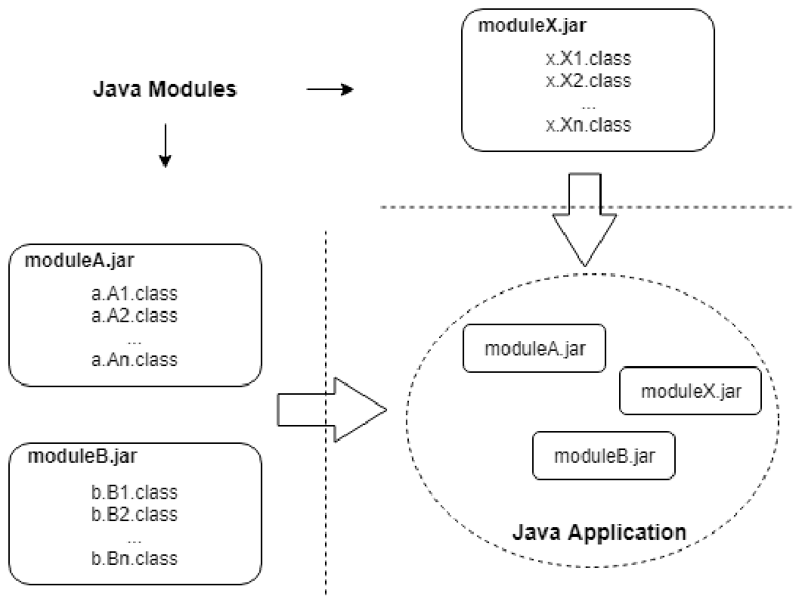
Sơ đồ trên hiển thị ba tệp jar có tên là moduleA.jar, moduleB.jar và
moduleX.jar. Các tệp jar module này được sử dụng cùng nhau để tạo ra một ứng dụng. Lưu ý rằng một
ứng dụng chỉ là một tập hợp liên kết lỏng lẻo của các module và không được đóng gói
669
bản thân nó như một file jar. Bạn sẽ sớm thấy rằng một ứng dụng được tạo ra bằng cách chỉ định các
module cần thiết từ các nhóm, tổ chức hoặc công ty khác nhau trên dòng lệnh khi chạy (runtime).
Không phải là các nhóm phát triển ứng dụng chuyên nghiệp trước đây đã không gom nhóm các phần độc lập của
ứng dụng vào các file jar riêng biệt. Trên thực tế, ngay cả trước khi các module xuất hiện, các ứng dụng Java
đã được cấu thành từ các file jar được thu thập từ nhiều nhóm khác nhau. Tuy nhiên, quy trình gom nhóm các lớp (class) và,
quan trọng hơn, việc tài liệu hóa những gì một file jar yêu cầu và cung cấp, lại khác nhau giữa các nhóm
và giữa các công cụ build. Java 9 đã tiếp thu những thực tiễn tốt nhất phổ biến trong ngành
và chính thức hóa chúng thành Hệ thống Module (Module System).
Bên cạnh việc định nghĩa chính thức một thiết kế cấu trúc cho các ứng dụng, Java 9 cũng bao gồm các công cụ mới
và cải tiến các công cụ hiện có để giúp các nhà phát triển đóng gói mã nguồn của họ dưới dạng các module.
Package và Module☝
Đến đây, bạn có thể tự hỏi các package nằm ở vị trí nào trong bức tranh này. Sau cùng thì chúng ta đã
sử dụng các package để tổ chức mã nguồn Java từ rất lâu rồi. Thực tế, các package vẫn đóng vai trò tương tự.
Chúng vẫn được sử dụng để tổ chức mã nguồn của chúng ta nhưng ở một cấp độ chi tiết hơn.
Về mặt khái niệm, một package tạo ra một không gian tên (namespace) chứa toàn bộ mã nguồn cần thiết để triển khai một
chức năng cụ thể. Đó là một phương tiện để giảm kích thước của mã nguồn chứa trong một file lớp (class),
bằng cách tách logic thành nhiều lớp (class) có liên quan chặt chẽ với nhau. Điều này giúp cho việc đọc,
hiểu và điều hướng mã nguồn trở nên dễ dàng hơn. Nhưng đây là từ góc nhìn của nhà phát triển chức năng đó chứ không phải
từ góc nhìn của người dùng chức năng đó. Người dùng chức năng đó không quan tâm đến việc mã nguồn được tổ chức như thế nào.
Họ chỉ quan tâm đến việc cần những gì để sử dụng chức năng đó. Người dùng chỉ đơn giản muốn sử dụng chức năng như một
chiếc hộp đen (black box). Đáng tiếc là các package không cung cấp thông tin này. Các nhà phát triển đã và đang phải
dựa vào các phương pháp không chính thức như đặt tên file jar theo quy ước riêng của họ và thêm tài liệu phát hành (release notes)
để truyền tải thông tin này.
670
Đây chính là lúc các module phát huy vai trò. Một module cung cấp một cách thức để phân phối chức năng trong một artifact duy nhất, bao gồm không chỉ mã nguồn mà còn cả thông tin về các dịch vụ mà mã nguồn đó cung cấp và bất kỳ dependency nào mà nó có thể có.
Do đó, nếu bạn là nhà phát triển của một chức năng nào đó, bạn vẫn sẽ tổ chức mã nguồn của mình thành các package. Nhưng sau đó, bạn cũng sẽ đóng gói tất cả các Lớp (Class) của mình (và bất kỳ Resource (Tài nguyên) nào khác như các tệp hình ảnh, tệp xml, hoặc tệp property) được sử dụng để triển khai chức năng này vào một file phân phối (deliverable) duy nhất cùng với phần mô tả về chức năng đó và các dependency của nó theo định dạng quy định dưới dạng một module. Nói cách khác, các module không phải là một sự thay thế cho các package mà là một phần bổ sung phía trên các package.
Hệ thống module Java (Java module system) là một chủ đề khá rộng lớn với các cuốn sách chuyên biệt được viết để bao quát nó. Tuy nhiên, kỳ thi OCP Java chỉ tập trung vào những điều cơ bản của hệ thống module Java.
23.1.2 Khai báo một module☝
Vì một module là một đơn vị chức năng logic dưới góc nhìn của người dùng, tốt nhất là trước tiên nên xác định chức năng mà chúng ta muốn phân phối dưới dạng một module. Ví dụ, giả sử chúng ta đang phát triển một ứng dụng tài chính và một trong các chức năng của nó là tính lãi đơn (simple interest). Chúng ta muốn phân phối trình tính lãi đơn này dưới dạng một module.
Đặt tên cho một module☝
Tên module tuân theo các quy tắc và quy ước tương tự như bạn đã thấy đối với việc đặt tên cho các package và Lớp (Class) trước đó. Do đó, một tên package hợp lệ sẽ là một tên module hợp lệ. Nói ngắn gọn, tên phải là một định danh Java (Java identifier) hợp lệ (do đó, các ký tự đặc biệt như dấu gạch ngang và dấu gạch chéo sẽ bị loại bỏ, nhưng dấu gạch dưới và dấu chấm thì được chấp nhận) và nó nên tuân theo mô hình tên miền ngược (reverse domain name pattern) để tránh xung đột tên. Lý tưởng nhất, tên module phải đủ tính mô tả để cho người dùng biết mục đích và/hoặc chức năng của module đó thay vì quá chung chung như tools hoặc utils. Vì vậy, com.abc.finance.calculators.simpleinterest sẽ là một cái tên phù hợp cho module của chúng ta.
Tuy nhiên, đối với mục đích của chương này, tôi sẽ đặt tên cho module là
671
chỉ là simpleinterest để giảm bớt sự rườm rà và giúp dễ dàng chạy thử mã nguồn mà tôi sắp trình bày ở đây. Chúng ta cũng hãy quyết định rằng FQCN của lớp (class) chúng ta sẽ là simpleinterest.SimpleInterestCalculator thay vì com.abc.finance.calculators.simpleinterest.SimpleInterestCalculator vì cùng lý do đó. Lưu ý rằng không có mối quan hệ nào giữa tên module và (các) tên package của (các) lớp (class) chứa trong module đó. Tuy nhiên, vì cả hai đều tuân theo quy ước đặt tên miền ngược, chúng rất có thể sẽ giống nhau.
Kỳ thi yêu cầu bạn phải có khả năng xác định các tên module hợp lệ và không hợp lệ. Như đã giải thích ở trên, các quy tắc đặt tên cho một module cũng giống như các quy tắc đặt tên cho một package. Do đó, ví dụ, các tên sau đây là những tên module hợp lệ: a (độ dài không quan trọng), _m (có thể bắt đầu bằng và chứa dấu _), n$ (có thể bắt đầu bằng và chứa dấu $), x1 (có thể chứa chữ số) và a.b (có thể chứa dấu chấm) nhưng những tên sau đây là không hợp lệ: 1x (không thể bắt đầu bằng chữ số), a-b (không thể chứa dấu gạch ngang), và a..b (không thể chứa các dấu chấm liên tiếp).
Bộ mô tả module☝
Bạn có nhớ tôi đã nói về việc thiếu một cách thức chính thức nào để mô tả một package không? Đây chính là điểm mà một module khác biệt so với một package. Bộ mô tả module là cách thức chính thức để mô tả một module. Mỗi module phải có một bộ mô tả module chỉ định tên của module, những gì nó cung cấp và những gì nó yêu cầu. Một bộ mô tả module không gì khác ngoài một tệp có tên là module-info.java. Đúng vậy, phần mở rộng của tệp là java. Nó là một tệp Java sẽ được biên dịch để tạo ra một tệp class có tên là module-info.class. Khi chúng ta nói về một module, đó thường là bộ mô tả mà chúng ta đề cập đến. Thật vậy, bản thân module là một chiếc hộp đen và bộ mô tả module là tất cả những gì người dùng cần quan tâm. Trong trường hợp của chúng ta, nội dung của bộ mô tả module sẽ như sau:
Không có nhiều thứ trong bộ mô tả module này. Tất cả những gì nó chỉ ra là đây là một module tên là simpleinterest. Nhưng dù sao thì nó vẫn là một bộ mô tả module hợp lệ và nó minh họa
672
cú pháp cơ bản để định nghĩa một module. Bạn có từ khóa module và tên module,
theo sau là các dấu ngoặc nhọn mở và đóng. Chúng ta sẽ thêm nhiều thông tin hơn vào bộ mô tả này khi tiếp tục. Tuy nhiên, tại thời điểm này, đây là một khởi đầu tốt!
File module-info.java không thể để trống.
23.1.3 Cấu trúc thư mục của một module☝
Cấu trúc thư mục cho mã nguồn và cho các lớp (class) đã biên dịch của một module gần như
giống hệt với cấu trúc thư mục của một package. Sự khác biệt duy nhất là trong khi một package có thể nằm ở
bất kỳ thư mục nào, một module lại nằm trong một thư mục có cùng tên với tên của module. Quy tắc này
áp dụng cho cả các file mã nguồn cũng như các file class. Nếu thư mục module chứa mã nguồn,
nó được gọi là “source module definition” (định nghĩa module nguồn) và nếu thư mục module chứa các lớp (class) đã
biên dịch, nó được gọi là “module definition” (định nghĩa module).
Do đó, trong ví dụ của chúng ta, mã nguồn và các lớp (class) đã biên dịch của module phải nằm trong các thư mục
có tên là simpleinterest. Hình ảnh dưới đây thể hiện cấu trúc thư mục mà tôi sẽ sử dụng để
phát triển và thực thi mã nguồn cho module của chúng ta:
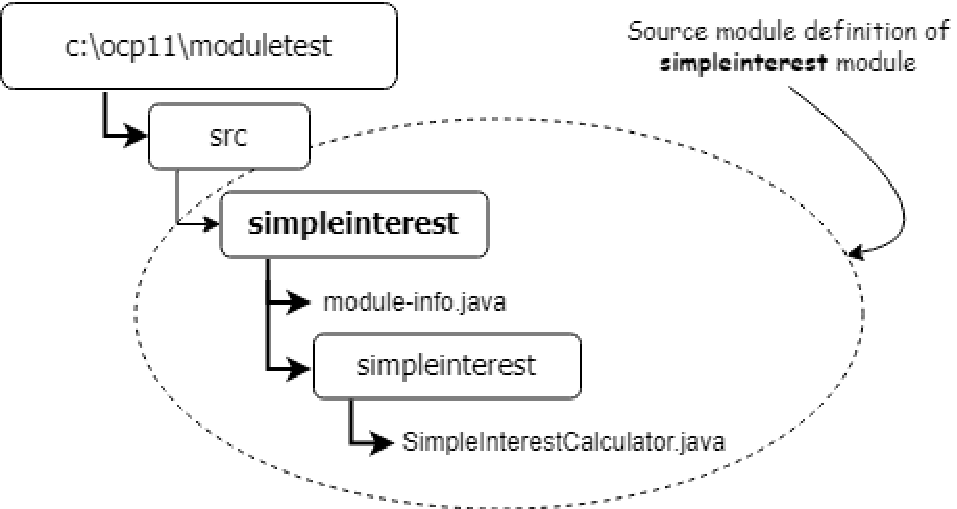
673
Thư mục gốc của tôi là c:\ocp21\moduletest. Đây là thư mục nơi tôi sẽ phát triển
và chạy toàn bộ mã nguồn được trình bày trong chương này. Nếu bạn đang sử dụng Linux/MacOS, bạn có thể muốn
tạo một thư mục moduletest dưới /home/<username>. (Hãy nhớ đổi \ thành / trong
các đường dẫn thư mục nếu bạn đang sử dụng Linux/MacOS.)
Dưới thư mục gốc, tôi có một thư mục src nơi tôi sẽ lưu trữ mã nguồn cho tất cả các
module của mình. Vì module cụ thể này được đặt tên là simpleinterest, tôi có một thư mục cùng
tên dưới src. Do đó, cây thư mục có gốc tại simpleinterest chính là định nghĩa
module nguồn của module simpleinterest. Hơn nữa, vì lớp (Class)
SimpleInterestCalculator của chúng ta thuộc package simpleinterest, tôi đã
lưu SimpleInterestCalculator.java dưới thư mục simpleinterest\simpleinterest.
Lưu ý rằng việc tuân theo cấu trúc package để tổ chức các tệp nguồn Java là không bắt buộc. Bạn
cũng có thể lưu trữ toàn bộ (các) tệp nguồn Java của mình trực tiếp dưới thư mục gốc của module. Tuy nhiên,
việc tổ chức mã nguồn theo các package của chúng mang lại một vài lợi ích. Bên cạnh việc giúp mã
nguồn dễ dàng điều hướng, nó còn được trình biên dịch Java hiểu rõ. Trình biên dịch có thể
tự động định vị và biên dịch mã nguồn hiện diện trong một định nghĩa module nguồn.
Nội dung của SimpleInterestCalculator.java như sau:
package simpleinterest;
public class SimpleInterestCalculator {
public double calculate(double principal, double rate, double
time) {
return principal*rate*time;
}
public static void main(String[] args) {
System.out.println(new SimpleInterestCalculator().calculate(100, .05,
2));
}
}
674
23.2.1 Biên dịch một module☝
Bây giờ cấu trúc thư mục và cơ sở mã nguồn cho module đã sẵn sàng, chúng ta hãy tiến hành biên dịch nó.
Mở cửa sổ dòng lệnh (command/shell prompt), cd đến thư mục c:\ocp21\moduletest và chạy lệnh sau:
c:\ocp21\moduletest>javac -d out --module-source-path src --module
simpleinterest
Lệnh trên sử dụng ba tùy chọn dòng lệnh (switch): -d , --module-source-path , và
--module .
Trước đây bạn đã sử dụng tùy chọn -d để chuyển hướng đầu ra của trình biên dịch Java đến một thư mục cụ thể. Ở đây nó cũng hoạt động tương tự như vậy. Vì thế, -d out sẽ khiến trình biên dịch tạo ra đầu ra trong thư mục out . Trình biên dịch sẽ tự động tạo thư mục out nếu thư mục này chưa tồn tại.
Tùy chọn --module-source-path cho trình biên dịch biết vị trí của định nghĩa module nguồn. Vì chúng ta đã lưu mã nguồn của mình trong một thư mục nằm dưới thư mục src , đó cũng là thư mục mà chúng ta đã chỉ định ở đây. Hãy chú ý ký tự gạch ngang kép trong tùy chọn này.
Vì tên của module là simpleinterest, trình biên dịch sẽ tạo một thư mục simpleinterest dưới thư mục out . Thư mục out\simpleinterest là “thư mục gốc” của module simpleinterest và cấu trúc cây có gốc dưới simpleinterest là định nghĩa của module simpleinterest .
Trình biên dịch sẽ lưu các tệp class của module này bên trong out\simpleinterest theo cấu trúc thư mục phân cấp theo package của các class thuộc module này. Ví dụ, vì lớp (Class) SimpleInterestCalculator nằm trong package simpleinterest , nên
675
trình biên dịch sẽ đặt SimpleInterestCalculator.class trong thư mục
out\simpleinterest\simpleinterest.
Lưu ý rằng tôi đang sử dụng đường dẫn tương đối thay vì đường dẫn tuyệt đối (nghĩa là
out thay vì c:\ocp21\moduletest\out ). Các đường dẫn tương đối được tính dựa trên thư mục hiện tại, và vì
thư mục hiện tại của chúng ta là c:\ocp21\moduletest, nên out sẽ phân giải thành
c:\ocp21\moduletest\out. Bạn có thể sử dụng xen kẽ đường dẫn tuyệt đối và đường dẫn tương đối
trong các câu lệnh này, nhưng tốt hơn là nên sử dụng đường dẫn tương đối vì chúng vẫn sẽ hoạt động ngay cả khi
thư mục gốc của bạn khác với c:\ocp21\moduletest.
Tùy chọn --module chỉ định tên của module mà chúng ta muốn biên dịch. Trình biên dịch
sẽ cố gắng tìm vị trí của module này trong các đường dẫn được chỉ định trong module-source-path. Trong trường hợp này, chúng ta
muốn biên dịch module simpleinterest. Một lần nữa, hãy lưu ý dấu gạch ngang kép.
Dựa trên các tùy chọn trên, trình biên dịch sẽ tìm kiếm module-info.java trong thư mục
src\simpleinterest và sẽ biên dịch tất cả các tệp Java trong tất cả các thư mục nằm bên trong
thư mục src\simpleinterest.
Sau khi thực thi thành công câu lệnh trên, bạn sẽ thấy cấu trúc thư mục như hiển thị dưới đây:
676
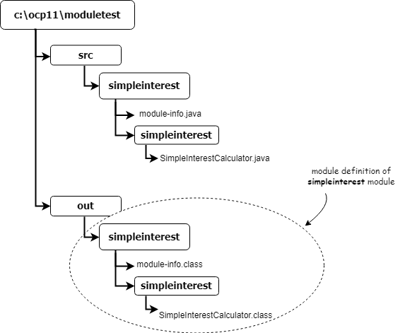
Hãy quan sát cấu trúc thư mục được tạo ra bởi trình biên dịch dưới out\simpleinterest . Nó giống hệt với những gì bạn nhận được sau khi biên dịch các file mã nguồn Java không sử dụng module.
Tôi khuyên bạn nên thử nghiệm với lệnh trên bằng cách thay đổi các chi tiết của thiết lập này. Ví dụ, đổi tên thư mục nguồn module thành một tên khác hoặc di chuyển file mã nguồn Java sang một vị trí khác bên trong thư mục nguồn module và quan sát thông báo lỗi được tạo ra bởi trình biên dịch.
Biên dịch các file mã nguồn module riêng lẻ☝
Có thể biên dịch các file mã nguồn module mà không cần sử dụng tùy chọn --module bằng cách
677
liệt kê các tệp (riêng lẻ hoặc sử dụng ký tự đại diện) mà bạn muốn biên dịch. Ví dụ,
câu lệnh kiểu cũ dưới đây sẽ tạo ra cùng kết quả như câu lệnh được sử dụng
ở trên:
Hãy lưu ý rằng bạn phải chỉ định rõ ràng thành phần thư mục gốc của module simpleinterest trong
đường dẫn đầu ra. Nếu không có phần này, trình biên dịch sẽ lưu kết quả đầu ra dưới thư mục out thay vì
out\simpleinterest. Việc liệt kê các tệp riêng lẻ để biên dịch không phải là cách được ưu tiên để
biên dịch một module và hiếm khi được sử dụng. Bạn cũng sẽ không bị kiểm tra về điều này trong kỳ thi. Đối với
mục đích của kỳ thi, bạn được kỳ vọng là phải biết cách biên dịch một module chỉ bằng cách sử dụng
tùy chọn --module.
23.2.2 Chạy một module☝
Chạy một module nghĩa là thực thi phương thức main của một lớp nằm trong module đó.
Do đó, lớp mà chúng ta muốn thực thi phải có phương thức main tiêu chuẩn. Câu lệnh sau đây
cho thấy cách chạy module simpleinterest mà chúng ta vừa biên dịch.
c:\ocp21\moduletest>java --module-path out --module
simpleinterest/simpleinterest.SimpleInterestCalculator
Câu lệnh này sử dụng hai tùy chọn: --module-path và --module.
Tùy chọn module-path được sử dụng để cho Java biết vị trí định nghĩa của module. Đây là
thư mục nơi chứa thư mục gốc của module hoặc, nếu module được đóng gói dưới dạng tệp jar,
module-path là thư mục chứa tệp jar đó. Trong trường hợp của chúng ta, chúng ta đã chỉ định out trong
module-path bởi vì thư mục gốc của module của chúng ta, tức là simpleinterest, nằm trong out.
678
Tùy chọn module được sử dụng để cho Java biết tên của module mà chúng ta muốn thực thi.
Hãy quan sát giá trị được chỉ định cho --module. Nó có định dạng là <module name>/<main class
name> vì hiện tại, module của chúng ta đang ở định dạng exploded (thư mục chưa đóng gói) và không chứa
bất kỳ thông tin nào về lớp main. Do đó, chúng ta cũng cần phải báo cho JVM biết về lớp mà chúng ta muốn
chạy. Một khi chúng ta đóng gói module của mình thành một file jar, chúng ta sẽ không cần phải chỉ định lớp main
trên dòng lệnh nữa.
23.2.3 Đóng gói một module☝
Quá trình đóng gói các Lớp (Class) của một module vào một file jar cũng giống như quá trình đóng gói các Lớp (Class) vào một
file jar thông thường mà chúng ta đã thấy. Điểm đặc biệt duy nhất của một module jar là theo quy ước, tên của
file jar trùng với tên của module (tất nhiên là kèm theo phần mở rộng .jar ).
Bên trong file jar, các file class vẫn phải tồn tại trong cấu trúc thư mục dựa trên package giống như
trước đây. Do đó, tên của file jar tương ứng với thư mục module và cách tổ chức
các file bên trong file jar tương ứng với cách tổ chức các file bên trong thư mục module.
Vì một module cũng có một file module-info.class ở thư mục gốc của nó, nên file jar cũng phải có
class này trong thư mục gốc. Lưu ý rằng yêu cầu phải có file module-info.class trong
thư mục gốc của file jar đồng nghĩa với việc không thể đóng gói nhiều module trong cùng một file
jar. Nói cách khác, bạn chỉ có thể có duy nhất một module trên mỗi file jar.
Vì một modular jar (bao gồm cả tên của nó) mô phỏng cấu trúc tổ chức của một module, nên một modular jar
cũng được coi là “định nghĩa module” của một module.
Dưới đây là lệnh sẽ đóng gói module của chúng ta vào một file jar:
Lệnh này sẽ tạo ra file simpleinterest.jar trong thư mục moduletest .
Tùy chọn --create cho công cụ jar biết rằng chúng ta muốn tạo một thứ gì đó, còn tùy chọn --file và
giá trị theo sau chỉ định file jar mà chúng ta muốn tạo. Tùy chọn --
679
Tham số --main-class làm cho công cụ jar thêm một mục Main-Class vào manifest của file jar kết quả.
Tham số -C cần có một vài lời giải thích. Chúng ta muốn file jar mô phỏng cấu trúc thư mục của
module, điều đó có nghĩa là cấu trúc bên trong file jar phải giống với cấu trúc
bên trong thư mục out\simpleinterest. Nhưng chúng ta đang thực thi lệnh từ
thư mục moduletest. Có hai cấp bổ sung dưới moduletest (out và
simpleinterest) mà chúng ta không muốn phản ánh trong file jar. Tham số -C là để làm cho công cụ jar
thay đổi thư mục làm việc của nó trước khi thêm các file vào jar. Chúng ta muốn nó di chuyển xuống thư mục
out\simpleinterest và sau đó đưa các file từ đó vào.
Dấu chấm ở cuối lệnh có nghĩa là chúng ta muốn đưa mọi thứ trong thư mục hiện tại của nó
(thư mục mà hiện tại là out\simpleinterest do sử dụng tham số -C) vào trong
file jar.
Hai hình ảnh sau đây hiển thị nội dung của simpleinterest.jar được tạo bởi
lệnh trên. (Tôi đã sử dụng phiên bản miễn phí của ứng dụng 7zip để xem nội dung của
file jar.) Hình ảnh đầu tiên hiển thị nội dung ở thư mục gốc và hình ảnh thứ hai hiển thị
nội dung của thư mục simpleinterest:
Lưu ý rằng, do chúng ta đã thêm thuộc tính Main-Class vào manifest của jar, chúng ta có thể “chạy”
module.
Một điểm quan trọng khác mà bạn nên lưu ý từ hai hình ảnh trên là vị trí của
SimpleInterestCalculator.class bên trong file jar của module hoàn toàn giống như khi
file class được đặt trong một file jar thông thường, nghĩa là dưới thư mục <root>/simpleinterest. Điều này
có nghĩa là bất kỳ ứng dụng nào không hiểu các module đều có thể sử dụng một modular jar như thể nó là một
file jar thông thường. Điểm khác biệt duy nhất trong một modular jar là file module-info.class ở thư mục
gốc, file này sẽ bị bỏ qua bởi các ứng dụng không sử dụng module. Ví dụ, bạn có thể chạy
SimpleInterestCalculator theo cách truyền thống với lệnh sau:
Bạn không cần phải lo lắng quá nhiều về các tùy chọn khác nhau được sử dụng trong lệnh jar. Bạn sẽ không bị
kiểm tra về cách tạo file jar trong kỳ thi. Tuy nhiên, việc thực thi một module được đóng gói trong một file jar
là nội dung có trong kỳ thi. Do đó, sẽ rất tốt nếu bạn hiểu cách một file modular jar được tạo ra.
Tìm hiểu về module-path☝
681
Một điều thú vị khác trong lệnh trên là giá trị mà chúng ta đã chỉ định cho
module-path. Chúng ta chỉ chỉ định một dấu chấm cho module-path vì file jar của module nằm
trong thư mục hiện tại. Một module-path chứa tất cả các vị trí mà bạn muốn JVM tìm kiếm
các định nghĩa module. Khi cố gắng tải một module, JVM sẽ tìm kiếm module đó ở
tất cả các vị trí được chỉ định trong module-path. Nó mong đợi tìm thấy chính xác một trong hai thứ -
một thư mục có cùng tên với tên của module hoặc một file jar chứa module-
info.class cho module đó. Tên của file jar không quan trọng vì JVM lấy
tên của module từ module-info.class chứa trong file jar. Cùng một
module không nên xuất hiện nhiều hơn một lần trên module-path, nếu không JVM sẽ
báo lỗi.
Trong lệnh được sử dụng ở trên, khi tìm kiếm module có tên là simpleinterest, JVM sẽ
tìm kiếm một file jar chứa module-info.class với tên module là
simpleinterest ở thư mục gốc hoặc một thư mục có tên là simpleinterest chứa
module-info.class thích hợp.
Hãy so sánh điều này với tùy chọn -classpath, yêu cầu tất cả các file jar bạn muốn đưa vào
class path phải được liệt kê rõ ràng thay vì chỉ yêu cầu thư mục chứa (các) file
jar đó.
23.3 Cho phép truy cập giữa các module
23.3.1 Sử dụng các chỉ thị exports và requires☝
Chúng ta hãy cải thiện thiết kế của module simpleinterest một chút. Định nghĩa chức năng
dưới dạng một Interface (Giao diện) và để một Lớp (Class) triển khai Interface (Giao diện)
đó là một thực hành thiết kế tốt. Điều này đảm bảo rằng người dùng chức năng đó có thể thay thế một
triển khai này bằng triển khai khác mà không ảnh hưởng nhiều đến mã nguồn của họ. Các module Java
cho phép chúng ta áp dụng kỹ thuật này tiến xa hơn nữa bằng cách định nghĩa chức năng riêng biệt trong một
module của riêng nó. Việc tách biệt Interface (Giao diện) và Lớp (Class) mà
682
việc triển khai interface (giao diện) đó vào các module riêng biệt cho phép chúng ta xây dựng một ứng dụng bằng cách kết hợp linh hoạt các module mà không cần phải đóng gói các lớp (class) không cần thiết cho ứng dụng.
Trong trường hợp của chúng ta, chúng ta sẽ tạo một interface (giao diện) calculators.InterestCalculator trong module calculators. Sau đó, chúng ta sẽ để lớp (class) SimpleInterestCalculator triển khai interface này.
Dưới đây là định nghĩa interface (giao diện):
//in file calculators\calculators\InterestCalculator.java
package calculators;
public interface InterestCalculator{
public double calculate(double principal, double rate, double
time);
}
và dưới đây là mô tả module (module descriptor) cho module mới:
Điểm mới duy nhất trong định nghĩa module này là mệnh đề exports clause. Một module là một đơn vị khép kín của các package. Các thành phần của một module thông thường không thể truy cập được bởi mã nguồn thuộc các module khác. Để một package đủ điều kiện được truy cập bởi các module khác, package đó trước tiên phải được “export” (xuất bản) một cách tường minh trong module descriptor. Việc làm cho một thành phần đủ điều kiện để truy cập được chỉ thông qua một mệnh đề exports tường minh giúp đảm bảo rằng mã nguồn từ các module khác không vô tình truy cập vào mã nguồn nội bộ của module này. Lưu ý rằng tôi đang nói về các package thay vì các lớp (class) bởi vì chỉ có các package mới có thể được export chứ không phải các lớp (class) riêng lẻ. Khi bạn export một package, tất cả các kiểu public (public type) chứa trong package đó đều đủ điều kiện để các module khác truy cập. Theo thuật ngữ module, việc truy cập một module được gọi là “đọc” (reading) module đó. Vì vậy, mệnh đề exports trong đoạn mã trên giúp interface (giao diện) InterestCalculator đủ điều kiện để được đọc bởi các lớp (class) ở module khác. Tôi đã sử dụng cụm từ “đủ điều kiện để được đọc” bởi vì một mệnh đề exports chỉ là một trong hai yêu cầu phải được đáp ứng để một module có thể truy cập các lớp (class) từ một module khác
683
module. Yêu cầu thứ hai là mệnh đề “requires”, điều mà tôi sẽ sớm giới thiệu ngay sau đây.
Cấu trúc thư mục của module này tuân theo định dạng định nghĩa module nguồn đã được giải thích
trước đó. Thư mục c:\ocp21\moduletest\src\calculators là thư mục nguồn cho
module này. Nó chứa các file module-info.java và calculators\InterestCalculator.java.
Hãy chạy lệnh sau để biên dịch module này:
c:\ocp21\moduletest>javac -d out --module-source-path src --module
calculators
Lệnh này sẽ tạo ra đầu ra thích hợp trong thư mục out.
Bây giờ, hãy chuyển sự chú ý của chúng ta sang module simpleinterest. Vì chúng ta muốn
SimpleInterestCalculator triển khai Interface (Giao diện) InterestCalculator, trước tiên chúng ta cần
làm rõ ý định bằng cách tuyên bố rằng module simpleinterest của chúng ta “requires” quyền truy cập vào
module calculators bằng cách sửa đổi bộ mô tả module của simpleinterest như sau:
module simpleinterest{
requires calculators;
}
Mệnh đề requires là đối trọng của mệnh đề exports. Mệnh đề requires làm cho
module khác có thể “đọc được” (readable) trong module này. Điều này còn được gọi là khả năng đọc của module (module readability). Nói
cách khác, tất cả các package được export bởi module khác đều có thể được truy cập bởi một module khai báo
sự phụ thuộc của nó vào module đó bằng cách sử dụng mệnh đề requires.
Mục đích của việc có mệnh đề requires là để làm cho các phụ thuộc của một module hiển thị rõ ràng,
tường minh đối với người dùng. Người dùng của một module không cần phải xem qua các câu lệnh import của từng
Lớp (Class) trong module để biết module này phụ thuộc vào những module nào khác. Tất cả những gì họ cần làm là
kiểm tra module-info .
684
Bây giờ chúng ta có thể sửa đổi SimpleInterestCalculator.java như sau:
package simpleinterest;
import calculators.InterestCalculator;
public class SimpleInterestCalculator implements InterestCalculator{
public double calculate(double principal, double rate, double time){
return principal*rate*time;
}
public static void main(String[] args){
InterestCalculator ic = new SimpleInterestCalculator();
System.out.println(ic.calculate(100, .05, 2));
}
}
Có thể sử dụng lệnh sau đây để biên dịch module này:
c:\ocp21\moduletest>javac -d out --module-source-path src --module
simpleinterest
Sau khi biên dịch module này, cấu trúc thư mục của chúng ta trông như sau:
685
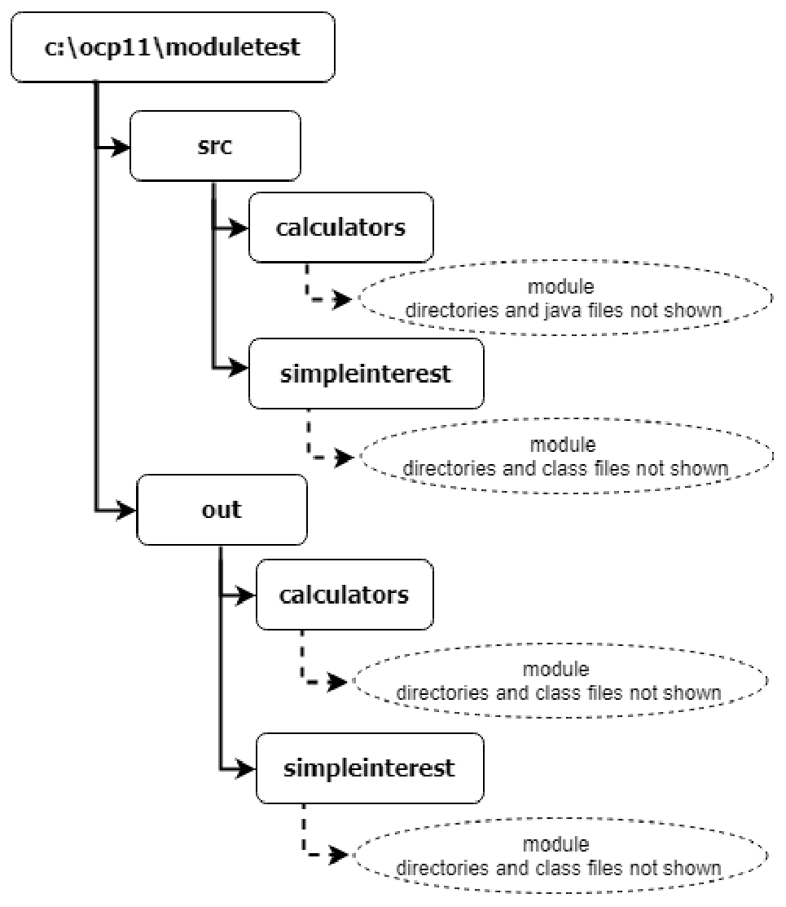
Bây giờ chúng ta có thể thực thi module simpleinterest như trước đây bằng cách sử dụng lệnh sau:
c:\ocp21\moduletest>java --module-path out --module
simpleinterest/simpleinterest.SimpleInterestCalculator
23.3.2 Sử dụng qualified exports☝
Mệnh đề exports mở ra một package để cho phép truy cập từ tất cả các module khác. Một khi một package đã được export, bạn không thể ngăn bất kỳ module nào khác truy cập vào nó. Nó tương tự
686
việc khai báo một thành viên của một lớp (class) là public , và cũng giống như modifier public , mệnh đề exports
làm cho một module giảm đi tính đóng gói (encapsulation).
Hệ thống module của Java (Java module system) cho phép bạn tinh chỉnh quyền truy cập vào một module chỉ dành cho các module cụ thể
bằng cách sử dụng một biến thể của mệnh đề exports . Nó được gọi là mệnh đề exports-to hoặc mệnh đề qualified
exports (export chỉ định). Dưới đây là cách sử dụng mệnh đề này:
module <modulename>{
exports <packagename> to <modulename(s)>;
}
Ví dụ, trong tệp module-info dưới đây, package com.abc.datatransfer đang được
cấp quyền truy cập chỉ dành cho các module db và service :
module datatransfer{
exports com.abc.datatransfer to db, service;
}
Các module mà một package được cấp quyền đọc được gọi là các module “thân thiện” (“friendly” modules). Thư viện chuẩn
Java sử dụng tính năng này rất nhiều cho các module nội bộ của nó. Ví dụ: module java.base
của JDK có một vài package được chỉ định là chỉ sử dụng bởi một số ít module nội bộ
nhất định. Nó sử dụng qualified exports để đạt được điều tương tự. Dưới đây là một đoạn mã nguồn một phần từ
tệp module-info của module java.base :
module java.base {
...
exports jdk.internal.logger to
java.logging;
exports jdk.internal.perf to
java.desktop,
java.management,
jdk.jvmstat;
...
}
687
Không có thứ tự cụ thể nào bắt buộc đối với việc xuất hiện của các unqualified export và qualified export trong
module-info. Tuy nhiên, theo quy ước, các qualified export thường được liệt kê sau tất cả các unqualified
export.
Sử dụng các qualified export giúp tránh việc vô tình tạo ra các phụ thuộc vào các package vốn không nhằm mục đích cho tất cả mọi người sử dụng. Do đó, việc sử dụng các qualified export nhiều nhất có thể là một ý tưởng hay. Các unqualified export chỉ nên được sử dụng khi bạn hoàn toàn chắc chắn rằng việc package đó được sử dụng bởi bất kỳ module nào khác là hoàn toàn ổn.
Sẽ xảy ra lỗi compile-time nếu package được export bằng mệnh đề exports hoặc exports- to không tồn tại trong module hiện tại. Sẽ không sao nếu package được liệt kê trong mệnh đề to không tồn tại.
23.3.3 Sử dụng các phụ thuộc bắc cầu (transitive dependencies)☝
Một module A có thể đọc một module B khác bằng cách sử dụng mệnh đề requires trong module-info của nó. Nhưng
nếu module B đọc một module C khác nữa thì sao? Điều đó có nghĩa là module A cũng đọc
module C luôn không? Thông thường thì không. Các phụ thuộc module không có tính bắc cầu và nếu module A
chỉ định rằng nó chỉ requires module B , nó không thể đọc module C chỉ vì B đọc C .
Bây giờ, hãy xem điều này diễn ra như thế nào trong tình huống sau. Sẽ ra sao nếu một Lớp (Class) trong module A cần
gọi một phương thức (method) của một Lớp (Class) trong module B , mà kiểu trả về của phương thức đó được định nghĩa trong module C ?
//code appearing in a class in ui module
HRService hrService = new HRService(); //HRService is defined in hr
module
Employee e = hrService.getEmployee(employeeId); //Employee is defined in
valueObjects module
Vì module ui không có mệnh đề requires valuesobjects; , module ui không
thể truy cập lớp Employee từ module valuesobjects . Do đó, đoạn mã trên
sẽ bị lỗi biên dịch.
Giải pháp rõ ràng nhất là thêm một mệnh đề requires valuesobjects; vào module ui . Nhưng
giải pháp này gặp một vấn đề nghiêm trọng. Sẽ ra sao nếu module hr có một vài mệnh đề requires ?
Làm thế nào module ui biết được mệnh đề requires nào của module hr nên được
thêm vào module-info của nó? Chỉ có việc xảy ra nhiều lỗi biên dịch mới có thể giúp module ui biết được
thông tin này!
Đây là lúc mệnh đề requires transitive phát huy tác dụng. Vì module hr biết
rằng bất kỳ module nào yêu cầu package hrservice thì cũng sẽ yêu cầu các lớp trong
module valueobjects , nó ghi lại thông tin này bằng cách sử dụng mệnh đề requires
transitive , như sau:
Điều này về cơ bản có nghĩa là nếu bạn yêu cầu module hr , thì bạn cũng yêu cầu
module valueobjects . Nhưng không chỉ đơn thuần là ghi nhận thực tế này, mệnh đề requires
transitive còn loại bỏ việc cần phải thêm mệnh đề requires valuesobjects;
bổ sung trong module ui . Mệnh đề requires hr; trong module ui sẽ tự động làm
cho tất cả các module được yêu cầu bắc cầu bởi module hr trở nên có thể đọc được đối với module ui . Điều này được gọi là
“khả năng đọc ngầm định”.
689
Khai báo import trùng lặp so với các mệnh đề requires/export trùng lặp
Việc có các khai báo import trùng lặp trong một tệp nguồn Java không mang lại ý nghĩa gì, nhưng về mặt lịch sử,
Java vẫn cho phép các khai báo import trùng lặp. Tuy nhiên, Java không cho phép có
các mệnh đề requires trùng lặp trong một module-info . Do đó, tệp
module-info.java sau đây sẽ không biên dịch được:
module hr{
requires valueobjects;
requires valueobjects; //duplicate, not allowed
}
Việc khai báo cùng một module trong cả mệnh đề requires và mệnh đề requires transitive cũng
không được cho phép. Vì vậy, đoạn mã sau đây sẽ không biên dịch được:
Tương tự, các mệnh đề export và exports to trùng lặp cũng không được cho phép.
Phụ thuộc vòng (Cyclic/Circular dependency)
Java không cho phép các module phụ thuộc vòng lẫn nhau. Ví dụ, nếu module a
chứa một mệnh đề requires b; , thì module b không thể có mệnh đề requires a; .
Tương tự, ngay cả sự phụ thuộc vòng gián tiếp (nghĩa là a yêu cầu b, b yêu cầu c, và c yêu cầu a)
cũng không được cho phép.
Tuy nhiên, sự phụ thuộc vòng giữa các lớp (class) và gói (package) vẫn được cho phép.
23.3.4 Sử dụng các chỉ thị opens/opens-to☝
Nếu bạn thực sự muốn các gói của một module có thể đọc được bởi các module khác, thì
690
Các chỉ thị exports và exports-to là đủ. Nhưng, như đã giải thích trước đó, việc export một
package giống như việc để lộ bí mật. Rất khó để rút lại. Việc export một package cho phép
các module khác sử dụng package đó, và một khi các module khác đã bắt đầu sử dụng nó, bạn không thể “hủy export”
nó, tức là loại bỏ nó khỏi danh sách các package được export trong module-info của bạn, mà không làm lỗi
code của họ.
Các dự án doanh nghiệp lớn thường đối mặt với vấn đề này khi một nhóm sử dụng một thư viện được phát triển và
bảo trì bởi một nhóm khác cho ứng dụng của họ. Nếu nhóm cung cấp thư viện quyết định vào một ngày nào đó
sẽ hủy export một package trong phiên bản mới hơn của thư viện đó, các nhóm khác phụ thuộc vào thư viện đó
sẽ phàn nàn. Như bạn sẽ tìm hiểu sau, điều này cũng có thể xảy ra khi một nhóm quyết định
module hóa thư viện của họ và xác định rằng một package cụ thể thực sự không nên bị phụ thuộc
bởi các nhóm khác.
Hệ thống Java Module cung cấp một lối thoát cho tình thế tiến thoái lưỡng nan này bằng cách cho phép các ứng dụng
hiện tại sử dụng các package không được export tại thời điểm run time nhưng ngăn chúng sử dụng các package không được
export tại thời điểm compile time. Điều này có nghĩa là, các ứng dụng phụ thuộc vào các package không được
export sẽ tiếp tục chạy như trước nhưng cuối cùng chúng sẽ phải sửa code của mình để
loại bỏ sự phụ thuộc vào các package không được export nếu muốn code của mình compile mà không gặp
lỗi.
Điều này được thực hiện bằng cách sử dụng các chỉ thị opens , opens-to , và open .
Chỉ thị opens☝
Chỉ thị opens cho phép các module khác truy cập các kiểu public và protected của package này
tại thời điểm run time, nhưng không phải tại thời điểm compile time. Ví dụ:
module simpleinterest{
//exports simpleinterest; //commenting it out because we don't
want anyone to use this package anymore
opens simpleinterest; //lets any code that depends on this package to
run
}
691
Nếu module simpleinterest đã export package simpleinterest , các module khác có thể
đã và đang sử dụng trực tiếp lớp SimpleInterest đó. Việc thay thế nó bằng mệnh đề opens
đảm bảo rằng ứng dụng của họ không bị lỗi ở runtime nhưng cũng buộc họ phải ngừng sử dụng
trực tiếp lớp SimpleInterest trong mã nguồn của họ.
Chỉ thị opens-to☝
Chỉ thị opens-to là một chỉ thị opens có điều kiện hoạt động giống hệt như chỉ thị
exports có điều kiện. Nó chỉ cho phép các module được liệt kê có sự phụ thuộc runtime vào package
này.
Chỉ thị open☝
Nếu bạn muốn mở tất cả các package public và protected của một module, thì bạn có thể áp dụng
chỉ thị open cho chính khai báo module thay vì áp dụng chỉ thị opens cho
từng package riêng lẻ. Ví dụ:
open module simpleinterest{
//opens simpleinterest; //can't have any opens directive if the
module is open.
}
Mở một package cho Reflection☝
Bên cạnh việc cung cấp một bước đệm trong quá trình module hóa một thư viện, việc mở một package theo
cách mô tả ở trên cũng cho phép các thành viên của một module có thể truy cập được thông qua Reflection.
Reflection là một chủ đề nâng cao và rất may mắn là không có trong kỳ thi OCP. Bạn chắc chắn
nên tìm hiểu thêm về nó từ các nguồn khác bất cứ khi nào có thời gian, nhưng trong ngữ cảnh của Module, tất
cả những gì bạn cần biết về Reflection là nó cho phép chúng ta sử dụng các lớp ở runtime mà chúng ta không
biết ở compile time. Bằng cách
692
“sử dụng”, ý tôi là tạo các Đối tượng (Object) của Lớp (Class) và gọi các phương thức trên đó. Reflection cũng có thể được
sử dụng để gọi các phương thức và truy cập các trường của một Lớp (Class) vốn đã được khai báo private.
Vì Reflection là một công cụ khá mạnh mẽ và có tính can thiệp sâu, hệ thống module của Java đặt ra những
hạn chế nghiêm ngặt đối với hoạt động của nó. Trên thực tế, Java không cho phép mã modular bị can thiệp
thông qua Reflection bởi mã nguồn từ các module khác, trừ khi một module cho phép truy cập như vậy một cách rõ ràng
bằng cách sử dụng chỉ thị open hoặc opens / opens-to trong module-info của nó.
Vì vậy, tóm lại, chỉ thị open cho phép tất cả các thành viên của module, bất kể các
access modifier của chúng, có thể truy cập được thông qua Reflection API. Chỉ thị opens chỉ
cho phép các thành viên của package được chỉ định có thể truy cập được thông qua reflection, và chỉ thị
opens-to cho phép truy cập reflection (reflective access) đến package được đề cập trong mệnh đề opens chỉ
đối với các package được liệt kê trong mệnh đề to .
Không giống như các chỉ thị exports / exports-to , việc mở một package không tồn tại
được cho phép.
Nhưng tương tự như các chỉ thị exports / exports-to , không được phép có các mệnh đề
opens / opens-to trùng lặp hoặc liệt kê một package hai lần.
23.4 Biên dịch và thực thi module nâng cao☝
Việc nhìn thấy tất cả các tùy chọn dòng lệnh mới liên quan đến module lúc đầu có vẻ khá ngợp. Nhưng một khi
bạn hiểu được ý tưởng cốt lõi đằng sau các tùy chọn này, bạn sẽ nhận ra rằng chúng không
khác biệt nhiều so với các tùy chọn -classpath (và -sourcepath) mà bạn đã sử dụng từ trước đến nay.
Các tùy chọn module-path và module-source-path
693
đối với một dự án module cũng tương tự như vai trò của các tùy chọn classpath và sourcepath đối với một dự án thông thường.
Trước đây, bạn thường chỉ cần chỉ định FQCN của lớp main khi khởi chạy một ứng dụng, giờ đây,
bạn chỉ định tên module bằng cách sử dụng tùy chọn --module . Về cơ bản là như vậy.
Tôi nhận thấy rằng nhiều học viên thường bị nhầm lẫn bởi thực tế là classpath và module-path không loại trừ lẫn nhau. Việc sử dụng cả hai
tùy chọn này cùng một lúc trong một lệnh khi biên dịch cũng như thực thi một module là hoàn toàn khả thi, và đôi khi là cần thiết. Chúng được
sử dụng cùng nhau trong các dự án có sử dụng cả thư viện module lẫn thư viện không phải module.
Một nguyên nhân khác gây nhầm lẫn là sự tồn tại của nhiều tùy chọn có cùng ý nghĩa và chức năng
giống nhau. Ví dụ, --module-path tương đương với -p và --module tương đương với -m .
Trong phần này, tôi sẽ tóm tắt tất cả các tùy chọn mà bạn cần khi biên dịch và thực thi một
module.
23.4.1 Biên dịch nhiều module cùng một lúc☝
Trong ví dụ trước, chúng ta đã biên dịch các module calculators và simpleinterest một cách
riêng biệt lần lượt từng cái một. Chúng ta có thể dễ dàng biên dịch cả hai cùng một lúc
bằng cách liệt kê cả hai trong tùy chọn --module :
c:\ocp21\moduletest>javac -d out --module-source-path src --module
calculators,simpleinterest
Hãy lưu ý rằng tên các module được phân tách bằng dấu phẩy. Trên thực tế, Java sẽ biên dịch
module calculators ngay cả khi chúng ta không chỉ định nó một cách rõ ràng trong tùy chọn --module bởi vì
javac sẽ nhận thấy rằng simpleinterest yêu cầu calculators và do đó, nó sẽ biên dịch
calculators trước. Tuy nhiên, điều này chỉ khả thi khi mã nguồn của module được
tổ chức chính xác theo cấu trúc thư mục dựa trên package. Nếu các tệp nguồn được tổ chức
khác đi, javac sẽ không thể
694
tự tìm vị trí của chúng.
Sử dụng một module không có mã nguồn☝
Trong quá trình phát triển một module, bạn có thể cần phải sử dụng các module của bên thứ ba mà mã nguồn của chúng không có sẵn. Ví dụ, điều gì sẽ xảy ra nếu module calculators được phát triển bởi một nhóm khác và bạn chỉ có tệp calculators.jar của nó?
Chúng ta có thể sử dụng tùy chọn --module-path để chỉ ra vị trí của một module cho javac tương tự như cách chúng ta đã sử dụng nó khi thực thi một module. Giả sử chúng ta đặt tệp calculators.jar trong thư mục c:\ocp21\moduletest\modulejars. Bây giờ chúng ta có thể sử dụng lệnh sau để biên dịch module simpleinterest:
c:\ocp21\moduletest>javac --module-path modulejars -d out --module-source-
path src --module simpleinterest
Hãy lưu ý rằng chúng ta không chỉ định tên tệp jar thực tế trong đường dẫn module (mặc dù chúng ta cũng có thể làm điều đó). Chúng ta chỉ chỉ định thư mục chứa nó. Chúng ta có thể chỉ định bao nhiêu thư mục tùy ý, được phân tách bằng dấu phân cách đường dẫn (; trên Windows và : trên *nix). Sự khác biệt giữa việc chỉ định một thư mục và chỉ định một tệp jar là khi bạn chỉ định một thư mục, tất cả các tệp jar cũng như các định nghĩa module đã giải nén (exploded module definitions) có trong thư mục đó đều có sẵn cho trình biên dịch (hoặc cho JVM, trong trường hợp thực thi), trong khi ở trường hợp còn lại, chỉ có tệp jar mà bạn chỉ định trên đường dẫn module mới khả dụng. Việc chỉ định một thư mục trên đường dẫn module (module-path) trong quá trình học là hoàn toàn bình thường, nhưng tốt hơn hết bạn nên chỉ định rõ các tệp jar khi phát triển một ứng dụng chuyên nghiệp. Lệnh để chạy simpleinterest với các tệp jar được liệt kê rõ ràng trong đường dẫn module trông như thế này:
Như bạn đã thấy trước đây, một jar module (modular jar) không có gì khác biệt so với một jar thông thường không chứa module (regular non-modular jar) xét về mặt cấu trúc. Điểm bổ sung duy nhất trong một jar module là module-info.class trong thư mục gốc của nó. Trên thực tế, ta hoàn toàn có thể sử dụng một jar module giống hệt như một jar không chứa module. Nếu bạn băn khoăn liệu có thể chạy lớp main (main class) của một tệp jar module theo cách cũ hay không, thì câu trả lời là có. Ví dụ, giả sử bạn đã đóng gói hai module thành hai tệp jar như đã giải thích ở phần trước và đặt chúng vào thư mục c:\ocp21\moduletest , bạn có thể thực thi lớp (class) SimpleInterestCalculator của chúng ta bằng lệnh sau:
Tuy nhiên, khi bạn chạy một lớp (class) bằng cách sử dụng tùy chọn -classpath hoặc -jar , bạn sẽ mất đi tất cả lợi ích của các module. Điều này có nghĩa là JVM sẽ không thực thi các quy tắc truy cập được chỉ định trong bộ mô tả module (module descriptor). Nói cách khác, tệp module-info của module sẽ hoàn toàn bị bỏ qua. Một lớp (class) từ bất kỳ tệp jar nào cũng có thể truy cập vào một lớp (class) từ bất kỳ tệp jar nào khác.
Điều này rất hữu ích khi một nhóm chưa chuyển dự án của họ sang cấu trúc module nhưng vẫn muốn sử dụng một jar module do một nhóm khác tạo ra. Nó cũng cho phép một nhóm module hóa mã nguồn của họ mà không làm ảnh hưởng đến những người dùng đang sử dụng phiên bản không chứa module.
23.4.3 Module tự động (Automatic modules)☝
Một điều quan trọng cần nhớ về các module là khi bạn chạy một ứng dụng
696
sử dụng tùy chọn module-path , ứng dụng chỉ có thể đọc các module khác nếu thông tin module (module info) của ứng dụng có các mệnh đề requires thích hợp cho các module mà nó muốn đọc. Hơn nữa, như đã thảo luận trước đây, các module đó cũng phải export các package liên quan bằng cách sử dụng các mệnh đề exports thích hợp.
Điều này đặt ra một vấn đề nếu bạn muốn phát triển một module phụ thuộc vào một file jar không chứa module (non-modular jar) của bên thứ ba. Làm thế nào mã nguồn của bạn có thể truy cập các class từ file jar không chứa module đó? Đây thực tế là một tình huống rất phổ biến. Bạn có thể muốn sử dụng một thư viện ghi log (logging framework) của bên thứ ba, một driver Kết nối CSDL Java (JDBC) hoặc một bộ quản lý kết nối (connection manager) trong ứng dụng của mình. Nhưng bạn sẽ không muốn đợi cho đến khi nhà cung cấp các chức năng đó cập nhật các file jar của họ thành các file jar dạng module (modular jar) và rõ ràng là bạn không thể tự mình module hóa mã nguồn của người khác.
Tính năng module của Java cung cấp một cách tuyệt vời để xử lý các tình huống như vậy. Nếu bạn chỉ đơn giản là đặt một file jar không chứa module lên module-path , Java sẽ coi file jar không chứa module đó là một module. Một module như vậy được gọi là “automatic module” (module tự động).
Tên của một automatic module☝
Giống như các module thông thường, một automatic module cũng là một module có tên (named module) nhưng vì không có file module-info cho module này để bạn có thể chỉ định tên của nó, tên của module này được hệ thống Java Module tự động tạo bằng cách sử dụng tên của file jar. Ví dụ, nếu bạn đặt mysql-driver-6.0.jar vào --module-path , nó sẽ được tải dưới dạng một automatic module với tên là mysql.driver .
Cách suy dẫn tên cho một automatic module được giải thích chi tiết trong tài liệu JavaDoc của java.lang.module.ModuleFinder , nhưng đối với mục đích của kỳ thi, bạn chỉ cần biết rằng các dấu gạch ngang được chuyển đổi thành các dấu chấm và phần số phiên bản ở cuối (nếu có) cùng với phần mở rộng của file sẽ bị bỏ qua. Dưới đây là một vài ví dụ:
Một jar không modular cũng có thể chỉ định tên module tương lai của nó bằng cách sử dụng thuộc tính Automatic-Module-Name: <module name> trong file MANIFEST.MF của jar đó. Điều này rất hữu ích khi một nhóm phát triển có kế hoạch modular hóa thư viện của họ trong tương lai.
Vì không có module-info.class trong một jar không modular, nên không có cách nào để chỉ định các package mà nó export bằng cách sử dụng các khai báo exports hoặc chỉ định các jar mà nó phụ thuộc vào bằng các khai báo requires . Vì lý do này, Java cung cấp một automatic module với hai siêu năng lực:
một automatic module sẽ export cũng như open tất cả các package của nó (để bất kỳ module nào cũng có thể “đọc” được các package đó) và
một automatic module được phép đọc tất cả các package được export của các module có sẵn trên module-path cũng như tất cả các Class (Lớp) có sẵn trên classpath .
Nói cách khác, tất cả các Class (Lớp) public hiện có trong file jar được tải dưới dạng một automatic module đều có thể được truy cập bởi tất cả các module khác, và tất cả các Class (Lớp) của file jar đó có thể truy cập tất cả các package được export của mọi module cũng như tất cả các Class (Lớp) có trên classpath .
Hãy cùng xem những siêu năng lực đặc biệt này hữu ích như thế nào trong quá trình phát triển một module mới.
Nếu module của bạn phụ thuộc vào một jar bên thứ ba không modular, bạn chỉ cần thêm khai báo requires <module-name>; trong file module-info của module của bạn và đặt jar bên thứ ba đó vào --module-path của bạn.
Ví dụ: giả sử Class (Lớp) SimpleInterestCalculator trong module simpleinterest của chúng ta sử dụng Class (Lớp) org.apache.commons.logging.Log từ file commons-logging-1.3.1.jar . Chúng ta cần cập nhật module-info cho simpleinterest như sau:
module simpleinterest{
requires commons.logging; //Observe that we are specifying
698
the module name as derived from the name of the jar file. All packages are
exported automatically by an automatic module.
}
và, giả sử rằng commons-logging-1.3.1.jar nằm trong thư mục jars , chúng ta sẽ
thêm nó vào --module-path của các lệnh javac cũng như java như sau:
javac --module-path jars\commons-logging-1.3.1.jar --module-source-path src -
d out --module simpleinterest
Được rồi, như vậy đã giải quyết xong phần một module yêu cầu các lớp (class) từ một file jar không chứa module (non-modular jar).
Điều gì xảy ra nếu file jar không chứa module đó lại yêu cầu các lớp (class) từ một file jar không chứa module khác? Ví dụ,
điều gì xảy ra nếu một lớp (class) trong commons-logging-1.3.1.jar tham chiếu đến một lớp (class) trong một file jar bên thứ ba khác
có tên là log4j-api-2.23.1.jar ? Chúng ta có phải chuyển đổi log4j-api-2.23.1.jar thành một
automatic module hay không? Không, không nhất thiết.
Chúng ta chỉ phải tạo một automatic module từ một file jar không chứa module (non-modular jar) nếu một file jar chứa module (modular jar)
phụ thuộc tĩnh vào một lớp (class) từ file jar không chứa module đó, nghĩa là chỉ khi một module tham chiếu đến một lớp (class)
từ file jar không chứa module trong mã nguồn của nó và do đó cần đến nó trong quá trình biên dịch. Nếu một
automatic module yêu cầu một lớp (class) từ một file jar không chứa module, chúng ta chỉ cần đặt file jar không
chứa module đó vào classpath trong suốt quá trình thực thi của module. Hãy nhớ sức mạnh đặc biệt thứ hai
của một automatic module — một automatic module được phép đọc tất cả các lớp (class)
có sẵn trên module-path cũng như trên classpath . Đó là điều giúp cơ chế này hoạt động.
Do đó, tất cả những gì chúng ta cần làm là thêm file jar này vào classpath trong lệnh java của chúng ta như
sau:
Như bạn có thể thấy, một automatic module tương tự như các named module khác nhưng nhờ có các siêu năng lực của mình, nó hoạt động như một cầu nối giữa mã nguồn modular (dạng mô-đun) và non-modular (không mô-đun). Nếu không có các automatic module, mã nguồn modular sẽ không thể sử dụng mã nguồn non-modular hiện có.
23.4.4 Unnamed Module☝
Tất cả các lớp (class) trên classpath đều được JVM tải lên như là một phần của một “unnamed module” (module không tên) duy nhất. Giống như các lớp (class) của một automatic module, các lớp (class) của unnamed module cũng được phép “đọc” (read) tất cả các package được export của tất cả các module có sẵn trên module-path và tất cả các lớp (class) có sẵn trên classpath . Tuy nhiên, vì unnamed module này không có tên, nên không thể đưa module này vào mệnh đề requires của bất kỳ module nào. Do đó, các lớp (class) của một unnamed module có thể được đọc bởi các lớp (class) khác được tải từ classpath và các lớp (class) trong các automatic module, nhưng không thể được đọc bởi các module được đặt tên tường minh (explicitly named modules).
23.4.5 Tóm tắt về khả năng đọc (readability) của các module☝
Bảng dưới đây tóm tắt các quy tắc về khả năng đọc (readability) đối với ba loại module:
Các lớp (Classes) Trong↓
Có thể đọc→
Các Module được đặt tên tường minh (Explicitly Named Modules) (với điều kiện là mệnh đề exports tồn tại trong module-info)
Các Automatic Module
Unnamed Module
700
Các module được đặt tên tường minh (với điều kiện tồn tại mệnh đề requires trong module-info)
Tất cả các package được export và open
Tất cả các package
Không thể đọc bất kỳ package nào
Các Automatic Module
Tất cả các package được export và open
Tất cả các package
Tất cả các package
Unnamed Module
Tất cả các package được export và open
Tất cả các package
Tất cả các package
Từ bảng trên, bạn có thể suy ra rằng một module được đặt tên tường minh chỉ có thể đọc các package đã được export hoặc open bởi một module được đặt tên tường minh khác. Nó có thể đọc tất cả các package của một Automatic Module nhưng không thể đọc bất kỳ package nào trong Unnamed Module.
Mặt khác, các Automatic Module và Unnamed Module có thể đọc tất cả các package được export và open từ tất cả các module được đặt tên, đồng thời có thể đọc tất cả các package của các Automatic Module và Unnamed Module. Điều này không quan trọng đối với kỳ thi nhưng rất hữu ích khi biết rằng, mặc dù trình biên dịch (compiler) sẽ không thể kiểm tra xem một class từ Unnamed Module có cố gắng truy cập vào một class của một package không được export của một module trong quá trình biên dịch module đó hay không, nhưng JVM sẽ ném ra lỗi IllegalAccessError tại runtime khi việc truy cập như vậy được thực hiện.
23.4.6 Tóm tắt các tùy chọn dòng lệnh dùng cho việc biên dịch☝
Để biên dịch một lớp (class) và/hoặc module Java, bạn cần ghi nhớ năm tùy chọn dòng lệnh sau đây:
1. --module-source-path : Tùy chọn này được sử dụng để chỉ định vị trí của các file nguồn module. Nó nên trỏ đến thư mục chứa định nghĩa module nguồn. Nói cách khác, nó nên trỏ đến thư mục cha của thư mục nơi lưu trữ file module-info.java của module. Ví dụ, nếu tên module của bạn là moduleA ,
701
thì tệp module-info.java cho module này sẽ nằm trong thư mục moduleA và nếu
thư mục moduleA tồn tại trong thư mục src, thì src phải được chỉ định trong tùy chọn --module-
source-path, tức là --module-source-pathsrc
Nếu moduleA phụ thuộc vào một module khác tên là moduleB, và nếu thư mục moduleB tồn tại trong
thư mục src2, bạn cũng có thể thêm thư mục này vào --module-source-path tương tự, tức là --module-source-pathsrc;src2.
2. -d : Tùy chọn này là bắt buộc khi bạn biên dịch một module. Nó được sử dụng để chỉ định thư mục đầu ra.
Đây là thư mục nơi javac sẽ tạo ra cấu trúc thư mục phân chia theo module và package
và các tệp class cho các mã nguồn. Ví dụ, nếu bạn chỉ định out làm thư mục đầu ra,
javac sẽ tạo một thư mục dưới out có cùng tên với tên của module và
sẽ tạo các tệp class với cấu trúc thư mục phân chia theo package phù hợp dưới thư mục đó.
3. --module hoặc -m : Tùy chọn này được sử dụng khi bạn muốn biên dịch tất cả các tệp nguồn của một
module cụ thể. Tùy chọn này rất hữu ích khi bạn muốn biên dịch tất cả các tệp cùng một lúc mà không cần
liệt kê riêng lẻ từng tệp nguồn của một module trong câu lệnh.
Ví dụ, nếu bạn có hai tệp Java trong moduleA, được lưu trữ dưới moduleA\a\A1.java và
moduleA\a\A2.java, bạn có thể biên dịch cả hai cùng một lúc bằng câu lệnh:
javac --module-source-path src -d out --module moduleA
Javac sẽ tìm thấy tất cả các tệp nguồn Java dưới moduleA và biên dịch tất cả chúng. Nó sẽ
tạo ra các tệp class dưới thư mục đầu ra được chỉ định trong tùy chọn -d, tức là out. Do đó,
thư mục out bây giờ sẽ có hai tệp class — moduleA/a/A1.class và moduleA/a/A2.class.
4. --module-path hoặc -p : Tùy chọn này chỉ định (các) vị trí của bất kỳ module nào khác mà
module cần biên dịch phụ thuộc vào. Bạn có thể chỉ định các thư mục module hoặc các tệp jar chứa các
class của module tại đây. Ví dụ, nếu bạn muốn biên dịch moduleA và nếu nó phụ thuộc vào
một module khác tên là abc.util, thì bạn có thể thêm tùy chọn này vào câu lệnh javac của mình như sau:
702
javac --module-source-path src --module-path thirdpartymodules/abc.util.jar -d out --module moduleA
5. -classpath or -cp or --class-path : Tùy chọn này được sử dụng để biên dịch mã nguồn không mô-đun (non-modular code). Nếu bạn đang biên dịch mã nguồn không mô-đun thông thường nhưng mã nguồn đó phụ thuộc vào một số lớp (class), bạn có thể đưa các lớp/file jar đó vào classpath bằng cách sử dụng tùy chọn -classpath.
Lưu ý: Tùy chọn này không hữu ích cho việc biên dịch mã nguồn mô-đun (modular code) vì các lớp (class) trong mã nguồn mô-đun không thể đọc các lớp (class) hiện diện trên classpath. Mã nguồn mô-đun chỉ có thể nhìn thấy mã nguồn mô-đun khác. Đó là lý do tại sao các lớp (class) không mô-đun phải được chuyển đổi thành “automatic module” và được chỉ định trên --module-path như đã giải thích ở trước.
23.4.7 Tóm tắt các tùy chọn dòng lệnh dùng để thực thi☝
Bạn cần biết về ba tùy chọn dòng lệnh sau đây để chạy một lớp (class) được chứa trong một module:
1. --module-path or -p : Tùy chọn này chỉ ra vị trí định nghĩa của module. Nếu module được đóng gói trong một file jar, bạn có thể chỉ định đường dẫn đến file jar đó, hoặc chỉ định đường dẫn đến thư mục chứa file jar (tương đối so với thư mục hiện tại hoặc đường dẫn tuyệt đối). Ví dụ, --module-path c:\javatest\modulejars
Bạn cũng có thể chỉ định vị trí nơi module đã biên dịch tồn tại dưới dạng thư mục giải nén (exploded form). Ví dụ, nếu module của bạn có tên là abc.math.utils và module này được lưu trữ trong c:\javatest\output, bạn có thể sử dụng: --module-path c:\javatest\output. Hãy nhớ rằng thư mục c:\javatest\output phải chứa thư mục abc.math.utils và các file module (bao gồm cả module-info.class) phải hiện diện trong cấu trúc thư mục thích hợp của chúng dưới thư mục abc.math.utils.
703
Bạn có thể chỉ định bao nhiêu vị trí module tùy ý, phân tách bằng dấu phân cách đường dẫn (; trên Windows và : trên Linux/MacOS) theo yêu cầu.
2. --module or -m : Tùy chọn (switch) này được sử dụng để chỉ định module mà bạn muốn chạy. Ví dụ, nếu bạn muốn chạy lớp (class) abc.utils.Main của module abc.math.utils , bạn nên viết --module abc.math.utils/abc.utils.Main
Nếu manifest của một file jar module chứa thuộc tính Main-Class , bạn có thể bỏ qua lớp (class) main khỏi câu lệnh. Ví dụ, bạn có thể viết --module abc.math.utils thay vì --module abc.math.utils/abc.utils.Main .
3. -classpath or --class-path or -cp : Tùy chọn (switch) này được sử dụng khi thực thi mã nguồn không mô-đun (non-modular). Nó cũng được sử dụng khi thực thi mã nguồn modular để chỉ định các file jar non-modular được yêu cầu bởi dự án.
Có thể coi mã nguồn modular như non-modular bằng cách bỏ qua hoàn toàn các tùy chọn module. Ví dụ, nếu bạn muốn chạy lớp (class) abc.utils.Main bằng cách sử dụng tùy chọn classpath cũ hơn, bạn vẫn có thể thực hiện như thế này:
java -classpath mathutils.jar abc.utils.Main
23.5 Sử dụng các service☝
Cho đến nay, chúng ta đã tạo lớp (class) simpleinterest.SimpleInterestCalculator trong module simpleinterest thực thi interface (giao diện) calculators.InterestCalculator được định nghĩa trong module calculators . Chúng ta cũng có thể chạy lớp (class) simpleinterest.SimpleInterestCalculator dưới dạng một chương trình độc lập vì nó có phương thức main phù hợp.
Tuy nhiên, bạn có thể nhận thấy rằng SimpleInterestCalculator thực thi một
704
chức năng hoặc một “dịch vụ”, được định nghĩa bởi Interface (Giao diện) InterestCalculator, và
dịch vụ này có thể được sử dụng như một hộp đen bởi bất kỳ ai. Trên thực tế, mục đích chính của việc tạo ra
Interface (Giao diện) InterestCalculator là để bất kỳ Lớp (Class) nào yêu cầu tính toán lãi suất đều có thể
sử dụng bất kỳ triển khai InterestCalculator nào được cung cấp cho nó. Ví dụ,
chúng ta cũng có thể tạo một CompoundInterestCalculator triển khai Interface (Giao diện) tương tự.
Có thể có một ứng dụng khổng lồ cần tính toán lãi suất như một phần trong chức năng lớn hơn của nó.
Thay vì lo lắng về việc lãi suất được tính toán “như thế nào”, ứng dụng này chỉ nên
sử dụng bất kỳ InterestCalculator nào được cấu hình để sử dụng. Chúng ta có thể cấu hình nó để sử dụng
SimpleInterestCalculator trong khi giả lập (mocking) UI, sau đó cấu hình nó để sử dụng
CompoundInterestCalculator sau. Chúng ta không cần thực hiện bất kỳ thay đổi nào trong
mã nguồn ứng dụng để đạt được điều này. Nói cách khác, mã nguồn ứng dụng không nên liên kết chặt chẽ (tightly
coupled) với Lớp (Class) triển khai thực tế cung cấp dịch vụ InterestCalculator
mà chỉ nên phụ thuộc vào định nghĩa dịch vụ, tức là Interface (Giao diện) của dịch vụ đó.
Có nhiều cách để đạt được mục tiêu này, bao gồm cả dependency injection framework của Spring.
Nhưng đó rõ ràng không phải là trọng tâm của kỳ thi này. Kỳ thi OCP tập trung vào một kỹ thuật ít phổ biến hơn
có sẵn trong JDK và không yêu cầu bất kỳ thư viện bên thứ ba nào. Hệ thống module (module system)
giúp kỹ thuật này trở nên đơn giản nhất để sử dụng. Vì vậy, chúng ta hãy cùng tìm hiểu.
23.5.1 Định nghĩa và sử dụng dịch vụ☝
Một dịch vụ không có gì khác ngoài một Interface (Giao diện) được biết đến rộng rãi (well-known)
phác thảo chức năng mà nó cung cấp thông qua các phương thức của nó. Nó phải được biết đến rộng rãi vì dịch vụ
là tất cả những gì ứng dụng khách (client application) biết đến và liên kết với. Về mặt kỹ thuật, một dịch vụ
cũng có thể là một Lớp (Class) cụ thể nhưng thông thường nó là một Interface (Giao diện) hoặc một Lớp (Class) trừu tượng.
Vì vậy, ví dụ, calculators.InterestCalculator có thể là một dịch vụ. Thực sự không có điều gì
đặc biệt mà bạn cần làm trong Interface (Giao diện) hoặc Lớp (Class) để chỉ định nó như một dịch vụ. Nếu bạn
nghĩ nó mô tả một dịch vụ thì nó là một dịch vụ. Các dự án lớn thường áp dụng một quy ước như
thêm từ “Service” vào sau tên của
705
các dịch vụ.
Một nhà cung cấp dịch vụ (service provider) là một lớp (class) thực thi dịch vụ đó. Nếu dịch vụ là một interface (giao diện) thì nhà cung cấp dịch vụ sẽ thực thi interface đó, và nếu dịch vụ là một lớp (class) thì nhà cung cấp dịch vụ có thể là một lớp con (subclass). Trong trường hợp của chúng ta, simpleinterest.SimpleInterestCalculator sẽ là một nhà cung cấp dịch vụ thực thi dịch vụ được biểu diễn bởi interface InterestCalculator . Một lớp (class) phải tuân theo các quy tắc nhất định để trở thành một nhà cung cấp dịch vụ. Tôi sẽ sớm liệt kê chúng.
Bây giờ khi đã có một dịch vụ và một nhà cung cấp dịch vụ, tất cả những gì chúng ta cần là một cách để ứng dụng tiêu dùng (consumer application) sử dụng dịch vụ đó có thể lấy được một nhà cung cấp dịch vụ. Lưu ý rằng ứng dụng tiêu dùng không hề biết về các nhà cung cấp dịch vụ. Nó chỉ biết về dịch vụ. Điều này được thực hiện thông qua ba bước:
Bước 1: Liên kết dịch vụ và nhà cung cấp dịch vụ lại với nhau trong module-info của module chứa nhà cung cấp dịch vụ bằng cách sử dụng chỉ thị provides-with . Ví dụ:
module simpleinterest{
requires calculators;
provides calculators.InterestCalculator with
simpleinterest.SimpleInterestCalculator;
}
Bạn cần lưu ý hai điểm sau đây về module-info ở trên:
Module này requires (yêu cầu) module calculators . Điều này là cần thiết vì nó thực thi interface InterestCalculator , vốn được định nghĩa trong module calculators.
Module này không export package simpleinterest . Không có quy định cấm export bất kỳ package nào từ module nhà cung cấp dịch vụ, nhưng khuyến nghị là không nên làm vậy để tránh các phụ thuộc vô tình vào nó. Sau cùng thì chúng ta không muốn các client bị ràng buộc chặt chẽ (tightly coupled) với nhà cung cấp dịch vụ, nghĩa là chúng ta không muốn bất kỳ ai tham chiếu trực tiếp đến lớp (class) SimpleInterestCalculator .
706
Bước 2: Sử dụng chỉ thị uses trong module-info của ứng dụng tiêu thụ (consumer application) muốn
sử dụng service để khai báo rằng nó sử dụng service đó. Ví dụ, một ứng dụng được đóng gói trong một
module hoàn toàn riêng biệt có thể khai báo rằng nó sử dụng service InterestCalculator như sau:
Chú ý rằng module này cũng yêu cầu module calculators bởi vì đó là module mà Interface (Giao diện) InterestCalculator , tức là service, được định nghĩa nhưng không yêu cầu
module simpleinterface .
Bước 3. Sử dụng Lớp (Class) java.util.ServiceLoader trong mã nguồn tiêu thụ (consumer code) để lấy danh sách các nhà cung cấp dịch vụ (service provider)
cung cấp service mà nó quan tâm và sử dụng chúng! Ví dụ, chương trình client
có tên ConsumerMain được đóng gói trong module consumerclient có thể sử dụng
service InterestCalculator như sau:
package client;
import calculators.InterestCalculator;
import java.util.ServiceLoader;
public class ConsumerMain{
public static void main(String[] args){
ServiceLoader<InterestCalculator> intrstCalcs =
ServiceLoader.load(InterestCalculator.class);
for (InterestCalculator calc : intrstCalcs) {
System.out.println("Got calculator : "+calc);
System.out.println(calc.calculate(100, .05, 3));
}
}
}
707
Phương thức ServiceLoader.load lấy tất cả các nhà cung cấp dịch vụ (service provider) cung cấp dịch vụ đã cho.
Nếu có nhiều hơn một nhà cung cấp khả dụng, consumer (phía tiêu thụ) sẽ chịu trách nhiệm lựa chọn nhà cung cấp mà
nó muốn sử dụng. Trong đoạn mã trên, tôi chỉ đang lặp qua tất cả các nhà cung cấp đó và gọi
phương thức calculate trên từng nhà cung cấp. Vì chỉ có một nhà cung cấp duy nhất trong ví dụ này nên điều đó không
quan trọng, nhưng lý tưởng nhất là giao diện dịch vụ (service interface) nên cung cấp các phương thức giúp consumer
quyết định xem có thực sự muốn sử dụng triển khai dịch vụ (service implementation) cụ thể đó hay không.
Biên dịch và chạy consumer client☝
Thêm mệnh đề provides-with vào module simpleinterest như mô tả trong Bước 1 và
sau đó biên dịch module này bằng lệnh sau:
C:\ocp21\moduletest>javac -d out --module-source-path src --module
simpleinterest
Tạo một module tên là consumerclient dưới thư mục src với module-info.java như
mô tả trong Bước 2. Tạo một ConsumerMain.java với nội dung như được liệt kê trong Bước 3 ở trên bên trong
thư mục consumerclient/client. Module consumerclient bây giờ có thể được biên dịch
bằng lệnh sau:
C:\ocp21\moduletest>javac -d out --module-source-path src --module
consumerclient
Sau khi biên dịch, nó có thể được chạy bằng lệnh sau:
C:\ocp21\moduletest>java --module-path out --module
consumerclient/ConsumerMain
Lưu ý rằng việc biên dịch riêng biệt module simpleinterest trước tiên là quan trọng sau khi cập nhật
module-info của nó. Bạn không thể kỳ vọng rằng javac sẽ tự động biên dịch
708
module simpleinterest nếu bạn yêu cầu nó biên dịch module consumerclient . Điều này là
do module consumerclient hoàn toàn không có liên kết (coupling) nào với
module simpleinterest . Vì vậy, việc biên dịch module consumerclient sẽ chỉ khiến
trình biên dịch biên dịch module calculators cùng với module consumerclient .
Yêu cầu đối với một Service Provider☝
Vì cần phải có một instance của lớp (class) service provider để thực sự thực hiện dịch vụ, kiến trúc
service loader yêu cầu service provider phải tuân theo một vài quy tắc để nó có thể
lấy được một instance của service provider. Các quy tắc đó như sau:
Service provider phải là public và không được là một inner class (lớp nội bộ). Nó có thể là một lớp
cấp cao nhất (top-level class) hoặc một lớp tĩnh lồng nhau (nested static class).
Service provider nên có một public static method tên là provider không nhận
đối số nào và có kiểu trả về có thể gán được cho Interface (Giao diện) hoặc Lớp (Class) của service. Nếu
service provider có một method provider như vậy, thì nó sẽ được gọi bất cứ khi nào cần
một instance của service provider. Lưu ý rằng không nhất thiết method này phải
trả về một instance mới. Nó cũng có thể chỉ trả về một cached instance.
Nếu service provider không có một method provider, thì nó phải có một public no-
args constructor (constructor không đối số). Constructor này sẽ được sử dụng để khởi tạo service provider bất cứ khi nào cần.
Trong ví dụ trên, tôi không cần Lớp (Class) SimpleInterestCalculator phải có một method
provider vì nó đã có một public no-args constructor.
Tóm lại, đó là tất cả những gì liên quan đến việc sử dụng các service (dịch vụ) xét về mặt module. Kiến trúc ServiceLoader
khá linh hoạt và cho phép đóng gói cũng như phát hiện (discovery) các service ngay cả khi không có
module. Tuy nhiên, tôi sẽ không đi sâu vào phần đó vì nó không liên quan đến kỳ thi OCP.
Bạn có thể đã đọc về việc cần phải sử dụng một “Service Locator”
709
để định vị các dịch vụ. Service Locator là một mẫu thiết kế nổi tiếng được sử dụng để tách biệt
logic định vị một hoặc nhiều dịch vụ tại một nơi duy nhất. Nó khá hữu ích khi một ứng dụng có
nhiều dịch vụ, nhiều nhà cung cấp cho nhiều dịch vụ, hoặc sử dụng nhiều cơ chế khác nhau để
định vị dịch vụ như ServiceLoader, JNDI, hoặc dependency injection. Tuy nhiên, đó là một mức độ
trừu tượng cao hơn và không liên quan gì đến kỳ thi OCP. Đối với kỳ thi OCP,
một lớp sử dụng ServiceLoader và lấy ra một dịch vụ từ nó được coi là phía tiêu thụ (consumer) của dịch vụ
đó. Việc lớp này hoạt động như một service locator hay tự sử dụng dịch vụ đó hoàn toàn phụ thuộc vào
thiết kế của ứng dụng.
23.6 Di chuyển các ứng dụng phi mô-đun☝
Việc tổ chức lại một ứng dụng phi mô-đun để sử dụng các mô-đun, sau đó biên dịch và chạy nó bằng các
tùy chọn mô-đun mà bạn đã thấy trước đó được gọi là di chuyển một ứng dụng phi mô-đun thành một
ứng dụng mô-đun. Lý tưởng nhất, một ứng dụng mô-đun hoàn chỉnh chỉ bao gồm các mô-đun được đặt tên rõ ràng (explicitly named modules),
tức là nó không chứa bất kỳ mô-đun tự động (automatic modules) hoặc mô-đun không tên (unnamed module) nào.
Thông thường, việc mô-đun hóa một ứng dụng không yêu cầu bất kỳ thay đổi nào trong mã nguồn, nhưng vì
các mô-đun tạo ra các ranh giới bất khả xâm phạm giữa các phần của một chương trình bằng cách thực thi các nguyên tắc
tính đóng gói (Encapsulation) nghiêm ngặt, việc di chuyển một ứng dụng không phải lúc nào cũng đơn giản. Di chuyển bất kỳ
ứng dụng phức tạp nào cũng đặt ra các thách thức sau:
Làm thế nào để chia cơ sở mã nguồn (codebase) của ứng dụng thành các mô-đun?
Làm thế nào để xử lý các thư viện do các nhóm khác trong tổ chức cung cấp mà đã
được mô-đun hóa?
Làm thế nào để xử lý các thư viện do các nhóm khác trong tổ chức cung cấp mà chưa được
mô-đun hóa nhưng sẽ được mô-đun hóa?
Làm thế nào để xử lý các thư viện bên thứ ba không dự kiến sẽ được mô-đun hóa?
710
Thử thách đầu tiên hoàn toàn là về thiết kế ứng dụng và không có danh sách các bước chính thức nào mà bạn có thể chỉ cần làm theo. Nhưng dưới đây là một vài hướng dẫn dựa trên kinh nghiệm. Vì ứng dụng thường đã được tổ chức thành các package, cách tiếp cận dễ nhất là chỉ cần tạo một module cho mỗi package, nhưng điều đó thực sự làm mất đi mục đích của việc có các module ngay từ đầu. Một module được cho là bao gồm tất cả các chức năng thường được yêu cầu cùng nhau. Ví dụ: nếu ứng dụng của bạn sử dụng đăng nhập một lần (nơi người dùng chỉ đăng nhập một lần và sau đó danh tính của họ được chuyển qua các ứng dụng khác nhau một cách minh bạch), bạn có thể có một module chứa tất cả các chức năng liên quan đến việc quản lý, xác thực và phân quyền người dùng. Module này sau đó có thể được sử dụng bởi bất kỳ ứng dụng nào yêu cầu người dùng đăng nhập. Trong trường hợp này, module này rất có thể sẽ chứa nhiều package. Tuy nhiên, không nên đưa mã nguồn liên quan đến việc thu thập userid/password từ một trang web hoặc hiển thị thông tin người dùng vào module đó, bởi vì phần đó không phải là thứ mà mọi ứng dụng đều yêu cầu.
Tương tự, nếu bạn nghĩ rằng tất cả các công cụ tính toán tài chính do nhóm của bạn tạo ra thường được sử dụng cùng nhau, bạn có thể đóng gói chúng vào một module duy nhất ngay cả khi bạn đã tổ chức chúng trong các package khác nhau ở bên trong.
Vì thiết kế ứng dụng là một lĩnh vực mang tính chủ quan cao, nó không nằm trong kỳ thi OCP. Kỳ thi OCP tập trung hoàn toàn vào ba thử thách còn lại.
23.6.1 Chiến lược di chuyển☝
Vì một ứng dụng thường phụ thuộc vào mã nguồn không được quản lý bởi cùng một đội ngũ phát triển ứng dụng, nên không phải lúc nào cũng có thể làm cho một ứng dụng hoàn toàn modular ngay từ đầu hoặc di chuyển nó để trở nên hoàn toàn modular ngay lập tức. Tuy nhiên, bạn có thể bắt đầu modular hóa từng phần của ứng dụng và cuối cùng làm cho nó hoàn toàn modular vào một thời điểm nào đó trong tương lai.
Đội ngũ Java thiết kế Java Platform Module System mô tả hai chiến lược để di chuyển một ứng dụng trong tài liệu “The State of the Module System”, tài liệu này có sẵn tại https://openjdk.org/projects/jigsaw/spec/sotms/ Các chiến lược này
711
các chiến lược này được gọi là chiến lược chuyển đổi “Bottom up” và “Top down”. Kỳ thi OCP yêu cầu bạn phải biết cả hai chiến lược này.
Để giúp bạn dễ hiểu hơn, tôi sẽ sử dụng một ứng dụng giả định do đội ngũ của chúng tôi tạo ra, ứng dụng này được đóng gói trong một file jar thông thường có tên là taxfiling.jar . Các Lớp (Class) trong file jar này sử dụng các Lớp (Class) từ ba file jar khác:
một file jar thông thường có tên là calculators.jar , cũng do đội ngũ của chúng tôi sản xuất,
một file jar thông thường có tên là audit.jar do một đội ngũ khác cùng công ty chúng tôi sản xuất,
và một file jar thông thường có tên là charts.jar , do một công ty khác sản xuất.
Các Lớp (Class) trong calculators.jar và audit.jar sử dụng thêm một thư viện logging mã nguồn mở được đóng gói trong một modular jar có tên là logging.jar ., có tên module là logging . Vì vậy, việc chạy ứng dụng này liên quan đến tổng cộng năm file jar.
Dựa trên thông tin trên, chúng ta có thể vẽ đồ thị phụ thuộc cho các file jar nói trên như được hiển thị trong hình dưới đây:
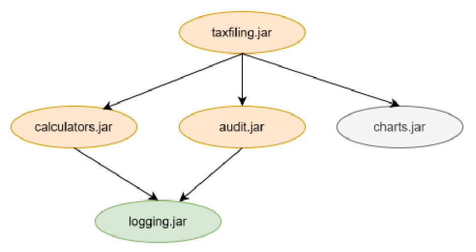
Giả sử thêm rằng ứng dụng này hiện chưa được modular hóa và được chạy từ dòng lệnh như sau:
Lưu ý rằng đến lúc này bạn nên làm quen với các tùy chọn -classpath, --module-path, và --module.
23.6.2 Di chuyển từ dưới lên (Bottom-up Migration)☝
Trong chiến lược di chuyển từ dưới lên (Bottom-up migration), trước tiên chúng ta cố gắng chuyển đổi các phần của ứng dụng không phụ thuộc vào bất kỳ phần phi modular nào khác thành các module và đặt chúng trên module path. Ở đây, một “phần” tương ứng với một tệp jar mà ứng dụng sử dụng. Sau đó, chúng ta lặp lại quy trình này cho đến khi có thể chuyển đổi phần cuối cùng, tức là tệp jar cao nhất trong đồ thị phụ thuộc, thành một module. Hãy cùng xem quy trình này hoạt động như thế nào với ví dụ giả định của chúng ta, theo từng bước.
Bước 1:
Vì logging.jar được cho là đã có tính modular và không phụ thuộc vào bất kỳ thứ gì khác, nên chúng ta có thể ngay lập tức đặt nó trên module path. Do đó, lệnh chạy ứng dụng của chúng ta bây giờ sẽ đổi thành:
Hãy chú ý rằng tệp jar chứa entry point của ứng dụng, tức là
713
taxfiling.jar vẫn nằm trên classpath. Lệnh này hoạt động vì mọi class được tải từ classpath đều trở thành một phần của unnamed module, và các class trên unnamed module được phép đọc tất cả các package từ unnamed module cũng như các named module.
Bước 2:
Bây giờ chúng ta có thể chuyển sự chú ý sang calculators.jar. Vì nó không phụ thuộc vào bất kỳ file jar non-modular nào và được kiểm soát bởi đội ngũ của chúng ta, đây là một ứng cử viên sáng giá để chuyển đổi. Để chuyển đổi thư viện này thành một module, chúng ta cần tạo một file module-info.java với nội dung như sau và đặt nó vào thư mục gốc của mã nguồn thư viện calculators:
module calculators{
requires logging; //since this is the name of the module packaged
in logging.jar
exports calculators; //assuming that the package name that we want
to export is calculators
}
Vì thư viện này không phụ thuộc vào bất kỳ thứ gì khác, nó có thể dễ dàng được biên dịch lại thành một modular jar bằng cách sử dụng các tùy chọn biên dịch dành cho module đã được thảo luận trước đó. Sau bước này, lệnh để chạy ứng dụng của chúng ta sẽ là:
Tại thời điểm này, chúng ta phải đợi cho đến khi đội ngũ chịu trách nhiệm sản xuất audit.jar thực hiện modular hóa nó. Một khi đội đó modular hóa audit.jar, chúng ta có thể đặt nó lên module-path giống như calculators.jar. Tuy nhiên, chúng ta sẽ bị kẹt cho đến khi công ty chịu trách nhiệm sản xuất charts.jar tiến hành modular hóa nó (trừ khi chúng ta sử dụng nó như một “automatic” module). Giả sử họ cũng modular hóa cả charts.jar, và trong trường hợp đó, lệnh của chúng ta sẽ trở thành:
Giờ đây chúng ta đã ở vị thế có thể chuyển đổi taxfiling.jar thành một module bằng cách tạo
module-info sau (giả định rằng các module audit và charts chứa các chỉ thị
exports phù hợp giúp các package được ứng dụng taxfiling sử dụng có thể đọc được):
Chắc hẳn bạn đã nhận thấy rằng quy trình này gặp phải một vấn đề nghiêm trọng. Chúng ta không thể modular hóa
taxfiling.jar cho đến khi tất cả các dependency của nó được modular hóa, và vì chúng ta không kiểm soát
tất cả các dependency, chúng ta hoàn toàn phụ thuộc vào các đội ngũ khác. Điều này là không mong muốn trong hầu hết các tình huống,
và vì vậy, cách tiếp cận Bottom-up hiếm khi được sử dụng để di chuyển các dự án phức tạp.
Tóm lại, trong cách tiếp cận Bottom-up:
Các dependency được di chuyển trước và jar của ứng dụng mục tiêu được di chuyển sau.
Mọi file jar (hoặc mọi module tiềm năng) đều được chuyển sang module-path.
715
Không còn lại gì trên classpath.
23.6.3 Chuyển dịch từ trên xuống (Top-down Migration)☝
Trong chiến lược chuyển dịch từ trên xuống (Top-down migration), chúng ta bắt đầu bằng việc chuyển đổi file jar ứng dụng cao nhất thành một module. Khi làm như vậy, chúng ta cũng phải đặt các file jar non-modular mà module cao nhất trực tiếp phụ thuộc vào lên module-path, từ đó biến chúng thành các “automatic module”.
Hãy nhớ rằng một automatic module export tất cả các package của nó và được phép đọc tất cả các package được export từ các module khác. Ngoài ra, hãy nhớ rằng tên module của một automatic module được suy ra từ tên file jar của nó và do đó được biết trước. Tên này được sử dụng trong module-info của file jar cao nhất. Hãy cùng xem điều này hoạt động như thế nào trong trường hợp của chúng ta.
Bước 1:
Chúng ta bắt đầu bằng cách tạo module-info cho taxfiling.jar . Vì theo giả thiết, nó phụ thuộc vào calculators.jar , audit.jar , và charts.jar (vốn là các file jar non-modular), chúng ta phải sử dụng các file jar này làm các automatic module, và trong trường hợp đó, tên module của chúng sẽ lần lượt là calculators , audit , và charts . Do đó, file module-info.java cho module taxfiling sẽ như sau:
Bây giờ chúng ta có thể biên dịch lại code cho module taxfiling và tạo một file taxfiling.jar modular mới. Vì vậy, lệnh để chạy ứng dụng của chúng ta bây giờ sẽ thay đổi thành:
Hãy lưu ý rằng file jar chứa điểm khởi đầu (entry point) của ứng dụng, tức là taxfiling.jar , hiện đã nằm trên module-path rồi. Vì vậy, có vẻ như chúng ta đã hoàn thành, nhưng thực tế thì chưa. Chúng ta vẫn chưa chuyển đổi calculators.jar thành một module thông thường.
Bước 2:
Chúng ta có thể thực hiện theo quy trình tương tự để chuyển đổi calculators.jar thành một module. Chúng ta có thể sử dụng file module-info.java sau cho module này:
Hãy lưu ý rằng lúc này chúng ta đang export package calculators từ module calculators một cách chính thức. Trong bước trước, package này đã được export tự động. Sau khi biên dịch lại và tạo file calculators.jar modular mới, chúng ta có thể đặt nó vào module-path và chạy ứng dụng bằng câu lệnh tương tự như trước. Đến đây, chúng ta đã hoàn thành.
Bước 3:
Vì chúng ta không kiểm soát mã nguồn của các thư viện khác, chúng ta sẽ không cố gắng modular hóa chúng. Chúng ta đã và đang sử dụng chúng dưới dạng các automatic module. Một khi họ di chuyển (migrate) mã nguồn của mình sang các module, chúng ta có thể sử dụng các file jar mới của họ (với các thay đổi thích hợp trong module-info cho các module taxfiling và calculators nếu cần), nhưng câu lệnh của chúng ta sẽ không thay đổi. Lưu ý rằng nếu một automatic module phụ thuộc vào một file jar không modular của bên thứ ba, chúng ta không cần phải chuyển đổi file jar đó thành một automatic module. Nó có thể tiếp tục nằm trên classpath. Chúng ta không gặp trường hợp đó trong ví dụ này, nhưng nếu logging.jar không phải là một file jar modular, chúng ta sẽ để nó lại trên classpath vì taxfiling.jar không phụ thuộc trực tiếp vào nó.
Như bạn có thể thấy, chúng ta có thể tiến hành modular hóa mã nguồn của mình theo hướng tiếp cận từ trên xuống (top-down) mà không cần chờ đợi các đội ngũ khác hoàn thành việc modular hóa mã nguồn của họ. Bởi vì, với cách tiếp cận này, tất cả các đội ngũ đều có thể làm việc để modular hóa codebase của mình theo
717
sự thuận tiện của họ, đây là cách tiếp cận được ưu tiên trong hầu hết các trường hợp. Vấn đề duy nhất đối với cách tiếp cận này là chúng ta có thể phải chỉnh sửa module-info nếu chúng ta nhận được một file jar modular mới có tên module khác với tên chúng ta đã sử dụng.
Tóm lại, trong cách tiếp cận Top-down:
File jar của ứng dụng đích được di chuyển trước và các phụ thuộc được di chuyển sau.
Không phải mọi file jar (hoặc không phải mọi module tiềm năng) đều được chuyển sang module-path.
Một số file jar có thể được để lại trên classpath
Bạn có thể gặp một số phát biểu mơ hồ và từ ngữ không rõ ràng trong vài câu hỏi về module. Chỉ cần nhớ phần tóm tắt ở trên, gạch bỏ các phương án rõ ràng là sai và chọn phương án tốt nhất.
23.6.4 Các tùy chọn dòng lệnh để vượt qua các hạn chế do module áp đặt☝
Về mặt lý tưởng, một module không nên phụ thuộc vào các package của một thư viện mà nhà phát triển thư viện không có ý định cho phép truy cập công khai. Tuy nhiên, trong thực tế, các ứng dụng Java hiện có thể vô tình tham chiếu đến các lớp của các package như vậy vì trước khi có modular hóa, nhà phát triển thư viện không có cách nào để ngăn chặn việc truy cập vào các package nội bộ. Điều này đã xảy ra rất nhiều với các API nội bộ của JDK vì chúng có thể truy cập công khai trong các phiên bản JDK chưa được modular hóa trước đây (trước Java 11). Các ứng dụng này sẽ gặp lỗi biên dịch cũng như lỗi runtime khi cố gắng sử dụng các phiên bản modular mới của các thư viện đó. Để cho phép các ứng dụng cũ hơn sử dụng các thư viện modular mới hơn, Java cung cấp các tùy chọn dòng lệnh sau (áp dụng cho cả javac cũng như java ):
1. --add-exports module/package=other-module(,other-module)* : Tùy chọn này chỉ định một package được coi là được xuất từ module định nghĩa của nó sang các module bổ sung hoặc sang tất cả các module không tên khi giá trị của other-module là
718
ALL-UNNAMED. Điều này hữu ích khi một module không export một package thông qua mệnh đề exports
trong module-info nhưng một module khác có sự phụ thuộc tại thời điểm biên dịch (compile-time dependency) vào nó.
2. --add-reads module=other-module(,other-module)* : Tùy chọn này chỉ định
các module bổ sung được coi là bắt buộc bởi một module nhất định.
Cũng có một vài tùy chọn khác nữa nhưng bạn có thể bỏ qua chúng cho mục đích của kỳ thi.
Kỳ thi không đi sâu vào chi tiết của các tùy chọn này nhưng một số thí sinh đã báo cáo rằng họ đã gặp
các tùy chọn này trong kỳ thi và do đó, tốt hơn là nên biết về chúng.
23.7 Tìm hiểu về Modular JDK và các Công cụ☝
23.7.1 Modular JDK☝
Nếu bạn nhìn vào kích thước của thư viện runtime Java, thật khó tin rằng ban đầu Java được
thiết kế để chạy trên cả những thiết bị nhỏ nhất. Giờ đây, ba mươi năm sau, Java đã tiến xa
hơn mục tiêu của nó. Nó đã trở nên cực kỳ hữu ích trong việc xây dựng các ứng dụng lớn, cực kỳ quan trọng (mission-critical)
cũng như các ứng dụng desktop nhỏ. Một trong những lý do cho sự thành công của nó là sự tiến hóa liên tục của
các tính năng, công cụ và thư viện được đóng gói đi kèm với Java.
Một cam kết quan trọng khác của Java là WORA, “Write Once Run Anywhere” (Viết một lần, chạy mọi nơi). Java đi kèm với một
bộ API duy nhất mà bạn có thể sử dụng để viết một ứng dụng hoạt động giống hệt nhau trên mọi nền tảng.
Java đã đạt được thành tựu này bằng cách phát triển một môi trường runtime giúp ẩn đi sự khác biệt của
phần cứng bên dưới và cung cấp một tập hợp các tính năng chung.
Qua nhiều năm, các loại và khả năng của các thiết bị có sự khác biệt rất lớn và nó trở nên
719
không thể che giấu những khác biệt về khả năng phần cứng của rất nhiều nền tảng được nữa.
Nhưng nếu bạn có một Java runtime cho một thiết bị và nếu runtime đó không thể chạy một ứng dụng Java
được phát triển cho một thiết bị khác, thì điều đó sẽ đồng nghĩa với việc từ bỏ lời hứa WORA.
Java cuối cùng đã từ bỏ WORA khi đưa ra nhiều phiên bản runtime khác nhau như J2SE, J2EE và J2ME.
J2ME là phiên bản Java runtime gọn nhẹ (small footprint) có thể chạy trên thế hệ điện thoại di động
đầu tiên. Nó khác biệt rất lớn so với J2SE và J2EE về mặt khả năng. Tuy nhiên, thư viện Java cốt lõi
vẫn được giữ nguyên.
Đến phiên bản Java 8, thư viện Java tiêu chuẩn, với hơn bốn ngàn năm trăm Lớp (Class), đã trở thành
một khối monolithic khổng lồ gồm các Lớp (Class) và package phụ thuộc lẫn nhau đến mức không thể tách rời
thành các phần độc lập nhỏ hơn. Ngay cả khi một ứng dụng sử dụng một phần rất nhỏ của thư viện runtime,
nó vẫn phải đi kèm với toàn bộ thư viện. Bạn có thể đã từng nghe nói về một file jar có tên là
rt.jar mà mọi bản cài đặt Java trước đây đều đi kèm. File jar 60 MB này chứa toàn bộ
thư viện Java SE. Nếu bạn muốn phân phối ứng dụng Java của mình chỉ gồm một Lớp (Class) duy nhất, bạn
sẽ phải đính kèm file jar khổng lồ này.
Modular JDK là một nỗ lực nhằm giải quyết vấn đề này. Nó đã chia JDK thành nhiều module liên kết
lỏng lẻo (loosely coupled) có thể được kết hợp tại thời điểm biên dịch (compile time), thời điểm build
(build time), cũng như thời điểm chạy (runtime), thành nhiều cấu hình khác nhau tùy theo nhu cầu của các
ứng dụng. Ví dụ, một ứng dụng lớn phía máy chủ có thể sử dụng toàn bộ JDK nhưng một microservice có thể
được đóng gói chỉ với các module thực sự cần thiết. Nó cũng cho phép các ứng dụng được đóng gói cùng
với runtime được phân phối với các profile nhỏ hơn, nhờ đó tăng khả năng tiếp cận của các ứng dụng Java
tới nhiều thiết bị và nền tảng hơn.
23.7.2 Tổ chức của modular JDK☝
Các package, hay package API, theo cách gọi trong thuật ngữ chuyên môn, nằm trong nền tảng Java
được phân phối vào các module khác nhau. Các module này có thể được chia thành hai nhóm lớn - module
tiêu chuẩn và module không tiêu chuẩn. Các module được quản lý bởi Java Community Process (JCP)
được gọi là Tiêu chuẩn
720
các module. Tên của chúng bắt đầu bằng java. Ví dụ, java.base, java.sql,
và java.logging là các module tiêu chuẩn. Tất cả các module khác đặc thù cho một JDK được
gọi là các module không tiêu chuẩn. Tên của chúng bắt đầu bằng jdk. Ví dụ, jdk.jdeps,
jdk.rmic, và jdk.javadoc là các module không tiêu chuẩn.
Tương tự, các package tiêu chuẩn có tên bắt đầu bằng java hoặc javax chẳng hạn như java.lang,
java.sql, javax.crypto, và javax.net, và các package không tiêu chuẩn đặc thù cho JDK,
nói chung, có tên bắt đầu bằng jdk chẳng hạn như jdk.internal.perf,
jdk.internal.logger, và jdk.internal.util. Tùy thuộc vào nhà cung cấp JDK, nó
cũng có thể có các package phản ánh tên công ty chẳng hạn như sun.net hoặc
sun.utils.resource.
Lưu ý rằng một module tiêu chuẩn có thể chứa các package không tiêu chuẩn nhưng một module
không tiêu chuẩn không chứa bất kỳ package tiêu chuẩn nào.
Các module tiêu chuẩn và không tiêu chuẩn sau đó được kết hợp để tạo ra nhiều
cấu hình Java khác nhau chẳng hạn như Nền tảng Java SE đầy đủ, JRE đầy đủ, và JDK đầy đủ.
Nền tảng Java SE☝
Nền tảng Java, Phiên bản Tiêu chuẩn (Java SE) là nền tảng Java cốt lõi cho mục đích
tính toán chung. Nó chỉ bao gồm các module tiêu chuẩn (tức là có tên bắt đầu bằng java)
và bắt buộc phải được hỗ trợ bởi tất cả các triển khai Java. Bạn không cần phải nhớ tất cả
các module có sẵn trong nền tảng này, nhưng một số module được sử dụng phổ biến nhất trong nền tảng
này là java.base, java.desktop, java.logging, java.sql, java.prefs, và
java.net.http. Tất cả các chương trình mà bạn đã viết hoặc sẽ viết để chuẩn bị cho
kỳ thi chứng chỉ Java sẽ chỉ yêu cầu nền tảng này.
Lưu ý rằng điều này không có nghĩa là nền tảng Java SE bao gồm tất cả các module tiêu chuẩn.
Ví dụ, java.cardio là một module tiêu chuẩn (nó được quản lý bởi JCP) nhưng không phải là một phần của
Nền tảng Java SE. Điều này cũng không có nghĩa là bản thân nền tảng này sẽ không sử dụng các lớp
từ các package hoặc module không tiêu chuẩn. Như tôi đã đề cập trước đó, một module tiêu chuẩn có thể
chứa các package không tiêu chuẩn. Tất cả những gì nó có nghĩa là không có module nào đi kèm trong Nền tảng Java SE
“export” bất kỳ thành phần không-
721
package tiêu chuẩn. Nói cách khác, nếu module của bạn chỉ “requires” các module nằm trong nền tảng Java SE, nó sẽ chỉ phụ thuộc vào các package Java tiêu chuẩn và sẽ khả chuyển (portable) trên mọi phiên bản thực thi của Nền tảng Java SE.
Module java.base☝
Module này định nghĩa các API nền tảng của nền tảng Java SE. Nói là nền tảng (foundational), nghĩa là nó nằm ở cốt lõi của mọi nền tảng Java. Module này không yêu cầu (require) bất kỳ module nào khác, nhưng mọi module khác đều phụ thuộc vào nó. Một lần nữa, bạn không cần phải nhớ toàn bộ danh sách các package chứa trong module này, nhưng dưới đây là một số package quan trọng mà bạn nên biết — java.lang, java.lang.annotation, java.io, java.nio, java.net, java.util, java.util.concurrent, java.security, và java.time.
Tất cả các Lớp (Class) và package của Java API mà chúng ta đã sử dụng trong cuốn sách này đều thuộc về module này. Mọi Lớp (Class) mà chúng ta đã viết trong cuốn sách này đều phụ thuộc vào một Lớp (Class) từ module này. Dĩ nhiên, suy cho cùng thì java.lang.Object cũng thuộc về module này! Nhưng bạn có nhận thấy rằng chúng ta chưa bao giờ viết requires java.base; trong các khai báo module của những module mà chúng ta phát triển ở phần trước không? Lý do là vì mọi thứ trong Java đều yêu cầu các package được export từ module này, trình biên dịch Java không yêu cầu nó phải được chỉ định một cách tường minh. Nói cách khác, cũng tương tự như việc package java.lang không yêu cầu phải được import tường minh trong một Lớp (Class), module java.base không bắt buộc phải chỉ định tường minh trong mệnh đề requires của một module. Nó luôn được giả định là “required”.
23.7.3 Các công cụ mới và tùy chọn dòng lệnh☝
Nếu bạn nhìn vào thư mục bin của JDK (ví dụ: C:\Program Files\Java\jdk-21\bin trên máy tính chạy Windows), bạn sẽ thấy một số tệp thực thi. Hầu hết trong số đó là các công cụ đi kèm với JDK. Những công cụ này được sử dụng để thực hiện các hoạt động khác nhau khi chúng ta phát triển, kiểm thử và chạy Java
722
các ứng dụng. Bạn đã sử dụng ba trong số chúng - javac.exe, dùng để khởi chạy trình biên dịch Java, java.exe, dùng để khởi chạy JVM, và jar.exe, dùng để tạo tệp jar. Khi tiến tới phát triển các ứng dụng Java ở quy mô công nghiệp, bạn sẽ sử dụng một số công cụ khác như jdb, javadoc, javap, và javaw.
Với sự ra đời của các module Java, JDK đã bổ sung các công cụ mới cũng như một vài tham số mới (tức là các tùy chọn dòng lệnh) vào các công cụ hiện có đặc biệt để làm việc với các module Java. Để phục vụ cho kỳ thi OCP, bạn cần phải nắm được các tùy chọn và công cụ này là gì cũng như chức năng của chúng.
Các tùy chọn dòng lệnh liên quan đến module☝
Chúng ta đã thảo luận chi tiết về các tùy chọn --module-path và --module-source-path. Tất nhiên, các tùy chọn này đều áp dụng được cho cả lệnh java cũng như lệnh javac.
--show-module-resolution : Tham số mới này được áp dụng cho lệnh java để yêu cầu nó in thông tin phân giải module trong quá trình thực thi chương trình Java. Về cơ bản, nếu bạn muốn biết tất cả các module nào đang được tham chiếu khi chạy chương trình, đây là tùy chọn cần sử dụng. Ví dụ, hãy xem đầu ra do Java tạo ra nếu bạn sử dụng tùy chọn này khi thực thi module simpleinterest của chúng ta.
C:\ocp21\moduletest>java --show-module-resolution --module-path out --module
simpleinterest/simpleinterest.SimpleInterestCalculator
... omitting several such lines
...
java.rmi requires java.logging jrt:/java.logging
10.0
Dòng đầu tiên của kết quả đầu ra cho thấy module gốc là simpleinterest (vì đây là module mà Java chuẩn bị thực thi) và nó được tải từ C:/ocp21/moduletest/out/simpleinterest/.
Dòng thứ hai cho thấy simpleinterest yêu cầu module calculators, module này được tải từ C:/ocp21/moduletest/out/calculators.
Chúng ta biết rằng calculators không yêu cầu bất kỳ module nào khác. Tuy nhiên, mọi module đều yêu cầu module java.base. Vì vậy, các dòng còn lại hiển thị chi tiết về việc tải module java.base.
Dòng cuối cùng là kết quả đầu ra từ phương thức main của SimpleInterestCalculator.
Lưu ý rằng tùy chọn show-module-resolution chỉ hiển thị chi tiết ở cấp độ module. Nó không cho bạn biết package nào hoặc Lớp (Class) nào từ một module thực sự được yêu cầu.
jdeps☝
Jdeps là một công cụ mới được thiết kế đặc biệt nhằm giúp bạn làm việc với các module mà không cần thực thi chúng. Bằng cách sử dụng công cụ này, bạn có thể tìm ra các phụ thuộc ở cấp độ module, package, cũng như cấp độ Lớp (Class) của một module cho trước. Nó có thể phân tích một exploded module hoặc một file jar của module. Hãy chạy nó trên module simpleinterest của chúng ta và xem kết quả nó tạo ra.
c:\ocp21\moduletest\>jdeps --module-path out --module simpleinterest
Nó cho thấy rằng simpleinterest sử dụng các module calculators cũng như java.base. Nó cũng
cho thấy rằng simpleinterest phụ thuộc vào package calculators từ module calculators
và các package java.io và java.lang từ module java.base.
Nếu bạn muốn xem các phụ thuộc ở cấp độ lớp (class), bạn có thể thử tùy chọn -verbose:class :
c:\ocp21\moduletest\>jdeps -verbose:class --module-path out --module
simpleinterest
Jdeps là một công cụ mạnh mẽ với một số tùy chọn nhưng đối với kỳ thi OCP, thông tin được cung cấp
ở trên là đủ.
725
jmod☝
Java 9 cũng giới thiệu một cách mới để đóng gói mã nguồn Java thành các tệp “jmod”. Phương thức đóng gói này
được sử dụng khi bạn cần đóng gói các artifact chẳng hạn như mã nguồn native (native code) vốn không thể đưa vào các tệp jar.
Tuy nhiên, một tệp jmod không thể thực thi được và do đó, chỉ được sử dụng tại thời điểm biên dịch (compile time) và thời điểm liên kết
(link time). Nó không phải là sự thay thế cho các tệp jar. Đừng lo lắng, bạn không cần phải đi sâu vào chi tiết của các tệp jmod.
Nhưng bạn vẫn có thể thấy lệnh jmod được đề cập trong một câu hỏi thi. Vì vậy, bạn
nên nhớ cú pháp cơ bản của lệnh jmod :
Đối số đầu tiên của jmod là chế độ hoạt động (operation mode) của nó. Nó phải là một trong năm chế độ — create,
extract, list, describe, và hash.
create — Tạo một tệp lưu trữ JMOD mới
extract — Giải nén tất cả các tệp từ tệp lưu trữ JMOD
describe — In ra thông tin chi tiết của module
list — In ra tên của tất cả các thực thể (entry), tức là các tệp chứa trong tệp jmod
hash — Xác định các module lá (leaf module) và ghi lại mã băm (hash) của các phụ thuộc (dependency) mà trực tiếp
và gián tiếp yêu cầu chúng.
Trong số các chế độ trên, chỉ có chế độ describe là liên quan đến các module. Một sự khác biệt quan trọng
giữa lệnh jmod và các lệnh java/javac là dấu gạch nối (tức là - ) không
được sử dụng để chỉ định chế độ.
JImage☝
Thông thường, việc chạy một ứng dụng Java yêu cầu sự hiện diện của JRE chuẩn (standard JRE), bao gồm
tất cả các module và package chuẩn và do đó, có kích thước đĩa khá lớn. JDK
dạng module (modularized JDK) được giới thiệu từ Java 9 cho phép bạn tạo một JRE image tùy chỉnh (customized JRE image)
chỉ chứa các phần cần thiết cho ứng dụng của bạn, nhờ đó giảm đáng kể kích thước tổng thể.
Một JRE image tùy chỉnh như vậy được đóng gói trong một
726
file .jimage. Một file JImage có thể được tạo và quản lý bằng cách sử dụng các công cụ như jlink và
jimage, vốn có sẵn trong JDK.
Không rõ kỳ thi kỳ vọng bạn đi sâu đến mức nào vào việc tạo file JImage, nhưng dựa trên phản hồi từ những người vừa thi OCP Java 21 gần đây, bạn ít nhất nên biết các điểm sau:
Việc tạo một JImage không yêu cầu ứng dụng phải mang tính mô-đun (modular) vì nó nhằm mục đích tạo các JRE tùy chỉnh bằng cách chọn lọc các module từ JRE tiêu chuẩn. Các image JRE tùy chỉnh có thể được tạo cho cả ứng dụng modular cũng như non-modular.
Vì một JImage về cơ bản là một JRE tùy chỉnh, nó không độc lập với nền tảng (tức là nó không phải là “đa nền tảng”). Một JImage được tạo ra cho một nền tảng cụ thể. Lưu ý rằng một ứng dụng Java độc lập với nền tảng nhưng JRE thì không.
Một JImage có thể bao gồm tất cả các loại file, bao gồm các file nhị phân cũng như các file class từ ứng dụng cũng như từ JRE.
23.8 Bài tập☝
1. Tạo một module tên là compoundinterest chứa một class tên là
CompoundInterestCalculator tương tự như module simpleinterest được mô tả trong
chương này.
2. Biên dịch mã nguồn của module compoundinterest khi có và không sử dụng tùy chọn --module. Sử dụng tùy chọn -d để chuyển hướng đầu ra đến thư mục đầu ra của bạn.
3. Chạy class CompoundInterestCalculator khi có và không sử dụng tùy chọn --module-path.
4. Cải tiến module của bạn bằng cách làm cho class CompoundInterestCalculator implement
interface InterestCalculator của module calculators.
5. Đóng gói module compoundinterest thành một file jar và chạy module này bằng cách sử dụng tùy chọn --module-path.
6. Cải tiến module compoundinterest để khai báo rằng nó implement
727
6. Dịch vụ InterestCalculator. Hãy bao gồm package này khi chạy chương trình ConsumerMain
và quan sát kết quả đầu ra.
7. Cải tiến interface (giao diện) InterestCalculator để bổ sung một phương thức (method) khác có thể được sử dụng
để phân biệt giữa các nhà cung cấp dịch vụ khác nhau và sử dụng phương thức (method) này trong ConsumerMain
để chọn một trong hai nhà cung cấp dịch vụ.
8. Tạo một module finance với một lớp (class) TestClass. Lớp này nên có một phương thức (method) main để
tính lãi đơn cũng như lãi kép. Thực hiện các sửa đổi thích hợp cho các
module simpleinterest và compundinterest cho mục đích này.
9. Tạo và export một service interface (giao diện) tên là MessagingService với một phương thức (method) giả lập
tên là sendMessage từ module messaging. Cung cấp hai bản hiện thực (implementation) của dịch vụ này
và đóng gói chúng trong hai module khác nhau. Sử dụng cả hai bản hiện thực của
MessagingService từ một module khác.
728
Hướng dẫn Học tập & Ôn thi
Chứng chỉ Lập trình viên OCP Java 17 & 21
Kiến thức Cơ bản
Tài liệu Đồng hành Chính thức cho Khóa học
Chương 24
Triển khai Bản địa hóa (Localization)
Tổng quan Chương
Chương này bao gồm các mục tiêu thi sau đây: Triển khai bản địa hóa (localization) sử dụng các locale,
resource bundle, phân tích (parse) và định dạng (format) thông điệp, ngày tháng, thời gian, và các giá trị số bao gồm cả tiền tệ
và phần trăm
Các Mục tiêu Thi được Đề cập
Triển khai bản địa hóa (localization) sử dụng các locale, resource bundle, phân tích (parse) và định dạng (format) thông điệp, ngày tháng, thời gian,
và các giá trị số bao gồm cả tiền tệ và phần trăm
Chương 24 Triển khai bản địa hóa (Implementing Localization)
729
729
Mục tiêu kỳ thi
Triển khai bản địa hóa (localization) sử dụng các locale, resource bundle, phân tích (parse) và định dạng (format) các thông điệp, ngày, giờ, và số bao gồm cả các giá trị tiền tệ và phần trăm
24.1 Tìm hiểu về bản địa hóa (localization)☝
Trong quá trình phát triển một ứng dụng, chúng ta rất dễ quên rằng ứng dụng đó có thể được sử dụng bởi những người ở các quốc gia khác nhau với các ngôn ngữ khác nhau. Ở mức tối thiểu, một ứng dụng được kỳ vọng sẽ hiển thị thông tin dành cho người dùng bằng ngôn ngữ mà họ có thể hiểu được. Một ứng dụng thường tạo ra thông tin mà người dùng có thể tiếp nhận dưới dạng các nhãn điều khiển UI như các nút OK và Cancel, các thông báo pop-up, và bất kỳ văn bản biểu mẫu nào đi kèm trong kết quả đầu ra được tạo theo yêu cầu của người dùng như báo cáo PDF/Word. Vì vùng miền và ngôn ngữ của người dùng ứng dụng không phải lúc nào cũng được biết trước tại thời điểm phát triển ứng dụng, nên gần như không thể hardcode các định dạng và văn bản đặc thù cho từng vùng miền vào chính ứng dụng. Do đó, thay vì cố gắng làm như vậy, tốt hơn hết là ứng dụng không nên giả định trước bất kỳ ngôn ngữ nào và sử dụng các tính năng của môi trường runtime để bản địa hóa (localize) các thông điệp. Môi trường runtime có thể dễ dàng định dạng (format) các thông tin như ngày tháng và số theo định dạng cục bộ, nhưng nó không thể dịch các thông điệp đặc thù của ứng dụng sang ngôn ngữ địa phương. Để xử lý việc đó, ứng dụng phải sử dụng các "key" thông điệp có thể được tra cứu trong một "resource bundle" đặc thù cho vùng miền và ngôn ngữ tại thời điểm runtime, rồi sử dụng các giá trị trả về để tạo ra các thông điệp.
Một ứng dụng được đóng gói với nhiều resource bundle, nhưng tại thời điểm runtime, nó phát hiện
730
vùng của người dùng và sử dụng resource bundle dành riêng cho vùng đó để dịch các thông báo.
Cách tiếp cận này cho phép mã nguồn ứng dụng được viết theo cách hoàn toàn độc lập với ngôn ngữ,
và cũng cho phép việc tạo ra các resource bundle đặc trưng cho vùng được đảm nhận bởi một đội ngũ
am hiểu ngôn ngữ địa phương. Một ứng dụng như vậy không đòi hỏi bất kỳ sự thay đổi mã nguồn nào khi chuyển đổi
sang các vùng khác nhau và do đó, được gọi là đã được "quốc tế hóa". Tái cấu trúc một ứng dụng để
loại bỏ bất kỳ mã cứng (hardcoding) đặc trưng cho vùng nào khỏi mã nguồn ứng dụng được gọi là
"quốc tế hóa (internationalization)" hoặc gọi tắt là "i18n" (vì có 18 ký tự giữa chữ i và n trong
từ internationalization), và quá trình tạo cũng như đóng gói các tệp dành riêng cho vùng,
tức là các resource bundle, cho một vùng hoặc ngôn ngữ cụ thể của ứng dụng được gọi là
"bản địa hóa (localization)".
24.1.1 Phát hiện Locale của người dùng☝
Thông tin đặc trưng về vùng (trong ngữ cảnh này, từ vùng và quốc gia được sử dụng thay thế cho nhau) và
ngôn ngữ của người dùng được ghi nhận bởi lớp java.util.Locale. Nó có một vài
phương thức như getCountry() và getLanguage() trả về các chi tiết cụ thể của
vùng mà nó đại diện. Bạn không cần phải biết giá trị thực tế mà các phương thức này
trả về cho bất kỳ locale nào, nhưng hãy lưu ý rằng hầu hết các phương thức này đều trả về các mã được định nghĩa rõ ràng. Ví
dụ, chúng trả về "en" và "US" cho ngôn ngữ và quốc gia nếu Locale đại diện cho một
vùng nói tiếng Anh ở Mỹ. Lưu ý rằng ngôn ngữ là một chuỗi từ 2 đến 8 ký tự
viết thường và quốc gia là một chuỗi gồm 2 hoặc 3 ký tự viết hoa.
Một Locale cũng ghi nhận một "category" (danh mục) cho biết liệu thông tin locale này dành cho
việc tùy chỉnh hiển thị giao diện người dùng hoặc tùy chỉnh đầu ra dạng văn bản do ứng dụng tạo ra. Danh mục
này được đại diện bởi một enum lồng tĩnh được định nghĩa trong Locale có tên là Category. Nó có
chỉ hai hằng số - DISPLAY and FORMAT. Category sẽ hữu ích khi ứng dụng cần
phân biệt giữa hai loại tùy chỉnh này. Ví dụ, một ứng dụng có thể
muốn hiển thị các trình điều khiển giao diện người dùng bằng ngôn ngữ địa phương là tiếng Hindi nhưng lại muốn tạo báo cáo bằng tiếng Anh. Tuy
nhiên, đối với mục đích của kỳ thi OCP, sự phân biệt này không quan trọng nhưng cần được ghi nhớ
khi xây dựng một ứng dụng chuyên nghiệp. Ngoài ra, hãy nhớ rằng bất cứ khi nào category không được
731
được chỉ định, FORMAT được ngầm định.
Locale của người dùng có thể được lấy ra bằng cách sử dụng các phương thức static getDefault() hoặc
getDefault(Locale.Category) của Locale. Nhiều ứng dụng cung cấp cho người dùng tùy chọn
để thay đổi locale mặc định của họ. Điều này có thể được thực hiện bằng cách sử dụng Locale.setDefault(Locale
newLocale) và Locale.setDefault(Locale.Category category, Locale newLocale).
Các phương thức này thay đổi locale mặc định của JVM và bất kỳ lệnh gọi nào tiếp theo đến
getDefault sẽ trả về locale mới.
Tạo một Locale☝
Một đối tượng Locale có thể được tạo bằng cách sử dụng Locale.Builder hoặc sử dụng các phương thức factory tĩnh (static factory methods)
nạp chồng có tên là of của lớp Locale. Các constructor của Locale đã bị deprecated và có
thể bỏ qua. Dưới đây là một vài ví dụ bạn có thể gặp trong kỳ thi:
Locale enUs = new
Locale.Builder().setLanguage("en").setRegion("US").build();
Locale hi = Locale.of("hi"); //language Hindi
Locale hiIn = Locale.of("hi", "IN"); //language Hindi, country India
Lưu ý rằng Builder có phương thức setRegion (chứ không phải setCountry) nhưng API này coi
region và country là như nhau. Locale cũng định nghĩa một số hằng số public static cho
các quốc gia và ngôn ngữ, ví dụ: Locale.US và Locale.CHINESE.
Một điểm quan trọng cần lưu ý về Locale là không phải lúc nào nó cũng có giá trị cho tất cả các
chi tiết của vị trí mà nó đại diện. Ví dụ, Locale.CHINESE là một Locale
chỉ đại diện cho ngôn ngữ tiếng Trung (CHINESE). Lệnh gọi Locale.CHINESE.getCountry() sẽ trả về
một chuỗi rỗng (không phải null). Tương tự, lệnh gọi getLanguage() trên một Locale được dựng bằng
new Locale.Builder().setRegion("US").build() sẽ trả về "".
732
Locale ghi đè phương thức toString để trả về chuỗi biểu diễn của Locale. Theo JavaDoc, nó trả về ngôn ngữ + "_" + quốc gia + "_" + (biến thể + "_#" | "#") + chữ viết (script) + "_" + phần mở rộng. Ngôn ngữ luôn viết thường, quốc gia luôn viết hoa, chữ viết (script) luôn viết hoa chữ cái đầu (title case), và phần mở rộng luôn viết thường. Trong kỳ thi, bạn sẽ gặp các Locale chỉ sử dụng ngôn ngữ và quốc gia, và chuỗi biểu diễn của chúng sẽ có dạng như en_US hoặc fr_CA.
24.2 Bản địa hóa Số và Ngày tháng☝
Sử dụng NumberFormat
Mọi người ở các khu vực khác nhau thường quen với việc nhìn thấy các con số được định dạng theo những cách khác nhau. JDK cung cấp một lớp trừu tượng java.text.NumberFormatter có thể định dạng số theo tiêu chuẩn địa phương. Ví dụ sau đây minh họa cách sử dụng:
Lớp NumberFormat có một số phương thức static factory có thể được dùng để tạo một thực thể NumberFormat. Hầu hết trong số chúng có các biến thể nạp chồng (overloaded variants) nhận một Locale làm đối số. Những phương thức không nhận Locale sẽ trả về một thực thể định dạng số theo locale mặc định. Lưu ý rằng các thực thể được trả về bởi các phương thức này không thread-safe.
Kỳ thi không yêu cầu bạn phải biết định dạng chính xác khi in số đối với các locale khác nhau, nhưng yêu cầu bạn phải biết các ký hiệu tiền tệ của Đô la Mỹ ($), Euro (€) và Bảng Anh (£).
Phân tích cú pháp số
Một thực thể NumberFormat cũng có thể được dùng để parse một String chứa số được viết theo định dạng đặc trưng của locale. Ví dụ: nfC.parse("1M"), trong đó nfC trỏ đến cùng thực thể NumberFormat được dùng trong ví dụ trên, sẽ trả về một đối tượng Long chứa giá trị 1000000. Hãy lưu ý rằng kiểu trả về của phương thức parse là Number nhưng nó có thể thực sự trả về một đối tượng Double hoặc Long tùy thuộc vào việc chuỗi có các chữ số sau dấu thập phân hay không. Đồng thời hãy nhớ rằng phương thức này có khả năng ném ra một ngoại lệ java.text.ParseException, đây là một ngoại lệ checked (Ngoại lệ checked (Checked Exception)).
Sử dụng DateTimeFormatter
Để định dạng các đối tượng LocalDate/Time của package java.time, bạn cần sử dụng lớp java.time.format.DateTimeFormatter. Lớp này có ba phương thức khác nhau,
734
ofLocalizedDate, ofLocalizedTime, và ofLocalizedDateTime có thể được sử dụng lần lượt để định dạng LocalDate, LocalTime, và LocalDateTime. Chúng yêu cầu một đối số FormatStyle. DateTimeFormatter cũng có một phương thức ofPattern, phương thức này có thể định dạng các đối tượng LocalDate/Time cho bất kỳ Locale nào được cung cấp. Phương thức này yêu cầu một FormatStyle và một Locale làm các đối số. Ví dụ:
Bạn không cần phải nhớ định dạng của các tùy chọn FormatStyle khác nhau cho kỳ thi.
JDK có lớp java.text.DateFormat, tương tự như
java.text.NumberFormat và có thể được sử dụng để định dạng ngày tháng theo một Locale nhất định.
Tuy nhiên, vì lớp này được tạo ra từ rất lâu trước khi có API Ngày và Giờ (Date and Time API) mới, nó chỉ có thể định dạng
các đối tượng java.util.Date. Thật không may, lớp này vẫn chưa được nâng cấp để định dạng
các đối tượng java.time.LocalDate/Time.
Phân tích cú pháp Ngày tháng
DateTimeFormatter có một số phương thức có thể phân tích cú pháp một chuỗi thành các
đối tượng LocalDate/Time. Về mặt kỹ thuật, việc phân tích cú pháp ngày tháng có được đề cập trong mục tiêu kỳ thi nhưng việc phân tích cú pháp ngày tháng khá
phức tạp và chúng tôi chưa thấy ai gặp câu hỏi nào về phần này. Nếu có thời gian, bạn có thể xem
qua JavaDoc của lớp DateTimeFormatter để tìm hiểu thêm về chủ đề này.
24.3 Bản địa hóa văn bản☝
735
24.3.1 Quốc tế hóa một ứng dụng sử dụng ResourceBundle☝
Trong khi phát triển một ứng dụng được quốc tế hóa, tất cả văn bản hoặc từ ngữ hiển thị tới người dùng được ứng dụng sử dụng sẽ được xác định và liệt kê trong một tệp cùng với bản dịch của chúng dưới dạng các cặp tên-giá trị (name-value) bằng ngôn ngữ mà nhóm phát triển biết. Ví dụ, giả sử một ứng dụng yêu cầu người dùng nhập tên của họ và sau đó in ra tên đó kèm theo lời chào. Đại loại như sau:
public class HelloApp{
public static void main(String args){
Console c = System.console();
String name = c.readLine("What is your name? ");
String greetings = "Hi";
System.out.println(greetings+" "+name);
}
}
Ứng dụng chứa hai chuỗi hiển thị tới người dùng - "What is your name?" và "Hi". Để quốc tế hóa ứng dụng này, hai chuỗi này không được mã hóa cứng (hardcoded). Thay vào đó, mã nguồn phải sử dụng các key để tra cứu các cụm từ thực tế tại runtime. Việc này được thực hiện như sau:
import java.util.ResourceBundle;
public class HelloApp{
public static void main(String args){
ResourceBundle rb = ResourceBundle.getBundle("helloapp");
Console c = System.console();
String name = c.readLine(rb.getString("What is your name?")+" ");
String greetings = rb.getString("Hi");
System.out.println(greetings+" "+name);
}
}
736
Có một vài bộ phận chuyển động trong đoạn mã trên. Tôi sẽ giải thích tất cả chúng, nhưng trước hết hãy làm cho nó chạy đã. Nếu bạn biên dịch và chạy nó, bạn sẽ nhận được một Exception (Ngoại lệ) với thông báo sau:
java.util.MissingResourceException: Can't find bundle for base name
helloapp, locale en_IN
Bạn có thể thấy một tên locale khác trong kết quả đầu ra vì nó phụ thuộc vào locale trên máy của bạn. Bây giờ, hãy tạo một tệp tin tên là helloapp.properties trong cùng thư mục chứa HelloApp.class với nội dung như sau:
What\ is\ your\ name?=What is your name?
Hi=Hi
Nếu bạn chạy nó bây giờ, nó sẽ hoạt động như mong đợi. Kết quả đầu ra không có gì khác biệt so với phiên bản trước đó nhưng chúng ta đã hoàn thành một việc quan trọng trong đoạn mã trên. Chúng ta đã tìm cách tra cứu các khóa (key) được sử dụng trong chương trình và hiển thị các giá trị kết quả cho người dùng. Mặc dù nó vẫn in ra các thông điệp bằng tiếng Anh, nhưng ứng dụng hiện đã được quốc tế hóa! Tất cả những gì chúng ta cần làm bây giờ là bản địa hóa nó cho các locale mà chúng ta muốn chạy ứng dụng này. Nhưng trước khi thực hiện điều đó, hãy để tôi giải thích một vài điểm về đoạn mã trên:
1. Một đối tượng ResourceBundle chứa các đối tượng đặc trưng cho từng locale. Mỗi resource bundle có một tên gọi và chương trình sử dụng tên đó để tải các tệp tin liên quan chứa các mục nhập đặc trưng cho locale đó. Khi các mục nhập trong các tệp tin được tải vào resource bundle, chương trình chỉ cần tra cứu một khóa (key) trong resource bundle đó và sử dụng giá trị đặc trưng cho locale được trả về. Một resource bundle không bị giới hạn chỉ chứa các chuỗi (string) nhưng đối với mục đích của kỳ thi, chúng ta sẽ chỉ tập trung vào các chuỗi.
2. java.util.ResourceBundle là một lớp trừu tượng (abstract class) nhưng JDK cũng cung cấp một vài lớp con cụ thể (concrete subclass). Một trong những lớp con (subclass) đó là PropertyResourceBundle, lớp này có thể tải các cặp khóa - giá trị (key-value) từ một tệp tin properties. Tuy nhiên, thay vì khởi tạo trực tiếp lớp PropertyResourceBundle, chúng ta sử dụng phương thức getBundle của ResourceBundle vì phương thức này đủ thông minh để xác định chính xác các tệp tin properties nào là cần thiết để tạo ra resource bundle mong muốn dựa trên locale của người dùng, đó chính là điều chúng ta muốn.
737
2. Logic để xác định các tệp properties cần thiết để tạo một resource bundle là quan trọng và tôi sẽ giải thích chi tiết ngay sau đây, nhưng trong ví dụ này, vì chúng ta không có bất kỳ tệp properties nào dành riêng cho locale, phương thức getBundle sẽ chỉ tải một tệp properties có cùng tên với tên của resource bundle (nhưng có phần mở rộng .properties), nghĩa là helloapp.properties.
3. Tên của resource bundle và tệp properties tương ứng tuân theo cùng một quy ước giống như quy ước dành cho các lớp. Do đó, khi định vị một bundle có tên là helloapp, phương thức getBundle mong đợi tệp helloapp.properties được đặt trực tiếp trên classpath. Nếu tên của bundle là test.helloapp, thì tệp helloapp.properties sẽ phải có mặt trong thư mục test và thư mục test đó sẽ phải nằm trên classpath.
4. Tên của các key trong tệp properties có thể là bất kỳ thứ gì nhưng mã nguồn phải sử dụng cùng một key đó để tra cứu giá trị. Vì vậy, một thói quen phổ biến là sử dụng các chuỗi chứa văn bản có ý nghĩa trong ngôn ngữ mà đội ngũ phát triển hiểu làm các key. Việc sử dụng các key như key1, key2, khiến việc liên kết một key với văn bản dự kiến hiển thị cho người dùng đối với key đó trở nên khó khăn.
5. Ký tự gạch chéo ngược (\) trong các tệp properties là bắt buộc để escape ký tự khoảng trắng.
24.3.2 Hiểu về Resource Bundles☝
Các resource bundle có tính phân cấp, nghĩa là một resource bundle luôn có một bundle cha trừ khi bundle đó nằm ở đầu cấp phân cấp, trong trường hợp đó, nó được gọi là "base bundle" (bundle cơ sở). Cấp phân cấp của các resource bundle được thiết lập bằng cách sử dụng một tập hợp các resource bundle có tên bắt đầu bằng một tên cơ sở (base name) chung, chẳng hạn như helloapp được sử dụng trong ví dụ trước. Phần còn lại của tên một resource bundle được tạo bằng cách sử dụng các thuộc tính khác nhau của một locale chẳng hạn như ngôn ngữ và quốc gia, phân tách bằng dấu gạch dưới. Các thuộc tính này phải luôn tuân theo thứ tự sau:
baseName + "_" + language + "_" + script + "_" + country + "_" + variant
738
Đối với mục đích kỳ thi, chỉ có ngôn ngữ và quốc gia là quan trọng nhưng script và variant cũng hoạt động tương tự. Vì vậy, ví dụ, có thể có một phân cấp các resource bundle với các tên helloapp, helloapp_fr, và helloapp_fr_CA, trong đó bundle có tên helloapp nằm ở trên cùng (ông bà) và bundle có tên helloapp_fr_CA nằm ở dưới cùng. Lưu ý rằng một bundle có tên helloapp_fr_FR cũng sẽ là một phần của phân cấp này nhưng nó sẽ nằm trên một nhánh mới tách ra từ helloapp_fr. Tương tự, bundle có tên helloapp_en_UK cũng sẽ là một nhánh riêng biệt tách ra từ helloapp_en, nhưng nếu helloapp_en không tồn tại thì helloapp_en_UK sẽ là hậu duệ trực tiếp của helloapp. Điều này được minh họa trong hình ảnh dưới đây:
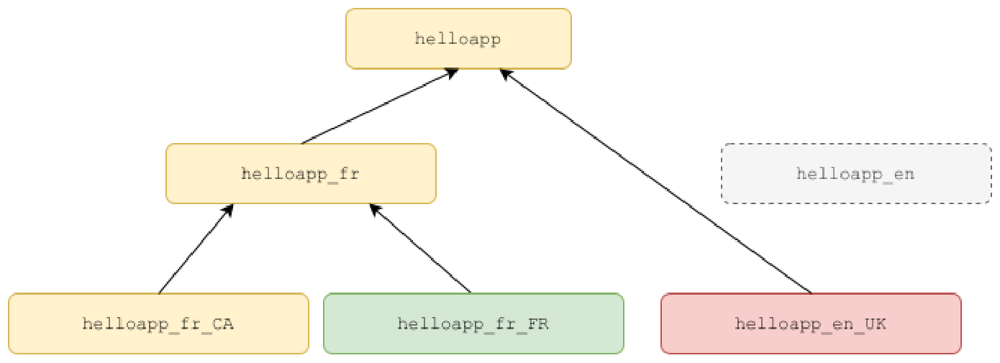
Tất cả các resource bundle này đều thuộc về cùng một gia đình resource bundle vì chúng có cùng tên cơ sở (base name), nghĩa là helloapp.
Việc hiểu rõ phân cấp của các resource bundle là rất quan trọng vì khi không tìm thấy một key trong một bundle cụ thể, nó sẽ tự động được tìm kiếm trong bundle cha lên đến base bundle. Khi một key cũng không được tìm thấy trong bất kỳ bundle tổ tiên nào, một MissingResourceException sẽ bị ném ra. Do đó, nếu helloapp_fr được truy vấn cho một key mà nó không có, bundle cha của nó là hellopapp sẽ được kiểm tra, và nếu helloapp cũng không có key đó thì một MissingResourceException sẽ bị ném ra. Lưu ý rằng việc tìm kiếm một key chỉ lan truyền ngược lên phân cấp và không bao giờ truyền xuống con hoặc sang ngang các bundle anh em.
Vậy bây giờ, dựa trên cuộc thảo luận ở trên, bạn có thể cho biết chúng ta nên sử dụng resource bundle nào
739
sẽ có nếu, ví dụ, chúng ta muốn bản địa hóa (localize) ứng dụng của mình cho những người nói tiếng Pháp ở Canada?
Đúng vậy, thực sự là hellopapp_fr_CA. Nhưng hãy nhớ rằng các giá trị từ bundle này sẽ không được sử dụng cho người nói tiếng Pháp ở Pháp vì locale của họ sẽ là fr_FR và họ sẽ tìm kiếm các key trong helloapp_fr_FR. Nếu bạn kiểm tra biểu đồ trên, helloapp_fr_CA là một bundle cùng cấp (sibling) chứ không phải bundle cha (parent) của helloapp_fr_FR. Tuy nhiên, nếu chúng ta có resource bundle tên là helloapp_frthay vìhelloapp_fr_CA, thì các giá trị từ bundle này có thể được sử dụng cho tất cả các locale nói tiếng Pháp vì helloapp_fr là cha (parent) của helloapp_fr_CA cũng như helloapp_fr_FR.
24.3.3 Tạo các resource bundle bằng cách sử dụng tệp properties☝
Lớp (Class) ResourceBundle có một vài phương thức getBundlestatic nạp chồng (overloaded), trong đó hai phương thức đặc biệt quan trọng là getBundle(String baseName) và getBundle(String baseName, Locale locale). Phương thức trước trả về một ResourceBundle cho locale mặc định của người dùng, trong khi phương thức sau trả về một ResourceBundle cho locale được chỉ định. baseName là tên chung của tất cả các resource bundle trong một họ như đã giải thích trước đó.
Yêu cầu một resource bundle cho locale mặc định☝
Các phương thức getBundle tự động đọc một tệp properties có tên khớp với tên của resource bundle được yêu cầu (với điều kiện tệp properties nằm trên classpath) và tạo một instance PropertyResourceBundle chứa các mục được định nghĩa trong tệp properties đó. Ví dụ, giả sử locale mặc định của người dùng là en_US, lời gọi ResourceBundle.getBundle("helloapp") sẽ tìm kiếm một tệp properties có tên helloapp_en_US.properties trong classpath và tải các mục vào bundle helloapp_en_US. Hãy nhớ rằng vì các resource bundle có tính phân cấp, việc tạo một ResourceBundle cũng kích hoạt việc tạo bundle cha (parent bundle) của nó. Do đó, một khi bundle helloapp_en_US được tạo, bundle cha của nó là helloapp_en cũng sẽ tự động được tạo trong một
740
theo cách tương tự. Do đó, nó sẽ tìm kiếm helloapp_en.properties để tạo
bundle helloapp_en. Tương tự, vì parent của helloapp_en là helloapp,
helloapp.properties cũng sẽ được tải.
Nếu trong quá trình tạo cấu trúc phân cấp của các resource bundle, tại bất kỳ giai đoạn nào, phương thức getBundle không
thể tìm thấy tệp properties phù hợp, nó sẽ cố gắng tạo parent bundle của bundle được
yêu cầu và trả về parent bundle đó. Vì vậy, nếu helloapp_hi_IN.properties không
có sẵn, phương thức getBundle("helloapp", Locale.of("hi", "IN")) sẽ cố gắng tạo
parent bundle, tức là helloapp_hi theo quy trình mô tả ở trên và trả về bundle này
thay thế.
Về cơ bản, việc gọi getBundle dẫn đến việc tạo cấu trúc phân cấp từ bundle
được yêu cầu cho đến base bundle (nhưng không bao gồm các bundle con hoặc sibling) sử dụng các tệp properties.
Hình dưới đây minh họa đường dẫn tìm kiếm mà getBundle thực hiện trong ví dụ này:
Yêu cầu một resource bundle cho locale không mặc định☝
Quy trình tạo một bundle được yêu cầu cho locale không mặc định gần như tương tự như trên.
Sự khác biệt duy nhất là khi getBundle không thể tìm thấy bất kỳ tệp properties cụ thể nào cho locale,
nó không trả về base resource bundle ngay lập tức. Trước khi trả về base bundle, nó
cố gắng tìm và trả về bundle cho locale mặc định
741
locale. Vì vậy, ví dụ, giả sử locale mặc định của người dùng là en_US và bạn yêu cầu một bundle cho locale hi_IN bằng cách gọi getBundle("helloapp", Locale.of("hi", "IN")). Lúc này, nếu phương thức này không thể tìm thấy bất kỳ tệp properties nào khớp với locale hi_IN (nghĩa là helloapp_hi_IN.properties hoặc helloapp_hi.properties), nó sẽ cố gắng tạo và trả về bundle cho locale mặc định, tức là helloapp_en_US. Nếu nó cũng không thể tìm thấy bất kỳ tệp properties nào cho locale en_US, nó sẽ trả về bundle cơ sở (base bundle), tức là helloapp. Hình ảnh sau đây minh họa đường dẫn tìm kiếm mà getBundle thực hiện trong ví dụ này:
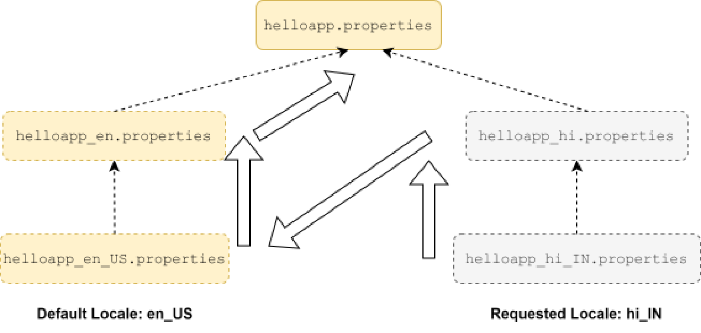
Tại thời điểm này, bạn có thể tò mò muốn biết điều gì sẽ xảy ra nếu getBundle không thể tìm thấy bất kỳ tệp properties nào để có thể sử dụng nhằm tạo ra bất kỳ bundle nào. Trong trường hợp đó, nó sẽ ném ra một MissingResourceException.
Kỳ thi không cố ý đánh lừa bạn về vị trí của các tệp properties. Trừ khi mô tả đề bài có tuyên bố khác, bạn có thể giả định một cách an toàn rằng tệp properties được đưa ra trong câu hỏi nằm trên classpath và có thể được tải bởi một ResourceBundle. Bạn chỉ cần kiểm tra tên của tệp properties và tên của resource bundle được yêu cầu bằng cách sử dụng phương thức getBundle.
742
24.3.4 Tra cứu một key trong ResourceBundle☝
Nếu bạn đã đọc kỹ hai phần trước, phần này sẽ vô cùng dễ dàng.
Để tra cứu một key trong một ResourceBundle, trước tiên bạn cần có được một ResourceBundle mà bạn muốn sử dụng bằng cách dùng một trong các phương thức getBundle, sau đó gọi một trong ba phương thức getXXX sau đây trên resource bundle đó:
String getString(String key): Lấy một chuỗi cho key được cung cấp từ resource bundle này hoặc từ một trong các cha của nó.
String[] getStringArray(String key): Lấy một mảng chuỗi cho key được cung cấp từ resource bundle này hoặc từ một trong các cha của nó.
Object getObject(String key): Lấy một đối tượng (Object) cho key được cung cấp từ resource bundle này hoặc từ một trong các cha của nó.
Chỉ có phương thức đầu tiên là quan trọng cho kỳ thi và bạn đã thấy ví dụ sử dụng phương thức này trước đó. Như bạn chắc hẳn đã quan sát thấy trong các mô tả ngắn của các phương thức trên, chúng trả về một giá trị từ bundle này hoặc từ một trong các cha của nó.
Kỳ thi kiểm tra xem bạn có khả năng tìm ra giá trị của một key cho một locale không mặc định (non-default locale) khi key đó không tồn tại trong file properties của locale không mặc định nhưng lại tồn tại trong file properties của locale mặc định. Bạn cần nhớ rằng việc nạp một resource bundle và việc tra cứu key trong một resource bundle là hai bước riêng biệt và độc lập. Nếu một file properties cho locale không mặc định có sẵn, thì một resource bundle sẽ được tạo bằng cách sử dụng file đó như đã giải thích ở phần trước. Việc tra cứu key trong bundle không mặc định sẽ chỉ xảy ra trong cấu trúc phân cấp bundle không mặc định này, và nếu không tìm thấy key trong đó, một MissingResourceException sẽ bị ném ra. Key sẽ KHÔNG được tra cứu trong cấu trúc phân cấp resource bundle của locale mặc định. Cấu trúc phân cấp resource bundle của locale mặc định chỉ được sử dụng khi không tìm thấy bất kỳ resource bundle cụ thể nào cho locale.
Lý tưởng nhất là mã ứng dụng không cần phải truyền vào một Locale để lấy bundle. Nó chỉ nên truyền vào tên cơ sở (base name) của
743
bundle và lấy bundle cho locale mặc định của ứng dụng, bởi vì việc truyền vào một locale sẽ làm mất đi mục đích của i18n.
Tuy nhiên, ứng dụng nên chia các entry thành nhiều bundle để dễ dàng quản lý các entry hơn. Ví dụ, bạn có thể tạo các resource bundle riêng biệt cho từng phần có chức năng khác nhau của ứng dụng. Lưu ý rằng một ứng dụng có thể có số lượng resource bundle bất kỳ.
24.3.5 Định dạng thông điệp bằng MessageFormat☝
Việc hiển thị các thông điệp đúng ngữ pháp trong các locale khác nhau là rất phức tạp. Ví dụ, một câu như "Your balance is 100 points." sẽ đúng ngữ pháp trong nhiều ngôn ngữ chẳng hạn như tiếng Anh. Tuy nhiên, nó sẽ không đúng ngữ pháp trong nhiều ngôn ngữ khác như tiếng Hindi, ngôn ngữ mà dạng đúng của câu sẽ là "Your balance 100 points is".
Do đó, nếu chương trình tạo thông điệp này bằng cách sử dụng nối chuỗi như String msg =
rb.getString("yourbalanceis")+" "+amount+" "+rb.getString("points");, chuỗi kết quả có thể trông kỳ lạ trong một số locale.
Lớp java.text.MessageFormat có thể được sử dụng để giải quyết vấn đề này. Thay vì viết cứng việc nối chuỗi, bạn có thể chỉ định các tham số trong chuỗi thông điệp và định dạng chuỗi lúc runtime bằng cách truyền các giá trị cho các tham số đó. Ví dụ:
Đoạn mã trên sử dụng phương thức static String format(String pattern, Object... arguments)
của MessageFormat. Giá trị của khóa yourbalanceis sẽ là Your balance is
{0}. trong helloapp_en_us.properties nhưng sẽ là Your balance {0} is. (nhưng tất nhiên
là bằng tiếng Hindi) trong helloapp_hi_IN.properties.
Sử dụng lớp MessageFormat khá đơn giản. Các tham số được chỉ định bằng cách sử dụng dấu ngoặc
nhọn và bên cạnh chỉ số tham số (chỉ mục bắt đầu từ số 0), bạn cũng có thể chỉ định cách bạn
muốn định dạng nó. Ví dụ, một thông báo thô có thể là, "On {0, date, short}, your
balance was {1, number, currency}" và nó có thể được định dạng bằng cách sử dụng một mảng gồm hai đối tượng
làm đối số như sau: MessageFormat.format(msg, new Object[]{new Date(), 100});
Điều này sẽ trả về "On 10/05/24, your balance was $100.00.".
Một vấn đề nghiêm trọng với MessageFormat là nó được tạo ra trước khi gói
java.time được giới thiệu và chưa được cập nhật để hoạt động với các lớp LocalDate/Time
mới. Vì vậy, nếu bạn muốn sử dụng ngày tháng làm đối số, bạn phải sử dụng các đối tượng java.util.Date.
24.3.6 Trắc nghiệm☝
Hỏi. Giả sử rằng locale mặc định của ứng dụng là en_US và hai tệp thuộc tính
Đáp án: Hi Hola Hi Hi Regards Regards <MissingResourceException> (bỏ qua các dòng mới)
Quan sát các điểm sau:
746
1. Vì locale mặc định là en_US, bất kỳ khi nào bạn yêu cầu một bundle mà không chỉ định locale (như trong //1) hoặc yêu cầu một locale không có tệp properties cụ thể nào hiện hữu (như trong //3, //4, //5, và //6), bundle cho locale mặc định được tạo bằng cách sử dụng msgs_en_US.properties sẽ được trả về. Do đó, //1, //3, và //4 sẽ in ra Hi, và //5 và //6 sẽ in ra Regards.
2. Việc yêu cầu một bundle cho es_MX như trong //2 và //7 sẽ trả về bundle es_MX vì có sự hiện diện của msgs_es_MX.properties. Bundle mặc định sẽ không được sử dụng chút nào nếu bạn tìm kiếm các key trong bundle này. Do đó, //2 sẽ in ra Hola nhưng //7 sẽ ném ra một MissingResourceException vì bundle es_MX không chứa key regards.
Trong kỳ thi, bạn có thể bắt gặp một câu hỏi được viết không tốt khi không chỉ định rõ ràng locale mặc định của ứng dụng. Trong trường hợp như vậy, bạn có thể giả định locale mặc định là en_US nhưng chỉ khi điều đó là hoàn toàn cần thiết để tìm ra câu trả lời đúng.
24.4 Bài tập☝
1. Viết một chương trình phát hiện và in ra các thông tin chi tiết như ngôn ngữ và quốc gia của locale mặc định. Thay đổi locale mặc định sang một locale khác.
2. Nhập vào một số thập phân và in ra phiên bản chuỗi đã được bản địa hóa cho locale mặc định như thể đó là một lượng tiền tệ và cũng như thể đó là một giá trị tỷ lệ phần trăm.
3. Tạo một nhóm các resource bundle cho hai locale khác nhau (một cho locale mặc định và một cho một locale bất kỳ khác) với base name là com.abc.reports bằng cách sử dụng các tệp properties. Thêm một key tên là goodbye vào tất cả các bundle đó. Lấy ra giá trị đặc trưng cho locale của key này từ chương trình cho cả locale mặc định cũng như locale còn lại.